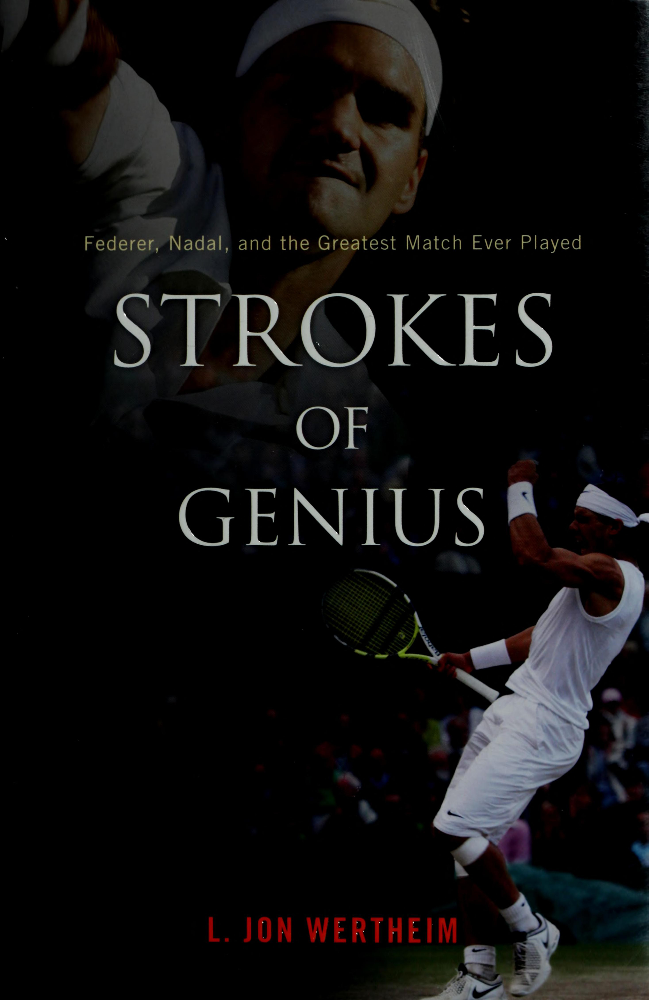
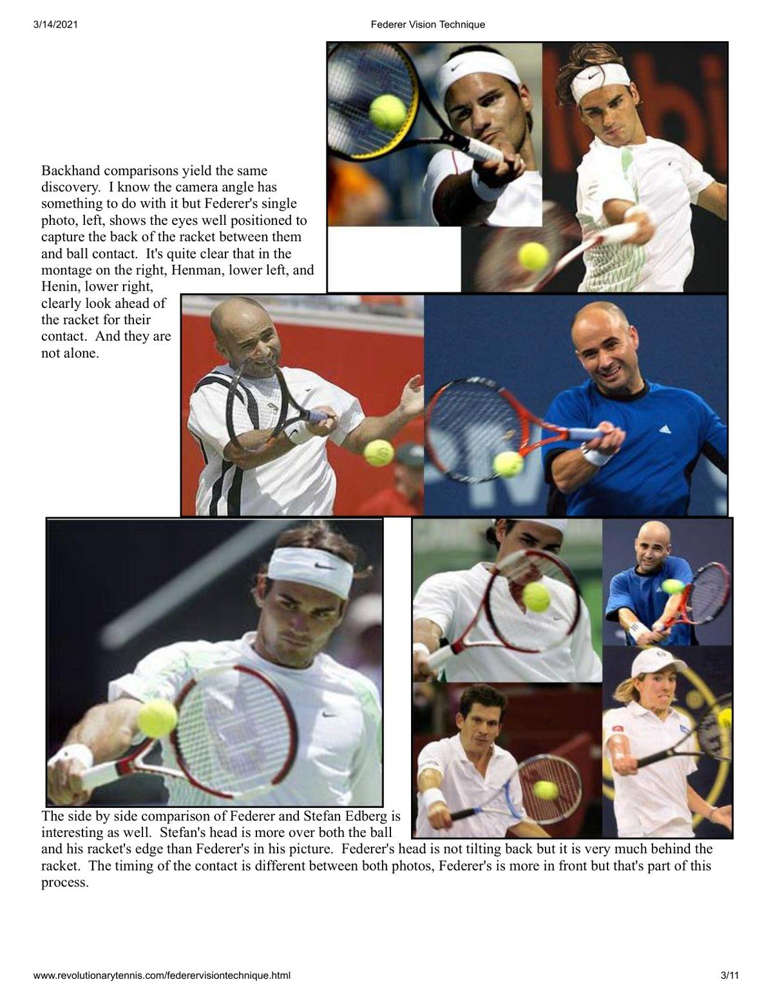
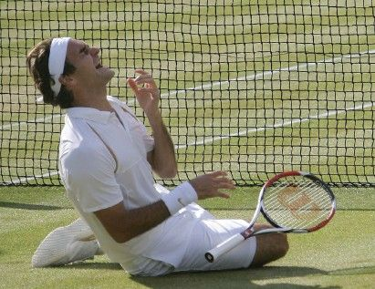
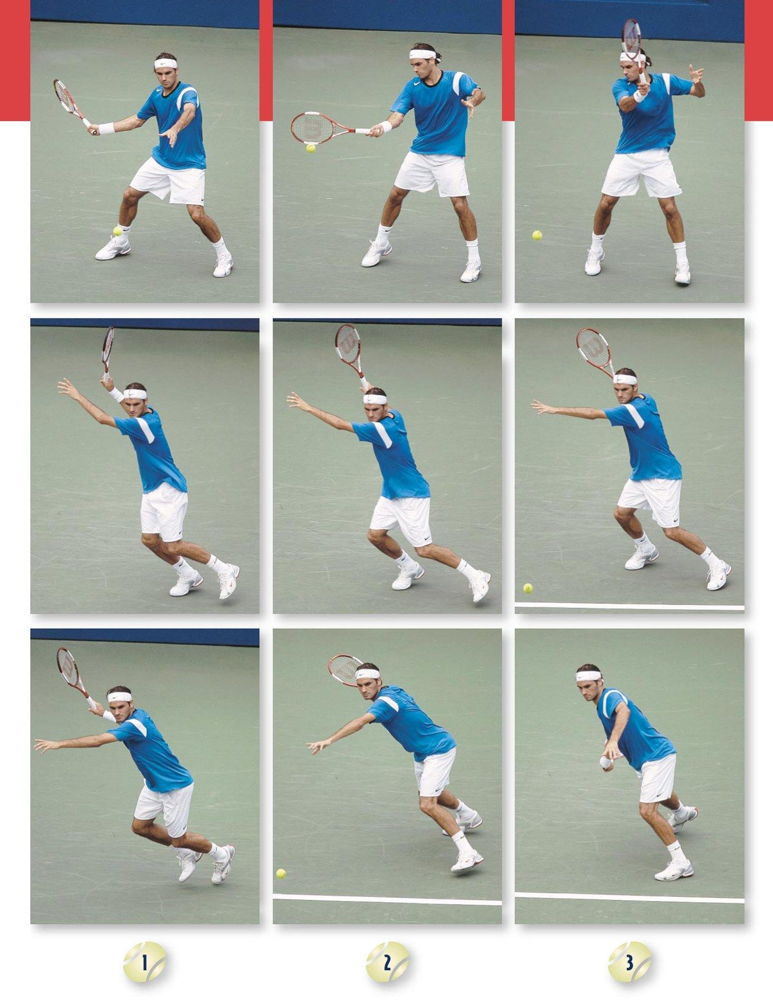
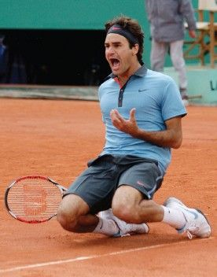
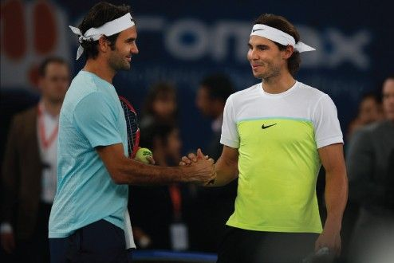

Những Cú Đánh Của Thiên Tài: Federer, Nadal Và Trận Đấu Vĩ Đại Nhất Lịch Sử (Strokes of Genius)
Bản dịch Việt ngữ này chỉ dùng cho mục đích học tập cá nhân, phi thương mại. Bản quyền tác phẩm gốc thuộc về tác giả và nhà xuất bản.
Lời Mở Đầu: Chiều Kích Của Những Cuộc Đối Đầu Huyền Thoại
NẾU CÁC ĐỐI THỦ VẬN ĐỘNG VIÊN không phải là kẻ thù hoàn toàn, thì họ— theo định nghĩa — là đối thủ. Họ chiến đấu với nhau và chạy đua với nhau và cố gắng đánh những quả bóng tennis qua nhau. Trong những trường hợp có kết cấu nhất, chúng đại diện cho những phong cách, sự nhạy cảm, giá trị và di sản khác nhau. Thông thường, giữa họ có ít nhất một chút không ưa thích. Tất cả sự cạnh tranh đó, tất cả sự so sánh đó, tất cả sự quen thuộc đó? Đúng vậy, nó có thể sinh ra sự khinh thường. Nhưng cũng có một sự gần gũi nhất định.
IF ATHLETIC RIVALS aren't outright enemies, they are— by definition — adversaries. They fight each other and race each other and try to hit tennis balls past each other. In the most textured cases, they represent different styles and sensibilities and values and heritages. More often than not, there is at least a touch of dislike between them. All that competition, all that comparison, all that familiarity? Hell, yes, it can breed contempt. But there’s also a certain closeness.
Được đặt cùng nhau như hiện tại, hầu hết các đối thủ đều có ý thức tốt để biết rằng cuối cùng, họ sẽ tốt hơn cho sự tồn tại của kẻ thù. Chắc chắn, Nicklaus đã tước đoạt của Palmer một loạt danh hiệu, cũng như Magic đã cướp đi thêm một vài danh hiệu NBA của Bird. Và ngược lại. Nhưng họ cũng đẩy nhau lên những tầm cao hơn. Chắc chắn, các kiện tướng cờ vua Boris Spassky và Bobby Fischer đã vạch trần những điểm không hoàn hảo và điểm yếu của nhau mà họ không muốn bị phơi bày. Nhưng họ cũng buộc nhau phải cải thiện và đổi mới.
Bracketed together as they are, most rivals have the good sense to know that, finally, they are better for the existence of their nemesis. Sure, Nicklaus deprived Palmer of a bunch of trophies, just as Magic robbed Bird of a few more NBA titles. And vice versa. But they also pushed each other to greater heights. Sure, chess masters Boris Spassky and Bobby Fischer laid bare each other’s imperfections and weaknesses that they would not have wanted to be exposed. But they also forced each other to improve and innovate.
Chắc chắn, Frazier có thể đã làm được mà không cần phải được Ali điêu khắc lại khuôn mặt của mình. Nhưng họ cũng tạo cho những thành tựu của nhau một số bối cảnh, một số sức nặng. Cuối cùng, các đối thủ trở nên gắn bó với nhau: Chà, chúng ta biết Ali giỏi vì anh ấy đã đánh bại Frazier, người giỏi đến mức đánh bại Ali.
Sure, Frazier could have done without getting his face resculpted by Ali. But they also gave each other’s achievements some context, some heft. In the end, rivals end up becoming intertwined: Well, we know Ali was good because he beat Frazier, who was so good that he beat Ali.
Yaa Các khía cạnh đặc biệt của sự cạnh tranh, khoảng cách cần thiết và sự gần gũi cần thiết, được bộc lộ rõ ràng trong tennis. Ở vị trí đối diện nhau trên lưới, các đối thủ dành hàng giờ tham gia vào các cuộc tranh luận không lời, trao đổi quan điểm và phản biện cũng như những lời đáp lại thông minh, thăm dò điểm yếu và đặt bẫy. Họ ở ngoài đó một mình, bị cách ly khỏi ảnh hưởng bên ngoài. Không giống như quyền anh, không có người quản lý nào chăm sóc họ bằng Vaseline, khuyến khích và hướng dẫn trong thời gian nghỉ giữa trận đấu. Không giống như chơi gôn, cuộc thi diễn ra đồng thời. Một tay vợt tennis không thể bước xuống fairway trong khi đối thủ của anh ta thực hiện động tác backswing.
The peculiar dimensions of rivalry, the necessary distance and the necessary proximity, are laid bare in tennis. Positioned on opposite sides of the net, rivals spend hours engaged in wordless debate, swapping points and counterpoints and clever rejoinders, probing for weaknesses and setting traps. They're out there alone, cordoned off from outside influence. Unlike boxing, there are no cornermen plying them with Vaseline, encouragement, and instruction during breaks in the action. Unlike golf, the competition is simultaneous. A tennis player can't walk down the fairway while his rival takes his backswing. Truly, tennis is the most gladiatorial sport going.
Quả thật, tennis là môn thể thao đấu sĩ hấp dẫn nhất. Đồng thời, có sẵn tính tập thể. Các đối thủ tennis có thể đối đầu nửa tá lần một năm hoặc hơn. Họ mãi mãi tình cờ gặp nhau ở sảnh khách sạn Cincinnati này hoặc nhà hàng Monte Carlo đó. Họ thi đấu trong cùng một giải đấu và thường có chung đội ngũ quản lý và nhà tài trợ giày. Và bị kẹp giữa tất cả những cuộc cạnh tranh trên sân?
At the same time, there’s the built-in collegiality. Tennis rivals may face off a half-dozen times a year or more. They’re forever running into each other in this Cincinnati hotel lobby or that Monte Carlo restaurant. They play on the same tour and often share the same management team and shoe sponsor. And sandwiched between all that on-court competition? Before the match, players spend ten minutes warming up together.
Trước trận đấu, các tay vợt dành 10 phút để khởi động cùng nhau. (Đối với các cú đá, hãy thử so sánh điều này với các môn thể thao khác: “Này Joe, trước khi chúng ta bắt đầu đấm bốc một cách nghiêm túc, có phiền nếu tôi đánh bạn vài lần bằng tay trái không?” “Chắc chắn rồi, Muhammad.”) Và ngay khi cuộc thi kết thúc, các vận động viên tennis tiến lên lưới để thực hiện nghi thức bắt tay. Sự thân mật này, dù có thể bị ép buộc, đặc biệt rõ ràng ở Wimbledon.
(For kicks, try to analogize this to other sports: “Hey Joe, before we start to box in earnest, mind if I whap you a few times with my left hand? “Sure, Muhammad.”) And the instant the contest ends, tennis players head to the net for the ritual handshake. This intimacy, forced as it may be, is particularly pronounced at Wimbledon. At the All England Lawn Tennis and Croquet Club, the top players— most of the highest seeds and
Tại Câu lạc bộ Tennis và Croquet trên sân cỏ toàn nước Anh, những tay vợt hàng đầu— hầu hết đều là những hạt giống cao nhất và tôi cựu vô địch—ở chung một phòng thay đồ tách biệt với cấp bậc và hồ sơ. Nó không khác gì một trong những phòng chờ sang trọng, thơm tho ở sân bay, phân chia giữa những hành khách hạng nhất ưu tú và những hành khách chưa tắm rửa sạch sẽ trên xe khách. Được bài trí trang nhã với tủ đựng đồ bằng gỗ bạch dương và TV độ phân giải cao trên tường, khu vực này không lớn hơn nhiều so với phòng khách thông thường của bạn. Một tay vợt hắt hơi hoặc ợ hơi và những người khác trong phòng đều biết điều đó. Nó ở đây os mà các tay vợt hàng đầu tụ tập khi họ không có mặt trên sân. Các đô vật trung học, vận động viên đấu kiếm ở trường đại học, tay vợt bóng đá nội bộ, họ sẽ không tưởng tượng được việc phải ở chung phòng thay đồ với đối thủ của mình. Tuy nhiên, tại Wimbledon, các tay vợt sẽ mặc trang phục giống với những đối thủ mà họ sẽ tham gia trận đấu vào buổi chiều. Vì vậy, vào lúc 13:00 theo Giờ chuẩn Greenwich ngày 6 tháng 7 năm 2008, khoảng một giờ trước khi họ đối đầu nhau trong trận chung kết Wimbledon lần thứ 122 - trận đấu quan trọng nhất của giải đấu quan trọng nhất trong năm - Roger Federer của Thụy Sĩ và Rafael Nadal của Tây Ban Nha đã đối mặt nhau.
I former champions—share a locker room separate from the rank and file. It’s not unlike one of those plush, fresh-smelling lounges at the airport, dividing the elite first-class fliers from the great unwashed in coach. Tastefully appointed with birch lockers and high-definition TVs on the walls, this enclave is not much bigger than your average living room. A player sneezes or belches and the others in the room know it. It’s here that the top players gather when they're not on the court. High school wrestlers, junior college fencers, intramural soccer players, they wouldn't imagine sharing a locker room with their opponents. Yet at Wimbledon players get dressed alongside the same counterparts whom they'll engage in combat later in the afternoon. So it was that at 13:00 Greenwich Mean Time on July 6, 2008, an hour or so before they were to face each other in the 122nd Wimbledon final—the most important match of the year’s most important tournament— Switzerland's Roger Federer and Spain’s Rafael Nadal came face to face. Federer was sitting in front of his usual locker, No.
Federer đang ngồi trước tủ đựng đồ quen thuộc của anh ấy, số 66, thư giãn trên một chiếc ghế gỗ thông, thì Nadal bước vào và tiến đến tủ đồ 101 cách đó khoảng chục bước. Vì một người đàn ông coi người kia là kẻ xâm phạm không gian—chú rể theo dõi cô dâu trước lễ cưới—họ đã kìm nén mọi sự phẫn nộ. Federer cười gượng như muốn nói: “Vậy, tôi đoán là chúng ta sẽ gặp lại nhau.” Anh ta trông vui vẻ và không có gì đáng sợ. Nadal gật đầu đáp lại, không lạnh lùng cũng không nồng nhiệt. Sau đó, mỗi người quay lại giả vờ như mình có căn phòng cho riêng mình.
relaxing on a pine bench, when Nadal trudged in and headed for locker 101 maybe a dozen paces away. Inasmuch as one man considered the other an interloper or a space invader—the groom spying the bride in advance of the wedding ceremony— they suppressed any outrage. Federer smiled wryly as if to say, “So, I guess we meet again. He looked genial and unthreatening. Nadal nodded in response, neither coldly nor warmly. Then each went back to pretending he had the room to himself.
Federer và Nadal tạo thành đối thủ năng động nhất, không chỉ trong tennis mà trong tất cả các môn thể thao đương đại. Họ đã cùng nhau tạo ra một bức tường lửa, ngăn cách họ với phần còn lại của lĩnh vực này. Người này hay người kia đã giành được mười bốn trong số mười sáu chức vô địch Major gần đây nhất. Trong hơn một thế kỷ, không có hai tay vợt nào đấu với nhau ở cả hai trận chung kết Pháp mở rộng và Wimbledon trong cùng một năm; Nadal và Federer đã làm được điều đó ba năm liền. Trận chung kết Wimbledon 2008 đánh dấu lần chạm trán thứ mười tám của họ.
Federer and Nadal form the most dynamic rivalry, not just in tennis but in all of contemporary sport. Together they have created a firewall, dividing themselves from the rest of the field. One or the other had won fourteen of the last sixteen Major Championships. For more than a century, no two men had played each other in both the French Open and the Wimbledon finals in the same year; Nadal and Federer had done it three years running. The 2008 Wimbledon final marked their eighteenth encounter.
Vào thời điểm đó, Nadal đã dẫn đầu các trận đối đầu từ 11 đến 6, bao gồm cả ba trận họ đã chơi trước đó trong năm đó - mặc dù cần lưu ý rằng hầu hết các trận đấu đều diễn ra trên mặt sân đất nện ưa thích của anh ấy. Bốn Chủ nhật trước đó, Nadal đã vượt qua Federer ở Pháp mở rộng
At the time, Nadal led the head-to-head face-offs eleven to six, including all three matches they'd played previously that year—though it should be noted that most of the matches were fought on his preferred surface of clay. Four Sundays earlier, Nadal had pasted Federer in the French Open final in Paris.
Trận chung kết 4s ở Paris. Chiến thắng quá toàn diện (tỷ số: 6-1, 6-3, 6-0) và không xứng đáng với sự kình địch của họ đến mức khiến cả hai tay vợt đều bối rối. Sau đó, Nadal cố gắng tránh vào phòng thay đồ để tránh nhìn thấy Federer.
The victory was so comprehensive (scoreline: 6-1, 6—3, 6-0) and so unworthy of their rivalry that it embarrassed both players. Nadal tried to avoid going into the locker room afterward, lest he glimpse Federer.
Ngay sau trận đấu, Federer tỏ ra dũng cảm trước công chúng, nhưng chỉ trong vài ngày, anh ấy sẽ mô tả thất bại là "tàn bạo". Phân tích của Nadal mang tính bác ái hơn: “Tôi đã chơi một trận đấu gần như hoàn hảo và Roger mắc nhiều lỗi hơn thường lệ”. Tuy nhiên, Nadal vẫn bị xếp ở vị trí thứ 2 trên bảng xếp hạng, Federer đã giữ vị trí đầu bảng trong 230 tuần liên tiếp và đang tính là một kỷ lục tennis. Hơn nữa, Federer đã đánh bại Nadal trong hai trận chung kết Wimbledon trước đó - trận chung kết năm 2007 là một trận đấu kinh điển kéo dài 5 set.
Immediately after the match, Federer wore a brave face in public, but within days he would characterize the defeat as “brutal. Nadal’s analysis was more charitable: “I played an almost perfect match and Roger made more mistakes than he usually does.” Yet Nadal was still consigned to No. 2 in the rankings, Federer having inhabited the top spot for 230 straight weeks and counting, a tennis record. What’s more, Federer had beaten Nadal in the previous two Wimbledon finals—the 2007 edition was a five-set insta-classic.
Trận thua đã khiến Nadal rơi nước mắt và khiến anh tự hỏi liệu mình có phung phí cơ hội tốt nhất để giành được danh hiệu mà anh thèm muốn nhất hay không. Ngoài những kỷ lục, sự cạnh tranh của họ còn được nâng cao bởi phong cách đụng độ. Người ta có thể dành hàng giờ để chơi trò so sánh và đối chiếu. Federer đấu với Nadal là hiện thân của cánh hữu và cánh tả. Kỹ thuật cổ điển so với cực chất. Mèo nhẹ so với taurine nặng. Sự kiềm chế và tỉ mỉ thầm lặng của người Trung Âu đối lập với sự dũng cảm và đam mê của người Iberia. Sức mạnh trang nghiêm chống lại sự tàn bạo không thể biện hộ được. Zeus đấu với Hercules. Thiên tài không ngừng nghỉ và ý chí kiên cường. Tiếng Ba Lan so với sự nghiệt ngã. Metrosexity so với tăng cường cơ bắp.
The loss had driven Nadal to tears and left him to wonder if he had squandered his best opportunity to win the one title he coveted most. Beyond the records, their rivalry was heightened by clashing styles. One could spend hours playing the compare-andcontrast game. Federer versus Nadal embodies righty versus lefty. Classic technique versus ultramodern. Feline light versus taurine heavy. Middle European restraint and quiet meticulousness versus Iberian bravado and passion. Dignified power versus an unapologetic, whoomphing brutality. Zeus versus Hercules. Relentless genius versus unbending will. Polish versus grit. Metrosexuality versus hypermuscular hypermasculinity.
Một công dân đa ngôn ngữ của thế giới so với một người đồng quê quê mùa không hề nao núng. Một phi công máy bay phản lực tư nhân so với một hành khách hạng bét. Người lái xe Mercedes đấu với người lái xe Kia. | Sự so sánh giữa vẻ đẹp tiến hóa của Federer với vẻ đẹp của người Neanderthal của Nadal trong tiệm tennis là không công bằng và thô thiển. Bạn có thể chấp nhận tiền đề rằng cả hai đều là nghệ sĩ mặc dù họ rõ ràng thuộc các trường phái khác nhau. Federer là người theo trường phái ấn tượng tinh tế, có nét bút vẽ, còn Nadal là người theo trường phái biểu hiện trừu tượng bướng bỉnh, phóng khoáng.
A multitongued citizen of the world versus an unabashedly provincial homebody. A private-jet flier versus a steerage passenger. A Mercedes driver versus a Kia driver. The tennis salon’s comparison of Federer's evolved beauty with Nadal’s Neanderthal drudge is as unfair as it is crass. You can accept the premise that they're both artists even though they're of decidedly different schools. Federer is a delicate, brush-stroking impressionist, and Nadal is a dogged, freewheeling abstract expressionist.
oS Mặc dù khoảng cách giữa họ chưa đầy 5 năm— DOB 8/8/81 của Federer, DOB 6/6/86 của Nadal—nhưng họ ở hai phía đối lập nhau về khoảng cách thế hệ. (Federer tính trong số những người bạn thân nhất của anh ấy là một nhân viên ngân hàng đầu tư người Thụy Sĩ đã kết hôn ở độ tuổi cuối 30; những người bạn lớn của Nadal hầu hết là những người hiểu biết về PlayStation ở độ tuổi ngoài 20.) Thật ngạc nhiên, cả hai đều có kích thước vật lý giống hệt nhau, 185 cm và nặng 85 kg (6'1", 188 lbs.), nhưng họ khó có thể khác biệt hơn về mặt hình thể. Federer mềm mại và dẻo dai, tất cả đều có sức mạnh gân guốc và cơ bắp co giật nhanh.
Although less than five years separate them— Federer's DOB 8/8/81, Nadal’s DOB 6/6/86—they are on opposite sides of a generation gap. (Federer counts among his best friends a married Swiss investment banker in his late thirties; Nadal’s gran amigos are mostly PlayStation savants in their early twenties.) Amazingly, they both have the exact same physical dimensions, 185 cm and 85 kg (6'1", 188 lbs.), but they could scarcely be more corporeally different. Federer is lithe and wiry, all sinewy strength and fast-twitch muscle.
Nadal được xây dựng như thể anh ấy có thể có sự nghiệp với tư cách là một hậu vệ cánh của NFL — nếu không phải là một võ sĩ lồng UFC — nếu việc theo đuổi tennis của anh ấy không thành công rực rỡ như vậy. Giờ đây, ngay cả trong phòng thay đồ, lúng túng trải qua thời gian bên nhau/cách nhau khi cơn mưa làm trì hoãn thời gian bắt đầu trận chung kết Wimbledon thứ ba liên tiếp của họ, sự khác biệt của họ vẫn lộ rõ. Trở thành một tay vợt chuẩn bị vào chung kết năm thứ sáu liên tiếp, bất bại tại Wimbledon kể từ năm 2002, Federer tỏ ra điềm tĩnh.
Nadal is built as if he could have had a career as an NFL halfback—if not a UFC cage fighter—had his tennis pursuit not panned out so magnificently. Now, even in the locker room, awkwardly passing the time together/apart as rain delayed the start of their third straight Wimbledon final, their differences were glaringly apparent. Befitting a player preparing to compete in the final for the sixth straight year, undefeated at Wimbledon since 2002, Federer radiated calm.
Như một nhà quan sát trung lập sau này đã nói, “Nó gần như thể anh ta bị ném đá vậy.” Anh ấy ngồi trên băng ghế mỉm cười và kể những câu chuyện cười trong bữa tiệc cocktail. Sau khi uống cạn chai Pepsi nặng 20 ounce đi kèm với đĩa mì ống nguyên chất mà anh ăn vào bữa trưa, Federer nhai một trong những thanh sô cô la Kit Kat yêu thích của mình. (Theo yêu cầu của Federer, câu lạc bộ đã cất chúng vào phòng thay đồ, cùng với những quả chuối mà những tay vợt kém hơn khác đã yêu cầu.) Severin Liithi, đội trưởng của đội Davis Cup Thụy Sĩ và người gần gũi nhất mà Federer phải làm huấn luyện viên trong tuần đó, ngồi gần đó.
As one neutral observer later put it, “It was almost as if he were stoned. He sat on the bench smiling and cracking cocktail-party jokes. Having drained a twenty-ounce bottle of Pepsi that accompanied the plate of pasta primavera he ate for lunch, Federer munched one of his beloved Kit Kat chocolate bars. (At Federer’s behest, the club had stocked them in the locker room, along with the bananas that other, lesser players had requested.) Severin Liithi, the captain of the Swiss Davis Cup team and the closest thing Federer had to a coach that week, sat nearby.
Nhưng khi họ nói chuyện, chủ yếu là về những vấn đề khác ngoài tennis. Một mình thiết lập lại lĩnh vực tâm lý học thể thao trong một thập kỷ tốt đẹp, Federer không hề hình dung hay thực hiện các bài tập tinh thần nào khác. Anh ấy giống như một ngôi sao nhạc rock đang thơ thẩn ở hậu trường trước buổi biểu diễn mà anh ấy đã biểu diễn vô số lần. Đêm hôm trước, tại căn nhà anh thuê gần
But when they spoke, it was mostly about matters other than tennis. Single-handedly setting back the field of sports psychology a good decade, Federer did no visualization or other mental exercises. He resembled a rock star lounging backstage before a gig he had performed innumerable times. The previous night, at the house he was renting near the courts, Nadal tossed in his bed.
6. * sân, Nadal quăng mình trên giường. Hình ảnh về hai trận chung kết Wimbledon trước đây xâm chiếm tâm trí anh – đầu tiên là một thất vọng, sau đó là trận thua đau đớn trước Federer – và dù anh cố xua đuổi chúng đi nhưng chúng vẫn tiếp tục gào thét đáp trả. Anh nghe nhạc, dậy xem phim. Cuối cùng anh ấy ngủ thiếp đi lúc 4 giờ sáng và thức dậy lúc 9:30. Khi Nadal bước vào bàn ăn sáng, lần đầu tiên trong suốt giải đấu, anh thấy trời đang mưa. “Cuối cùng thì cũng là Wimbledon!” anh ấy nói đùa.
Images of his two previous Wimbledon finals invaded his thoughts—first a disappointing and then a devastating loss to Federer—and as much as he tried to banish them, they kept screaming back. He listened to music, got up to watch movies. He finally fell asleep at 4 a.m. and woke up at 9:30. When Nadal made it to the breakfast table, he saw that, for the first time all tournament, it was raining. “Finally, it’s Wimbledon!” he joked.
Bây giờ, vung tay điên cuồng và thực hiện các cú đánh trong phòng thay đồ cách đầu Federer vài bước chân, Nadal đã thể hiện hình dáng cổ điển của một chiến binh chuẩn bị cho trận chiến. Anh vừa tắm nước lạnh và với hệ thống thần kinh giao cảm đang hoạt động mạnh mẽ, Nadal đang ở chế độ chiến đấu hoặc bỏ chạy. Nhịp tim của anh ấy chắc chắn đang đập mạnh, hormone căng thẳng chảy khắp cơ thể, đồng tử giãn ra, anh ấy duỗi người, đi đi lại lại và tiểu tiện, đảm bảo rằng nước tiểu của anh ấy có màu nhạt và không có mùi, một dấu hiệu cho thấy cơ thể anh ấy đã được cung cấp đủ nước.
Now, swinging his arms wildly and taking practice strokes in the locker room a few feet from Federer’s head, Nadal cut the classic figure of a warrior preparing for battle. He had just taken a cold shower, and with his sympathetic nervous system kicking into high gear, Nadal was in fight-or-flight mode. His heart rate surely jackhammering, stress hormones coursing through his body, his pupils enlarged, he stretched and paced and pissed, making sure his urine was pale and odorless, an indication that his body was properly hydrated.
Ngay cả khi cố gắng tiết kiệm năng lượng, anh ấy vẫn loay hoay với những dải băng bó chặt dưới đầu gối, được đeo để ngăn ngừa chứng viêm gân bánh chè đã từng làm phiền anh ấy trong quá khứ. Như thể mắc chứng OCD cấp độ thấp, anh ta lục lọi chiếc túi vợt sưng phồng của mình hết lần này đến lần khác. Một nghi thức khác, anh ấy hạ và nâng tất của mình cho đến khi chúng có cùng chiều cao.
Even when he tried to conserve energy, he fiddled with the tight bands of tape below his knees, worn to prevent the patellar tendinitis that has bothered him in the past. As if afflicted with lowgrade OCD, he rifled through his swollen racket bag again and again. Another ritual, he lowered and raised his socks until they were precisely the same height.
Ngồi gần đó, chú và huấn luyện viên của Nadal, Toni Nadal, đưa ra những lời động viên khích lệ >» bằng những đoạn ngắt âm dữ dội: “Không có từ nào là ‘không thể. » « “Hãy làm những gì bạn phải làm.” “Nghĩa vụ là nghĩa vụ.” Vào khoảng 2h15 chiều, nửa giờ sau thời gian xuất phát đầu tiên, Federer và Nadal được thông báo rằng bầu trời, dù vẫn còn đen như mực, đã ngừng phun những hạt mưa và chiếc lều bạt bảo vệ Sân Trung tâm đã bị xì hơi và tháo rời.
Sitting nearby, Nadal’s uncle and coach, Toni Nadal, offered motivational bromides >» in intense staccato bursts: “There is no such word as ‘cannot. “Obligations are obligations.” At around 2:15 p.m., half an hour after their initial starting time, Federer and Nadal were advised that the sky, though still inky, had stopped spitting raindrops and the tarp tent protecting Centre Court was being deflated and disassembled.
Federer và Nadal bước ra khỏi phòng thay đồ, đi xuống một hành lang dài trải thảm và từ từ đi xuống cầu thang dẫn đến sân. Với việc Nadal đi trước 10 feet,
Federer and Nadal walked out of the locker room, wended down a long carpeted hallway, and slowly descended a set of stairs leading to the court.
-- F họ đã vượt qua một bức ảnh về trận chung kết Wimbledon của Bjorn Borg và John McEnroe năm 1980, trận đấu mà tất cả các cuộc đụng độ tennis khác đều được đánh giá. Ở đây một lần nữa, sự khác biệt giữa Federer và Nadal được in nghiêng và in đậm. Vượt xa chiếc áo khoác Great Gatsby màu kem, viền vàng mà anh từng mặc mà không hề mỉa mai (và, thật kỳ diệu, cởi bỏ mà không hề bị chế nhạo) trong những năm trước, Federer giờ đây khoác lên mình chiếc áo len màu kem, viền vàng lấy ngay từ Brideshead Revisited - trang phục bảo thủ thể hiện cảm giác tôn trọng và lịch sử.
With Nadal walking ten feet ahead, they passed a photograph of Bjorn Borg and John McEnroe's Wimbledon final in 1980, the match against which all other tennis clashes are judged. Here again, the Federer-Nadal differences were italicized and in boldface. Having outgrown the cream, gold-trimmed Great Gatsby blazer he'd worn without irony (and, miraculously, pulled off without mockery) in past years, Federer was now clad in a cream, gold-trimmed cardigan straight out of Brideshead Revisited— conservative attire that represented a sense of respect and history.
Chiếc áo len do Nike sản xuất đã được bán trong cửa hàng quà tặng Wimbledon với mức giá đắt đỏ là 260 bảng Anh và chỉ có 230 chiếc được sản xuất, một lượng hàng tồn kho tương ứng với 230 tuần liên tiếp Federer đã trải qua ở vị trí số 1. Nadal, người thà mặc váy cỏ hơn là chiếc áo len cardigan trị giá 500 đô la, mặc một chiếc áo len màu trắng khởi động. Federer mặc chiếc quần đùi tennis cổ điển có thắt lưng; Nadal mặc chiếc quần ống loe theo phong cách của mình, dài đến dưới đầu gối, không cần thắt lưng. Mái tóc của Federer được tạo kiểu cẩn thận, trong khi mái tóc của Nadal chỉ đơn giản buông xuống chiếc cổ màu ô liu của anh.
The sweater, made by Nike, was sold in the Wimbledon gift shop for the larcenous price of £260, and only 230 had been produced, an inventory made to correspond with the 230 consecutive weeks Federer had spent ranked No. 1. Nadal, who would sooner wear a grass skirt than a $500 cardigan sweater, donned a white warm-up. Federer wore classic tennis shorts cinched with a belt; Nadal wore his customary clamdiggers that sagged below the knees, no belt required.
Cả hai đều đeo băng đô Nike và đi tất Nike màu trắng nhô ra khỏi đôi giày Nike màu trắng. Ngay trước khi bước ra sân, họ đã phải trải qua một cuộc phỏng vấn trước trận đấu, một cuộc tập trận gay gắt đòi hỏi các tay vợt phải đưa ra một hoặc hai lời nói nghiêm túc. Các “mạng máy chủ” thương lượng quyền truy cập này như một điều kiện để có được khoản phí bản quyền truyền hình khổng lồ của họ và những tay vợt, không được hưởng lợi từ sự bảo vệ của công đoàn, buộc phải tuân theo điều đó. Vẫn còn trong không gian tinh thần của mình, các tay vợt rõ ràng phẫn nộ với sự xâm nhập này và đưa ra một bữa tiệc sáo rỗng. /t có lẽ là một sự kết hợp tốt. Chiến thắng trong set đầu tiên sẽ là chìa khóa.
Federer's ration of hair was carefully styled, while Nadal’s simply draped down his olive-skinned neck. They both wore Nike headbands and white Nike socks that poked out of white Nike shoes. Just before walking on the court, they endured a prematch interview, an excruciating drill that requires players to offer a sound bite or two. The “host networks” negotiate this access as a condition of their hefty TV rights fee, and the players, without benefit of union protection, are forced to abide it. Still in their mental spaces, the players clearly resent this intrusion and offer a banquet of clichés. /t should be a good match. Winning the first set will be key.
Tôi cần phải giao bóng tốt. Tôi sẽ cố gắng hết sức và xem điều gì sẽ xảy ra. Tuy nhiên, ngay cả những cụm từ rỗng tuếch này cũng có thể chứa đựng ý nghĩa. Khi Federer đứng trước người phỏng vấn, anh nhận xét:
I need to serve well. Im going to try my best and well see what happens. Yet even these hollow phrases can be pregnant with meaning. When Federer stood before the interviewer, he remarked,
“Tôi cảm thấy ổn [nhưng] đó có thể là một ngày khó khăn với mưa và mọi thứ và một đối thủ khó nhằn nên sẽ rất thú vị,” phản bội điều mà những người theo chủ nghĩa thể thao gọi là “vệ sinh tinh thần tiêu cực”. Khi Nadal được hỏi một câu hỏi tương tự về việc trì hoãn mưa và dự báo không tốt, anh ấy lắc đầu từ bên này sang bên kia và nhún vai, cử chỉ mặc định của anh ấy. Bằng giọng đặc sệt của mình, anh ấy nhẹ nhàng nói: “Mưa là dành cho cả hai [chúng tôi] nên không sao cả.
“I feel good [but] it might be a tough day with the rain and everything and a tough opponent so it should be interesting,” betraying what sports shrinks call “negative mental hygiene. When Nadal was asked a similar question about the rain delay and the inauspicious forecast, he rocked his head from side to side and shrugged, his default gesture. In his thick accent, he said softly, “The rain is for both [of us], so no problems. I just accept the weather conditions and I just play.”
Tôi chỉ chấp nhận điều kiện thời tiết và tôi chỉ chơi.” Đối với tất cả những nghi thức nhỏ nhặt, kỳ lạ khiến tennis chuyên nghiệp vừa vô cùng đáng yêu vừa vô cùng dễ bị chế nhạo – sự im lặng giống như nhà thờ của đám đông, thuật ngữ lỗi thời, lời xin lỗi không thành thật của tay vợt sau khi đánh những cú đánh trúng khung vợt – thì đây là điều cá nhân yêu thích: tay vợt mang vợt và túi của riêng mình vào sân. Những ngôi sao hàng đầu của tennis là một trong những vận động viên được công nhận nhất trên hành tinh, giàu có đến mức trừu tượng, có nhiều đoàn tùy tùng và đội Gulfstreams luôn sẵn sàng.
For all the small, quaint rituals that make professional tennis at once so thoroughly endearing and so thoroughly easy to mock— the church-like quiet of the crowd, the outmoded terminology, the players’ insincere apologies after hitting winning shots off the frame of the racket—here’s a personal favorite: the players carry their own rackets and bags onto the court. Tennis’ss top stars are among the most recognized athletes on the planet, wealthy to the point of abstraction, flush with entourages and Gulfstreams at the ready.
Nhưng khi đi làm, họ lại mang theo những thứ tào lao của riêng mình, trông không giống những người nổi tiếng hơn là những du khách ba lô lưu động tìm kiếm ký túc xá thanh niên Budapest. Biểu tượng cơ bản là không thể nhầm lẫn: ngay khi đôi chân của bạn—được mang giày Nike, bạn được trả hàng triệu đô la để chứng thực—đập xuống đất, bạn là chính mình. Trong tennis, tự lực là tất cả. Tuy nhiên, ở trận chung kết Wimbledon, nghi thức này bị đình chỉ. Sau sáu vòng đấu tự mình lấy túi vợt, hai tay vợt cuối cùng trong trận hòa Wimbledon được cung cấp dịch vụ trợ giúp đặc biệt.
But when they go to work, they lug their own crap, looking less like celebrities than itinerant backpackers in search of the Budapest youth hostel. The underlying symbolism is unmistakable: the minute your feet—shod as they may be in Nikes youre paid millions to endorse— hit the ground, you're on your own. In tennis, selfsufficiency is everything. Yet in the final of Wimbledon, this rite is suspended. After six rounds of schlepping their own racket bags, the last two players in the Wimbledon draw are accorded concierge service.
Mặc dù thừa nhận cảm thấy "trống rỗng và khó xử", Federer đã giao nộp tài sản của mình cho một người giao bóng (server) sân đấu và bước ra ngoài mà không bị cản trở. Nadal thì không. Truyền thống chết tiệt, nó sẽ khiến anh cảm thấy hụt hẫng, như thể anh sắp bước vào một cuộc đấu tay đôi mà không có khẩu .38. Anh ta bỏ túi nhưng nhất quyết giữ một trong những cây vợt của mình ở tay trái. Không có sự thiếu tôn trọng, anh ấy sẽ
Though he admitted to feeling “empty and awkward,” Federer surrendered his possessions to a court attendant and walked out unencumbered. Nadal did not. Tradition be damned, it was going to make him feel bereft, as if he were going into a duel without his .38. He gave up his bag but insisted on keeping one of his rackets in his left hand. No disrespect, he would later contend.
Chúng tôi =, sau này tranh luận. Anh ấy là người có thói quen và không muốn bị loại khỏi “nghi lễ của tôi, nghi lễ rất quan trọng của tôi”. Tin tức đã lan truyền khắp khu phức hợp rằng cơn mưa đã kết thúc và trận đấu sẽ bắt đầu.
He was a creature of habit and didn’t want to be displaced from “my ritual, my very important ritual.” Word had spread throughout the complex that the rain delay was over and the match would begin.
Đám đông có sức chứa mười lăm nghìn giáo dân đã tập trung vào Sân đấu Trung tâm của Wimbledon, một địa điểm chắc chắn nhưng chính xác được mô tả là một “thánh đường tennis”. Hầu hết đám đông đều mặc bộ đồ đẹp nhất vào ngày Chủ nhật: những người phụ nữ trong bộ váy Lilly Pulitzer màu đậu thạch; những người đàn ông với vẻ ngoài điển trai của Oxbridge và áo sơ mi Paul Smith. (Nhìn bề ngoài thì đó là một năm quan trọng đối với sọc dọc.) Nhưng – thêm bằng chứng cho thấy Wimbledon đã phát triển từ một bữa tiệc sân vườn của giới quý tộc người Anh thành một sự kiện thể thao quốc tế – đi dạo trong phòng chờ người ta cũng nhìn thấy khăn xếp và yarmulkes, đồng thời nghe được nhiều thứ tiếng khác ngoài tiếng Anh.
The capacity crowd of fifteen thousand parishioners filed into Centre Court of Wimbledon, a venue inevitably, but accurately, described as a “tennis cathedral. Most of the crowd wore its Sunday best: the women in Lilly Pulitzer dresses the color of jelly beans; the men with their Oxbridge good looks and Paul Smith shirts. (It was, by all appearances, a big year for vertical stripes.) But —more proof that Wimbledon has evolved from a garden party of the British landed gentry to an international sporting event—walking the concourse one also sees turbans and yarmulkes, and hears many tongues other than English.
Vì những bức ảnh chụp đám đông có xu hướng trông giống như những bức tranh vẽ bằng bút chấm, nên khung vẽ của Wimbledon có nhiều màu sắc không thể nhầm lẫn. John McEnroe ngồi trong phòng phát sóng nhỏ có kính của NBC - một hồ cạn ngay phía sau sân, cách mặt cỏ vài feet - nơi anh ấy sẽ dành phần còn lại của buổi chiều và hóa ra là buổi tối. Mặc bộ vest màu xám lộng lẫy để phù hợp với mái tóc màu xám lộng lẫy của mình, Bjorn Borg ngồi ở hàng ghế đầu của Royal Box phía sau đường cuối sân (baseline) giữa nhiều chức sắc khác nhau. Có mặt còn có các thành viên khác của tennis Mount Rushmore.
Inasmuch as crowd shots tend to look like pointillist paintings, Wimbledon’s canvas is unmistakably multicolored. John McEnroe settled into the small, glassed-in NBC broadcast booth —a terrarium directly behind the court, a few feet up from the grass surface—where he'd spend the rest of the afternoon and, as it would turn out, evening. Wearing a magnificent gray suit to match his magnificent gray mane of hair, Bjorn Borg sat in the front row of the Royal Box behind the baseline amid various dignitaries. Present, too, were other members of tenniss Mount Rushmore.
Trông giống như một chiếc cúp của con người với mái tóc vàng sơn mài của mình, Boris Becker đại diện cho cả mạng lưới Eurosport và truyền hình Đức, còn Martina Navratilova làm việc cho mạng lưới Kênh tennis của Mỹ. Billie Jean King đi dạo một cách vương giả trên sân, cũng như Manuel Santana, tay vợt nam Tây Ban Nha cuối cùng vô địch Wimbledon, vào năm 1966. (Đây rõ ràng là một kỷ nguyên khác: vào ngày diễn ra trận chung kết với Dennis Ralston, Santana cưỡi ngựa tới Câu lạc bộ All England trên Tàu điện ngầm Luân Đôn.) Có tin đồn - hóa ra là sai - rằng cặp vợ chồng mới cưới Chris Evert và chồng cô,
Looking like a human trophy with his lacquered gold hair, Boris Becker represented both Eurosport network and German television, and Martina Navratilova worked for the American network Tennis Channel. Billie Jean King strolled regally on the grounds, as did Manuel Santana, the last Spanish male to win Wimbledon, in 1966. (This was decidedly another era: on the day of the final against Dennis Ralston, Santana rode to the All England Club on the London Underground.) Rumor had it—false, it turned out— that newlywed Chris Evert and her husband, the
10° i tay golf người Úc Greg Norman, sẽ ghé qua vào tuần trăng mật của họ. Hãy nói điều này về Mẹ Tennis: bà ấy tự chăm sóc bản thân mình. Những người lính tennis già không lụi tàn; họ quay lại với thông tin truy cập đặc biệt. Là một người kỳ cựu trong vũ đạo của trận chung kết, Federer đã trực tiếp lên lưới trong nghi lễ lật đồng xu, nơi một đứa trẻ, thường là những đứa trẻ mắc bệnh mãn tính, được triệu tập để đóng một vai trò nhỏ trong trận đấu, giúp xác định tay vợt nào giao bóng trước.
Australian golfer Greg Norman, would stop by on their honeymoon. Say this about Mother Tennis: she takes care of her own. Old tennis soldiers don’t fade away; they come back with special access credentials. A veteran of the finals choreography, Federer went directly to the net for the ceremonial coin flip, where a child, often one with a chronic illness, is summoned to play a small role in the match, helping to determine which player serves first.
Trong trường hợp này, Blair Manns, một Macaulay Culkin, 13 tuổi, trông giống người Gloucester, mắc bệnh phổi, đã được vinh danh. Ông đại diện cho Tổ chức Phổi Anh. Ngoài việc ghi được một tấm áp phích có chữ ký của những người lọt vào vòng chung kết, anh và những người đồng đội còn nhận được vé chọn cho trận đấu. Bây giờ Blair và Federer đã đứng trên lưới. “Bạn có muốn thưởng thức trận đấu ngày hôm nay không?” Federer hỏi một cách thân thiện. Đứa trẻ gật đầu, quá lo lắng để tiếp tục cuộc trò chuyện. Hai người có sự tham gia của Pascal Maria, trọng tài chủ trì trận đấu và trọng tài giải đấu, Andrew Jarrett.
In this case, Blair Manns, a thirteen-year-old Macaulay Culkin lookalike from Gloucester who suffers from a pulmonary disease, had the honors. He represented the British Lung Foundation. In addition to scoring an autographed poster of the finalists, he and his folks also received choice tickets for the match. Now Blair and Federer stood at the net. “Are you going to enjoy the match today? Federer asked amiably. The kid nodded, too nervous to keep the conversation going. The two were joined by Pascal Maria, the chair umpire for the match, and by the tournament referee, Andrew Jarrett.
Bộ tứ chờ đợi. . . và chờ đợi. . . và chờ đợi. Nadal ngồi trên ghế, nhấm nháp Evian, nhai một thanh năng lượng, gấp quần áo và thực hiện nghi thức lâu đời của mình là nhấm nháp từng chai nước trong số hai chai nước, một chai lạnh hơn chai kia, rồi sắp xếp các chai sao cho phù hợp, với nhãn hướng về phía sân mà anh ấy sẽ chiếm trước. (Và nghĩ rằng Federer thường được chọn vào vai hậu môn.) Sự thiếu kiên nhẫn hiện rõ trên khuôn mặt, Federer lắc lư tới lui và thực hiện những động tác xoay người thực hành - gần lưới.
The quartet waited . . . and waited . . . and waited. Nadal sat in his chair, sipping Evian, chewing on an energy bar, folding his sweats, and indulging his longtime ritual of sipping from each of two bottles of water, one colder than the other, and then arranging the bottles just so, with the labels pointing toward the side of the court he'd occupy first. (And to think that Federer is usually cast as the anal one.) Impatience transparent on his face, Federer rocked back and forth and took practice swings
Chắc chắn điều này đã xúc phạm đến ý thức đúng giờ của người Thụy Sĩ. Trận đấu đã bị hoãn lại do trời mưa và dự báo thời tiết thật tồi tệ; tại sao Nadal lại dành thời gian ngọt ngào của mình? Nadal dường như không có cùng quan điểm về tình huống này, và rõ ràng đây là một phần nguyên nhân khiến Federer khó chịu. Theo một thành viên trong đoàn tùy tùng của Nadal, bạn gái của Federer trong hộp tay vợt, eo Mirka Vavrinec, nhìn tay vợt người Tây Ban Nha đang lảng vảng và lẩm bẩm, “Ồ, thôi nào.” Sau một phút buông thả, Nadal đã lao vào lưới. Sau khi khởi động xong, anh ấy mặc một chiếc áo ba lỗ màu trắng không tay. Nó được làm bằng sợi microfiber thấm hút có chức năng kép là thấm mồ hôi dồi dào và làm nổi bật bắp tay chứa khí propan của anh ấy. Có lẽ bối rối vì sự chậm trễ, chàng trai trẻ Blair Manns đã ném đồng xu mà không yêu cầu một trong hai tay vợt gọi nó giữa không trung. Jarrett chặn đồng xu. Những nụ cười lo lắng xung quanh. Blair lật nó lại lần nữa.
near the net. Surely this affronted his Swiss sense of punctuality. The match had already been postponed by rain and the forecast was grim; why was Nadal taking his sweet time? Nadal seemed not to share the same sense of occasion, and clearly this was part of Federer’s annoyance. According to a member of the Nadal entourage, in the players’ box Federer's girlfriend, Mirka Vavrinec, watched the Spaniard’s dallying and muttered, “Oh, come on. After a full minute of self-indulgence, Nadal trotted to the net. Having molted his warm-ups, he wore a sleeveless white tank top. It was made of a wicking microfiber that served the dual function of displacing his copious sweat and accentuating his propane-tank biceps. Perhaps flustered by the delay, young Blair Manns tossed the coin without asking either player to call it in midair.
Lần này Federer đã dự đoán chính xác các mặt ngửa, cho phép anh giao bóng trước. Nhưng thực sự nó không phải là vấn đề chính. Họ còn chưa đánh được quả bóng đầu tiên và dù cố ý hay vô ý, Nadal đã giáng một đòn tâm lý. Federer và Nadal sau đó đứng cùng nhau để chụp ảnh nghi lễ và giống như các võ sĩ chạm vào găng tay trước trận đấu, gõ nhẹ vào vợt.
Jarrett intercepted the coin. Nervous smiles all around. Blair flipped it again. This time Federer correctly predicted heads, entitling him to serve first. But really it was beside the point. They had yet to strike the first ball, and already, intentionally or not, Nadal had struck a psychological blow.
Khi Federer nghiêm túc bước đi để bắt đầu khởi động kéo dài 5 phút, Nadal quay người và lao từ lưới về vạch cuối sân theo cách của một con bò đực trẻ ham chơi. (N.B.: Việc so sánh và ẩn dụ về con bò tót hung hãn của Nadal là không thể tránh khỏi, đặc biệt khi biểu tượng con bò đực tô điểm ngay cả trên đôi giày Nike của anh ấy. Chúng tôi sẽ cố gắng hạn chế sử dụng hình ảnh như vậy.) Chạy sát mặt đất, anh ấy thực hiện bước tách nhanh rồi chạy dọc theo đường biên. Mặc dù Nadal bác bỏ điều này như một nghi thức khác, nhưng nó có chức năng như một cú hích tâm lý nữa.
Federer and Nadal then stood together for a ceremonial photograph and, like fighters touching gloves before a bout, tapped rackets. As Federer demurely walked away to begin the five-minute warm-up, Nadal turned and bolted from the net to the baseline in the manner of a giddy young bull. (N.B.: The Nadal-rampaging bull analogies and metaphors are inevitable, particularly since bull logos adorn even his Nike shoes. We'll try to limit the use of such imagery.) Running low to the ground, he performed a quick split step and then jogged along the baseline.
Lời nhắn: Chuẩn bị bữa trưa đi, hombre, vì anh sẽ đến đón em cả ngày. Ngay cả trong thời gian khởi động, Federer là hình ảnh của sự hiệu quả liền mạch. Hầu như không có chuyển động lãng phí. Giống như tất cả các vận động viên vĩ đại, anh ấy có sự kết nối giữa cơ thể và tinh thần một cách tự nhiên. Bất cứ điều gì bộ não anh ta tưởng tượng, cơ thể anh ta sẽ thực hiện. Rõ ràng đang háo hức bắt đầu trận đấu, Federer liếc nhìn đồng hồ bên sân nhiều lần. Anh ấy đã đánh được một số cú giao bóng thực hành của mình khi đứng bên trong vạch cuối sân. Bên kia sân, Nadal tỏ ra hết sức nỗ lực. Anh ta
Though Nadal dismisses this as another ritual, it functions as one more psychological salvo. Message: Pack a lunch, hombre, because Im going to be coming for you all day. Even in his warm-up, Federer is the picture of seamless efficiency. There’s virtually no wasted movement. Like all great athletes, he has a natural mind-body connection. Whatever his brain imagines, his body executes. Clearly eager to start the match, Federer glanced several times at the courtside clock. He hit a few of his practice serves while standing inside the baseline. On the other end of the court, Nadal was all exertion.
» lực đẩy, đập mạnh và thực hiện các cú đánh nghiêng bằng tay trái của anh ấy, nhấn mạnh các cú đánh của anh ấy — các cú đánh thực hành của anh ấy — bằng từ tượng thanh fwwwwuuumph. Chiếc áo ba lỗ màu trắng của anh đã ướt đẫm mồ hôi. Lúc khởi động kết thúc là 14:35 GMT và Pascal Maria, vị thượng tế ngồi trên ghế trọng tài, nói: "Sẵn sàng. Chơi." Và họ đã từng làm vậy.
He thrust and pounded and unfurled his left-handed sidewinding strokes, punctuating his shots—his practice shots—with an onomatopoeic fwwwwuuumph. Already his white tank top was irrigated with sweat. It was 14:35 GMT when the warm-up ended and Pascal Maria, the high priest in the umpire’s chair, intoned, “Ready. Play.” And did they ever.
Sân đấu Trung tâm CÓ MỘT sự vắng mặt ĐÁNG CHÚ Ý tại Wimbledon năm 2008. Đã không còn những chú chim bồ câu thường làm tổ trên xà nhà và dầm của Sân đấu Trung tâm rồi đậu xuống sân, khiến đám đông bật cười, bất kể họ đã nhìn thấy cảnh tượng này bao nhiêu lần trước đây. Tất cả các ngóc ngách của tòa nhà đều được tạo ra để tạo nên những chỗ ở sang trọng; tất cả cỏ và hạt giống chất lượng cao trên sân đều được tạo ra để giao bóng những bữa ăn ngon.
THERE WAS A NOTABLE absence at Wimbledon in 2008. Gone were the pigeons that used to nest in the Centre Court rafters and girders and then alight on the court, drawing spasms of laughter from the crowd, no matter how many times they had seen this spectacle before. All the nooks and crannies of the building made for deluxe accommodations; all that high-quality grass and seed on the court made for fine dining.
Sân đấu Trung tâm là môi trường sống tự nhiên của chim bồ câu và những con chim có màu chì cũng là một phần của bối cảnh giải đấu giống như Pimm's Cup và trang phục toàn màu trắng. Nhưng những con chim bồ câu đã làm các tay vợt mất tập trung, và như các quan chức của All England Club đã nói một cách tế nhị, “Những mảnh vụn của chúng có thể có vấn đề.” Vì vậy, câu lạc bộ đã chiêu mộ Rufus, một con diều hâu của Harris, kẻ săn mồi tự nhiên của chim bồ câu. Mỗi buổi sáng, Rufus sẽ bay lên đầy đe dọa trên sân và khi các trận đấu bắt đầu, những con chim bồ câu đã biến mất và bị đuổi khỏi nhà.
Centre Court was a natural pigeon habitat, and the leadcolored birds had been as much a part of the tournament tableau as the Pimm’s Cups and the all-white attire. But the pigeons distracted the players, and as All England Club officials put it, in their delicate way, “Their detritus could be problematic. So the club enlisted Rufus, a Harris’s hawk, natural predator of pigeons. Each morning, Rufus would soar menacingly above the grounds, and by the time the matches began, the pigeons would have vanished, been expelled from their homes.
Chút thuyết Darwin này cũng là một phép ẩn dụ hay như bất kỳ phép ẩn dụ nào về môn tennis sẽ diễn ra trên sân. Chủ đề của giải đấu: bản năng săn mồi của Rafael Nadal đọ sức với bản năng lãnh thổ của Roger Federer. Khẳng định rằng Federer đã vô địch Wimbledon trong 5 năm liền, mặc dù đúng, nhưng bằng cách nào đó đã đánh giá thấp sự việc. Federer sở hữu Wimbledon trong thời gian đó. Không, kiểm tra đó. Anh ấy là Wimbledon. Khi anh tích lũy được các danh hiệu và san bằng kỷ lục 5 danh hiệu liên tiếp của Bjorn Borg, đồng thời hòa nhập một cách hoàn hảo, Federer đã vượt qua sự kiện này. Lớp cỏ dưới chân làm nổi bật những chuyển động uyển chuyển và những khả năng đặc biệt của anh ấy - nghĩa là, nhiều khả năng: tất cả những cú vô lê duyên dáng, những cú đánh góc cạnh rực rỡ, những pha dứt điểm giàu trí tưởng tượng đó. Và cách cư xử thận trọng, đúng mực của Federer đã thể hiện một cách hoàn hảo tại một sự kiện mang đậm truyền thống.
This bit of Darwinism was as good a metaphor as any for the tennis that would unfold on the courts. The theme of the tournament: the predator instincts of Rafael Nadal pitted against the territorial instincts of Roger Federer. Asserting that Federer had won Wimbledon for five years running would, while true, have somehow understated the case. Federer owned Wimbledon during that time. No, check that. He was Wimbledon. As he accumulated trophies and tied Bjorn Borg’s record of five consecutive titles, all the while fitting in so flawlessly, Federer came to overtake the event. The grass underfoot accentuated his fluid movements and his singular—which is to say, multiple—abilities: all that graceful volleying, those brilliantly angled flicks, those imaginative pieces of shotmaking. And Federer's conservative, decorous behavior played pitch-perfectly at an event dripping with tradition.
Đây không phải là một trong những kẻ lười biếng với chiếc mũ bóng chày quay ngược, trưng bày hình xăm và đồ trang sức, phát âm sai giải đấu “Wim-bull-TIN.” Anh ấy là một đứa trẻ mà người lớn ở Wimbledon – Wim-bull-DUN – có thể yêu thích. Đây là một người theo chủ nghĩa cổ điển hoài niệm về một thời đại trước ông. Đây là một nhà tạo mẫu châu Âu, người chấp nhận tất cả những điều kỳ quặc, phong tục và nghi thức của giải đấu. Khi giành chiến thắng, anh ấy tràn đầy sự tôn kính và cảm kích (và adrenaline) đến mức anh ấy sẽ khóc khi nhận được chiếc cúp.
This wasn't one of those ornery sluggers with a baseball cap turned backward, a display of tattoos and jewelry, mispronouncing the tournament “Wim-bull-TIN. He was a kid the adults at Wimbledon — Wim-bull-DUN — could love. Here was a classicist nostalgic for an era that predated him. Here was a European stylist who embraced all the quirks and customs and formalities of the tournament. When he won, he was so filled with reverence and appreciation (and adrenaline) that he would cry when receiving the trophy.

Cảm xúc rõ ràng này khiến người hâm mộ hâm mộ Federer thậm chí còn quý mến hơn cả nhà vua Wimbledon trước đó, Pete Sampras, người dù thành công tương đối nhưng lại cứng nhắc và chính xác, không xuất sắc và lôi cuốn trang nhã như người ta vẫn tưởng. Nếu Wimbledon trở thành một năm kỷ niệm thực sự của Federer, thì anh ấy cũng thành công và nổi tiếng không kém ở các điểm dừng khác trên đoàn lữ hành tennis. Federer trở thành tay vợt có thứ hạng cao nhất trong Hiệp hội tennis chuyên nghiệp (ATP) năm 2004, mở ra Kỷ nguyên Federer, chế độ thống trị nhất trong lịch sử tennis.
This transparent emotion endeared Federer to the fans even more than the preceding Wimbledon monarch, Pete Sampras, who while comparably successful was stiff and exacting, not brilliant and elegantly charismatic the way Federer is perceived to be. If Wimbledon came to represent a veritable Federer jubilee, he was just as successful and popular at the other stops on the tennis caravan. Federer became the top-ranked player in the Association of Tennis Professionals (ATP) in 2004, ushering in the Federer Era, the most dominant regime in tennis history.
Trong bốn năm, anh ấy đã giành được 11 trong số 16 giải Major— hay, để sử dụng thuật ngữ khốn nạn, Slam—bốn sự kiện nền tảng của môn thể thao này. Anh ấy đã chiến thắng trên mọi châu lục, trên mọi bề mặt, trước mọi đối thủ. Toàn bộ khu rừng sẽ phải bị đốn hạ để in lại những số liệu thống kê lòe loẹt ủng hộ sự thống trị của Kỷ nguyên Federer. Để giới hạn bài tập này ở một ví dụ như vậy: từ năm 2004 đến năm 2007, thành tích trận đấu của anh ấy là 315-24.
In four years he won eleven of the sixteen Majors— or, to use the bastardized term, Slams—the sport’s four bedrock events. He won on all continents, on all surfaces, against all opponents. Entire forests would have to be felled to reprint the gaudy statistics supporting the dominance of the Federer Era. To limit this exercise to one such example: from 2004 to 2007, his match record was 315-24.
oi SS Còn đáng chú ý hơn nữa, Federer đã giành chiến thắng không phải bằng sức mạnh không thể đáp trả, có thể làm nên lẽ phải, mà bằng sự điêu luyện và tinh tế. Trò chơi của anh ấy dựa vào độ chính xác, sắc thái và tài năng sang trọng. Đối với tất cả những nét hiện đại, phong cách của anh ấy chủ yếu là ném lùi, với trái tay bằng một tay, cách bắt tay đơn giản và sở thích chơi trên lưới. Đó là một cuộc hôn nhân thể thao hiếm hoi về phong cách và chất lượng. Những mô tả về trận đấu của Federer thường được rút ra từ nghệ thuật và ánh sáng: đó là thơ ca, múa ba lê, một bức tranh thời phục hưng, một bản giao hưởng. Anh ấy là một nghệ sĩ, một nhà thư pháp, một nhạc trưởng, một nghệ sĩ chơi đàn dây điêu luyện. Anh ấy phát sáng, phát quang, sáng chói.
More remarkable still, Federer won not with unanswerable, might-makes-right power, but with flourish and flair. His game relies on precision and nuance and opulent talent. For all the modern touches, his style is mostly a throwback, what with his one-handed backhand, his simple handshake grip, his fondness for net play. It is a rare sports marriage of style and substance. The descriptions of Federer’s game are often pulled from art and light: it’s poetry, ballet, a renaissance painting, a symphony. He’s an artist, a calligrapher, a maestro, a virtuoso on a stringed instrument.
Một nhà quan sát có trình độ thấp gọi phong cách của Federer là một "phim khiêu dâm tennis" thú vị về mặt nội tạng, thì anh ấy cũng có hứng thú với điều gì đó. Các danh hiệu lớn là thước đo cho sự xuất sắc của tennis, và Federer bắt đầu năm 2008 với thậm chí cả chục danh hiệu cho sự nghiệp của mình, khiến anh cách xa kỷ lục mọi thời đại mà Sampras tội nghiệp đã lập vài năm trước và có vẻ như sẽ chỉ có rất ít thời gian quý báu để thưởng thức. Federer chưa bao giờ vô địch Pháp mở rộng - danh hiệu duy nhất còn thiếu trong tay anh. CV—nhưng không giống như Sampras, anh ấy hầu như không bị dị ứng với đất sét.
He’s luminescent, phosphorescent, incandescent. The lowbrow observer who termed Federer's style as viscerally enjoyable “tennis porn,’ well, he was onto something too. Major titles are the measuring stick for tennis excellence, and Federer began 2008 with an even dozen for his career, putting him two away from the all-time record that poor Sampras had established a few years back and, it appeared, would be afforded precious little time to savor. Federer had never won the French Open—the one entry missing from his CV—but unlike Sampras, he was hardly allergic to clay.
Đặt tất cả các yếu tố vào máy trộn xi măng và, trong con mắt của nhiều người, bao gồm cả tôi, Federer ít nhất đã suýt giành được danh hiệu huyền thoại là tay vợt vĩ đại nhất mọi thời đại, con Dê, trong bảng tin viết tắt. Tuy nhiên, vào năm 2008, Đế chế Federer, nếu không muốn nói là sụp đổ, đã bộc lộ một số dấu hiệu suy tàn đáng lo ngại. Một trận đấu với bệnh bạch cầu đơn nhân đã khiến Federer phải mất 20 ngày tập luyện trong mùa đông ngoài mùa giải của tennis (ở mức độ mà bạn có thể gọi kỳ nghỉ đông kéo dài sáu tuần là ngoài mùa giải).
Put all the factors in the cement mixer and, in the eyes of many, myself included, Federer was at least on the precipice of taking the mythical title of tennis’s Greatest of All Time, the Goat, in message board shorthand. Yet in 2008, the Federer Empire was, if not crumbling, showing some troubling signs of decay. A bout with mononucleosis had cost Federer twenty days of practice during tennis’s winter off-season (inasmuch as you can call a six-week winter break an off-season).
Trong giải đấu đầu tiên của anh vào năm 2008, Federer đã thua ở bán kết Giải Úc mở rộng trước Novak Djo-kovic, một người Serb có mái tóc cứng và tự mê hoặc, người, không giống như nhiều đồng nghiệp của anh, hoàn toàn không bị Federer đánh giá cao. Sau trận đấu, mẹ của Djokovic, bà Dijana, đã reo hò trước các phóng viên: “Nhà vua là
In his first tournament of 2008, Federer lost in the semifinals of the Australian Open to Novak Djokovic, a self-enchanted, bristle-haired Serb who, unlike many of his peers, is thoroughly unawed by Federer. After the match, Djokovic’s mother, Dijana, crowed to reporters, “The king is dead.
đã chết. Chúc vua vạn tuế.” Lời tuyên bố táo bạo về vụ tự sát này là (a) vô lý, (b) cực kỳ thiếu tế nhị, và (c) hoàn toàn trái ngược với sự duyên dáng của Federer. Nhưng khi mùa giải 2008 diễn ra, ngày càng có nhiều người quan sát chia sẻ, nếu không muốn nói là rõ ràng, những suy nghĩ của cô. Vẫn chậm một bước, Federer đã phải vật lộn trong vài tháng tới.
Long live the king. This bold pronouncement of regicide was (a) absurd, (b) tactless in the extreme, and (c) strikingly at odds with Federer's grace. But as the 2008 season unfolded, more and more observers came to share, if not to fully articulate, her thoughts.
Vào tháng 3, anh thi đấu với Sampras tại Madison Square Garden đổ nát, đáng kính của New York, một trận đấu, Federer tâm sự với một người bạn, đó là “điểm dừng chân triệu đô” giữa các giải đấu ở Dubai (nơi Federer có nhà ở) và Palm Springs. Buổi tối diễn ra vô cùng vui vẻ, một sự thúc đẩy rất cần thiết cho một môn thể thao đang bị giảm sút ở Hoa Kỳ.
Still a step slow, Federer slogged through the next few months. In March, he played an exhibition against Sampras in New York's venerable, dilapidated Madison Square Garden, a match, Federer confided to a friend, that was “a milliondollar stopover” between tournaments in Dubai (where Federer has a residence) and Palm Springs.
Giới tennis ở New York cũng như Donald Trump, Tiger Woods, Luke Wilson, và những người nổi tiếng ăn canapé, để xem hai tay vợt nam bá chủ của Kỷ nguyên Mở, khi nghiệp dư và chuyên nghiệp thi đấu cùng nhau. Tuy nhiên, có một bất tiện nhỏ: Federer yêu cầu tiebreak ở set thứ ba để khuất phục Sampras, khi đó là một người cha toàn thời gian 36 tuổi, người đã không chơi một trận tennis nào được chấp nhận kể từ năm 2002. Mặc dù kết quả của trận đấu dường như không được ấn định - như đôi khi xảy ra với "exos" - nhưng cũng không có vẻ như Federer đang chơi ở mức gần với trình độ thông thường của anh ấy.
The evening was great fun, a much-needed boost for a sport with a diminishing profile in the United States. New York's tennis scene turned out in force, as did Donald Trump, Tiger Woods, Luke Wilson, and the rest of the canapé-eating celebrity set, to watch the two hegemonic male players of the Open Era, when amateurs and professionals played together. There was, however, this minor inconvenience: Federer required a third-set tiebreaker to subdue Sampras, then a thirty-six-year-old full-time father who hadn't played a sanctioned tennis match since 2002.
Vào mùa xuân, Federer nổi lên một cái mụn gớm ghiếc ở bên phải khuôn mặt. Theo kiểu để ria mép trên Mona-Lisa, thật choáng váng khi thấy một vận động viên đẹp trai và cẩn thận đội kiểu tóc turbo-zit khó coi đã phá hỏng đêm vũ hội của học sinh. (Một chủ đề thảo luận “Yahoo! Answers” thực sự: Có ai biết trên khuôn mặt của R. Federer là gì không?) Vết thâm đó tượng trưng cho mùa giải của Federer. Mùa xuân của anh ấy đầy rẫy những trận thua trước những người phàm trần (Mardy Fish? Radek Stepanek?), trước những đối thủ đáng tin cậy (Andys, Roddick và Murray), và trước kẻ thù không đội trời chung của anh ấy (Nadal).
Though the match’s outcome didn't appear to be fixed—as is sometimes the case with “exos” —neither did it appear that Federer was playing anywhere close to his customary level. In the spring, Federer developed a hideous pimple on the right side of his face. In a mustache-on-the-Mona-Lisa kind of way, it was jarring to see a scrupulous and handsome athlete wearing the type of unseemly turbo-zit that ruins junior prom night. (A real “Yahoo! Answers” discussion topic: Does anybody know what that is on R. Federer’s face?) The blemish was symbolic of Federer's season. His spring was pocked by losses to mortals (Mardy Fish?
Ngoài những tổn thất, còn có các cá nhân khác ae cation rằng Federer đã đặt nhầm nàng thơ của mình. Thường là một hình mẫu của sự đĩnh đạc và tinh thần thể thao, anh ấy đã quá thất vọng trong một giải đấu ở Hamburg, Đức, đến nỗi anh ấy đã đập một quả bóng ra khỏi sân vận động. Thi đấu với Djokovic ở Monte Carlo, Federer trở nên tức giận trước những lời tán gẫu giữa trận đấu của cha mẹ Djokovic có mặt ở khắp mọi nơi, những người ngồi phía sau đường biên. Sau khi họ lên tiếng phản đối cuộc gọi điện thoại, Federer quay sang họ và nói một cách khinh thường, "Im lặng! Được chứ?" Tất nhiên, bất kỳ vận động viên cỡ lớn nào khác ở vị trí quyền lực tương tự sẽ hét lên điều gì đó mạnh mẽ và tục tĩu hơn.
Radek Stepanek?), to creditable opponents (the Andys, Roddick and Murray), and to his nemesis (Nadal). Apart from the losses, there were other indications that Federer had misplaced his muse. Usually a model of poise and sportsmanship, he was so overcome with frustration in a tournament in Hamburg, Germany, that he smacked a ball out of the stadium. Playing against Djokovic in Monte Carlo, Federer became enraged by the vocal midmatch chattering of Djokovic’s omnipresent parents, who were seated behind the baseline. After they objected vocally to a line call, Federer turned to them and snapped disdainfully, “Be quiet!
Nhưng nó vẫn không có tính cách. Đối với Federer, điều này tương đương với “Fuck you”. Bằng tài năng tuyệt đối, Federer đã vượt qua trận hòa ở giải Pháp mở rộng 2008. Anh sẽ đối đầu với Nadal, nhà vô địch ba lần, trong trận chung kết. Nó có kịch bản rất đẹp. Nếu Federer có thể triệu tập thứ tennis giỏi nhất của mình và đánh bại Nadal - có thể nói là xâm chiếm vương quốc của đối thủ - thì đó có lẽ sẽ là danh hiệu quan trọng nhất trong sự nghiệp của anh. Anh ấy đã hoàn thành cái gọi là Career Slam — giành được cả bốn danh hiệu Major — và qua đó củng cố di sản của anh ấy là Người vĩ đại nhất mọi thời đại.
Okay? Of course, any other mega-athlete in a similar position of power would have yelled something more emphatic and profane. But still, it was out of character. For Federer, this was the equivalent of “Fuck you.” On sheer talent, Federer carved his way through the draw of the 2008 French Open. He was to face Nadal, the three-time champion, in the final. It was beautifully scripted. If Federer could summon his best tennis and defeat Nadal— invading his rival’s kingdom, as it were—it would mark perhaps the most significant title of his career.
Vụ án đã khép lại, cuộc thảo luận kết thúc. Đây chính xác là loại kịch bản mà các Đấng vĩ đại thích thú. Nếu Federer đẻ một quả trứng trong trận chung kết thì đó là quả trứng đà điểu. Chính suy nghĩ lý trí và sự tự nhận thức đã khiến anh ta trở thành một nhà vô địch đáng yêu như vậy lại có thể giao bóng anh ta một cách kém cỏi trên sân đấu. Giữa trận đấu, anh ấy tin rằng đó không phải là ngày của mình. Và anh không thể hoặc sẽ không cố gắng tự lừa mình nghĩ khác đi. Federer lắc đầu, nhíu mày và cau có khi ngồi phịch xuống ghế để thay đồ.
He'd complete the so-called Career Slam — winning all four Major titles—and in doing so cement his legacy as the Greatest of All Time. Case closed, discussion over. This was precisely the kind of scenario that the Great Ones relish. If Federer laid an egg in the final, it was of the ostrich variety. The same rational thinking and self-awareness that make him such a likable champion can serve him poorly on the court. Midway through the match, he became convinced it wasn't his day.
Một khi anh ấy không cho mình cơ hội chiến thắng, anh ấy nghĩ mình sẽ làm điều tốt nhất tiếp theo và rời khỏi sân khấu càng sớm càng tốt. Hoạt động với tốc độ của một người bán đấu giá, anh ta chỉ nỗ lực nửa vời để lấy lại những quả bóng. Bộ thứ ba trôi qua sau 27 phút, một sự sụp đổ giống như món bánh soufflé kết thúc với tỷ số 6–0. Đó thực sự là một chuyện che mắt bạn. Với uy tín của mình, Nadal đã không cho Federer cơ hội để xem xét lại suy nghĩ của mình. Gần như không thương tiếc về độ chính xác của mình, Nadal đã chơi bóng hoàn hảo trong suốt trận đấu. Nadal khẳng định anh hầu như không nhận thấy nỗ lực bỏ trống của Federer. Những người còn lại trong đoàn tùy tùng của ông thì không như vậy. Trước khi trận đấu kết thúc, Toni Nadal, huấn luyện viên và chú của Rafael, đã huých nhẹ những người hàng xóm trên khán đài và dùng từ “kỳ lạ” để mô tả tâm trạng của Federer.
And he could not or would not try to trick himself into thinking otherwise. Federer shook his head, furrowed his considerable eyebrows, and scowled as he lumbered to his chair on changeovers. Once he gave himself no chance to win, he figured he'd do the next best thing and get the hell offstage as soon as possible. Operating at an auctioneer’s pace, he made only halfhearted efforts to retrieve balls. The third set flew by in twenty-seven minutes, a soufflé-like collapse that ended 6—0. It was strictly a cover-your-eyes affair. To his credit, Nadal gave Federer no chance to reconsider his thinking. Almost merciless in his accuracy, Nadal went entire games striking the ball perfectly. Nadal claimed that he barely noticed Federer's vacant effort.
“Ngày mai tôi phải đọc báo để biết điều gì đang diễn ra trong đầu anh ấy,” Toni nói sau trận đấu. "Tôi chưa bao giờ cảm nhận được bất kỳ quyết tâm nào. Anh ấy chưa bao giờ đặt mình vào trạng thái đó. Tôi đang quan sát khuôn mặt của anh ấy. Đóng cửa. Anh ấy không gửi bất kỳ tin nhắn nào cho Rafa. Anh ấy không có tâm lý của người chiến thắng. Đó không phải là Roger thực sự." Ở một mức độ nào đó, Federer đã trở thành nạn nhân của những tiêu chuẩn cao đến chóng mặt của chính mình. Xét theo bất kỳ thước đo khách quan nào, anh ấy đã có một năm rất đáng nể.
Not so the rest of his entourage. Before the match had ended, Toni Nadal, Rafael’s numinous coach and uncle, nudged his neighbors in the stands and used the word “bizarre” to describe Federer’s disposition. “I must read the papers tomorrow to find out what was going on in his head,” Toni said after the match. “I never sensed any determination. He never put himself in that state. I was watching his face. Closed. He wasn't sending any messages to Rafa. He didn't have a winner's mentality. It wasn’t the real Roger.”
Nhưng, có thể là do sự đơn điệu, tuổi tác đã cao của anh ấy (gần như là hai mươi bảy tuổi!), hay đơn giản là thời hạn sử dụng hữu hạn của sự xuất sắc, tất cả đều như vậy . . . phi liên bang. Khi bạn thắng 92% số trận đấu và rồi đột nhiên đi được nửa mùa giải với chỉ một danh hiệu (lúc đó là một danh hiệu vô cùng tệ hại, Estoril Open) trong danh hiệu của mình, thì sự tương phản là điều dễ thấy. Theo cách nói của Federer, anh đã tạo ra “một con quái vật” với thành công vượt trội của mình và những kỳ vọng mà nó mang lại.
At some level, Federer had fallen victim to his own dizzyingly high standards. By any objective measure, he was having a very respectable year. But, be it on account of the mono, his advancing age (almost a doddering twenty-seven!), or simply the finite shelf life of excellence, it was all so . . . un-Federerian. When you win ninety-two percent of your matches and then suddenly reach the halfway point of a season with only one title (a rinky-dink one at that, the Estoril Open) to your credit, the contrast is conspicuous.
Ngay cả những nhà phân tích tỉnh táo hơn, chưa sẵn sàng đưa ra báo cáo điều tra về sự nghiệp của Federer, cũng thừa nhận rằng Wimbledon 2008 có ý nghĩa quan trọng. Nếu anh ấy giành chiến thắng lần thứ sáu liên tiếp, thì mọi chuyện đều ổn với thế giới. Nếu anh ấy thua, có lẽ đã đến lúc GoaT phải nói chuyện một lúc. Và nếu anh ấy thua Nadal, vì hoàn toàn có ý định từ bỏ vị trí số 1 trong quá trình này, thì chỉ đơn giản thế này: sau một trận đấu vinh quang
In Federer’s own words, he had created “a monster” with his unsurpassed success and the expectations it wrought. Even the more sober analysts, not quite prepared to issue a coroner's report on Federer’s career just yet, conceded that the 2008 Wimbledon was freighted with significance. If he won for the sixth straight time, well, all was right with the world. If he lost, maybe it was time to table that GoaT talk for a while.
Trong nhiệm kỳ 4 năm, sẽ có một cơ quan quản lý mới về tennis nam. Chiến dịch sân cỏ của Federer đã bắt đầu một cách thuận lợi. Một tuần sau thất bại ở Pháp mở rộng, anh đã giành chiến thắng trong sự kiện khởi động Wimbledon ở Halle, Đức, kéo dài chuỗi trận thắng của mình lên tới 59 trận. Nhưng khi anh đến làng Wimbledon và định cư tại ngôi nhà thuê cách Câu lạc bộ All England vài dặm - một biệt thự tình cờ thuộc sở hữu của một gia đình họ Borg, không có quan hệ họ hàng - những bài ca lại bắt đầu. “Fed đã chết à?” một tờ báo lá cải ở London hỏi.
And if he lost to Nadal, for all intents relinquishing the No. 1 ranking in the process, it was this simple: after a glorious four-year term, there would be a new administration in men’s tennis. Federer’s grass court campaign began auspiciously enough. The week after his French Open debacle, he won the Wimbledon tune-up event in Halle, Germany, running his winning streak on sod to fifty-nine matches. But when he arrived in the village of Wimbledon and settled into his rental house a few miles from the All England Club—a mansion owned, coincidentally, by a family with the surname Borg, no relation—the dirges began anew.
Djokovic, tay vợt mới đến thô lỗ đã vắng mặt trong dàn diễn viên của ATP, đã tuyên bố rằng Federer “dễ bị tổn thương”. Boris Becker, nhà vô địch Wimbledon ba lần, đã đánh giá Nadal sẽ giành chiến thắng và cho Federer “chỉ một cơ hội nhỏ”. Bjorn Borg - người có kỷ lục 5 chức vô địch Wimbledon liên tiếp mà Federer đang cố gắng vượt qua - không chỉ chọn Nadal mà còn chọn Djokovic trước Federer. Borg cũng khẳng định rằng, không, ông sẽ không ngạc nhiên nếu Federer mất danh hiệu và biến mất hoàn toàn khỏi tennis. Federer vượt qua đường cao tốc. Trong các cuộc họp mật với giới truyền thông, ông đã bác bỏ những thông tin thân mật về cái chết của mình.
“Is Fed Dead?” asked one London tabloid. Djokovic, the brash arriviste who had been lacking from the ATP’s cast, declared that Federer was “vulnerable. Boris Becker, the three-time Wimbledon champion, tipped Nadal to win and gave Federer “only a small chance. Bjorn Borg—whose record of five straight Wimbledon titles Federer was attempting to surpass— picked not only Nadal but Djokovic ahead of Federer. Borg also asserted that, no, it would not surprise him if Federer were to lose the title and disappear from tennis altogether. Federer traversed the high road.
“Tôi chưa đọc và tôi chưa nghe những gì người ta nói về mình,” anh nói dối. Khi được hỏi cụ thể về những nhận xét không khoan nhượng của Borg, Federer nhăn mặt. "Ý tôi là, nhìn này, đó là ý kiến của anh ấy. Tôi không bận tâm những gì anh ấy nói. Rõ ràng là vào lúc này, anh ấy có một chiếc micro dưới mặt và mọi người hỏi anh ấy rất rất nhiều điều. Một khi anh ấy có vẻ chỉ trích hơn, một khi anh ấy sẽ có vẻ tích cực hơn." Anh ấy có bao giờ cân nhắc việc đối đầu với Borg không? “Ồ, không, vài tháng sau, anh ấy nói: “Tôi sẽ không bao giờ tiếp cận anh ấy với những điều như thế.
During his conclaves with the media, he shrugged off intimations of his mortality. “I haven't been reading and I haven't been listening to what’s been said about me,” he lied. Asked specifically about Borg’s uncharitable remarks, Federer winced. “I mean, look, it’s his opinion. I don't mind what he says. Obviously at the moment he has a microphone under his face and people ask him many, many things. Once he'll sound more critical, once he'll sound more positive. Did he ever consider confronting Borg?
Tôi không muốn có vấn đề gì với Nhà vua.” Nhưng trận đấu tử thần ở Wimbledon này, nhuốm đầy sự đau khổ, đã khiến Federer tức giận. Anh ấy chiến thắng mọi thứ trong
“Oh, no, he said a few months later, “I would never approach him with something like that. I don’t want a problem with the King.”
ZO. * tầm nhìn trong bốn năm, thực hiện mọi bước đi đúng đắn và mang lại đủ loại phẩm giá và danh dự cho môn thể thao này. Thế thì cái này? Một vài tháng không đạt tiêu chuẩn và tất cả những mũi tên và cáp treo này? Không có thiện chí tích lũy? “Thành thật mà nói, tôi rất ngạc nhiên về mức độ cực đoan của nó. Tôi nghe thấy, “Anh ấy sẽ không giành được thứ gì nữa. Bạn cố gắng phớt lờ nó, không để nó làm phiền bạn, nhưng. . .” Anh ấy đang ở một vị trí không thể chiến thắng.
But this Wimbledon deathwatch, tinged as it was with so much schadenfreude, infuriated Federer. He wins everything in sight for four years, makes all the right moves, and brings all sorts of dignity and honor to the sport. Then this? A couple of substandard months and all these slings and arrows? Is there no accrued goodwill? “To be honest, I was surprised by how extreme it was. I was hearing, “He's not going to win a thing anymore. You try to ignore it, not let it bother you, but. . .”
Nếu anh ấy tự bảo vệ mình trước những lời chỉ trích, hạ thấp sự sa sút của mình và tự nhận mình, như anh ấy đã làm, “rõ ràng là ứng cử viên được yêu thích nhất cho Wimbledon,” thì anh ấy có nguy cơ tỏ ra kiêu ngạo hoặc tệ hơn nữa là ảo tưởng. Nếu anh ta chống trả và chỉ ra hành vi đạo đức giả - Borg? dự đoán người khác sẽ rời bỏ môn thể thao này sau khi thua cuộc? —anh ấy sẽ tự hạ thấp mình. Đáng chú ý là chính các đồng nghiệp của Federer đã đứng ra bảo vệ anh và đưa ra những tiếng nói hợp lý. Khi được hỏi liệu anh có đồng ý với tiền đề cho rằng Federer dễ bị tổn thương hay không, Nadal trợn mắt. “Ừ, rất nhiều.
He was in an unwinnable position. If he defended himself from the critics, downplayed his slump, and pronounced himself, as he did, “the big favorite obviously for Wimbledon,” he risked coming off sounding arrogant or, worse yet, delusional. If he fought back and pointed out the hypocrisy — Borg? predicting someone else would walk away from the sport after a loss? —he’d be diminishing himself. Tellingly, it was Federer's colleagues who took up his defense and offered voices of reason. Asked if he agreed with the premise that Federer was vulnerable, Nadal rolled his eyes. “Yes, a lot.
Anh ấy không thua set nào [tuần trước]. Và anh ấy đã thắng năm mươi chín trận mà không thua. Cố lên!" Được bao quanh bởi một đoàn tùy tùng đông đúc, Federer dành thời gian rảnh rỗi tại trang viên cho thuê. Anh đến thăm Sở thú Luân Đôn, đi mua sắm và ăn tối tại một vài nhà hàng thời thượng. Nhưng không giống như những năm trước, anh dành ít thời gian nhất có thể ở Câu lạc bộ All England. Đầu giải đấu, khi Federer cố gắng vội vàng chạy trốn khỏi sân của các tay vợt, một cặp móc áo đã dồn anh vào góc và yêu cầu anh tạo dáng chụp ảnh.
He didn’t lose a set [last week]. And he’s won fifty-nine matches without a loss. Come on!” Surrounded by a swelling entourage, Federer spent his downtime at the rental manor. He visited the London Zoo and went shopping and dined at a few trendy restaurants. But unlike past years, he spent as little time as possible at the All England Club. Early in the tournament, as Federer tried to make a hasty getaway from the players’ patio, a pair of hangers-on cornered him and asked him to pose for a photo.
“Tôi ước gì có hai người trong số tôi,” anh lẩm bẩm. Federer là Federer, anh đánh rơi túi xách, quàng tay qua người đàn ông và vợ anh ta, cố gắng mỉm cười và chờ đợi ánh chớp. Sau đó là Nadal. Sau khi giành chức vô địch Pháp mở rộng thứ tư liên tiếp, anh không nán lại Paris. Giá như có một lần ee lớp đất sét phủ trên cơ thể anh ấy đã được rửa sạch khỏi cơ thể anh ấy trong phòng tắm trong phòng thay đồ, những ký ức đã đi theo nó. Anh ấy và trại của mình đã chia sẻ một bữa tối ăn mừng nhẹ nhàng vào tối Chủ nhật đó, sau đó là trên bãi cỏ. Tham vọng từ lâu của Nadal, bất chấp xuất xứ (và thành công) trên sân đất nện của anh, luôn là giành chiến thắng trên sân cỏ Wimbledon. Anh ấy đã đến gần vào năm 2007.
“I wish there were two of me,” he muttered. Federer being Federer, he dropped his bag, draped his arms over the man and his wife, mustered something approximating a smile, and waited for the flash. Then there was Nadal. After winning his fourth straight French Open title, he didn’t linger in Paris. It was as if once the coating of clay had been washed off his body in the locker room shower, the memories went with it. He and his camp shared a subdued celebratory dinner that Sunday night, then it was on to grass. Nadal’s long-avowed ambition, despite his clay court provenance (and success), had always been to win on the lawns of Wimbledon. He'd come close in 2007.
Bây giờ, khi đang chơi thứ tennis hay nhất trong đời và với việc Federer tỏ ra hơi dễ bị tổn thương, Nadal nhận ra, "Có lẽ đã đến lúc của tôi." Dù không cần thiết nhưng anh lại có thêm động lực: nếu có thể giành chiến thắng, anh gần như chắc chắn sẽ thăng hạng từ vị trí số 2 mà anh đã giữ kỷ lục ba năm liên tiếp. Anh ấy sẽ không còn là người quản lý cấp trung bị mắc kẹt dưới trần kính của Federer nữa.
Now, playing the best tennis of his life and with Federer appearing a bit, well, vulnerable, Nadal figured, “Maybe it’s my time. Though it was superfluous, he had an added motivation: if he could win, he'd be virtually assured of ascending from the No. 2 position he'd held for a record three straight years. No longer would he be the middle manager trapped under Federer’s glass ceiling.
Khi Nadal bảo vệ danh hiệu Pháp mở rộng vào năm 2006, anh được lên lịch thi đấu tại sự kiện Queen's Club ở London, một trận đấu trên sân cỏ bắt đầu một ngày sau trận chung kết Roland Garros. Lo lắng rằng Nadal có thể kiệt sức đến mức phải nghỉ phép một tuần, giám đốc giải đấu Queen’s Club đã đề nghị thuê một chiếc trực thăng để đưa Nadal từ Paris đến London. Thật tuyệt, Nadal nghĩ, người chưa bao giờ cân nhắc việc rút khỏi Queen's. Không hay chút nào, chú Toni nghĩ.
When Nadal defended his French Open title in 2006, he was scheduled to play the Queen’s Club event in London, a grass court tune-up that begins the day after the Roland Garros final. Worried that Nadal might be so exhausted that he'd lavish himself with a week off, the Queen’s Club tournament director offered to charter a helicopter to shuttle Nadal from Paris to London. Cool, thought Nadal, whod never considered pulling out of Queen’s anyway.
Họ đã đặt vé trên Eurostar, chuyến tàu cao tốc chạy từ Paris đến London qua eo biển Manche. “Chúng tôi sẽ không lãng phí số tiền đó,” Toni nói thẳng thừng. Họ từ chối trực thăng riêng và đi tàu. Đối với Nadal và trại của anh, chuyến đi Eurostar từ Paris đến London đã trở thành một nghi lễ. Vì vậy, một ngày sau khi giành chức vô địch Pháp mở rộng lần thứ tư, Nadal đã lê bước qua Gare du Nord cùng với những người đi làm và doanh nhân khác. Anh ấy chụp vài bức ảnh và ký vài chữ ký, nhưng ngoài ra anh ấy chỉ là một nhà thầu độc lập khác đang chuẩn bị ra đi.
Not cool, thought his uncle Toni. They had already booked their tickets on the Eurostar, the high-speed train that runs from Paris to London under the English Channel. “We're not wasting that money,” Toni said flatly. They declined the private helicopter and took the train. For Nadal and his camp, the Eurostar ride from Paris to London had hardened into ritual. So the day after winning his fourth French Open, Nadal trudged through the Gare du Nord alongside the other commuters and businessmen.
* St vào một buổi sáng thứ Hai để làm một số công việc kinh doanh ở London. Sau hai giờ trên tàu để ngủ trưa và chơi bài, Nadal đã đến ga King's Cross St. Pancras, vượt qua nỗi sợ hãi khi di chuyển dưới nước. Đến đầu giờ chiều, chưa đầy 24 giờ sau khi giành được danh hiệu sân đất nện danh giá nhất, Nadal đã dành hai giờ tập luyện trên sân cỏ, thay đổi động tác chân, đánh trả giao bóng sớm hơn, duỗi thẳng các cú đánh, cắt trái tay, hướng dẫn bóng ở vị trí thấp so với mặt đất.
He posed for a few photos and signed some autographs, but otherwise he was just another independent contractor heading off on a Monday morning to do some business in London. After two hours aboard the train spent napping and playing cards, Nadal arrived at King’s Cross St. Pancras station, having overcome his fear of traveling underwater.
Việc Nadal thực hiện những điều chỉnh quan trọng như vậy trong trận đấu của anh ấy là một dấu hiệu khác cho thấy mục tiêu vô địch Wimbledon đã nêu của anh ấy không phải là lý do đáng nói, không hề có một chút định hướng sai lầm nào do người đại diện truyền cảm hứng. Ngày hôm sau, báo trước sự chuyển đổi nhanh chóng sang sân cỏ, một tờ báo lá cải đã giật tít: “Nadal: Bạn sẽ không thích tôi khi tôi chuyển sang màu xanh”. Các tay vợt cho biết, các sân của Câu lạc bộ Nữ hoàng thậm chí còn nhanh hơn các bãi cỏ của Wimbledon, điều này khiến quá trình chuyển đổi liền mạch của Nadal trở nên ấn tượng hơn. Trong năm ngày ở Queen's Club, anh đã đánh bại năm đối thủ, trong đó có một số vận động viên thành tích nhất trên sân cỏ.
By early afternoon, less than twenty-four hours after winning the most esteemed clay court title, Nadal clocked a twohour practice on grass, altering his footwork, hitting his returns of serve earlier, flattening out his strokes, slicing his backhand, guiding the ball to stay low to the ground. Nadal’s making such material adjustments to his game was another indication that his stated goal of winning Wimbledon was no talking point, no bit of agent-inspired misdirection. The next day, heralding this quick transition to grass, a breathless tabloid headline read: “Nadal: You Won't Like Me When I Turn Green.” The Queen’s Club courts, players say, are even faster than Wimbledon’s lawns, which made Nadal’s seamless transition all the more impressive.
Đối đầu với Ivo Karlovic, một tay vợt người Croatia cao 6 foot 10 với những cú giao bóng dường như di chuyển xa theo trục dọc cũng như theo chiều ngang, Nadal đã chơi tốt hơn trong các loạt tiebreak và giành chiến thắng 6–7, 7-6, 7-6. Đối đầu với Rod-Dick, tay vợt người Mỹ giao bóng sấm sét, Nadal chơi cơ hội và giành chiến thắng trong các set liên tiếp. Cảm xúc phản bội chưa được đưa ra làm bằng chứng hồi đầu tuần, Nadal, có động cơ rõ ràng, đã đánh bại Djokovic trong trận chung kết. Nó đánh dấu danh hiệu thứ 28 trong sự nghiệp của Nadal và là danh hiệu thứ hai sau bảy ngày. Và anh trở thành người Tây Ban Nha đầu tiên vô địch giải đấu trên sân cỏ sau 36 năm.
In the course of five days at Queen's Club, he beat five opponents, including some of the most accomplished grass court practitioners. Against Ivo Karlovic, a six-foot-ten Croatian whose serves appear to travel as far on the vertical axis as they do on the horizontal, Nadal played better in the tiebreakers and won 6—7, 7-6, 7-6. Against Roddick, the thunderbolt-serving American, Nadal played opportunistically and won in straight sets. Betraying emotion that hadn't been offered into evidence earlier in the week, Nadal, clearly motivated, beat Djokovic in the final. It marked the twenty-eighth title of Nadal’s career and his second in seven days.
Đó là một tuần lý tưởng. Anh ấy bắt tay vào công việc chuẩn bị cho sân cỏ của mình. Anh ấy đã duy trì được sự tự tin đã sưng tấy của mình. Anh ấy đặt phần còn lại của sân trong tình trạng báo động. Có lẽ là một suy nghĩ muộn màng, nhưng anh ấy cũng đã bỏ túi gần 150.000 đô la trong tuần. Và sau đó
And he became the first Spaniard to win a grass court event in thirty-six years. It had been an ideal week. He got in his grass court prep work. He sustained his swollen confidence. He put the rest of the field on alert. An afterthought, perhaps, but he also pocketed nearly $150,000 for the week.
«23 anh ấy rời Anh để bay về nhà ở Majorca trong vài ngày, để câu cá ngừ ở Địa Trung Hải với bố mình. Để phù hợp với truyền thống nhà ĐKVĐ thi đấu trận đầu tiên trên sân Trung tâm, Federer đã đặt tên thánh cho Wimbledon 2008 lúc 1 giờ chiều. vào chiều thứ Hai đầu tiên. Sân, sân tennis gần nhất với Elysian Fields, đã có diện mạo mới trong năm nay: một cặp giàn nặng 70 tấn và một thiết bị cố định giống như tàu con thoi nhô ra từ đỉnh của khu phức hợp, một phần của mái mờ, có thể thu vào của Sân đấu Trung tâm, dự kiến hoàn thành vào năm 2009.
And then he left England to fly home to Majorca for a few days, to fish for tuna in the Mediterranean with his dad. In keeping with the tradition whereby the defending champion plays the first match on Centre Court, Federer christened Wimbledon 2008 at 1 p.m. on the first Monday afternoon. The court, the closest thing tennis has to the Elysian Fields, had a new look this year: a pair of seventy-ton trusses and a space-shuttle-looking fixture protruding from the top of the complex, part of Centre Court's retractable, translucent roof, scheduled for completion in 2009.
Federer cũng có một diện mạo khác. Anh ấy đã ra mắt chiếc áo len đan đó khi bước vào bãi cỏ với chiếc túi đựng vợt quàng qua một bên vai và thứ chỉ có thể được mô tả là một chiếc ví nam bằng da màu trắng đeo trên vai kia. Trận hòa đã khiến Dominik Hrbaty, một tay vợt kỳ cựu người Slovakia, trở thành đối thủ đầu tiên, và đây chính xác là kiểu đối đầu của Federer.
Federer sported a different look too. He debuted that cardigan as he walked onto the lawn with his racket bag slung over one shoulder and what can only be described as a white leather man-purse slung over the other. The draw had disgorged Dominik Hrbaty, a veteran Slovak, as a first opponent, and this was precisely Federer’s kind of matchup.
Không giống như hầu hết các vận động viên thống trị - hãy xem Woods, Tiger - những người chọn thi đấu ở một vị trí xa xôi so với phần còn lại của sân đấu, Federer là một vị vua được khai sáng, một kẻ chuyên quyền nhân từ với những điều kiện thân thiện nhất với đồng nghiệp/đối tượng của mình. Hrbaty là một người bạn lâu năm, thỉnh thoảng là đối tác đánh đôi và là một Federer-phile không hề hối lỗi. Mặc dù đã từng đánh bại Federer trong quá khứ nhưng Hrbaty vẫn ra sân mà không thực sự kỳ vọng vào chiến thắng. Trong điều kiện lý tưởng, ấm áp, không có gió hay độ ẩm, Federer chỉ mất chưa đầy một giờ để giành chiến thắng trong hai set đầu tiên.
Unlike most dominant athletes —see Woods, Tiger —who choose to operate at an imposing remove from the rest of the field, Federer is an enlightened monarch, a benevolent despot on the friendliest terms with his colleagues/subjects. Hrbaty was a longtime friend, occasional doubles partner, and unapologetic Federer-phile. Though he had beaten Federer in the past, Hrbaty took the court with no genuine expectation of winning. Under ideal conditions, congenially warm with no wind or humidity, it took Federer less than an hour to win the first two sets.
Dẫn trước set thứ ba với tỷ số 5–2, Hrbaty đi ngang qua ghế của anh ấy và ngồi cạnh anh ấy. “Tôi nhìn qua và thấy anh ấy ở đó,” Federer nói. "Anh ấy hỏi liệu anh ấy có thể ngồi cạnh tôi không. Tôi nói được, không sao cả và còn một ghế trống." Hai người đàn ông, được coi là đối thủ, đã dành 90 giây thay đổi trò chuyện dưới ánh nắng mặt trời, một cảnh tượng có thể dễ dàng mô tả hình ảnh thu nhỏ của Federer.
Trailing in the third set 5—2, Hrbaty walked past his chair and sat next to him. “I looked over and there he was,” Federer said. “He asked if he could sit next to me. I said sure, there’s no problem, and there’s an empty seat. The two men, notionally opponents, spent the ninety-second changeover chatting in the sun, a scene that could easily have epitomized the Federer
+ Thời đại. Tình bạn, tình bạn thân thiết và sự ấm áp đã loại bỏ sự cạnh tranh. Khi trọng tài gọi thời gian, Federer đứng dậy, giao bóng cho trận đấu, cẩn thận thu thập dụng cụ và chỉ thế thôi. Những ngày ở văn phòng trôi qua, công việc này khó có thể dễ dàng hơn được. Ngày hôm sau, Nadal có trận ra mắt Wimbledon 2008 trước Andreas Beck, tay vợt người Đức 22 tuổi, người đã vượt qua vòng loại thành công nhưng lại không may gặp phải tay vợt thử nghiệm nóng bỏng của môn thể thao này trong trận hòa chính đầu tiên.
Era. Friendship, camaraderie, and warmth had bleached out the competition. When the umpire called time, Federer rose, served out the match, carefully gathered his gear, and that was that. As days at the office go, this one could scarcely have been easier. The following day, Nadal made his 2008 Wimbledon de-but against Andreas Beck, a twenty-two-year-old German whod successfully snaked his way through the qualifying draw only to have the misfortune of encountering the sport’s hot-_ test player in his initial main draw match.
Beck có kỹ năng chơi tennis phi thường, nằm trong số 125 tay vợt hàng đầu trên hành tinh, đưa anh ấy vào top 0,00000002 phần trăm. Thật không may, Nadal lại vượt quá vài chữ số thập phân. Khoảng một giờ sau khi thua Nadal, trong các set liên tiếp nhưng đầy danh dự, Beck vẫn đang cố gắng xử lý trình độ chơi của đối thủ. “Đó không phải là một trò chơi, những gì anh ấy đang chơi,” Beck nói và lắc đầu. “Thật không thể tin được.
Beck is prodigiously skilled at tennis, among the top 125 or so players on the planet, putting him in the top .00000002 percentile. Unfortunately, Nadal is another few decimal places over. An hour or so after losing to Nadal, in straight sets but with honor, Beck was still trying to process his opponent's level of play. “It’s just not a game, what he’s playing,” Beck said, shaking his head. “It’s unbelievable.
Lúc nào tôi cũng nghĩ, anh ấy đang làm cái quái gì vậy?” Ít nhất Beck có cảm thấy mình có chút hy vọng khi cầm giao bóng trong set đầu tiên không? "Không. Tôi luôn không có cơ hội chống lại anh ta." Có một câu nói cảnh báo của Wimbledon: "Bạn không thể vô địch giải đấu trong tuần đầu tiên. Bạn chỉ có thể thua nó." Nhưng cả Federer và Nadal đều không có nguy cơ thua cuộc. Federer trở lại Sân đấu Trung tâm vào ngày hôm sau cho trận đấu thứ hai.
I was thinking all the time, what the hell is he doing? Did Beck at least feel he had some hope while he was holding his serve in the first set? “No. I had all the time no chance against him.” There's a cautionary Wimbledon saying: “You can't win the tournament in the first week. You can only lose it. But neither Federer nor Nadal looked to be in danger of losing. Federer returned to Centre Court the following day for his second match.
Chiếc hộp của anh ấy, khu vực ghế dành riêng của anh ấy ngay sát đường cuối sân, được bao quanh bởi sự kết hợp đa dạng của các nhân vật: người đại diện của anh ấy (Tony Godsick), mẹ anh ấy (Lynette Federer) và bạn gái lâu năm của anh ấy (Mirka Vavrinec) ngồi cạnh Anna Wintour, ngôi sao nhạc pop đang mang bầu Gwen Stefani, và chồng của Stefani, Gavin Rossdale, từng là người đứng đầu ban nhạc Bush. Về cả hình thức và cách trang trí, phần này giống như một bảng Hollywood Squares kỳ lạ. Câu trả lời hay, Gavin, nhưng tôi sẽ chọn Gilbert Gottfried vào khối!
His box, his section of reserved seats just off the far baseline, was peopled by an eclectic mix of characters: his agent (Tony Godsick), his mother (Lynette Federer), and his longtime girlfriend (Mirka Vavrinec) sat alongside Anna Wintour, the profoundly pregnant pop star Gwen Stefani, and Stefani’s husband, Gavin Rossdale, once the front man for the band Bush. In both configuration and makeup, this section resembled an odd Hollywood Squares board. Good answer, Gavin, but Im going to take Gilbert Gottfried for the block!
. Stefani và Rossdale, một người nghiện tennis, đã trở nên thân thiện với Federer và Mirka, và họ thường xuyên tham dự các trận đấu lớn. Khi Federer dành thời gian ở miền nam California vào năm 2007 trước giải đấu Indian Wells, anh đã ở nhà của Stefani và Rossdale. Trong chuyến thăm đó, Federer đã tập luyện với Pete Sampras ở Los Angeles, điều này ngoài việc tạo ra một câu chuyện dễ dàng cho báo chí tennis còn củng cố tình bạn của họ. Trong buổi tập đầu tiên, họ tập luyện trên sân của điền trang Stefani-Rossdale. Sampras không cảm thấy thoải mái với hàng loạt người theo dõi tennis quanh sân.
Stefani and Rossdale, a tennis junkie, had become friendly with Federer and Mirka, and they were regulars at big matches. When Federer spent time in southern California in 2007 before the Indian Wells tournament, he stayed at Stefani and Rossdale’s home. During that visit, Federer practiced with Pete Sampras in Los Angeles, which, apart from making for an easy story for the tennis press, solidified their friendship. For their first session, they practiced on the court of the Stefani-Rossdale estate. Sampras wasn't comfortable with the assortment of tennis voyeurs fringing the court.
Anh ấy rất ngạc nhiên khi Federer, một chàng trai tốt bụng, lại chiều chuộng Rossdale trong một buổi đánh vào cuối buổi chiều hôm đó. Sampras yêu cầu buổi tập thứ hai diễn ra ở sân sau nhà anh ở Beverly Hills. “Nó sẽ riêng tư hơn,” Sampras giải thích. Federer đến đúng giờ đã hẹn, cùng với Rossdale, người ở lại và theo dõi hai tay vợt xuất sắc nhất của môn bóng dơi Kỷ nguyên Mở. Sampras nói: “Chúng tôi đã tháo găng tay vào ngày hôm đó.
He was surprised when Federer, nice guy that he was, indulged Rossdale in a hitting session later that afternoon. Sampras requested that the second practice session take place on the backyard court of his house in Beverly Hills. “It'll be more private,” Sampras explained. Federer arrived at the appointed time, accompanied by Rossdale, who stayed and watched the two best players of the Open Era bat balls. “We took the gloves off that day,” says Sampras.
Wintour, tất nhiên, là biên tập viên của tạp chí Vogue, một tín đồ thời trang lập dị mãi mãi gắn liền với ông chủ tàn nhẫn được miêu tả trong cuốn sách và bộ phim The Devil Wears Prada. Cô đã gặp Federer ở New York vài năm trước và đã trở thành một người bạn tốt cũng như một người hâm mộ cuồng nhiệt của anh. Federer chắc chắn đã xuất hiện trên tạp chí Vogue nhiều lần hơn bất kỳ vận động viên nào khác. Wintour nổi tiếng là người gửi những bộ vest đến phòng khách sạn của Federer, đơn giản vì cô ấy đã nhìn thấy chúng và nghĩ rằng chúng sẽ hợp với anh ấy.
Wintour, of course, is the editor of Vogue, the eccentric fashionista forever associated with the ruthless boss depicted in the book and movie The Devil Wears Prada. She'd met Federer in New York several years before and had become a good friend and borderline obsessive fan of his. Federer has surely appeared in Vogue more times than any other athlete. Wintour has been known to send suits to Federer’s hotel rooms, simply because she’s seen them and thought they'd look good on him.
Mặc dù không có tiếng vang tình dục, họ đã ăn tối cùng nhau tại các nhà hàng ở New York và cô ấy đã đến tham gia các trận đấu của anh ấy trên toàn cầu. Khi Federer thi đấu với Sampras tại triển lãm Manhattan vào tháng 3, Vogue là nhà tài trợ và Wintour, với kiểu tóc hớt tóc đặc trưng và đeo kính râm quá khổ trong nhà, ngồi ở hàng ghế đầu. Khu vực “hậu trường” Wimbledon, Tòa nhà Millennium mang âm hưởng đáng ngại, giống như một con tàu du lịch với nhiều
Though there are no sexual echoes, they've dined together at New York restaurants and she’s turned up for his matches all over the globe. When Federer played Sampras in the Manhattan exhibition in March, Vogue was a sponsor and Wintour, in her trademark pageboy haircut and wearing oversized sunglasses indoors, sat in the front row. The Wimbledon “backstage” area, the ominous-sounding Millennium Building, resembles a cruise ship with multiple decks
26. > boong — phòng phỏng vấn và phòng báo chí ở phía dưới, một khoảng sân đầy nắng phía trên và một phòng ăn ngoài trời ở phía trên. Trước trận đấu thứ hai của Federer, Wintour được phát hiện ở sân trong và được một phóng viên hỏi liệu cô có vui lòng trả lời một số câu hỏi nhanh về Federer không. “Bật hay tắt bản ghi?” cô ấy trả lời một cách thận trọng. Ừm, tốt nhất là bật. “Nếu bạn định hỏi tôi về Roger,” cô nói, dừng lại một cách đầy kịch tính, “Roger thật xuất sắc.” Nói xong cô quay người và lê bước đi. Một số vận động viên thu hút các nhóm trẻ có đức tính đáng ngờ.
the interview room and press room on the bottom, a sunny patio above that, and an outdoor dining room on top. Before Federer’s second match, Wintour was spotted on the patio level and asked by a reporter if she wouldn't mind answering a few quick questions about Federer. “On or off the record?” she replied warily. Um, on, preferably. “If you're going to ask me about Roger,” she said, pausing dramatically, “Roger is brilliant. With that she turned and shuffled off. Some athletes attract young groupies of dubious virtue.
Federer thu hút các biên tập viên tạp chí khoảng 50 tuổi gửi cho anh những chiếc áo khoác thể thao thời trang. Tiếp theo, Federer phải đối mặt với Robin Soderling, một người Thụy Điển mạnh mẽ nhưng thất thường với mái tóc nhọn và đôi mắt hẹp, sâu khiến anh trông giống một tay trống giận dữ trong một ban nhạc kim loại nặng Scandinavia. Tại Wimbledon năm 2007, Soderling đã đẩy Nadal tới 5 set, đồng thời chế nhạo thói quen và tốc độ nhàn nhã của tay vợt người Tây Ban Nha. Nadal tỏ ra thực sự bị tổn thương trước màn trình diễn này, bóng gió rằng Soderling là một người xấu sẽ phải xuống địa ngục.
Federer attracts fiftysomething magazine editors who send him fashionable sport coats. Federer next faced Robin Soderling, a powerful but erratic Swede whose spiky hair and narrow, deeply set eyes give him the look of an angry drummer in a Scandinavian heavy-metal band. At Wimbledon in 2007, Soderling pushed Nadal to five sets, all the while poking fun at the Spaniard’s rituals and leisurely pace. Nadal appeared genuinely wounded by this display, insinuating that Soderling was a bad person destined for hell.
Khi được hỏi về cử chỉ chế nhạo của tay vợt người Thụy Điển, Nadal trả lời: “Chúng ta sẽ xem điều gì sẽ xảy ra ở cuối cuộc đời, phải không?” Nhưng nếu Soderling xấc xược với Nadal thì anh ta cũng hoàn toàn tôn trọng Federer. Bất chấp sự bùng nổ quyền lực đáng sợ, nếu không đều đặn, Soderling vẫn không ở cùng vị trí với Federer trên chuỗi thức ăn. Và đến set thứ hai, vấn đề không phải là liệu anh ta có bị đánh bại hay không mà là khi nào và như thế nào.
Asked about the Swede’s mocking gestures, Nadal responded, “We will see what’s happening in the end of the life, no?” But if Soderling had been impertinent toward Nadal, he was thoroughly deferential toward Federer. Despite his fearsome, if irregular, bursts of power, Soderling was not in the same position as Federer on the food chain. And by the second set it was not a question of whether he would be defeated, but when and how.
Có lúc, một nhà báo ở bộ phận báo chí quay sang Simon Barnes, người phụ trách chuyên mục của tờ London Times— vì đồng tiền Mỹ đang bị giảm giá của tôi, một nhà báo thể thao giỏi như ngày nay. Bạn có nghĩ, khi được hỏi Barnes, Federer có bao giờ chán chơi tennis không? Barnes trả lời: “Có phải van Gogh cảm thấy chán khi vẽ ở Arles không?” Thần hòa tiếp tục mỉm cười với Federer. Đối với anh ấy ae) § trận thứ ba anh đấu với Marc Gicquel, một cựu binh người Pháp. Khi Federer đi từ phòng thay đồ của các tay vợt hạt giống đến đầu sân, Gicquel đã đợi sẵn. “Cà va?” Federer vui vẻ hỏi. Tiếng Pháp là một trong bốn ngôn ngữ anh ấy nói thông thạo. Chắc chắn, họ sắp đấu trên sân trong vài giờ, nhưng đối với Federer, việc đi ngang qua một đồng nghiệp và hỏi: “Chuyện gì đang xảy ra vậy?” là điều hết sức tự nhiên. Gicquel không có thời gian cũng như không có ý định đưa ra câu trả lời chi tiết. Nhưng mọi chuyện đang diễn ra rất tuyệt vời với anh ấy.
At one point, a journalist in the press section turned to Simon Barnes, a columnist for the London Times— for my deflated U.S. currency, as fine a sportswriter as there is today. Do you think, Barnes was asked, Federer ever got bored of playing tennis? Barnes responded: “Did van Gogh get bored when he painted at Arles? The draw gods continued to smile on Federer. For his third match he played Marc Gicquel, a French veteran. When Federer made it from the seeded players’ locker room to the lip of the court, Gicquel was already waiting. “Ca va? Federer asked cheerily. French is one of four languages he speaks fluently. Sure, they were about to do battle on the court for a few hours, but to Federer it seemed only natural to pass a colleague and ask, “What’s going on?”
Trận đấu ở vòng 3 này là dấu ấn đỉnh cao trong sự nghiệp của anh ấy. Là một người hành trình ở độ tuổi ba mươi, Gicquel chưa bao giờ giành được một danh hiệu chuyên nghiệp—và có lẽ sẽ không bao giờ—và nhận ra rằng việc chơi một nhà vô địch trên Sân Trung tâm tại Wimbledon là điều tuyệt vời. Đêm hôm trước, vợ anh đã để đứa con mười tám tháng tuổi ở nhà ở Paris và mang chiếc Eurostar tới London để cầm. Gicquel là một người nở muộn. Anh ấy vào đại học và chỉ bắt đầu sự nghiệp chuyên nghiệp của mình ở tuổi 24, độ tuổi mà các tuyển thủ khác bắt đầu tính đến chuyện giải nghệ.
Gicquel had neither the time nor the inclination to give a detailed answer. But it was going great for him. This thirdround match represented the high-water mark of his career. A journeyman on the wrong side of thirty, Gicquel had never won a pro title—and likely never would—and recognized that playing a champion on Centre Court at Wimbledon was as good as it gets. The previous night, his wife had left their eighteen-month-old child at home in Paris and taken the Eurostar to London to be on hand. Gicquel had been a late bloomer.
Anh ấy đã dành 5 năm chơi pinball ở vòng đấu thách thức, giải tennis tương đương với các giải đấu nhỏ. Những người thách đấu thể hiện một trong những bi kịch lớn của thể thao. Người hâm mộ chỉ nhìn thấy vinh quang và sự giàu có mà các ngôi sao ban tặng. Ví dụ, Federer gần đây đã vượt mốc 40 triệu USD tiền thưởng trong sự nghiệp và kiếm được nhiều hơn rất nhiều từ các khoản chứng thực, tiền thưởng và phí xuất hiện. Đối với Nadal, giữa sự chứng thực của anh ấy (đáng chú ý nhất là Nike) và tiền thưởng, anh ấy kiếm được hơn 20 triệu đô la hàng năm.
He went to university and only launched his pro career at twenty-four, the age at which other players begin to contemplate retirement. He spent five years pinballing around the challenger circuit, the tennis equivalent of the minor leagues. The challengers express one of the great tragedies of sports. Fans see only the glory and riches accorded the stars. Federer, for instance, had recently crossed the $40 million mark in career prize money and earns much, much more in endorsements, bonuses, and appearance fees.
Bên dưới — và không xa bên dưới — có một tầng lớp dưới đông đảo, may mắn sống bằng tiền lương, được giao cho “trẻ vị thành niên” hoặc “liên đoàn bụi rậm”, hoặc là thuật ngữ khắc nghiệt một cách tàn nhẫn. Những tay vợt này tìm kiếm các điểm xếp hạng có thể giúp họ tham gia vào các vòng rút thăm sơ loại của một sự kiện ATP, điều này có thể giúp họ giành được
As for Nadal, between his endorsements (Nike most notably) and prize money, he earns in excess of $20 million annually. Underneath—and not far underneath—there dwells a sprawling underclass, lucky to live paycheck to paycheck, consigned to the “minors” or the “bush leagues,” either term brutally uncharitable.
° ter vòng loại vòng loại, điều này có thể cho phép họ tham gia các vòng rút thăm chính. Trong môn tennis, các tay vợt ngoài top 150 trên bảng xếp hạng sẽ “nghiền nát” trong các sự kiện thách đấu, được tổ chức ở khắp mọi nơi từ các làng châu Âu đến các làng Paraguay cho đến các vùng nước sâu của Mỹ. Tiền thưởng không đáng kể và tay vợt tiết kiệm bằng cách ở trọ với các gia đình địa phương (hoặc ngủ ba người một phòng tại nhà trọ bình dân ở địa phương), tự xâu chuỗi vợt và thường ăn trộm bữa tối từ tiệc buffet của giải đấu. (Trái cây, tốt. Súp, xấu.) Tất nhiên, điều trớ trêu là người ta khó có thể tưởng tượng được điều kiện làm việc tồi tệ hơn đối với các vận động viên đầy tham vọng.
These players dumpster-dive for ranking points that might afford them entry into the prequalifying draws of an ATP event, which might enable them to enter qualifying draws, which might enable them to enter main draws. In tennis, players outside the top 150 in the rankings “grind it” in challenger events, held everywhere from European hamlets to Paraguayan villages to American backwaters. The prize money is negligible and players economize by billeting with local families (or sleeping three to a room at the local lowbudget hostelry), stringing their own rackets, and often swiping dinner from the tournament buffet. (Fruit, good. Soup, bad.) The irony, of course, is that one could hardly conceive of worse working conditions for ambitious athletes.
Gicquel “làm chủ” chủ yếu ở châu Âu, mặc dù gần đây nhất là vào năm 2006, anh đã đi xa đến Kyoto để tham dự một sự kiện, nơi anh đã thua ở vòng đầu tiên với mức lương 260 đô la. Là một tay vợt cơ bản được xây dựng nhỏ gọn, gọn gàng, Gicquel có một trò chơi dành cho người đi bộ không có cả điểm yếu rõ ràng lẫn điểm mạnh rõ ràng. Qua nhiều năm, anh ấy đã tiến bộ ở những nơi có thể, nâng cao thể trạng và tính ổn định của mình. Anh ấy tiến bộ dần dần và đến năm 2006, anh ấy đã thoát khỏi luyện ngục của kẻ thách thức, lọt vào top 150, ngưỡng để kiếm được tiền về mặt tài chính.
Gicquel “ground it” mostly in Europe, though as recently as 2006 he traveled as far as Kyoto for an event, where he lost in the first round for a payday of $260. A compactly built, cleancut baseliner, Gicquel has a pedestrian game that lacks both a glaring weakness and an obvious strength. Over the years, he made improvements where he could, upgrading his conditioning and consistency. Slowly he progressed, and by 2006 hed escaped challenger purgatory, cracking the top 150, the threshold for making it financially.
Anh mua một căn hộ ở Paris gần khu phức hợp Roland Garros, trả hết nhiều khoản nợ khác nhau và trở thành cha. “Cuối cùng,” anh ấy nói, “bạn cảm thấy mình như một tay vợt chuyên nghiệp thực sự.” Gicquel có thể đã đến Wimbledon với vị trí chỉ xếp thứ tám trong số đội tuyển Pháp, đội Gaul có khả năng tuyển chọn những tay vợt hàng đầu theo cách mà hầu hết các quốc gia khác không thể. Tuy nhiên, anh ấy đã đánh bóng rất tốt và sắp lọt vào top 50.
He bought an apartment in Paris near the Roland Garros complex, paid off various debts, and became a father. “Finally,” he says, “you feel like a real pro tennis player.” Gicquel may have come to Wimbledon ranked a mere eighth among the French contingent, the Gauls able to mint top players in a way most other countries cannot. Yet he was hitting the ball soundly and was on the verge of piercing the top 50.
Trong trận đấu đầu tiên, vận may đã đến: anh tiến lên khi đối thủ của anh, Kei Nishikori, một thiếu niên người Nhật đầy triển vọng, buộc phải bỏ cuộc vì căng cơ bụng. Gicquel sau đó đã giành được một điểm kết thúc trận (match point) và sống sót sau vòng loại Serbia sau năm set. Đó là tính ngẫu nhiên của các vòng đấu đầu tiên đối với thứ hạng và thành tích của môn tennis: một vài cơ hội may mắn và
In his first match, good fortune delivered: he advanced when his opponent, Kei Nishikori, a promising Japanese teenager, was forced to quit on account of a strained abdominal muscle. Gicquel then staved off a match point and survived a Serbian qualifier in five sets. Such is the randomness of the early rounds for tennis’s rank and file: a few lucky breaks and a few shots separating a third-round advancement from a firstround defeat.
« một vài cú đánh ngăn cách việc tiến lên ở vòng thứ ba với thất bại ở vòng đầu tiên. Trong khi đôi chân 31 tuổi của anh như bị nhét chì, Gicquel lại tận hưởng cảm giác hồi hộp khi đối đầu với Federer. Anh ta ít phản kháng nhưng lại vô cùng thích thú buổi chiều hôm đó. Anh ta nháy mắt với vợ khi rời sân đấu và bỏ túi 55.000 USD trong tuần.
While his thirty-one-year-old legs felt as if they had been filled with lead, Gicquel savored the thrill of playing Federer. He offered little resistance, but enjoyed the afternoon immensely. He winked at his wife as he left the court and pocketed $55,000 for the week.
Về phần Federer, một ngày sau khi anh thắng Gicquel, 6-3, 6-3, 6-1, trong 81 phút, dòng tít trên tờ Daily Mail có nội dung: “Fed Express đạt mức đệm”. Tờ Sunday Express bằng cách nào đó đã rút ra một kết luận tương tự từ trận đấu: “Roger Is Not Mr. Invincible.” Trong khi đó, Pat Cash, một tay vợt người Úc không có tuổi, trông không khác gì so với khi anh giành chức vô địch đơn nam năm 1987, dự đoán rằng Federer – nhà vô địch 5 tay vợt, bạn nhớ nhé – đã chín muồi để thất bại.
As for Federer, the day after he won his match over Gicquel, 6-3, 6-3, 6-1, in eighty-one minutes, the Daily Mail’s headline read: “Fed Express Hits the Buffers. The Sunday Express somehow drew a similar conclusion from the match: “Roger Is Not Mr. Invincible. Meanwhile, Pat Cash, an ageless Australian who looks no different from when he won the men’s singles title in 1987, predicted that Federer—the quintuple champion, mind you—was ripe for defeat.
Không có gì đáng ngạc nhiên, Federer không thể thoát khỏi Tennis Nation đủ nhanh, và anh rút lui về căn nhà thuê của mình, một căn phòng thiếu cảm giác, nơi anh không cần phải nghe về cái chết không thể tránh khỏi của mình. Nếu Federer là mật mã ở Wimbledon thì Nadal có mặt ở mọi nơi. Anh ấy đã ở lại Câu lạc bộ All England sau các trận đấu của mình. Anh ấy đẩy một chiếc xe đẩy hàng tại cửa hàng tạp hóa Tesco ở làng Wimbledon. Tại các nhà hàng, anh ấy ăn tối ngoài trời và ngắm nhìn khung cảnh đường phố.
Little wonder, Federer couldn't escape Tennis Nation fast enough, and he retreated to his rental house, a sensory deprivation chamber where he didn’t have to hear about his inevitable demise. If Federer was a cipher at Wimbledon, Nadal was everywhere. He lingered at the All England Club after his matches. He pushed a shopping cart at the Tesco grocery store in Wimbledon village. At restaurants he dined al fresco, taking in the street scene.
Chỗ thuê của Nadal, khiêm tốn hơn nhiều so với chỗ của Federer, nằm trên đường Newstead, cách câu lạc bộ khoảng một trăm thước, và anh ấy không hề giấu diếm nơi ở của mình. Nếu lá cờ Tây Ban Nha đôi khi được treo trên những tấm ván lợp không cung cấp đủ manh mối thì tiếng la hét từ bên trong - đặc biệt là khi Tây Ban Nha đang thi đấu ở giải bóng đá Euro 2008 - là một dấu hiệu chết người. Nadal đã xem Rocky và Terminator trên DVD cũng như video về những bàn thắng đẹp nhất trong lịch sử bóng đá. Anh ấy đã hy sinh hàng giờ trước bàn thờ PlayStation.
Nadal’s rental place, much more modest than Federer's, was on Newstead Way, maybe a hundred yards from the club, and he didn’t exactly conceal his residence. If the Spanish flag that sometimes hung from the shingles didn’t provide enough of a clue, the yelling from inside— especially when Spain was playing in the Euro 2008 soccer tournament —was a dead giveaway. Nadal watched Rocky and Terminator on DVD as well as a video of the best goals in soccer history. He sacrificed hours at the altar of PlayStation.
Anh ấy đọc Cậu bé mặc đồ ngủ sọc, một cuốn tiểu thuyết kể về con trai nhỏ của một chỉ huy Đức Quốc xã. Một người bạn của Nadal gọi tổ hợp này là “Trại Rafa”. Như những năm trước, Nadal đã mời tạp chí-
He read The Boy in the Striped Pajamas, a novel about the young son of a Nazi commandant. A friend of Nadal’s called the compound “Camp Rafa. As in past years, Nadal invited journalists to stop by the house.
30. định ghé qua nhà. Không có gì ngạc nhiên khi dù Federer được người lớn yêu thích hơn nhưng bọn trẻ lại rất thích thú với Nadal. Trong hầu hết các ngày, Nadal chỉ cần xách túi và bước ra sân. Nhiều người có vé đã rất ngạc nhiên khi bước xuống Đường Somerset và nhìn thấy hạt giống số hai của giải đấu đang đi dạo bên cạnh họ. Và những ai không thể gặp trực tiếp Nadal vẫn có thể theo dõi công việc hàng ngày của anh ấy. Để đổi lấy một khoản đóng góp nhỏ cho quỹ từ thiện của Nadal, tờ London Times đã in blog hàng ngày của tay vợt này.
It’s no wonder that, though Federer is more popular among adults, the kids thrill to Nadal. On most days, Nadal simply grabbed his bag and walked to the courts. More than a few ticket holders were surprised to walk down Somerset Road and see the tournament's second seed strolling alongside them. And those who missed seeing Nadal in person could still follow his daily doings. In exchange for a small donation to Nadal’s philanthropic foundation, the London Times printed the player's daily blog.
Một bài đăng mẫu: "Tôi đến Wimbledon để mua hàng tạp hóa (?). Đó có phải là từ dùng để chỉ việc mua sắm thực phẩm không? Tôi đoán vậy. Tôi đã nấu... mì ống với nấm, gambas, một ít hành tây lúc đầu và những thanh cua này. Không tệ, tin tôi đi. Dù sao thì bây giờ tôi cũng đi ngủ và đọc xong Bố già." Một truyền thống kỳ lạ khác của Wimbledon: không thi đấu vào giữa Chủ nhật. Các giải Grand Slam khác hy vọng sẽ bắt chước Thế vận hội và kéo dài thời gian thi đấu trong ba ngày cuối tuần để tối đa hóa doanh thu từ truyền hình và có thêm số buổi bán vé.
A sample post: “I went out to Wimbledon to do some grocery (?). Is that the word for shopping food? I guess so. I cooked . . . pasta with mushrooms, gambas, some onion at the beginning and these crab sticks. Not bad, believe me. Anyway I am going to bed now and finish the Godfather.” Another quaint Wimbledon tradition: there is no play on the middle Sunday. The other Grand Slams hope to mimic the Olympics and stretch play over three weekends in order to maximize television revenue and gain additional ticket-selling sessions.
Để gây thiệt hại lớn về mặt tài chính, Wimbledon có cách tiếp cận ngược lại. Trích dẫn lịch sử và “sự tôn trọng đối với những người hàng xóm của chúng ta”, Câu lạc bộ All England yêu cầu không có trận đấu nào được lên lịch vào giữa Chủ nhật. Cánh cổng sắt đen bị khóa không cho công chúng vào. Sân thi đấu được phủ bạt. Âm thanh lớn nhất trong khuôn viên là tiếng chuông từ Nhà thờ St. Mary trên đường. Việc vắng mặt thi đấu vào Chủ nhật có thể gây ra vấn đề khi trời mưa ảnh hưởng đến lịch thi đấu.
To its great financial detriment, Wimbledon takes the opposite approach. Citing history and “a respect for our neighbors,” the All England Club mandates that no matches be scheduled on the middle Sunday. The black iron gates are locked to the public. The courts are swaddled with tarps. The loudest sound on the grounds is the pealing of bells from St. Mary’s Church up the road. The absence of play on Sunday can be problematic when rain constipates the match schedule.
“Bạn lãng phí cả một ngày không có trận đấu nào và bạn tự chuốc lấy rắc rối,” Nadal phàn nàn, không phải vô lý, vào năm trước, khi thời tiết khắc nghiệt buộc anh phải thi đấu sáu ngày liên tiếp. Nhưng đó là một sự tạm dừng đáng hoan nghênh. Và thật yên tâm khi biết rằng trong ít nhất một lĩnh vực của Khu liên hợp công nghiệp thể thao, truyền thống vẫn có thể lấn át thương mại.
“You waste a whole day with no matches and you ask for trouble,” Nadal complained, not unreasonably, the previous year, when inclement weather forced him to play on six consecutive days. But it’s a welcome intermission. And it’s reassuring to know that in at least one sector of the Sports Industrial Complex, tradition can still trump commerce.
a Bn Vào lúc hai giờ chiều ngày giữa Chủ nhật, dưới vòm mây, Federer đã đến hiện trường. Ngay cả trong ngày nghỉ, anh ấy vẫn tuân thủ chính sách “chỉ dành cho người da trắng”, mặc bộ đồ đẹp nhất vào ngày Chủ nhật: áo len đan, quần thể thao màu trắng và chiếc Rolex màu bạc mà anh ấy được trả tiền để quảng cáo. Anh đã đăng ký một buổi tập tại sân tập Aorangi Terrace phía sau Sân 1 với Yves Allegro, một người bạn cũ.
At two o'clock on the afternoon of the middle Sunday, under a dome of clouds, Federer arrived on-site. Even on the off day, he complied with the “whites only” policy, wearing his Sunday best: the cardigan, white sweatpants, and a silver Rolex that he’s paid to endorse. He'd booked a session at the Aorangi Terrace practice court behind Court 1 with Yves Allegro, an old friend.
Một chuyên gia đánh đôi người Thụy Sĩ sắp bước sang tuổi 30 - và thứ hạng của anh ngày càng cao hơn - Allegro không còn tham gia giải đấu nữa, nhưng anh ấy vẫn đóng vai trò tương đương với một người bạn tâm giao trong chính quyền Federer. Điều này là phổ biến trong thể thao. Những tay vợt hàng đầu, thận trọng trong việc hình thành tình bạn thân thiết với các đối thủ tiềm năng, tìm kiếm các liên minh với những người kém sáng hơn, những người có thể gắn bó với họ trên sân tập và giao bóng như những đối tác ăn tối mà không gây ra mối đe dọa nào. Bạn thân nhất của Michael Jordan không phải là một ngôi sao đồng nghiệp mà là một nhà du hành, Rod Higgins.
A Swiss doubles specialist who was approaching thirty—and whose ranking was approaching far greater heights— Allegro was no longer in the tournament, but he was on hand acting as the equivalent of a confidant in the Federer administration. This is common in sports. Top players, wary of forming close friendships with potential opponents, seek out alliances with lesser lights, who are able to hang with them on the practice court and serve as dinner partners without posing a threat. Michael Jordan’s best friend was not a fellow all-star but a journeyman, Rod Higgins.
Andre Agassi kết bạn với một tay vợt Armenia ít được biết đến, Sargis Sargsian. Nadal thường xuyên bầu bạn với tay vợt người Tây Ban Nha Bartolome Salva-Vidal, người có thứ hạng cao nhất trong sự nghiệp là 693. Federer có Allegro. Đổi lại lòng trung thành và tình bạn, ngôi sao này thường cực kỳ hào phóng. Higgins là tổng giám đốc của Charlotte Bob-cats, thương hiệu NBA mà Jordan là chủ sở hữu một phần. Agassi được biết là chỉ tham gia các sự kiện với điều kiện Sargsian được cấp thẻ hoang dã.
Andre Agassi befriended a little-known Armenian player, Sargis Sargsian. Nadal often keeps the company of a Spanish player, Bartolome Salva-Vidal, whose careerhigh ranking peaked at No. 693. Federer has Allegro. In return for loyalty and friendship, the star is often exceedingly generous. Higgins is the general manager of the Charlotte Bobcats, the NBA franchise of which Jordan is part owner. Agassi was known to enter events only on the condition that Sargsian was provided with a wild card.
Trong trường hợp của Allegro, Federer đôi khi tham gia các sự kiện đánh đôi với anh ta, bỏ tiền vào túi anh chàng và cho anh ta một chút cơ hội tiếp xúc. Anh ta để Allegro chia sẻ những cạm bẫy của người nổi tiếng, mời anh ta lên chiếc máy bay riêng của mình, một phương thức di chuyển mà những tay vợt không biết đến với thứ hạng đánh đôi cao nhất trong sự nghiệp đứng ở vị trí thứ 32. Và có câu chuyện sau: Cha của Allegro điều hành một câu lạc bộ tennis ở Grone, Thụy Sĩ, một thị trấn yên tĩnh ở chân đồi Alpine. Cách đây vài năm, câu lạc bộ đã rơi vào thời kỳ khó khăn. Federer đã thỏa thuận: chọn một a2? hẹn hò và tôi sẽ xuất hiện để thi đấu với Yves. Hàng nghìn người hâm mộ đã đến tham dự và câu lạc bộ đã có được nền tảng tài chính vững chắc. Với Severin Liithi, đội trưởng Davis Cup người Thụy Sĩ, bị ghim vào hàng rào phía sau đang nhìn, Federer và Allegro đánh bóng qua lại trên Sân tập 5. Vì họ sử dụng các vợt khác nhau với độ căng dây khác nhau nên mỗi vợt tạo ra một âm thanh riêng biệt và cú đập mạnh giống như một máy đếm nhịp đếm các nhịp nhạc. Nhìn Federer luyện tập một cách bình thường và nhẹ nhàng, người ta sẽ không thể đoán được rằng anh đang hướng tới chức vô địch Wimbledon thứ sáu liên tiếp.
In the case of Allegro, Federer sometimes enters doubles events with him, putting money in the guy’s pocket and giving him some exposure. He lets Allegro share in the trappings of celebrity, inviting him aboard his private plane, a mode of transport unknown to players with a career-high doubles ranking topping out at No. 32. And there’s this story: Allegro’s father runs a tennis club in Grone, Switzerland, a quiet town in the Alpine foothills. Several years ago, the club fell on hard times. Federer made a deal: pick a date and I'll show up to play an exhibition against Yves. Thousands of fans attended, and the club was back on a solid financial footing. With Severin Liithi, the Swiss Davis Cup captain, pinned against the back fence looking on, Federer and Allegro batted the ball back and forth on Practice Court 5. Because they used different rackets with different string tensions, each made a distinct sound, and the thwick-thwock resembled a metronome counting off musical beats. Watching Federer practice casually and lightly, one wouldn't guess that he was gunning for his sixth straight Wimbledon.
Nhưng ngay cả khi chơi đùa—bắt bóng trên không trên dây, đánh thuận tay bằng báng vợt, thực hiện cú giao bóng chạm góc khu vực giao bóng, rẽ trái mạnh và lao vào hàng rào bên cạnh—anh ấy đã cho thấy một cái nhìn thoáng qua về tài năng phi thường của mình. Sau một giờ, chiếc áo phông đẫm mồ hôi, Federer quyết định bỏ cuộc. Anh ấy tát 5 cái với Allegro và cả hai ngồi trên túi của mình và trò chuyện. Khi Federer đứng dậy rời đi, một tay vợt ở sân bên cạnh đã tiếp cận anh, một tay vợt người Brazil cao gầy, đầu bù xù, Andre Sa.
But even fooling around—catching balls in midair on his strings, batting a forehand with the butt of his racket, hitting kick serves that landed in the corner of the service box, took a hard left, and bounded into the side fence— he offered a glimpse of his prodigious talent. After an hour, his T-shirt saturated with sweat, Federer called it quits. He slapped five with Allegro and they both sat on their bags and chatted. As Federer rose to leave, he was approached by a player on the adjacent court, a lanky, mopheaded Brazilian, Andre Sa.
Năm nay 31 tuổi, Sa đã thi đấu chuyên nghiệp từ năm 1996. Không hề thua kém một tay vợt nào, anh đã từng lọt vào tứ kết Wimbledon. Ngượng ngùng, anh hỏi liệu Federer có phiền khi chụp ảnh cùng anh không. Sa muốn một món quà lưu niệm về tay vợt vĩ đại nhất từ trước đến nay và không biết mình sẽ có được bao nhiêu cơ hội nữa. Theo lịch thi đấu, Nadal đã được dự kiến. để tập luyện vào buổi chiều. Nhưng đến thời điểm đã định, sân dành cho Nadal lại bỏ trống.
Now thirty-one, Sa had been on the pro circuit since 1996. No slouch of a player, he had once reached the Wimbledon quarterfinals. Sheepishly, he asked if Federer would mind posing for a photo with him. Sa wanted a souvenir of the greatest player ever and didn't know how many more chances he'd get. According to the tournament schedule, Nadal was slated. to practice later in the afternoon. But at the appointed time, the court reserved for Nadal was vacant.
Nadal, một quan chức câu lạc bộ giải thích với một phóng viên khó chịu, đã đến tòa vài giờ trước đó cùng với người đại diện của anh ấy, Carlos Costa. Là một tay vợt Tây Ban Nha có vẻ ngoài giống chim, Costa từng là một cựu tay vợt từng được xếp ở vị trí số 10. Tuy nhiên, điển hình cho một tay vợt người Iberia ở thế hệ của anh, Costa chưa bao giờ vượt qua vòng hai của Wim-
Nadal, a club ofhcial explained to an annoying reporter, had come to the courts hours earlier with his agent, Carlos Costa. An avian-looking Spaniard, Costa was a former player once ranked as high as No. 10—though, typical for an Iberian player of his generation, Costa had never been beyond the second round of Wimbledon—and was a capable sparring partner for Nadal.
« bledon—và là một đối tác có năng lực đấu tranh với Nadal. Quan chức câu lạc bộ giải thích: "Nếu bạn đến xem anh ấy, bạn sẽ không bỏ lỡ nhiều trận tennis. Cười rất nhiều. Và họ đá quả bóng tennis, kiểu bóng đá. Sau đó họ rời đi, tôi cho là đã sẵn sàng để xem Tây Ban Nha ở Euro 2008." Khi giải đấu bắt đầu, Federer và Nadal ở hai vị trí đối diện nhau và giống như hai nam châm, họ dường như đã được định sẵn để hội tụ. Đến vòng thứ tư, sau khi 112 trong số 128 đối thủ đã bị loại, cuộc đọ sức của họ gần như đã đi đến hồi kết.
The club official explained, “If you came to watch him, you didn’t miss much tennis. Lots of laughing. And they kicked the tennis ball, football style. Then they left, I suppose to get ready to watch Spain in Euro 2008.” When the tournament began, Federer and Nadal were positioned on opposite poles of the draw, and like two magnets, they seemed destined to converge. By the fourth round, after 112 of the 128 competitors had been winnowed out, their showdown was almost a foregone conclusion.
Đối thủ đáng sợ nhất trong hiệp hòa của Federer, Novak Djokovic, trông “dễ bị tổn thương”, mượn một cụm từ, và bị Marat Safin lật đổ ở vòng hai. Trong hiệp đấu của Nadal, đối thủ tiềm năng nhất của anh, Andy Roddick, cũng bị loại ở hiệp hai. Federer chơi trận đấu ở vòng 4 với Lleyton Hewitt, tay vợt cuối cùng vô địch Wimbledon trước Federer. Trận đấu của Hewitt không mang tính nghệ thuật (Federer), không mạnh mẽ (Roddick) hay bạo lực (Nadal), nhưng điều đó hầu như không quan trọng. Anh ta là một vận động viên cừ khôi với đôi chân nhanh nhẹn, kỹ năng phản đòn tinh tế và trên hết là trái tim/ruột/lá lách/xương sống/quả bóng dồi dào— hãy chọn phép ẩn dụ giải phẫu của bạn.
The most feared foe in Federer’s half of the draw, Novak Djokovic, looked “vulnerable,” to borrow a phrase, and was ousted by Marat Safin in the second round. In Nadal’s half, his stiffest potential foe, Andy Roddick, was knocked out in the second round too. Federer played his fourth-round match against Lleyton Hewitt, the last man to win Wimbledon before Federer. Hewitt’s game was neither artistic (Federer) nor powerful (Roddick) nor violent (Nadal), but it hardly mattered. He was a fine athlete with quick feet, exquisite counterpunching skills, and above all, abundant heart/guts/spleen/backbone/balls— pick your anatomical metaphor.
Nếu Federer thích vùng nước tĩnh lặng— sợ bất hòa và mong muốn kết bạn với tất cả mọi người— MO của Hewitt thì ngược lại. Đối với anh, xung đột là nhiên liệu, cạnh tranh là trận chiến. Với sự khuyến khích của cha mẹ, Hewitt đã gây gổ với báo chí, nhân viên giải đấu ATP, các tay vợt khác, các quan chức, Tennis Úc, trọng lực, Trái đất, các hành tinh khác. Bất cứ điều gì. Hewitt đã đính hôn với Kim Clifjsters, một tay vợt người Bỉ có vẻ ngoài khá ưa nhìn, từng là tay vợt xếp hạng cao nhất trong Hiệp hội Tennis Nữ. Nhưng rồi đám cưới vội vàng bị hủy bỏ. Anh ta đốt cháy các đại lý, người quản lý và huấn luyện viên, hiếm khi chia tay trong các điều khoản thân thiện.
If Federer prefers calm waters— fearful of dissonance and eager to befriend all— Hewitt’s MO is the opposite. To him, conflict is fuel, competition is battle. With his parents egging him on, Hewitt has picked fights with the press, the ATP tour staff, other players, officials, Tennis Australia, gravity, Earth, the other planets. Whatever. Hewitt was engaged to Kim Clifjsters, a terminally congenial Belgian who was once the topranked player in the Women’s Tennis Association. But then the wedding was hastily called off. He burned through agents, managers, and coaches, seldom breaking up on amicable terms.
Cuối cùng, Hewitt đã cạn kiệt nguồn cơn giận dữ dự trữ của mình, và khi anh ấy không còn khả năng chiến đấu để chọn (và mất đi một bước nhanh nhạy vì chấn thương hông), trận đấu của anh ấy sa sút nghiêm trọng. Bây giờ anh ấy đã chơi khéo léo với Federer, nhưng đôi khi anh ấy dường như không phải là đối thủ mà là đối tác trong màn trình diễn. Federer thắng 7-6, 6-2, 6-4 và không để thua set nào nữa. Khi họ tiến đến gần lưới để bắt tay, Hewitt đã bỏ mũ bóng chày ra, thể hiện sự tôn kính dành cho Federer.
Eventually Hewitt exhausted his reserves of anger, and when he ran out of fights to pick (and lost a step of quickness because of a hip injury), his game went into steep decline. Now he played gamely against Federer, but at times he appeared to be less an opponent than a partner in the performance. Federer won 7-6, 6—2, 6-4, failing to drop a set yet again. As they approached the net to shake hands, Hewitt removed his baseball cap, a show of reverence for Federer.
Federer được hỏi liệu anh ấy có đồng cảm với Hew- - trong suốt trận đấu, cựu tay vợt hàng đầu và nhà vô địch Wimbledon này rõ ràng đang ở giai đoạn cuối của sự nghiệp, một mảnh vỡ của con người anh ấy trước đây. "Ý tôi là, tôi cảm thấy tiếc cho anh ấy vì anh ấy bị thương. Đó là lúc tôi cảm thấy tiếc cho anh ấy trong tích tắc. Nhưng đồng thời anh ấy vẫn rất nguy hiểm... Ý tôi là, tôi chỉ cảm thấy tồi tệ, bạn biết đấy, rằng anh ấy gặp quá nhiều vấn đề về chấn thương, điều đó thực sự không có tác dụng với anh ấy.
Federer was asked whether hed had any empathy for Hew- itt during the match, this former top player and Wimbledon champ clearly at the caboose end of his career, a shard of his former self. “I mean, I feel bad for him that, you know, he’s injured. That's where I feel bad for him for a split second. But at the same time he was still dangerous . . . I mean, I just feel bad, you know, that he has so many injury problems, that it’s just not really working out for him.
Nhưng bằng cách đánh anh ta, không phải dưới bất kỳ hình thức nào, không.” Nadal bước vào vòng 4 với tâm trạng choáng váng. Đêm hôm trước, anh mặc áo đấu màu đỏ và xem đội tuyển bóng đá Tây Ban Nha đánh bại Đức và giành chức vô địch châu Âu lần đầu tiên sau 44 năm. Anh biết rằng đó cũng là khoảng thời gian mà tay vợt người Tây Ban Nha cuối cùng, Manuel Santana, vô địch Wimbledon, và có lẽ số phận đã . . . đừng bận tâm. Bất cứ khi nào suy nghĩ đó xuất hiện trong đầu Nadal, anh đều cố gắng xua đuổi nó.
But by beating him, not in any way, no.” Nadal arrived for round four in a giddy state. The previous night, hed put on a red jersey and watched the Spanish soccer team defeat Germany and win the European championships for the first time in forty-four years. He knew that it was around the same time that the last Spaniard, Manuel Santana, had won Wimbledon, and maybe fate had . . . never mind. Whenever that thought entered Nadal’s head, he tried to banish it.
Khi Tây Ban Nha thắng trận bóng đá, Nadal, người yêu nước sâu sắc, đã ăn mừng như một đứa trẻ, và Toni ngày càng lo sợ rằng cháu trai mình có thể bị phân tâm. Thay vào đó, nó có tác dụng kích thích và Nadal đã đánh bại đối thủ tiếp theo, Mikhail Youzhny của Nga một cách dễ dàng. Đối với những người hâm mộ đang theo dõi vị trí của Nadal ở vị trí đứng trên vạch cuối sân và bắn những tia laser thuận tay trái của anh ấy, có vẻ như không thể tưởng tượng được rằng anh ấy có thể bị đánh bại. Ít nhất là cho đến khi Federer ra tòa.
When Spain won the soccer game, Nadal, deeply patriotic, celebrated like a kid, and Toni grew fearful that his nephew might be distracted. Instead, it had a galvanizing effect, and Nadal beat his next opponent, Mikhail Youzhny of Russia, handily. To the fans watching Nadal position himself smack atop the baseline and zing his lefty lasers, it seemed inconceivable that he could be beaten. At least until Federer took the court.
° B53 Sau đó, khi đám đông chứng kiến nhà tạo mẫu người Thụy Sĩ giao bóng xuất sắc và chơi thứ tennis uy tín như vậy, dường như không thể tưởng tượng được rằng Ae lại có thể bị đánh bại. Cho đến khi Nadal thi đấu tiếp theo. Ở tứ kết, Federer gặp Mario Ancic, một tay vợt người Croatia với sải cánh của Cessna và là người cuối cùng đánh bại Federer tại Wimbledon, từ năm 2002. Là nghệ sĩ hip-hop Jay-Z – được bình luận viên BBC gọi vui nhộn là “Jay-Zed” – theo dõi từ phía sau đường biên xa, Federer gần như không bị thử thách, giành chiến thắng trong các set liên tiếp.
Then, as the crowd watched the Swiss stylist serve brilliantly and play such authoritative tennis, it seemed inconceivable that Ae could be beaten. Until Nadal next played. In the quarterfinals, Federer met Mario Ancic, a Croatian with the wingspan of a Cessna and the last man to have beaten Federer at Wimbledon, way back in 2002. As the hip-hop impresario Jay-Z — hilariously referred to as “Jay-Zed” by a BBC commentator— watched from behind the far baseline, Federer was scarcely tested, winning in straight sets.
Với chiến thắng, anh đã lọt vào bán kết Grand Slam thứ mười bảy liên tiếp. (Hãy xem xét: Thành tích tương đương của Tiger Woods là liên tiếp lọt vào top 4 ở các giải vô địch golf lớn? 4.) Khi Federer sắp hoàn thành một kiệt tác khác, một người hâm mộ đã hét lên, "Tiếp tục đi. Cố lên Andy." Không thể giả vờ như chưa nghe thấy, Federer cắn môi cố nén một nụ cười. “Andy” chính là Andy Murray, chàng trai người Scotland được kỳ vọng trở thành Niềm hy vọng vĩ đại của nước Anh.
With the victory, he had reached his seventeenth straight Grand Slam semifinal. (Consider: Tiger Woods's equivalent streak of consecutive topfour finishes at major golf championships? Four.) As Federer put the finishing touches on another masterpiece, a fan yelled, “Get on with it. Bring on Andy. Unable to pretend he hadn't heard, Federer bit his lip trying to suppress a smile. “Andy” was Andy Murray, the Scot saddled with the expectation of being the Great British Hope.
Trong trận đấu trước, Murray đã vùng lên từ hai set trước để đánh bại Richard Gasquet, một người Pháp có tài nhưng lại thiếu dũng khí. Đó là một vở kịch tuyệt vời, được hơn mười triệu người Anh theo dõi, và nó đã truyền cảm hứng cho một khoảnh khắc hưng phấn phi lý, dù chỉ tồn tại trong thời gian ngắn. Andy-monium, như ai đó đã gọi nó. Vì trận tứ kết Nadal-Murray giống như một sự kiện thể thao lớn nên Nadal nhanh chóng loại bỏ mọi kịch tính khỏi trận đấu. Nếu đây là môn quyền anh, trọng tài sẽ yêu cầu dừng trận đấu sớm.
In his previous match, Murray had rallied from two sets down to beat Richard Gasquet, a Frenchman as long on talent as he is short on mettle. It was great theater, watched by more than ten million Brits, and it inspired an intense, if short-lived, moment of irrational exuberance. Andy-monium, as someone called it. Inasmuch as the Nadal-Murray quarterfinal had the feel of a Major Sporting Event, Nadal quickly drained any drama from the match. Had this been boxing, the referee would have called an early stoppage.
Như vậy, họ đã chơi cho đến cuối cùng, Nadal đánh bại Murray, tay vợt số 12 thế giới vào thời điểm đó, trên sân nhà của anh ta trong các set liên tiếp, chỉ để thua 10 điểm sau 14 game giao bóng. Như người viết tiêu đề của tờ Daily Star đã nói, Murray đã bị “đá vào trận thua”. (Ồ, cư xử đúng mực!) Sau đó, Murray đã thực tế một cách đáng khen ngợi, nghe có vẻ không giống một kẻ thua cuộc chán nản hơn là một bộ phim hấp dẫn người đánh giá đưa ra những lời khen ngợi đến nghẹt thở cho màn trình diễn mà anh ấy vừa chứng kiến: “Anh ấy đánh cú đánh nặng nhất trong môn tennis.” —Andy Murray “Quả bóng nhảy ở một góc khó, điều mà tôi nghĩ Federer đôi khi gặp khó khăn khi đối đầu với anh ấy.” - Andy Murray “Cú thuận tay của anh ấy thật lố bịch.” —Andy Murray Điều khiến Nadal hài lòng nhất là tất cả những điều chỉnh trên sân cỏ của anh ấy đã được đền đáp. “Đứng trên đường biên ngang và cách nó không quá hai mét,” anh ấy có thể điều khiển trận đấu. Khác với những năm trước, anh chơi tích cực và chủ động ngay từ pha bóng đầu tiên trong các đợt tập trung. Anh ấy đang giao bóng một cách sắc nét.
As it was, they played until the end, Nadal thrashing Murray, the No. 12 player in the world at the time, on his home court in straight sets, surrendering just ten points in fourteen service games. As the Daily Star's headline writer put it, Murray had been “Kicked in the Nads. (Oh, behave!) In the aftermath, Murray was commendably realistic, sounding less like a crestfallen loser than a gushing movie reviewer offering breathless bites of praise for the performance he'd just witnessed: “He hits the heaviest shot in tennis.” —Andy Murray “The ball jumps at a tough angle, something that I think Federer sometimes struggles with against him.” — Andy Murray “His forehand is just ridiculous.” —Andy Murray Most gratifying to Nadal, all of his adjustments to grass had been paying off. “Standing on top of the baseline and not two meters behind it,” he was able to dictate play. Unlike past years, he was playing aggressively and proactively from the first ball in the rally.
“Cho đến nay đây là một giải đấu tốt,” Nadal thừa nhận với một cái nhún vai thờ ơ. Nhưng sau đó anh nhanh chóng nói thêm: “Tôi chưa giành được gì cả.” Sau trận đấu với Murray, Carlos Costa bắt đầu nài nỉ khách hàng của mình cạo râu. Costa giải thích rằng vào thứ Bảy, Nadal lẽ ra phải quay một tin nhắn video cho ngân hàng Tây Ban Nha Banesto, một trong những nhà tài trợ của anh. Nadal không thể nói chuyện với những ân nhân của mình trông giống như một kẻ ăn bám bãi biển Ibiza gầy gò. Là người có thói quen (và mê tín), Nadal từ chối.
He was serving crisply. “It’s been a good tournament so far,’ Nadal admitted with an indifferent shrug. But then he quickly added: “I have won nothing yet.” After the Murray match, Carlos Costa began nagging his client to shave. Costa explained that on Saturday Nadal was supposed to tape a video message for the Spanish bank Banesto, one of his sponsors. Nadal couldn't address his benefactors looking like a scraggly Ibiza beach bum. A creature of habit (and superstition), Nadal demurred.
Với việc sân đấu chỉ có bốn tay vợt, Federer và Nadal đã bị loại một vòng khỏi trận chung kết Wimbledon trong năm thứ ba liên tiếp. Ở bán kết, Federer phải đối mặt với một tay vợt được trời phú cho tài năng thô tương tự: Marat Safin của Nga. Tuy nhiên, không giống như Federer, Safin đã hoang phí tài năng của mình. Pete Sampras từng mô tả trận đấu của Safin là “tennis của tương lai”, và theo ghi nhận của ông, Safin đã giành được hai giải Major và đạt được vị trí số 1 trên bảng xếp hạng.
With the field pared to four players, Federer and Nadal were one round removed from meeting in the Wimbledon fnal for a third straight year. In the semifinals Federer faced a player whod been blessed with similarly generous amounts of raw talent: Marat Safin of Russia. Unlike Federer, however, Safin had been profligate with his gifts. Pete Sampras once described Safin’s game as “the tennis of the future,’ and to his’ credit, Safin did win two Majors and attain the No.
Anh ta cũng đã chứng tỏ mình rất thành thạo trong việc tự hủy diệt bản thân, khả năng có thể đi hàng tháng trời mà không thắng một trận nào. Ở độ tuổi giữa hai mươi, anh đã là một diễn viên lập dị đáng yêu trong làng tennis, vẫn có khả năng đảm nhận một số vai diễn nổi bật - anh đã giành chức vô địch Major thứ hai, giải Úc mở rộng 2005, đánh bại Federer trong suốt chặng đường.
ranking. He has also proven singularly adept at blazing self-destruction, an ability to go for months without winning a match. By his mid-twenties, he was tennis’s lovably eccentric cast member, still capable of some scene-stealing roles —he won his second Major, the 2005 Australian Open, beating Federer along the way
* ia way - nhưng có khả năng biến mất như nhau trong cả mùa. Anh ấy vào Wimbledon với vị trí thứ 75, nhưng anh ấy đã chơi tennis hạng nhất trong sáu trận. Ở tuổi hai mươi tám, anh đã dần cam chịu số phận của mình. "Tôi hài lòng với cách mọi thứ đang diễn ra. Nhưng thành thật mà nói, tôi muốn có sự nghiệp của Federer hơn," anh thở dài giải thích. "Tôi mệt mỏi với việc quay trở lại." Hai giờ sau khi ăn trưa một đĩa mì tagliatelle và một quả chuối, Federer đeo găng tay và bắt đầu màn trình diễn phẫu thuật.
but equally capable of disappearing for entire seasons. He entered Wimbledon ranked No. 75, yet he played top-tier tennis for six matches. At age twenty-eight, hed grown resigned to his fate. “I’m pleased with the way things are going. But if I’m honest, I'd prefer to have the career of Federer,” he explained with a sigh. “I’m tired of making comebacks.” Two hours after eating a plate of tagliatelle pasta and a banana for lunch, Federer snapped on his gloves and turned in a surgical performance.
Anh ấy đã bẻ gãy Safin ở cơ hội đầu tiên, giành chiến thắng trong set mở màn sau 24 phút và nói chung là đi tiếp từ đó. Federer đã có một vài sai sót, trở nên “mất hứng” như người Anh nói, và đánh quá chín một vài cú đánh. Nhưng anh ấy đã thể hiện thứ tennis hay nhất của mình, bao gồm cả một cú chạy trái tay mượt mà trên vạch vôi, và chiếm ưu thế trong các set liên tiếp để lọt vào một trận chung kết khác. Sau đó, anh ta đã bộc lộ phần nào sự nhạy cảm của mình khi bị nghi ngờ về quyền lực tối cao của mình.
He broke Safin at the first opportunity, won the opening set in twenty-four minutes, and generally cruised from there. Federer had a few lapses, going “off the boil,” as the Brits say, and overcooking a few shots. But he conjured up his best tennis, including a silken running backhand flick up the line, and prevailed in straight sets to reach yet another final. Afterward he betrayed some of his sensitivity to having his supremacy questioned.
Khi được hỏi liệu điều đó có thể giúp anh giành chức vô địch Wimbledon lần thứ sáu liên tiếp với tư cách là một điều gì đó khác với đối thủ được yêu thích áp đảo hay không, Federer nói sắc bén, "Hãy nhìn xem... Tôi đang có chuỗi chiến thắng đáng kinh ngạc trên sân cỏ. Đầu tiên, ai đó phải có khả năng phá vỡ điều đó, bạn biết đấy, trước khi chúng ta bắt đầu nói chuyện khác đi." Khi Federer kết liễu Safin, Nadal chuẩn bị cho trận đấu với Rainer Schuettler của Đức bằng cách khởi động với John McEnroe.
Asked if it might help him to challenge for his sixth straight Wimbledon as something other than the overwhelming favorite, Federer said sharply, “Look . . . I’m on an incredible winning streak on grass. First somebody has to be able to break that, you know, before we start talking differently.” As Federer finished off Safin, Nadal prepared for his match against Germanys Rainer Schuettler by warming up with John McEnroe.
Nó tạo nên một bức ảnh và video clip tuyệt vời, và nếu việc đánh bằng người thuận tay trái 49 tuổi không nhất thiết phải là cách lý tưởng để điều chỉnh lại các cú đánh của bạn trước khi đối mặt với người thuận tay phải 32 tuổi thì điều đó hầu như không thành vấn đề. Schuettler là một trong những tay vợt mà cách đây một thế hệ có lẽ đã là một tài năng đáng gờm, một con quỷ tốc độ rắn chắc với những cú trả giao bóng xuất sắc. Nhưng trong a.p. Năm 2008, một tay vợt có thể làm tốt mọi việc nhưng thiếu vũ khí thực sự sẽ được coi là người hành trình. Mặc dù anh ấy đã từng sống một thời gian ngắn-
It made for a great photo op and video clip, and if hitting with a forty-nine-year-old lefty wasn’t necessarily the ideal way to regroove your strokes before facing a thirty-two-year-old righty, it hardly mattered. Schuettler is one of those tennis players who would probably have been a formidable talent a generation ago, a solidly built speed demon with excellent returns of serve. But in a.p. 2008, a player who does everything capably but lacks a real weapon is consigned to journeyman status.
Gg .* o
Though he once briefly inhabited the top 5, Schuettler entered the tournament barely in the top 100; but he won five matches, registering one of the better results of his career. To his credit, he did not capitulate in the semifinals and did not turn in one of those happyto-have-gotten-this-far-now-where-do-I-pick-up-my-check? performances. He needed to be beaten. Nadal obliged. So it was that Federer-Nadal XVIII — the “Dream Wimbledon Final,” as the BBC billed it—was set. All but two players had been sifted out of the draw.
Minh họa cho hầu hết các giải đấu lớn trong trục Federer-Nadal, những người giả vờ được để tiếp tục giả vờ; những con ngựa đen vẫn ở trong bóng tối; những kẻ chạy trốn cũng chạy; Cô bé Lọ Lem mặc quần áo rách nát và bỏ lỡ buổi dạ hội lớn. Cả hai tay vợt đều cố gắng thư giãn nhiều nhất có thể vào ngày trước trận đấu. Cả hai đều mát-xa, chơi bài và xem tivi tại nhà riêng của họ.
Illustrative of most big tournaments during the Federer-Nadal axis, the pretenders were left to keep pretending; the dark horses stayed dark; the alsorans also ran; the Cinderellas wore tattered clothes and missed the grand ball. Both players tried to relax as much as possible the day before the match. They both had massages and played cards and watched television at their respective houses.
Tại chiếc bàn ăn có mặt đá cẩm thạch của mình, Nadal ngốn ngấu bữa mì ống với sốt tôm và nấm mà anh ấy đã ăn trong suốt giải đấu. (Thói quen, hãy nhớ, không phải mê tín.) Vào ngày tính điểm, Chủ nhật, ngày 6 tháng 7, Federer đến câu lạc bộ đầu tiên, vào khoảng 10:30, và Nadal đến sau đó khoảng nửa giờ để tập đánh lướt qua. Federer đã chiêu mộ Bradley Klahn, một tay vợt trẻ đến từ California, người sẽ đến Stanford vào mùa thu và quan trọng nhất là một tay vợt thuận tay trái có khả năng bắt chước phong cách của Nadal. […]
At his marbletopped dining room table, Nadal wolfed down the same meal of pasta with shrimp sauce and mushrooms he‘ been eating throughout the tournament. (Habit, remember, not superstition.) On the day of reckoning, Sunday, July 6, Federer arrived at the club first, at around 10:30, and Nadal came half an hour or so later for a cursory hitting session. Federer had recruited Bradley Klahn, a junior player from California who was headed to Stanford in the fall and, most important, a lefty able to mimic Nadal’s style.
Để giữ cho mặt cỏ Sân Trung tâm (Centre Court) nguyên vẹn cho trận chung kết, các tay vợt bị cấm khởi động trên sân trước trận đấu, vì vậy Federer được phân đến Sân 17. Nadal chọn tập luyện với Carlos Costa, người đại diện của anh, trên Sân 19. Khi Nadal trong tâm trạng bồn chồn chật vật kiểm soát bóng trong sân, Costa nhận thấy anh cuối cùng cũng đã chăm chút lại khuôn mặt mình, lần đầu tiên dùng dao cạo tỉa sạch lớp râu lởm chởm.
To keep the Centre Court grass pristine for the final, players are forbidden to warm up on the court before the match, so Federer was dispatched to Court 17. Nadal chose to practice with Costa, his agent, on Court 19. As Nadal, nervous, struggled to keep the ball in the court, Costa noticed that he had finally performed some groundskeeping on his face, taking a razor to his stubble for the first time in the tournament.
« thời gian trong giải đấu. Costa rất vui mừng vì Nadal sẽ trông lịch sự khi anh ấy ghi lại thông điệp đó cho ngân hàng Tây Ban Nha. Ồ, không, Nadal nói, quyết định cạo râu của anh ấy không dựa trên điều đó. Anh ấy giải thích một cách thẳng thắn và không hề khoe khoang: “Khi bạn vô địch Wimbledon, bạn muốn mình trông đẹp nhất”.
Costa was thrilled that Nadal would look presentable when he taped that message for the Spanish bank. Oh, no, said Nadal, his decision to shave wasn’t based on that. Flatly and without boasting, he explained, “When you win Wimbledon, you want to look your best.”
Ván 1: Apollo Đối Đầu Dionysus & Đòn Phủ Đầu Manacor
ĐÓ LÀ 14:37 GIỜ ĐỊA PHƯƠNG khi Federer ném một quả bóng nhãn hiệu Slazenger lên bầu trời ảm đạm, khai mạc trận chung kết nam Wimbledon 2008. Giao bóng là cú đánh quan trọng nhất trong tennis, một cú đánh được tự tạo ra, đánh bất kể đối thủ. Nó không đòi hỏi phản ứng. Hệ thống tính điểm của tennis giả định rằng tay vợt sẽ giữ được giao bóng của mình và tay vợt bẻ giao bóng một lần sẽ đạt được khoảng cách hai game cần thiết để thắng một set. Mặc dù Federer chưa bao giờ lập bất kỳ kỷ lục tốc độ nào, nhưng anh ấy sử dụng cú giao bóng của mình để tạo ra hiệu ứng tàn phá.
IT WAS 14:37 LOCAL TIME when Federer tossed a Slazengerbrand ball up into the stark sky, inaugurating the 2008 Wimbledon men’s final. The serve is the most important shot in tennis, the one stroke that is self-generated, hit irrespective of the opponent. It requires no reaction. Tennis’s scoring system assumes that players will hold their serves, and that the player breaking serve once will achieve the two-game margin necessary to win a set. While Federer has never set any speed records, he uses his serve to devastating effect.
Mở rộng thân mình trong sự đồng bộ hoàn hảo, anh ta quỳ gối rồi đẩy chân và lao lên trên và ra ngoài. Cánh tay phải của anh ấy mở rộng, anh ấy đón bóng cách tâm dây vài hàng, có thể là 2/3 phía trên vợt, rồi lao qua nó, kết hợp sức mạnh của anh ấy với độ xoáy. Đặc biệt khi kết hợp với độ chính xác, bóng rất khó đánh trả. Trong suốt giải đấu, Federer đã thực hiện thành công cú giao bóng của mình.
Uncoiling his body in perfect synchronicity, he genuflects and then thrusts his legs and surges upward and outward. His right arm extended, he meets the ball a few rows above the center of his strings, maybe twothirds up the racket, and then whips across it, fusing his power with spin. Particularly when coupled with accuracy, the ball is intensely difficult to return.
Trước trận chung kết, anh ấy đã thực hiện 86 con át chủ bài - trung bình hơn 14 con mỗi trận - và chỉ mắc lỗi kép bốn lần. (Hầu hết mọi người sẽ hài lòng với tỷ lệ 2:1. Trên thực tế, một mẫu ngẫu nhiên gồm 250 kết quả phù hợp AIP tiết lộ
For the entire tournament, Federer had been dialing in his serve. Before the final, he had delivered eighty-six aces — more than fourteen per match on average—and had double-faulted just four times.
° 4) rằng tỷ lệ trung bình là 1,75: 1.) Trong mười tám set trước đó Federer đã thắng tại Wimbledon, cú giao bóng của anh chỉ bị bẻ gãy hai lần. Hãy xem xét: trong trận chung kết Pháp mở rộng bốn Chủ nhật trước đó, Nadal đã bẻ giao bóng của Federer ba lần chỉ trong set cuối cùng. Federer đang buôn lậu một cách rõ ràng khi khẳng định rằng anh cần giao bóng tốt để đánh bại Nadal. Nhưng điều đó không làm cho nó bớt đúng đi chút nào. Cú giao bóng đầu tiên của Federer chạm vào lưới mềm, kích hoạt một cảm biến. Giống như một nơron hoạt động, một ánh sáng lóe lên trên bàn phím của trọng tài ghế.
(Most mortals would be content with a 2:1 ratio. In fact, a random sample of 250 AIP matches reveals that the average is 1.75:1.) In the eighteen previous sets Federer had won at Wimbledon, his serve had been broken just twice. Consider: in the French Open final four Sundays earlier, Nadal had broken Federer's serve three times in the final set alone. Federer was trafficking in the obvious when he asserted that he'd need to serve well to beat Nadal. But that didn’t make it any less true.
“Hãy,” Pascal Maria nói, gần như ngay lập tức. Federer thực hiện cú giao bóng đầu tiên thứ hai đầy oxymoronic, ở tốc độ 113 dặm/giờ, sâu tới cú trái tay (backhand) của Nadal. Quả bóng dường như được định sẵn để vượt qua Nadal. Nhưng ở khoảng thời gian cuối cùng có thể, anh lại ném bóng qua lưới vào phần sân của Federer. Và cuộc biểu tình đã diễn ra. 25 năm trước, khi John McEnroe đấu với Ivan Lendl ở bán kết Wimbledon, chỉ có một điểm trong cả trận kéo dài hơn sáu gậy.
Federer's first serve of the match ticked the soft net, activating a sensor. Like a neuron firing, a light flashed on the keypad of the chair umpire. “Let,” said Pascal Maria, almost instantaneously. Federer hit the oxymoronic “second first serve,” at 113 mph, deep to Nadal’s backhand. The ball appeared destined to strafe past Nadal. But at the last possible interval, he flung the ball back over the net into Federer’s court.
Bằng chứng nữa chứng minh cho tuyên bố rằng tốc độ trên sân Wimbledon chậm hơn nhiều so với trước đây, ngay ở điểm đầu tiên của trận đấu, Nadal và Federer đã thực hiện một pha trao đổi đấm-phản đòn kéo dài. Ở cú đánh thứ mười bốn của trận đấu, Nadal đuổi theo một quả bóng sâu trong góc và tung ra một cú thuận tay (forehand), kết hợp với sự kết hợp độc đáo giữa sức mạnh và độ xoáy. Bóng bay qua giữa sân đôi trong phần lớn thời gian bay.
And the rally was on. Twenty-five years earlier, when John McEnroe played Ivan Lendl in the Wimbledon semifinals, only one point in the whole match lasted more than six strokes. Further evidence to support the claim that the pace on Wimbledon grass was much slower than it had once been, on the very first point of their match Nadal and Federer engaged in a protracted, punch-counterpunch exchange.
Sau đó, giống như một chiếc máy bay ở chế độ lái tự động, nó lao vào góc của sân đánh đơn, cách cả hai đường có thể là 6 inch, ngoài tầm với của Feder. Đây là kiểu điểm được chơi sâu trong một trận đấu khi cả hai tay vợt đều “cảm nhận” được bóng và tìm được nhịp điệu của mình. Không có trận đấu nào bắt đầu bằng một cuộc trao đổi mười bốn gậy mà kết thúc bằng câu hỏi-bạn-đùa-tôi à? người chiến thắng. Đó là một điểm của 412 tiếp theo, nhưng nó báo trước một cách tuyệt vời những gì sắp xảy ra. Chính Ivan Lendl đã từng nhận xét: “Có
On the fourteenth stroke of the rally, Nadal chased a ball deep in the corner and rocketed a forehand, laced with his singular blend of power and spin. The ball flew over the middle of the doubles alley for much of its flight. Then, like an airplane on autopilot, it hooked and descended in the corner of the singles court, maybe six inches from both lines, out of Federers reach. This was the kind of point that gets played deep in a match when both players are “feeling” the ball and have found their rhythm. No match starts out with a fourteen-stroke exchange that ends with an are-you-kidding-me? winner. It was one point of 412 to follow, but it presaged beautifully what was to come.
- là hai điểm quan trọng trong tennis, điểm đầu tiên và điểm cuối cùng.” Chà, người đầu tiên thuộc về Nadal. Nadal phản ứng bằng một cú giơ nắm đấm nhẹ và yêu cầu một chiếc khăn tắm, hài lòng với cả cú đánh thực tế và thông điệp sớm nhấn mạnh mà nó gửi đi. Federer nhìn vào dây vợt của mình, không để lộ cảm xúc nào. Có lẽ là một sự khởi đầu không may mắn. Nhưng đó chỉ là một điểm. Thật vậy, ở lượt trao đổi tiếp theo, Nadal đã đánh quá tay một cú thuận tay (forehand) ngoài đường biên và nhanh chóng, tổng số là 15. Đó là sự tàn khốc cố hữu của tennis.
It was Ivan Lendl who once remarked, “There are two important points in tennis, the first one and the last one. Well, the first one went to Nadal. Nadal reacted with a slight fist pump and a request for a towel, pleased with both the actual shot and the emphatic early message it sent. Federer looked into the strings of his racket, betraying no emotion. An inauspicious beginning, perhaps. But it was just one point. Indeed, on the next exchange, Nadal overhit a forehand beyond the baseline and, quickly, it was 15 all. Such is the inherent cruelty of tennis. One instant you play
Bạn chơi ngay lập tức — một điểm được xây dựng tốt, được giới hạn bởi người chiến thắng giật gân. Ngay khoảnh khắc tiếp theo bạn mắc lỗi bất cẩn, bắn trượt vài inch. Và mọi chuyện đã được bù đắp, tỷ số lại bị hòa. Tiếp theo, Federer tung ra một cú giao bóng cắt lát khiến Nadal phải chật vật xử lý. Sự trở lại là một lời đề nghị nhu mì được trả lại bên trong dòng dịch vụ. Federer tiếp cận và móc một cú trái tay (backhand) bằng một tay mà Nadal đã bắt được nhưng không thể thực hiện lại qua lưới. Không có gì lạ mắt, nhưng là một môn tennis năng nổ, lâm sàng. 30-15.
a well-constructed point, capped by a sensational winner. The Next instant you commit a careless error, missing a shot by a few inches. And everything is offset, the score back to being tied. Federer next hit a slicing serve that Nadal struggled to handle. The return was a meek offering that bounced inside the service line. Federer approached and hooked a one-hand backhand that Nadal retrieved but was unable to maneuver back over the net. Nothing fancy, but clinical, aggressive tennis. 30-15.
Federer sau đó đã kiểm soát một cuộc tập hợp 11 gậy, cải thiện vị trí của anh ấy dần dần sau mỗi cú đánh, kết thúc với người thắng thuận tay. Anh kết thúc trận đấu với cú át chủ bài với tốc độ 129 dặm/giờ, cú giao bóng nhanh nhất trong ngày của anh. Mặc dù cú giao bóng của Nadal có thể là thành phần yếu nhất trong trận đấu của anh ấy - tệ nhất là về mặt chức năng, nhưng tốt nhất là nó hiệu quả - nhưng nó cũng là thành phần được cải thiện nhiều nhất. Năm đầu tiên của Nadal tại Wimbledon, cú giao bóng trung bình của anh đạt tốc độ 99 dặm/giờ; năm nay, những cú giao bóng của anh ấy có tốc độ trung bình là 115 mph.
Federer then controlled an eleven-stroke rally, improving his position incrementally with each shot, finishing with a forehand winner. He ended the game with a 129 mph ace, his fastest serve of the day. Though Nadal’s serve might be the weakest component of his game—at worst its functional, at best it's effective—its also the most improved. Nadal'’s first year at Wimbledon, his average serve traveled at 99 mph; this year, his serves were cutting the air faster than 115 mph on average. Playing at a glacially slow pace, he bounces the ball as many as a dozen times before beginning
Chơi với tốc độ cực kỳ chậm, anh ấy đập bóng tới hàng chục lần trước khi bắt đầu một chuyển động cơ học, đơn giản. Ngay cả với đôi chân cơ bắp và cánh tay trái mạnh mẽ của Nadal, những cú giao bóng của anh hiếm khi vượt quá 120 mph. (Để so sánh: khi Venus Williams giành chức vô địch Wimbledon nữ vào chiều hôm trước, cô ấy đã đạt tốc độ giao bóng 129 dặm/giờ.) Nhưng kết quả của Nadal
a straightforward, mechanical motion. Even with Nadal’s muscular legs and powerful left arm, his serves seldom exceed 120 mph. (For comparison: when Venus Williams won the Wimbledon women's title the previous afternoon, she clocked a 129 mph serve.) But Nadal's renderings come adorned with all manner of spin, and especially when they dart out wide, they can be a challenge to return.
Pons? SET © được trang trí bằng đủ kiểu xoáy, và đặc biệt là khi chúng lao ra ngoài, chúng có thể là một thách thức để đánh trả. Cú giao bóng đầu tiên trong ngày của Nadal là một cú cắt trái tay của Federer và tình cờ tiếp đất trên một đống đất. Bóng nảy lên thất thường và đập vào vợt của Federer. Federer là người có niềm tin vững chắc vào công lý tennis. Vận may trong tennis - những cú nảy không tốt và những đường gọi đáng ngờ - anh ấy thường nói, sẽ cân bằng trong suốt trận đấu.
Nadal’s first serve of the day was a cutter to Federer’s backhand that landed fortuitously on a clump of dirt. The ball bounced erratically and ticked off Federer's racket. Federer is a firm believer in karmic tennis justice. Tennis luck— the bad bounces and the questionable line calls — he’s often said, evens out over the course of a match.
Không dừng lại để bày tỏ sự thất vọng, Federer đi ngang để trả quả giao bóng tiếp theo, định vị mình cách đường biên một thước. Trong một số điểm tiếp theo, cả hai tay vợt sẽ tiết lộ một số chiến lược của họ cho trận đấu. Nadal cắt mọi cú giao bóng đối với trái tay của Federer, cố gắng chơi ở cánh trả yếu hơn của Federer và mở rộng sân. Federer có thể buộc phải thực hiện những cú trả bóng trái tay, nhưng một khi anh ấy có được một cú thuận tay (forehand), anh ấy sẽ thắt chặt nó - thực hiện một “cú đánh lớn” theo tiếng địa phương - và đánh đầu vào lưới.
Without pausing to express disappointment, Federer walked laterally to return the next serve, positioning himself a yard behind the sideline. Over the next few points, both players would reveal some of their strategy for the match. Nadal cut every serve to Federer's backhand, an attempt to play to Federer's weaker return wing and open up the court. Federer may have been obligated to hit backhand returns, but once he got a forehand, he was going to belt it—take a “big cut,” in the vernacular—and head netward.
Ở tỷ số 0-15, Federer cố gắng giành lại một đôi thuận tay của Nadal, nhưng đã cố gắng trở lại vị trí và đánh bật bức tranh sơn dầu về một cú vô lê thuận tay. Nói thì dễ hơn làm, nhưng đó là cơ sở để Federer có thể đánh bại Nadal: đối đầu với anh ta, ngăn chặn nhịp độ của anh ta, tấn công thận trọng, sau đó khai thác thiên tài. Rất nhiều giấy mực đã được đổ ra (và cả những tài liệu kỹ thuật số tương đương) giải thích cách Nadal chọc tức Federer mà không tay vợt nào khác làm được. Nhưng điều ngược lại cũng đúng.
At 0-15, Federer scrambled to retrieve a pair of Nadal zinging forehands, but worked his way back in position and knocked off an oil painting of a forehand volley. Easier said than done, granted, but it was a primer for how Federer could beat Nadal: engage him, deny him rhythm, attack prudently, then tap the genius. Plenty of ink has been spilled (and the digital equivalent) expounding on how Nadal vexes Federer as no other player does. But the reverse is true too.
Nadal biết rằng Federer là tay vợt duy nhất có khả năng đánh bại anh ấy chỉ bằng tài năng tuyệt đối, và những cú vô lê như cú vô lê mà Federer vừa thực hiện là một lời nhắc nhở sống động. Khi mặt trời ló dạng xuyên qua những đám mây, Nadal đáp trả bằng những cú giao bóng hiệu quả hơn hướng về phía trái tay của Federer. Anh ấy đã cầm hòa tỷ số 1-1. Giống như trong quyền anh, đây là giai đoạn “cảm nhận”, cả hai võ sĩ đều dễ dàng bước vào cuộc thi. Nadal sau đó giải thích rằng nếu anh có thể vô hiệu hóa Fed-
Nadal knows that Federer is the only player capable of beating him on sheer talent alone, and volleys like the one Federer had just executed were a vivid reminder. As the sun strained to poke through the clouds, Nadal responded with more effective serves directed to Federer’s backhand. He held handily for 1-1. As in boxing, this was the “feeling out” phase, both combatants easing their way into the contest.
+ người giao bóng (server) và bắt đầu một pha đánh bóng ở sân sau, anh ta sẽ có cơ hội tốt hơn. Trong game thứ ba, rút ngắn cú đánh của mình để đáp lại những lời đề nghị của Federer, Nadal đã gây áp lực bằng những cú trả bóng của mình. Với tỷ số 30-30, anh giành chiến thắng trong pha trao đổi cơ bản khi Federer bỏ lỡ một cú đánh trái tay thông thường, giúp Nadal có break sớm. Federer thực hiện quả giao bóng thứ hai một cách thận trọng vào giữa vòng cấm. Nadal bước một bước về bên phải và dồn toàn bộ sức lực vào một cú trái tay (backhand) từ trong ra ngoài. Bóng đi vào góc. Federer thực tế đã đánh hơi.
Nadal would later explain that if he could neutralize Federers serve and get into a backcourt rally, he'd better his chances. In the third game, shortening his swing to respond to Federer's offerings, Nadal applied pressure with his returns. At 30-30, he won a baseline exchange when Federer missed a routine backhand, gifting Nadal an early break point. Federer spun a second serve conservatively into the middle of the box. Nadal took a step to his right and put his full weight into an insideout backhand. The ball alighted in the corner. Federer practically whiffed.
Quả bóng bắn ra khỏi khung của anh ấy chứ không phải dây của anh ấy, và __ rơi vào đám đông, một di sản của cú xoay người tàn khốc của Nadal. Trận đấu đã diễn ra được mười phút và Nadal đã giành được break giao bóng, “rút máu đầu tiên”, như các đài truyền hình bằng nhiều thứ tiếng đã dự đoán trước. Đó là điểm cốt truyện đầu tiên. Chứng kiến Nadal bắt nạt Federer khiến chúng ta nhớ lại mô tả của A. J. Liebling về việc Archie Moore vĩ đại bị một đối thủ kém nghệ thuật hơn đánh bại. Giống như Moore, Federer là ca sĩ opera bị “chen chúc khỏi sân khấu bởi một anh chàng chỉ biết hét lên”. Nadal chạy bộ hăng hái về phía ghế của mình.
The ball shot off his frame, not his strings, and __ landed in the crowd, a legacy of Nadal’s devastating spin. The match was ten minutes old and Nadal had notched a service break, “drawing first blood,” as broadcasters in a variety of tongues predictably put it. It was the first plot point. Watching Nadal bully Federer recalled A. J. Liebling’s description of the great Archie Moore getting pummeled by a less artistic foe. Like Moore, Federer was the opera singer being “crowded off the stage by a guy who can only shout.” Nadal jogged enthusiastically to his chair.
Federer lẩn tránh anh ấy. Trong khu vực dành cho các tay vợt, hàng chục cái đầu đồng loạt gật đầu theo kiểu búp bê đầu bồng bềnh. Sáu người ủng hộ Federer ở hàng ghế đầu đã truyền tải thông điệp: /ts được rồi. Phá vỡ anh ta trở lại. Với cùng một cử chỉ, sáu người ủng hộ Nadal đã truyền tải điều ngược lại: Thế đấy. Giữ nó lên. Sự thân mật gượng ép áp đặt lên Federer và Nadal đã lan rộng đến những người tùy tùng của họ. Tại mọi sự kiện thể thao dành cho lứa tuổi thiếu niên - bóng đá, bóng chày Little League, tennis dành cho lứa tuổi thiếu niên - những người có sở thích gốc rễ đối lập nhau sẽ tự nhiên ngồi ở các phía đối diện của sân, sân hoặc sân trượt.
Federer skulked to his. In the players’ box, a dozen heads nodded in unison in the manner of bobblehead dolls. The six Federer supporters in the front row conveyed the message: /ts okay. Break him back. With the same gesture, the six Nadal supporters conveyed the opposite: That's it. Keep it up. The forced intimacy foisted on Federer and Nadal extended to their respective entourages. At every junior sporting event— peewee soccer, Little League baseball, junior tennis—those with opposing rooting interests naturally situate themselves on opposite sides of the field, court, or rink.
Tuy nhiên, tại Wimbledon, những người ủng hộ chia sẻ cùng một chiếc hộp chật chội ở góc đông nam của sân, đội hạt giống cao hơn ở hàng đầu, đội hạt giống thấp hơn ở phía sau họ. Việc sắp xếp chỗ ngồi có phần tàn nhẫn: như thể nó chưa đủ căng thẳng
Yet at Wimbledon, the supporters share the same cramped box in the court's southeast corner, the higher seed’s contingent in the front row, the lower seed’s contingent behind them.
© để xem con/người yêu/khách hàng của bạn cạnh tranh trong một cuộc thi mang tính quyết định cao, hãy tưởng tượng bạn đang làm điều đó với các đại diện của đối thủ ngồi cạnh bạn. Đồng thời, nó có một sự lịch sự nhất định. Nếu hai nhóm người hâm mộ có sự đầu tư tình cảm lớn nhất có thể ngồi cạnh nhau trong hòa bình thì bạn cũng có thể cư xử đúng mực. Hóa ra sáu chỗ ngồi trong khu vực dành cho các tay vợt chỉ có thể chứa một phần nhỏ đoàn tùy tùng của Nadal, nhiều người trong số họ đã bay đến từ Majorca vào sáng hôm đó.
The seating arrangement borders on cruel: as if it’s not stressful enough to watch your child/lover/client compete in a high-stakes contest, imagine doing so with the opponent's representatives seated alongside you. At the same time, there’s a certain civility to it. If the two sets of fans with the greatest emotional investment can sit beside each other in peace, well, you should be able to behave yourself too.
“Rafaelites” lên tới hơn hai mươi người và bao gồm cả bốn ông bà, chú, dì, bạn bè, vận động viên chơi gôn chuyên nghiệp Gonzalo Fernandez-Castafo, và người đứng đầu câu lạc bộ bóng đá Real Madrid. Chỗ ngồi chật đến nỗi cha mẹ của Nadal, Sebastian và Ana Maria Parera, phải ngồi ở khu vực dành cho người quá đông. Các thành viên khác trong gia đình, bao gồm cả ông bà, ngồi rải rác khắp địa điểm trên những chiếc ghế dự phòng. Đội Federer nhỏ hơn. Từ trái sang phải: người đại diện, mẹ, bạn gái, Gwen Stefani và Gavin Rossdale, và cha. Ổn định chỗ ngồi trước trận đấu, hai phe đã trao nhau những cái bắt tay và những câu nói vui vẻ.
It turned out that the six seats in the players’ box could accommodate only a small portion of the Nadal entourage, many of whom had flown in from Majorca that morning. The “Rafaelites” numbered more than twenty and included all four grandparents, uncles, aunts, friends, the professional golfer Gonzalo Fernandez-Castafo, and the head of the Real Madrid soccer club. Seating was so tight that Nadal’s parents, Sebastian and Ana Maria Parera, were made to sit in an overflow section. Other family members, including the grandparents, were scattered throughout the venue in spare seats. Team Federer was smaller.
Cha của Federer, Robert – một người đàn ông có thân hình rắn chắc, vui vẻ với mái tóc màu xám và bộ ria mép đen giống như một người bán thịt ở một thị trấn nhỏ – đã phá vỡ sự căng thẳng khi ông đưa ra những cái bắt tay nồng nhiệt khắp mọi người. Anh ấy đã gặp hầu hết thành viên gia tộc Nadal trước đây và mặc dù có rào cản ngôn ngữ nhưng anh ấy luôn khá yêu mến họ. Trong suốt trận đấu, họ hầu như ngồi im lặng, lẩm bẩm với nhau, cẩn thận không cổ vũ quá khích và xúc phạm đối phương. Khoảng 14.988 khán giả còn lại đã ồn ào hơn và tham gia nhiều hơn.
From left to right: agent, mother, girlfriend, the ubigquitous Gwen Stefani and Gavin Rossdale, and father. Settling into their seats before the match, the two camps exchanged handshakes and pleasantries. Federer’s father, Robert—a sturdily built, genial man with a head of gray hair and a black mustache who resembles a small-town butcher— broke the tension when he offered warm handshakes all around. He'd met most of the Nadal clan before, and though there was a language barrier, he'd always been quite fond of them.
Ngày hôm trước, khi Venus Williams đánh bại em gái mình, Serena, trong trận chung kết nữ, đám đông ở Tòa Trung tâm đã bị khuất phục, vỗ tay với-
During the match, they sat mostly in silence, murmuring among themselves, careful not to cheer uninhibitedly and offend the other side.
° ra nhất thiết phải cổ vũ. Đánh giá cao, có, nhưng cũng mâu thuẫn. Rốt cuộc là ai cổ vũ chị này đánh chị kia? Trận đấu có cảm giác hơi trống rỗng của một cuộc triển lãm, vì có quá nhiều pha bắn súng ngoạn mục nhưng lại thiếu một yếu tố quan trọng khác đối với một sự kiện thể thao quan trọng: sự căng thẳng. Bây giờ đám đông đã phản bội một nhân cách khác hẳn. Có lẽ vì cả hai tay vợt đều không có thái độ tấn công nên Federer và Nadal không gây chia rẽ dư luận như hầu hết các đối thủ vẫn làm. Tuy nhiên, sự khác biệt của họ đủ rõ ràng đến mức hầu hết người hâm mộ rõ ràng thích cái này hơn cái kia.
The other 14,988 or so spectators were considerably louder and more engaged. The previous day, when Venus Williams had defeated her younger sister, Serena, in the women’s final, the Centre Court crowd had been subdued, clapping without necessarily cheering. Appreciative, yes, but also conflicted. Who, after all, cheers for one sister to beat the other? The match had the slightly hollow feel of an exhibition, as there was a surfeit of spectacular shotmaking but a deficit of that other ingredient vital for a seminal sporting event: tension. Now the crowd betrayed a much different personality. Perhaps because neither player is remotely offensive, Federer and Nadal don't cleave public opinion the way most rivals do.
Đặc biệt là khi Federer và Nadal chơi một trận đấu để thống trị thế giới. Ở một mức độ nào đó, nó trở thành một bài kiểm tra tính cách: bạn ủng hộ nhà vô địch đầy kiêu hãnh và bị tổn thương bảo vệ danh dự của mình hay ủng hộ kẻ yếu thế không ngừng lật đổ anh ta? Phù thủy duyên dáng hay nghệ nhân không biết mệt mỏi? Đúng như vậy, tiếng reo hò nhịp nhàng của người hâm mộ “Rajah, Rajah” đã bị đáp trả bằng “Rafa, Rafa”. Đối với mỗi lá cờ Tây Ban Nha được treo sẽ có một biểu ngữ Thụy Sĩ tương đương. Nơi đó có điện kêu lách tách. Như người ta nói, có sự khôn ngoan của đám đông.
Still, their differences are sufficiently stark that most fans clearly prefer one to the other. Particularly when Federer and Nadal play a match for world domination. At some level, it becomes a personality test: do you root for the proud, wounded champion to defend his honor or for the relentless underdog to topple him? The graceful sorcerer or the indefatigable artisan? As it was, fans rhythmic cheers of “Rajah, Rajah” were countered with “Rafa, Rafa. For every unfurled Spanish flag there was an equivalent Swiss banner. The place crackled with electricity.
Và vào ngày này, chỉ sau một vài trận đấu, mọi người đều có cảm giác rằng đây sẽ là một trận đấu đặc biệt. Đây là những điều khác đã giúp ích cho bầu không khí: Wimbledon về nhiều mặt là một sự kiện dành cho mọi người. Tất nhiên, hình ảnh của giải đấu là một trong những chủ nghĩa tinh hoa gần như hài hước. Tại “Giải vô địch” - như Wimbledon tự gọi mình một cách khiếm nhã, như thể không có giải tennis nào đáng chú ý khác tồn tại - tất cả những nhà quý tộc người Anh, những người lẽ ra đang đi săn cáo ở vùng nông thôn, đậu những chiếc Aston Martins và Land Rovers của họ tại một câu lạc bộ tư nhân và xem thi đấu tennis trên bãi cỏ.
There is, as they say, a wisdom of crowds. And on this day, after just a few games of play, there was a collective sense that this was going to be a special match. Here’s what else helped the ambience: Wimbledon is in many ways a people’s event. The tournaments image, of course, is one of almost comical elitism. At “the Championships’ —as Wimbledon immodestly calls itself, as though no other tennis tournaments of note exist—all those British patricians, who might otherwise be foxhunting in the countryside, park their Aston Martins and Land Rovers at a private club and watch tennis played on a lawn.
Mặc dù có một dòng tiền và đẳng cấp không thể phủ nhận—chúng tôi khó có thể nêu tên các sự kiện thể thao khác giao bóng trà trên ban công trong thời gian nghỉ giữa giờ thi đấu hoặc đăng các câu thơ của Kipling trên cổng dẫn đến bề mặt thi đấu—đối với mỗi chiếc ascot và sundress đều có một esti SET > người hâm mộ đội tóc giả cầu vồng hoặc một cặp kính râm mới lạ. Đối với mỗi người Bà la môn thì có một anh chàng. Có một điều, sự kiện này đã bỏ qua một khoản doanh thu gần như không thể tính toán được để bảo vệ cái mà một thành viên câu lạc bộ gọi là “trải nghiệm của người hâm mộ Wimbledon”. Khi các nhà tổ chức điều tra tính khả thi của việc xây dựng mái che của Sân đấu Trung tâm, họ được biết rằng xây một cấu trúc hoàn toàn mới sẽ rẻ hơn so với việc lắp đặt một mái che có thể thu vào trên một sân vận động mở cửa vào năm 1922. Quá tệ, câu lạc bộ trả lời; Wimbledon không có Sân đấu Trung tâm sẽ không phải là Wimbledon.
Though there is an undeniable current of money and class—we're hard-pressed to name other sporting events that serve tea on a balcony during breaks in the action or post Kipling verses on the portal to the playing surface—for every ascot and sundress there's a fan wearing a rainbow wig or a pair of novelty sunglasses. For every Brahmin there's a bloke. For one thing, the event passes up almost incalculable revenue in order to protect what a club member calls “the Wimbledon fan experience. When organizers investigated the feasibility of constructing the Centre Court roof, they were told it would be cheaper to build an entirely new structure than to install a retractable canopy on a stadium that opened in 1922. Too bad, the club replied; Wimbledon without Centre Court wouldn't be Wimbledon.
Với chi phí phi lý, chúng tôi được biết, hơn 400 triệu đô la, mái nhà mới sẽ bao phủ tòa nhà cũ. Chi phí này có thể được trợ cấp ít nhất một phần bằng quyền đặt tên (Sân đấu Trung tâm HSBC?) và bảng hiệu (ví dụ: logo British Airways màu xanh và đỏ phía sau sân) và hộp sang trọng. Những con sông doanh thu này đã trở nên quá phổ biến trong nền thể thao Mỹ mà người ta hầu như không để ý đến chúng. Nhưng nếu chủ nghĩa thương mại thô bỉ như vậy có thể mang lại hàng triệu USD thì nó cũng có thể làm hỏng “trải nghiệm của người hâm mộ”. Tại Wimbledon không có dãy phòng thích hợp và không có quyền đặt tên.
At the preposterous expense of, we're told, more than $400 million, the new roof will cover the old edifice. This expense could be subsidized at least partially by naming rights (HSBC Centre Court?) and signage (say, a blue and red British Airways logo behind the court) and luxury boxes. These revenue rivers have become so common in the American sportscape one scarcely pays them any mind. But if such crass commercialism might bring in millions, it might also corrupt the “fan experience. At Wimbledon there are no proper suites and no naming rights.
Các logo duy nhất có thể nhìn thấy trên Center Court, những logo tinh tế ở đó, là bảng điểm Rolex, ổ cắm bóng Slazenger, phù hiệu IBM trên bảng tốc độ dịch vụ và một tấm decal nhỏ, thô ráp phía sau ghế trọng tài cho nhãn hiệu nước lúa mạch của Robinson, có lẽ là thức uống hèn hạ nhất trên trái đất, tình cờ. Hãy so sánh điều này với Sân vận động Arthur Ashe, địa điểm chính của Giải Mỹ mở rộng ở New York. Các bức tường phía sau đường cuối sân (baseline) có logo của Olympus, JPMorgan Chase, usopen.org và USTA. Các ô cửa bên sân quảng cáo Heineken Premium Light.
The only logos visible on Centre Court, subtle ones at that, are the Rolex scoreboard, the Slazenger ball receptacle, the IBM insignia on the service speed board, and a small, crusty decal behind the umpire’s chair for Robinson’s brand of barley water, perhaps the most vile drink on earth, incidentally. Compare this to Arthur Ashe Stadium, the main site of the U.S. Open in New York. The walls behind the baseline feature the logos of Olympus, JPMorgan Chase, usopen.org, and the USTA.
Phía trên con hẻm đôi, một cặp biểu tượng Chase Bank bằng nhựa có kích thước bằng mũ trục, được thêu theo phong cách kỳ công thực sự, đã được khâu vào lưới. Ghế trọng tài và sân
Courtside doorways advertise Heineken Premium Light. Over the doubles alley, a pair of plastic Chase Bank logos the size of hubcaps have, in a true feat of embroidery, been sewn into the net.
> những chiếc ô được trang trí bằng logo của Continental Airlines. Bồn tắm bên sân quảng cáo Wilson, Gatorade và Evian. IBM tài trợ đồng hồ tốc độ dịch vụ, trong khi Citizen cung cấp thời gian chính thức. (Có lẽ, với mức giá hợp lý, sẽ có thời gian tài trợ không chính thức.) Những đứa trẻ chơi bóng mặc đồ Polo Ralph Lauren, logo con ngựa ở sau lưng áo sơ mi của chúng có kích thước gần bằng một con ngựa nhỏ. Các trọng tài biên, cũng mặc đồ Polo từ đầu đến chân, đứng sau các tấm bảng Polo bằng gỗ trên sân.
The umpire’s chair and courtside umbrellas are slathered with a logo for Continental Airlines. Courtside tubs advertise Wilson, Gatorade, and Evian. IBM sponsors the service speed clock, while Citizen provides the official time. (Presumably, for the right price the unofficial time is available for sponsorship.) The ball kids wear Polo Ralph Lauren, the horse logo on the back of their shirts approaching the size of a small pony. The line judges, also clad from head to toe in Polo, are stationed behind wooden Polo placards on the court.
Biển hiệu bên lề báo trước Lexus, American Express, sơn Valspar, Mass Mutual, và George Foreman—thương hiệu của món nướng phổ biến, người ta cho rằng, chứ không phải bản thân võ sĩ quyền Anh hạng nặng đã nghỉ hưu. Ngay phía trên chín mươi - chín mươi dãy phòng công ty của sân vận động là các bảng hiệu bổ sung dành cho các nhà tài trợ: Tiffany, tờ New York Times, Evian, CBS Sports, Lever 2000, tạp chí Zennis, rượu vodka Grey Goose, bánh quy Lu, Canon và gel tiêm Juvéderm. Ít nhất đó là số hàng được lấy trong Đêm Heineken. Nó có thể hơi khác một chút vào Ngày Juvéderm hoặc Ngày Nước suối Tự nhiên Evian.
The sidelines signage heralds Lexus, American Express, Valspar paints, Mass Mutual, and George Foreman—the brand of the popular grill, one assumes, and not the retired heavyweight boxer himself. Directly above the stadium’s ninety — ninety— corporate suites are additional signs for sponsors: Tiffany, the New York Times, Evian, CBS Sports, Lever 2000, Zennis magazine, Grey Goose vodka, Lu biscuits, Canon, and Juvéderm injectable gel. At least that was the inventory taken on Heineken Night. It might have been slightly different on Juvéderm Day or Evian Natural Spring Water Day.
Chính sách bán vé Wimbledon cũng dân chủ một cách đáng ngạc nhiên. Những chỗ ngồi đầu tiên thuộc về 500 thành viên của Câu lạc bộ All England và 2.300 người nắm giữ trái phiếu đã trả tới 50.000 USD để có quyền mua vé.
The Wimbledon ticketing policy is also surprisingly democratic. First dibs on the seats go to the All England Club's 500 members and the 2,300 debenture holders who have paid upward of $50,000 for the right to buy tickets.
Số vé còn lại được bán cho công chúng với giá trung bình là £87 ($170 vào mùa hè năm 2008) —không hề rẻ, nhưng cũng khó có thể cắt cổ. (Vé Super Bowl trung bình trên thị trường thứ cấp: 3.000 USD.) Trong năm vòng đầu tiên, giải đấu phân bổ 500 chỗ ngồi ở Sân đấu Trung tâm đến trước được giao bóng trước cho những “người xếp hàng”, những người cắm trại trên cánh đồng cách câu lạc bộ một dặm, thức dậy vào sáng hôm sau và đứng xếp hàng. Những người xếp hàng bao gồm những người như Blake Eddie, một thanh niên 29 tuổi mập mạp đến từ Newcastle muốn xem Federer thi đấu.
The remaining tickets are sold to the public at an average price of £87 ($170 in the summer of 2008) —not cheap, but hardly exorbitant. (Average Super Bowl ticket on the secondary market: $3,000.) For the first five rounds, the tournament allocates 500 firstcome first-served Centre Court seats for “queuers,” who camp out in a field a mile from the club, wake up the next morning, and stand on line.
Anh ta kiếm được một số dặm bay thường xuyên của British Airways, đáp máy bay tới Heathrow, bắt xe buýt đến Wim-
The queuers include the likes of Blake Eddie, a stubbly twenty-nine-year-old from Newcastle who wanted to see Federer play.
FERST SET * bledon, cắm trại, đứng xếp hàng và chi 75 bảng Anh cho một tấm vé khiến anh ta phải ngồi sáu hàng sau sân. “Tôi sẽ chi số tiền tương đương để đi xem hòa nhạc hoặc lễ hội âm nhạc,” anh nói. "Và tôi sẽ không ở gần được như vậy. Ý tôi là, tôi phải xem trực tiếp Federer. Trên sân Trung tâm của Wimbledon!" Đó là câu trả lời của thể thao cho nghĩa vụ quý tộc. Giải đấu có thể dễ dàng cung cấp vé thông qua một công ty môi giới trực tuyến như stubhub.com và lấy giá gấp mười lần khi bán trực tiếp cho người dân thường.
He cashed in some British Airways frequent-flier miles, jetted to Heathrow, took a bus to Wimbledon, camped out, stood in the queue, and spent £75 for a ticket that put him six rows back of the court. “I'd spend just as much going to a concert or a music festival,” he says. “And I wouldn't be near as close. I mean, I got to see Federer live. On Centre Court of Wimbledon!”
Nhưng điều đó cũng sẽ làm hỏng trải nghiệm của người hâm mộ. Ngoài ra, tiền thưởng còn đến theo những cách khác. Khán đài của các sự kiện thể thao lớn khác tràn ngập đồ đạc của công ty và bộ hộp sang trọng có thể ăn được Brie, có thể xem được.” Wimbledon có được những người hâm mộ thể thao đích thực. Khi Nadal chuẩn bị giao bóng với tỷ số 2-1, anh ấy đưa tay ra sau thắt lưng và kéo mạnh nếp gấp sau của ống quần dài đến ống chân. Đó là một thói quen đáng tiếc đã bắt nguồn từ thời còn học sinh của anh ấy và trong những năm gần đây đã gây ra rất nhiều sự chế giễu.
It’s sports’ answer to noblesse oblige. The tournament could easily make the tickets available through an on-line brokerage such as stubhub.com and fetch ten times the prices it receives selling directly to the commoner. But that, too, would corrupt the fan experience. Besides, the payoff comes in other ways. The stands of other big-time sporting events are filled with corporate stiffs and the Brie-eating, see-and-be-seen luxurybox set. Wimbledon gets authentic sports fans.
Novak Djokovic đã chỉ trích điều này khi anh ấy thực hiện hành vi mạo danh Nadal, giành cho mình một suất cố định trong chuồng chó Nadal. Một số thành viên báo chí Anh đã gọi Nadal là “Knicker Picker”. Thói quen này cũng không phải là một sự chứng thực vang dội cho sự thoải mái khi mặc trang phục Nike mà anh ta được trả tiền để mặc. Nadal trở nên xấu hổ một cách dễ hiểu khi được hỏi về hiện tượng giật này, khẳng định rằng đó là vô thức và mặc dù anh ấy đã cố gắng bỏ cuộc nhưng anh ấy bất lực để làm bất cứ điều gì về nó. Thói quen này thật khó coi nhưng nó cũng đáng yêu một cách kỳ lạ.
As Nadal prepared to serve at 2-1, he reached behind his waist and tugged at the posterior crease of his shin-length clamdiggers. It's a regrettable habit that traces back to his junior days and in recent years has provoked a fair amount of mockery. Novak Djokovic lampooned this tic when he performed an impersonation of Nadal, earning himself a permanent spot in the Nadal doghouse. Several members of the British press have coined Nadal “the Knicker Picker. This habit is also something other than a ringing endorsement for the comfort of the Nike apparel that he is paid to wear.
Vào thời điểm mà các vận động viên được tiếp thị tỉ mỉ — một số, trong đó có Andy Murray, giữ cố vấn hình ảnh * Các trận bán kết Pháp mở rộng thường bắt đầu trước những bãi cỏ trống. Tại sao? Bởi vì các buổi tập trùng với giờ ăn trưa, và người giữ vé nào muốn xem tennis khi có giao bóng đồ ăn nhẹ trong dãy phòng khách sạn BNP Paribas?
Nadal grows understandably embarrassed when asked about this tic, claiming that it’s unconscious, and though he’s tried to quit, he’s helpless to do anything about it. Unseemly as this habit is, it’s also weirdly endearing.
tôi ee trong biên chế—có điều gì đó để nói về một siêu sao toàn cầu dám chửi bới nơi công cộng. Khi Nadal cố gắng thả tay ra khỏi quần đùi, anh ấy bắt đầu một trong những trận đấu thú vị hơn của trận đấu. Anh ấy dẫn trước 40-0 với ba người chiến thắng, một người chói sáng hơn người tiếp theo. Federer sau đó vùng lên để hạ gục, gây áp lực lên Nadal bằng những đường bóng sâu không ngừng về phía trái tay, sau đó là một pha tiếp cận lưới. Sau khi Nadal tung ra cú thuận tay (forehand) móc bóng ngang ngược ở điểm deuce, Federer đã giữ được break point.
At a time when athletes are meticulously marketed —some, including Andy Murray, keep an image consultant * The French Open semifinal matches often begin in front of pastures of empty seats. Why? Because the sessions coincide with lunchtime, and what ticket holder wants to watch tennis when there is catered déjeuner in the BNP Paribas hospitality suite? on the payroll—there’s something to be said for a global superstar who picks his ass in public. When Nadal managed to disengage his hand from his shorts, he commenced one of the more entertaining games of the match.
Đó là “điểm lớn” điển hình, như người ta nói trong môn tennis, một cơ hội để Federer cân bằng trận đấu. Đúng như dự đoán, Nadal tung cú giao bóng thứ hai về phía trái tay của Federer. Sau một cuộc trao đổi cơ bản khó khăn khác, Federer đã thực hiện một cú thuận tay (forehand) thông thường dài khoảng nửa foot. Điều này thể hiện bản chất điên cuồng khi đối mặt với Nadal, một tay vợt có kỹ năng phòng thủ quá xuất sắc, đối thủ cảm thấy bị áp lực khi cố gắng thực hiện những cú đánh có biên độ thấp, những rủi ro thiếu thận trọng mà anh ta thường không thực hiện. Vai của Federer rũ xuống và đầu anh gục xuống.
He took a 40-0 lead with three winners, one more dazzling than the next. Federer then rallied to deuce, pressuring Nadal with relentlessly deep balls to the backhand side, followed by an approach to the net. After Nadal hit a wayward hooking forehand at deuce, Federer held a break point. It was the typical “big point,” as they say in tennis-speak, an opportunity for Federer to even the match. Predictably, Nadal kicked a second serve to Federer’s backhand. After another hard-hitting baseline exchange, Federer drove a routine forehand long by half a foot or so.
Sau một vài cú giao bóng nữa và một vài cú đánh bóng nữa, Nadal đã giao bóng xong trận đấu. Nguy hiểm được ngăn chặn. Federer đáp lại bằng một trò chơi giống Wii tennis. Anh ấy chỉ đơn giản là đặt quả bóng ở bất cứ nơi nào anh ấy muốn, giữ giao bóng một cách thích hợp, giành được bốn điểm trong 50 giây. /f chỉ có điều nó luôn dễ dàng thế này thôi. Thật khó để không nhận thấy rằng sau ba game giao bóng, Federer vẫn chưa thực hiện cú giao bóng và vô lê nào. Một khi đã xem xét chiến thuật. Để thành công trên sân cỏ, môn tennis giao bóng và vô-lê (volley) đã trở nên giống một bước nhảy phổ biến một thời nhưng giờ đã không còn thịnh hành nữa.
This epitomized the maddening nature of facing Nadal, a player whose defensive skills are so exceptional, the opponent feels pressured to attempt lowmargin shots, imprudent risks he wouldn't ordinarily undertake. Federer’s shoulders slumped and his head drooped. After a few more deuces and a few more knicker picks, Nadal served out the game. Danger averted. Federer responded with a game that resembled Wii tennis. He simply placed the ball wherever he pleased, holding serve at love, winning four points in fifty seconds. /f only it were always this easy. It was hard not to notice that after three service games, Federer had yet to serve-and-volley.
Thống kê thường được trích dẫn: trong trận chung kết năm 2002 — trận chung kết cuối cùng trước Kỷ nguyên Federer — cả Lleyton Hewitt và David Nalbandian đều không chơi tennis giao bóng và vô lê với một điểm duy nhất. Bạn chỉ cần khảo sát địa hình của bãi cỏ Center Court để xem cách giao bóng và chuyền bóng không hợp thời như thế nào-
Once considered the tactic . for success on grass courts, serve-and-volley tennis has come to resemble a once popular dance step that has fallen out of vogue. The often-quoted statistic: in the 2002 final—the last final before the Era of Federer—neither Lleyton Hewitt nor David Nalbandian played serve-and-volley tennis on a single point.
. đến. Đường cuối sân (baseline) giống như một thảo nguyên được chăn thả, một vài mảng xanh nhô ra khỏi lớp đất nâu; khu vực xung quanh lưới vẫn là bãi cỏ hoang sơ, dường như chưa có bàn chân con người chạm tới. Các cao thủ sân đất nện từng bị loại khỏi Wimbledon bất ngờ lọt vào các vòng sau. Thành công trên sân cỏ của Nadal chỉ là sự thờ ơ. Đánh giá bằng chứng, hầu hết các nhà điều tra đều đưa ra kết luận hợp lý rằng cỏ Wimbledon bằng cách nào đó dày hơn hoặc dày đặc hơn và do đó chơi chậm hơn so với những năm trước.
You only had to survey the topography of the Centre Court lawn to see how unhip serve-and-volleying had become. The baseline resembled a grazed savanna, a few blades of green sticking out of the brown dirt; the area around the net remained a pristine lawn, seemingly untouched by human feet. Clay court masters who once begged off Wimbledon altogether were suddenly reaching the later rounds. Nadal’s success on grass is merely the apotheosis.
Loại cỏ chậm này làm giảm tốc độ của bóng, giúp bóng nảy cao hơn và do đó không khuyến khích việc giao bóng và chuyền bóng. BBC đã thực hiện một nghiên cứu theo dõi hai cú giao bóng với tốc độ 126 dặm/giờ mà Federer đã thực hiện trên sân Trung tâm, một từ năm 2003 và một từ năm 2008. Cú giao bóng năm 2003 đã đạt vận tốc 52 dặm/giờ vào thời điểm nó nảy trên cỏ và chạm tới người trả giao bóng; cú giao bóng năm 2008 chỉ di chuyển với tốc độ 43 dặm một giờ khi nó đến.
Assessing the evidence, most investigators reached the logical conclusion that the Wimbledon grass was somehow thicker or denser and thus playing slower than it had it previous years. This slow grass blunted the speed of the ball, enabled the balls to bounce higher, and in turn discouraged serve-and-volleying. The BBC undertook a study that tracked two 126 mph serves that Federer had hit on Centre Court, one from 2003 and one from 2008.
Nghiên cứu này có thể là khoa học rác rưởi - trừ khi các quả bóng được hướng đến cùng một vị trí với cùng quỹ đạo, tốc độ và độ nảy không liên quan đến việc đo tốc độ của sân - nhưng tuy nhiên, hầu hết những người quan sát đều có thể đồng ý rằng có điều gì đó đã xảy ra. Một số tay vợt còn đi xa hơn khi khẳng định rằng các sân của Wimbledon hiện nay thi đấu chậm hơn so với các sân c/ay ở Giải tennis Pháp Mở rộng. Không phải vậy, Eddie Seaward, người phụ trách sân đấu của Wimbledon, đáp lại, một người đàn ông đàng hoàng, ăn nói nhẹ nhàng, ở độ tuổi ngoài sáu mươi và chắc chắn là người làm vườn ăn mặc đẹp nhất thế giới.
The 2003 serve traveled 52 mph by the time it had bounced on the grass and reached the returner; the 2008 serve traveled only 43 mph when it arrived. This study may have been junk science — unless the balls were directed to the exact same location with the same trajectory, the speed and bounce are irrelevant to gauging court speed
Lơ đãng nghịch nghịch chiếc loạt tie-break lụa của mình trong khi vẫn giữ thái độ vô tội, Seaward kiên quyết tuyên bố rằng anh và các tay sai của mình không làm gì khiến cỏ chậm lại, trái ngược với những gì các tay vợt và người hâm mộ—'“hàng triệu cố vấn không được trả lương của tôi,” anh ấy gọi họ một cách dí dỏm— tin tưởng. Seaward giải thích rằng trong nhiều thập kỷ, các bãi cỏ Wimbledon đã được bao phủ bởi sự kết hợp của cỏ lúa mạch đen lâu năm và cây roi nhỏ có tên đáng ngại. Năm 2001, câu lạc bộ chuyển sang sử dụng 100% cỏ lúa mạch đen, một loại cỏ nổi tiếng về độ bền. “Chúng tôi bật.) % cần thiết để theo kịp trò chơi hiện đại,” Seaward nói. “Nó đã trở nên quá vật chất.” Nhiệm vụ chăm sóc cỏ tại 39 sân của khu phức hợp được giao cho 14 nhân viên chăm sóc cây xanh toàn thời gian và 14 người làm thuê tạm thời. Vài ngày sau trận chung kết nam, câu lạc bộ nhận được lô hàng hạt giống cỏ lúa mạch đen—được nhập khẩu từ nơi khác ở Châu Âu—cho sự kiện năm sau. Đội thợ xé bỏ sân cũ và loại bỏ bất kỳ sự phát triển bên nào cũng như sâu bọ có thể nổi lên bề mặt khi sân khô.
but nevertheless most observers could agree that something was up. A few players went so far as to assert that Wimbledon’s courts currently play slower than the c/ay courts at the French Open. The task of maintaining the grass on the complex’s thirtynine courts falls to the staff of fourteen full-time greenskeepers and fourteen temporary hires. Days after the men’s final, the club receives its shipment of ryegrass seed—imported from elsewhere in Europe—for the next year’s event. The crew rips up the old court and removes any lateral growth and worms that might come to the surface when the courts dry. They reseed the lawn and for the next eleven months the grass is allowed to mature naturally and is mowed to fourteen millimeters, the equivalent of a five o'clock shadow. During the tournament, it’s trimmed to eight millimeters, the same length as always, Seaward says.
Họ gieo hạt lại bãi cỏ và trong mười một tháng tiếp theo, cỏ được để trưởng thành một cách tự nhiên và được cắt tỉa đến 14 milimét, tương đương với bóng tối năm giờ chiều. Trong suốt giải đấu, nó được cắt bớt còn 8 mm, chiều dài như mọi khi, Seaward nói.
Seaward has two theories to explain the perception that the grass is playing slower and serve-and-volleying is an increasingly rare tactic: (1) Players have heard all the murmuring and now have almost “a mental thing,” a low-grade paranoia, that the returners have an advantage.
Seaward có hai giả thuyết để giải thích quan điểm cho rằng cỏ chơi chậm hơn và giao bóng và bắt vô lê là một chiến thuật ngày càng hiếm: (1) Tay vợt đã nghe thấy tất cả những lời thì thầm và bây giờ gần như có “một điều gì đó về tinh thần”, một chứng hoang tưởng ở mức độ thấp, rằng những người trả giao bóng có lợi thế hơn. (2) Nếu sân thi đấu chậm hơn thì đó không phải là do cỏ mà là do đất dưới chân. Anh ấy và người của mình đã đóng gói nó chặt chẽ hơn một chút để giảm bớt sự hao mòn trên sân.
If the courts are playing slower, it’s not because of the grass but because of the soil underfoot. He and his men have packed it in a bit tighter in order to reduce wear and tear on the courts. And it’s been hardened further as a result of unusually dry and warm weather. (Until the final match of the 2008 tournament, rain had rarely been a factor at Wimbledon.) The global warming and climate change that affect so much on our planet?

Và nó đã cứng hơn nữa do thời tiết khô và ấm bất thường. (Cho đến trận đấu cuối cùng của giải đấu năm 2008, mưa hiếm khi là một yếu tố ở Wimbledon.) Sự nóng lên toàn cầu và biến đổi khí hậu ảnh hưởng rất nhiều đến hành tinh của chúng ta? Nó đang có một im-. hiệp ước về Wimbledon cũng vậy. Một lần hoán đổi giao bóng khác khiến tỷ số là 4-3 và lúc này cả hai đấu thủ đều đã tham gia trận đấu. Những nút thắt trong bụng họ đã được tháo gỡ. Trái tim của họ không còn đập thình thịch trong lồng ngực nữa. Lượng cortisol của họ - loại hormone gây căng thẳng có tác dụng một ae để giảm đau và khó chịu nhưng cũng phá vỡ các mô cơ—đã bị tắt. Nếu bạn nhìn kỹ vào mắt các tay vợt, bạn có thể sẽ thấy đồng tử của họ không còn giãn ra nữa. Nói tóm lại, khi Federer và Nadal đã ổn định trận đấu, chiến đấu hay bỏ chạy đã nhường chỗ cho việc nghỉ ngơi và tiêu hóa. Hệ thần kinh giao cảm đã kết thúc sự chuyển dịch của nó, thay vào đó là hệ thần kinh phó giao cảm. Và điều đó đã xảy ra với cả ba người đàn ông trên sân.
It’s having an im-. pact on Wimbledon too. Another swap of service holds made it 4-3, and by now both players were in the match. The knots in their stomachs had untied. Their hearts were no longer thumping away inside their chests. Their spigots of cortisol —the stress hormone that acts to relieve pain and discomfort but also breaks down muscle tissue—had been turned off. Had you looked closely at the players’ eyes, youd likely have seen that their pupils were no longer dilated. In short, as Federer and Nadal had settled into the match, fight-or-flight had given way to rest-and-digest. The sympathetic nervous system had ended its shift, replaced by the parasympathetic nervous system. And that went for all three men on the court.
Giống như đây là trận đấu quyết định giữa Federer và Nadal, điều tương tự cũng đúng với Pascal Maria, tay vợt người Pháp ngồi kín đáo trên ghế trọng tài, ngai vàng của tennis. Đối với các tay vợt, trận đấu này đánh dấu một cột mốc quan trọng trong sự nghiệp của Maria, một mục tiêu đã đạt được, một phần thưởng cho những năm tháng vất vả và khó khăn trước đó.
Just as this was a defining match for Federer and Nadal, the same held true for Pascal Maria, the Frenchman who sat inconspicuously in the umpire’s chair, tennis’s wheeled throne. As with the players, this match marked a career milestone for Maria, a goal achieved, a reward for all the years of toil and trouble that preceded it.
Anh ấy cũng đã trải qua thói quen trước trận đấu của mình, phần lớn tập trung vào việc kìm nén cảm giác muốn đi tiểu vào giữa trận đấu. (Sáng hôm đó, anh ấy đã bỏ cà phê espresso đôi thông thường của mình và đi tiểu ít nhất mười lần.) Anh ấy cũng đã mời các thành viên trong gia đình bay tới London, ngồi bên cạnh và chia sẻ dịp này. Anh ấy mặc một bộ trang phục đặc biệt, áo sơ mi trắng có cổ, loạt tie-break Wimbledon, áo len tennis có đường may bằng dây cáp và áo blazer xanh. May mắn thay, không ai có nguy cơ bị say nắng vào ngày này. Maria, ba mươi lăm tuổi, lớn lên ở Nice.
He, too, had gone through his prematch routine, much of it focused on suppressing the urge to urinate in the middle of the match. (That morning, he passed up his customary double espresso and peed at least ten times.) He, too, had invited family members to fly to London, sit courtside, and share the occasion. He wore a special outfit, a white, collared shirt and Wimbledon tie layered with a cable-stitch tennis sweater and blue blazer. Fortunately, no one was risking heatstroke on this day. Maria, who was thirty-five, grew up in Nice.
Là một người đam mê tennis khi còn nhỏ, anh ấy yêu thích những nhà tạo mẫu như Stefan Edberg hoặc những tay vợt như Ivan Lendl và Mats Wilander, những người đã thống trị giải Pháp mở rộng. Năm mười sáu tuổi, anh bị trật đầu gối và không thể chơi tennis trong hai năm. Niềm đam mê thể thao của anh ấy đến mức anh ấy vẫn theo dõi các đồng đội trong câu lạc bộ tennis của mình thi đấu các trận đấu của họ. Trong một trận đấu giữa các câu lạc bộ, anh ấy đã phải nhập ngũ. "Này, Pascal, không có trọng tài ở một trong các sân. Bạn biết về tennis. Bạn có thể giúp chúng tôi được không?" Với cái đầu gối khập khiễng, anh ta trèo lên ghế.
A tennis fanatic as a kid, he favored stylists like Stefan Edberg or players like Ivan Lendl and Mats Wilander who’ ruled the French Open. At sixteen, he wrenched his knee and couldn’ play tennis for two years. His passion for the sport was such that he still watched teammates from his tennis club play their matches. At one interclub match, he was conscripted into duty. “Hey, Pascal, there’s no umpire on one of the courts. You know tennis. Can you help us out? With his bum knee, he clambered into the chair. Instantly he'd found his calling.
Ngay lập tức anh ấy đã tìm thấy tiếng gọi của mình. Đây là một cách để duy trì sự gắn bó của mình với tennis. Và phù hợp với tính cách của mình, anh ấy có thể trở thành Người giữ trật tự, Trọng tài công bằng. Phản ánh hình dáng của một tay vợt đầy tham vọng, Maria đã tốt nghiệp từ các giải cấp quận đến các giải cấp quốc gia Pháp cho đến các giải chuyên nghiệp cấp thấp. Anh ta có tất cả những điều kiện tiên quyết cho công việc của một quan chức: tình yêu tennis, con mắt tinh tế, khả năng chờ đợi cao, sẵn sàng thăng hoa cái tôi của mình. Anh ấy cũng gặp may mắn ở phía bên lưới của mình.
Here was a way to sustain his intimacy with tennis. And in keeping with his personality, he could become a Keeper of Order, an Arbiter of Fair Play. Mirroring the arc of an aspiring tennis player, Maria graduated from district events to French national events to low-level professional events. He had all the prerequisites for the offcial’s job: a love of tennis, an eye for detail, a high threshold for waiting, a willingness to sublimate his ego. He had good fortune on his side of the net too. Bruno Rebeuh, a longtime chair umpire, belonged to Maria's tennis club and was happy to act as a mentor.
Bruno Rebeuh, một trọng tài lâu năm, thuộc câu lạc bộ tennis của Maria và rất vui khi được làm cố vấn. Ngoài ra, sống ở Nice, Maria có thể dễ dàng lái xe đến nhiều sự kiện, bao gồm cả giải đấu ATP đáng kính ở Monte Carlo. Maria mới ngoài 20 tuổi khi được yêu cầu làm trọng tài biên tại Giải Úc mở rộng 1996. Ở tuổi ba mươi, anh đã thi đấu hơn ba trăm trận và được vinh danh với huy hiệu vàng - ne plus ultra trong số các quan chức tennis - cho phép anh có được công việc toàn thời gian, đầu tiên là ở Liên đoàn Tennis Quốc tế.
Plus, living in Nice, Maria was within easy driving distance of many events, including the venerable ATP tournament in Monte Carlo. Maria was in his mid-twenties when he was asked to be a line judge at the 1996 Australian Open. By the age of thirty, he'd worked more than three hundred matches and was honored with a gold badge—the ne plus ultra among tennis officials—enabling him to land full-time jobs, first with the International Tennis Federation. Like most players, he has a preferred surface.
Giống như hầu hết tay vợt, anh ấy có bề mặt ưa thích. “Clay, vì đó là nơi tôi đã lớn lên,” anh nói. Nhưng anh ấy không bận tâm đến cỏ. Mặc dù bóng di chuyển nhanh hơn và trượt nhiều hơn, nhưng lợi ích của việc dán titan phấn trên các đường kẻ là một tín hiệu khói trắng nhỏ cho biết bóng đã vào trong. Không có gì đáng ngạc nhiên khi Maria cho rằng hai trăm đêm trên đường mỗi năm là nhược điểm chính của nghề nghiệp. Sự hấp dẫn lớn?
“Clay, because it's what I grew up on,” he says. But he doesn’t mind grass. Though the ball travels faster and skids more, there’s the benefit of the chalky titanium paste on the lines, a little white smoke signal indicating that the ball is inbounds. Not surprisingly, Maria cites the two hundred nights a year on the road as the chief occupational drawback. The great appeal? “I have a ticket to the best matches in the world.”
“Tôi có vé xem những trận đấu hay nhất thế giới.” Việc chủ trì trọng tài là cả một nghệ thuật và khoa học, nhưng nó chủ yếu nhằm đạt được sự cân bằng. Công việc đòi hỏi phải trở thành một người có thẩm quyền mà không độc đoán và hiểu rõ về tay vợt - trò chơi của họ, tính cách của họ, tính cách kỳ quặc của họ, nhịp độ của họ - mà không thực sự biết.
There’s both an art and a science to chair umpiring, but it mostly comes down to striking a balance. The job entails being an authority without being authoritarian and knowing the players intimately—their games, their dispositions, their personality quirks, their tempos—without really knowing them at all.
* chúng cả. (Để tránh biểu hiện thiên vị, có những quy định nghiêm ngặt chống lại việc kết thân với các vận động viên ngoài sân đấu, bất kể bạn có thường xuyên gặp họ ở hành lang khách sạn hay phòng chờ khởi hành hay không.) Ghế trọng tài phải là một phần không thể thiếu của trận đấu mà không được bóng gió vào buổi biểu diễn. Maria nói: “Trong hầu hết các công việc, càng nhiều người biết tên bạn thì bạn càng có thể làm tốt hơn”. "Trong công việc này thì ngược lại. Bạn ở nơi công cộng nhưng mục tiêu là trở nên vô hình." Maria và vài chục đồng nghiệp của anh ấy đã phải nỗ lực rất nhiều để đạt được điều này.
(To avoid the appearance of bias, there are strict rules against off-court fraternizing with the athletes, no matter how often you see them in hotel lobbies or departure lounges.) Chair umpires must be an integral part of the match without insinuating themselves into the show. “In most jobs, the more people that know your name, the better you're probably doing,” says Maria. “In this job it’s the opposite. You're in public but the goal is to be invisible.” Maria and his few dozen colleagues take pains to achieve this. They dress in identical uniforms and often obscure their faces with caps.
Họ mặc đồng phục giống hệt nhau và thường đội mũ che mặt. Họ thường bị cấp trên cấm phỏng vấn và hiếm khi dừng lại để giao lưu với người hâm mộ khi rời sân đấu.
They’re usually barred by their superiors from granting interviews and seldom stop to socialize with fans as they leave the court. Most of them are physically unremarkable
Hầu hết họ đều có thể chất không nổi bật - Maria đẹp trai theo cách giản dị, một người đàn ông có chiều cao trung bình và vóc dáng trung bình với mái tóc cắt sát. (Không phải ngẫu nhiên mà trọng tài đôi khi được công nhận là Norm Chryst, người có cái đầu hói bóng loáng và một chiếc khuyên tai lấp lánh.) Thành lập một dạng hội kín, các quan chức giữ bí mật tại các giải đấu và thường ở trong một khách sạn khác với những người còn lại trong đoàn lữ hành tennis. Ngoài việc quen thuộc với các quy tắc, những trọng tài giỏi nhất, dù ít vận động, cũng rất nhanh nhẹn.
Maria is handsome in a simple way, a man of average height and average build with close-cropped hair. (Not coincidentally, the one occasionally recognized umpire is Norm Chryst, who sports a glistening bald head and a glistening earring.) Comprising a sort of secret society, the officials keep to themselves at tournaments and often stay in a different hotel from the rest of the tennis caravan. Apart from being intimately familiar with the rules, the best umpires, sedentary as they may be, are quick on their feet.
Một số mang theo bộ đồ may vá vào sân trong trường hợp tay vợt đeo miếng vá của nhà tài trợ vượt quá kích thước quy định và cần cắt bớt. Những người khác sẽ sử dụng cao độ giọng nói của họ để làm yên tĩnh một đám đông ồn ào. Vẫn còn những người khác sẽ sử dụng cụm từ nhọn để tránh một cuộc đối đầu khó chịu với tay vợt.
Some carry a sewing kit onto the court in case a player wears a sponsor patch that exceeds regulation size and needs trimming. Others will use the pitch of their voice to quiet a rowdy crowd. Still others will use a pointed phrase to avoid an ugly confrontation with players.
Ví dụ: tay vợt sẽ trì hoãn đến ghế về một cuộc gọi đường dọc dây (down-the-line) và hỏi, "Bạn có thấy rõ không?" Nếu trọng tài làm vậy, ông ta hoặc bà ta - gần đây và ít phô trương, phụ nữ đang điều khiển ngày càng nhiều trận đấu của nam giới - có thể trả lời: “Tôi đã thấy bóng bay ra ngoài” hoặc “Tôi thấy bóng tốt”. (Dịch: Đừng lãng phí thử thách chơi lại.) Nếu không, anh ấy hoặc cô ấy có thể trả lời, "Nó quá gần để tôi có thể ghi đè." (Dịch: Đây sẽ là thời điểm tốt để sử dụng thử thách.) Giống như một tay vợt hàng đầu, Maria vượt qua các trận đấu Wimbledon của mình mà không gặp chút khó khăn nào. Không có kịch tính. Không có khiếu nại. Không bị chuột rút não như trường hợp đồng nghiệp nổi tiếng của anh (hiện là cũ) phải chịu đựng vài năm trước tại Wimbledon khi anh đã sơ suất trao cho Venus Williams một điểm mà cô đã giành được một cách xứng đáng. Trọng tài được huấn luyện để không ưu tiên các trận đấu.
For instance, players will defer to the chair about a line call and ask, “Did you see it clearly? If the umpire did, he or she—recently, and with little fanfare, women have been officiating more and more men’s matches— might respond, “I saw the ball out” or “I saw the ball good. (Translation: Don’t waste a replay challenge.) If not, he or she might respond, “It was too close for me to overrule. (Translation: This would be a good time to use a challenge.) Like a top player, Maria breezed through his Wimbledon matches with little trouble. No drama. No complaints. No brain cramps such as the one his (now former) colleague famously suffered several years ago at Wimbledon when he mistakenly neglected to award Venus Williams a point she had rightfully won. Umpires are trained not to prioritize matches.
Họ ở đó để xem bóng và tuân thủ các quy tắc, cho dù đó là trận đấu vòng loại đầu tiên trên Sân 20 hay trận chung kết Grand Slam giữa Federer-Nadal. Nhưng lý tưởng cao cả đó lại chống lại bản chất con người. Và Maria biết rằng giải đấu mạnh mẽ của anh ấy ít nhất sẽ giúp anh ấy có cơ hội ngồi vào ghế cho trận chung kết nam. Nhiệm vụ cho trận chung kết được xác định bởi một ủy ban. Trọng tài giải đấu, người giám sát, trọng tài trưởng và ban tổ chức giải đấu lần lượt đưa ra các ứng cử viên. Năng lực ở các vòng đấu trước của giải đấu là một yếu tố.
They're there to watch the ball and uphold the rules, whether it’s a first-round qualifier match on Court 20 or a FedererNadal Grand Slam final. But that lofty ideal resists human nature. And Maria knew that his strong tournament should at least put him in the running to sit in the chair for the men’s final. The assignment for the final was determined by a committee. The tournament referee, the supervisor, the chief of umpires, and the tournament board each put forth candidates. Competence during the previous rounds of the tournament was a factor.
Quốc tịch cũng vậy. Để tránh bị buộc tội thiên vị, nếu các tay vợt đến từ các quốc gia khác nhau, bạn sẽ không bao giờ thấy một trọng tài chính có cùng quốc tịch với một trong hai đối thủ.” Khi Pascal Maria được biết ông sẽ giám sát trận chung kết Wimbledon đầu tiên, ông đã gọi điện cho vợ. Mặc dù anh ấy cố gắng đánh lừa bản thân bằng cách nghĩ rằng đây chỉ là một trận đấu khác, nhưng anh ấy biết thực tế: việc chiếm giữ chiếc ghế cho trận chung kết nam tại Wimbledon, như anh ấy nói, là “thứ kem”. Không phải là người hâm mộ tennis, vợ anh hiếm khi đến các sự kiện và chưa bao giờ ngồi xem hết một trận đấu.
So was nationality. To avoid charges of bias, if the players are from different countries, you will never see a chair umpire of the same nationality as either competitor.” When Pascal Maria got word that he would be overseeing his first Wimbledon final, he called his wife. Much as he tried to outwit himself by thinking this was just another match, he knew the reality: occupying the chair for the men’s final at Wimbledon was, as he puts it, “the cream. No tennis fan, his wife seldom came to events and had never sat through an entire match.
Nhưng anh ta đã thuyết phục cô để đứa con gái ba tuổi của họ cho chồng và bay đến London. Cô ấy hài lòng, * Tuy nhiên, nếu các tay vợt đến từ cùng một quốc gia, thì hoàn toàn có thể - thậm chí có khả năng - rằng trọng tài chủ tọa cũng sẽ là một người đồng hương.
But he prevailed on her to leave their three-yearold daughter with the in-laws and fly to London. She relented, * If, however, the players are from the same country, it’s entirely possible —likely, even
‘ee và cuối cùng ngồi cạnh trọng tài ghế dự bị, Carlos Ramos. Sau một vài trận đấu, cô biết mình đã chọn được một trận đấu đầu tiên tuyệt vời để tham dự. Ngồi trên chiếc ghế được chỉ định của họ trong thời gian chuyển đổi giữa các trận đấu lẻ, Nadal và Federer đều chỉ uống từng ngụm nước nhỏ. Ngay cả trong điều kiện ôn hòa như ngày nay, một tay vợt tennis có thể đổ mồ hôi vài lít chất lỏng mỗi giờ, so với 5 lít một giờ khi trời ẩm. Tuy nhiên, cơ thể chỉ có thể hấp thụ được hai lít một giờ.
that the chair umpire will also be a compatriot. and ended up sitting courtside next to the substitute chair umpire, Carlos Ramos. After a few games, she knew shed picked one hell of a first match to attend. Sitting on their designated chairs during the changeovers between odd games, Nadal and Federer both took only small sips of water. Even in the mild conditions such as this day’s, a tennis player can sweat off a few liters of fluid an hour, compared to five liters an hour when it’s humid. Yet the body can only uptake two liters an hour.
Ăn quá nhiều chất lỏng sẽ cản trở cử động và hơi thở, đồng thời gây buồn nôn. Uống quá ít và bạn sẽ bị mất nước. Các huấn luyện viên của ATP nói với các tay vợt rằng việc giảm 4% trọng lượng cơ thể có thể dẫn đến mất 20% khả năng thể chất. Hydrat hóa là một sự cân bằng tinh tế; tay vợt cố gắng tìm ra nó bằng cách vào sân trong tình trạng đủ nước và sau đó chống lại sự cám dỗ để nốc cạn ngay cả khi họ mệt mỏi nhất. Với một làn gió xoáy mạnh và những tia nắng hắt bóng ra khỏi sân, Nadal giao bóng với tỷ số 4-3 với những quả bóng mới.
Ingest too much fluid and it hinders movement and breathing and induces nausea. Take in too little and you'll dehydrate. ATP trainers tell players that a four percent loss of body weight can result in a twenty percent loss of physical capabilities. Hydration is a delicate balance; players try to find it by coming onto the court fully hydrated and then resisting the temptation to guzzle even when they're most tired. With a firm breeze swirling and shafts of sun throwing shadows off the court, Nadal served at 4-3 with new balls.
Một lần nữa, anh ấy lại hướng cú giao bóng của mình về phía trái tay của Federer. Đến cuối trận, Nadal đã đánh được 25 trong số 27 quả giao bóng về phía trái tay của Federer. Một nhà bình luận trên đài BBC nhận xét: “Đó là những gì chúng tôi mong đợi từ một người thuận tay trái”. Lời nhận xét lơ lửng trong không khí một cách tự nhiên, như thể nó không cần giải thích gì thêm. Như trường hợp của hầu hết các môn thể thao, một lượng lớn các tay vợt vĩ đại đều thuận tay trái, bất tử theo thứ tự Laver, McEnroe, Connors, Navratilova và Seles.
Again he directed his delivery to Federer’s backhand. By the end of the game, Nadal had hit twenty-five of his twenty-seven serves to Federer’s backhand. A BBC radio commentator remarked, “That’s what wed come to expect from a lefty. The comment hung in the air unadorned, as though it needed no further explanation. As is the case in most sports, a disproportionately large chunk of the great tennis players have been lefties, immortals on the order of Laver, McEnroe, Connors, Navratilova, and Seles.
Ảnh hưởng của những người thuận tay trái đã phần nào suy yếu trong những năm gần đây, nhưng do số lượng người thuận tay trái đông hơn số người thuận tay trái từ 9 đến 1 trong xã hội nói chung, nên những người thuận tay trái vẫn có đại diện tốt trong top 100 tennis.
The influence of lefties has waned somewhat in recent years, but given that the dextral outnumber the sinistral nine to one in society at large, lefties are still well represented in tennis’ top 100.
MỘT SỰ TUYỆT VỜI CỦA 'GENTOS Mặc dù không có sự đồng thuận về lý do tại sao những người thuận tay trái lại thành công trong thể thao, nhưng không phải vì thiếu lý thuyết. Thông thường, những người thuận tay trái có “tay thuận” mạnh hơn, giúp ích cho các kỹ năng như đánh bóng và ném bóng rổ – điều này chắc chắn sẽ mô tả về Nadal, người có tay thuận thực sự là tay thuận của anh ấy. Người ta cũng đưa ra giả thuyết rằng, trong một thế giới dành cho những người thuận tay phải (bạn đã bao giờ thử mua một chiếc cưa điện cho người thuận tay trái chưa?), những người thuận tay trái vẫn tồn tại vì bản năng sinh tồn được mài giũa sắc bén, điều này phù hợp với thể thao.
Though there's no consensus as to why lefties are so successful in sports, it’s not for a lack of theories. Typically, lefties have stronger “off hands,” which helps in such skills as batting and shooting a basketball— this would certainly describe Nadal, whose off hand is his true dominant hand. It’s also been hypothesized that, in a world rigged for righties (have you ever tried buying a left-handed power saw?), lefties persist because of sharply honed survival instincts, which translate well to sports.
Ngoài ra còn có toàn bộ lý thuyết não trái/não phải, theo đó người thuận tay trái sáng tạo và đĩnh đạc hơn người thuận tay phải. Tại sao người thuận tay trái lại phát triển mạnh trong tennis? Có ý kiến cho rằng cách cầm bằng tay trái cho phép tay vợt tạo ra một “vòng quay đặc biệt”, mặc dù các loại vật lý được biết là sẽ trợn mắt trước quan điểm này. Một giả thuyết khác: trong khi người thuận tay phải cắt quả giao bóng của họ sang bên trái ô giao bóng của đối phương một cách tự nhiên, thì cú đánh cắt tự nhiên của người thuận tay trái sẽ đưa bóng sang bên phải.
There’s also the whole left-brain/right-brain theory, according to which lefties are more creative and poised than righties. Why have lefties thrived in tennis? It’s been suggested that a left-handed grip enables a player to generate a “special spin,” though physics types have been known to roll their eyes at this notion. Another theory: whereas righties naturally slice their serve to the left side of the opponent's service box, lefties’ natural slice stroke sends the ball to the right side.
Vì vậy, trong sân quảng cáo, nơi diễn ra hầu hết các “điểm lớn”, những người thuận tay trái có xu hướng tự nhiên thực hiện cú giao bóng rộng về phía đối thủ bằng trái tay (thường là bên cánh yếu hơn) và đẩy họ ra khỏi sân. Nếu người thuận tay phải giao bóng rộng tới phần sân quảng cáo, họ sẽ “đá” quả bóng chứ không cắt nó, một cú đánh khó, về mặt hình học, đòi hỏi phải đánh bóng qua điểm “cao nhất” của lưới. Ngoài ra, khi nảy lên, nó sẽ bật lên thay vì trượt xuống. Hiểu chưa?
So in the ad court, where most of the “big points” are played, lefties have a natural tendency to hook their serves out wide to their opponents backhand (usually the weaker flank) and push them off the court. If righties serve out wide to the ad court, they are “kicking” the ball and not slicing it, a difficult shot that, geometrically, entails hitting the ball over the “highest” point of the net. Plus, once it bounces, it pops up rather than skids down. Got that?
Cụ thể với Federer-Nadal, khi Nadal thực hiện cú thuận tay (forehand) ném bom bổ nhào chéo sân, anh ấy đã đánh nó về phía trái tay của Federer, mặt thứ 7 yếu hơn của anh ấy. Và, đặc biệt là trên các bề mặt chậm hơn, các cú đánh xoáy của Nadal có độ nảy cao, đặt Federer vào thế phòng thủ không thể ghen tị khi đánh một cú trái tay (backhand) — lúc đó là trái tay bằng một tay — ở ngang cổ. Người ta cũng nói rằng những người thuận tay trái có xu hướng mềm dẻo về mặt tinh thần, điều này rất hữu ích (cần thiết?) cho môn tennis. Là người sắc sảo
Specific to Federer-Nadal, when Nadal hits his dive-bombing crosscourt forehand, he drives it to Federer’s backhand, his 7 weaker side. And, especially on slower surfaces, Nadal’s spinladen shots take that high bounce, putting Federer in the unenviable, defensive position of hitting a backhand—a onehanded backhand at that—at neck level. It’s also said that lefties are more prone to the sort of mental pliability that’s helpful (necessary?) for tennis.
. Bình luận viên Mary Carillo, bản thân là một người cánh tả, gần đây đã giải thích với Sports Illustrated: "Về cơ bản, chúng tôi là những kẻ dở hơi. Bạn hãy nhìn vào tất cả những người thuận tay trái trong môn tennis - Rod Laver là người bình thường, nhưng anh ấy là người Úc - và bạn có một số người thực sự điên rồ. Connors, McEnroe, Goran Ivanisevic, Guillermo Vilas. Bạn sẽ rất thích thú khi có những người như thế đại diện cho nhóm của bạn trong môn tennis." Còn Nadal thì sao? Cô nói: “Đứa trẻ đó có quan điểm khác về cách xây dựng điểm, phát triển đường biểu tình.
As the astute commentator Mary Carillo, herself a lefty, recently explained to Sports Illustrated: “Mainly, we're nuts. You look at all the lefthanders in tennis—Rod Laver was normal, but he was Australian—and you've got some real wing nuts. Connors, McEnroe, Goran Ivanisevic, Guillermo Vilas. You just love it when youve got people like that representing your group in tennis. What about Nadal? “That kid has a different spin on how to construct points, develop a rally,” she said. “He thinks outside the box.”
“Anh ấy suy nghĩ sáng tạo.” Nhưng có lẽ lời giải thích hợp lý nhất là những người thuận tay trái chỉ đơn giản là thể hiện một “diện mạo” khác, đáng lo ngại với tất cả những góc độ khó hiểu đó. Giống như một võ sĩ thuận tay phải đối mặt với một người thuận tay phải cần phải đảo ngược suy nghĩ của mình (hoặc nếu không thì lao thẳng vào một cú đâm), tay vợt tennis thuận tay phải liên tục hiệu chỉnh lại và sau đó đảo ngược hình học thông thường. Federer, người đã chơi thuận tay trái cả đời, đang tìm kiếm bạn tập thuận tay trái trước khi đấu với Nadal.
But maybe the best explanation is that lefties simply present a different, unsettling “look,” with all those confounding angles. Just as a righty boxer facing a southpaw needs to reverse his thinking (or else walk directly into a jab), the righty tennis player is constantly recalibrating and then inverting the conventional geometry. Federer, who's been playing lefties all his life, seeks out left-handed practice partners before he plays Nadal.
Gần đây nhất là năm 2007, Federer đã đưa một tay vợt trẻ người Mỹ cánh tả, Jesse Levine, đến cơ sở huấn luyện của anh ấy ở Dubai (lớp huấn luyện viên, vì bạn đã yêu cầu) để tham gia một buổi đánh kéo dài một tuần. Trong trận đấu thứ mười tám trong sự nghiệp của Federer với Nadal, anh ấy đôi khi giống một người đàn ông đang lái xe ở phía đường xa lạ. Khi được yêu cầu mô tả lối chơi của Nadal, nhiều lần Federer đã dùng từ “khó xử”. Tính từ đó, đến từ một người đàn ông thích mọi thứ ngăn nắp và hợp lý, chứa đầy ý nghĩa.
As recently as 2007, Federer flew a young American lefty, Jesse Levine, to his training base in Dubai (coach class, since you asked) for a weeklong hitting session. In this, Federers eighteenth career match against Nadal, he sometimes resembles the man driving on the unfamiliar side of the road. Asked to describe Nadal’s game, on a number of occasions Federer has used the word “awkward. That adjective, coming from a man who likes everything to be organized and logical, is packed with meaning.
Trước khi giao bóng với tỷ số 3–5 để giữ nguyên set đấu, Federer đứng quay lưng về phía lưới, nhận những quả bóng Slazenger từ một cậu bé nhặt bóng có vẻ mặt trang trọng, xem xét chúng như thể đang chọn một quả dưa chín ở chợ. Khi tìm thấy những quả bóng mình thích, anh ấy giữ lại một quả, nhét quả thứ hai vào túi và ném lại quả bóng bị loại cho đứa trẻ. Nghi thức được hầu hết tay vợt thực hiện nhằm giao bóng hai mục đích. Một là thực tế: càng sử dụng nhiều bóng tennis thì càng có nhiều
Before serving at 3—5 to stay in the set, Federer stood with his back to the net, receiving the Slazenger balls from a solemnlooking ball boy, examining them as if selecting a ripe melon at the market. When he found the balls he liked, he kept one, put a second in his pocket, and batted the reject back to the kid. The ritual, undertaken by most players, serves twin purposes. One is practical: the more tennis balls are used, the more fuzz they accumulate.
= lông tơ chúng tích lũy. Càng có nhiều lông tơ thì lực cản không khí càng nhiều. Lực cản không khí càng lớn thì bóng càng dễ bị trả lại. Vì vậy, trên thực tế, tay vợt đang tìm kiếm những quả bóng mới nhất. (Đó là lý do tại sao tay vợt đầu tiên giao bóng với quả bóng mới hiếm khi bị hỏng.) Mục đích khác: khi tay vợt vuốt ve những quả bóng tennis giữa các điểm, họ có thể dành vài giây để thu thập bản thân và kiểm kê trận đấu. Federer thắng trận một cách dễ dàng. Bây giờ, theo nhịp điệu, anh ấy dường như đang hướng dẫn các cú giao bóng của mình bằng GPS.
The more fuzz, the more air resistance. The more air resistance, the more easily the ball is returned. So players, in effect, search for the freshest balls. (Which is the reason the first player to serve with new balls is seldom broken.) The other purpose: as players caress the tennis balls between points, they can steal a few seconds to collect themselves and take inventory of the match. Federer won the game with ease. Now in rhythm, he seemed to be guiding his serves with a GPS.
Trong khoảng thời gian 50 giây, anh ấy đã đánh bốn quả giao bóng đầu tiên không thể trả lại để giành chiến thắng trong ván đấu tình yêu, khiến Nadal trở thành một khán giả. Thật khó để tin rằng bằng cách nào đó Nadal đã giành được break giao bóng sớm hơn trong set đấu. Tuy nhiên, Federer bước đến ghế của mình với tỷ số 4-5. Cho dù đó là vì mái tóc gợn sóng ấn tượng của Federer, cách chải chuốt khó tính hay tính cách sành điệu khi lái máy bay phản lực của anh ấy, người ta có xu hướng nghĩ anh ấy là một chàng trai bảnh bao. Nhưng khi quan sát anh ta ở cự ly gần, đi loanh quanh trên sân trong khi thể hiện rất nhiều cảm xúc mãnh liệt, anh ta có thể trông thực sự rắn rỏi.
In the span of fifty seconds, he hit four unreturnable first serves to win the game at love, rendering Nadal a spectator. It was difficult to believe that Nadal had somehow earned that service break earlier in the set. Nevertheless, Federer walked to his chair trailing 4-5, Whether it’s because of Federer’s dramatically wavy hair, his fastidious grooming, or his jet-setting-sophisticate persona, one tends to think of him as a dandy. But watching him up close, stalking around the court while projecting so much intensity, he can look genuinely rugged.
Với chiếc mũi tẹt và đôi mắt nhỏ sâu và gần nhau, ẩn dưới đôi lông mày dày. . . chà, hãy cho Federer một kiểu tóc khác và một bộ trang phục khác và thật dễ dàng hình dung ra anh ấy, chẳng hạn, đang làm việc ở bến tàu Brooklyn. Rõ ràng là anh ấy cũng rậm lông hơn hầu hết các tay vợt. Nadal là một trong số rất nhiều tay vợt chuyên nghiệp cạo hoặc tẩy lông ở cánh tay và chân một cách rõ ràng.
With his flattened nose and small eyes set deep and close together, tucked under thick brows . . . well, give Federer a different haircut and a different outfit and it’s easy to picture him, say, working the docks of Brooklyn. He is also decidedly more hirsute than most players. Nadal is among the many pro tennis players who clearly shave or wax excess arm and leg hair.
Về mặt lý thuyết, điều này được thực hiện để ngăn ngừa nhiễm trùng có thể xảy ra khi kết hợp với mát-xa và băng bó, mặc dù một tay vợt nghi ngờ rằng "cướp người" đôi khi được thực hiện "vì lý do tâm lý, vì vậy cơ bắp của bạn đang bị phô trương." Khi nói đến chiến thuật, những tay vợt tennis có thể giống như những đứa trẻ pha trò, nhận được phản ứng mong muốn, sau đó tiếp tục kể cùng một câu chuyện cười đó cho đến hết buổi chiều. Một lần nữa Nadal lại giao bóng vào cú trái tay (backhand) của Federer. Mặc dù vị trí đã được
Notionally, it's done to prevent infections that can occur in conjunction with massages and tapings, though one player suspects that “man-scaping” is sometimes practiced “for psychological reasons, so your muscles are being shown off.” When it comes to tactics, tennis players can resemble kids who make a joke, get the desired reaction, then go on telling the same joke for the rest of the afternoon. Yet again Nadal served into Federer's backhand.
- có thể đoán trước được và Federer đã ở vị trí hoàn hảo, anh ấy đã thực hiện cú trả bóng rộng. Tuy nhiên, Federer đã giành được hai điểm tiếp theo, đầu tiên là nhờ khả năng phòng ngự, sau đó là cú vô lê trái tay máu lạnh, một pha đánh bóng xa hoa đến mức thu hút sự hoan nghênh nhiệt liệt ngẫu hứng ở một số khu vực của sân vận động. Giành được một điểm một cách dứt khoát cũng khiến Federer thêm phần hài lòng. Như anh ấy mô tả, “Có lẽ khoảnh khắc hài lòng nhất trong tennis là khi bạn có thể ghi được một điểm trên lưới.
Though the placement was predictable and Federer was in perfect position, he drove the return wide. Federer, though, won the next two points, first with defense, then with a cold-blooded backhand volley, a piece of shotmaking so luxurious that it drew an impromptu standing ovation in parts of the stadium. Winning a point so emphatically also gave Federer an extra surge of satisfaction. As he describes it, “Probably the most satisfying moment in tennis is when you can close a point at the net.
Bạn cảm thấy như đối phương bị áp lực vì bạn là một vận động viên giỏi." Ở tỷ số 15-30, Federer thực hiện một cú trái tay (backhand) xoáy lên thông thường cao hơn nửa foot so với đường biên ngang. Thể hiện sự thất vọng— Bạn không thể bỏ lỡ những điều đó, Roger—anh ta bước vài bước về bên phải và sau đó, như thể đột nhiên nhớ ra một việc vặt mà anh ta quên chạy, giơ tay trái lên. Ngay lập tức, Maria, trọng tài trên ghế, nhìn thấy tín hiệu và nói: “Ông. Federer đang thách thức lời kêu gọi về đường cuối sân (baseline) phù hợp.” Tất cả mọi người, bao gồm cả các tay vợt, đều dán mắt vào màn hình bảng điểm ở cấp sân phía sau mỗi đường biên.
You feel like the other guy was pressured because you were such a good athpte." At 15-30, Federer drove a routine topspin backhand half a foot beyond the baseline. Projecting disappointment— You can't friggin’ miss those, Roger—he took a few steps to his right and then, as if suddenly remembering an errand hed forgotten to run, raised his left hand. Immediately, Maria, the chair ump, saw the signal and intoned: “Mr. Federer is challenging the call on the right baseline. Everyone, including the players, fixed their gaze on the scoreboard monitors at court level behind each baseline.
Kể từ năm 2006, những cuộc gọi đáng ngờ từng gây ra những cuộc tranh cãi nảy lửa và tranh cãi kéo dài giờ đây đã gây ra sự xem xét video. Được đặt theo tên người sáng lập, Paul Hawkins, người có bằng Tiến sĩ. trong trí tuệ nhân tạo, hệ thống theo dõi bóng Hawk-Eye đại diện cho tiến bộ công nghệ quan trọng nhất của tennis kể từ vợt than chì. Mặc dù CV của Hawkins phù hợp với kiểu người chuyên nghiệp với chiếc áo khoác phòng thí nghiệm và mái tóc mọc dài đến tai, nhưng anh ấy lại là một người Anh có vẻ ngoài thể thao, tóc màu cát, ở độ tuổi ngoài 30 và thường trông như thể anh ấy vừa mới chơi một ván gôn.
Since 2006, the questionable line calls that once triggered heated arguments and lingering controversy now trigger video review. Named for its founder, Paul Hawkins, who has a Ph.D. in artificial intelligence, the Hawk-Eye ball-tracking system represents tenniss most important technological advance since the graphite racket. Though Hawkins’s CV befits a professorial type with a lab coat and hair sprouting from his ears, he’s an athletic-looking, sandy-haired Brit in his mid-thirties who usually looks as if he’s just played a round of golf.
Là một người hâm mộ thể thao, Hawkins tin rằng ông có thể theo dõi đường bay chính xác của một quả bóng tennis bằng cách sử dụng công nghệ tương tự được sử dụng để phẫu thuật não và theo dõi tên lửa. Hệ thống của anh ấy sử dụng mười camera nhỏ có độ phân giải cao, bố trí đều xung quanh chu vi của sân—trong trường hợp này là trên mái của Tòa Trung tâm—để theo dõi
A sports fan, Hawkins believed he could trace the precise flight of a tennis ball by employing the same technology used for brain surgery and missile tracking. His system uses ten small highdefinition cameras, spaced evenly around the court’s perimeter—in this case, atop the Centre Court roof—to track the ball.
° bóng. Trong một gian hàng gây ra nỗi sợ hãi ngột ngạt dưới xà nhà của sân, Hawkins theo dõi các trận đấu cùng với mười máy tính, mỗi máy tương ứng với một trong các camera. Khi tay vợt thách thức một cuộc gọi đường dọc dây (down-the-line), mỗi máy tính sẽ gửi một hình ảnh đen trắng của cuộc gọi liên quan đến máy tính trung tâm. Sau đó, máy tính liên kết mười hình ảnh lại với nhau và tạo ra hình ảnh 3-D, đó là những gì người hâm mộ thấy được tái tạo trên màn hình video. Tất cả điều này diễn ra chỉ trong vài giây.
In a claustrophobia-inducing booth under the court’s rafters, Hawkins watches the matches alongside ten computers, each corresponding to one of the cameras. When a player challenges a line call, each computer sends a black-and-white image of the relevant call to a central computer. The computer then ties the ten images together and produces a 3-D image, which is what fans see reproduced on the video screen. This all transpires in a matter of seconds.
Tại một số sự kiện, Hawkins đã được chỉ thị trì hoãn quá trình sản xuất thêm vài giây để thêm phần kịch tính. (Đây là thời điểm mà các môn thể thao khác, đặc biệt là NFL, đang cảnh giác với công nghệ phát lại vì nó tốn quá nhiều thời gian để quản lý.) Điểm đáng lo ngại: Hawk-Eye không hiển thị vị trí quả bóng thực sự tiếp đất. Sử dụng mô hình máy tính và một thuật toán phức tạp, hệ thống sẽ tái tạo lại đường đi có thể xảy ra của quả bóng.
At some events, Hawkins has been instructed to delay the production for a few more seconds to add to the drama. (This at a time when other sports, notably the NFL, are wary of replay technology because it is too time-consuming to administer.) The rub: Hawk-Eye does not show where the ball actually lands. Using computer modeling and a complex algorithm, the system reconstructs the probable path of the ball.
Như Hawkins đã nói, “Hawk-Eye không cho thấy điều gì thực sự đã xảy ra, nhưng nó cho thấy những gì có khả năng đã xảy ra về mặt thống kê—ở một mức độ rất, rất chính xác.” Các quy định của Liên đoàn Tennis Quốc tế quy định rằng hệ thống gọi đường điện tử phải có khả năng đánh giá một quả bóng vào hoặc ra trong phạm vi 5 mm; Biên độ sai số của Hawk-Eye trung bình là 3,6 mm. Hawk-Eye đã thành công vang dội. Nó đã cải thiện độ chính xác và chấm dứt sự nghi ngờ rằng kết quả của các trận đấu đã được xác định, hoặc ít nhất là bị ảnh hưởng bởi các cuộc gọi đường dọc dây (down-the-line) đáng ngờ.
As Hawkins puts it, “Hawk-Eye doesn't show what really happened, but it shows what was statistically likely to have happened—to a very, very accurate degree. The International Tennis Federation rules state that an electronic line-calling system must be able to judge a ball in or out within 5 millimeters; Hawk-Eye's margin of error averages 3.6 millimeters. Hawk-Eye has been a resounding success. It’s improved accuracy and ended the suspicion that the outcomes of matches have been determined, or at least influenced, by dubious line calls.
Một trong những mối lo ngại ban đầu là Hawk-Eye sẽ tẩy màu của môn thể thao này, làm mất đi những màn đả kích nổi tiếng của McEnroevian (như thể đây là một điều tồi tệ). Mặc dù tay vợt, hiện đã được trang bị quyền truy đòi, không còn tranh cãi với các quan chức nữa, nhưng họ vẫn thể hiện tính cách của mình dựa trên cách thức và thời điểm họ triển khai việc phân bổ ba thử thách chơi lại mỗi bộ. Hawk-Eye nổi tiếng với đám đông trên khán đài - “thân thiện với người hâm mộ”, như họ nói - và khán giả truyền hình. Các quan chức được yêu cầu thực hiện nhiệm vụ của mình “như họ sẽ làm với Hawk-
One of the initial concerns was that Hawk-Eye would bleach the color from the sport, obviating those famous McEnroevian tirades (as if this were a bad thing). Though players, now armed with recourse, no longer blow a gasket arguing with officials, they still show their character based on how and when they deploy their allotment of three replay challenges per set. Hawk-Eye is popular with the crowds in the stands — “fan friendly,” as they say—and the television audience.
PiasT SET e '63 Mắt không tồn tại,” rất biết ơn vì đã “dự phòng”. Vui cho yên tâm, tay vợt cũng thích. Một trong số ít người chỉ trích mạnh mẽ là Federer. Là một người theo chủ nghĩa truyền thống trung thành, ban đầu ông coi Hawk-Eye là một mánh lới quảng cáo khi nó ra mắt vào năm 2006. (Như Mats Wilander từng giải thích: “Tất nhiên Federer là người bảo thủ. Nếu bạn có thành tích của anh ấy, bạn cũng sẽ không muốn thấy bất cứ điều gì thay đổi.
The ofhcials, told to discharge their duties “as they would were HawkEye not in existence,” are thankful for the “backup. Happy for the peace of mind, the players like it too. One of the few vocal critics has been Federer. A staunch traditionalist, he at first dismissed Hawk-Eye as a gimmick when it was unveiled in 2006. (As Mats Wilander once explained it, “Of course Federer is conservative.
Bạn muốn mọi thứ giữ nguyên như cũ!") Vào sâu trong trận chung kết Wimbledon 2007, Nadal đã tung ra một cú đánh mà bằng mắt thường cho thấy nó nằm ngoài giới hạn với một khoảng cách khá lớn. Federer dừng trận đấu và trọng tài đồng ý bóng đã ra ngoài. Các đoạn phát lại trên truyền hình dường như đã xác nhận điều đó. Nadal thách thức lời kêu gọi và Hawk-Eye chỉ ra rằng nó đã thành công. Federer nổi điên lên - ít nhất là theo tiêu chuẩn đoan trang của anh ta - tuyên bố rằng Hawk-Eye đang "giết người" anh ấy.
If you had his record, you wouldn’t want to see anything change either. Youd want things to stay exactly the way they were!”) Deep in the 2007 Wimbledon final, Nadal hit a shot that, to the naked eye, appeared out of bounds by a fair margin. Federer stopped play, and the umpire agreed the ball was out. Television replays seemed to confirm it. Nadal challenged the call, and Hawk-Eye indicated that it was in. Federer went nuts—at least by his decorous standards
Vô ích, anh ta yêu cầu, "Tắt nó đi!" Hawkins đứng trước cách gọi đó, khẳng định quả bóng ở cách một milimet và mắt thường đã bị đánh lừa vì quả bóng bị nén lại khi chạm sân. “Các camera phát sóng không chính xác đến thế,” anh nói một cách tự tin. “Mọi người tin vào điều đó vì họ đang nhìn thấy những bức ảnh thực chứ không phải thế giới ảo.” Hawk-Eye vẫn tồn tại. Federer vẫn là một người hoài nghi.
declaring that Hawk-Eye was “killing” him. To no avail, he demanded, “Turn it off! Hawkins stands by that call, asserting that the ball was in by one millimeter and the naked eye was deceived because the ball compresses when it hits the court. “Broadcast cameras aren't that accurate,” he says confidently. “People believe it because they’re seeing real pictures as opposed to the virtual world.”
Anh ta sử dụng công nghệ, nhưng có vẻ như anh ta thường thách thức các cuộc gọi không phải vì anh ta không đồng ý — trong nhiều trường hợp, anh ta đã chuyển sang phía đối diện của sân đấu, hy vọng được chứng minh là sai — mà vì đó là một cách để giải tỏa phần nào sự tức giận của anh ta. Anh ta sẽ bắn trượt, thách thức lời kêu gọi và chuyển sự thất vọng về bản thân vào cái cỗ máy ngu ngốc đó. Có vẻ như trường hợp ở đây là như vậy.
Hawk-Eye persists. Federer remains a skeptic. He uses the technology, but it appears that he often challenges calls not because he disagrees —in many cases he'll already have moved to the opposite side of the court, expecting to be proven wrong — but because it’s a way of channeling some of his anger. He'll miss a shot, challenge the call, and transfer his frustration with himself onto that stupid contraption.
Người hâm mộ theo dõi hình ảnh của quả bóng xuất hiện trên màn hình, để lại một cái đuôi sao chổi màu vàng và hạ cánh cách đường biên ngang khoảng nửa foot. Ồ, được rồi. Federer đưa tay trái vuốt tóc và cúi xuống để trả giao bóng với tỷ số 30-30. Nadal thiết lập điểm đặt đầu tiên của mình bằng một cú đánh trừng phạt bên trong- ngay từ cú thuận tay (forehand), anh ấy đã nhấn mạnh bằng tiếng kêu “Vamos!” Federer đáp trả bằng cách kiến tạo cho Nadal những cú đánh sáng tạo, có góc nhọn và dứt điểm bằng một cú trái tay (backhand) thuận tay. (Ghi chú của phóng viên: thiết lập và d/own-line bệnh hoạn, b/h đám đông trở nên điên cuồng,,, .. cú sút táo bạo 2 sv set pt.) Federer sau đó xông vào lưới và thực hiện cú vô lê thuận tay. Đột nhiên Federer có được break point trong trận đấu. Trong khu vực của mình, đoàn tùy tùng của Federer cổ vũ nhiệt tình. Gavin Rossdale nghiêng người về phía trước, nắm chặt nắm tay trong không trung. Nadal đã trả lời.
Such was the case here, it seemed. The fans watched as a representation of the ball appeared on the screen, leaving a yellow comet tail and landing a good half foot beyond the baseline. Oh, well. Federer ran his left hand through his hair and hunched over to return serve at 30-30. Nadal set up his first set point with a punishing insideout forehand he punctuated with a cry of “Vamos! Federer responded by setting up Nadal with creative, sharply angled strokes and finishing off the point with a snapping onehanded backhand. (Reporter’s notes: sick set-up and d/ownline, b/h crowd goes crzy,,, .. gutsy shot 2 sv set pt.) Federer then stormed the net and put away a forehand volley. Suddenly Federer had a break point to even the match. In his box, Federer’s retinue cheered enthusiastically. Gavin Rossdale leaned forward, clenching his fist in the air.
Khi Federer tấn công vào lưới, Nadal tung ra một đường chuyền khiến Federer đánh được rất lâu. Khả năng căn thời gian rất tinh tế, Nadal sau đó đã đánh được cú ace đầu tiên trong ngày để mang lại cho mình một điểm ấn định khác. Federer phản công, đẩy Nadal ra khỏi sân bằng một loạt cú thuận tay (forehand) mạnh mẽ và thiết lập điểm break thứ ba này sau một loạt cú đánh dấu đường cơ bản khác. Cú tấn công cơ bản này, đòn tấn công và đòn đỡ này, cuộc giao tranh trên đường phố ở những điểm quan trọng này đã khiến đám đông say mê. Sau đó, như thường lệ trong tennis, trận chiến chuyển từ thể chất sang mặt tinh thần.
Nadal responded. When Federer attacked the net, Nadal whipped a passing shot that Federer batted long. His sense of timing exquisite, Nadal then hit his first ace of the day to give himself another set point. Federer countered, driving Nadal off the court with a series of potent forehands and setting up this third break point after another series of baseline tracer fire. This baseline badinage, this thrust and parry, this street fighting on the crucial points enthralled the crowd. Then, as is so often the case in tennis, the battle shifted from the physical to the mental front.
Nadal thực hiện một cú giao bóng vô hại với tốc độ 91 mph giây trước cú trái tay (backhand) của Federer. Không thể giải thích được, Federer thực hiện một cú trả bóng yếu ớt vào lưới, xoay người và ném đầu ra sau một cách thất vọng khi bóng dừng lại. Với cơ hội bị lãng phí đó rõ ràng đã nằm trong đầu, Federer đã bỏ lỡ một cú trái tay (backhand) khác ở điểm deuce. Ở set point thứ ba, Nadal đánh bốn đường bóng thẳng về phía trái tay của Federer. Đến ván thứ tư, Federer giật người tôi quá sớm một giây. Sự sai sót về kỹ thuật và sự tập trung này đã khiến anh một lần nữa đưa bóng vào lưới.
Nadal spun in an innocuous 91 mph second serve to Federer’s backhand. Inexplicably, Federer dumped a weak return into the net, spinning and throwing back his head with frustration as the ball came to rest. With that squandered opportunity clearly lodged in his head, Federer missed another backhand on the deuce point. On Nadal’s third set point, he played four straight balls to Federer’s backhand. On the fourth, Federer jerked his body I a split second too early. This lapse in technique and concentration caused him to drive the ball into the net once again.
"Trận đấu và set đầu tiên. Nadal. Sáu ván đấu thành bốn."
“Game and first set. Nadal. Six games to four.”
Ván 2: Lò Thép Mallorca & Cuộc Cách Mạng Phản Công
CÓ MỘT THỜI GIAN cách đây không lâu, trong thời kỳ bùng nổ tennis, khi giải đấu chuyên nghiệp chủ yếu là người Mỹ và người Úc, với những người Thụy Điển, Argentina hoặc Séc kỳ lạ tham gia. Vòng đấu đi qua Hoa Kỳ, nơi ATP đặt trụ sở chính và các quyết định quan trọng được đưa ra. Xếp hạng truyền hình Mỹ, lúc đó là phong vũ biểu thể thao đỉnh cao, rất cao. Tennis về nhiều mặt là một môn thể thao của Mỹ, mở cửa cho phần còn lại của thế giới.
THERE WAS A TIME not all that long ago, during the Tennis Boom, when the professional tour was populated mostly by Americans and Australians, with the odd Swede, Argentine, or Czech thrown in. The circuit threaded its way through the United States, where the ATP was headquartered and the vital decisions were made. American television ratings, then the ultimate sports barometer, were robust. Tennis was in many ways an American sport, open to the rest of the world.
Khi các nhà kinh tế cần một minh họa sống động về cả hứa hẹn lẫn mối nguy hiểm của toàn cầu hóa, họ có thể làm điều tồi tệ hơn là nghiên cứu tennis chuyên nghiệp ở tình trạng đương đại của nó. Môn thể thao này hiện được nhiều tay vợt, theo dõi và theo dõi hơn bao giờ hết. Theo hầu hết các biện pháp, nó chưa bao giờ lành mạnh hơn. Cho đến nay trong thập kỷ này, mọi châu lục, ngoại trừ Nam Cực, đều có mặt trong top 10. Các sự kiện chuyên nghiệp từng được tổ chức ở Dallas, Scottsdale và Chicago đã chuyển đến các địa điểm xa hơn như Dubai, Thượng Hải, Bangkok và Chennai.
When economists need a vivid illustration of both the promise and the peril of globalization, they could do worse than study professional tennis in its contemporary state. The sport is now played, watched, and followed by more people than ever. By most measures, it’s never been healthier. So far this decade, every continent, save Antarctica, has been represented in the top 10. The pro events that were once held in Dallas and Scottsdale and Chicago have moved to such outposts as Dubai, Shanghai, Bangkok, and Chennai.
Hiện có trụ sở tại London, ATP cũng có văn phòng tại Florida, Monte Carlo và Sydney. Trong PowerPoint-speak thụ động: nguồn lao động được đào sâu, thị trường được thâm nhập, thương hiệu được xây dựng. Tennis có ở khắp mọi nơi. Có một câu nói hòa giải trong
Now based in London, the ATP also has offices in Florida, Monte Carlo, and Sydney. In passive PowerPoint-speak: the labor pool has deepened, markets have been penetrated, the brand has been built. Tennis is everywhere.
-° các môn thể thao khác của Mỹ khi một đội chẳng hạn như bỏ lỡ mục tiêu ở giây cuối cùng hoặc thua một trận bóng chày ở cuối hiệp thứ chín: “Có một tỷ người ở Trung Quốc không quan tâm.” Trong môn tennis, hàng tỷ người ở Trung Quốc – ít nhất là một tỷ lệ phần trăm đáng kể trong số họ – thực sự quan tâm. Nếu việc mở rộng toàn cầu đã mang lại lợi ích tổng thể cho môn thể thao này thì không thể phủ nhận rằng sự suy giảm đi kèm đã gây tổn hại cho môn thể thao này ở Hoa Kỳ, nơi tennis đã rút lui về vị thế thích hợp, đâu đó giữa chơi gôn và đua ngựa.
There’s a conciliatory saying in other American sports when a team, say, misses a last-second field goal or loses a baseball game in the bottom of the ninth inning: “There are a billion people in China who don’ care. In tennis, those billion people in China— at least an appreciable percentage of them— really do care. If global expansion has benefited the sport overall, there’s no denying that an accompanying dilution has hurt the sport in the United States, where tennis has retreated to niche status, somewhere between golf and horseracing.
Về bản chất, có tính chất đơn phương, công chúng thể thao Mỹ dễ dàng ủng hộ John, Jimmy và Andy hơn là dành cho tất cả những Guillermos và Yevgenys đó. (Hãy xem xét rằng môn thể thao phổ biến nhất của Mỹ, bóng đá NFL, ít bị ảnh hưởng bởi toàn cầu hóa nhất.) Những tác động thực tế của toàn cầu hóa cũng đã gây tổn hại cho tennis ở Hoa Kỳ. Có rào cản ngôn ngữ. Có chi phí đi lại cao. Có sự khác biệt về thời gian — giải đấu gôn PGA thường kéo dài ba múi giờ, lý tưởng cho truyền hình; ATP trải dài trên toàn cầu.
Parochial by nature, the American sports public has an easier time rooting for John, Jimmy, and Andy than for all those Guillermos and Yevgenys. (Consider that the most popular American sport, NFL football, is the least diluted by globalization.) The practical effects of globalization have also hurt tennis in the United States. There are language barriers. There are steep travel costs. There are time differences—the PGA golf tour usually spans three time zones, ideal for television; the ATP spans the globe.
Có lẽ trên hết, người hâm mộ Mỹ khó có thể xây dựng mối quan hệ với những tay vợt hiếm khi thi đấu trên đất Mỹ. Sự so sánh bắt buộc của Tiger Woods: nếu anh ấy khỏe mạnh, Woods sẽ chơi từ 16 đến 20 sự kiện ở Hoa Kỳ trong thời gian một năm. Roger Federer may mắn được thi đấu 4 giải ở Mỹ. Những người hâm mộ tennis Mỹ phàn nàn rằng môn thể thao này đang chết dần là sai lầm. Tennis không hề chết; nó chỉ đang di chuyển ra nước ngoài.
Perhaps above all, it’s hard for American fans to build a relationship with tennis players who seldom compete on American soil. The obligatory Tiger Woods comparison: provided he’s healthy, Woods will play between sixteen and twenty events in the United States in a year’s time. Roger Federer is lucky to play four events in the United States. American tennis fans who complain that the sport is dying have it wrong. Tennis isn't dying at all; it’s just moving offshore.
Kết quả là, mặc dù có thể là rạp chiếu hấp dẫn, nhưng cuộc so tài - Federer-Nadal đã phải vật lộn để thu hút sự chú ý của những người hâm mộ thể thao chính thống của Mỹ. Đối với họ, nó có cùng chiều hướng với bóng đá. Hoặc thậm chí là opera. Tôi biết lẽ ra tôi phải thích nó, nhưng nó quá xa lạ, nó không phù hợp với tôi. Tiền đề của ông có thể không được đồng tình, nhưng Bill Simmons, cây bút nổi tiếng của Espn.com, đã lên tiếng thay Joe American Sports Fan khi ông viết một chuyên mục vào đêm trước giải Wimbledon 2008.
As a result, compelling theater though it might be, the Federer-Nadal rivalry has struggled to gain traction among mainstream American sports fans. To them, it takes on the same dimensions as soccer. Or even opera. J know Im supposed to like it, but its so damn foreign, it doesn't do it for me. His premise may have been disagreeable, but Bill Simmons, the popular espn.com writer, spoke for Joe American Sports Fan when he wrote a column on the eve of the 2008 Wimbledon.
« i67 Tiên tri theo một cách nào đó, Simmons đề cập đến tình hình ngày càng suy giảm của tennis ở Hoa Kỳ: Nếu tôi đảm bảo với bạn rằng trận chung kết nam Wimbledon 2008 sẽ là trận đấu tennis hay nhất trong 20 năm qua, bạn có xem không? Thật ngạc nhiên là nhiều người hâm mộ thể thao sẽ nói không. Có lẽ họ sẽ chuyển sang NBC một vài lần để “theo dõi hành động”. Có lẽ họ sẽ đến ở set thứ năm... Nhưng tôi không có một người bạn nào xem tennis bốn tiếng đồng hồ vào một buổi sáng Chủ nhật và tôi đoán là bạn cũng vậy.
Prophetic in a way, Simmons addressed tennis’s diminishing profile in the United States: If I guaranteed you that the 2008 Wimbledon men’s final would be the best tennis match of the past 20 years, would you watch it? Amazingly, many sports fans would say no. Maybe they'd flick over to NBC a few times to “monitor the action. Maybe they'd swing by for the fifth set... But I don’t have a single friend whod watch four hours of tennis on a
Không giống như chơi gôn, một môn thể thao tốn thời gian khác thu hút một đối tượng cụ thể, tennis thiếu Tiger để giữ cho nó phù hợp. Khi tennis phát triển phiên bản Tiger của riêng mình – đầu tiên là Pete Sampras, sau đó là Roger Federer – những kẻ này hầu như gây sát thương nhiều hơn là có lợi. Chúng ta thấy những ngôi sao tennis giỏi nhất là vận động viên bóng bàn trong một buổi họp mặt gia đình, người đã tiêu diệt tất cả các chú bác và anh em họ, và cuối cùng giết chết sự hứng thú chơi bóng bàn trong ngày của mọi người. Golf là môn thể thao xoay quanh sự may mắn và thời gian, thành tích và sự tụt dốc cũng như những điều kỳ quặc của các sân khác nhau.
Sunday morning and, I’m guessing, neither do you. Unlike golf, another time-sucking sport that appeals to a specific au- dience, tennis lacks a Tiger to keep it relevant. When tennis develops its own version of Tiger—first Pete Sampras, then Roger Federer —the guys do almost more damage than good. We see the best tennis stars as the Ping-Pong player at a family gathering who destroys all the uncles and cousins, and even- tually kills everyone’s interest in playing Ping-Pong for the day. Golf is a sport that hinges on luck and timing, streaks and slumps, and the quirks of different courses. So it’s almost
Vì vậy, việc một tay golf có thể chiếm ưu thế như Tiger là điều gần như không thể tưởng tượng được. Nhưng để Federer chiếm ưu thế thì điều đó hoàn toàn có thể tưởng tượng được. Và nhàm chán. Luận án đã được mở để tranh luận. Tennis thiếu những điều kỳ quặc? Chủ nhật đầu tiên của tháng 6, Federer và Nadal thi đấu trên sân gạch vụn ở Paris; Chủ nhật đầu tiên của tháng 7, họ chơi trên sân cỏ Wimbledon, một bề mặt có thể bị hủy hoại bởi nước tiểu của một con cáo cái. Sự thống trị của Federer có nhàm chán? Có thể kết quả các trận đấu của anh ấy hiếm khi bị nghi ngờ, nhưng kịch tính nằm ở việc thiên tài của anh ấy sẽ bộc lộ như thế nào.
inconceivable for a golfer to dominate as Tiger has. But for Federer to dominate, it’s completely conceivable. And boring. The thesis was open to debate. Tennis lacks quirks? The first Sunday in June, Federer and Nadal had played on crushed brick in Paris; the first Sunday in July, they were playing on Wimbledon’s grass, a surface that can be ruined by the urine of a female fox. Federer’s domination is boring? Maybe the outcomes of his matches are seldom in doubt, but the drama resides in how his genius will manifest itself.
Federer giống như cuốn tiểu thuyết bí ẩn hay nhất: bạn đọc nó ngay cả khi bạn biết trước nó sẽ kết thúc như thế nào. Và chẳng phải bá quyền vẫn thích hợp hơn so với bình đẳng sao? Tennis nam đã trải qua thời kỳ ai cũng có thể đánh bại ai và đó là một thảm họa. Từ năm 1999 đến năm 2003, mười tay vợt khác nhau đã ở trong căn hộ áp mái của bảng xếp hạng, đôi khi chỉ trong khoảng thời gian ngắn như một tuần. Khi Carlos Moya,
Federer is like the best mystery novel: you read it even though you know in advance how it will end. And isn't hegemony preferable to parity anyway? Men's tennis went through a period of anyone-canbeat-anyone, and it was a disaster. Between 1999 and 2003, ten different players enjoyed a stay in the rankings penthouse, sometimes for as brief a period as a week. When Carlos Moya,
° Yevgeny Kafelnikov, Lleyton Hewitt, Juan Carlos Ferrero, và những nhân vật kém siêu việt khác đang đấu tranh qua lại ở vị trí xếp hạng cao nhất, người hâm mộ (không nói gì đến các giám đốc điều hành ATP) sẽ dự tính quay trở lại với vợt gỗ nếu nó mang lại một siêu năng lực, chứ đừng nói đến hai. Tuy nhiên, chuyên mục của Simmons đã nắm bắt thành công những nhận thức phổ biến về tennis ở Hoa Kỳ. Với tất cả những thành công, sự thân thiện và tốt bụng của họ, cả Federer và Nadal đều chưa từng xuất hiện trên trang bìa của Sports Illustrated.
Yevgeny Kafelnikov, Lleyton Hewitt, Juan Carlos Ferrero, and other less than transcendent figures were batting the top ranking back and forth, fans (to say nothing of ATP executives) would have contemplated a return to wooden rackets had it yielded a superpower, much less two. Yet Simmons’s column successfully captured popular perceptions about tennis in the United States. For all their success and geniality and good-guyness, neither Federer nor Nadal had ever been on the cover of Sports Illustrated.
Họ chưa từng tham gia các chiến dịch sành điệu của Nike, đóng vai khách mời trong Entourage, ngồi vào ghế khách mời của Jon Stewart, hay gây được tiếng vang với những người tạo ra hương vị ở Mỹ. Vì Federer hay Nadal quan tâm đến việc nâng cao vị thế của mình trên nền thể thao Mỹ, điều đó sẽ không đến bằng việc giành chiến thắng ở một sự kiện ở Madrid, Monte Carlo hay Tokyo. Trận chung kết Wimbledon là một trong số ít cơ hội của họ để thâm nhập vào ý thức cộng đồng ở Hoa Kỳ. Cả Federer và Nadal đều thể hiện điều mà giới thể thao thường gọi là “ngôn ngữ cơ thể tuyệt vời” trên sân.
They had not starred in hip Nike campaigns, taken cameos on Entourage, sat in Jon Stewart's guest chair, or otherwise resonated with American tastemakers. Inasmuch as Federer or Nadal cares about boosting his profile on the American sportscape, it won't come by winning an event in Madrid or Monte Carlo or Tokyo. The Wimbledon final represents one of their few opportunities to pierce the public consciousness in the United States. Both Federer and Nadal display what sports shrinks call “excellent body language” on the court.
Không giống như hầu hết những tay vợt khác, họ hiếm khi để chuyển động, tư thế hoặc nét mặt của họ cho thấy họ đang thắng hay bị thua. Kìm nén cảm xúc, họ không hờn dỗi nhiều khi thua cuộc và cũng không vui mừng nhiều khi dẫn trước. Nhưng khi bắt đầu set thứ hai, Federer tỏ ra bực tức. Sau đó, anh ấy thừa nhận rằng anh ấy đã chơi set đầu tiên khá tốt và thực hiện kế hoạch trận đấu của mình cũng như kiềm chế sự lo lắng của mình. Một. đầu trận cẩu thả đã khiến anh ta thất bại. Nhưng tất cả đều dẫn đến một nguồn thất vọng lớn hơn.
Unlike most other players, they seldom let their movements or their posture or their facial expressions indicate whether they’re winning or behind. Tamping down their emotions, they neither sulk much when they're losing nor exult much when they're ahead. But at the start of the second set, Federer wore a mask of exasperation. He'd later admit that hed played a reasonably good first set and executed his game plan and suppressed his nerves. One. sloppy early game had doomed him. But it all gave rise to a larger source of frustration.
Đối đầu với những người khác, Federer có thể chơi trò chơi 4is—trò chơi mà anh ấy muốn chơi—và vẫn thắng. Đối đầu với Nadal, anh ấy không thể đơn giản chơi theo phong cách của mình. Anh ta phải điều chỉnh, suy nghĩ khác biệt và đối mặt với sự khó chịu, trong khi biết đối thủ bên kia lưới chưa bao giờ thể hiện bản năng phục tùng.
Against everyone else, Federer can play 4is game—the game he wants to play—and still win. Against Nadal, he can’t simply play his style. He has to make adjustments and think differently and face discomfort, all the while knowing the opponent on the other side of the net has never shown an instinct to submit.
. Federer vội vã bước về vạch cuối sân để bắt đầu hiệp hai của trận đấu. Chỉ dừng lại giữa các điểm, lau trán trên dây đeo cổ tay mà không yêu cầu khăn tắm, anh ấy triển khai các bước di chuyển của mình như thể đang chơi trò chơi tennis để chơi cờ tốc độ. Anh ấy phải mất đúng một phút mới có thể giao bóng cho tình yêu. Nadal làm chậm tốc độ trong game giao bóng của mình, nhưng anh ấy không thể làm gì để làm chậm đối thủ của mình. Federer đã bước vào Vùng, khoảng thời gian hạnh phúc và thoáng qua mà một vận động viên cảm thấy không thể sai lầm. Các định luật về không gian và vật lý bị đình chỉ. Thời gian có tính đàn hồi. Điều phi thường trở nên bình thường.
Federer walked hurriedly to the baseline to begin the match’s second act. Barely pausing between points, wiping his brow on his wristband without requesting a towel, he deployed his moves as if playing tennis’s answer to speed chess. It took him exactly one minute to hold serve at love. Nadal slowed the pace on his service game, but he could do little to slow his opponent. Federer had entered the Zone, the blissful and fleeting interval during which an athlete feels infallible. The laws of space and physics are suspended. Time is elastic. The extraordinary becomes ordinary.
Gần như tàn nhẫn về độ chính xác của mình, những tay vợt tennis khoanh vùng cảm thấy rằng họ có thể hướng dẫn bóng đến bất cứ nơi nào họ muốn. Bất cứ điều gì bộ não nghĩ ra, cơ thể đều có thể thực hiện được. Giao bóng bật ra khỏi vợt. Các cú sút của đối phương di chuyển chậm và cuối cùng khi quả bóng đến, nó có kích thước bằng quả dưa. Trong khi Nadal là một tay vợt ổn định, ổn định hiếm thấy và hiếm khi vượt xa mức bình thường của mình thì Federer lại đặc biệt có xu hướng đạt được những khoảnh khắc chói sáng này. Ở điểm đầu tiên, Federer, đột nhiên quá tự do, quá thoải mái, đã thực hiện một cú đánh rơi kỳ lạ.
Almost ruthless in their accuracy, Zoning tennis players feel that they can guide the ball wherever they please. Anything the brain devises, the body can execute. Serves pop off the racket. The opponent’s shots travel slowly, and when the ball finally arrives, it appears to be the size of a melon. While Nadal is an uncommonly stable, steady player who seldom strays from his normal level, Federer is particularly prone to these patches of brilliance. On the first point, Federer, suddenly so free, so unconstrained, unfurled a whimsical drop shot.
Nadal gần như không thể lấy lại được bóng và Federer thực hiện cú vô lê dễ dàng. Ở điểm tiếp theo, Nadal quay trở lại với kế hoạch an toàn trong trận đấu của mình: đánh mọi cú đánh vào tay trái của Federer. Được khuyến khích, Federer đã nổ tung. Nghĩ rằng đó là điểm yếu của tôi? Bạn thích những quả táo này như thế nào? Cuối cùng, khi Nadal đảo ngược hướng đi và đưa bóng vào góc, Federer thực hiện một cú thuận tay (forehand) gần như để lại một vết lõm trên cỏ. Tình yêu—30. Đó là một lời nhắc nhở khác rằng, dù Federer-Nadal thường xuyên bị coi là đấu trí so với cơ bắp, điều đó thực sự quá đơn giản. Nadal không phải là kẻ ngốc.
Nadal was barely able to retrieve the ball and Federer put away an easy volley. On the next point Nadal reverted to the safety of his game plan: hitting every shot to Federer’s backhand. Emboldened, Federer blasted away. Think that's my weak side? How do you like these apples? When Nadal finally reversed course and directed the ball to the corner, Federer rifled a forehand that nearly left a divot in the grass. Love—30. It was another reminder that, for as often as Federer-Nadal is reduced to brain-versus-brawn, that’s really far too simplistic. Nadal is no dummy.
Và Federer có thể đánh bóng rất tốt. Một phút sau, Federer giữ break point. Nadal tấn công vào lưới bằng một cú đưa bóng chạm tay đối thủ. Federer lướt vào vị trí và sau đó thực hiện cú đánh của mình, không cho thấy dấu hiệu nào cho thấy anh sắp đánh bóng. Tại tức là ngay khoảnh khắc cuối cùng, anh ấy xoay cổ tay của mình, truyền tải xoáy lên và hạ gục người chiến thắng chéo sân. Quả bóng vừa mới trượt qua Nadal khi Federer hét lên từ sâu trong cơ hoành của anh ấy, nghe giống như sự giao thoa giữa “Yeaahhhh” và “Jaaaaahh”. Trong phần cổ vũ của anh ấy có rất nhiều cú đấm xung quanh. Vẫn ở trong Zone, Federer tiếp tục khẳng định vị trí dẫn đầu của mình bằng một trận đấu nhanh nhẹn và mang tính kinh doanh khác. Nhận thức sâu sắc về những người xung quanh mình, Federer đang chuẩn bị giao bóng thì nhận thấy một cô gái nhặt bóng đã không nhặt được một quả bóng đi lạc.
And Federer can smack the hell out of the ball. A minute later, Federer held break point. Nadal attacked the net with an offering that bounced to his opponent’s forehand. Federer glided into position and then held his shot, giving no indication where he was about to hit the ball. At the last instant, he rolled his wrist, imparting topspin, and zapped a crosscourt winner. The ball had barely skidded past Nadal when Federer let loose a yell from deep in his diaphragm that sounded like a cross between “Yeaahhhh” and “Jaaaaahh. In his cheering section there were fist-pumps all around. Still in the Zone, Federer continued to build his lead with another brisk and businesslike game. Acutely aware of his surroundings, Federer was about to serve when he noticed a ball girl had failed to pick up a stray ball.
Anh nhìn lên, thúc giục cô lấy nó và nhẹ nhàng dùng vợt của mình để hướng dẫn cô đến trạm thích hợp. Đây là sân khấu của Federer, và nếu anh ấy có thể giúp được thì ngay cả những tay vợt phụ cũng sẽ ở vị trí hoàn hảo. Sau khi cô gái chạy đi, Federer kết thúc ván đấu với người thắng giao bóng. Nadal đã nỗ lực để giữ giao bóng, nhưng Federer - vẫn chưa bị trục xuất khỏi Khu vực - khiến đối thủ của anh trở thành khán giả, một lần nữa giữ giao bóng một cách yêu thích. 4-1.
He looked up, urged her to retrieve it, and gently used his racket to direct her to the proper station. This was Federer's stage, and if he could help it, even the extras were going to be in perfect position. Once the girl had.scurried off, Federer concluded the game with a service winner. Nadal labored to hold serve, but Federer—no expulsion from the Zone quite yet— rendered his opponent a spectator, again holding serve at love. 4-1.
Chỉ sau mười bốn phút thi đấu trong set thứ hai, Federer đã đưa ra một thực đơn nếm thử các kỹ năng của mình và chỉ còn hai game nữa là san bằng được trận đấu ở mỗi set. Những màn trình diễn tennis siêu phàm như vậy dẫn đến người ta thường nhận xét rằng Federer chơi thứ tennis “tinh túy của Thụy Sĩ”. Một sự thật hiển nhiên trong thể thao: các vận động viên thi đấu theo cách phản ánh tính cách của gia đình họ. Los Angeles Lakers được biết đến với môn bóng rổ “Showtime” đầy tinh tế. Nebraska Cornhusker hoạt động với cách tiếp cận thận trọng và gia tăng gắn liền với vùng Trung Tây nước Mỹ.
Through just fourteen minutes of play in the second set, Federer had offered a tasting menu of his skills and was two games from leveling the match at a set apiece. Such displays of sublime tennis lead to the often made observation that Federer plays tennis that is “quintessentially Swiss. A truism in sports: athletes perform in a way that reflects the personality of their home. The Los Angeles Lakers are known for their flair-filled, “Showtime” basketball. The Nebraska Cornhuskers perform with a conservative, incremental approach associated with the American Midwest.
Các đội từ Detroit, Pittsburgh, Buffalo và các thành phố khác thuộc Vành đai Rust luôn được ca ngợi vì có “đạo đức làm việc cổ cồn xanh”. Hiện tượng địa lý là số phận này cũng xảy ra trong tennis. Xuất thân từ xứ sở của những chiếc SUV, những bộ phim hành động kinh phí lớn, và (ít nhất là trong năm 2008) chính sách đối ngoại hung hăng một cách mạnh mẽ, những tay vợt Mỹ có xu hướng phô trương quyền lực dồi dào nhưng lại nghèo nàn về sắc thái. Andy Roddick, James Blake, Sao Kim
Teams from Detroit, Pittsburgh, Buffalo, and other Rust Belt cities are invariably praised for having a “blue-collar work ethic.” This geography-is-destiny phenomenon holds in tennis too. Hailing as they do from the land of SUVs, big-budget action movies, and (at least through 2008) forcefully aggressive foreign policy, American players tend to exhibit a wealth of power and a poverty of nuance.
Se và Serena Williams, tất cả đều nghiền nát quả bóng. Không ai sẽ được mô tả là nghệ thuật. Mỗi chiếc tennis tương đương với một chiếc Humvee trên Autobahn. (Để so sánh với sự tra tấn tiếp theo: khi ưu thế địa chính trị và kinh tế của Hoa Kỳ có thể đang suy yếu, sự suy giảm được phản ánh trong môn tennis. Tại thời điểm viết bài này, đã hơn 5 năm kể từ lần cuối cùng một nam giới người Mỹ giành được danh hiệu Grand Slam đơn.) Trong khi đó, các tay vợt Pháp thường có phong cách và nghệ thuật, nhưng, ngang bằng với một quốc gia có kết quả không ổn định trong các cuộc xung đột quân sự, lại thiếu sự dẻo dai nhất định trong chiến đấu.
Andy Roddick, James Blake, Venus and Serena Williams, all pulverize the ball. None will ever be described as artistic. Each is the tennis equivalent of a Humvee on the Autobahn. (To subject the analogy to further torture: as the United States’ geopolitical and economic supremacy may be waning, the decline is mirrored in tennis. At this writing, it’s been more than five years since an American male last won a Grand Slam singles title.) French players, meanwhile, are often stylish and artistic, but, par for a country with shaky results in military conflicts, lack a certain battle-toughness.
Chẳng hạn, tay vợt xếp hạng hàng đầu xứ Gaul, Richard Gasquet, có thể sở hữu tài năng bẩm sinh dồi dào nhất bên cạnh Federer, nhưng việc anh ta thiếu khả năng kiềm chế - trước đó vào năm 2008, anh ta đã xin nghỉ thi đấu ở Davis Cup không phải vì một chấn thương cụ thể mà vì anh ta "không có niềm tin vào bản thân" - đã ngăn cản anh ta phát huy hết tiềm năng vô biên của mình. Người Nga thường có một loại sức mạnh lâm sàng nào đó, nhưng, nhớ lại nền sản xuất thời Chiến tranh Lạnh, mạch điện bên trong của họ không phải lúc nào cũng đúng. Marat Safin nổi tiếng lanh lợi là minh họa rõ ràng nhất. Người ta coi trò chơi “tinh túy Thụy Sĩ” của Federer có nghĩa là nó chính xác, tập trung, cân nhắc và có tổ chức.
A top-ranked Gaul, Richard Gasquet, for instance, might possess the most bounteous natural talent this side of Federer, but his lack of ballast— earlier in 2008, he begged off a Davis Cup match not for a specific injury but because he “didn’t have selfbelief” —has prevented him from fulfilling his boundless potential. The Russians often have a sort of clinical power, but, recalling Cold War-era manufacturing, their internal circuitry isn't always right. The famously mercurial Marat Safin is the most obvious illustration. One takes Federer’s “quintessentially Swiss” game to mean that it’s precise, centered, measured, organized.
Ngoài ra, tôi chưa bao giờ nói rõ làm thế nào mà anh ấy lại đại diện cho tính cách Thụy Sĩ đến vậy. Vào một ngày thi đấu chậm rãi tại giải Pháp mở rộng, tôi thi đấu say mê và đến thăm quê hương Basel của Federer. Một chuyến tàu cao tốc khởi hành từ Gare de Est của Paris, băng qua Alsace-Lorraine và đến ga Basel ba tiếng rưỡi sau đó. Tàu đến trễ tám hoặc mười phút, theo tiêu chuẩn của Amtrak thì đó là sự đúng giờ tuyệt vời.
Beyond that, it was never made clear to me how he was so representative of the Swiss character. On a slow day at the French Open, I played hooky from the matches and visited Federer’s hometown of Basel. A high-speed train left from Paris’s Gare de Est, whipped through the guts of Alsace-Lorraine, and arrived at the Basel station three and a half hours later. The train arrived eight or ten minutes late, which by Amtrak standards would constitute exquisite punctuality.
Đúng như vậy, một du khách Thụy Sĩ đã rít lên rằng nếu người soát vé biết chuyến tàu bị chậm quá nhiều so với lịch trình thì lẽ ra anh ta nên có lịch sự để thông báo. Hóa ra đây lại là một ngày định mệnh để ghé thăm. Thành phố đang ở giữa Art Basel, một triển lãm nghệ thuật và thiết kế đã phát triển danh tiếng trên toàn thế giới và thậm chí còn tổ chức một sự kiện tương tự ở Miami. Basel cũng bị cấm tổ chức các trận đấu ở giải vô địch bóng đá Euro 2008 vài ngày. Sự kết hợp giữa những người yêu thích nghệ thuật châu Âu sang trọng và những người hâm mộ bóng đá theo chủ nghĩa dân tộc, tranh giành phòng khách sạn và chỗ ngồi trong nhà hàng, đã tạo ra một cuộc xung đột văn hóa kỳ lạ. Tuy nhiên, bất chấp đám đông đông đúc, Basel có cảm giác giống một ngôi làng lớn hơn là một thành phố nhỏ thịnh vượng với 175.000 dân. Basel nằm giữa Đức và Pháp, và biên giới về cơ bản là không liên quan.
As it was, a Swiss traveler hissed that if the conductor knew the train was so far behind schedule, he should’ve had the decency to make an an- nouncement. This, it turned out, was a fateful day to visit. The city was midway through Art Basel, an art and design exhibition that has developed a worldwide reputation and even spawned a sister event in Miami. Basel was also a few days removed from hosting games in the Euro 2008 soccer championships. This confluence of Euro-chic art lovers and nationalistic soccer fans, competing for hotel rooms and restaurant seats, presented a curious culture clash. Yet despite the milling crowds, Basel felt more like a large village than the small, thriving city of 175,000 that it is. Basel is wedged between Germany and France, and the borders are essentially irrelevant.
Sân bay Basel ở Pháp; một số văn phòng kinh doanh Basel ở Đức. Cha mẹ Federer nói đùa rằng họ có thể thức dậy ở Thụy Sĩ, chơi gôn ở Đức, ăn trưa ở Pháp và chẳng bận tâm gì đến điều đó. Nơi này mang lại cảm giác Teutonic hơn Gallic – vì lý do ngôn ngữ, người ta nghi ngờ, cũng như bất cứ điều gì khác – nhưng cũng giống như Thụy Sĩ kiên quyết từ chối gia nhập Liên minh Châu Âu và muốn duy trì một sự tách biệt nào đó, Basel có một cá tính riêng biệt. Giống như một cỗ máy được hiệu chỉnh, tất cả các bánh răng được đồng bộ hóa trơn tru, Basel dường như vẫn hoạt động. Nó rõ ràng là sạch sẽ và yên tĩnh một cách dễ thấy.
The Basel airport is in France; some Basel business offices are in Germany. Federer’s parents joke that they can wake up in Switzerland, play golf in Germany, eat lunch in France, and think nothing of it. The place feels far more Teutonic than Gallic—for linguistic reasons, one suspects, as much as anything else—but just as Switzerland defiantly refuses to enter the European Union, preferring to maintain some detachment, Basel has a distinct personality all its own. Like a calibrated machine, all the gears smoothly synchronized, Basel just seems to work. It’s conspicuously clean and conspicuously quiet.
Đó là điều thực dụng—một chiếc phà qua sông Rhine được đẩy đi không phải bằng động cơ mà bằng dòng chảy mạnh của sông—với nền văn hóa phong phú và rất ít tội phạm. Giao thông công cộng rất tuyệt vời; Những chiếc xe điện công nghệ cao duyên dáng lướt dọc theo đường ray, hội tụ ở trung tâm thị trấn rồi lao ra mọi hướng. Basel giải quyết cuộc hôn nhân giữa cũ và mới, truyền thống và tiến bộ. Nói một cách dí dỏm: một cửa hàng sô-cô-la theo phong cách sáo rỗng trên con phố lát đá cuội cung cấp truy cập Internet không dây miễn phí. Đó là một thành phố tràn ngập triệu phú, nhưng bạn sẽ không bao giờ biết được điều đó.
It’s pragmatic—a ferry across the Rhine is propelled not by a motor but by the river's strong current—with an abundance of culture and a paucity of crime. The public transportation is excellent; graceful high-tech streetcars glide down tracks, converge in the center of town, and then head off in all directions. Basel pulls off the shotgun marriage between old and new, tradition and progress. To wit: one cliché-conforming chocolate shop on a cobblestone street offers free wireless Internet access. It’s a city flush with millionaires, but you'd never know it.
Đó là một trung tâm kinh doanh, tuy nhiên sự đối đầu, kỹ năng bán hàng khéo léo và hoạt động tiếp thị rầm rộ đều không được khuyến khích. Được thành lập vào năm 44 trước Công nguyên như một khu định cư của người La Mã, Basel ee là một trung tâm dệt và nhuộm lâu đời. Cuối cùng tất cả các nhà hóa học đó đều chuyển sự chú ý sang dược phẩm và khoa học đời sống. Hàng chục công ty công nghệ cao có trụ sở tại Basel đang không ngừng tìm kiếm nguồn lao động tài năng và có trình độ học vấn, đặc biệt là các kỹ sư. Sự thay đổi này được thể hiện bởi Robert Federer (phát âm là FAY-der-er), người sinh ra trong một gia đình công nhân dệt may ở Berneck, một ngôi làng ở miền đông Thụy Sĩ gần biên giới Áo và Lichtenstein. Sau khi học xong, Robert chuyển đến Basel và nhận công việc tại tập đoàn dược phẩm khổng lồ Ciba.
It’s a business hub, yet confrontation, slick salesmanship, and aggressive marketing are discouraged. Founded in 44 B.c. as a settlement by the Romans, Basel was a longtime center for textiles and dyeing. Eventually all those chemists turned their attention to pharmaceuticals and life sciences. Dozens of high-tech companies based in Basel are in constant search of talented and educated labor, especially engineers. This shift was embodied by Robert Federer (pronounced FAY-der-er), who was born into a family of textile workers in Berneck, a hamlet in eastern Switzerland near the border of Austria and Lichtenstein. After finishing school, Robert moved to Basel and took a job with the pharmaceutical behemoth Ciba.
Ở độ tuổi giữa hai mươi, anh ấy trở nên bồn chồn và di cư đến Nam Phi, theo anh ấy, chủ yếu là vì việc xin thị thực dễ dàng. Anh ấy đã tìm được việc làm cho một nhà máy Ciba ở đó. Thư ký văn phòng là Lynette Durand, một cô gái tóc nâu mười tám tuổi hấp dẫn, sôi nổi. Hai người bắt đầu mối quan hệ, thường chơi tennis vào những ngày hẹn hò. Họ kết hôn năm 1973 và chuyển về Thụy Sĩ. Thân hình vạm vỡ với nụ cười sẵn sàng và phong thái điềm tĩnh, Robert dễ dàng kết bạn. Anh ấy hoạt động trên một bình diện cảm xúc bình đẳng và thăng tiến nhanh chóng tại Ciba. Lynette cũng tìm được việc làm ở đó.
In his mid-twenties, he grew restless and migrated to South Africa, mostly, he says, because of the ease in getting a visa. He found a job working for a Ciba plant there. The office secretary was an attractive, lively eighteen-year-old brunette, Lynette Durand. The two began a relationship, often playing tennis on their dates. They married in 1973 and moved back to Switzerland. Thickly built with a ready smile and an unimposing manner, Robert made friends easily. He operated on a level emotional plane and rose quickly at Ciba. Lynette found work there too.
Cặp đôi có một cô con gái, Diana, vào năm 1979. Sau đó, vào mùa hè năm 1981, Lynette sinh một cậu con trai. Họ đặt tên anh là Roger và từ chối đặt tên đệm cho anh. Các nhà ngôn ngữ học ghế bành đã lưu ý rằng cái tên Roger bắt nguồn từ các từ tiếng Đức có nghĩa là “danh tiếng” (Arod) và “giáo” hoặc “vũ khí” (ger). “Feder” có nghĩa là “lông” trong tiếng Đức. Tất nhiên, một ngày nào đó cậu bé sẽ nổi tiếng nhờ sử dụng ngọn giáo của mình như một chiếc lông vũ. Những người hâm mộ thể thao—và các phương tiện truyền thông thể thao—thích khi các vận động viên có một lịch sử phong phú, một câu chuyện cốt truyện giúp chúng ta hiểu được sự vĩ đại của họ.
The couple had a daughter, Diana, in 1979. Then, in the summer of 1981, Lynette gave birth to a son. They named him Roger and declined to give him a middle name. Armchair linguists have noted that the name Roger derives from the Germanic words for “fame” (Arod) and “spear” or “weapon” (ger). “Feder” means “feather” in German. The boy, of course, would one day find fame using his spear as a feather. Sports fans—and the sports media—like it when athletes have a rich history, a backstory, that helps us make sense of their greatness.
Võ sĩ này lớn lên trong điều kiện tồi tàn, nên việc anh ta có bản năng sinh tồn được mài giũa tốt như vậy là điều đương nhiên. Tay vợt bóng rổ đó được một bà mẹ đơn thân nuôi dưỡng dưới áp lực tài chính nặng nề; không ngạc nhiên khi anh ta có đủ tư thế để hạ gục
This boxer grew up in abject squalor, so it’s only natural he'd have such well-honed survival instincts. That basketball player was raised by a single mother under heavy financial pressure; no wonder he has the poise to knock down that jump shot.
- cú nhảy đó. Trong trường hợp của Federer, quá trình trưởng thành của anh khá bình thường nếu không muốn nói là bình dị – một gia đình nguyên vẹn, tiện nghi của tầng lớp trung lưu, không có chấn thương rõ ràng – và kết quả là, nó có xu hướng bị giảm thiểu nếu không muốn nói là bị gạt bỏ hoàn toàn. Trong bài tiểu luận “Roger Federer với tư cách là trải nghiệm tôn giáo”, nhà văn Mỹ quá cố David Foster Wallace (người đã tự sát vài tháng sau trận chung kết Wimbledon 2008) đã viết: “Bất cứ điều gì bạn muốn biết về ông Roger N.M.I.
In Federer's case, his upbringing was conventional if not idyllic—an intact family, middle-class comforts, no apparent trauma—and as a result, it tends to get minimized if not altogether dismissed. In his essay “Roger Federer as Religious Experience,” the unrivaled late American writer David Foster Wallace (who would kill himself a few months after the 2008 Wimbledon final) wrote: “Anything you want to know about Mr. Roger N.M.I.
Federer—xuất thân của anh ấy, quê hương Basel, Thụy Sĩ, sự ủng hộ tài năng của anh ấy một cách lành mạnh và không bóc lột, sự nghiệp tennis cấp dưới của anh ấy, những vấn đề ban đầu về tính mong manh và nóng nảy, huấn luyện viên cấp dưới yêu quý của anh ấy. . . chủ nghĩa khắc kỷ kiểu cũ, sự dẻo dai về tinh thần và tinh thần thể thao tốt cũng như sự đoan trang, chu đáo và lòng hảo tâm tổng thể rõ ràng của anh ấy— tất cả chỉ là một tìm kiếm trên Google. Hãy tự đánh gục mình đi.” Tuy nhiên, bạn có thể dễ dàng lập luận rằng tuổi thơ tầm thường của Federer khiến thành công sau đó càng trở nên đáng chú ý hơn. Và càng đáng để thảo luận chứ không phải bác bỏ.
Federer—his background, his home town of Basel, Switzerland, his parents’ sane and unexploitative support of his talent, his junior tennis career, his early problems with fragility and temper, his beloved junior coach . . . his old-school stoicism and mental toughness and good sportsmanship and evident overall decency and thoughtfulness and charitable largesse— it's all just a Google search away. Knock yourself out.” Yet you could just as easily argue that the unremarkable nature of Federer’s childhood makes the success that followed all the more remarkable. And all the more worthy of discussion, not dismissal.
Làm thế nào mà đứa trẻ lớn lên trong những hoàn cảnh dễ chịu quen thuộc với hàng triệu người khác lại có thể trở thành tay vợt thành công nhất từ trước đến nay? Di truyền học chắc chắn không giải thích được điều đó. Nhìn lướt qua Lynette và Robert Federer, cả hai đều có chiều cao trung bình và thể hình tốt nhất, bạn sẽ không thể coi họ chính xác là tổ tiên của một vận động viên có kỹ năng đặc biệt. Vậy thì sao? Federer sinh ra đã có năng khiếu – khả năng phối hợp tay và mắt, tính toán thời gian, bản năng, khả năng ném bóng hoàn hảo của một nhạc sĩ, khả năng chơi Mozart/Beethoven. Điều này đã rõ ràng từ rất sớm.
How did this kid who grew up under pleasant circumstances familiar to millions of others become perhaps the most accomplished tennis player ever to draw breath? Genetics surely don’t explain it. A quick scan of Lynette and Robert Federer, both of average height and build at best, and you would not exactly peg them as the progenitors of a singularly skilled athlete. What then? Federer was born with a gift—the hand-eye coordination, the timing, the instincts, the sports equivalent of a musician's perfect pitch, the Mozart/Beethoven thing. This was apparent early on.
Nhạc nền trong ngôi nhà trang nhã của tầng lớp trung lưu Federers ở ngoại ô Basel của Miinchenstein là tiếng bóng của những quả bóng được đá hoặc ném hoặc đập vào tường và sàn nhà. Một trong những đặc quyền khi làm việc cho một công ty dược phẩm Basel vào thời điểm đó là tư cách thành viên gia đình trong công ty-
The soundtrack of the Federers’ tasteful middle-class home in the Basel suburb of Miinchenstein was the ping of kicked or thrown or smacked balls caroming off the walls and floors. One of the perks of working for a Basel pharmaceutical firm at the time was a family membership in the companyaffiliated sports clubs.
Câu lạc bộ thể thao trực thuộc e195. Roger sẽ theo bố mẹ đến câu lạc bộ tennis Ciba. Đầu tiên người lớn sẽ chơi. Sau đó, anh ta sẽ có một lượt với một cây vợt gỗ. Lúc đó anh ấy mới bốn tuổi, và chết tiệt nếu anh ấy không thể đón bóng và điều khiển nó qua lưới. Khi Roger lên tám, Lynette gửi con trai mình đến T. C. Old Boys, một câu lạc bộ khiêm tốn được thành lập vào những năm 1920, nằm trong một công viên yên tĩnh cách trung tâm thành phố Basel vài dặm.
Roger would follow his parents to the Ciba tennis club. First the adults would play. Then he‘ get a turn with a wooden racket. He was four at the time, and damn if he couldn’t meet the ball and maneuver it across the net. When Roger was eight, Lynette deposited her son at T. C. Old Boys, an unassuming club founded in the 1920s, situated in a quiet park a few miles from Basel’s city center.
Chương trình tennis dành cho lứa tuổi thiếu niên được điều hành bởi Madeleine Barlocher, một người điềm tĩnh, vừa nghiêm khắc vừa như một người mẹ, người đã từng tham gia giải Wimbledon dành cho nữ. (“Tôi không thể thích nghi với mặt cỏ,” cô nói, nhăn mặt với ký ức nửa thế kỷ sau.) Cô nhớ lại Lynette Federer đã đưa cậu con trai gầy gò của mình đến câu lạc bộ và, một cách định mệnh, nói: “Đây là Roger. Tôi nghĩ anh ấy đã có thể đánh được nhiều cú đánh.
The junior tennis program was run by Madeleine Barlocher, a placid figure, at once stern and maternal, who herself had once played the Wimbledon girls’ tournament. (“I couldn't adjust to the grass,” she says, wincing at the memory a half century later.) She recalls Lynette Federer bringing her lanky son to the club and, fatefully, saying, “Here is Roger. I think he can already hit many shots. Maybe you can train him.”
Có lẽ bạn có thể huấn luyện anh ấy.” Ngay lập tức, Barlocher và huấn luyện viên cấp dưới khác của câu lạc bộ, một người Séc gốc tên là Seppli Kacovsky, nhận thấy Roger có cái mà cô gọi là “một số điều đặc biệt”. Nhưng một lần nữa, rất nhiều đứa trẻ đã làm như vậy, đặc biệt là Emmanuel Marmillod, một thiếu niên với lối chơi thuận tay trái, gần đây đã thi đấu trong một sự kiện ATP và là tiêu chuẩn để so sánh với tất cả các đàn em ở T. C. Old Boys. Nếu Federer tập luyện chăm chỉ và mọi thứ đều ổn, có thể một ngày nào đó anh sẽ đạt được đỉnh cao như Marmillod. Có lẽ anh ấy có thể trở thành một tay vợt hàng đầu của Thụy Sĩ.
Instantly, Barlocher and the club’s other junior coach, a Czech native named Seppli Kacovsky, saw that Roger had what she calls “some special things. But then again, a lot of kids did, not least Emmanuel Marmillod, a teenager with a flowing left-handed game who had recently played in an ATP event and was the benchmark against which all the juniors at T. C. Old Boys were measured. If Federer worked hard and everything broke right, maybe one day he could achieve the heights of Marmillod. Maybe he could become a top Swiss player. No one spoke in terms of minting a future pro, much less in terms of a future champion.
Không ai nói về việc đào tạo một tuyển thủ chuyên nghiệp trong tương lai, càng không nói về một nhà vô địch trong tương lai. Trước sự thất vọng của cha mẹ, Federer là một học sinh thờ ơ, bồn chồn ở trường, không kém cỏi nhưng cũng không đặc biệt tận tâm. Tuy nhiên, tennis đã nuôi dưỡng điều gì đó trong anh và thu hút toàn bộ sự chú ý của anh. Các buổi chiều, anh ấy đạp xe đến T. C. Old Boys và học, cả riêng tư lẫn theo nhóm. Anh ấy tham gia hướng dẫn nhưng cũng tự học, chủ yếu thông qua thử nghiệm. Anh ấy nhận thấy rằng không khó khăn gì khi anh ấy có thể bắt chước những cú giao bóng móc của Sampras và những cú vô lê.
To his parents’ frustration, Federer was an indifferent, restless student in school, not dim, but not particularly dedicated. Tennis, however, fed something in him and commanded his full attention. Afternoons, he would ride his bike to T. C. Old Boys and take lessons, both privately and in a group setting. He took to instruction but also taught himself, mostly through experimentation. He found that with little difficulty he could mimic the hooking serves of Sampras and the volleys of Edberg. The “trick shots” didn’t seem particularly tricky.
Đến. của Edberg. Những “cú đánh lừa” có vẻ không quá phức tạp. Những cú xoáy và góc mà ngay cả những tay vợt lớn tuổi giỏi nhất câu lạc bộ cũng không thể vượt qua dường như đến với Federer một cách tự nhiên. Cú trái tay bằng một tay cũng vậy. Câu lạc bộ đã thuê một anh chàng người Úc đẹp trai và lôi cuốn, Peter Carter, để làm việc với những đàn em tài năng nhất. Anh trở thành người cố vấn kinh điển cho Federer, người anh cả mà anh chưa từng có. Trên nửa tá sân đất nện của câu lạc bộ, Federer sẽ làm việc với Carter, luyện tập đi luyện lại các cú đánh của anh ấy. Anh đã từ bỏ các môn thể thao khác, đặc biệt là bóng đá, để tập trung vào tennis.
The spins and angles that eluded even the best older players at the club seemed to come naturally to Federer. So did the onehanded backhand. The club had hired a handsome and charismatic Australian, Peter Carter, to work with the most talented juniors. He became the classic mentor figure to Federer, the big brother he'd never had. On the club’s half-dozen clay courts, Federer would work with Carter, practicing and repracticing his strokes. He had given up other sports, notably soccer, to concentrate on tennis. Gradually he aimed for smaller and smaller targets on the court, giving himself an increasingly slim margin of error.
Dần dần anh ta nhắm đến các mục tiêu ngày càng nhỏ hơn trên sân, khiến bản thân có phạm vi sai sót ngày càng nhỏ. Tài năng dồi dào của Federer đã bị che lấp bởi tính cách của anh ấy. Anh ta là “một gã hề,” như Barlocher đã nói. "Roger không cư xử sai nhưng anh ấy rất hòa đồng, muốn làm bạn với những chàng trai khác. Anh ấy mỉm cười, cười to, la hét. Anh ấy không nói: 'Tôi cần phải nghiêm túc vì một ngày nào đó tôi có thể trở thành số một.' Không hề." Đồng thời, cậu bé cực kỳ nhạy cảm về mặt cảm xúc, có thể rơi nước mắt khi gặp thất bại nhỏ nhất.
Federer's abundant talent was masked by his disposition. He was “a clown,” as Barlocher puts it. “Roger wasn’t misbehaving but he was very social, wanting to be friends with the other boys. He was smiling, laughing, shouting. He wasn't saying, ‘I need to be serious because I can be number one someday. Not at all.” At the same time, the boy was emotionally sensitive in the extreme, known to leak tears at the slightest setback. Barlocher recalls Federer losing a match against a player from a rival club.
Barlocher kể lại việc Federer thua một trận đấu trước một tay vợt của câu lạc bộ đối thủ. Khi Barlocher đến an ủi anh ta thì không thấy anh ta đâu cả. “Sau đó tôi gặp anh ấy ở Sân đấu Một,” cô nói. “Anh ấy ngồi đó một mình dưới ghế trọng tài và khóc.” Con đường sự nghiệp tennis thường bắt đầu quá sớm, đến nỗi cha mẹ hết sức quan tâm dường như là điều kiện tiên quyết để thành công. — Liệu Andre Agassi có đạt đến đỉnh cao nếu cha anh, Mike, không bị ép buộc ngay từ đầu, giới thiệu cậu con trai ba tuổi của mình là “tay vợt số một thế giới trong tương lai”?
When Barlocher went to console him, he was nowhere to be seen. “Then I see him on Court One,” she says. “He was there sitting alone under the umpire’s chair, crying.” The arc of a tennis career often begins so early, a highly attentive parent almost seems to be a prerequisite for success. — Would Andre Agassi have reached his heights had his father, Mike, not forcefully pushed from the beginning, introducing his three-year-old son as “the future number one tennis player in the world”?
Tennis là một cuộc theo đuổi đơn độc và cạn kiệt cảm xúc đến nỗi khi một số tay vợt bước vào tuổi thiếu niên, họ cần cha mẹ để duy trì sự cam kết của mình. Người mẹ nổi tiếng mãnh liệt của Martina Hingis, Melanie Molitor, từng đề nghị rằng nếu không có sự hướng dẫn và ảnh hưởng vững chắc của bà, con gái bà có thể "kiếm bạn trai hoặc quyết định rằng mình thích cưỡi ngựa hơn và chơi tennis xong." Và một khi các tay vợt đã trở thành chuyên nghiệp, họ thường cần những bậc cha mẹ mạnh mẽ để quan tâm đến sở thích của họ. Vài tuần trước giải Wimbledon 2008, khi Novak Djokovic đang thi đấu ở giải Hamburg, cha anh được cho là đã xông vào đài phát thanh Belgrade đang phát sóng trực tiếp trận đấu và mắng mỏ bình luận viên tennis vì đã không cổ vũ đủ nhiệt tình cho con trai ông. Federer đưa ra lời nói dối cho tất cả những điều này.
Tennis is such an emotionally draining, solitary pursuit that when some players enter their teenage years, they need a parent to sustain their commitment. Martina Hingis’s famously intense mother, Melanie Molitor, once suggested that without her guidance and steadying influence, her daughter might “get a boyfriend or decide she enjoys horseback riding more and pfft tennis is done. And once players turn professional, they often need strong parents to look out for their interests. A few weeks before the 2008 Wimbledon, while Novak Djokovic was playing in the Hamburg event, his father reportedly barged into a Belgrade radio station simulcasting the match and berated the tennis commentator for not cheering forcefully enough for his son.
Cha mẹ anh ấy không hề đề cao; nếu có thì họ đã “bị lôi kéo”. Nếu họ thúc giục anh ấy chút nào thì đó là để anh ấy không còn coi trọng tennis nữa. Như Barlocher nhớ lại, Robert Federer, vốn thường làm việc chăm chỉ, hiếm khi có mặt ở câu lạc bộ. Về cơ bản là người Thụy Sĩ, đôi khi ông cảnh giác với việc con trai mình hướng quá nhiều sức lực và cường độ vào một mục tiêu. Khi Roger nổi cơn thịnh nộ, Robert áp dụng cách tiếp cận kiểu con trai sắp trở thành con trai. “Tôi không giận Roger đến thế,” anh nói. “Anh ấy là một tay vợt thể thao giỏi, rất thoải mái với mọi người trừ chính mình.
Federer gives the lie to all of this. His parents weren't pushy; if anything, they were “pully. If they nudged him at all, it was to stop taking tennis so seriously. As Barlocher recalls it, Robert Federer, usually hard at work, was seldom around the club. Essentially Swiss, he was sometimes wary of his son’s directing so much intensity and energy into one pursuit. When Roger threw tantrums, Robert took a boys-will-be-boys approach. “I wasn't getting so mad at Roger,” he says. “He was a good sport, very laid-back with everyone but himself.
Nếu một cậu bé bực bội và ném vợt của mình vào hàng rào, tôi không bận tâm miễn là cậu ta không gian lận. Đó là điều tôi đã nói với Roger: khóc khi thua, khóc khi thắng. Đó là thể thao. Chỉ cần đừng gian lận là được.” Lynette Federer, rõ ràng không phải người Thụy Sĩ, là một tay vợt mạnh hơn Robert - cho đến ngày nay, cô vẫn là thành viên của T. C. Old Boys - và thể hiện nhiều tham vọng hơn. Nhưng cô ấy cũng sẽ không bao giờ được coi là Phụ huynh Tennis. Khi con trai bà có mặt trên sân, bà thường vắng mặt trong trận đấu của nó và trò chuyện với bạn bè trên sân.
If a boy gets frustrated and throws his racket to the fence, I don’t mind it as long as he’s not cheating. That's what I told Roger: cry when you lose, cry when you win. That’s sport. Just don't cheat.” Lynette Federer, pointedly not Swiss, was a stronger tennis player than Robert—to this day, she remains a member of T. C. Old Boys—and showed more ambition. But she, too, would never be taken for a Tennis Parent. When her son was on the court, she was usually away from his match, chatting with friends on the patio.
Khi Roger khoảng 12 tuổi, anh ấy đã thắng một trận đấu với một tay vợt của một câu lạc bộ cạnh tranh. “Anh ấy chơi rất hay!” Barlocher kêu lên với Lynette. "Đúng," Lynette nói, "nhưng anh ấy cư xử tệ quá! Tôi có thể nghe thấy anh ấy la hét từ đây!" René Stauffer, một nhà báo thể thao xuất sắc người Thụy Sĩ, kể câu chuyện này: Khi Federer còn là một thiếu niên và lần đầu tiên bắt đầu sự nghiệp thể thao.
When Roger was twelve or so, he won a match against a player from a competing club. “He played so well! Barlocher exclaimed to Lynette. “Yes,” Lynette said, “but he behaved so badly! I could hear him yelling from here! René Stauffer, an excellent Swiss sports journalist, tells this story: When Federer was a young teenager and first starting to earn notice, he was interviewed by a local newspaper and asked what he would buy with his first tennis paycheck.
để được chú ý, anh đã được một tờ báo địa phương phỏng vấn và hỏi anh sẽ mua gì với đồng lương chơi tennis đầu tiên của mình. Tờ báo in câu trả lời của Federer: “Một chiếc Mercedes.” Lynette bị sốc trước sự thô bỉ và khiếm nhã của con trai mình đến mức bà liên lạc với phóng viên, một người bạn, và hỏi liệu bà có thể nghe đoạn băng ghi lại cuộc phỏng vấn không. Chắc chắn, Federer đã đưa ra một câu trả lời ít táo bạo hơn. Anh ta sẽ mua gì với số tiền thắng cược đầu tiên của mình? “Đĩa CD Mehr,” anh nói bằng tiếng Đức Thụy Sĩ. Nhiều đĩa CD hơn. Barlocher nhớ lại một lần Lynette đã nói bóng gió về việc huấn luyện của Roger.
The paper printed Federer’s response: “A Mercedes. Lynette was so shocked by her son’s crassness and immodesty that she contacted the reporter, a friend, and asked if she could hear the tape of the interview. Sure enough, Federer had given a less audacious answer. What would he buy with his first winnings? “Mehr CDs,” he said in Swiss German. More CDs. Barlocher recalls just one time when Lynette insinuated herself into Roger's training.
Sau một lần luyện tập, cô ấy gợi ý rằng con trai cô ấy có thể được hưởng lợi khi được chuyển đến một nhóm với những tay vợt lớn tuổi hơn, có tính cạnh tranh hơn. Barlocher và Peter Carter vui vẻ làm theo. Khi Roger nghe về việc “thăng chức” của mình, anh ấy phàn nàn rằng anh ấy đang bị tách khỏi bạn bè. Anh ta yêu cầu được chuyển về. Có lẽ đây là câu trả lời – ít nhất là một câu trả lời – cho bí ẩn về Federer. Thay vì bổ sung cho tài năng thể thao được Chúa ban cho bằng tham vọng cháy bỏng và sự tập luyện căng thẳng, có lẽ nó cần phải được giảm bớt áp lực. Thay vì đặt niềm kỳ vọng vào con trai, Federer lại nhấn mạnh vào niềm vui.
After one practice she suggested that her son might benefit from being moved into a group with older, more competitive players. Barlocher and Peter Carter happily complied. When Roger heard about his “promotion,” he complained that he was being separated from his friends. He asked to be moved back. Maybe herein lies the answer—at least an answer —to the mystery of Federer. Instead of supplementing God-given sports talent with burning ambition and intense training, perhaps it needs to be depressurized. Instead of saddling their son with expectations, the Federers stressed fun.
Thay vì gợi ý với con trai rằng cậu ấy thật đặc biệt, Federers lại có cách tiếp cận ngược lại, cố gắng đối xử với Roger không khác gì con gái họ, Diana. Thay vì đưa đứa trẻ đến gặp huấn luyện viên sức mạnh, nhà tâm lý học thể thao, chuyên gia dinh dưỡng hay nhà thảo dược sau giờ học ở câu lạc bộ, họ lại vui vẻ cho cậu bé đi loanh quanh, nói chuyện về đấu vật chuyên nghiệp, bóng đá hay nhạc kim loại nặng với những đứa trẻ khác mà cậu coi là đồng đội chứ không phải đối thủ. Có lẽ sự tấn công không ngừng của loại phân bón thông thường - có thể nói là tự nhiên - chính là thứ mà tài năng bất thường cần có để phát triển.
Instead of suggesting to their son that he was special, the Federers took the opposite approach, taking pains to treat Roger no differently than their daughter, Diana. Instead of whisking the kid off to a strength coach, a sports psychologist, a nutritionist, or an herbalist after his lessons at the club, they were happy for him stick around, talking about professional wrestling or soccer or heavy-metal _ music with other kids he considered to be teammates, not opponents. Maybe this relentless onslaught of normal — natural fertilizer, so to speak—is precisely what abnormal talent requires for growth.
Chẳng bao lâu sau, Federer đã dần nhận ra tiềm năng của mình. Năm 1995, anh giành chức vô địch quốc gia Thụy Sĩ dành cho lứa tuổi từ 14 trở xuống. Anh ấy đã đưa ra một quyết định khó khăn là rời bỏ bông hoa của
Before long, Federer was coming to terms with his potential. In 1995, he won the Swiss national title for fourteen-andunders. He made the difficult decision to leave the chrysalis of
« Basel và tập luyện cách đó ba giờ, tại Trung tâm Tennis Quốc gia Thụy Sĩ ở Ecublens, một thị trấn nói tiếng Pháp gần Lausanne và Hồ Geneva. Về mặt tennis, đó là một bước đi đúng đắn. Sự cạnh tranh ngày càng trở nên khó khăn ở T. C. Old Boys. Federer thậm chí còn vượt qua Marmillod vĩ đại, người không may gặp phải một số chấn thương và không thể thi đấu chuyên nghiệp. Nhưng Federer lại khốn khổ ở học viện, nhớ nhà và cô đơn. Ban đầu anh ấy không nói được nhiều tiếng Pháp (tuy nhiên, như thể Federer cần một tài năng khác, anh ấy có năng khiếu về ngôn ngữ và sẽ trở nên gần như thông thạo trong vài tháng).
Basel and train three hours away, at the Swiss National Tennis Center at Ecublens, a French-speaking town near Lausanne and Lake Geneva. In terms of tennis, it was the right move. Competition was getting hard to come by at T. C. Old Boys. Federer had even surpassed the great Marmillod, who suffered some unfortunate injuries and wasn't panning out as a pro. But Federer was miserable at the academy, homesick and lonely. He didn’t speak much French at first (though, as if Federer needed another talent, he had a gift for languages and would become nearly fluent within months).
Anh ấy sẽ trở về nhà vào cuối tuần và khóc vào chiều Chủ nhật khi đến giờ phải trở về Ecublens. Ở đó, anh ấy cư xử như thể mình đang mắc chứng trầm cảm cấp độ thấp, khóc lóc một cách thoải mái, ngủ một cách anh hùng và tỏ ra không mấy quan tâm đến bất cứ điều gì khác ngoài tennis. Với sự huấn luyện căng thẳng và sự cạnh tranh nâng cao, Federer đã đạt được những tiến bộ ổn định. Một sự tăng trưởng đột ngột ngẫu nhiên cũng đã giúp ích.
He would return home on the weekend and cry on Sunday afternoon when it was time to return to Ecublens. There, he behaved as if he were suffering from low-grade depression, crying openly, sleeping heroically, and showing little interest in anything other than tennis. With intense coaching and enhanced competition, Federer made steady progress. A fortuitous growth spurt helped out as well.
Mặc dù Robert Federer trông cao khoảng 5 foot 7, với trọng tâm thấp và các ngón tay nhỏ, con trai ông được trời phú cho một thân hình lý tưởng trong môn tennis: đủ cao để tạo ra sức mạnh nhưng không cao đến mức hạn chế chuyển động. Cánh tay của anh ấy dài ra một cách không cân xứng, mang lại lợi thế về tầm với, đặc biệt là khi trả bóng.
Though Robert Federer looks to be about five foot seven, with a low center of gravity and small sausages for fingers, his son was blessed with an ideal tennis body: sufficiently tall to generate power, but not so tall as to limit movement. His arms grew disproportionately long, giving a reach advantage, especially on returns.
Anh ta có gân cốt khỏe mạnh với đôi chân có vẻ mạnh mẽ và tính linh hoạt gần như đàn hồi. (Sau đó, anh ấy sẽ làm việc cật lực để trở nên mạnh mẽ hơn, khỏe mạnh hơn và linh hoạt hơn.) Vì Federer được xây dựng giống như một mẫu tennis hoàn hảo, nhưng về mặt tinh thần, anh ấy là một kẻ nóng nảy cuối cùng, tuân theo khuôn mẫu cũ kỹ về một cậu nhóc tennis. Một cú bắn trượt sẽ gây ra vụ phun trào Vesuvian. Anh ấy sẽ chửi rủa, la hét và hờn dỗi. Anh ta sẽ ném cây vợt của mình và đôi khi, khiến nó phải hứng chịu toàn bộ cú đập phá của Pete Townshend.
He was sinewy strong with deceptively powerful legs and almost elastic flexibility. (Later, he would work like hell to get even stronger, fitter, and more flexible.) Inasmuch as Federer was built like the perfect tennis specimen, mentally he was a terminal hothead, conforming to the well-worn stereotype of a tennis brat. A missed shot would trigger a Vesuvian eruption. Hed curse and scream and sulk. Hed toss his racket and, on occasion, subject it to the full Pete Townshend smash job.
Sven Groeneveld, cựu lãnh đạo Liên đoàn tennis Thụy Sĩ và hiện là huấn luyện viên được đánh giá cao, kể về cái mà ông gọi là “câu chuyện bức màn”. Vào cuối những năm 1990, một bộ rèm trang trí logo của nhà tài trợ đã được lắp đặt phía sau
Sven Groeneveld, the former head of the Swiss Tennis Federation and now a well-regarded coach, tells what he calls “the curtain story. In the late 1990s, a set of drapes adorned with sponsor logos was installed behind the indoor court at a new Swiss national training center.
- sân trong nhà tại trung tâm huấn luyện quốc gia mới của Thụy Sĩ. Ngay sau khi tấm màn được treo lên, Federer đã phải trải qua một buổi tập đặc biệt không mấy suôn sẻ và có tâm trạng khó chịu. Anh ta ném cây vợt của mình vào rèm với một lực đủ mạnh để làm rách vải. Groeneveld yêu cầu Federer trả chi phí sửa chữa và dành vài ngày để hỗ trợ những người trông coi.
Shortly after the curtains were hung, Federer endured a particularly unfulfilling practice and was in a foul mood. He chucked his racket into the curtains with enough force that it shredded the fabric. Groeneveld demanded that Federer pay for the cost of repair and spend several days assisting the custodians. “It wasn't that he was a bad kid at all,” says Groeneveld, “but he could just lose it.”
“Không phải anh ấy là một đứa trẻ hư,” Groeneveld nói, “nhưng anh ấy có thể đánh mất nó.” Nhiều năm sau, sự chuyển đổi của Federer từ cáu kỉnh sang nghiêm túc và lịch sự, từ ngọn lửa kiểu McEnroe sang băng giá Borgian, sẽ trở thành phần trung tâm trong câu chuyện của Roger. Nhưng điểm thiết yếu này thường bị bỏ qua khi kể lại: Cơn thịnh nộ của Federer không nhắm vào các huấn luyện viên, quan chức hay trọng tài biên hay đối thủ. Nó hướng vào bên trong. Chính những lỗi lầm của chính anh, việc không tuân theo những tiêu chuẩn của chính mình, đã khiến anh thất bại.
Years later, Federer’s transformation from churlish to demure and well-mannered, from McEnroe-esque fire to Borgian ice, would become a central part of the Roger narrative. But this essential point is often lost in the retelling: Federer’s rage was directed not at coaches or officials or line judges or opponents. It was directed inward. It was his own errors, a failure to live up to his own standards, that set him off. Endowed with this embarrassment of riches, able to unsheathe so many weapons, he couldn't abide anything less than perfection.
Được trời phú cho sự giàu có đáng xấu hổ này, có thể rút ra rất nhiều vũ khí, anh ta không thể tuân theo bất cứ điều gì kém hơn sự hoàn hảo. Federer nghỉ học năm 16 tuổi. Thỉnh thoảng có những sơ suất tiết lộ trình độ học vấn rút gọn của anh ấy - vài năm trước, anh ấy được hỏi một câu hỏi về Sigmund Freud và lúng túng thừa nhận rằng, không, cái tên đó không gây ấn tượng gì cả. (“Không biết anh ấy. Anh ấy là ai?”) Nếu không có tennis, cha mẹ anh nghi ngờ anh sẽ vào đại học giống như hầu hết những đứa trẻ Thụy Sĩ có xuất thân và khả năng nhạy cảm nhất định.
Federer quit his schooling at sixteen. There are the occasional slips that expose his abbreviated education —a few years ago, he was asked a question about Sigmund Freud and awkwardly admitted that, no, the name didn’ ring a bell. (“Don't know him. Who is he?”) Were it not for tennis, his parents suspect he would have gone to college like most Swiss kids of a certain background and sensibility. But dropping out of school to give himself over to tennis was the right career move.
Nhưng việc bỏ học để theo đuổi tennis là một bước đi đúng đắn trong sự nghiệp. Bất chấp tính khí nóng nảy của mình, Federer vẫn là một tay vợt trẻ hàng đầu quốc tế. Năm 1998, anh được mời tham dự giải Wimbledon dành cho lứa tuổi thiếu niên và vô cùng ấn tượng với dịp này. Hầu như không thể hiện được ý thức quá lớn về quyền lợi hay tham vọng, Federer quá lo lắng và kinh hãi trước trận đấu đầu tiên đến mức anh đã yêu cầu trọng tài đo lưới, mà trong mắt anh trông như thể nó được dùng cho vô-lê (volley). Không, đó là chiều cao quy định,
In spite of his temper, Federer was a top international junior player. In 1998, he was invited to play the Wimbledon junior event and was thoroughly awed by the occasion. Hardly displaying an outsized sense of entitlement or ambition, Federer was so nervous and awestruck before his first match that he asked the umpire to measure the net, which to his eyes looked as if it had been set for volleyball. Nope, it’s regulation height, he was told. Federer soon gathered himself and won the tournament.
SC OND SET » Bl anh ấy đã được thông báo. Federer sớm lấy lại bình tĩnh và vô địch giải đấu. Cuối năm đó anh ấy chơi ở Orange Bowl, một sự kiện dành cho lứa tuổi thiếu niên có vé lớn được tổ chức ở Miami. Anh gần như buộc phải rút lui vì chấn thương do tự mình gây ra. Stauffer kể lại rằng trước khi giải đấu bắt đầu, Federer đã nhảy dây trong khi đóng giả Tarzan và Cheetah. Anh ta tiếp đất một cách lúng túng trên bàn chân của mình và nó bắt đầu sưng lên. Ngay cả khi chân bị băng bó, Federer vẫn giành được danh hiệu khi đánh bại Guillermo Coria, một tay vợt người Argentina chân nhanh, trong trận chung kết.
Later that year he played in the Orange Bowl, the big-ticket junior event held in Miami. He was nearly forced to withdraw with a self-induced injury. Stauffer recalls that before the tournament began, Federer was jumping rope while doing a Tarzan-and-Cheetah impersonation. He landed awkwardly on his foot, and it began to swell up. Even with his foot bandaged, Federer won the title, beating Guillermo Coria, a fleet-footed Argentine, in the final. The Orange Bowl title convinced Robert Federer that his son was, if not destined for greatness, at least sufficiently talented to drop out of school and pursue a career as a professional tennis player.
Danh hiệu Orange Bowl đã thuyết phục Robert Federer rằng con trai ông, nếu không được định sẵn cho sự vĩ đại, thì ít nhất cũng đủ tài năng để bỏ học và theo đuổi sự nghiệp vận động viên tennis chuyên nghiệp. Robert nói: “Tôi cảm thấy mình có thể để anh ấy ra đi mà không sợ hãi. "Nếu anh ấy không thành công, được thôi, anh ấy đã không thành công. Nhưng khi anh ấy thắng giải trẻ, người ta nghĩ, 'Có lẽ anh ấy thực sự là một tài năng khủng khiếp.'" Sự kiện Orange Bowl cũng như một lời nhắc nhở rằng Federer vẫn còn là một đứa trẻ, đang hoàn thiện bản sắc của mình, dễ đưa ra những quyết định đáng tiếc.
“I felt like I could let him go without fear,” Robert says. “If he didn’t succeed, okay, he didn’t succeed. But when he won the juniors it was like, ‘Maybe he really is a hell of a talent.” The Orange Bowl event also served as a reminder that Federer was still a kid, fine-tuning his identity, prone to making regrettable decisions. At one point during the tournament, Federer was seized by the impulse to dye his hair blond.
Tại một thời điểm trong giải đấu, Federer bị thôi thúc nhuộm tóc vàng. Khi anh trở về nhà, bố mẹ anh rất tức giận, đặc biệt khi họ biết rằng công việc tạo kiểu tóc lố bịch này có giá gần 250 USD. Barlocher nhớ lại rằng cô ấy đã tổ chức một giải đấu cấp cơ sở tại T. C. Old Boys vài ngày sau Orange Bowl. Federer đến nơi với một chiếc mũ kéo thấp qua đầu. “Tôi nói với anh ấy, “Hãy bỏ mũ ra.’ Anh ấy nói, ‘Tôi không thể. Mẹ tôi rất giận tôi!'”, cô nhớ lại. “Xoăn tóc như thế à?
When he returned home, his parents were livid, particularly when they learned that this ridiculous styling job had cost close to $250. Barlocher recalls that she held a junior tournament at T. C. Old Boys a few days after the Orange Bowl. Federer arrived wearing a hat pulled low over his head. “I said to him, “Take your hat off. He said, ‘I can’t. My mom is so mad at me!” she recalls. “Streaking your hair like that?
Bây giờ điều đó thật buồn cười đối với chúng tôi, nhưng đó không phải là điều mà một tay vợt trẻ người Thụy Sĩ sẽ làm.” Với một chút phô trương, Federer đã trở thành chuyên nghiệp, được coi là một triển vọng hấp dẫn nhưng khó có thể đánh bại thế giới. Anh ấy đã đưa ra một quyết định táo bạo là thuê huấn luyện viên Peter Lundgren, một người-
It’s funny to us now, but it’s not something a Swiss youngster would do.” With little fanfare, Federer turned pro, pegged as an intriguing prospect but hardly a world beater. He had made the excruciating decision to hire as his coach Peter Lundgren, a barrelchested former Swedish pro, and not his mentor, Peter Carter.
= cựu tuyển thủ Thụy Điển có ngực, chứ không phải người cố vấn của anh ấy, Peter Carter. Lundgren trước đây đã từng làm việc với Marcelo Rios, một người Chile tài năng nhưng tính khí thất thường. Lundgren biết điều gì đó về thách thức khi cố gắng khai thác tài năng không bị kiềm chế. Đối với tất cả các tay vợt – bao gồm cả Nadal – những người cố gắng phức tạp hóa trò chơi của họ, cố gắng bổ sung các thành phần và đa dạng hóa danh mục cú đánh của họ, Federer luôn phải đối mặt với vấn đề ngược lại. Anh cần phải đơn giản hóa. Trong trò chơi chuyên nghiệp, phải mất khoảng một giây để một quả bóng bay qua lưới và rơi xuống phía bên kia sân.
Lundgren had worked previously with Marcelo Rios, an obscenely talented, obscenely temperamental Chilean. Lundgren knew something about the challenge of trying to harness unbridled talent. For all the players—including Nadal—who try to complicate their game, struggling to add components and diversify their portfolio of shots, Federer was always faced with the opposite problem. He needed to simplify. In the pro game it takes roughly one second for a ball to sail across the net and land on the other side of the court. In that time, Federer had to consider an entire battery of options—spin, angle, location, speed.
Vào thời điểm đó, Federer đã phải cân nhắc rất nhiều lựa chọn—độ xoáy, góc, vị trí, tốc độ. “Nếu bạn không có nhiều khía cạnh cho trò chơi của mình, đôi khi điều đó sẽ dễ dàng hơn,” anh nói. “Bạn làm những gì bạn giỏi nhất. Tôi đã có nhiều lựa chọn, và khi tôi chọn sai, điều đó có thể khiến tôi đau đớn.” Thời kỳ đầu trong sự nghiệp thi đấu chuyên nghiệp của mình, Federer đã tham gia một “giải đấu nhỏ” chuyên nghiệp ở Thụy Sĩ để giành điểm xếp hạng cực kỳ quan trọng tại bốn giải đấu vệ tinh của Thụy Sĩ. Sự kiện đầu tiên được tổ chức tại Ki-blis, một thị trấn nghỉ mát vùng núi Alpine nổi tiếng với những người trượt tuyết.
“If you don’t have many dimensions to your game, sometimes that’s easier,’ he says. “You do what you do best. I had many selections, and when I made the wrong one, it could be agony.” Early in his pro career, Federer played on a Swiss professional “mini-tour,” foraging for all-important ranking points at four Swiss satellite events. The first event was held in Kiblis, an Alpine resort town popular with skiers.
Federer đã ký hợp đồng với một đại lý, và nhờ vào các mục ký tự đại diện — các cơ quan quản lý cà rốt treo lủng lẳng để lôi kéo các tay vợt trẻ ký hợp đồng với họ — anh đã thi đấu ở các giải ATP cấp cao hơn, bao gồm cả trận đấu với Andre Agassi tại Basel Open. Federer không mấy hào hứng với việc theo đuổi điểm xếp hạng ở những sân trượt nước đọng ở Thụy Sĩ, và anh đã cho mọi người biết điều đó. Trong trận đấu đầu tiên, anh tỏ ra chán nản và sau đó thi đấu như thể bị bắn bằng súng an thần. Trọng tài của giải đấu đã tiếp cận Lundgren và hỏi chuyện quái gì đang xảy ra.
Federer had already signed with an agent, and thanks to wild card entries —carrots management agencies dangle in order to entice junior players to sign with them—he played in higher-profile ATP events, including a match against Andre Agassi at the Basel Open. Federer wasn't thrilled about chasing ranking points in rinky-dink Swiss backwaters, and he let that be known. In his first match, he grew frustrated and then played as if shot with a tranquilizer gun. The tournament referee approached Lundgren and asked what the hell was going on. “Would you mind if I penalize him?” “Not at all,” said Lundgren. “Maybe you can get through to him.”
“Bạn có phiền nếu tôi phạt anh ta không?” “Không hề,” Lundgren nói. “Có lẽ cậu có thể liên lạc được với anh ấy.” Federer không những thua trận mà còn bị tố vi phạm
Federer not only lost the match but stood accused of violating a “best effort” rule and was fined roughly $100, exceeding the prize money he had “earned” that week.
- vi phạm quy định “cố gắng hết sức” và bị phạt khoảng 100 USD, vượt quá số tiền thưởng mà anh ấy đã “kiếm được” trong tuần đó. Tuy nhiên, hình phạt đã có tác dụng như mong muốn. Anh ấy đã giành chiến thắng trong sự kiện tiếp theo và giành được danh hiệu tổng điểm cho giải đấu mini Thụy Sĩ. Cứ thế trong 5 năm tiếp theo. Federer giống như một thiên tài bị tra tấn, lúc lại đưa ra những cái nhìn trêu ngươi về tiềm năng vô hạn của anh ta và bộc lộ khả năng tự hủy diệt của anh ta. Lundgren nhớ lại rằng sau những buổi luyện tập tệ hại, anh ấy đã đưa Federer đi lái xe.
The punishment, though, had the intended effect. He won the following event and took the overall points title for the Swiss mini-tour. So it went for the next five years. Federer resembled the tortured genius, alternately offering tantalizing glimpses of his limitless potential and revealing his potential for self-destruction. Lundgren recalls that after lousy practices, he would take Federer for a drive. He'd roll up the windows, crank up the Metallica, and let the kid scream at the top of his lungs, offloading excess emotion.
Anh ấy sẽ kéo cửa sổ lên, vặn nhạc Metallica lên và để đứa trẻ hét hết sức, trút bỏ cảm xúc dư thừa. Và đó là trước khi giải đấu bắt đầu. Vào ban đêm, Federer sẽ nằm trên giường và đập đầu vào gối - “đập đầu” là thuật ngữ anh ấy đặt cho nó - cho đến khi anh ấy chìm vào giấc ngủ. “Thật là căng thẳng,” Lundgren nói, lắc đầu với ký ức. Federer có bước đột phá thực sự đầu tiên tại Wimbledon năm 2001 khi hạ gục Pete Sampras, nhà vô địch bảy lần. Anh ấy chơi tennis giao bóng và vô lê chuyên nghiệp. Anh ấy di chuyển một cách duyên dáng.
And that was before the tournament had even started. At night, Federer would lie on his bed and smack his head into the pillow — “head-banging” was the term he gave it—until he finally fell asleep. “What a ball of stress,” says Lundgren, shaking his head at the memory. Federer had his first real breakthrough at Wimbledon in 2001 when he knocked out Pete Sampras, the seven-time champion. He played expert serve-and-volley tennis. He moved gracefully.
Anh ấy đã giao bóng một cách mạnh mẽ. Về cơ bản, anh ấy đã vượt qua Samprased Sampras, chơi tennis sân cỏ cổ điển. Nó được ca ngợi là “sự thay đổi người bảo vệ”. Sau đó, Federer, bị chậm lại do chấn thương háng, đã thua trận tiếp theo với một pha nỗ lực không thành công. Một năm sau, anh trở lại Wimbledon, được nhiều người coi là mối đe dọa giành chiến thắng, nhưng đã bị loại ở vòng đầu tiên. Vài tuần sau vào mùa hè năm đó, anh lại gặp phải một thất bại nữa. Theo sự thúc giục của Federer, Peter Carter cùng gia đình tới Nam Phi, một chuyến đi nhằm kỷ niệm sự hồi phục rõ rệt của vợ anh sau căn bệnh Hodgkin.
He served forcefully. He essentially outSamprased Sampras, playing classic grass court tennis. It was hailed as a “changing of the guard.” Then Federer, slowed by a groin injury, lost his next match with a flat effort. A year later, he returned to Wimbledon, tipped by many as a threat to win, but bowed out in the first round. A few weeks later in that summer, he was dealt a further setback. At Federer’s urging, Peter Carter traveled with his family to South Africa, a trip planned to celebrate his wife’s apparent recovery from Hodgkin's disease.
Tham quan Công viên Quốc gia Kruger, Carter đang lái chiếc Land Rover cùng hướng dẫn viên thì nó lao khỏi cầu và lật nhào. Carter, lúc đó ba mươi bảy tuổi, chết ngay lập tức. Federer đang tham gia một sự kiện ở Toronto thì nhận được tin này. Anh lao ra khỏi phòng khách sạn và chạy qua những con phố của một thành phố xa lạ, những giọt nước mắt nóng hổi chảy xuống.
Touring Kruger National Park, Carter was riding with a guide in a Land Rover when it plunged off a bridge and overturned. Carter, then thirty-seven, died instantly. Federer was playing an event in Toronto when he got the news. He bounded out of his hotel room and ran through the streets of a strange city, hot tears streaming down his face.
khuôn mặt của anh ấy. Mẹ anh nói rằng đó là chấn thương thực sự đầu tiên mà Federer phải đối mặt trong đời và anh phải mất nhiều tháng để hồi phục. Gần đây nhất là năm 2003, Federer đã lọt vào top 10 nhưng vẫn là một tay vợt có phong độ thất thường đến khó chịu, “căng thẳng” (trong nhiệm kỳ của anh ấy) vì những kết quả làm giảm đi tiềm năng của anh ấy. Tại giải Pháp mở rộng năm đó, Federer đã thi đấu thành công và được nhiều người đánh giá là ứng cử viên được yêu thích. Anh đã thua trận đầu tiên trước Luis Horna, một vận động viên hành trình người Peru, một thất bại khiến Federer nhăn mặt.
It was, his mother says, the first real trauma Federer had faced in his life, and it would take him months to recover. As recently as 2003, Federer was embedded in the top 10 but still a maddeningly erratic performer, “stressed-out” (his term) over results that shorted his potential. At that year’s French Open, Federer arrived on a hot streak and was touted by many as the favorite. He lost his first match to Luis Horna, a Peruvian journeyman, a defeat that still makes Federer crinkle his face. “You know how people say ‘T left it all out there?” he says.

“Bạn có biết người ta nói ‘T để tất cả ở đó không?’” anh ấy nói. “Tôi bước ra khỏi sân vào ngày hôm đó khi biết rằng mình còn nhiều điều hơn thế nữa.” Đó là một màn trình diễn rời rạc đến nỗi một nhà văn châm biếm một cách thô lỗ (được thôi, nhà văn châm biếm một cách thô lỗ này) đã bị buộc phải viết bài “Ode to Federer” sau đây, dự định sẽ được hát theo giai điệu của bài “If I Only Had a Brain” từ Phù thủy xứ Oz. Nếu bạn muốn thắng cược, hãy đặt cược với tôi trong một giải Major, tôi hầu như không thể giữ được cú giao bóng của mình.
“I walked off the court that day knowing that I had much more left in me. It was such a desultory performance that one rudely sarcastic writer (okay, this rudely sarcastic writer) was driven to write the following “Ode to Federer,” intended to be sung to the tune of “If I Only Had a Brain,” from The Wizard of Oz. If you want to win a wager, Bet against me in a Major, I can barely hold my serve. I play exquisitely in patches, But choke in big-time matches, Because I have no nerve.
Tôi chơi xuất sắc trong các bản vá, Nhưng nghẹn ngào trong những trận đấu lớn, Bởi vì tôi không có can đảm. Tiếc là tôi không hào hiệp hơn, Vì tôi có rất nhiều tài năng, Thêm vào đó tôi chơi với nhiệt huyết. Nhưng có tình yêu (và không có nhiều nụ hôn) Khi tôi đang thực hiện cú đánh Thụy Sĩ của mình Giá như tôi có chút can đảm. Và sau đó là trận lụt. Chỉ vài tuần sau nỗi thất vọng ảm đạm ở Pháp mở rộng, Federer đã giành chức vô địch Wimbledon 2003, bước đột phá mà anh đã chờ đợi từ lâu. Đương nhiên, anh đã rơi nước mắt khi được trao cúp. Một số các vận động viên đạt đến đỉnh cao và sau đó thấy mình cần có động lực. Bây giờ tôi đã đạt đến đỉnh cao và có thể chết trong hạnh phúc, còn lại gì để đạt được? Đối với Federer, danh hiệu này có tác dụng xúc tác, như thể một cái vòi được gõ nhẹ. “Đối với tôi, đó là ‘Tôi đã chứng minh được điều gì đó với mọi người, thành thật mà nói, bao gồm cả chính tôi,” anh nói. “Bây giờ áp lực đã giảm bớt, tôi thực sự cảm thấy mình như một tay vợt khác…
Too bad I’m not more gallant, As I have vast amounts of talent, Plus I play with verve. But there’s love (and not much kissing) When I’m doing my Swiss missing If I only had some nerve. And after that, the deluge. Just a few weeks after that dismal French Open disappointment, Federer won the 2003 Wimbledon title, his long-awaited breakthrough. Naturally, he dissolved into tears when presented with the trophy. Some athletes reach the summit and then find themselves wanting for motivation. Now that I've reached the top and can die happy, what’ left to achieve? For Federer, the title had a catalytic effect, as if a spigot had been tapped. “For me, it was ‘I’ve proved something to everyone, including, honestly, myself,” he says. “Now that the pressure was off, I honestly felt like a different player .
Không còn lo lắng trên sân nữa, không dễ dàng thất vọng như vậy.” Đột nhiên tất cả những sản phẩm phụ tốt nhất của chiến thắng - niềm tin vào tài năng, sự tự chủ, tính chuyên nghiệp, khí chất - đều dồn vào Federer. “Người đứng đầu tài năng” đã trở thành nhà vô địch. Danh hiệu Wimbledon đầu tiên đó sẽ mở đầu cho chuỗi 5 năm thống trị nhất trong lịch sử tennis nam. Tennis của Federer thật tuyệt vời. Nhưng thời điểm của anh ấy cũng vậy. Anh ấy trưởng thành khi Boris Becker đã nghỉ hưu, Pete Sampras đang kết thúc sự nghiệp huy hoàng của mình, và Andre Agassi đã cải lương là một nhân vật được người hâm mộ yêu thích nhưng tài năng đang suy yếu.
No more anxiety on the court, not so easily disappointed. Suddenly all the best byproducts of winning — faith in one’s talent, self-possession, professionalism, an aura— accrued to Federer. The “talented head case” had been transformed into a champion. That first Wimbledon title would inaugurate the most dominant five-year run in the history of men’s tennis. Federer’s tennis was damn good. But so was his timing. He came of age when Boris Becker had retired, Pete Sampras was winding down his gilded career, and the reformed Andre Agassi was a fan favorite but a waning talent.
Vào thời điểm đó, hai tay vợt xuất sắc nhất trong thời kỳ đỉnh cao của họ, Lleyton Hewitt và Marat Safin, lần lượt đều thiếu năng lực thể chất và năng lực tinh thần. Rõ ràng là không có Federer đương nhiệm nào cần phải lật đổ, không có con quái vật nào phải bị tiêu diệt trước khi anh có thể trở thành số 1. Sự so sánh giữa các thế hệ trong thể thao rất thú vị nhưng cuối cùng lại vô nghĩa, vì chúng chứa đầy rất nhiều biến số. Chắc chắn, Nadal sẽ là nhà vô địch vô song vào những năm 1950, khi các cú giao bóng của các tay vợt di chuyển chậm đến mức họ có thể được tính bằng đồng hồ mặt trời.
At the time, the two best players in their prime, Lleyton Hewitt and Marat Safin, were short of physical prowess and mental prowess, respectively. There was no obvious incumbent Federer needed to unseat, no monster that had to be slain before he could be No. 1. Intergenerational comparisons in sports are fun but ultimately pointless, filled as they are with so many variables. Sure, Nadal would have been a peerless champion in the 1950s, when players’ serves traveled so slowly they could have been clocked with a sundial.
Nhưng một lần nữa, điều gì sẽ xảy ra nếu Rod Laver có được những lợi ích từ việc rèn luyện thể lực, khoa học dinh dưỡng cũng như công nghệ vợt và dây ngày nay? Laver vô địch Grand Slam bằng dùi cui gỗ; hãy tưởng tượng những gì anh ấy sẽ làm với một cây đũa than chì, một chế độ ăn kiêng được giám sát và một huấn luyện viên y tế bố trí bên cạnh. Tuy nhiên, triều đại của Federer – hàng tá danh hiệu Major trong 5 năm;
But then again, what if, say, Rod Laver had the benefits of today’s fitness training, nutritional science, and racket and string technology? Laver won the Grand Slam with a wooden truncheon; imagine what he would have done with a graphite wand, a monitored diet, and a medical trainer positioned courtside. Still, Federer’s reign—a dozen Major titles in five years; eighteen straight Major semifinals; an uninterrupted run at No.
° mười tám trận bán kết Major liên tiếp; liên tục chạy ở vị trí số 1; vào thời điểm mà tennis chưa bao giờ mang tính toàn cầu hơn, sân đấu sâu hơn bao giờ hết, các tay vợt chưa bao giờ có điều kiện tốt hơn - là điều vượt trội trong tennis nam. Không giống như Borg và Laver, Federer giành chiến thắng trên sân cứng. Không giống như Sampras, anh ấy thắng trên sân đất nện. Đến năm 2008, ngay cả những ứng cử viên khác về cơ bản cũng sẵn sàng thừa nhận rằng, vâng, Federer là tay vợt vĩ đại nhất mọi thời đại. Tại Thụy Sĩ, thành công của Federer đã đến với . . . à, cái gì cơ? Sự nhiệt tình dưới mức? Một niềm tự hào dành riêng?
all at a time when tennis has never been more global, the field never deeper, the players never better conditioned — is unsurpassed in men’s tennis. Unlike Borg and Laver, Federer won on hard courts. Unlike Sampras, he won on clay. By 2008, even the other candidates were essentially willing to concede that, yes, Federer was the Greatest Tennis Player of All Time. In Switzerland, Federer’s success was met with . . . well, what? Understated enthusiasm? A reserved pride? Certainly the Swiss have taken a measure of joy and satisfaction in Federers accomplishments.
Chắc chắn người Thụy Sĩ đã có được niềm vui và sự hài lòng ở mức độ nào đó trước những thành tích của Feder. Nhưng chính xác thì họ không tôn sùng anh ấy. Khi Federer vô địch Wimbledon lần đầu tiên, anh xuất hiện trên ban công phía trên quảng trường thành phố trên thực tế của Basel, hồi tưởng lại cảnh hoàng gia đang say mê ca ngợi thần dân của mình. Sau đó, khi buổi lễ kết thúc, anh ấy đi xuống và mọi người để anh ấy lại một mình. Khi Federer chuyển đến một căn hộ hiện đại theo phong cách Ian Schrager trên những ngọn đồi ở ngoại ô Oberwil của Basel, anh được coi là một cư dân tuổi đôi mươi khác.
But they have not exactly lionized him. When Federer won Wimbledon for the first time, he appeared on a balcony above Basel’s de facto town square, recalling royalty soaking up the adulation of his subjects. Then, when the ceremony had ended, he came down and everyone left him alone. When Federer moved into a modern, Ian Schrager—style apartment in the hills of the Basel suburb of Oberwil, he was perceived as just another twentysomething resident. Neighbors would see him carrying his laundry or picking up juice at the store.
Hàng xóm thường thấy anh ta mang đồ giặt hoặc đi lấy nước trái cây ở cửa hàng. Khi thần Zeus của tennis qua đời, không ai sải bước, chứ đừng nói đến việc lục ví đựng điện thoại chụp ảnh. (So sánh không thể tránh khỏi với Tiger: vào thời điểm đó, Woods đang sống trong dinh tổng trấn ở Isleworth, một cộng đồng cực kỳ độc quyền, có cổng kép ở ngoại ô Orlando.) Khi anh vô địch Wimbledon lần thứ năm, cuối cùng cũng có người vẽ nguệch ngoạc dòng chữ graffito “King Roger” trên bức tường gần căn hộ của Feder. Ngoài ra không có dấu hiệu nào cho thấy anh ta sống ở thị trấn. Anh ấy có thể ăn ở nhà hàng mà không bị gián đoạn.
When the Zeus of tennis passed, no one broke stride, much less dug into a purse for a camera phone. (Inevitable Tiger comparison: at the time, Woods was living in a doge’s palace at Isleworth, an ultraexclusive, double-gated community outside Orlando.) When he won Wimbledon for the fifth time, someone finally scrawled the graffito “King Roger” on a wall near Federer’s apartment. Otherwise there was no indication he lived in town. He could eat in a restaurant without interruption. He could go for a run in the streets without fear of inciting a riot.
Anh ta có thể chạy bộ trên đường phố mà không sợ kích động bạo loạn. Federer gần đây đã rời Oberwil và hiện đang chia thời gian của mình giữa các căn hộ ở làng Wollerau ở Hồ Zurich và công ty dầu mỏ-
Federer recently left Oberwil and now splits his time between apartments in the Lake Zurich village of Wollerau and the oilrich phantasmagoric emirate of Dubai. But he’s similarly unbothered.
» Tiểu vương quốc ảo tưởng giàu có BF của Dubai. Nhưng anh ấy cũng không hề bận tâm. Ở Basel không có cơn cuồng Federer. Không có dấu hiệu nào mang khuôn mặt của anh ấy. Không có quán bít tết hay quán bar thể thao nào mượn tên anh ấy. Không có cửa hàng lưu niệm. Không có biển báo nào ở giới hạn thành phố thông báo cho du khách rằng họ đang vào “Quốc gia Federer”. Vào mùa hè năm 2008, các bảng quảng cáo rải rác khắp Basel có hình các tay vợt bóng đá ủng hộ một nhãn hiệu sữa chua cụ thể. Hình ảnh hài lòng của Catherine Zeta-Jones tỏa sáng từ cửa sổ cửa hàng, khuyến khích người qua đường thay đổi nhà cung cấp dịch vụ di động của họ.
In Basel, there is no strain of Federer-mania. No signs bear his face. No steakhouses or sports bars borrow his name. No souvenir shops. No signs at the city limits advising travelers they are entering “Federer Country. In the summer of 2008, billboards scattered around Basel featured soccer players advocating a particular brand of yogurt. Catherine Zeta-Jones’s pleasing visage beamed from a store window, encouraging passersby to change their mobile service provider.
Trên truyền hình và báo Basel, có rất nhiều tin tức về các buổi biểu diễn nghệ thuật và các trận đấu bóng đá, nhưng lại rất ít đề cập đến Federer, chàng trai địa phương khiến người ta phải giật mình. Không có tượng đài quy mô lớn nào cho Federer; đúng hơn, khuôn mặt của anh ấy trông như một con tem bưu chính. Heinz Gunthardt, cựu tay vợt người Thụy Sĩ, hiện là bình luận viên tennis, có một lý thuyết thú vị. Ông lưu ý rằng Thụy Sĩ chưa bao giờ có vua. Và do đó, khái niệm tôn thờ anh hùng - đặt người khác lên một tầm cao hơn, bất kể thành tích của họ có ấn tượng đến đâu - là xa lạ. Ngay cả ở T. C.
On television and in the Basel newspaper, there was abundant coverage of the art show and soccer matches, but scant mention of Federer, the local boy made gut. There are no large-scale monuments to Federer; rather, his face graces a postage stamp. Heinz Gunthardt, the former Swiss player, now a tennis commentator, has an interesting theory. Switzerland, he notes, never had a king. And so the notion of hero worship — of placing others on a higher plane, no matter how impressive their accomplishments — is foreign.
Old Boys khó có thể biết được nơi này đã đóng vai trò quan trọng trong việc thu hút tay vợt hàng đầu thế giới. Không có đề cập nào đến Federer bên ngoài câu lạc bộ hoặc trong tài liệu quảng cáo dành cho thành viên. Bên trong ngôi nhà khiêm tốn của câu lạc bộ Old Boys, ba bức ảnh có chữ ký của Federer treo trên bức tường phía sau. (Barlocher nói rằng cô ấy sẽ sẵn lòng ghi bàn thứ tư nếu Federer giành được danh hiệu Pháp mở rộng khó nắm bắt đó.) Nhưng chỉ có vậy thôi.
Even at T. C. Old Boys one would scarcely know the place had played a major role in harvesting the world’s top player. There are no mentions of Federer outside the club or in the membership brochure. Inside the Old Boys’ modest clubhouse, three autographed photos of Federer adorn the back wall. (Barlocher says that she would gladly install a fourth if Federer were ever to win that elusive French Open title.) But that’s about it.
Người ta giải thích với Barlocher rằng, nếu đây là Hoa Kỳ, câu lạc bộ sẽ được đặt tên lại để vinh danh Federer; sẽ có phí vào cửa đối với du khách; các tài liệu quảng cáo về thành viên sẽ có sẵn trên eBay; câu lạc bộ sẽ nằm trên đường Roger Federer Drive, hoặc một số nơi tương tự. Bằng cách nào đó họ sẽ tận dụng mối liên hệ này với lịch sử.
It was explained to Barlocher that, were this the United States, the club would have been rechristened in Federer's honor; there would be an admission charge for visitors; the membership brochures would be available on eBay; the club would be located on Roger Federer Drive, or some such. Somehow they would capitalize on this link to history.
“Đó hoàn toàn không phải là phong cách Thụy Sĩ,” cô nói, cười khúc khích khi hình dung ra một sự thô bỉ như vậy. “Roger sẽ rất xấu hổ!” Ngoài ra, cô ấy nói, T. C. Old Boys—nơi mà, tình cờ, thần đồng một thời Emmanuel Marmillod hiện là một chuyên gia giảng dạy—đã đổi tên một trong những sân của mình để vinh danh Federer. Thật vậy, treo trên bức tường phía sau của sân là một tấm biển đen trắng có kích thước gần bằng một tấm biển số xe có dòng chữ “Sân Roger Federer”. Thế đấy.
“That would not be Swiss at all,” she said, giggling as she envisioned a lapse into such crassness. “Roger would be so very embarrassed!” Besides, she says, T. C. Old Boys—where, incidentally, the onetime prodigy Emmanuel Marmillod is now a teaching pro —has renamed one of its courts in Federer’s honor. Indeed, hanging on the back wall of a court is a black-and-white sign roughly the size of a license plate that reads, “Roger Federer Court.
Nhưng thật khó để không nhận thấy rằng tấm biển trên kính chắn gió liền kề ghi “Sport macht Spass” - tạm dịch: Thể thao rất thú vị - lớn hơn nhiều. Federer là một tay vợt cực kỳ linh hoạt, giành chiến thắng theo nhiều cách khác nhau, trên mọi mặt sân, quanh năm và trong mọi hoàn cảnh. Anh ấy đã vô địch các giải đấu với tốc độ chóng mặt. Không có vở kịch nào ngoài sân đấu để nói đến. Không giống những người nổi tiếng ở Mỹ, Federer chưa từng trải qua những vụ ly hôn khó chịu, không có vụ kiện quan hệ cha con hay bị bắt giữ vì ma túy. Anh ấy cũng đã tự lập rồi. Năm 2004, Federer đã loại bỏ Lundgren khi anh không còn hữu ích nữa.
So there. But it’s hard not to notice that a sign on an adjoining windscreen reading “Sport macht Spass” —rough translation: Sports are fun—is much larger. Federer has been an uncommonly versatile player, winning in a variety of ways, on every surface, year-round, under all sorts of circumstances. He has won tournaments at a dizzying clip. There's been no off-court melodrama to speak of. Unversed in the ways of American celebrity, Federer has been subject to no nasty divorces, no paternity suits, no drug arrests. He's been self-sufficient too. In 2004, Federer dumped Lundgren when he outlived his usefulness.
Đó là một vụ sa thải đáng ngạc nhiên, nhưng vài năm sau, Federer đã làm sáng tỏ quyết định của mình khi nói: "Tôi nghĩ điều quan trọng là phải dành nhiều sự tôn trọng cho huấn luyện viên của mình, bởi vì điều đó đôi khi có thể mất đi. Đặc biệt là khi bạn tạo ra bước đột phá với ai đó... Trước đây bạn đang ngưỡng mộ huấn luyện viên, và đột nhiên huấn luyện viên cũng đang ngưỡng mộ bạn." Kể từ đó, Federer hiếm khi thuê huấn luyện viên. Và trong nhiều năm, ngay cả với tư cách là nhà vô địch với sự nổi tiếng toàn cầu như tên lửa, anh vẫn tiếp tục hoạt động mà không cần người đại diện.
It was a surprising firing, but a few years later, Federer shed light on his decision when he said, “I think it’s important to have a lot of respect for your coach, because that sometimes can go away. Especially when you make the breakthrough with somebody . . . Youre looking up to the coach before, and all of a sudden the coach is looking up to you. Since then, Federer has seldom employed a coach. And for several years, even as a champion with rocketing global popularity, he carried on without an agent. When Federer was still a junior player, he had signed
Khi Federer vẫn còn là một tay vợt trẻ, anh đã ký hợp đồng quản lý với IMG, gã khổng lồ tiếp thị có trụ sở tại Cleveland. Năm 2002, người đại diện của Federer, Bill Ryan, rời IMG trong hoàn cảnh không mấy dễ chịu. Federer quyết định đại diện cho chính mình với sự giúp đỡ từ bố mẹ và gia đình am hiểu kinh doanh
a management contract with IMG, the Cleveland-based marketing giant. In 2002, Federer’s agent, Bill Ryan, left IMG under unpleasant circumstances. Federer made the decision to represent himself, with some help from his parents and business-savvy family friends.
SecCONnD SET > bạn bè. Các quyết định quản lý được đưa ra trên bàn bếp chứ không phải trong phòng họp ốp gỗ sồi. Vợ chồng Federer đặt tên cho liên minh này là Công ty Hippo, ám chỉ những loài động vật mà gia đình đã nhìn thấy khi đi nghỉ ở Nam Phi. Mặc dù cao quý nhưng nó lại có ý nghĩa kinh doanh tệ hại. Trong thời gian tự đại diện, Federer đã ký một hợp đồng với Nike mà theo các nguồn tin, chỉ đảm bảo thu nhập 1 triệu USD hàng năm. Mặc dù Federer có thể – và đã – kiếm được nhiều tiền hơn từ tiền thưởng dựa trên thành tích, nhưng đó là một hợp đồng nhẹ nhàng đến nực cười đối với một nhân vật tầm cỡ như Federer. Thỏa thuận này đã trở thành vấn đề nan giải của các đại lý tennis khác.
The management decisions were made over a kitchen table, not in an oak-paneled conference room. The Federers named this alliance the Hippo Company, a nod to the animals the family had seen while vacationing in South Africa. Though noble, it made lousy business sense. During the period of self-representation, Federer signed a contract with Nike that, sources say, guaranteed only $1 million in annual income. While Federer could—and did—earn much more in performance-based bonuses, it was a laughably low-ball contract for a figure of Federer’s magnitude. The deal became the bane of other tennis agents. When they met with Nike to negotiate deals for their players, Nike reps were known to begin meetings by slapping a copy of Federer’s contract on the table.
Khi họ gặp Nike để đàm phán các thỏa thuận cho các tay vợt của họ, người ta biết rằng đại diện của Nike đã bắt đầu cuộc họp bằng cách đặt một bản sao hợp đồng của Federer lên bàn. Đây là thỏa thuận của Roger Federer. Chắc chắn bạn không nghĩ rằng chúng tôi trả cho khách hàng của bạn nhiều hơn số tiền chúng tôi trả cho Roger Federer. (Năm 2005, Federer trở lại IMG và hiện có một hợp đồng với Nike trị giá hơn 10 triệu USD mỗi năm.) Ngay cả ngày nay, đoàn tùy tùng của anh vẫn trống rỗng một cách đáng kinh ngạc; lớp màng thông thường bảo vệ một vận động viên khỏi đám đông yêu mến lại rất mỏng.
This is Roger Federer’s deal. Surely you don't think weve paying your client more than we pay Roger Federer. (In 2005, Federer returned to IMG and now has a Nike deal purportedly worth more than $10 million a year.) Even today, his entourage is strikingly bare; the usual membrane that protects an athlete from the adoring masses is mercifully thin. Until recently, fans coveting Federer's autograph needed only to visit his website and mail a note to Robert and Lynette at their home address. Within a month, a signed glossy would arrive.
Cho đến gần đây, những người hâm mộ muốn có chữ ký của Federer chỉ cần truy cập trang web của anh ấy và gửi thư cho Robert và Lynette theo địa chỉ nhà của họ. Trong vòng một tháng, một bản bóng có chữ ký sẽ đến. Khi liên tục giành chiến thắng, Federer đã tìm ra điểm trung gian giữa sự khiêm tốn và sự khiêm tốn giả tạo. “Tôi không nghĩ bạn phải tự mãn, nhưng đôi khi bạn có thể tự tin về những gì mình đang đạt được,” anh nói.
As he kept winning, Federer found a middle ground between modesty and false modesty. “I don’t think you have to be cocky, but sometimes you can be self-confident about what you are achieving,” he says. “I also don’t think it’s the right way to go about things to say “Oh, it’s such a surprise’ every time, and ‘I can’t believe I did it again, because I come here to win these things, and when I do it’s a great satisfaction. I think you have to be honest about things.”
“Tôi cũng không nghĩ rằng đó là cách đúng đắn để nói “Ồ, thật bất ngờ” mỗi lần và “Tôi không thể tin rằng mình đã làm được điều đó một lần nữa, bởi vì tôi đến đây để giành được những điều này, và khi tôi làm được điều đó thì đó là một sự hài lòng tuyệt vời. Tôi nghĩ bạn phải thành thật về mọi việc.” Một khía cạnh đặc biệt khác trong triều đại của Federer: mối quan hệ của anh với các đồng nghiệp. Vì Federer là một vị vua nên ông cai trị bằng thứ mà khoa học chính trị gọi là “Quyền lực mềm”. Anh ấy
Another extraordinary aspect of Federer’s reign: his relationships with his colleagues. Inasmuch as Federer is a monarch, he rules with what political science types call “Soft Power. He influences not with militarism or an overweening manner but with culture and ideology and moral authority. The teenager who perceived his opponents as teammates brought the same sensibility to bear when he became the world’s top-ranked player.
90° - ảnh hưởng không phải với chủ nghĩa quân phiệt hay cách thức trịch thượng mà với văn hóa, hệ tư tưởng và thẩm quyền đạo đức. Cậu thiếu niên coi đối thủ là đồng đội cũng có cảm giác tương tự khi trở thành kỳ thủ hàng đầu thế giới. Trong tâm trí anh ấy, anh ấy ít chơi với người bên kia lưới hơn là với bóng và những cơ hội được đưa ra. Trong lịch sử, các ngôi sao tennis hàng đầu hoạt động tách biệt, giống như những đứa trẻ nổi tiếng ở trường trung học không hòa nhập với các thành viên của Hiệp hội Thuyền mẫu và Câu lạc bộ Nghe nhìn.
In his mind, he was playing less against the guy on the other side of the net than against the ball and the possibilities presented. Historically, the top tennis stars have operated at a remove, akin to the popular kids in high school who don’t mingle with the members of the Model Boat Society and Audio-Visual Club. Pete Sampras, the Williams sisters, Maria Sharapova ... part of their aura derives from projecting a sense that they inhabit rarefied air, that they're too good for the tennis commoners.
Pete Sampras, chị em nhà Williams, Maria Sharapova ... một phần hào quang của họ bắt nguồn từ việc tạo ra cảm giác rằng họ sống trong bầu không khí trong lành, rằng họ quá giỏi đối với những tay vợt tennis thông thường. Ngôi sao đánh đôi người Mỹ Mike Bryan nhớ lại việc tham gia một sự kiện do Andre Agassi chủ trì nhưng chưa bao giờ gặp anh ấy cả tuần. "Andre không bao giờ xuất hiện ở sân tập hay phòng thay đồ. Anh ấy đến xem trận đấu và ra ngoài, lấy trực thăng hoặc bất cứ thứ gì." Federer có cách tiếp cận ngược lại. Anh ấy ở khắp mọi nơi. Anh ấy không phải là nữ hoàng vũ hội mũi nhọn; anh ấy là chủ tịch hội học sinh.
The American doubles star Mike Bryan recalls entering an event headlined by Andre Agassi yet never seeing him the entire week. “Andre never showed up at the practice courts or the locker room. He showed up for the match and got out, took his helicopter or whatever.” Federer takes the opposite approach. He is everywhere. He’s not the nose-in-the-air prom queen; he’s the student council president. Earlier in his reign, Federer was the popular prankster who would sing in the locker room showers and, when asked to pipe down, emerge to do full Pavarotti histrionics. (Imagine for
Trước đó trong triều đại của mình, Federer là một tay chơi khăm nổi tiếng, người sẽ hát trong phòng tắm trong phòng thay đồ và, khi được yêu cầu thổi sáo, sẽ xuất hiện để thực hiện đầy đủ các màn kịch của Pavarotti. (Hãy tưởng tượng trong giây lát Tiger Woods, thậm chí là Tiger Woods thời trẻ, đứng trần truồng trong phòng thay đồ và hát một cách mạnh mẽ.) Trong một lúc, tin nhắn thư thoại trên điện thoại di động của anh ấy là “Xin chào”. Người gọi nghĩ rằng Federer đã trả lời nên sẽ bắt đầu nói. “Này, Roger, có chuyện gì thế?” Sau đó, phần còn lại của tin nhắn sẽ bắt đầu. “Tôi hiểu rồi phải không?
a moment Tiger Woods, even a young Tiger Woods, standing naked in the locker room and robustly singing.) For a while, the voice mail message on his cell phone was “Hello. The caller, thinking Federer had answered, would begin speaking. “Hey, Roger, what’s up? Then the rest of the message would kick in. “Gotcha, didn't I? Leave me a message. He would run the card games in the players’ lounge and invite officials to share rides in the courtesy cars the tournament provided him.
Để lại cho tôi một tin nhắn.” Anh ta tổ chức các trò chơi bài trong phòng chờ dành cho tay vợt và mời các quan chức đi cùng nhau trên những chiếc xe hơi lịch sự mà giải đấu cung cấp cho anh ta. Khi phạm vi ảnh hưởng của anh ngày càng lớn (và khi anh trưởng thành), Federer a đã tìm ra những cách khác nhau để khiến mọi người trong quỹ đạo của anh ấy cảm thấy thoải mái. Anh ta dấn thân vào chính trị tennis đầy tranh cãi một cách vô vọng, giao bóng trong Hội đồng tay vợt ATP và vui vẻ trở thành người đứng đầu cho các tổ chức từ thiện tennis. Anh ấy biết ngay cả tên của những tay vợt đôi ít người biết đến nhất. Gần đây, anh ấy đã quay một thông điệp cho một video định hướng đào tạo truyền thông dành cho các tay vợt trẻ đang phát triển, làm sáng tỏ quá trình phỏng vấn. Cuối cùng, Federer nhìn chằm chằm vào máy ảnh và nói, không có ghi chú: "Tôi chúc bạn may mắn. Tôi sẽ gặp bạn trong chuyến lưu diễn, và bạn biết không?
As his sphere of influence grew (and as he matured), Federer found different ways to make everyone in his orbit feel comfortable. He engaged himself in hopelessly snarled tennis politics, serving on the ATP Player Council, and happily became a figurehead for tennis charities. He knows even the most obscure doubles players by name. Recently he taped a message for a media training orientation video for up-and-coming junior players, demystifying the interview process. At the end, Federer stares into the camera and says, unscripted: “I wish you good luck. I’ll see you on tour, and you know what? When you come on tour, if you see [me], don't hesitate to ask questions. Me, I’m always happy to talk to you guys and help you ... anything you want to ask me, don’t hesitate, don’t be shy. See you around, and all the best.”
Khi đi lưu diễn, nếu gặp [tôi], đừng ngần ngại đặt câu hỏi. Còn tôi, tôi luôn sẵn lòng trò chuyện và giúp đỡ các bạn... bất cứ điều gì bạn muốn hỏi tôi, đừng ngần ngại, đừng ngại ngùng. Hẹn gặp lại các bạn và chúc mọi điều tốt đẹp nhất.” Vô tình hay cố ý – anh khẳng định đó là điều đầu tiên – Federer đã tạo ra một loại hội chứng Stockholm. Nghĩa là, anh ta khơi dậy một tình cảm trái ngược trong số những tay vợt mà anh ta hành hạ.
By accident or design— he insists it’s the former— Federer has created a sort of Stockholm syndrome. That is, he triggers a perverse affection among the players he torments. Genuinely fond of Federer, the rest of the field often seems unable to summon much competitive juice when on the other side of the net. He is less a player than he is a phenomenon.
Thực sự yêu thích Federer, phần còn lại của sân thường dường như không thể huy động được nhiều năng lực cạnh tranh khi ở bên kia lưới. Anh ấy không phải là một tay vợt mà là một hiện tượng. Một ví dụ nổi bật: trên mạng xã hội Facebook có một nhóm dành riêng cho Federer với tên gọi “Nếu tennis là một tôn giáo thì Federer sẽ là Chúa”. Một trong những “sĩ quan” chịu trách nhiệm thành lập và giám sát nhóm là John Isner, một tay vợt chuyên nghiệp người Mỹ mà Federer đã từng đấu (và tất nhiên là đánh bại) ở vòng ba giải Mỹ mở rộng 2007.
A striking example: on the social network site Facebook, there's a group devoted to Federer called “If tennis were a religion then Federer would be God. One of the “officers” responsible for setting up and monitoring the group is John Isner, an American pro whom Federer once played (and, naturally, beat) in the third round of the 2007 U.S. Open. “It's amazing,” says Mats Wilander. “Ninety-five guys out of the top hundred fear him—you can practically smell it when you walk in the locker room—but they also like him.
“Thật tuyệt vời,” Mats Wilander nói. “Chín mươi lăm chàng trai trong top 100 sợ anh ấy - bạn thực tế có thể ngửi thấy điều đó khi bước vào phòng thay đồ - nhưng họ cũng thích anh ấy.” Như James Blake nói: “Anh ấy có vẻ giống như một trong những người trong phòng thay đồ. Sau đó, bạn đi ra ngoài đó, anh ta đánh bạn một trận, bạn quay lại phòng thay đồ và anh ta là một trong số những người đó. Ý tôi là, đó không phải là sự đe dọa bởi anh ta cực kỳ to lớn hay cơ bắp, nói chuyện với bất kỳ ai, trịch thượng,
As James Blake says: “He seems like one of the guys in the locker room. Then you go out there, he beats the crap out of you, you come back in the locker room, and he’s one of the guys. I mean, it's not intimidation by him being extremely huge or muscular, talking down to anybody, being condescending, having any sort of a huge entourage, keeping him isolated. He's just that good. Andy Roddick’s famous quote to Federer perhaps sums it up best: “I'd love to hate you, but youre really
- có một đoàn tùy tùng khổng lồ, khiến anh ta bị cô lập. Anh ấy tốt thế thôi.” Câu nói nổi tiếng của Andy Roddick dành cho Federer có lẽ tóm tắt hay nhất: “Tôi rất muốn ghét bạn, nhưng bạn thực sự rất tốt. Một số người hoài nghi sẽ cho rằng động thái kỳ quặc này - có thể nói là một điều khoản không cạnh tranh không được viết ra - hoàn toàn là một chiến thuật có tính toán, giữ kẻ thù của bạn lại gần hơn, mà Federer đã khéo léo xoa dịu đối phương bằng cách tỏ ra hòa đồng. Nhưng thực ra đó chỉ là bản chất của Federer, lối chơi mặc định của anh ấy.
nice. Some cynics will suggest that this odd dynamic—an unwritten noncompete clause, as it were—is all a calculated, keep-your-enemies-closer tactic, that Federer has cleverly tenderized the opposition by being so sociable. But really it’s just Federer's nature, his default mode. Whether it’s hanging his warm-up jacket neatly on the back of his courtside chair or operating on friendly terms with his colleagues, he'll pick order over chaos every time.
Cho dù đó là việc treo gọn gàng chiếc áo khoác ấm lên lưng ghế bên sân hay cư xử thân thiện với đồng nghiệp, anh ấy sẽ luôn tuân theo trật tự thay vì hỗn loạn. Nếu sự khiêm tốn và không thích đối đầu của Federer có xu hướng khiến anh chàng bên kia lưới quý mến, thì anh chàng tốt bụng này cũng có thể làm mờ đi khí chất bất khả chiến bại của anh. Federer có thể và sẽ thắng các trận đấu chỉ bằng cách vượt trội hơn đối thủ.
If Federer's disarming humility and dislike of confrontation tends to endear him to the guy on the other side of the net, this nice-guyness can also dull his aura of invincibility. Federer can, and will, win matches simply by outclassing his opponent. But there’s also a prevailing sense that if an opponent can pressure Federer, disrupt his cadence and challenge his natural authority, he gives himself a real chance to win.
Nhưng cũng có một quan niệm phổ biến rằng nếu một đối thủ có thể gây áp lực lên Federer, làm gián đoạn nhịp độ của anh ấy và thách thức quyền lực tự nhiên của anh ấy, anh ấy sẽ tự cho mình một cơ hội thực sự để giành chiến thắng. Toni Nadal tự coi mình là một trong những kẻ mê Federer.
Toni Nadal counts himself among the Federer-philes. Toni says that when assessing Rafael’s game, he doesn’t bother trying to incorporate and simulate components of Federer's game because “Roger is too good. When a reporter challenged this assertion—
Toni nói rằng khi đánh giá lối chơi của Rafael, anh ấy không buồn cố gắng kết hợp và mô phỏng các thành phần trong lối chơi của Federer bởi vì “Roger quá giỏi”. Khi một phóng viên phản đối khẳng định này – làm sao bạn có thể thừa nhận rằng Federer quá giỏi khi tay vợt của bạn thường xuyên đánh bại anh ta?—Toni làm rõ: “Có sự khác biệt giữa ‘ai giỏi hơn’ và ‘ai biết nhiều hơn.’ Hiện tại, Rafael [theo] bảng xếp hạng tốt hơn. Nhưng ai có trận đấu hay nhất?
how can you concede that Federer is too good when your player routinely beats him?—Toni clarified: “There is a difference between ‘who is better’ and ‘who knows more. Better now is Rafael [according to] the ranking. But who has the best game? Federer. Then, in another breath, Toni explains how he reconciles this reverence with a belief that Federer can be beaten: “Roger is an amazing tennis player. But he is human.
Federer.” Sau đó, trong một hơi thở khác, Toni giải thích cách anh dung hòa sự tôn kính này với niềm tin rằng Federer có thể bị đánh bại: "Roger là một tay vợt tuyệt vời. Nhưng anh ấy là con người. Bạn đặt sự nghi ngờ vào đầu anh ấy và..." Và đây chính xác là những gì cháu trai của Toni bắt đầu làm trong là set thứ hai của trận chung kết Wimbledon. Khi mặt trời xuất hiện, lốm đốm và ném bóng xuống sân, Nadal giao bóng, dẫn trước 1-4. Anh ấy không chỉ giữ được giao bóng của mình mà quan trọng hơn là anh ấy đã đuổi được Federer khỏi Zone. Federer bất ngờ rơi vào thế phòng thủ, không còn tung ra những cú đánh như thể anh đã đưa bóng vào trường dạy vâng lời. Tay trước chèo thuyền; một cú trái tay (backhand) đi chệch hướng và đi xuống cuối lưới. Federer thường coi cú đánh rơi là “một cú đánh cứu trợ”, dưới phẩm giá của anh ấy. Tuy nhiên, anh ấy đã thử một lần vào thời điểm này.
You put doubt in his head and... And this is precisely what Toni’s nephew began to do in the second set of the Wimbledon final. With the sun making a cameo appearance, dappling and throwing shadows on the court, Nadal served, trailing 1-4. He not only held his serve but, more important, he managed to evict Federer from the Zone. Federer was suddenly on the defensive, no longer placing shots as if he had sent the ball to obedience school. Forehands sailed; a backhand went wayward and descended into the bottom of the net. Federer has often castigated the drop shot as “a bailout shot,” beneath his dignity. Yet he attempted one at this juncture. It was an ill-disguised dink that led to a Nadal smash.
Đó là một pha đi bóng không được ngụy trang đã dẫn đến một cú đập bóng của Nadal. Giao bóng với tỷ số 4–2, Federer không thể tự sửa lỗi. Tỉ số 15-15, Nadal đánh bóng ngắn; Federer đã đoán trước và thực hiện cách tiếp cận của mình vào góc. Trong tình thế nguy hiểm, Nadal bắt được bóng rồi tung ra cú thuận tay (forehand) xuyên không. Đó là một cú đánh giật gân không chỉ giành được điểm mà còn khiến tôi nản lòng, tôi phải làm gì để đánh bại anh chàng này? ảnh hưởng tới Federer. Sau khi mắc thêm một lỗi nữa, Nadal bất ngờ giữ break point. Federer tát bóng ngắn sâu về phía trái tay của Nadal.
Serving at 4—2, Federer failed to self-correct. At 15-15, Nadal hit a short ball; Federer anticipated and drilled his approach to the corner. On the dead run, Nadal caught up to the ball and then unleashed a forehand that burned through the air. It was a sensational shot that didn’t just win the point but had a dispiriting what-do-I-have-to-do-to-beat-this-guy? effect on Federer. After inducing another error, Nadal suddenly held a break point. Federer slapped a short ball deep to Nadal’s backhand.
Càu nhàu khi đánh bóng, Nadal tung cú trái tay (backhand) lên vạch vôi. Đứng gần lưới, Federer lao tới thực hiện cú vô lê, nhưng bóng đã bay ra ngoài vợt của anh ấy quá xa đường biên ngang. Nhìn xuống bãi cỏ, Federer bước tới ghế của mình. Anh ấy đã vượt qua Nadal hoàn toàn trong set đấu này. Và họ đã giao bóng trở lại. 3-4. Nadal ngồi trên ghế, nhấm nháp Evian từ một chai rồi đặt chai xuống, nhãn dính ra ngoài. Ngay cả trong cơn đau đớn của trận chung kết Wimbledon, anh ấy vẫn thành thật với những ám ảnh của mình.
Grunting as he struck the ball, Nadal pasted a backhand up the line. Stationed at the net, Federer lunged for the volley, but the ball sailed off his racket well beyond the baseline. Staring down at the grass, Federer walked to his chair. He had thoroughly outplayed Nadal in the set. And they were back on serve. 3-4. Nadal sat in his chair, sipping Evian from a bottle and then placing the bottle down, the label sticking out. Even in the throes of the Wimbledon final, he was true to his obsessions.
Anh ấy ngọ nguậy đôi chân nhỏ nhắn đáng chú ý của mình trong đôi giày Nike nhỏ màu trắng dễ thấy— cỡ Châu Âu 42, cỡ Mỹ 9¥2— mà anh ấy mang cực kỳ chật, “theo cách mà một tay vợt [bóng đá] thường làm.” Anh ta chấm mình bằng một trong năm ngàn-
Hed wiggled his conspicuously small feet into conspicuously small white Nikes— European size 42, American size 9¥2— that he wears extra-tight, “the way a [soccer] player does.
- khăn Wimbledon chính thức được cung cấp cho tay vợt. (Để phù hợp với truyền thống lâu đời về việc các tay vợt tích lũy quà lưu niệm từ cả bốn giải đấu Major, một nửa số khăn tắm đã bị mất - “Tôi sẽ không nói là bị đánh cắp,” một phát ngôn viên của Wimbledon khẳng định với một tờ báo ở London, “chỉ là không được trả lại.”) Không rời mắt khỏi sân, Nadal bắt đầu trận đấu giao bóng của mình. Giao bóng ở tỷ số 30–0, tất nhiên, Nadal dẫn bóng về phía trái tay của Federer. Đến lúc này đã gian lận ở phía bên kia sân, Federer đã đánh trả một cách rõ ràng.
He dabbed himself with one of the five thousand official Wimbledon towels provided to the players. (In keeping with a long-standing tradition of players accumulating souvenirs from all four Major tournaments, half of the towels go missing — “I wouldn't say stolen,” a Wimbledon spokesperson asserted to a London newspaper, “just not returned.”) Without unfixing his gaze from the court, Nadal began his service
Hàng chục cảnh quay tiếp theo tạo nên một điểm tennis tuyệt vời mà người ta có thể hy vọng được thấy, một bữa tiệc của quyền lực, sự tinh quái, sự sáng tạo, thể thao và sự ngẫu hứng. Federer thực hiện một cú đánh trái tay có góc nhọn. Nadal lao tới gần ghế trọng tài để lấy bóng. Anh ấy đến kịp lúc để tung ra một quả bóng có góc tương đương khiến Federer ngã nhào. Thể hiện sự linh hoạt của dây cao su, Federer lao tới để thực hiện một cú đánh trái tay và tiếp đất một cách thần kỳ vài inch bên trong đường biên ngang. Mặc dù đã đến điểm giữa nhưng đám đông vẫn la hét.
game. Serving at 30—0, Nadal guided the ball, of course, to Federers backhand. By now cheating to that side of the court, Federer struck a clean return. The next dozen shots composed as fine a tennis point as one ever could hope to see, a banquet of power, guile, creativity, athleticism, and improvisation. Federer scythed a sharply angled backhand. Nadal scrambled near the umpire’s chair to retrieve the ball.
Nadal lao theo quả bóng, vượt qua nó, nhưng vẫn kịp thời tung ra một cú thuận tay (forehand) xoay tròn, góc cạnh qua lưới. Ngạc nhiên, Federer nhảy ngắn bằng một cú đánh trái tay - một cú đánh khó mà anh thường thực hiện như thường lệ - và cuộc đấu lại tiếp tục. Bây giờ là buổi hòa nhạc rock của Joud trên khán đài. Cuối cùng, ở cú đánh thứ mười lăm của cuộc biểu tình, Nadal đã thực hiện được một cú đánh lười biếng. Các cổ động viên, nhiều người đứng dậy, vỗ tay như điên. Các bình luận viên truyền hình đã thốt ra những cụm từ khó thở như “đơn giản là giật gân”. Ngay cả những người xếp hàng điềm tĩnh cũng lắc đầu và cố gắng nhịn cười sau tình huống lộn xộn mà họ vừa chứng kiến.
He arrived in time to pound a comparably angled ball that sent Federer sprawling. Showing off his rubber-band flexibility, Federer lunged for a backhand that miraculously landed a few inches inside the baseline. Though it was midpoint, the crowd shrieked. Nadal scrambled after the ball, overran it, and yet recovered to slap a spinning, angled forehand back over the net. Surprised, Federer short-hopped a backhand—a difficult shot that he, typically, made look routine—and the rally resumed. It was now rock-concert Joud in the stands. Finally, on the fifteenth stroke of the rally, Nadal netted a lazy drop shot.
Chỉ có hai nhân vật trong toàn bộ sân vận động không phản ứng. Vẻ mặt trống rỗng, Federer và Nadal chỉ đơn giản là rút lui để chơi điểm tiếp theo. Đó là thời điểm quá quan trọng trong trận đấu để thể hiện cảm xúc bằng cách này hay cách khác. Ở tỷ số 30-30, Nadal đánh một cú ace mà Federer thách thức không thành công.
The fans, many of them standing, applauded like crazy. The television commentators threw out breathless phrases like “simply sensational. Even the staid linesmen shook their heads and tried to stifle smiles after the rollicking point they'd just witnessed. Only two figures in the entire stadium failed to react.
+ một cách không ngừng, lại là một cách để làm dịu cơn giận hơn là vì anh ấy nghĩ rằng cuộc gọi thực sự không chính xác. Federer sau đó đánh trả để giữ break point, nhưng Nadal đã cứu được bằng một cú giao bóng mạnh. Đối với Federer, đó lại là một cơ hội nữa bị bỏ lỡ. Anh ấy kiểm soát điểm tiếp theo và tiến tới vị trí chiến thắng. Nadal thực hiện một cú lốp bóng tuyệt vọng mà Federer chuẩn bị thực hiện từ trên không, cao ngang vai và đè bẹp bằng một cú vung thuận tay.
Blank expressions on their faces, Federer and Nadal simply retreated to play the next point. It was too crucial a time in the match to emote one way or the other. At 30-30 Nadal hit an ace that Federer challenged unsuccessfully, again more as a means of relieving anger than because he thought the line call was genuinely incorrect. Federer then fought back to hold a break point, which Nadal saved with a strong serve. For Federer, it was yet another opportunity missed.
Đó là cú đánh mà huấn luyện viên chuyên nghiệp ở câu lạc bộ địa phương của bạn có thể thực hiện được bốn trong số năm lần, và Federer thực hiện được chín mươi chín lần trong số một trăm lần. Nhưng lần này, khi Federer thực hiện động tác vung vợt sau, một người hâm mộ đã hét lên: “Nào, Roger!” Bị phân tâm, Federer đánh bóng quá mạnh và nó đi ra ngoài đường biên ngang.
He controlled the next point and worked his way into a winning position. Nadal floated a desperation lob that Federer prepared to take out of the air, shoulder-high, and crush with a swinging forehand. It’s a shot that the teaching pro at your local club probably makes four out of five times, and Federer makes ninety-nine times out of a hundred.
Trước những tiếng “oooh” bị sốc của đám đông, Federer trừng mắt nhìn về hướng chung của giọng nói, nhăn mặt và hét lên, “Im đi!” Lỗi mất tập trung của Federer và hành động bộc phát sau đó thật không bình thường—chết tiệt, ngay cả những bậc cha mẹ khó chịu của Novak Djokovic cũng chỉ đánh giá là ôn hòa “Hãy im lặng!” một vài tuần trước — và không phải người Thụy Sĩ đến nỗi đám đông cười khúc khích một cách lúng túng. Nhưng ở đây một lần nữa, Federer lại thể hiện bản chất con người của mình. Hoàn cảnh vô cùng căng thẳng và tràn đầy năng lượng đam mê. Và bằng cách chớp nhoáng trong giây lát, Federer đã phản ứng theo cách mà hầu hết chúng ta đều làm.
But this time, as Federer took his backswing, a fan yelled out, “Come on, Roger! Distracted, Federer overhit the ball and it sailed beyond the baseline. Over the shocked “ooohs” of the crowd, Federer glowered in the general direction of the voice, contorted his face, and yelled, “Shut up!” Federer's distracted error and the subsequent outburst were so out of character—hell, even the annoying parents of Novak Djokovic only rated a benign “Be quiet!” a few weeks back —and so un-Swiss that the crowd giggled awkwardly. But here again, Federer was showing his essential humanity.
Nadal đã thắng game với một cú giao bóng khác từ cú trái tay (backhand) của Federer, cú giao bóng này xoáy vào cơ thể, một lối chơi chiến thuật sắc sảo. 4-4. Vào khoảng thời gian này, Pascal Maria, trọng tài chính, nhận thấy điều kỳ lạ. Cả hai tay vợt đều chạm mắt với anh ấy, một cách ngắn gọn nhưng không thể nhầm lẫn, sau hầu hết mọi điểm số. Ngay cả khi ở cách xa hàng mét, ngay cả với một nhóm cổ động viên mà lẽ ra họ có thể nhắm mắt, họ dường như muốn tạo mối liên hệ với fim, người đàn ông thứ ba trên sân.
The circumstances were incredibly stressful and filled with passionate energy. And by momentarily snapping, Federer was reacting the way most of us would. Nadal won the game with still another serve to Federer's backhand, this one spinning into the body, a shrewd tactical play. 4-4. Around this time, Pascal Maria, the chair umpire, noticed something odd. Both players were making eye contact with him, briefly but unmistakably, after almost every point.
Ông giải thích nó không phải là một lời cầu xin được ưu đãi mà là một thông điệp ngầm. lại > | “Giống như họ đang nói, “Chúng ta cần sự hỗ trợ của nhau, a6: * aceSẽ có người thắng và người thua, nhưng hãy cùng nhau giải quyết mọi chuyện để thành công > ME 2 Maria sẽ nói vài tuần sau. đặc biệt.'" Mặc dù tập trung cao độ vào nhiệm vụ trước mắt, các vận động viên - dù là võ sĩ quyền anh, vận động viên chơi gôn hay vận động viên bóng rổ - thường có đủ khả năng để cảm nhận khi nào họ là một phần của một sự kiện thể thao thực sự đặc biệt. Federer và Nadal giờ đã đạt đến điểm này. Khi Federer chuẩn bị giao bóng, Nadal hơi lắc lư, khom lưng và quấn tay quanh vợt.
Even from yards away, even with a box of supporters they could have locked eyes with instead, they seemed to want to make a connection with fim, the third man on the court. He interpreted it not as a plea for preferential treatment but as a tacit message. > I “It was like they were saying, “We need each other’s support, aceThere will be a winner and a loser, but let's deal with everything together to make it > ME 2 Maria would say a few weeks later. special. Though intensely focused on the task at hand, athletes—be they boxers, golfers, or basketball players— usually have the wherewithal to sense when they're part of a truly exceptional sporting event. Federer and Nadal had now reached this point.
Bên cạnh việc sử dụng cách cầm vợt cực kỳ kiểu phương Tây, Nadal còn đặt một phần khá lớn bàn tay to lớn của mình dưới cán vợt theo cách gợi nhớ đến một người thượng cổ đang siết chặt một cây gậy. Khi đánh bóng, thay vì dùng đà tiến về phía trước để bước vào bóng, anh ta thường lùi lại và sau đó đánh bóng không phải bằng cách kéo vợt ngang người (như Federer vẫn làm) mà bằng cách quất vợt ra sau đầu. Các chuyên gia và giảng viên chuyên nghiệp sẵn sàng tranh luận xem trận đấu của Nadal là một sự tiến hóa hay một hiện tượng kỳ dị có một không hai.
As Federer prepared to serve, Nadal rocked slightly, hunched his back, and wrapped his hand around his racket. Besides using an extreme western grip, Nadal also rests a sizable chunk of his meaty hand under the handle of the racket in a way that recalls a caveman clasping a cudgel. When he strikes the ball, instead of using his forward momentum to step into it, he often leans backward and then follows through not by dragging the racket across his body (as Federer does) but by whipping the racket behind his head.
Bởi vì độ bám cực tốt, cú đánh theo sau và dây polyester của anh ấy (sẽ nói thêm về điều này sau), Nadal tạo ra một lượng xoáy lên khủng khiếp, khiến bóng đi xuống mà không ảnh hưởng đến lực. Những cú đánh của Nadal đôi khi dường như đã được định sẵn để đập ngay vào Royal Box trước đó, như thể đột nhiên nghĩ ra ý tưởng hay hơn, lao xuống sân. John Yan-dell, một chuyên gia tennis ở California, đã định lượng sự độc đáo của Nadal. Sử dụng công nghệ quay video, Yandell xác định rằng cú thuận tay (forehand) của Nadal quay với tốc độ 5.000 vòng/phút, độ xoáy trung bình nhiều hơn 20% so với Federer.
Experts and teaching pros readily debate whether Nadal’s game is evolutionary or a one-of-akind freak phenomenon. Because of his extreme grip, his whipping follow-through, and his polyester strings (more on this later), Nadal generates unholy amounts of topspin, which brings the ball down without compromising power. Nadal’s shots sometimes appeared destined to hit the Royal Box on the fly before, as if suddenly thinking better of the idea, dipping into the court.
Khi bạn quan sát các cú đánh của họ, sự khác biệt đó dường như là vừa phải. Giờ đây, những cú cắt, xoay, xoay ngang của Nadal đã khiến Federer gặp khó khăn đặc biệt, cũng như gió đang nổi lên. Bị xếp sau đường biên ngang, Federer chơi một trò chơi giao bóng thăm dò. Anh ta mắc hai lỗi không đáng có, sau đó xem
John Yandell, a California tennis guru, quantified Nadal’s uniqueness. Using video capture technology, Yandell determined that Nadal’s forehand rotates as fast as 5,000 rpm, twenty percent more spin, on average, than Federer’s. When you eyeball their shots, that difference appears to be conservative.
@7 khi hai trong số những cú thuận tay (forehand) đầy xoáy của Nadal vượt qua anh ta. Không thể bỏ lỡ chỉ khoảng mười lăm phút trước đó, Federer hiện đang mất tập trung và bị dẫn trước trong set với tỷ số 4–5. Hầu hết các vận động viên đều có xu hướng xem truyền thông như một thứ xấu xa cần thiết, một phương tiện quan trọng để kết nối người tiêu dùng với sản phẩm, nhưng cũng là một mối phiền toái tập thể, một đội quân ăn mặc thiếu lịch sự, quá lố của những người hoài nghi, buôn chuyện và hay đoán mò. Federer – thật may mắn, xét từ góc độ tư lợi này – là một gương sáng dị thường. Đối với một vận động viên chuyên nghiệp, đừng bận tâm đến tầm vóc của anh ấy, anh ấy đặc biệt dễ tiếp cận và thân thiện với giới truyền thông.
Now Nadal’s cutting, gyrating, sidewinding shots caused Federer particular difficulty, as did the wind, which was picking up. Planted behind the baseline, Federer played a tentative service game. He made two unforced errors, then watched as two of Nadal’s spin-laden forehands strafed past him. Incapable of missing just fifteen or so minutes earlier, Federer was now lapsing in concentration and trailing in the set, 4—5. Most athletes tend to view the media as a necessary evil, a vital conduit for connecting the consumer with the product, but also a collective annoyance, an underdressed, overdandrufted legion of cynics, gossips, and second-guessers. Federer —blessedly, from this self-interested perspective
Anh ấy coi “cuộc diễn tập truyền thông” là trách nhiệm của người giao bóng (server) khi trở thành nhân vật nổi bật nhất của môn thể thao này. Câu chuyện này vẫn còn được bàn tán trong phòng họp báo: Vài năm trước, Federer đã kết thúc một trận đấu tại giải Masters Cup cuối năm của AI'P và đang trải qua các cuộc phỏng vấn như thường lệ. Anh ấy đang nói chuyện với một nhà báo của đài phát thanh Thụy Sĩ thì đến cuối buổi, anh ấy nhìn xuống và thấy rằng thiết bị ghi âm đã bị kẹt bằng cách nào đó. “Tôi nghĩ chúng ta nên phỏng vấn lại lần nữa,” anh nói. Lúc đó là 1h30 sáng và anh ấy dự kiến sẽ thi đấu một trận vào ngày hôm sau.
is a shining anomaly. For a pro athlete, never mind one of his stature, he is exceptionally accessible and media-friendly. He considers “the media drill” an attendant responsibility of being the sport's most prominent figure. This story still makes the rounds in the pressroom: Several years ago, Federer had finished a match at the AI'P’s year-end Masters Cup and was undergoing his usual regimen of interviews. He was conducting a session with a Swiss radio journalist when, toward the end, he looked down to see that the recording device had somehow jammed. “I think wed better do the interview again,” he said.
Năm đầu tiên Federer vô địch Giải Úc mở rộng, anh đã dành gần bốn giờ sau trận chung kết để thực hiện các cuộc phỏng vấn bằng bốn thứ tiếng. Federer từng hỏi Tiger Woods về cam kết truyền thông của anh, và Woods trả lời rằng ngay cả sau khi giành chiến thắng ở những giải đấu lớn nhất, anh chưa bao giờ dành quá 30 phút để trả lời phỏng vấn. Chắc chắn Federer ít nhất đã thực hiện một phân tích chi phí-lợi ích không chính thức.
It was 1:30 in the morning, and he was scheduled to play a match the next day. The first year that Federer won the Australian Open, he spent nearly four hours after the final conducting interviews in four tongues. Federer once asked Tiger Woods about his media commitment, and Woods responded that even after winning the biggest events, he never spent more than thirty minutes giving interviews.
Những cuộc phỏng vấn trực tiếp, các chương trình truyền hình và các buổi tọa đàm trên tạp chí đã bôi trơn các hoạt động thương mại, tạo ra đủ loại hình thức quảng cáo miễn phí cho môn thể thao này, các giải đấu thường trả cho anh một khoản phí xuất hiện khoảng sáu con số, các nhà tài trợ, các giải đấu, và, tất nhiên, cho cả Federer, Inc. Có Chúa mới biết làm thế nào
Surely Federer has done at least an informal cost-benefit analysis. Those one-on-one interviews, television spots, and magazine sit-downs have greased the commercial skids, generating all sorts of free publicity for the sport, the tournaments that often pay him a mid-six-figure appearance fee, the sponsors, the tour, and, of course, for Federer, Inc.
- nhiều triệu Pete Sampras đã phải trả giá bằng sự mờ ám và tách biệt. Dành quá ít thời gian cho anh, giới truyền thông đương nhiên mô tả Sampras là người “nhàm chán”, sự xúc phạm nặng nề nhất trong từ điển tiếp thị. Nhưng đối với Federer, việc thu hút giới truyền thông nếu không muốn nói là thú vị thì cũng không phải là vấn đề lớn. Bản thân Lynette Federer từng làm tình nguyện viên tại bộ phận truyền thông của sự kiện Basel ATP, dán phù hiệu báo chí cho chính những nhà báo sắp tìm kiếm cuộc phỏng vấn với con trai bà.
Lord knows how many millions Pete Sampras cost himself by being opaque and detached. Afforded so little of his time, the media naturally characterized Sampras as “boring,” the most damning insult in the marketing lexicon. But for Federer, engaging the media is, if not outright fun, then hardly a big deal. Lynette Federer herself used to volunteer at the media desk of the Basel ATP event, laminating press badges for the same journalists who would soon be seeking interviews with her son.
Trò chuyện vui vẻ và thảo luận về tennis với một nhóm đàn ông và phụ nữ trung niên, Federer hoàn toàn có tố chất của mình. Mặc dù hoàn toàn thân mật với giới truyền thông nhưng rõ ràng Nadal tỏ ra kém thoải mái hơn khi ngồi trên ghế nóng. Ngay cả bằng tiếng Tây Ban Nha, những câu trả lời của anh ấy rất dè dặt và nổi tiếng là nhạt nhẽo. Anh ấy thường nhẹ nhàng thách thức tiền đề của câu hỏi trước khi đưa ra câu trả lời. Q: Bạn đã chống chọi với cái nóng như thế nào? A: Trời không nóng lắm phải không? Một đặc vụ của Nadal giải thích rằng Rafael vẫn thận trọng với tiếng Anh của mình và thích giao tiếp trên blog của mình hơn.
Chatting pleasantly and discussing tennis with a bunch of middle-aged men and women, Federer is thoroughly in his element. Though perfectly cordial with the media, Nadal is unmistakably less comfortable in the hot seat. Even in Spanish, his answers are guarded and famously bland. He often gently challenges the premise of the question before furnishing a re- sponse. Q: How did you contend with the heat? A: It wasn't so hot, no? A Nadal operative explains that Rafael is still cautious with his English and prefers to communicate on his blog.
Các nhà báo Tây Ban Nha lại có quan điểm khác: Nadal không lớn lên trong một nền văn hóa bị truyền thông ám ảnh, đẩy cuộc sống riêng tư của những người nổi tiếng vào phạm vi công cộng. Không có Majorcan nào tương đương với cuộc phỏng vấn thú tội vào giờ vàng hay MTV Nôi. Nếu Nadal sẵn lòng xem lại trận đấu vừa thi đấu, anh không có hứng thú cũng như không có ý định nói lên quan điểm hay cởi mở tâm hồn mình. Trong hầu hết các môn thể thao, ít nhất là ở Hoa Kỳ, chính sách truyền thông khá đơn giản. Phòng thay đồ mở cửa một khoảng thời gian trước trận đấu.
Spanish journalists have another take: Nadal didn’t grow up in a media-obsessed culture that thrusts the private lives of celebrities into the public domain. There is no Majorcan equivalent of the confessional prime-time interview or MTV Cribs. If Nadal is willing to revisit the match he just played, he has neither the interest nor the inclination to voice his opinions or open his soul. In most sports, at least in the United States, the media policy is fairly simple. The locker room is open for a period of time before the game.
Các phóng viên được tự do vào và tiếp cận các vận động viên khi đặt câu hỏi. Các vận động viên có quyền từ chối bình luận—hoặc tìm nơi ẩn náu trên bàn tập, trong phòng tắm hoặc trong nhà vệ sinh.
Reporters are free to enter and approach athletes with questions. Athletes are free to decline comment —or seek refuge on the training table or in the shower or toilet stall, as is sometimes the case.
* (99, đôi khi là như vậy. Sau khi trận đấu kết thúc, giới truyền thông được mời quay lại, thường đặt ra các câu hỏi khi các vận động viên thay quần áo. Tennis thì khác. Phòng thay đồ đóng cửa đối với giới truyền thông; thay vào đó, dưới sự đe dọa phạt tiền, các tay vợt phải tham dự các cuộc họp báo sau trận đấu. Những buổi họp này có thể mang chiều hướng của một trận đấu của Beckett. Một số câu hỏi thực sự đáng suy nghĩ. Một số thực sự ngớ ngẩn. Câu trả lời cũng vậy.
After the game ends, the media are invited back, usually firing off questions as the athletes get dressed. Tennis is different. Locker rooms are closed to the media; instead, under threat of fine, players must attend postmatch press conferences. These sessions can take on the dimensions of a Beckett play. Some questions are truly thoughtful. Some are truly inane. Same goes for the answers.
Khi tay vợt nói, một người viết tốc ký điên cuồng mổ vào một chiếc máy, biên soạn một bản ghi một cách kỳ diệu đang chờ các nhà báo khi họ quay lại bàn làm việc trong phòng báo chí. Federer đã thành thạo bài tập kỳ lạ và không tự nhiên này. Thông thường - mặc dù ít thường xuyên hơn trong những năm gần đây - anh ta làm mất lòng đám đông thẩm vấn bằng những câu chuyện cười. Sau đó, anh ấy đưa ra đủ những âm thanh mới mẻ và chu đáo để “nuôi thú dữ” trong khi khéo léo tránh né những chủ đề có chiều hướng. Và sau khi tiến hành cuộc diễn tập bằng tiếng Anh, anh ấy lặp lại nó bằng tiếng Đức, tiếng Pháp và tiếng Đức Thụy Sĩ.
As the player speaks, a stenographer pecks madly on a machine, magically compiling a transcript that awaits the journalists by the time they’re back at their pressroom desks. Federer has mastered this strange, unnatural exercise. Often —though less often in recent years—he disarms the crowd of interrogators with jokes. Then he offers enough thoughtful and fresh sound bites to “feed the beast” while deftly sidestepping tendentious topics. And after conducting the drill in English, he repeats it in German, French, and Swiss German.
Anh ấy từng nói với tôi rằng đôi khi anh ấy đưa ra những câu trả lời khác nhau cho cùng một câu hỏi, tùy thuộc vào ngôn ngữ. Chỉ để gây rối với chúng tôi? “Không, không hề,” anh nói. "Tôi nghĩ khác nhau trong các ngôn ngữ khác nhau. Thật kỳ lạ. Cách bạn thể hiện bản thân - thậm chí những việc như đặt động từ ở cuối câu - cũng ảnh hưởng đến cách bạn suy nghĩ." Trong cuộc họp báo bắt buộc trước trận chung kết Wimbledon, Federer đã được hỏi về xu hướng chơi với tốc độ cực kỳ chậm và mất nhiều thời gian hơn 20 giây quy định giữa các điểm, đặc biệt là khi trận đấu căng thẳng.
He once told me that he sometimes gives different answers to the same questions, depending on the language. Just to mess with us? “No, not at all,” he said. “I think differently in different languages. It’s strange. The way you express yourself— even something like putting verbs at the end of a sentence— it affects how you think.” In his mandatory press conference preceding the Wimbledon final, Federer had been asked about Nadal’s tendency to play at a grindingly slow pace and take longer than the allotted twenty seconds between points, particularly when the match tightens.
Đó là một câu hỏi đầy tải, được thiết kế để gây rối. Thông thường, Federer sẽ đánh lại những cú đánh này một cách khéo léo nhưng đầy né tránh. Lần này anh đã có phản ứng rõ ràng. Anh thở dài, khuôn mặt gần như không thể nhìn thấy dưới chiếc mũ bóng chày kéo xuống tận mắt. “Bạn biết đấy, ý tôi là, đó rõ ràng là một ranh giới tốt, bạn biết đấy, bởi vì tôi nghĩ cho đến khi anh ấy vào vị trí để giao bóng, bạn biết đấy, anh ấy mất hai mươi giây, sao cũng được, và sau đó anh ấy mất một giây nữa, bạn biết đấy, mười, mười lăm giây.
It was a loaded question, designed to roil. Usually Federer bats these back, glibly but evasively. This time he had a pointed response. He sighed, his face barely visible under a baseball cap pulled down to his eyes. “You know, I mean, it’s obviously a fine line, you know, because I think until he gets into position to serve, you know, he takes his twenty seconds, whatever, and then he takes another, you know, ten, fifteen seconds until he really serves. It’s a tricky situation, you know.
100° = giây cho đến khi anh ta thực sự giao bóng. Đó là một tình huống khó khăn, bạn biết đấy. Nhưng điều đáng tiếc là trọng tài sẽ luôn cảnh cáo anh ta nhưng sẽ không bao giờ cho anh ta một điểm phạt. Tôi không nói là anh ấy lạm dụng nó, nhưng anh ấy chưa bao giờ thực sự cảm thấy sức nóng đến vậy.” Sau đó, giống như một chính trị gia lịch sự, khi đã bắn được, anh ta rút lui. Federer nói thêm: “Tôi nghĩ anh ấy đã tăng tốc độ lên một chút kể từ thời điểm đó. Tôi thực sự cảm thấy gần đây anh ấy chơi công bằng.
But the unfortunate part, let’s say, is the umpire will always give him a warning, but he will never give him a point penalty. I’m not saying he abuses it, but he never really feels the heat that much.” Then, like a polished politician, once he got in his shots, he pulled back. “I think he’s speeded it up actually a little bit since those times,’ Federer added. “I actually felt like he was playing fair, you know, lately. He does still play slow, but not as slow as maybe eight matches ago when I played him.
Anh ấy vẫn chơi chậm, nhưng không chậm như 8 trận đấu trước khi tôi chơi anh ấy. Hãy nhìn xem, điều đó tùy thuộc vào trọng tài. Tôi cố gắng tập trung. Tôi không nghĩ mình thắng hay thua trận nào vì anh ấy mất thêm 5 giây cho mỗi điểm. Điều đó sẽ không giết chết tôi.” Dịch: Đúng vậy, tôi đã nhận thấy đối thủ của mình có đạo đức tinh vi. Nhưng tôi không muốn làm lớn chuyện. [sẽ để cử tri quyết định. Chiến tranh tâm lý luôn đi đôi với sự cạnh tranh. Rốt cuộc, câu chuyện Kinh thánh hay huyền thoại cổ điển nào không liên quan đến yếu tố tâm lý?
Look, it's up to the umpire. I try to concentrate. I don't think I win or lose a match because he takes five seconds extra per point. That's not going to kill me. Translation: True, I’ve noticed my opponents dodgy ethics. But I don’t want to make a big deal about it. [’ll let the voters decide. Psychological warfare has always ridden in tandem with competition. After all, what Bible story or classical myth doesn't involve an element of psych-out? Boxing has its prefight stare-down, baseball its chin-music pitches, basketball its trash talk.
Quyền anh có cái nhìn chằm chằm trước trận đấu, bóng chày có cú ném cằm, bóng rổ có cuộc nói chuyện rác rưởi. Tất cả đều tồn tại vì mục đích đòn bẩy tinh thần. Tuy nhiên, thật khó để nhớ rằng Federer từng đam mê những chiến thuật này. Anh ta sẽ đánh bại bạn một cách nghiêm khắc chỉ bằng tài năng tuyệt đối. Anh ta quá tự hào về những cái nhìn trừng trừng hay lối chơi khéo léo hay những lời nhận xét khiêu khích. Tuy nhiên, anh ấy đã ở đó trước trận chung kết Wimbledon với một chút tâm lý căng thẳng rõ ràng. Điều này đã được một số người cổ vũ. Cuối cùng, Federer tham gia vào một trận đấu trên đường phố.
All exist for the purpose of mental leverage. And yet it was hard to recall Federer ever indulging in these tactics. He was going to beat you strictly by dint of sheer talent. He was too proud for glowering looks or gamesmanship or provocative remarks. There he was, though, before the Wimbledon fnal, with a transparent bit of psychological jousting. This was cheered by some. Finally, Federer engaging in some street fighting. For others, this departure from standard operating procedure was another sign that Federer was feeling threatened by his rival.
Đối với những người khác, việc rời xa quy trình vận hành tiêu chuẩn này là một dấu hiệu khác cho thấy Federer đang cảm thấy bị đối thủ của mình đe dọa. Dù sao đi nữa, nước cờ của Federer dường như đã phát huy tác dụng. Giao bóng với tỷ số 5-4, 30-30, cách set hai điểm, Nadal đứng ở vạch cuối sân nảy, nảy, nảy bóng. Federer
Whatever, Federer’s gambit appeared to have worked. Serving at 5-4, 30-30, two points from the set, Nadal stood at the baseline bouncing, bouncing, bouncing the ball. Federer rocked back and forth, flicking his hair and shaking his head slightly as if to say, While we're still young, pal. Hit the friggin’ serve already!
* lắc lư tới lui, hất tóc và lắc nhẹ đầu như muốn nói, Khi chúng ta còn trẻ, anh bạn ạ. Hãy thực hiện cú giao bóng kinh hoàng! Về mặt kỹ thuật, khoảng thời gian 20 giây được phép giữa các điểm bắt đầu khi bóng ở điểm trước đó đã ra ngoài cuộc. Nhưng trọng tài thường cho phép trận đấu có thêm năm giây. Sau khi kích hoạt đồng hồ trên bảng tính điểm điện tử của mình, Pascal Maria có thể xác định rằng đã hơn ba mươi giây trôi qua kể từ khi điểm trước đó kết thúc.
Technically, the permitted twenty seconds between points begins when the ball from the previous point is out of play. But umpires often permit five extra seconds of leeway. Having activated a clock on his electronic scoring pad, Pascal Maria was able to determine that more than thirty seconds had elapsed since the previous point had ended. Still, it’s hard to believe that Federer’s remarks the previous day hadn't had at least a subconscious effect.
Tuy nhiên, thật khó để tin rằng những nhận xét của Federer ngày hôm trước ít nhất không có tác dụng trong tiềm thức. Khi Nadal bắt đầu hành động, Maria nói: "Vi phạm thời gian. Cảnh báo, thưa ông Nadal." Đúng vậy, Nadal rõ ràng đã vi phạm quy định của pháp luật. Nhưng trong thể thao cũng có một luật bất thành văn là trong những khoảng thời gian quan trọng nhất, trọng tài “nuốt còi”. Trong những khoảnh khắc tàn lụi của các trận đấu NBA, trọng tài sẽ hạn chế gọi một pha phạm lỗi đối với bất kỳ hành vi nào ngoại trừ sự tổn thương về thể chất. Trong môn khúc côn cầu cũng vậy.
As Nadal appeared to begin his motion, Maria spoke: “Time violation. Warning, Mister Nadal.” Yes, Nadal had clearly violated the letter of the law. But there is also an unspoken rule in sports that in the most important intervals, the referees “swallow the whistle. In the waning moments of NBA games, refs will refrain from calling a foul on anything short of physical dismemberment. Same in hockey. Here, at 5—4 in the second set of the Wimbledon final, Maria had insinuated himself into the match.
Tại đây, lúc 5–4 trong set thứ hai của trận chung kết Wimbledon, Maria đã bóng gió vào trận đấu. Anh ta biết rằng đã đến lúc phải gọi là vi phạm. Nhưng quy tắc là quy tắc. Trong khu vực dành cho các tay vợt, người đại diện của Nadal, Carlos Costa, bắt đầu nổi giận. Những tay vợt kém hơn sẽ theo phản xạ bắt đầu mắng mỏ trọng tài. Từ chối bị loại bỏ khỏi trạng thái bình tĩnh của mình, Nadal không phản ứng chút nào. Anh ấy dừng lại mà không nhìn lên, lau trán, tung bóng chín lần—mười ba giây—và giao bóng lại. Lỗi lâu rồi.
He knew that it was a hell of a time to call an infraction. But the rules are the rules. In the players’ box, Nadal’s agent, Carlos Costa, started to rise angrily. Lesser players would have reflexively started berating the chair umpire. Refusing to be extracted from his ectoplasm of calm, Nadal didn’t react in the slightest. He paused without looking up, wiped his brow, bounced the ball nine times—thirteen seconds—and served again. Fault long.
Anh ấy thử lại, thực hiện một động tác nhanh nhẹn là nảy bóng trên vợt bằng tay trái và chơi tennis bằng tay phải. Anh thận trọng xoay quả bóng thứ hai vào vòng cấm. Federer lại tiếp tục tấn công, thực hiện cú thuận tay (forehand) sâu vào góc trái tay của Nadal.
He tried again, performing a nimble feat of bouncing the ball on his racket with his left hand and knicker-spelunking with the right. He spun his second ball cautiously into the box. Federer again went on the attack, driving a forehand deep into Nadal’s backhand corner.
Khi Federer lao về phía lưới, Nadal bước vài bước ngắn và ở vị trí phía sau hẻm đánh đôi một thước, bắt kịp bóng. Anh ấy thực hiện một cú sút hoàn hảo trên sân cỏ, cắt bóng ở một góc ngắn không tưởng. Gần như không đi vào lưới, bóng tiếp đất ngay trong vạch giao bóng nhưng lại nằm ngoài tầm với của Federer. Nadal sau này nhớ lại rằng đó có thể là cú đánh trên sân cỏ đẹp nhất mà anh từng đánh. Đám đông bùng nổ.
As Federer made a dash toward the net, Nadal took a few short steps and, positioned a yard behind the doubles alley, caught up to the ball. He unfurled a perfect grass court slice shot, cutting the ball at an impossibly short angle. Barely missing the net, the ball landed well within the service line but well out of Federer's reach. Nadal would later recollect that it might have been the best grass court shot he'd ever hit. The crowd erupted.
Trong vòng cấm, Costa và chú Toni cùng đứng dậy, khen ngợi không chỉ pha dứt điểm tinh tế này mà còn khen ngợi khả năng bỏ qua sự phân tâm và tiếp tục công việc hiện tại của tay vợt họ. Sắc mặt của Nadal vẫn không thay đổi, anh trở về vạch cuối sân, cách biệt một điểm sau khi thắng set thứ hai. Tuy nhiên, Federer đã đáp trả bằng cách khéo léo đẩy Nadal ngày càng sâu hơn vào sân cho đến khi anh mắc lỗi. Ở pha deuce, Federer tung một cú trái tay (backhand) có sự hỗ trợ của gió dường như đánh trúng một mảng cỏ chết. Nadal cố gắng cản phá bóng nhưng lại lúng túng và đẩy cú sút đi chệch cột dọc.
In the box, Costa and Uncle Toni rose together, applauding not just this exquisite piece of shotmaking but their player’s ability to ignore distraction and resume the business at hand. Nadal’s expression still unchanged, he returned to the baseline, a point from winning the second set. Federer responded, though, subtly pushing Nadal deeper and deeper in the court until he induced an error. At deuce, Federer flung a wind-aided backhand that appeared to hit a dead patch of grass. Nadal tried to block the ball back but jerked awkwardly and pushed the shot wide.
Break point Federer, một điểm lớn khác. Chống lại sự thôi thúc tự nhiên muốn chơi tennis thận trọng trong một khoảng thời gian bấp bênh như vậy, Nadal đã thoải mái vượt qua điểm tiếp theo. Anh ấy đã viết tắt cú xoáy ngược xoáy của mình là cỏ và, trái ngược với hầu hết những người yêu thích xoáy lên, cánh tay trái của anh ấy gần như thẳng ở điểm tiếp xúc. Cằn nhằn với từng cú đánh, cuối cùng anh cũng tung ra cú thuận tay (forehand) khiến Federer đưa thẳng vào lưới. Được khuyến khích, Nadal thực hiện một cú giao bóng có độ xoáy. Giống như một người đàn ông cưỡi một con bò cơ khí, Federer giật mình- tôi theo đúng quả bóng. Anh chặn nó lâu rồi. Đặt điểm.
Break point Federer, another big point. Counter to the natural impulse to play conservative tennis at such a precarious interval, Nadal swung uninhibitedly through the next point. He had abbreviated his cyclonic backswing for grass and, contrary to most topspin lovers, his left arm was virtually straight at the point of contact. Grunting with every stroke, he finally blasted a forehand that Federer shoveled into the net. Emboldened, Nadal whacked a serve that kicked with spin. Resembling a man riding a mechanical bull, Federer jerked er- I ratically to the ball. He blocked it long. Set point.
Nadal thở ra, chọn quần, xoay người giao bóng (server) và đánh trái tay của Federer. Ở lượt đánh thứ hai của cuộc giao tranh, Federer dường như đang cân nhắc xem nên đánh một cú slice hay đánh bóng bằng một tay. Anh lại trở thành một thiếu niên, lạc lối giữa rất nhiều lựa chọn chết tiệt. Sự do dự thật tai hại. Cú va chạm vô cùng nhỏ đã làm hỏng máy móc. Federer đưa bóng vào lưới. 6-4.
Nadal exhaled, knicker-picked, spun in a serve, and played to Federer's backhand. On the second shot of the rally, Federer seemed to debate whether to hit a slice or a one-handed drive. He was a teenager again, lost among so many damn options. The hesitation was fatal. The infinitesimally small hitch ruined the mechanics. Federer drove the ball into the net. 6-4.
¢. O35 Giống như những kẻ đánh đòn ở trò chơi điện tử, toàn bộ đội Nadal đã đồng loạt xuất hiện. Nadal bước tới ghế của mình, vẻ mặt vô cảm. Anh vừa thắng năm trận liên tiếp. Bây giờ anh ấy đã thắng sáu set cuối cùng anh ấy đấu với Federer. Anh ấy chỉ còn cách chức vô địch Wimbledon lần đầu tiên một set.
Like those whack-a-moles at the arcade, the entire Nadal contingent popped up in unison. Nadal walked to his chair, emotionless. He had just won five straight games. He had now won the last six sets he had played against Federer. He was one set from winning Wimbledon for the first time.
Ván 3: Cơn Mưa London & Cuộc Trỗi Dậy Của Bậc Thầy Thụy Sĩ
VÀO THỨ BẢY, ngày 5 tháng 7, “Hoa hậu Venus Williams,” như cô được gọi ở Câu lạc bộ Toàn Anh, đã đánh bại em gái mình, “Hoa hậu Serena Williams,” để lần thứ năm giành chức vô địch đơn nữ Wimbledon. Bây giờ, một ngày sau và cách Câu lạc bộ All England khoảng một dặm, Venus đang ngồi trong căn hộ cho thuê - "căn hộ", cô đã tự tập cách gọi nó - cô và Serena đã ở chung trong suốt giải đấu.
ON SATURDAY, JULY 5, “Miss Venus Williams,” as she is called at the All England Club, defeated her sister, “Miss Serena Williams,” to win the Wimbledon ladies’ singles title for the fifth time. Now, a day later and a mile or so from the All England Club, Venus sat in the rental apartment— “flat,” she trained herself to call it—she and Serena had shared during the tournament.
Serena đã thu dọn hành lý và bắt chuyến bay về nhà, vẫn còn đau đớn vì thất bại trong trận chung kết, nhưng Venus đã ở lại thị trấn để tham dự giải Wimbledon Champions Ball. Trước khi lên đường sang Anh, Venus đã chuẩn bị sẵn một bộ lễ phục; đó là mức độ chắc chắn của cô ấy rằng cô ấy sẽ giành chiến thắng trong giải đấu. Được tổ chức tại khách sạn Intercontinental, không xa Cung điện Buckingham, sau trận chung kết nam vào tối Chủ nhật, Champions Ball là một trong những giải đấu nâng tầm và phân biệt Wimbledon với các giải vô địch Major khác.
Serena had already packed her bags and caught a flight home, still smarting from defeat in the final, but Venus had stayed in town in order to attend the Wimbledon Champions Ball. Before leaving for England, Venus had packed a formal gown; such was her level of certitude that she would win the tournament. Held at the Intercontinental Hotel, not far from Buckingham Palace, following the men’s final on Sunday night, the Champions Ball is another of those touches that elevate and distinguish Wimbledon from the other Major championships.
Nhưng đó có thể là địa ngục đối với người chiến thắng dành cho nữ, người phải ngồi im cho đến khi đối thủ nam của mình được xác định. Khi Venus giành được danh hiệu nữ lần đầu tiên vào năm 2000, cô ấy đã chờ đợi cả ngày Chủ nhật cho đến khi, trong bóng tối gần như tối tăm, Pete Sampras trở thành người chiến thắng ở nội dung nam. Vào lúc trận đấu đó kết thúc và
But it can be hell on the women’s winner, who has to sit idly until her male counterpart is determined. When Venus won the women’s title for the first time in 2000, she waited around all day Sunday until, in near darkness, Pete Sampras emerged as the men’s winner. By the time that match had ended and
* Sampras, sau khi hoàn thành nghĩa vụ truyền thông của mình, đến dự vũ hội, lúc đó đã quá nửa đêm. Rõ ràng là không mấy hào hứng khi tham dự, Sampras đã mặc một bộ đồ thể thao trước khi một thành viên câu lạc bộ tình nguyện mặc áo khoác thể thao cho anh ấy. Bây giờ, đang ngồi trên chiếc ghế dài trong căn hộ của mình, Venus nghĩ rằng cô ấy sẽ được nghỉ ngơi trong năm nay. Bỏ bê hành lý, cô mải mê xem Federer-Nadal trên truyền hình. Với việc Nadal đã thắng hai set đầu tiên, Venus nghĩ rằng đã đến lúc thay trang phục, chăm sóc một số chi tiết thẩm mỹ và bắt đầu cuộc hành trình của mình.
Sampras, having fulfilled his media obligations, arrived at the ball, it was well after midnight. Clearly less than thrilled to be attending, Sampras came dressed in a sweatsuit before a club member volunteered his sport coat. Now, sitting on a couch in her flat, Venus figured that she was going to catch a break this year. Neglecting her packing, she'd become engrossed in watching Federer-Nadal on television. With Nadal having won the first two sets, Venus thought it was about time to change into her gown, taking care of some cosmetic touches, and get on her way.
Với tốc độ mọi chuyện đang diễn ra, Quả bóng vô địch sẽ chỉ còn vài giờ nữa là đến. Giữa các set, Federer đã có một cuộc trò chuyện ngắn với chính mình, không phải về hai set anh đã thua, cũng không phải về hệ lụy của việc thua Wimbledon lần đầu tiên kể từ năm 2002. Anh dành thời gian chuyển trận để độc thoại với chính mình về những gì anh cần làm bây giờ để thay đổi cục diện trận đấu.
At the rate things were going, the Champions Ball would be just a few hours away. Between sets, Federer had a brief conversation with himself, not about the two sets he had lost, and not about the implications of losing Wimbledon for the first time since 2002. He spent the changeover monologuing to himself about what he needed to do now to alter the course of the match.
Federer có bản chất không thích rủi ro. (Khi được hỏi về cuộc khủng hoảng tài chính toàn cầu năm 2008, Federer nói: “Tôi có một tấm nệm lớn”, một bình luận mang tính đùa giỡn nhưng vẫn nói ra.) Nhưng dù tỏ ra thận trọng, nhưng anh nhận ra rằng để có cơ hội đảo ngược trận đấu, anh cần phải chơi bớt ức chế hơn, đặc biệt là ở những điểm quan trọng. Một trong những mạng truyền hình lưu ý thống kê này: Trận đấu có 10 break. Nadal đã thắng 8 trong số đó. Về tất cả các điểm khác, Federer đang dẫn đầu. 61-58.
Federer is risk-averse by nature. (Asked about the 2008 global financial meltdown, Federer said, “I have a big mattress,’ a comment made in jest, but telling nonetheless.) But for all his conservatism, he realized that to have any chance of reversing the match, he needed to play with less inhibition, especially on the critical points. One of the broadcast networks noted this statistic: There had been ten break points in the match. Nadal had won eight of them. On all other points, Federer was leading 61-58.
Cho dù đó là vì lòng trung thành, lòng thương hại hay vì mong muốn say mê với môn tennis đỉnh cao, kịch tính này, người hâm mộ đã hò reo ủng hộ Federer giữa các hiệp đấu. Những tiếng reo hò cạnh tranh của “Nào, Rajah” đã lấn át “Nào, Rafa’ với một khoảng cách đáng kể. Mái tóc rối bù trong gió và lòi ra khỏi băng đô, Federer bắt đầu set thứ ba và ngay lập tức gợi lên thứ tennis có uy tín nhất của anh. Trận đấu chỉ kéo dài bốn điểm, nhưng đó là một trận đấu đẳng cấp trên sân cỏ
Whether it was out of loyalty, pity, or a desire to gorge themselves on more of this high-level, high-drama tennis, the fans roared for Federer between sets. The competing cheers of “Come on, Rajah” outdecibeled “Come on, Rafa’ by a considerable margin. His hair tousled by the wind and poking out of his headband, Federer served to begin the third set and instantly conjured his most authoritative tennis. The game spanned just four points, but it was a master class in grass court play.
° sân chơi. Federer giao bóng ở các quả phạt góc, tấn công vào lưới và di chuyển—thực sự là lướt—một cách liền mạch quanh sân. Nếu bạn vừa bước vào sân vận động, có lẽ bạn sẽ nghĩ rằng Federer đang trên con đường không thể lay chuyển để giành được một danh hiệu khác. Sự kết hợp giữa phong cách cổ điển và ánh hào quang của Federer có thể bắt nguồn từ kỹ thuật của anh ấy. Anh ta thực hiện cú đánh đặc trưng của mình, thuận tay, với thế đứng cởi mở và cách cầm vợt khá chuẩn “bán đông”, về cơ bản là bắt tay với vợt, đặt tay phải song song với dây.
Federer served to the corners and attacked the net and moved—glided, really—seamlessly around the court. Had you just walked into the stadium, you would probably have thought that Federer was cruising, on his inexorable way to another title. Federer’s mix of stylish classicism and flash can be traced to his mechanics. He hits his trademark shot, his forehand, with an open stance and a fairly standard “semi-eastern” grip, essentially shaking hands with the racket, positioning his right hand parallel to the strings.
Sau đó, anh ấy xòe ngón trỏ phải của mình ra khoảng nửa inch so với bốn ngón còn lại, hơi dịch nó xuống dưới. Hoàn toàn trái ngược với cách cầm vợt của Nadal, đây là cách cầm vợt truyền thống, thận trọng cho phép Federer tạo ra tốc độ và sức mạnh khủng khiếp. Nó cũng cho phép anh ta “chơi lên” và đặt mình vào bên trong đường cuối sân để điều khiển cách chơi - cách cầm bắt tay là lý tưởng để đánh bóng khi nó nảy giữa thắt lưng và ngực. Tuy nhiên, tay vợt sử dụng cách cầm vợt này sẽ dễ bị ảnh hưởng bởi những quả bóng có độ nảy cao mà họ buộc phải đánh ở ngang tai.
He then splays his right index finger half an inch or so from his other four fingers, shifting it slightly downward. In stark contrast to Nadal’s, this is a traditional, conservative grip that enables Federer to generate unholy amounts of pace and power. It also enables him to “play up” and position himself inside the baseline to dictate play — the handshake grip is ideal for hitting the ball when it bounces between the waist and chest. Players using this grip, however, are vulnerable to high-bouncing balls, which they're forced to hit at ear level.
Vì vậy, sẽ có lợi cho đối thủ nếu đẩy Federer ra sau đường biên một hoặc hai thước và buộc anh ta tiếp xúc ở ngang vai và cổ. Tất nhiên, nói thì dễ hơn làm. Trừ khi bạn là Nadal. Giống như người Eskimo có 19 từ khác nhau để chỉ tuyết, Federer đánh được nhiều từ cùng gốc của cú thuận tay (forehand). John Yandell, nhà nghiên cứu tennis đầy sáng tạo ở San Francisco, đã nghiên cứu hàng giờ video và xác định rằng Federer đã đánh được 27 biến thể khác nhau của cú thuận tay (forehand) của anh ấy, một lượng lớn đáng kinh ngạc.
So it’s to an opponent's benefit to push Federer a yard or two behind the baseline and force him to make contact at shoulder and neck level. Much easier said than done, of course. Unless you're Nadal. Just as Eskimos have nineteen different words for snow, Federer hits multiple cognates of the forehand. John Yandell, the innovative San Francisco tennis researcher, has studied hours of video and determined that Federer hits twenty-seven distinct variations of his forehand, an astoundingly large repertoire.
Trong hầu hết các trường hợp, Federer có tư thế cởi mở, xoay hông và duỗi tay ra phía trước cơ thể, đồng thời phản bội thói quen đặc biệt là nhìn chằm chằm vào vợt ngay cả sau khi bóng đã được đánh, tỏ ra ngưỡng mộ tác phẩm của anh ấy. Nhưng anh ta cũng có thể thực hiện cú đánh bằng cách nhấc chân sau lên khỏi mặt đất hoặc sử dụng nhiều cổ tay hơn.
In most cases, Federer assumes an open stance, rotates his hips, and extends his arm in front of his body, all the while betraying the peculiar habit of staring at the racket even after the ball’s been struck, appearing to admire his handiwork. But he can also execute the stroke with, say, his back foot elevated off the ground or by using more of his wrist.
* Federer lấy đâu ra khả năng này để tăng cường sức mạnh với độ xoáy? Khi đánh bóng, anh ấy xoay tay và kết thúc cú đánh qua ngực trái, thay vì vai trái. “Kết thúc gạt nước” cổ điển này, như cách gọi của các chuyên gia giảng dạy, giúp tạo ra cú đá. Khi bạn tính đến sự kết hợp giữa cách cầm vợt cổ điển và động tác di chuyển uyển chuyển, các biến thể, tất cả các bộ phận cấu thành của cơ thể giống như một cỗ máy bóng bẩy và hoạt động hài hòa hoàn hảo - cú thuận tay (forehand) của Federer thực sự là một cú đánh tennis hoàn hảo. Và nó mang tính hướng dẫn cho tay vợt giải trí.
Where does Federer get this ability to leaven his power with spin? When he strikes the ball, he rotates his hand and finishes his stroke over his left breast, rather than his left shoulder. This classic “wiper finish,” as teaching pros call it, helps generate the kick. When you take into account the melding of the classic grip and the flourishy follow-through, the variations, all the component body parts resembling a sleek machine and working in perfect harmony—the Federer forehand is really the perfect tennis stroke. And it’s instructive to recreational players.
Hacker trung bình của câu lạc bộ sử dụng cách bắt tay thận trọng gần giống với cách bắt tay của Federer. Và việc vặn tay để đánh bóng và kết thúc bằng một cú dứt điểm gạt nước không phải là một động tác đặc biệt khó. Như Yandell đã nói: “Cú thuận tay của Federer vừa là một cú đánh của thiên tài, vừa là một cú đánh của đại chúng”. Điều đó có nghĩa là, không khác gì bản thân Wimbledon, lối chơi của Federer vừa mang tính uy quyền vừa mang tính dân túy. Vẫn thuận tay thuận tay, Federer khiến Nadal phải vất vả giữ giao bóng. 1-1. Và rồi trận đấu gần như kết thúc.
The average club hacker uses a conservative handshake grip that approximates Federer's. And the twisting of the hand to hit over the ball and end up with a wiper finish isn’t a particularly dificult maneuver. As Yandell puts it: “Federer’s forehand is both a stroke of genius and, in many ways, a stroke for the masses. Which is to say that, not unlike Wimbledon itself, Federer's game is at once magisterial and populist. Still grooving his forehand, Federer made Nadal labor to hold serve. 1-1. And then the match nearly ended.
Đầu trận đấu ở vòng 4 với Mikhail Youzhny, Nadal bị trượt chân khi đang đuổi theo một quả bóng. Khi cơ thể anh giật về một hướng, đầu gối phải của anh lại nảy ra ý tưởng khác. Nadal nằm ngửa trên sân cỏ, cơ hội vô địch của Federer bất ngờ tăng vọt. Việc xem lại cú trượt chân của Nadal trên truyền hình thật khó chịu. Sợ hãi sau khi nghe thấy điều mà anh ấy mô tả là “một tiếng nứt nhỏ từ phía sau”, Nadal đã triệu tập Michael Novotny, một huấn luyện viên đa ngôn ngữ được ATP tuyển dụng trong năm, người đã được Wimbledon ký hợp đồng phụ để đảm bảo tính liên tục và nhất quán trong hai tuần.
Early in his fourth-round encounter with Mikhail Youzhny, Nadal slipped while chasing a ball. As his body jerked in one direction, his right knee had other ideas. Nadal lay supine on the grass, and the odds of Federer’s winning the title suddenly spiked. A television replay of Nadal’s slip was uncomfortable to watch. Scared after having heard what he describes as “a little crack from behind,” Nadal had summoned Michael Novotny, a multilingual trainer employed during the year by the ATP who, for the sake of continuity and consistency, had been subcontracted by Wimbledon for the two weeks.
Ở lần thay đổi người tiếp theo, Novotny đã duỗi chân Nadal ra, bôi thuốc mỡ và băng bó đầu gối. Giữa lần đánh giá ban đầu và thời gian tạm dừng chấn thương, quá trình điều trị kéo dài gần chín phút. Được hỗ trợ bởi adrenaline, Nadal đã đầu hàng ngay sau đó
At the ensuing changeover, Novotny stretched out Nadal’s leg, applied an ointment, and bandaged the knee. Between the original assessment and the injury time-out, the treatment lasted nearly nine minutes. Aided by adrenaline, Nadal surrendered just a few more games, polishing off Youzhny in straight sets.
Ws * vài trận nữa, đánh bại Youzhny trong các set thẳng. Nhưng cảm giác ở đầu gối dữ dội đến mức Nadal phải dùng thuốc giảm đau sau trận đấu. Trong hai trận đấu tiếp theo, Nadal không hề có dấu hiệu chấn thương, khả năng di chuyển của anh không hề giảm đi một chút nào. Nhưng để đề phòng, trong trận chung kết, Novotny đã đứng bên sân, phía sau lưới gần lối vào của các tay vợt. Trong hai set, anh đứng yên thưởng thức trận đấu, một khán giả có vị trí đắc địa. Nhưng đầu set thứ ba, niềm vui xem phim của Novotny bị gián đoạn.
But the sensation in his knee was sufficiently intense that Nadal would require painkillers after the match. For his next two matches, Nadal showed no trace of injury, his mobility not reduced in the slightest. But as a precaution, for the final Novotny stationed himself courtside, behind netting near the players’ entrance. For two sets, he stood idly enjoying the match, a spectator with a prime spot. But early in the third set, Novotny’s viewing pleasure was interrupted.
Giao bóng với tỷ số 1-1, Federer điều khiển Nadal vòng quanh sân bằng một loạt cú đánh xuyên thấu. Với một đường bóng ngắn, Federer thực hiện cú thuận tay (forehand) về bên trái sân. Nadal đã đoán trước được một cú sút về bên phải. Đó là một trường hợp điển hình của việc mắc sai lầm. Khi Nadal cố gắng tự sửa và thực hiện lại cú đánh, đầu gối phải của anh vẫn giữ nguyên vị trí như một đứa trẻ bướng bỉnh. Anh ta ngã xuống đất, nhăn mặt và cố gắng đứng dậy trong im lặng. Anh ta ngã ngửa. Cái mông của anh ta, đã lấm lem cỏ, dường như được dán vào sân.
Serving at 1-1, Federer maneuvered Nadal around the court with a series of penetrating shots. Pouncing on a short ball, Federer pegged a forehand to the left side of the court. Nadal had anticipated a shot to the right. It was a classic case of wrong-footing. As Nadal attempted to self-correct and retrieve the shot, his right knee remained in place like a stubborn child. He fell to the ground, winced, and, in pin-drop quiet, attempted to rise. He fell flat on his back. His ass, already grass-stained, appeared to be plastered to the court.
Trong khu vực dành cho các tay vợt của Nadal, những khuôn mặt trông như xác chết. Chiếc áo tung bay trong gió, Federer bước tới gần lưới, tỏ vẻ lo lắng và hỏi Nadal xem anh có ổn không. Nadal gật đầu thiếu thuyết phục. Nếu một lời chỉ trích có thể được san bằng trong trận đấu của Nadal, thì đó sẽ là lối chơi không ngừng nghỉ về thể lực, gần như bạo lực của anh ấy - tất cả những pha vặn người, đập và nghiền nát - gây quá nhiều áp lực lên cơ thể anh ấy đến mức anh ấy là một thảm họa y tế đang chực chờ xảy ra.
In Nadal’s section of the players’ box, the faces looked cadaverous. His shirt billowing in the wind, Federer walked to the net, cast a look of concern, and asked Nadal if he was okay. Nadal nodded unconvincingly. If one critique can be leveled at Nadal’s game, it would be that his unceasingly physical, almost violent style of play —all that twisting and pounding and grinding—puts so much stress on his body that he’s a medical disaster waiting to happen.
Một huấn luyện viên tennis lưu ý rằng giày sân Nike của Nadal thường bị trầy xước và mòn vào cuối trận đấu một cách bất thường. “Tại sao bạn lại nghĩ cơ thể của anh ấy sẽ khác?” Eben Harrell, một cây bút giỏi của tạp chí Time, gần đây đã hỏi Rafael Maymo, nhà vật lý trị liệu có khuôn mặt trẻ con của Nadal, rằng bộ phận nào trên cơ thể của Nadal bị căng nhất khi anh thi đấu. “Vai, bàn chân, cẳng chân và lưng,” Maymo trả lời. Sau đó: “Ồ, chờ đã,
One tennis trainer notes that Nadal’s Nike court shoes are often uncommonly scuffed and worn by the end of a match. “Why would you think his body would be any different? Eben Harrell, a fine writer for Time magazine, recently asked Rafael Maymo, Nadal’s baby-faced physiotherapist, which of Nadal’s body parts are under the most strain when he plays. “Shoulder, feet, legs, and back,” Maymo responded.
+ đó là mọi phần.” Trong sự nghiệp ngắn ngủi của mình, Nadal đã phải chịu một số bệnh tật, bao gồm chấn thương khuỷu tay, gãy xương do căng thẳng ở mắt cá chân trái, chấn thương ở bàn chân, những chấn thương mà ban đầu anh lo sợ có thể cản trở sự nghiệp của mình. Bây giờ cái này. Vào thời điểm tồi tệ nhất có thể tưởng tượng được. Quá đau khổ, Nadal cuối cùng cũng đứng dậy và rón rén bước về phía ghế của mình, bề ngoài là để thay vợt nhưng thực chất là để câu giờ và thu mình lại.
Then: “Oh, wait, that’s every part. In his brief career, Nadal has already suffered a number of maladies, including an elbow injury, a stress fracture to his left ankle, a foot injury, each of which he initially feared might forestall his career. Now this. At the worst conceivable time. Anguished, Nadal finally rose and walked gingerly to his chair, ostensibly to change rackets but really to buy some time and collect himself.
Đi qua ghế trọng tài, Nadal nói chắc nịch bằng giọng tiếng Anh của mình, “Ông có thể gọi huấn luyện viên cho lần thay đổi tiếp theo không?” Sau đó, anh ấy bước trở lại để trả giao bóng, mang một khuôn mặt dũng cảm, nhưng sau đó anh ấy thừa nhận rằng mình có chút sợ hãi. “Nếu tôi không thể di chuyển thì trận đấu sẽ kết thúc phải không?” Đúng. Nếu là môn quyền anh này, Nadal, người dẫn đầu khi anh ấy nằm trong quân bài của ban giám khảo, có thể đã bám chặt và nắm bắt trong phần còn lại của trận đấu. Nếu chơi môn đánh gôn này, anh ta có thể đã “dự trữ” và bảo toàn chiến thắng bằng cách chơi thận trọng.
Passing the chair umpire, Nadal said firmly in his accented English, “Can you call the trainer for the next changeover? Then he walked back to return serve, wearing a brave face, but he'd later admit to being more than a little scared. “If I cannot move, the match is over, no? Yes. Were this boxing, Nadal, leading as he was on the judges’ cards, could have clutched and grabbed for the rest of the fight. Were this golf, he could have “laid up” and preserved victory by playing conservatively. In basketball, football, or soccer, he could have sustained his lead by running out the clock.
Trong bóng rổ, bóng đá hoặc bóng đá, anh ấy có thể duy trì vị trí dẫn đầu bằng cách chạy hết giờ. Nhưng trong tennis, thời gian được chia theo điểm chứ không phải theo phút và giây. Rất đơn giản: tay vợt không giành được điểm cuối cùng sẽ không thắng trận đấu. Cho dù trước đây anh ấy có thể chơi tốt đến đâu. Dù Nadal đang đau đớn nhưng Federer cũng chẳng thấy vui chút nào. Về mặt tâm lý, đây không phải là một chuyến dã ngoại đóng vai một đối thủ bị thương. Chạy anh ta quanh sân và cảm giác thật tàn bạo, chiến thắng trống rỗng. Hãy thương hại anh ta và bạn có nguy cơ thua trận.
But in tennis, time is apportioned by points, not by minutes and seconds. It’s simple: the player who fails to win the final point fails to win the match. No matter how well he might have played previously. Inasmuch as Nadal was in agony, it was no fun for Federer either. Psychologically, it’s no picnic playing a wounded opponent. Run him around the court and it feels sadistic, the victory hollow. Take pity on him and you risk losing the match. On the ensuing point, Federer served tentatively—those damn humane impulses—and Nadal won the point with a screaming crosscourt backhand.
Ở điểm tiếp theo, Federer giao bóng một cách ngập ngừng — những xung động nhân đạo chết tiệt đó — và Nadal đã giành được điểm bằng một cú trái tay (backhand) chéo sân la hét. Nhưng cú đánh này, vừa tiếp sức cho Nadal, vừa có tác dụng khiến Federer thư giãn. Suy cho cùng, đối thủ của anh không phải là một con vật bị thương. Federer lùi lại và thực hiện hai cú giao bóng không thể trả lại để giành chiến thắng trong trò chơi. Khi đổi đầu, Novotny, huấn luyện viên, chạy lon ton trên bãi cỏ và bắt đầu giao bóng Nadal, chọc, chọc và xoa quanh đầu gối của anh ấy. “Bôi một ít kem lên nó,” Na- dal nhẹ nhàng nói bằng tiếng Tây Ban Nha. Novotny ngoan ngoãn vâng lời. Federer nhìn về phía trước rồi nhìn xuống chân mình, không bị phân tâm bởi hoạt động ở phía bên kia ghế trọng tài. “Không sao đâu,” Nadal nói. “Tôi không muốn chạy, nhưng không sao.”* May mắn thay, vết thương này, nếu không phải là một báo động sai, trông còn tệ hơn khi phát lại trên tivi so với thực tế. Đánh giá thiệt hại, Novotny xác định Nadal không cần phải tạm nghỉ. Nadal đồng ý. Được giúp đỡ bởi sự dâng trào của adrenaline, cơn đau giảm bớt.
But this shot, while bolstering Nadal, also had the effect of relaxing Federer. His oppoment was no wounded animal, after all. Federer reared back and belted two unreturnable serves to win the game. At the change of ends, Novotny, the trainer, trotted onto the grass and began ministering to Nadal, poking and prodding and rubbing around his knee. “Put a little cream on it,” Nadal said softly in Spanish. Novotny dutifully obeyed. Federer stared ahead and then down at his feet, undistracted by the activity on the other side of the umpire’s chair. “It’s fine,” Nadal then said. “I didn't want to run on it, but it’s fine.”* Fortunately this injury, if not a false alarm, looked worse on a television replay than it actually was. Assessing the damage, Novotny determined that Nadal required no time-out. Nadal agreed. Helped by a surge of adrenaline, the pain subsided. All of that prematch stretching and preventive work with Rafael Maymo may have saved Nadal the match. The sense of relief was shared by Federer, who wanted to beat Nadal, not just win Wimbledon
Tất cả những nỗ lực phòng ngừa và giãn cơ trước trận đấu với Rafael Maymo có thể đã cứu Nadal trận đấu. Cảm giác nhẹ nhõm được chia sẻ với Federer, người muốn đánh bại Nadal chứ không chỉ vô địch Wimbledon - đặc biệt là khi thua hai set không thành công - nhờ nghỉ thi đấu vì chấn thương. Khi Nadal đứng dậy khỏi ghế và chạy về phía sân của mình để giao bóng, 15.000 người hâm mộ đã đồng loạt thở ra. Sau kịch tính đó, trận đấu lại tiếp tục nhịp độ. Federer nhanh chóng giành được 2 break point. Nadal loại bỏ một bàn bằng cú thuận tay (forehand) liếm đường.
especially down two sets to none— by virtue of an injury retirement. When Nadal popped up from his chair and jogged to his side of the court to serve, fifteen thousand fans exhaled in unison. After that drama, the match resumed its pulse. Federer quickly earned two break points. Nadal eliminated one with a line-licking forehand. On the second, Nadal stopped play midway through the point to challenge a line call on the baseline, believing a Federer shot that had gone uncalled had, in fact, landed out.
Ở hiệp thứ hai, Nadal dừng trận đấu giữa chừng để thách thức một đường gọi ở vạch cuối sân, tin rằng một cú đánh của Federer không được thực hiện trên thực tế đã hạ cánh. Vì Nadal đã dừng thi đấu nên anh ấy đã bị * Chấn thương gây ra nhiều hậu quả ngay lập tức. Tỷ lệ cá cược trực tuyến nghiêng về phía Federer. Ngoài ra, bị thu hút bởi mức phí xuất hiện được đảm bảo khá lớn, Nadal đã cam kết sẽ thi đấu một sự kiện trên sân đất nện ở Stuttgart bắt đầu vào ngày hôm sau.
Because Nadal had stopped play, had he been * The injury triggered several immediate consequences. On-line betting odds lurched in Federer’s favor. Also, lured by a sizable guaranteed appearance fee, Nadal had committed himself to play a clay court event in Stuttgart that began the following day. As Nadal writhed on the grass in pain, it was clear that the chances of his playing the following week in Stuttgart were swiftly
Khi Nadal quằn quại trên sân cỏ trong đau đớn, rõ ràng là cơ hội ra sân vào tuần sau ở Stuttgart của anh ấy rất nhanh chóng. tiến gần đến số không. Ở New York, một bác sĩ chỉnh hình cơ hội tại Trường Y khoa Mount Sinai đã triệu tập nhà báo của mình để gửi e-mail cho một nhóm nhà báo. Một “chuyên gia hàng đầu Sinai” sẵn sàng chia sẻ suy nghĩ của mình với giới truyền thông. “Chấn thương của Nadal có lẽ xuất phát từ việc anh ấy làm việc đầu gối quá mạnh…
approaching zero. In New York, an opportunistic orthopedist at the Mount Sinai School of Medicine summoned his publicist to issue an e-mail to a raft of journalists. A “top Sinai expert” was willing to share his thoughts with the media. “Nadal’s injury probably came from him working his knee too hard ... The body is like a rope tying a boat to a dock: it can be gently tugged on and snap back into shape; when a storm comes, it puts excess strain on the rope and the rope frays.
Thân thể giống như sợi dây buộc thuyền vào bến: có thể kéo nhẹ vào và búng lại thành hình dạng cũ; khi bão đến, dây bị căng quá mức và dây bị sờn. Điều tương tự cũng xảy ra với đầu gối.” Đừng bận tâm rằng vị bác sĩ này, rất hào phóng với thời gian và chuyên môn của mình, chưa bao giờ điều trị cho Nadal, cũng như không có mặt tại Wimbledon.
Same thing happens to the knee. Never mind that this physician, so generous with his time and expertise, had never treated Nadal, nor was he present at Wimbledon. wrong he would have lost the point outright.
» TH sai thì anh ấy sẽ mất điểm hoàn toàn. Sau vài giây căng thẳng, Hawk-Eye xác định rằng quả bóng đã di chuyển ra ngoài đường cuối sân (baseline) chưa đầy một inch, một mảnh địa lý không rộng hơn khoảng cách giữa đây và đây. Đó là những khác biệt nhỏ mà toàn bộ trận đấu có thể xoay chuyển. Trong khu vực dành cho các tay vợt, Toni Nadal lắc đầu và trầm trồ trước đôi mắt của cháu trai. Hoặc những quả bóng của anh ấy. Hai game sau, Federer có một cơ hội khác để lọt vào trận đấu. Giao bóng ở tỷ số 15-30, Nadal có cú đánh trái tay rộng.
After a tense few seconds, Hawk-Eye determined that the ball had sailed beyond the baseline by less than an inch, a sliver of geography no wider than the distance between here and here. Such are the minute differences on which entire matches can turn. In the players’ box, Toni Nadal shook his head and marveled at his nephew's eyes. Or his balls. Two games later, Federer had another chance to insinuate himself into the match. Serving at 15-30, Nadal sliced a backhand wide.
Đám đông chỉ xì xào một chút, nhưng Nadal và Federer, cảm nhận được tầm quan trọng mà không ai khác nhận ra, đã phản ứng với nhiều cảm xúc hơn những gì cả hai đã thể hiện suốt buổi chiều. Nadal bực tức đập vợt, làm vỡ các phân tử không khí. Cùng lúc đó, Federer hét lên: “Nào!” Một lần nữa Federer lại có được một cặp break point. Một lần nữa Nadal lại chiếm ưu thế. Federer đánh rất chặt hai quả giao bóng thứ hai bên ngoài sân, khiến bạn gái của anh, Mirka Vavrinec, phải hét lên, "Nhanh chân lên, Roger!" Tất cả đều bộc lộ sự mỉa mai dai dẳng. Đây là một trận đấu có chất lượng không thể nghi ngờ, một lễ hội của những cú đánh ngoạn mục và tinh thần thể thao vô song.
The crowd murmured only slightly, but Nadal and Federer, sensing a significance no one else did, reacted with more emotion than either had shown all afternoon. Nadal swatted his racket in frustration, thwacking air molecules. Simultaneously, Federer yelled, “C’mon!” Again Federer had a pair of break points. Again Nadal prevailed. Federer tightly batted two second-serve returns outside the court, causing his girlfriend, Mirka Vavrinec, to bellow, “Move your feet, Roger! It all laid bare the abiding irony. This was a match of unimpeachable quality, a festival of breathtaking shots and unrivaled athleticism.
Nhưng cốt lõi của nó vẫn là một cuộc chiến tinh thần. Khẳng định luận điểm này, ở điểm tiếp theo - một thất bại với ít áp lực hơn - Federer đã bình tĩnh đánh bại người chiến thắng thuận tay. Ở điểm break căng thẳng, Nadal thực hiện một cú chuyền bóng đầy cảm hứng. Ở điểm deuce không áp lực, Federer lạnh lùng vuốt ve người chiến thắng thuận tay. Và mọi chuyện đã diễn ra như vậy. “Thật tuyệt vời phải không?” Tim Henman, cựu tuyển thủ người Anh, nói trong phòng bình luận của BBC. “Họ chơi điểm trong ô deuce và điều đó có vẻ rất dễ dàng đối với Federer.
But at its core it was still a mental battle. Confirming this thesis, on the subsequent point—a deuce imbued with much less pressure— Federer calmly pasted a forehand winner. On the taut break point, Nadal reeled off an inspired passing shot. On the pressure-free deuce point, Federer coolly stroked a forehand winner. And so it went. “It’s brilliant, isn’t it? Tim Henman, the former British player, said in the BBC commentary booth. “They play the point in the deuce box and it looks so easy for Federer.
Phát điểm từ hộp quảng cáo và đó là một câu chuyện hoàn toàn khác.” Ở đây, vào thời điểm các nhà vô địch vĩ đại được cho là sẽ thăng hạng, Federer dường như đang rút lui. Nadal cứu được break point thứ tư của trận đấu bằng một cú trái tay (backhand) trượt khỏi vạch cuối sân, gây ra một khoảng cách nhỏ
Play the point from the ad box and it’s a totally different story. Here, at the moment the great champions are supposed to elevate, Federer appeared to be retreating. Nadal salvaged the fourth break point of the game with a backhand that skidded off the baseline, setting off a small explosion of chalk.
12. Vụ nổ phấn. Federer đưa ra một lời thách đấu chuyên nghiệp nhưng đã đảo mắt, giận dữ trò chuyện với chính mình và nhăn nhó ghê tởm trước khi quả bóng được xác nhận là “tốt”. Khi Nadal kết thúc trận đấu, Toni Nadal đã đội chiếc mũ bóng chày màu trắng của mình lên. “Bạn có thể nói về khả năng chơi tennis của Rafael, cú thuận tay (forehand) của anh ấy, tốc độ của anh ấy trên sân,” Toni sau này nói. “Nhưng sức mạnh tinh thần của anh ấy, việc anh ấy chơi tốt khi phải chiến đấu, với tôi đó là điều quan trọng nhất.
Federer issued a pro forma challenge but was already rolling his eyes, conversing angrily with himself, and grimacing in disgust before the ball was confirmed to be “good. When Nadal closed out the game, Toni Nadal tipped his white baseball cap. “You can talk about Rafael’s tennis, his forehand, his speed on the court,” Toni would later say. “But his mental strength, his playing well when he has to battle, to me that is most important. That’s just his character.”
Đó chính là tính cách của anh ấy.” Câu chuyện của Nadal hầu như chỉ diễn ra ở Majorca (hoặc Mallorca, ở Catalan), hòn đảo lớn nhất của Tây Ban Nha nằm xa hoa ở Địa Trung Hải, phía nam Barcelona và phía đông Valencia. Trong nhiều thế kỷ, Majorca là một loại giải thưởng phù phiếm về mặt địa lý, không cần thiết cho mục đích quân sự hay thương mại mà là một mảnh đất màu mỡ được nhiều đế quốc thèm muốn. Lịch sử của hòn đảo chứa đầy những đề cập đến các cuộc xâm lược và chiếm đóng, cướp phá và sáp nhập của những kẻ phá hoại, Byzantines và Moors.
The Nadal narrative is set almost exclusively on Majorca (or Mallorca, in Catalan), the largest Spanish island that luxuriates in the Mediterranean, due south of Barcelona and due east of Valencia. For centuries, Majorca was a sort of geographic vanity prize, not essential for military purposes or trade, but a plum piece of land coveted by various empires. The island’s history is filled with references to invasions and occupations, sacking and annexing, of Vandals and Byzantines and Moors.
Tất cả những biến động và xung đột này đã truyền cho người dân một sự cứng rắn thầm lặng, nhưng cũng là một tâm lý thường tình (“gué mds da”) hướng đến sự yên bình hơn là thuyết định mệnh. Một câu châm ngôn ở Majorcan dịch đại khái là: "Thế giới đi theo con đường của nó. Đừng lo lắng, đừng can thiệp, hãy thư giãn và tận hưởng... Và rồi một ngày nào đó bạn sẽ chết." Người Majorcan tự hào là người Tây Ban Nha, nhưng cũng giống như phương ngữ của họ, tính cách của họ không được hiểu đầy đủ ở Tây Ban Nha, ngay cả những người Catalonia khác.
All this upheaval and strife imbued the citizenry with a quiet toughness, but also a so-it-goes (“gué mds da”) mentality that veers closer to tranquility than to fatalism. A Majorcan epigram translates roughly as: “The world follows its way. Don’t worry, don’t interfere, just relax and enjoy . . . And then one day you die. Majorcans are proudly Spanish, but, much like their dialect, their character isn't fully understood in Spain, even by other Catalonians. As Nadal puts it, “I think maybe you have to be from Majorca to understand Majorca.”
Như Nadal đã nói, “Tôi nghĩ có lẽ bạn phải đến từ Majorca để hiểu Majorca.” _ Trong những thập kỷ gần đây, Majorca đã trở thành một điểm đến du lịch hấp dẫn, đặc biệt với người Đức và người Anh, những người vào mùa cao điểm có thể bắt chuyến bay thẳng đến thủ đô Palma của Majorcan gần như đúng giờ. Nhưng Majorca của Nadal hầu như không phù hợp với hình ảnh “mặt trời, lướt sóng, tình dục và sangria” trên các trang web và tài liệu quảng cáo du lịch. Gia tộc Nadal có nguồn gốc từ hòn đảo này từ thế kỷ 14, và qua nhiều thế hệ gia tộc này đã gắn bó với nhau.
In recent decades, Majorca has become a hot tourist destination, particularly with Germans and Brits, who in high season can hop a direct flight to the Majorcan capital of Palma practically on the hour. But Nadal’s Majorca hardly conforms to the “sun, surf, sex, and sangria” images of travel brochures and websites.
một trụ cột của Manacor, một thị trấn bụi bặm, thiếu chuẩn bị, không giáp biển với 35.000 dân, câu trả lời của Majorca cho một thị trấn nhỏ ở Mỹ, một nơi mà những người hàng xóm ghé qua mà không báo trước và (không khác gì Basel) những người giàu có chịu khó che giấu sự giàu có của họ. Gia đình hiện tại của Nadal, cũng tên là Rafael, là một người đàn ông đàng hoàng, từng là nhạc trưởng lâu năm của dàn nhạc địa phương. Ông và vợ có ba con trai (Sebastian, Rafael và Toni) và sau đó là một cặp song sinh, một trai (Miguel Angel) và một gái (Marilen). Con trai lớn, Sebastian, thành lập một công ty phát triển bất động sản và lắp đặt kính thành công.
The Nadal clan traces its roots on the island to the fourteenth century, and for generations the family has been a pillar of Manacor, a dusty, unprepossessing, landlocked town of thirty-five thousand, Majorca’s answer to small-town America, a place where neighbors drop by unannounced and (not unlike Basel) the wealthy take pains to conceal their riches. The current Nadal paterfamilias, also named Rafael, is a dignified man who was the longtime conductor of the local orchestra. He and his wife had three sons (Sebastian, Rafael, and Toni) and then a set of twins, a boy (Miguel Angel) and a girl (Marilen). The oldest son, Sebastian, began a successful real estate development and glass installation company.
Cần đàm phán giấy phép xây dựng chung cư ven biển? Bạn liên hệ với Se-bastian. Cần cài đặt windows trong khách sạn mới của bạn? Sebastian là người đàn ông của bạn. Năm 1986, Sebastian và vợ, Ana Maria, có đứa con đầu lòng, một cậu con trai, Rafael, biệt danh là Rafa. Tài năng và thời điểm có một phần mười tỷ của Federer là nguồn gốc của một bí ẩn về di truyền và văn hóa hấp dẫn. Nadal gần như đã đạt được thành công trong thể thao. Sebastian có thiên hướng kinh doanh và không có nhiều năng khiếu về thể thao, nhưng các anh trai của anh ấy là những vận động viên thể thao cổ điển.
Need to negotiate a permit to build a seaside condo? You contact Sebastian. Need to install windows in your new hotel? Sebastian is your man. In 1986, Sebastian and his wife, Ana Maria, had their first child, a son, Rafael, nicknamed Rafa. Federer's one-in-ten-billion talent and timing are the source of a fascinating cultural and genetic mystery. Nadal was about as close as you can get to being preordained for athletic success. Sebastian had the disposition for business and never much aptitude for sports, but his brothers were classic jocks.
Miguel Angel Nadal là một ngôi sao bóng đá đáng sợ từng chơi ở ba kỳ World Cup cho Tây Ban Nha và cho đội FC Barcelona. Vì phong cách cứng rắn, bầm dập của mình, anh ấy đã có biệt danh là “Quái thú của Barcelona”. Anh Rafael chơi bóng đá hạng hai và chơi tennis một chút. Toni, người anh trai thông minh với tính cách không tuân thủ mãnh liệt, là nhà vô địch bóng bàn quần đảo Balearic và là một vận động viên tennis cừ khôi.
Miguel Angel Nadal was a fearsome soccer star who played in three World Cups for Spain and for the FC Barcelona team. On account of his bruising, hard-charging style, he earned the nickname “the Beast of Barcelona. Brother Rafael played second-division soccer and a bit of tennis. Toni, the cerebral brother with a fierce nonconformist streak, was a Balearic Islands Ping-Pong champion and a fine tennis player.
Toni có quá nhiều sở thích khác—lịch sử, triết học, làm vườn, bạn bè, sự tò mò nói chung hàng ngày—để cống hiến hết mình cho môn thể thao này, nhưng anh ấy đã lọt vào top 30 ở Tây Ban Nha và chơi tennis chiến thuật, cẩn thận ở cấp độ chẳng hạn như một vận động viên đại học mạnh ở Hoa Kỳ. Rafa là một trong những thần đồng thể thao kết hợp giữa sự nhanh nhẹn và hung dữ. Theo như mọi người có thể nhớ lại, anh ấy dường như
Toni had too many other interests—history, philosophy, gardening, friends, general day-to-day curiosity—to devote himself fully to the sport, but he achieved a top-30 ranking in Spain and played cagey, tactical tennis at the level of, say, a strong college player in the United States. Rafa was one of those athletic prodigies who combined precocity with ferocity.
- đã nắm vững hướng dẫn sử dụng cơ thể của mình, biết chính xác phải làm gì, đi đâu và các cơ nào hoạt động như thế nào. Nhưng ngoài ra, anh ấy còn chơi thể thao - chủ yếu là bóng đá - với sự mạnh mẽ, dũng cảm và ham muốn cạnh tranh, đặc biệt là khi các đối thủ lớn hơn và già hơn. Khi Rafa lên ba hoặc bốn tuổi (các tài khoản khác nhau và bản thân đối tượng đã bào chữa cho sự thiếu hiểu biết), chú Toni, khi đó là vận động viên chuyên nghiệp tại câu lạc bộ tennis Manacor ở địa phương, đã trang bị cho anh một cây vợt.
As early as anyone can recall, he seemed to have mastered the owner's manual for his body, knowing precisely what to do and where to go and which muscles worked how. But beyond that, he played sports— mostly soccer—with a ruggedness, a fearlessness, and an appetite for competition, especially when the opponents were bigger and older. When Rafa was three or four (accounts vary, and the subject himself pleads ignorance), Uncle Toni, then a pro at the local Manacor tennis club, equipped him with a racket.
Với mái tóc xù xì di chuyển theo từng cú đánh và nước da giống với lớp đất sét màu nitrat dưới chân, Rafa đã dùng toàn bộ cơ thể của mình để đánh bóng qua lưới. Toni bị ấn tượng bởi tài năng hữu cơ của cháu trai mình. Giống như một đứa trẻ đang viết nguệch ngoạc trong cuốn sách tô màu nhưng vẫn cố gắng giữ đúng đường kẻ, Rafa có thể sút bóng một cách chính xác. Nhưng Toni “có lẽ ấn tượng hơn,” anh nói, với sự mãnh liệt của đứa trẻ. Khi Rafa có mặt trên sân, thời gian trở nên co giãn. “Những cậu bé khác, thậm chí lớn hơn nhiều, sẽ đánh bóng lung tung và sau đó cảm thấy nhàm chán.
With shaggy hair moving with each stroke and a complexion matching that of the nitrate-colored clay underfoot, Rafa used his entire body to bat the ball over the net. Toni was struck by his nephew's organic talent. Like a kid fiercely scribbling in a coloring book yet managing to stay inside the lines, Rafa could slug the ball with accuracy. But Toni was “probably more impressed,” he says, with the kid’s intensity. When Rafa was on the court, time became elastic. “Other boys, even much older, would hit the ball around and then get bored.
Rafa sẽ chơi và chơi cho đến khi anh ấy hài lòng. Toni nói: “Không cần ai nói với anh ấy, anh ấy sẽ khắc phục những điểm yếu của mình”. “Luôn luôn, luôn luôn, anh ấy có kỷ luật này.” Toni rất vui khi được dạy kèm cho cháu trai mình nhưng ngay lập tức đặt ra một số quy tắc cơ bản: 1. "Nếu bạn ném vợt, chúng ta coi như xong. Chúng đắt tiền, và khi bạn ném vợt, bạn không chỉ thiếu tôn trọng môn thể thao này mà còn thiếu tôn trọng tất cả những người không đủ tiền mua thiết bị." 2. “Thua cuộc là một phần của cạnh tranh, bạn sẽ thua.
Rafa would play and play until he was satisfied. Without anyone telling him, he would work on his weaknesses,” says Toni. “Always, always, he had this discipline. Toni was happy to tutor his nephew but immediately established a few ground rules: 1. “If you ever throw a racket, we're finished. They're ex- pensive, and when you throw a racket you don't just dis- respect the sport, you disrespect all the people who can't afford equipment.” 2. “Losing is part of competing. You will lose. And when
Và khi bạn thua, đó sẽ không phải là lỗi của tôi hay lỗi của vợt, quả bóng, sân đấu hay thời tiết. Đó là lỗi của bạn, và bạn sẽ chấp nhận nó. Có quá nhiều người trên thế giới này kiếm cớ cho vấn đề của họ. Bạn chịu trách nhiệm và cố gắng làm tốt hơn vào lần sau. Thế thôi.”
you lose, it’s not going to be my fault or the fault of your racket or the balls or the courts or the weather. It is your fault, and you will accept it. Too many people in this world make excuses for their problems. You take respon- sibility and try and do better next time. That's all.”
NS 3. "Hãy vui vẻ. Khi bạn ngừng tận hưởng điều này, nó không tốt. Bạn sẽ tìm thấy thứ khác mang lại cho bạn niềm vui." Giống như Federer, Nadal cũng là một tay vợt bóng đá tài năng, một tiền đạo năng nổ và yêu thích tình bạn trong các môn thể thao đồng đội. Nhưng anh ấy lại đam mê tennis, tập trung vào thử thách cơ bản là đánh bóng đủ mạnh để đưa nó vượt qua đối thủ, nhưng vẫn có đủ khả năng kiểm soát để đưa nó vào trong đường biên. Nadal đập bóng bằng hai tay ở cả hai bên cánh.
“Have fun. When you stop enjoying this, it’s no good. You'll find something else that gives you pleasure.” Like Federer, Nadal was also a talented soccer player, an aggressive striker who enjoyed the camaraderie of team sports. But he gravitated to tennis, fixated on the elemental challenge of hitting the ball hard enough to send it past the opponent, yet with enough control to maneuver it inside the lines. Nadal smacked the ball with two hands off both flanks.
Một ngày nọ, khi Nadal lên 8, chú Toni kéo anh sang một bên và hỏi: "Con có thể kể tên bao nhiêu tay vợt chuyên nghiệp đánh thuận tay bằng hai tay?" Thằng bé nghĩ về điều đó. “Không.” “Đúng,” Toni nói. “Và bạn sẽ không phải là người đầu tiên.” Trong một trong những khoảnh khắc nhỏ có thể thay đổi cục diện môn thể thao này, Toni đã khuyến khích Rafa chơi tennis thuận tay trái. Nadal không phải là người thuận cả hai tay theo kiểu cổ điển: anh ấy dùng tay phải để làm mọi việc, từ viết tên, đánh răng cho đến ném phi tiêu.
One day when Nadal was eight, Uncle Toni pulled him aside and asked, “How many tennis pros can you name who hit forehands with two hands?” The kid thought about it. “Zero.” “Right,” said Toni. “And you're not going to be the first.” In one of those small moments that would change the course of the sport, Toni encouraged Rafa to play tennis lefthanded. Nadal was not classically ambidextrous: he used his right hand to do everything from writing his name to brushing his teeth to tossing darts.
Nhưng Toni tính toán rằng vì cháu trai ông đá bóng khá giỏi bằng chân trái nên có lẽ cháu trai ông cũng có thể đánh bóng tennis bằng tay trái của mình. Tennis không chỉ là môn thể thao mang lại lợi thế vốn có cho người thuận tay phía nam; Cú trái tay bằng hai tay của Nadal sẽ được hưởng lợi từ cánh tay phải mạnh mẽ của anh ấy. Toni nhớ lại: “Tôi luôn ghét chơi thuận tay trái. “Tôi nghĩ anh ấy ít nhất nên thử nó.” Không cần phàn nàn hay điều chỉnh nhiều, Nadal đã sớm sử dụng những cú thuận tay (forehand) trái và giao bóng bằng tay trái.
But Toni reckoned that since his nephew kicked a soccer ball pretty darn well with his left foot, maybe he could hit a tennis ball with his “off hand” too. Not only is tennis a sport that accords an inherent advantage to southpaws; Nadal’s two-handed backhand would benefit from his powerful right arm. “I always hated playing lefties,” recalls Toni. “I thought he should at least try it.” Without much complaint or adjustment, Nadal was soon smoking lefty forehands and serving with his off hand.
Anh ta có phong cách xoay người giúp anh ta có thể thực hiện được các cú đánh của mình bằng xoáy lên bằng bánh xe, khiến anh ta có sẵn một biên độ sai sót. Trong Chiến tranh Punic, lính đánh thuê sử dụng súng cao su của người Majorcan đã giúp đế chế Carthage chiến đấu với người La Mã. Trùng hợp hay không, cú thuận tay (forehand) của Nadal cũng giống động tác bắn súng cao su đó.
He had a sidewinding style that enabled him to hit his shots with cartwheeling topspin, giving him a built-in margin of error. During the Punic Wars, Majorcan slingshot-wielding mercenaries helped the Carthaginian empire battle the Romans. Coincidence or not, Nadal’s zinging forehand resembled that same slingshot motion.
Khi Nadal lên 8, anh đã giành chức vô địch tennis Balearic ở hạng dưới 12. Vài năm sau, anh là nhà vô địch ở lứa tuổi của mình trên toàn Tây Ban Nha. Đã đến lúc có một Bài học cuộc sống khác của Toni Nadal. Toni cho cháu trai xem danh sách những người chiến thắng trước đây của giải đấu. “Bạn nhận ra được bao nhiêu cái tên?” anh ấy hỏi. "Không nhiều," Nadal nhún vai trả lời. "Chính xác," Toni nói, để cậu bé suy luận rằng danh hiệu trẻ này khó có thể đảm bảo thành công trong tương lai. Vài tháng sau, Nadal là nhà vô địch 12 tuổi trở xuống toàn châu Âu.
When Nadal was eight, he won the Balearic tennis championships in the under-twelve division. A few years later, he was the champion in his age group for all of Spain. It was time for another Toni Nadal Life Lesson. Toni showed his nephew a list of the tournament's past winners. “How many names do you recognize?” he asked. “Not many,’ Nadal responded with a shrug. “Exactly,” said Toni, leaving it to the kid to deduce that this junior title hardly guaranteed future success. A few months later, Nadal was the twelve-and-under champion for all of Europe.
Vào tuần Rafael tròn 12 tuổi, Carlos Moya, cũng là Thiếu tá, đã giành chức vô địch đơn nam Pháp mở rộng. Đây là bằng chứng nữa cho thấy thành công là có thể đạt được. Không phải là đứa trẻ cần sự tự tin tăng cường. Một phần truyền thuyết về Nadal: Ngay sau khi anh vô địch Pháp mở rộng, Moya, người cố vấn cho Nadal, đã kéo Rafa sang một bên, chuẩn bị đưa ra một bài thuyết giảng đầy cảm hứng nếu tôi-có-thể-làm-điều-bạn-có-thể. “Bạn hình dung mình sẽ có sự nghiệp tennis như thế nào?” Moya hỏi anh. “Bạn có muốn có một sự nghiệp như tôi không?” Về điều này, Nadal lắc đầu. “Không?” Moya ngạc nhiên nói. “Không,” Nadal nói.
The week Rafael turned twelve, Carlos Moya, also a Majorcan, won the French Open men's singles title. This was further proof that success was attainable. Not that the kid needed the confidence boost. Part of the Nadal lore: Shortly after he won the French Open, Moya, a mentor figure to Nadal, pulled Rafa aside, prepared to deliver an inspiring if-I-can-do-it-you-can-too sermon. “What kind of tennis career do you envision having? Moya asked him. “Would you like to have a career like mine?” To this Nadal shook his head. “No? Moya said, surprised. “No,” said Nadal. “I want more.”
“Tôi muốn nhiều hơn nữa.” Moya sau đó nói với một tạp chí Barcelona rằng anh biết ngay rằng Nadal sẽ trở thành tay vợt giỏi hơn. Trong khi Federer thích thú với thành phần xã hội của tennis thì Nadal lại thích thú với cuộc thi. Đối thủ của anh không phải là quả bóng hay các định luật vật lý hay khả năng mà mỗi cú đánh mang lại; đó là hombre ở phía bên kia của mạng. Đối thủ ở đó để bị đánh bại. Nadal chưa bao giờ là một kẻ bắt nạt đầy đe dọa, một kẻ nóng nảy hay một môn thể thao kém cỏi. Anh chỉ chơi như thể thua một trận phải trả giá bằng máu.
Moya later told a Barcelona magazine that he knew right there that Nadal would become the better player. While Federer enjoyed the social component of tennis, Nadal savored the competition. His opponent wasn’t the ball or the laws of physics or the possibilities every shot presented; it was the hombre on the other side of the net. The opponent was there to be defeated. Nadal was never a menacing bully or a hothead or a poor sport. He just played as if losing a match carried a price in blood.
SebeD SET * Toni lặng lẽ cho rằng cháu trai mình là một nhà vô địch trưởng thành tiềm năng. Ít lặng lẽ hơn, Liên đoàn tennis Tây Ban Nha bắt đầu tìm hiểu về cậu bé. Liệu anh ấy có muốn rời hòn đảo đẹp như tranh vẽ của mình và theo học tại một học viện quốc gia không? Liệu anh ấy có muốn rời bỏ sự an ủi của người chú vô danh của mình và nhận được sự hướng dẫn từ một huấn luyện viên tên tuổi không? Gia tộc Nadal đã tổ chức một hội nghị thượng đỉnh không chính thức, không khó vì hầu hết họ đều sống trong cùng một tòa nhà chung cư gần quảng trường chính của Manacor, mỗi gia đình sống ở tầng riêng của mình.
Quietly, Toni reckoned that his nephew was a potential adult champion. Less quietly, the Spanish Tennis Federation began inquiring about the kid. Might he like to leave his picturesque island and train at a national academy? Might he like to leave the comforts of his anonymous uncle and receive guidance from a big-name coach? The Nadal clan held an informal summit, not hard given that most of them lived in the same apartment building near Manacor’s main square, each family inhabiting its own floor.
Ngoài việc dạy tennis, Toni vào thời điểm đó còn là đối tác của Sebastian trong công việc kinh doanh của gia đình. Hai anh em nhanh chóng đạt được thỏa thuận: Toni sẽ giữ cổ phần kinh doanh của mình. Nhưng thay vì làm việc ở văn phòng, anh ấy coi việc huấn luyện Rafael là công việc toàn thời gian của mình. Khi kể lại câu chuyện về Rafael Nadal, cha mẹ anh có xu hướng nói ngắn gọn, giống như các nhân vật trong một bộ phim truyền hình bị cắt khỏi kịch bản. Việc họ từ chối đánh đổi danh tiếng của anh ấy hoặc nhận được tín nhiệm của công chúng— hoặc thậm chí trả lời phỏng vấn — đã kéo dài điều này.
In addition to teaching tennis, Toni was at the time a partner with Sebastian in the family business. The brothers quickly reached an agreement: Toni would keep his share of the business. But instead of working in the office, he would make training Rafael his full-time job. In the retelling of the Rafael Nadal story, his parents tend to get short shrift, like characters in a TV drama cut out of the script. Their dignified refusal to trade on his celebrity or take public credit—
Nhưng mọi người trong gia đình Nadal đều có vai trò trong việc tạo ra nhà vô địch. Ana Maria là người mẹ yêu thương luôn đảm bảo con trai mình được ăn uống đầy đủ, làm bài tập về nhà và giữ phòng của con ít nhất là sạch sẽ. Sebastian là người cha thực dụng và chăm chỉ. Họ cùng nhau truyền đạt những giá trị vay mượn rất nhiều từ cuốn cẩm nang của chủ nghĩa Calvin, nhấn mạnh đến sự trung thực, cam kết, kỷ luật, tiết kiệm và đức tính chăm chỉ. Họ cũng cung cấp các phương tiện tài chính, trang trải chi phí đi lại và đào tạo.
or even give interviews — perpetuates this. But everyone in the Nadal family had a role in the creation of a champion. Ana Maria was the doting mother who made sure her son was well fed and did his homework and kept his room at least marginally clean. Sebastian was the pragmatic, hardworking father. Together they imparted values that borrowed heavily from the Calvinist handbook, emphasizing honesty, commitment, discipline, thrift, and the virtue of hard work.
Có một quan niệm sai lầm trong thể thao rằng tiền làm giảm đi cơn đói, rằng những vận động viên giỏi nhất đều xuất thân từ tình trạng nghèo đói tột cùng, vì bằng cách nào đó họ phải nỗ lực hết mình trên sân hoặc sân đấu. Các vận động viên từ những ngôi nhà có ba gara ô tô sẽ không có đủ động lực. Nhưng trong trường hợp của Nadal – và cả Federer – thì điều ngược lại vẫn đúng. Không bị cản trở bởi áp lực khi cảm thấy rằng vận may tài chính của gia đình phụ thuộc vào việc họ có làm nên chuyện lớn hay không, họ có thể cạnh tranh hay không.
They also provided the financial means, covering the travel and training costs. There’s a misperception in sports that money dulls hunger, that the best athletes come from endemic poverty, as they somehow bring their struggles to bear on the field or court. The athletes from three-car-garage homes will be insufficiently motivated. But in the case of Nadal—and, for that matter, Federer—the opposite held true. Unencumbered by the pressure of feeling that the family’s financial fortunes rested on whether they made it big, they could compete freely.
=» một cách tự do. Gia đình Nadal đã có đủ tiện nghi, bao gồm cả một ngôi nhà trên bãi biển trên bờ biển Địa Trung Hải. Vợ chồng Federer ẩn náu ở vùng ngoại ô Basel và đi nghỉ ở Nam Phi. Nếu những đứa trẻ thần đồng muốn phát huy tài năng của chúng thì thật tuyệt. Nếu không thì không. Miguel Angel là hình mẫu cho Rafa. Cậu bé không hề nghi ngờ khả năng của mình, nhưng chú Miguel Angel là bằng chứng sống cho thấy những đứa trẻ đến từ Manacor mang DNA của Nadal thực sự có thể rời hòn đảo và trở thành ngôi sao thể thao.
The Nadals already had creature comforts, including a beach house on the Mediterranean coast. The Federers were ensconced in the Basel suburbs and vacationed in South Africa. If the prodigy kids wanted to follow their talents, great. If not, not. Miguel Angel was the proverbial role model for Rafa. Not that the kid ever doubted his ability, but Uncle Miguel Angel was living proof that kids from Manacor with the Nadal DNA could indeed leave the island and become sports stars.
Bằng cách quan sát chú mình, Nadal đã tiếp thu những gì anh thấy: cách một vận động viên chuyên nghiệp cư xử, cách anh ấy tập luyện, cách anh ấy ăn uống, cách anh ấy xử lý cả những lợi ích và những khó chịu khi nổi tiếng. Những người còn lại trong gia tộc thành lập một nhóm hỗ trợ; với nhiều hình thức khác nhau, họ đến xem các trận đấu của Rafael để cổ vũ anh ấy. Họ cắt các bài báo để làm sổ lưu niệm. Họ nấu cho anh những bữa ăn đặc biệt trước và sau các trận đấu. Nadal nói rằng mạng lưới mở rộng này đã giúp anh ấy thăng tiến mà không làm anh ấy hư hỏng. Tuy nhiên, thật khó để phóng đại ảnh hưởng đặc biệt của chú Toni.
By observing his uncle, Nadal internalized what he saw: how a professional athlete comports himself, how he trains, how he eats, how he handles both the benefits and the annoyances that attend fame. The rest of the clan formed a support group; in various configurations, they came to Rafael’s matches to cheer him on. They clipped the newspaper articles for scrapbooks. They cooked him special meals before and after matches. Nadal says that this extended network managed to prop him up without spoiling him. And still, it's hard to exaggerate the singular influence of Uncle Toni.
Các nhà tâm lý học trẻ em thường nói rằng mỗi đứa trẻ vị thành niên đều cần có một người lớn giúp đỡ mình trưởng thành và đó không thể là người cha. Trong trường hợp của Nadal, đây rõ ràng là chú của anh, một nhân vật thần bí, người đã định hình lối chơi tennis và bản sắc cốt lõi của cậu bé ở mức độ ngang nhau. Phong cách tennis sui Generis của Nadal thường được mô tả là kỳ dị và uyển chuyển theo kiểu do bầy sói nuôi dưỡng. Những người hâm mộ thể thao có xu hướng tuyên bố rằng tay vợt X khiến họ nhớ đến tay vợt Y, người ta chưa bao giờ nghe thấy điều này đối với Nadal. Thực tế không có gì phái sinh về trò chơi của anh ấy.
Child psychologists often say that every adolescent male needs an adult to help him grow up, and it can't be a father. In Nadal’s case, this was clearly his uncle, a mystical figure who shaped the kid’s tennis game and his core identity in equal measure. Nadal’s sui generis tennis is often described as freakish and fluky in a raised-by-wolves kind of way. Prone as sports fans are to declaring that player X reminds them of player Y, one never hears this with respect to Nadal. There is practically nothing derivative about his game.
Tờ báo E/ Mundo của Tây Ban Nha từng đi xa đến mức xã luận: “Ở đâu đó có một hành tinh Nadal, nơi trẻ sơ sinh không chơi với búp bê mà chơi vợt, cơ bắp phát triển trước xương, lòng dũng cảm được học trước khi nói và tim đập nhanh hơn. Anh ấy là một thiếu niên đã chuyển giới.”
The Spanish newspaper E/ Mundo once went so far as to editorialize: “Somewhere there was a Planet Nadal, where babies don’t play with dolls but rackets, muscle grows before bone, courage is learned before speech and the heart beats faster.
2. ag tự biến mình thành siêu nhân.” Nhưng sự thật, lối chơi của Nadal trái ngược với người ngoài hành tinh; nó được làm thủ công một cách tỉ mỉ và tự chế. Nếu bạn phân tích nhiều thành phần độc đáo trong các cú đánh của Nadal, Toni sẽ có lời giải thích cho tất cả. Cách cầm vợt cực tây của Nadal, với bàn tay gần như vuông góc với dây, gần như che hết mông cán vợt? Từ những ngày còn là nhà vô địch bóng bàn, Toni đã nhận ra lực xoáy cực lớn mà bạn có thể tạo ra bằng cách cầm vợt này và chuyển nó sang tennis.
He is an adolescent who has transformed himself into a superman. But in truth, Nadal’s game is the opposite of alien; it’s homemade and meticulously handcrafted. If you break down the many unconventional components of Nadal’s strokes, Toni has an explanation for them all. Nadal’s extreme western grip, with his hand almost perpendicular to the strings, nearly covering the butt of the racket handle? From his days as a Ping-Pong champ, Toni recognized the massive spin power you could create with this grip and transferred it to tennis.
Cú tiếp theo phức tạp của Nadal giúp anh ấy có thể kết thúc cú đánh của mình với cây vợt gần như sượt qua hộp sọ của anh ấy? Vì Rafael thường chơi với những đối thủ lớn tuổi và cao hơn nên anh ấy cần phải tung ra những cú đánh có độ nảy cao, xoáy để bù đắp bất kỳ nhược điểm nào về chiều cao. Tennis đến với Rafael một cách dễ dàng. Toni ở đó để đảm bảo rằng không có việc gì khác xảy ra. Ông ta bắt cháu trai mình luyện tập với những quả bóng chết và trên những mặt sân có lỗ thủng tạo ra những cú đánh không trung thực. Rafa kết thúc buổi tập và sau đó, theo lệnh của chú anh, sẽ tự mình quét sân đất nện, công việc thường được giao cho những người giao bóng (server) được trả lương thấp.
Nadal’s elaborate follow-through that enables to him finish his strokes with the racket nearly brushing his skull? Since Rafael usually played opponents who were older and taller, he needed to hit high-bouncing, spin-slathered shots that offset any height disadvantage. Tennis came easy to Rafael. Toni was there to make sure that nothing else did. He would make his nephew practice with dead balls and on pocked courts that gave dishonest bounces. Rafa would finish a practice and then, under his uncle’s orders, sweep the clay court himself, a job usually left to low-paid attendants.
Toni nói: “Chỉ vì bạn [xuất sắc] đánh một quả bóng tennis, điều đó khiến bạn không giỏi hơn hay tệ hơn bất kỳ ai khác.” Khi còn là một thiếu niên, Rafael đã được Nike và Reebok tặng giày miễn phí, cả hai đều tranh giành sự chứng thực của anh. Lần đầu tiên Toni bắt gặp Rafael uốn cong gót chân và luồn chân vào giày, anh đã mắng: “Anh cởi dây ra và mang vào cho đúng cách và thể hiện sự tôn trọng. Chúng có thể không khiến bạn tốn kém gì, nhưng điều đó không có nghĩa là chúng không đắt.” Để lại mọi chiến thắng với quan điểm riêng, Toni so sánh thành công với việc bắn một phát súng.
Says Toni: “Just because you [excel] at hitting a tennis ball, that makes you no better or worse than anyone else. As a teenager, Rafael was given free shoes by Nike and Reebok, both of them vying for his endorsement. The first time Toni caught Rafael bending the heel and wriggling his foot into the shoes, he scolded, “You untie them and put them on properly and show respect. They may not cost you anything, but that doesn't mean they’re not expensive. Leavening every victory with perspective, Toni compared success to shooting a gun.
Ngay cả khi bạn bắn trúng mục tiêu, vẫn có hiện tượng giật khó chịu. Ông nói: “Mọi điều tích cực trong cuộc sống đều có mặt tiêu cực. Đó là lý do tại sao bạn không nên quá cao hoặc quá thấp.” Toni thực hành các chủ đề tương tự về sự độc lập quyết liệt và sự bình tĩnh tối giản mà anh ấy tán thành. Mặc dù anh ta đã sống với cùng một người phụ nữ trong nhiều thập kỷ và họ là vợ chồng.
Even when you hit the target, there’s that unpleasant recoil. “Everything positive in life,” he says, “also has a negative side. That’s why you shouldn't get too high or too low. Toni practices the same themes of fierce independence and minimalist calm that he espouses. Though he has lived with the same woman for decades and together they are the parents of two children, he wears no wedding ring and does not refer to her as his wife.
sau khi có hai con, anh không đeo nhẫn cưới và không coi cô là vợ. Tại sao? "Nếu tôi kết bạn với ai đó, tôi không cần phải công bố. Anh ấy biết, tôi biết, thế là đủ. Chúng tôi không cần [nhãn hiệu]. Bạn gái tôi cũng vậy." Mặc dù đôi khi anh ấy nói những câu cách ngôn giống như Thiền, nhưng anh ấy “không” sử dụng tôn giáo. “Tôi không tin. Tôi đã học lịch sử ở trường đại học và tôi biết rằng tôn giáo xuất phát từ sự thiếu hiểu biết của con người.
Why? “If I am friends with someone, I don't need to announce it. He knows, I know, and that’s enough. We don’t need [the label]. Same thing with my girlfriend. Though at times he speaks in Zen-like aphorisms, he has “zero” use for religion. “I don’t believe. I studied history in the university, and I know that religion comes from ignorance of people.
Các xã hội bộ lạc lớn, thời đó khi có một tia sáng, người ta sẽ đổ lỗi cho một pháp sư hay bất cứ thứ gì. Khi xã hội tiến lên và khoa học tiến lên, tôn giáo trở nên ít quan trọng hơn. Đạo đức mới quan trọng chứ không phải tôn giáo.” Nadal đã giành chiến thắng trong cuộc thi Pick Six về mặt di truyền và đạt thành tích tốt trong lĩnh vực nuôi dưỡng - với cha mẹ chu đáo, điềm tĩnh, người chú dìu dắt, người chú ngôi sao bóng đá và một đại gia đình luôn ủng hộ - nhưng các lực lượng văn hóa cũng có lợi cho anh.
The great tribal societies, in those times when there was a ray of light, the people would blame it on a magician or whatever it was. When society moves forward and science moves forward, religion becomes less important. It’s morality that is important, not religion.” Nadal had won the genetic Pick Six and fared well in the nurture department—what with his attentive, levelheaded parents, his mentoring uncle, his soccer star uncle, and a supportive extended family—but cultural forces also worked in his favor.
Trong phần lớn lịch sử của Tây Ban Nha, ít nhất là so với các quốc gia khác ở Tây Âu, thể thao đóng một vai trò khá mờ nhạt trong xã hội. Tay vợt torero hoặc tay vợt bóng đá kỳ quặc có thể đã đạt được một mức độ nổi tiếng nào đó, và chỉ có vậy thôi. Trong suốt năm 1988, ít vận động viên Tây Ban Nha giành được huy chương vàng Olympic hơn các vận động viên đến từ Maroc, Phần Lan và New Zealand. Nhưng nhờ sự kết hợp giữa dân chủ, thịnh vượng kinh tế và ổn định chính trị, Tây Ban Nha đã nhanh chóng bắt kịp. Đến năm 1992, Barcelona đã là chủ nhà nhiệt tình và duyên dáng của Thế vận hội Olympic mùa hè.
For most of Spain's history, at least compared with other countries in western Europe, sports played a somewhat muted role in society. The odd torero or soccer player may have achieved a measure of fame, and that was about it. Through 1988, fewer Spanish athletes had won Olympic gold medals than their counterparts from Morocco, Finland, and New Zealand. But owing to a mix of democracy, economic prosperity, and political stability, Spain quickly caught up. By 1992, Barcelona was a passionate and gracious host of the summer Olympic Games.
Trong suốt những năm 1990, các trung tâm và cơ sở huấn luyện thể thao được xây dựng với tốc độ chóng mặt. Marca, nhật báo thể thao có trụ sở tại Madrid, đã trở thành tờ báo lớn nhất đất nước. Có thể dự đoán được, khi thể thao trở nên nổi bật trong ý thức dân tộc, Tây Ban Nha bắt đầu tuyển chọn các nhà vô địch Tour de France, các tay vợt NBA và đội bóng đá vô địch Euro 2008.
Throughout the nineties, sports training centers and facilities were being built at a breakneck pace. Marca, a Madrid-based sports daily, became the country’s largest newspa-per. Predictably, as sports gained prominence in the national consciousness, Spain began minting Tour de France champions and NBA players and the winning soccer team in Euro 2008 competition.
tức là cạnh tranh. Trong môn tennis, từ năm 1998 đến năm 2003, ba tay vợt người Tây Ban Nha— Moya, Albert Costa và Juan Carlos Ferrero — đã vô địch giải Pháp mở rộng. Như một quảng cáo của Nike chạy ở Tây Ban Nha vào mùa hè năm 2008, trước Thế vận hội Bắc Kinh, đã nói: “Là người Tây Ban Nha không còn là một cái cớ nữa mà đó là một trách nhiệm”. Nadal bắt sóng một cách hoàn hảo. Mặc dù anh ấy đã chọn không tận dụng lợi thế của học viện tennis quốc gia hoặc sự huấn luyện do nhà nước tài trợ, nhưng anh ấy đã trưởng thành vào thời điểm mà nguồn tài trợ cho thể thao đang tăng lên đáng kể. Thêm vào đó, ở Tây Ban Nha đột nhiên không có gì được coi là ngầu hơn việc trở thành một ngôi sao thể thao.
In tennis, between 1998 and 2003, three Spaniards— Moya, Albert Costa, and Juan Carlos Ferrero—won the French Open. As a Nike ad that ran in Spain during the summer of 2008, before the Beijing Olympics, put it: “Being Spanish is no longer an excuse, it’s a responsibility. Nadal caught the wave perfectly. Though he chose not to take advantage of the national tennis academy or state-sponsored coaching, he came of age at a time when sports funding was increasing dramatically. Plus, in Spain suddenly there was nothing considered more cool than being a sports star.
Năm 2001, cựu vô địch Boris Becker và Pat Cash được lên kế hoạch biểu diễn một cuộc triển lãm ở Majorca. Vào phút cuối, Becker rút lui vì chấn thương. Mong muốn có một đối thủ dự bị, ban tổ chức hỏi Cash liệu anh có phiền khi thi đấu với đàn em xuất sắc nhất địa phương, một tay cánh tả mười bốn tuổi, Rafael Nadal. Cash đồng ý và rất ấn tượng khi đứa trẻ thắng một vài ván đầu tiên. Sau đó, đứa trẻ thắng set đầu tiên và Cash không còn thích thú nữa. Cash vùng lên để giành chiến thắng trong set thứ hai, chiến đấu chăm chỉ hơn những gì anh từng mong đợi. Set thứ ba bước vào loạt tie-break.
In 2001, the former champions Boris Becker and Pat Cash were scheduled to play an exhibition in Majorca. At the last minute, Becker withdrew with an injury. Desperate for a fill-in opponent, the organizer asked Cash if he would mind playing against the best local junior, a fourteen-year-old lefty, Rafael Nadal. Cash agreed and was impressed when the kid won a few early games. Then the kid won the first set, and Cash was no longer amused. Cash rallied to win the second set, fighting harder than he'd ever anticipated. The third set went to a tiebreaker.
"Tôi đã nghĩ, "Bây giờ đứa trẻ này sẽ thua," Cash nhớ lại. Ngoại trừ việc Nadal đã không làm vậy, đánh bại nhà vô địch Wimbledon năm 1987. Khi có thông tin rằng Cash, lúc đó ở độ tuổi ngoài 30, đã bị một thanh niên 14 tuổi đánh bại, anh ấy đã nhận được một phần đau buồn lành mạnh từ những người cùng thời với mình. được minh oan. Trò chơi của Nadal phát triển nhanh chóng và phù hợp với thể chất của anh ấy. Ở tuổi thiếu niên, anh ấy trông nửa đàn ông, nửa con trai.
“I was like, “Now this kid’s gonna fold,” recalls Cash. Except Nadal didn't, beating the 1987 Wimbledon winner. When word got out that Cash, then in his mid-thirties, had been beaten by a fourteen-year-old, he got a healthy ration of grief from his contemporaries. “I kept telling them, “You don't understand. This kid is good,” says Cash, who has, of course, since been vindicated. Nadal’s game evolved rapidly and in lockstep with his physique.
Anh ấy cao gần 6 feet, và dáng người của anh ấy là một tác phẩm thẳng thắn của Michelangelo, tất cả bắp tay và cơ tứ đầu và tỷ lệ hoàn hảo. Lượng mỡ ít ỏi trên cơ thể Nadal tập trung ở má anh, tạo nên khuôn mặt trẻ con đến chói tai. Nadal đã thi đấu ở một số giải đấu quốc tế dành cho lứa tuổi thiếu niên, nhưng bố mẹ anh lo ngại rằng chuyến đi sẽ a2) đã ảnh hưởng đến việc học ở trường của anh ấy. Ngoài ra, không có nhiều sự cạnh tranh. Anh chuyển sang thi đấu chuyên nghiệp vào năm 2001 và có thể bỏ qua nghi thức mệt nhọc là lội ngược dòng để giành điểm xếp hạng tại các sự kiện thử thách nhỏ. Vào tháng 4 năm 2002, Nadal, khi đó là một hiện tượng mười lăm tuổi, đã thi đấu ở giải ATP ở Majorca và đánh bại Ramon Delgado, một tay vợt chuyên nghiệp trong top 100 đáng tin cậy vào thời điểm đó.
By his mid-teens, he looked half man, half boy. He was nearing six feet in height, and his build was a straight Michelangelo job, all biceps and quads and perfect proportions. What little body fat Nadal had was concentrated in his cheeks, framing a jarringly boyish face. Nadal played in some international junior events, but his parents were concerned that the travel was affecting his schoolwork. Besides, there wasn’t much competition. He turned pro in 2001 and was able to skip the grueling rite of trolling the backwaters for ranking points at small challenger events. In April 2002, Nadal, then a fifteen-year-old phenom, played in the ATP event in Majorca and beat Ramon Delgado, a creditable top-100 pro at the time.
Năm 2003, khi Nadal mới mười bảy tuổi, trẻ hơn nhiều so với phần lớn sân đấu trong trận hòa đàn em, anh đã lọt vào vòng 3 Wimbledon - tay vợt trẻ nhất thắng hai vòng tại All England Club kể từ Boris Becker - và lọt vào top 50 trên bảng xếp hạng ATP trong quá trình này. Thần đồng cơ bắp và chú của anh ấy là một cặp kỳ lạ, nhưng mối quan hệ đã có kết quả. Ông nội của Nadal kể rằng trong một trận đấu chuyên nghiệp đầu tiên của Rafael, Toni đã nói với anh: “Hãy bình tĩnh và thư giãn.
In 2003, when Nadal was barely seventeen, younger than much of the field in the juniors draw, he reached the third round of Wimbledon—the youngest player to win two rounds at the All England Club since Boris Becker—and pierced the top 50 in the ATP rankings in the process. The musclebound prodigy and his uncle made an odd pair, but the relationship worked. Nadal’s grandfather tells the story that in one of Rafael’s first pro matches, Toni told him: “Stay calm and relaxed.
Nếu mọi việc không suôn sẻ, tôi sẽ làm trời mưa.” Nadal dẫn trước ngay từ đầu nhưng đã trở lại bình thường trong trận đấu. Sau đó trời bắt đầu mưa. “Bố đã nói là bố có thể làm cho trời mưa mà,” anh nói với chú mình trong giờ giải lao. “Nếu bạn có thể ngăn mưa, tôi có thể thắng.” Khi Rafael bắt đầu chiến thắng, Sebastian gợi ý rằng con trai ông nên bắt đầu trả tiền cho huấn luyện viên của mình từ số tiền thắng cược và thu nhập chứng thực của chính mình. Toni từ chối ý tưởng này ngay lập tức. Chết tiệt, anh ta sẽ không để bất kỳ thiếu niên nào ký vào séc của mình.
If things don’t go well, I'll make it rain. Nadal trailed in the beginning but came back to even the match. Then it started raining. “You said you could make it rain,” he told his uncle during the break in play. “If you can stop the rain, I can win.” When Rafael began winning, Sebastian suggested that his son start to pay for his coach from his own winnings and endorsement income. Toni rejected the idea immediately.

“Tôi không muốn nhận tiền từ [Rafa] vì tôi muốn trở thành ông chủ,” anh nói. "Khi làm ăn với người cha, tôi không cần tiền từ cậu bé. Khi cậu bé trả tiền, tôi làm việc cho ông ấy và điều đó không bình thường". Không giống như Federer, khi Nadal xuất hiện, rõ ràng anh ấy sẽ phải đánh bại ai nếu một ngày nào đó anh ấy có ý định trở thành Top Dog. Trừ khi Nadal có thể tìm ra cách để chống lại Federer - đẩy anh ta ra khỏi vùng an toàn của mình, đánh-
Hell, he wasn't going to let any teenager sign his checks. “I don't want to receive money from [Rafa] because I want to be the boss,” he says. “When I’m in business with the father, I don't need money from the boy. When the boy pays, I’m working for him, and that’s not normal.” Unlike Federer, when Nadal came on the scene it was clear whom he would need to beat if he had designs on becoming Top Dog one day.
. cú xoáy lên mạnh làm cản trở cú đánh trái tay bằng một tay, bảo vệ sân, khiến anh ta choáng váng với cường độ không ngừng nghỉ—anh ta sẽ là một người khác cũng chạy trốn, bị bỏ lại để nói với các cháu của mình rằng lẽ ra anh ta có thể trở thành nhà vô địch nếu sự nghiệp của anh ta không trùng hợp với sự nghiệp của Federer hùng mạnh. Nadal vẫn mười bảy tuổi khi lần đầu đối đầu với Federer, tay vợt đã là tay vợt số 1 thế giới. Thi đấu trên mặt sân cứng của giải đấu tự xưng là “Cuộc tranh tài thứ năm”, giải Key Biscayne, Florida năm 2004, Nadal đã đánh bại Federer với tỷ số 6-3, 6-3. Không có dấu hiệu đe dọa, không có tiếng hét lo lắng nào từ Nadal khi anh giao bóng trong trận đấu.
Unless Nadal could figure out a way to combat Federer— displacing him from his comfort zone, hitting heavy topspin that frustrates a one-handed backhand, defending the court, jarring him with nonstop intensity—he would be another also-ran, left to tell his grandkids that he could have been a champion had his career not coincided with that of the Mighty Federer. Nadal was still seventeen when he first faced Federer, who was already the world’s No. 1-ranked player. Playing on the hard courts of the self-proclaimed “Fifth Slam,” the 2004 Key Biscayne, Florida, event, Nadal thrashed Federer 6-3, 6-3.
Đó là một sự khó chịu đáng kể, đặc biệt là xét về mặt bề ngoài. Tuy nhiên, Federer hầu như không tỏ ra bị sốc trước kết quả này. “Tôi đã nghe nhiều về anh ấy và xem một số trận đấu của anh ấy,” Federer nói sau đó. “Tôi nghĩ đây không phải là một bất ngờ lớn đối với mọi người.” Khi được yêu cầu so sánh bản thân ở tuổi 17 với Nadal, Federer đã có câu trả lời nhanh chóng và đầy thuyết phục: “Anh ấy phụ thuộc nhiều hơn vào tinh thần chiến đấu của mình”. Tôi đã phỏng vấn Nadal ở Rome vào mùa xuân năm 2005. Anh ấy mới 18 tuổi và được cho là ứng cử viên vô địch giải Pháp mở rộng sắp tới.
There were no signs of intimidation, no nervous yips from Nadal as he served out the match. It was a considerable upset, especially given the surface. And yet Federer hardly appeared shellshocked by the result. “lve heard a lot about him and seen some matches of his,” Federer said afterward. “I think this is not a big surprise for everybody. Asked to compare himself at age seventeen to Nadal, Federer had a quick and telling response: “He relies much more on his fighting spirit.”
Trước đó vào ngày chúng tôi gặp nhau, Nadal đã cùng Andre Agassi tổ chức một buổi trình diễn tennis ở Quảng trường Thánh Peter. Trong mười ngày trước đó, anh đã kiếm được hơn 500.000 đô la tiền thưởng và đã được trả thù lao hậu hĩnh để mặc trang phục của Nike. Cuộc sống rất tốt. Tuy nhiên, anh ấy không hề thể hiện sự kinh ngạc hay choáng váng của người trúng xổ số “hãy véo tôi”. Anh tự nhận mình đơn giản là một vận động viên tài năng, làm việc trung thực và có cuộc sống đúng như kế hoạch.
I interviewed Nadal in Rome in the spring of 2005. He was eighteen and was being tipped as the favorite to win the upcoming French Open. Earlier on the day we were to meet, Nadal had joined Andre Agassi to put on a tennis demonstration in St. Peter's Square. Over the previous ten days he'd earned in excess of $500,000 in prize money and was already being compensated handsomely to wear Nike apparel.
Anh ấy đến buổi phỏng vấn cùng với một quan chức ATP kiêm phiên dịch khẩn cấp—một tay vợt người Tây Ban Nha vui tính tên là Benito Perez- Barbadillo, người sau này trở thành người phụ trách truyền thông cá nhân của anh ấy.
Life was good. Yet he projected nothing resembling awe or the giddiness of the “pinch me” lottery winner. He perceived himself simply as the honest-working, talented athlete whose life was conforming to plan.
cierge—và người bạn Feliciano Lopez, một tay vợt Tây Ban Nha vô cùng đẹp trai. Trong ghi chú của mình, tôi đã viết nguệch ngoạc rằng Nadal trông già hơn và trẻ hơn so với tuổi theo thời gian của anh ấy. Anh ấy nói đùa với Lopez khi một số câu hỏi và câu trả lời đang chờ được dịch. Có lúc, anh ấy đã lơ đãng làm nổi một nốt mụn trên đùi khi đang nói. Tuy nhiên, anh ấy vẫn giao tiếp bằng mắt, đưa ra một cái bắt tay chắc chắn và nghiêm túc, mỉm cười rạng rỡ và rõ ràng là một người kỳ cựu trong lĩnh vực truyền thông, trả lời bằng những câu nói nhạt nhẽo, không gây khó chịu, lịch sự một cách khách quan. Mục tiêu của anh ấy?
He came to the interview flanked by an ATP official cum emergency translator—a genial Spaniard named Benito PerezBarbadillo, who would later become his personal media concierge—and his friend Feliciano Lopez, a strikingly handsome Spanish player. In my notes I had scrawled that Nadal appeared both older and younger than his chronological age. He joked with Lopez as some of the questions and answers awaited translation. At one point, he absent-mindedly detonated a zit on his thigh as he spoke.
“Hãy tiếp tục cải thiện, tiếp tục làm việc chăm chỉ và tiếp tục năng nổ trên sân.” Những điều chỉnh lớn nhất khi chơi tennis chuyên nghiệp? "Thật sự là không. Tôi nhớ gia đình nhưng tôi biết họ luôn ủng hộ tôi." Nếu không có tennis, anh ấy sẽ làm gì? “Hy vọng là được chơi bóng đá, phải không?” Khía cạnh của trò chơi mà anh ấy muốn nâng cấp nhất? “Tôi đang cố gắng cải thiện mọi thứ.
Yet he made eye contact, offered a firm and earnest handshake, smiled abundantly, and, clearly a veteran of the media drill, answered in bland, inoffensive, impersonally polite sound bites. His goals? “Keep improving and keep working hard and keep being aggressive on the court. The biggest adjustments to playing professional tennis? “None, really.
Mọi chuyện có thể trở nên tốt hơn, phải không?” (Một người bạn của tôi phỏng đoán rằng thói quen kết thúc câu trả lời bằng “không?” của Nadal là một biểu hiện khác của cú đấm phản đòn trên sân của anh ấy.) Nhắc lại chỉ thị của Flaubert là “hãy sống đều đặn và có trật tự như một nhà tư sản, để bạn có thể bạo lực và độc đáo trong công việc của mình,” Nadal hiếm khi được mô tả là bất cứ điều gì khác hơn là bình thường, thực tế hoặc khiêm tốn. Ngay cả bằng tiếng Tây Ban Nha, anh ấy cũng hiếm khi tiết lộ nhiều về bản thân hoặc sở thích của mình ngoài tennis. Bạn bè của anh ấy nói đùa rằng cử chỉ lùi lại của anh ấy là một cái nhún vai vô cảm.
Missing my family, but I know they are always supporting me. Were it not for tennis, what would he be doing? “Hopefully playing soccer, no? The facet of his game he'd most like to upgrade? “I am trying to improve everything. It can all get better, no? (A friend of mine surmises that Nadal’s habit of ending responses with “no?” is another manifestation of his on-court counterpunching.) Recalling the Flaubert directive to “be regular and orderly in your life like a bourgeois, so that you may be violent and original in your work,” Nadal is seldom described as anything other than normal or down-to-earth or modest.
Và khi anh ấy viết blog trên trang web chính thức của mình— an. hoạt động được thiết kế để truyền tải màu sắc và cá tính - Nadal luôn nhạt nhẽo đến mức, trong một bài đăng từ năm 2008, anh ấy đã xin lỗi người hâm mộ của mình rằng: “Tôi hy vọng rằng mình không quá nhàm chán”. Sau đó, tất nhiên, trận đấu bắt đầu và Nadal hoàn toàn bất bình thường, nổi loạn và chống lại quy ước. Lần duy nhất anh ấy đặc biệt sôi nổi là khi thảo luận về giải đấu mà anh ấy muốn giành chiến thắng nhất. Anh ấy bắt đầu nói-
Even in Spanish, he rarely reveals much about himself or his interests outside tennis. His friends joke that his fallback gesture is an insouciant shrug. And when he blogs on his official website— an. activity designed to convey color and personality — Nadal is so consistently bland that, on one post from 2008, he apologized to his fans, “I hope that I am not too boring.” Then, of course, the match starts and Nadal is thoroughly abnormal, rebellious, and resistant to convention.
. nhanh hơn những gì lời nói của anh ấy có thể được dịch. “Chắc chắn rồi, Wimbledon,” anh nói qua Perez-Barbadillo. "Điều đó có nghĩa là bạn là một nhà vô địch thực sự. Đối với tôi, đó là giải đấu đỉnh cao." Nadal sẽ thắng giải đấu ở Rome đó với mức lương 400.000 USD khác. Vài tuần sau, anh ấy sẽ giành chức vô địch Pháp mở rộng đầu tiên. Vào cuối mùa hè, anh ấy đã khẳng định mình là Tay vợt xuất sắc nhất thế giới không có tên là Roger Federer. Mặc dù Nadal đang đạt phong độ cao nhất trên mặt sân đất nện nhưng ý kiến cho rằng anh là một “vận động viên ném bóng” điển hình của người Iberia đã nhanh chóng bị bác bỏ.
The one time he was particularly animated was when discussing the tournament he'd most like to win. He began speaking faster than his words could be translated. “For sure, Wimbledon,” he said through Perez-Barbadillo. “It means you are a true champion. For me, it’s the ultimate tournament.” Nadal would win that Rome event, another $400,000 paycheck. A few weeks later, he would win his first French Open. By summer's end, he would establish himself as the World’s Best Tennis Player Not Named Roger Federer.
Khi Nadal 21 tuổi, anh đã giành được danh hiệu thứ ba liên tiếp tại Roland Garros và lọt vào trận chung kết Wimbledon thứ hai liên tiếp. Rõ ràng là anh ấy sẽ sống trong khu vực huyền thoại của tennis. Ngoại trừ trận chiến của Nadal với một vài chấn thương dai dẳng, những năm đầu tiên trong sự nghiệp của anh thiếu đi những nút thắt và đỉnh cao thường thấy. Đó là một sự tiến triển ổn định của những chiến thắng. Là một vận động viên ngôi sao trẻ và đẹp trai, Nadal có cả thế giới trong tầm tay của những ngón tay chai sạn của mình. Tuy nhiên, anh ấy chưa bao giờ tỏ ra quan tâm đến những cạm bẫy của thành công.
Though Nadal is at his best on clay, the notion that he is a typical Iberian “dirtballer” was quickly dismissed. By the time Nadal was twenty-one, he had won his third straight title at Roland Garros and reached his second straight Wimbledon final. It was clear he would inhabit the legends wing of the tennis pantheon. With the exception of Nadal’s battle with a few nagging injuries, the first years of his career lacked the usual nodes and crests. It was a steady progression of triumphs. As a young, handsome star athlete, Nadal had the world at the tips of his callused fingers.
Trong khi Federer được đưa đi tham dự các giải đấu trên máy bay riêng, thì gần đây nhất là năm 2008, Nadal đã bay trở về từ Giải Úc mở rộng ở hạng huấn luyện viên. Trong khi Federer là một người sành ăn có xu hướng say mê về Gordon Ramsay hoặc món sushi tuyệt vời vào đêm hôm trước thì Nadal lại vui vẻ gọi một chiếc burger giao bóng tại phòng và khởi động chiếc PlayStation của mình.
Yet he never showed interest in the trappings of success. While Federer is whisked to tournaments on private planes, as recently as 2008, Nadal flew back from the Australian Open in coach class. While Federer is a gastronome prone to raving about Gordon Ramsay or the previous night's sushi blowout, Nadal is happy ordering a roomservice burger and sparking up his PlayStation.
Trong Thế vận hội Bắc Kinh, Federer, với lý do lo ngại về quyền riêng tư, đã ở tại một khách sạn sang trọng trong thành phố; Nadal không chỉ ở lại Làng vận động viên Olympic mà các vận động viên khác còn suýt nhổ nước bọt vào Gatorade của họ khi nhìn thấy anh trong phòng giặt và tự giặt quần áo. Cách đây vài năm tại Roland Garros, Mats Wilander đã tập luyện cùng Nadal. Sau buổi tập, anh quay lại nhìn đối tác của mình, nhà đương kim vô địch Pháp mở rộng, đang quét sân, một hành động tương tự như việc Wayne Gretzky lái chiếc Zamboni giữa các hiệp đấu. Trong giải Wimbledon 2008, tôi đã đề cập với Perez-Barba- dillo, chánh văn phòng không chính thức của Nadal, rằng Martina Navratilova đã sử dụng sự nổi tiếng của mình để hỗ trợ các hoạt động xã hội và rằng Andre Agassi đã quyên góp hàng chục nghìn đô la cho các ứng cử viên và hoạt động chính trị, hầu hết trong số họ thuộc cánh tả. Tôi tự hỏi liệu Nadal có thể tạo ra tác động tương tự ở Tây Ban Nha hay không. Perez-Barbadillo nói: “Điều đó sẽ không bao giờ xảy ra. Rafa có nền tảng của mình, nhưng anh ấy không muốn dính líu đến chuyện đó. Chắc chắn là anh ấy nghĩ về các vấn đề.
During the Beijing Olympics, Federer, citing privacy concerns, stayed at a luxury hotel in the city; Nadal not only stayed in the Olympic Athletes’ Village, but other athletes nearly did a spit-take of their Gatorade when they saw him in the laundry room washing his own clothes. A few years ago at Roland Garros, Mats Wilander practiced with Nadal. After the session he turned to see his partner, the defending French Open champion, sweeping the court, an act tantamount to Wayne Gretzky’s driving the Zamboni between periods. During Wimbledon 2008, I mentioned to Perez-Barbadillo, Nadal’s unofficial chief of staff, that Martina Navratilova used her prominence to support social causes and that Andre Agassi had donated tens of thousands to political candidates and causes, most of them left-leaning. I wondered if Nadal could have a similar impact in Spain. “It would never happen, Perez-Barbadillo said. “Rafa has his foundation, but he doesn't want to get involved like that. He thinks about issues, sure. But the less distractions the better.”
Nhưng càng ít phiền nhiễu thì càng tốt.” Trong khi Federer là công dân thế giới, vị vua với đế chế rộng lớn – có trụ sở ở Thụy Sĩ, tổ chức ở Nam Phi, đại diện Mỹ, làm việc với UNICEF – thì Nadal đã tìm cách bác bỏ câu ngạn ngữ “không ai là một hòn đảo”. Mỗi khi có cơ hội, Nadal sẽ trở lại Majorca, nơi anh vẫn sống trong tòa nhà chung cư mà gia đình anh ở cho đến ngày nay. Anh ấy có cùng một người bạn gái địa phương, những người bạn câu cá và bạn chơi gôn.
While Federer was a citizen of the world, the king with the sprawling empire—the base in Switzerland, the foundation in South Africa, the American agent, the work with UNICEF — Nadal sought to disprove the adage that “no man is an island. At every opportunity, Nadal would return to Majorca, where to this day he lives in the apartment building the family shares. He has the same local girlfriend, fishing buddies, and golf partners.
Anh ấy vẫn ký vào sổ đăng ký khách tại Club Tenis Manacor khi đặt lịch thi đấu, không khác gì những đứa trẻ 11 tuổi và các thành viên liên đoàn nữ. Mặc dù anh ấy sở hữu một chiếc Mercedes, phần thưởng khi chiến thắng một giải đấu, nhưng anh ấy thích đi vòng quanh hòn đảo trên chiếc Kia của mình. Những người khác trong lĩnh vực tennis đã cố gắng thuyết phục Nadal chuyển nơi ở chính thức của anh đến Monte Carlo hoặc một thiên đường thuế tương tự. Federer sở hữu một căn hộ bằng đá và kính ở Dubai. Moya, Majorcan, hiện liệt kê nơi cư trú của mình là Geneva.
He still signs the guest register at the Club Tenis Manacor when he books a court, no different from the eleven-year-olds and ladies’ league members. Though he owns a Mercedes, a prize for winning a tournament, he prefers to tool around the island in his Kia. Others in the tennis-sphere have tried to persuade Nadal to move his official residence to Monte Carlo or a similar tax haven. Federer keeps a stone and glass apartment in Dubai. Moya, the Majorcan, currently lists his residence as Geneva. Nadal has demurred.
Nadal đã từ chối. (Như trường hợp khi anh ấy thi đấu, thật khó để điều khiển anh ấy đến nơi mà anh ấy không muốn đến.) “Tôi hạnh phúc ở Manacor. Đó là nhà. Tại sao tôi lại rời đi?” Trong những trường hợp hiếm hoi khi anh ấy được cưng chiều hoặc được đặc cách, chú Toni luôn có mặt để đặt anh ấy vào vị trí của mình. Nó khiến Toni phát điên. Họ tới Disneyland và được bảo rằng họ có thể cắt bỏ mọi giới hạn. Họ chơi gôn và được bảo rằng họ có thể thoải mái lái xe trên đường lăn bóng.
(As is the case when he plays, it’s hard to maneuver him somewhere he doesn’t want to go.) “I’m happy in Manacor. It’s home. Why would I leave?” On those rare instances when he’s cosseted or given special dispensation, Uncle Toni is there to put him in his place. It drives Toni crazy. They go to Disneyland and they're told they can cut all the lines. They play golf and they’re told they can feel free to drive their cart on the fairway.
Họ đi ra ngoài ăn và được bảo, cảm ơn, nhưng bữa ăn đã được dọn sẵn tè SET « F27 nhà. Họ đến gặp bác sĩ và Nadal nhảy lên đầu hàng. Toni nói: “Điều đó không bình thường chút nào, mọi người luôn nói với bạn rằng ‘Vâng, vâng, vâng. “Tôi ở đây để nói với anh ấy ‘Không!’ Tôi ở đây để thách thức anh ấy luôn nói điều ngược lại... Mọi người đều nói với anh ấy, ‘Anh rất giỏi.’ Tôi luôn nói với anh ấy, “Đúng, anh rất giỏi, nhưng tôi thông minh hơn anh.’” Không phải Nadal phản đối những phương pháp này – như một “trường phái cũ”? – hay chống lại người chú đối xử với anh như một phàm nhân chứ không phải một á thần.
They go out for a bite to eat and they’re told, thanks, but the meal is on the house. They go to the doctor and Nadal jumps to the front of the line. “It’s not normal, everyone always telling you ‘Yes, yes, yes,” says Toni. “I am here to tell him ‘No! I’m here to challenge him to always say the opposite . . . Everyone tells him, ‘You are very good. I tell him always, “Yes, you are very good, but Iam more intelligent than you.’ ” Not that Nadal rebels against these methods—como se dice “old school”?—or against the uncle who treats him like a mortal, not a demigod.
“Ông ấy luôn là chú của tôi và gia đình là trên hết,” Rafa nói. “Và tôi cũng có tính kỷ luật như anh ấy nên tôi biết anh ấy đến từ đâu.” Khi chặng đua kết thúc, chắc chắn Nadal sẽ trở lại Manacor. Anh ấy sẽ đi chơi với cùng một gia đình và bạn bè, ăn cùng một món ăn và giữ những thói quen giống nhau. Toni cũng vậy. Từng là Majorcan, anh ấy không đặc biệt căng thẳng về việc khi nào ngày đó có thể đến. Toni nói: “Khi tôi đi, tôi đi. “Có lẽ ngày mai chúng ta quyết định chia tay.
“He is always going to be my uncle, and family is first,” Rafa says. “And I am disciplined like him too, so I know where he’s coming from.” When the run finally ends, Nadal will no doubt return to Manacor. He'll hang out with the same family and friends and eat the same food and keep the same routines. Toni too. Ever the Majorcan, he isn’t particularly stressed about when that day might come. “When I go, I go,” says Toni. “Maybe tomorrow we decide to go apart.
Nếu đó là điều Rafa muốn thì đối với tôi thì ổn thôi. Tôi sẽ ở bên gia đình và khu vườn của mình.” Câu nói đó thế nào? Ồ, đúng rồi. “Thế giới đi theo con đường của nó. Đừng lo lắng, đừng can thiệp, hãy thư giãn và tận hưởng. . . Và rồi một ngày bạn chết.” Đám đông có thể cảm thấy khó chịu khi Federer giao bóng với tỷ số 3–3. Nadal nhanh chóng và có phương pháp giành được ba điểm đầu tiên, một điểm bằng một cú chuyền bóng trái tay chìm, xoáy mà không thể thực hiện chính xác hơn nếu anh được trang bị điều khiển từ xa. Federer hiện đang bị dẫn 4-6, 4-6, 3-3, 0-40.
If that’s what Rafa would want, it would be fine with me. I’d be with my family and my garden.” How's that saying go? Oh, right. “The world follows its way. Don't worry, don't interfere, just relax and enjoy .. . And then one day you die.” The crowd was palpably uneasy as Federer served at 3—3. Nadal swiftly and methodically won the first three points, one with a dipping, flicking backhand passing shot that could not have been placed more accurately had he been armed with remote control. Federer was now down 4-6, 4-6, 3-3, 0-40.
Với việc Federer gặp khó khăn khi bẻ giao bóng của Nadal, điều này tương đương với ba điểm kết thúc trận (match point). Trong hộp của Nadal, chú Toni đang nhai móng tay. Các thành viên tùy tùng khác nhướng mày nhìn nhau như muốn nói, Có thể là như vậy. Không thể giữ được sự giả vờ khách quan, một cặp e: " + Các nhà báo Tây Ban Nha trong bộ phận báo chí nắm tay nhau chờ đợi một cách vui vẻ. Họ đã viết về cậu bé thuận tay trái tò mò này trong nhiều năm. Họ đã thấy cậu ấy tiến bộ và giành được tất cả các danh hiệu Pháp mở rộng. Giờ đây cậu ấy đang trên đà vô địch Wimbledon. Khoảng thời gian này vẫn đánh dấu một cuộc trưng cầu dân ý khác về dũng khí của các tay vợt. Và lần đầu tiên vào chiều nay, Federer là người có phản ứng nổi bật hơn.
Given the difficulty Federer was having breaking Nadal’s serve, this was the equivalent of triple match point. In Nadal’s box, Uncle Toni chomped on his fingernails. The other entourage members looked at one another with eyebrows raised, as if to say, This could be it. Unable to keep up any pretense of objectivity, a pair of Spanish journalists in the press section gripped hands in happy anticipation. They had been writing about this curious lefthanded kid for years. They'd seen him progress and win all those French Open titles. Now he was on the verge of winning Wimbledon. This interval marked still another referendum on the players mettle. And for the first time on this afternoon, it was Federer who had the more salient response.
Sau này anh tâm sự với một người bạn, đến thời điểm này anh nhận ra rằng triều đại Wimbledon của anh có thể sắp kết thúc, và anh sẽ không thể sụp đổ nếu không chiến đấu. Bây giờ không có ý nghĩa gì khi tiếc đạn. Anh ta bỏ lỡ quả giao bóng đầu tiên của mình và đập bóng sai lầm. Cú giao bóng thứ hai của anh ấy đã đi thẳng vào người Nadal. Trận đấu trở lại diễn ra nhẹ nhàng và Federer tung ra cú thuận tay (forehand) phẳng. Federer sau đó đã thực hiện được bốn quả giao bóng, nhưng không quả nào Nadal có thể đưa trở lại sân.
As he'd later confide to a friend, by this point he recognized that his Wimbledon reign might be drawing to a close, and he wasn't going down without a fight. No sense sparing the bullets now. He missed his first serve and slapped the errant ball away. His second serve kicked into Nadal’s body. The return was a meek one, and Federer pounded a flat forehand. Federer then unloaded a quartet of serves, none of which Nadal was able to put back in the court. Nadal would later concede with a shrug that he may have tightened up a bit here.
Nadal sau đó đã thừa nhận bằng một cái nhún vai rằng anh ấy có thể đã thắt chặt hơn một chút ở đây. Nhưng thực sự, đây là thời kỳ đỉnh cao nhất của Federer. Những cú giao bóng của anh ấy không được đánh đặc biệt mạnh mẽ, nhưng mỗi cú giao bóng đều được cân nhắc kỹ lưỡng và đặt đúng vị trí - Có thể nói là Quyền lực mềm. Khi Federer cứu được break point thứ ba bằng cách thực hiện cú giao bóng vào người Nadal, anh ấy đã tung nắm đấm và gật đầu với chính mình. Đám đông vỗ tay như sấm, không phải vì hành động mà là vì phản ứng dữ dội của Federer, một dấu hiệu cho thấy anh đã đầu tư như thế nào vào màn trình diễn này.
But really, this was Federer at his finest. His serves weren't struck particularly forcefully, but each was well considered and well placed — Soft Power, as it were. When Federer saved the third break point by jamming a serve to Nadal’s body, he pumped his fist and nodded to himself. The crowd thundered applause, less for the action than for Federer's intense reaction, a sign of just how invested he was in this performance. When he won the game and expelled a primal grunt, an elision of “Come on” that sounded like “Mmmmawn,” the cheering spiked again.
Khi anh ấy thắng trò chơi và thốt ra một tiếng càu nhàu nguyên thủy, một câu “Nào” nghe giống như “Mmmmawn”, tiếng reo hò lại tăng vọt. Trong vòng cấm của Federer, bạn gái anh khum tay lên miệng và chuyển từ tiếng Anh sang tiếng Pháp, hét lên: “Allez!” Mặc dù cô ấy có thể chưa bao giờ tranh giành danh hiệu Grand Slam nhưng Mirka lại được đánh giá cao hơn hầu hết mọi người.
In Federer’s box, his girlfriend cupped her hands over her mouth and, having switched from English to French, yelled, “Allez! While she may never have been in contention to win Grand Slam titles, Mirka had a deeper appreciation than most for what her boyfriend was enduring. Miroslava Vavrinec was born in the Slovakian part of Czechoslovakia in 1978.
>* vì những gì bạn trai cô đã phải chịu đựng. Miroslava Vavrinec sinh ra ở vùng Slovakia thuộc Tiệp Khắc vào năm 1978. Hai năm sau, tìm cách chạy trốn sự cai trị của Cộng sản, gia đình Vavrinec di cư sang Thụy Sĩ. Cha mẹ Mirka điều hành một cửa hàng trang sức ở thị trấn Schaffhausen. Vào cuối những năm 1980, gia đình này tham dự một sự kiện WTA ở Filderstadt, Đức, nơi họ được giới thiệu với Martina Navratilova, cũng là một người Séc nhập cư. Navratilova khuyến khích Mirka, lúc đó 9 tuổi, theo học tennis. Cô ấy đã làm theo. Đến mười lăm tuổi, cô đã là nhà vô địch trẻ người Thụy Sĩ. Ở tuổi 21, cô đã lọt vào top 100 chuyên gia trong giải đấu dành cho nữ.
Two years later, seeking to flee Communist rule, the Vavrinec family immigrated to Switzerland. Mirka’s parents ran a jewelry store in the town of Schaffhausen. In the late 1980s, the family attended a WTA event in Filderstadt, Germany, where they were introduced to Martina Navratilova, also a Czech émigré. Navratilova encouraged Mirka, then nine, to take up tennis. She complied. By fifteen, she was the Swiss junior champ. By twenty-one, she was a top-100 pro on the women’s tour. Vavrinec and Federer both represented Switzerland at the 2000 Olympic Games in Sydney. Though she was twenty-two and he was barely nineteen, they hung out together.
Vavrinec và Federer đều đại diện cho Thụy Sĩ tại Thế vận hội Olympic 2000 ở Sydney. Mặc dù cô hai mươi hai tuổi và anh chỉ mới mười chín nhưng họ vẫn đi chơi cùng nhau. Federer bất ngờ lọt vào bán kết trước khi có trận thắng quyết định trước Tommy Haas của Đức. Anh ấy đã bị nghiền nát. “Bây giờ tôi không có gì để mang về nhà ngoại trừ niềm tự hào của mình,” anh nói với các phóng viên. Nhưng điều đó không hoàn toàn đúng. Vào đêm cuối cùng của Thế vận hội, anh đã lấy hết can đảm để hôn Vavrinec. Tay vợt từng thề sẽ chọn tennis thay vì bạn gái đột nhiên có một người bạn gái. Sự nghiệp của họ sau đó rẽ sang những hướng khác nhau.
Federer unexpectedly reached the semifinals before blowing a winnable match against Germany's Tommy Haas. He was crushed. “Now I have nothing to take home except my pride,” he told reporters. But that wasn’ entirely true. On the last night of the Games, he gathered the courage to kiss Vavrinec. The player who once vowed he would choose tennis over a girlfriend suddenly had one. Their careers then veered in different directions. After reaching the third round of the 2001 U.S. Open, Vavrinec tore ligaments in her right foot and would never play at a high level again.
Sau khi lọt vào vòng 3 giải Mỹ mở rộng 2001, Vavrinec bị rách dây chằng ở bàn chân phải và sẽ không bao giờ thi đấu ở đẳng cấp cao nữa. Mới ở độ tuổi hai mươi, cô đã nghỉ hưu với những mục tiêu chưa hoàn thành và rất ít tiền thưởng. Nhưng sau vài tháng đen tối, cô đã trở thành một thành viên quan trọng của Đội Federer. Khi Federer phát triển thành một ngôi sao toàn cầu, Vavrinec đảm nhận vai trò giám đốc điều hành, có lẽ là chánh văn phòng tại Roger, Inc. Cô đã xử lý các cuộc phỏng vấn và xuất hiện theo lịch trình cũng như giúp xây dựng thương hiệu Federer.
Barely in her mid-twenties, she retired with unfulfilled goals and little in the way of prize money. But after several months of darkness, she became a vital member of Team Federer. As Federer evolved into a global star, Vavrinec took on the role of an executive, a chief of staff perhaps, in Roger, Inc. She handled interviews and scheduled appearances and helped build the Federer brand. Ambitious and businesslike, she helped him launch a signature RF cosmetics line.
Đầy tham vọng và có óc kinh doanh, cô đã giúp anh cho ra mắt dòng mỹ phẩm RF đặc trưng. (Thật khó để tưởng tượng rằng Federer, nếu để anh ta tự xoay xở, sẽ tạo ra một loại nước hoa cùng tên có mùi thơm với “hợp âm cam quýt và các thành phần ozone với một chút trà xanh.”) Cô ấy thậm chí có thể đáp ứng đầy đủ khi Federer cần một đối tác đánh. Động thái này tiềm ẩn nhiều xung đột – Tôi là bạn gái hay nhân viên của bạn? – nhưng xét về mọi khía cạnh và vẻ bề ngoài thì nó đã có tác dụng. Tám năm yêu nhau, Vavrinec đi vòng quanh thế giới cùng Federer và ngồi trên khán đài trong các trận đấu của anh, chiếc BlackBerry gần như đã được phẫu thuật gắn vào tay cô. Cô ấy trông không giống một người bạn gái thể thao tiêu chuẩn mà là một giám đốc kinh doanh. Và giọng nói của cô ấy có giá trị.
(It’s hard to imagine that Federer, if left to his own devices, would promote an eponymous cologne redolent with “citrus chords and ozone elements with a hint of green tea.”) She can even fill in capably when Federer needs a hitting partner. The dynamic is fraught with potential conflicts —Am I your girlfriend or your employee?—but by all accounts and outward appearances, it has worked. Eight years into the relationship, Vavrinec circumnavigates the globe with Federer and sits in the stands during his matches, a BlackBerry all but surgically attached to her hands. She looks less like a standard sports girlfriend than a business manager. And her voice counts. She is the one who screens interview requests, who picks his U.S.
Cô ấy là người sàng lọc các yêu cầu phỏng vấn, là người chọn “nhạc mở đầu” tại US Open của anh ấy (Rihanna's Dont Stop the Music), và là người đã từ chối lời đề nghị cho Federer đọc danh sách top 10 trên Late Show của David Letterman vì cô ấy cho rằng nội dung này quá mỉa mai— sau khi Federer đã đến trường quay.
Open “entrance music” (Rihanna's Don't Stop the Music), and who rejected an offer for Federer to read the top-ten list on David Letterman's Late Show because she deemed the content too sarcastic— after Federer had already arrived at the studio.
Trích dẫn chiếc áo phông được đông đảo người hâm mộ Federer mặc tại sự kiện Monte Carlo vào mùa xuân năm 2008, “Mirka Is the Boss.” Rick Reilly, một đồng nghiệp cũ của tôi trên tạp chí Sports Illustrated, gặp Federer lần đầu tiên vào năm 2006 và bị ấn tượng bởi mối quan hệ của anh với Vavrinec. Như anh ấy đã viết: "Đối tác đánh của anh ấy và bạn gái của anh ấy đều là cùng một người! Và cô ấy thậm chí không phải là người mẫu nội y! Chỉ là một hoa hậu Thụy Sĩ rất bình thường, rất xinh đẹp tên là Mirka. Derek Jeter có nhiều cô gái hơn là thắt lưng!" Reilly đã có lý.
To quote the T-shirts worn by a throng of Federer fans at the Monte Carlo event in the spring of 2008, “Mirka Is the Boss.” Rick Reilly, a former Sports Illustrated colleague of mine, met Federer for the first time in 2006 and was struck by his relationship with Vavrinec. As he wrote: “His hitting partner and his girlfriend are all the same person! And she’s not even a lingerie model! Just an ordinary, very nice Swiss miss named Mirka. Derek Jeter has more babes than belts!”
Chính Wilt Chamberlain đã khoe khoang việc ngủ với hơn mười nghìn phụ nữ. Dù đúng hay không, thì số liệu thống kê đó không bị loại bỏ khỏi tầm tay vì điều vô lý đã nói lên rất nhiều điều về khả năng tiếp cận và ham muốn tình dục của một ngôi sao thể thao hàng đầu. Hầu hết các vận động viên có tầm vóc thấp hơn nhiều so với Federer - ở độ tuổi đôi mươi, với thu nhập khả dụng - đều thích sự quyến rũ chung tình của người nổi tiếng. (Câu đùa cũ: Điều khó khăn nhất khi trở thành một vận động viên chuyên nghiệp là gì?
Reilly had a point. It was Wilt Chamberlain who boasted of sleeping with more than ten thousand women. True or not, that the stat was not dismissed out of hand as implausible said plenty about a top sports star’s access to, and appetite for, sex. Most athletes of far less stature than Federer— nubile twentysomethings, dripping with disposable income— enjoy the sybaritic seductions of celebrity.
Cố gắng giữ vẻ mặt nghiêm túc khi nói với bạn gái/vợ của mình rằng bạn sẽ nhớ cô ấy trước khi lên đường.) Trong tennis, có một nhóm nhạc sôi động
(Old joke: What's the hardest thing about being a professional athlete?
Văn hóa PeoRD- SET +: chương trình du lịch trên đường, _if-it's-Tuesday-I- must-be-in-Montreal, lối sống lý tưởng cho tình dục ẩn danh hoặc ít nhất là bình thường. Và sau đó là Federer. Không có người mẫu Scandinavi nào bước vào phòng và biến những người khác thành trò troll. Không có lời thì thầm tán tỉnh. Không có vụ kiện quan hệ cha con. Thay vào đó là một mối quan hệ ổn định, trưởng thành và cam kết với một phụ nữ Thụy Sĩ hơn anh ba tuổi. Sau khi cả hai tay vợt cầm giao bóng dễ dàng, Federer dẫn trước trong set thứ ba với tỷ số 5–4. Lúc này, bầu trời vốn đã xám xịt giờ trở nên đục ngầu. Những giọt mưa bắt đầu rơi xuống cỏ.
Trying to keep a straight face as you tell your girlfriend/wife you'll miss her before leaving on a road trip.) In tennis, there's a vibrant groupie culture: the circuit’s traveling-road-show, _if-it’s-Tuesday-Imust-be-in-Montreal lifestyle is ideal for anonymous, or at the very least casual, sex. And then there’s Federer. No Scandinavian models who walk into a room and reduce everyone else to trolls. No whispers of philandering. No paternity suits. Instead, a steady, mature, committed relationship with a Swiss woman three years his senior. After both players held serve with ease, Federer led in the third set 5—4. At this point, the sky, already gunmetal gray, turned opaque. Drops of rain began pummeling the grass. It was a hell of a time for a delay, but it wasn't altogether unwelcome.
Đó là khoảng thời gian khủng khiếp cho sự chậm trễ, nhưng nó không hoàn toàn không được hoan nghênh. Nhà hát thể thao đầy kịch tính như vậy đã yêu cầu tạm dừng. Mặc dù, thật may mắn, chỉ có một vài trận đấu bị tạm dừng trong năm 2008, nhưng việc trì hoãn mưa là nền tảng của Wimbledon. Và mọi người đều biết nghi lễ Kabuki. Đội gồm 17 người gác sân làm việc với độ chính xác quân sự để trải một tấm bạt nylon màu xanh lá cây trên sân, trong khi đám đông đồng thanh “AWW Wwwwww” và một loạt ô nhanh chóng bật mở trên khán đài.
Such dramatic sports-theater called for an intermission. Though, mercifully, there had been only a few “suspensions of play” in 2008, the rain delay is a Wimbledon bedrock. And everyone knows the Kabuki ritual. The team of seventeen groundskeepers works with military precision to unfurl a green nylon tarp over the court, while the crowd lets out a collective “AWW Wwwwww’ and an arsenal of umbrellas quickly pop open in the stands. The club members retreat to indoor lounges and covered balconies.
Những người dân ướt sũng mặc áo poncho bằng nhựa và đi bộ trong khuôn viên. Nhiều người đến nhượng bộ bia để lấy một lượng lớn chất lỏng tăng cường. Một số ít dũng cảm tụ tập tại nơi mà theo phép lịch sự định nghĩa, được gọi là “khu ẩm thực” bên dưới Sân đấu Trung tâm. Với tất cả những ưu điểm của mình, Wimbledon chắc chắn mang đến những nhượng bộ tồi tệ nhất trong các môn thể thao, một sự kết hợp cực kỳ khủng khiếp giữa bánh pizza tràn dầu, bánh pudding có mùi hôi, xúc xích đẫm mồ hôi và bánh ngọt nhồi đủ loại thịt bí ẩn và nhân sền sệt phù hợp với mọi khuôn mẫu nhàm chán của ẩm thực Anh.
The sodden masses put on their plastic ponchos and walk the grounds. Many amble over to the beer concession for pints of liquid fortification. A brave few gather at what, by definitional courtesy, is called a “food court’ underneath Centre Court. For all its virtues, Wimbledon surely provides the worst ballpark concessions in sports, a superlatively awful mix of oilspill pizza, malodorous puddings, sweaty sausages, and pastries stuffed with assorted mystery meats and gelatinous fillings which conform to every tired stereotype of British cuisine.
Đừng bận tâm đến việc không có quyền đặt tên sân vận động hoặc biển báo bên sân; có lẽ sự mất mát doanh thu thực sự của giải đấu xuất phát từ việc khăng khăng giao bóng những thực phẩm không phù hợp với tiêu hóa của con người.
Never mind the absence of stadium naming rights or courtside signage; perhaps the tournament's real loss of revenue comes from an insistence on serving food unfit for human digestion.
‘ = Các nhà báo sắp hết hạn chạy đến phòng họp báo để bắt đầu phác thảo câu chuyện của họ—trong trường hợp này, gian lận bằng cách bắt đầu kể về chiến thắng liên tiếp của Nadal tại Wimbledon. Các phát thanh viên bước ra khỏi phòng của họ, tận hưởng lần nghỉ ngơi đầu tiên trong phòng tắm và hít thở không khí trong lành sau nhiều giờ. Các trọng tài mặc trang phục trắng đi đến quán có cái tên kỳ lạ là “tiệm bơ của các quan chức”, một phòng chờ mà một người bạn của tôi nói đùa rằng bơ thực vật bị nghiêm cấm. Về phần Federer và Nadal, họ hối hả rời sân và vào hội quán.
Journalists on deadline dash to the pressroom to begin outlining their stories—in this case, cheating by beginning their accounts of Nadal’s straight-set Wimbledon victory. Broadcasters step out of their booths, relishing their first bathroom break and breath of fresh air in hours. The white-attired line judges head to the quaintly named “officials’ buttery,” a lounge where, a friend of mine jokes, margarine is strictly forbidden. As for Federer and Nadal, they hustled off the court and into the clubhouse.
Federer thu thập túi vợt và ví nam bằng da màu trắng của mình một cách có phương pháp; Nadal chỉ đơn giản quàng chiếc túi vải thô qua đôi vai ướt đẫm mồ hôi. Khi Federer lê bước vào phòng thay đồ, một nguồn tin kể lại rằng anh đã bị Mirka chặn trước cửa, người đã lao ra khỏi ghế để gặp anh. Theo một người quan sát, cô ấy tỏa ra một thái độ bình tĩnh khi phát biểu động viên mạnh mẽ, nắm chặt tay Federer và nhắc nhở anh rằng anh, chứ không phải Nadal, mới là nhà vô địch năm lần. Người quan sát nói rằng Federer lắng nghe trong im lặng trang trọng và gật đầu ngượng ngùng.
Federer methodically gathered his racket bag and his white leather man-purse; Nadal simply slung his duffel over his sweaty shoulder. As Federer trudged to the locker room, a source recalls that he was intercepted in front of the door by Mirka, who had bolted from her seat to meet him. According to one observer, she radiated a calm intensity as she delivered a forceful pep talk, gripping Federer’s arms and reminding him that he, not Nadal, was the five-time champ. The observer says that Federer listened in solemn silence and nodded sheepishly.
Thông thường, một tay vợt sẽ tận dụng cơ hội này để tham khảo ý kiến của huấn luyện viên. Nhưng Federer không có người trợ lý như vậy trong biên chế. Huấn luyện viên tennis là một trong những công việc đặc biệt hơn. Đó có thể là một công việc đòi hỏi khắt khe – dành tất cả thời gian để xây dựng chiến lược, tất cả những quãng đường vất vả đầu tư trên sân tập, tất cả những đêm khuya để trinh sát đối thủ. Sau đó, vào thời điểm của sự thật, trận đấu bắt đầu và các huấn luyện viên ngồi trên khán đài, đeo kính râm đen quanh mặt, thường bất động như những tượng đầu thú, không biểu lộ cảm xúc vì sợ vi phạm các quy tắc nghiêm ngặt của tennis. . . huấn luyện.
Ordinarily, a player would use this opportunity to consult with a coach. But Federer had no such aide-de-camp on the payroll. Tennis coach is one of the more peculiar lines of work. It can be a demanding job—all that time spent deconstructing strategy, all those hard miles invested on the practice court, all those late nights scouting opponents. Then, at the moment of truth, the match begins and the coaches sit in the stands, dark sunglasses wrapped around their faces, often still as gargoyles, betraying no emotion lest they violate tennis’s strict rules against . . . coaching.
Kể từ khi chia tay Peter Lundgren, Federer về cơ bản đã tự huấn luyện. Trên thực tế, trò đùa trong phòng thay đồ là Federer được huấn luyện bởi bảng thống kê trận đấu của IBM mà anh ấy đọc sau khi thi đấu xong. Lần gần nhất anh ấy đến với huấn luyện viên là một sự sắp xếp lẻ tẻ, bán thời gian với Tony r 7HIRD SET « Roche, một người Úc ngắn gọn và dè dặt hơn Federer gần bốn mươi tuổi. (Trong chiến dịch sân đất nện châu Âu năm 2008 và trong vài trận đầu tiên tại Wimbledon 2008, anh đã làm việc với Jose Higueras, cựu tay vợt chuyên nghiệp người Tây Ban Nha.) Federer cho rằng anh đủ thông minh để đưa ra chiến lược của riêng mình và có đủ động lực để thực hiện các bài tập của riêng mình. Anh ấy nói: “Việc tự mình giải được các câu đố” mang lại thêm nguồn tự tin.
Since parting with Peter Lundgren, Federer has essentially been self-coached. In fact, the joke in the locker room is that Federer is coached by the IBM match statistics sheets that he reads after he’s done playing. The closest he came to a coach was a sporadic, part-time arrangement with Tony Roche, a terse and reserved Aussie almost forty years Federer’s senior. (For the 2008 European clay court campaign and for his first few matches at Wimbledon 2008 he worked with Jose Higueras, the former Spanish pro.) Federer reckons that he’s smart enough to devise his own strategy, and motivated enough to run his own practices. “Solving the riddles” by himself, he says, provides an added source of confidence.
Quyết định đó đã được chứng thực một cách nổi tiếng tại trận chung kết Wimbledon 2005 khi Federer trải qua một cơn mưa trì hoãn để vạch ra chiến lược giúp anh đánh bại Andy Roddick, bằng cách phá vỡ nhịp điệu của Roddick bằng cách tấn công thường xuyên hơn, lao vào lưới nhiều hơn. Vào thời điểm đó, Roddick được huấn luyện bởi Brad Gilbert được đánh giá cao và được trả lương cao; hiểu biết thông thường là Federer không chỉ chơi tốt hơn tay vợt này mà còn huấn luyện tốt hơn huấn luyện viên ngày hôm đó.
That decision was famously validated at the 2005 Wimbledon final when Federer spent a rain delay fashioning a strategy that enabled him to beat Andy Roddick, by disrupting Roddick’s rhythm with more frequent attacking, more storming of the net. At the time, Roddick was coached by the wellregarded, well-compensated Brad Gilbert; the conventional wisdom was that Federer had not only outplayed the player but had outcoached the coach that day.
Trong phòng thay đồ, Nadal đã bố trí sao cho có thể nhìn thấy Federer nhưng Federer thực sự không thể nhìn thấy anh ấy, một khía cạnh tinh thần ngày càng gia tăng khác. Nadal ngồi một mình một lúc nhưng ngay sau đó có chú Toni và Maymo, người Majorcan mà Nadal đã thuê làm nhà vật lý trị liệu toàn thời gian, tham gia. Sau khi xác nhận rằng, vâng, đầu gối phải của Nadal cảm thấy ổn và không, anh ấy không bị mất nước, không còn nhiều điều để nói. Nadal đã chơi một trận đấu gần như hoàn hảo. Không bối rối về những điểm quan trọng, anh ấy đã đánh bại Federer về mặt tinh thần.
In the locker room, Nadal had positioned himself in such a way that he could see Federer but Federer could not really see him, another incremental mental edge. Nadal sat alone for a moment but was soon joined by Uncle Toni and Maymo, the Majorcan whom Nadal had hired as a full-time physiotherapist. After confirming that, yes, Nadal’s right knee felt okay and that, no, he wasn’t dehydrated, there wasn’t much else left to say. Nadal had played a near-flawless match. Unflustered on the important points, he was beating Federer mentally.
Ngoại trừ một sự sụp đổ to lớn hoặc sự trở lại - không có kịch bản nào đáng nhắc đến hoặc suy ngẫm vào lúc này - Nadal đang trên đà vô địch Wimbledon lần đầu tiên. Maymo bắt tay vào việc nhào nặn cơ bắp của Nadal. Mặc dù hormone gây căng thẳng có tác dụng thư giãn cơ thể và hoạt động như chất chống viêm, nhưng chúng cũng là chất dị hóa có thể phá vỡ mô cơ, làm tăng thêm sự hao mòn trên cơ do gắng sức. Mát-xa là một nỗ lực mang lại sự lưu thông tươi mát, máu có chứa protein và lipid. Không có gì đáng ngạc nhiên trong trận đấu của Nadal, Maymo dành nhiều thời gian cho đôi chân và bàn chân của chủ nhân hơn là trên cánh tay và vai của anh ta. Không có gì để làm và không có nhiều điều để nói sau ba trận thắng của Rafael, chú Toni nhắm mắt ngủ một giấc kiểu Tây Ban Nha. Federer cố gắng nhắc nhở bản thân rằng anh đã vực dậy từ hai set trước để đánh bại Nadal (ở Miami năm 2005), và anh có thể làm lại điều đó. Và anh ấy cũng đã trải qua một buổi mát-xa dưới bàn tay của nhà vật lý trị liệu, Gary Hamilton.
Barring a colossal collapse or comeback— neither scenario worth mentioning or contemplating right now— Nadal was on the cusp of winning Wimbledon for the first time. Maymo went to work kneading Nadal’s muscles. Although stress hormones have the effect of relaxing the body and acting as anti-inflammatories, they are also catabolic substances that can break down muscle tissue, compounding the wear and tear on the muscles caused by exertion. The massage is an attempt to bring fresh circulation, blood that contains proteins and lipids. Not surprising given Nadal’s game, Maymo spent more time on his employer's legs and feet than on his arms and shoulders. With nothing to do and not much to say with Rafael three games from victory, Uncle Toni closed his eyes and took a nap, a Spanish siesta. Federer tried to remind himself that he rallied before from two sets down to beat Nadal (in Miami in 2005), and he could do so again. And he, too, underwent a massage at the hands of his physiotherapist, Gary Hamilton.
Là một người Úc to lớn với đôi mắt xanh đậm, Hamilton đã điều hành một cơ sở kinh doanh dịch vụ mát-xa trị liệu tại nhà của mình ở Wonthaggi, một thị trấn khai thác than cách Melbourne 80 dặm về phía nam. Năm 2007, anh nhận được một cuộc gọi hỏi liệu anh có thể thực hiện phép thuật của mình trong phòng thay đồ ở Giải Úc mở rộng hay không. Một trong những ngày đầu tiên đi làm, Hamilton thấy mình đang xoa bóp cơ mông, cơ mông và bắp chân của Federer. Federer rõ ràng đã đánh giá cao việc mát-xa; vào mùa xuân năm 2008, anh ta triệu Hamilton đến làm việc riêng cho mình.
A thickly built Australian with intensely green eyes, Hamilton had run a remedial massage therapy business out of his home in Wonthaggi, a coal-mining town eighty miles south of Melbourne. In 2007, he received a call asking if he could work his magic in the locker room of the Australian Open. One of his first days on the job, Hamilton found himself rubbing Federer’s lats, glutes, and calves. Federer apparently thought highly of the massage; in the spring of 2008, he summoned Hamilton to work for him privately.
Tính đến đầu giải Wimbledon, Hamilton đã làm việc được 8 tuần. Một ngày nọ, anh ấy đang tập kéo cơ của các vận động viên cricket ở trường trung học Úc; ngày hôm sau anh là thành viên của Đội Federer, lưu trú trong những khách sạn sang trọng nhất Châu Âu, bay trên máy bay riêng đến Monte Carlo, Paris và Hamburg. Hamilton đã không gặp vợ và hai con trai trong nhiều tháng. Họ dự định sẽ cùng anh đi nghỉ cùng gia đình ở châu Âu sau giải Wimbledon. Sau đó Hamilton sẽ trở lại làm việc, theo chân Federer tham dự các giải đấu ở Toronto và Cincinnati cũng như Thế vận hội Mùa hè Bắc Kinh.
By the start of Wimbledon, Hamilton had been on the job eight weeks. One day he was working on the pulled muscles of Australian high school cricketers; the next day he was part of Team Federer, staying in Europe's finest hotels, flying on private planes to Monte Carlo and Paris and Hamburg. Hamilton hadn't seen his wife and two sons in months. They were planning to join him after Wimbledon for a family vacation in Europe. Then Hamilton would return to work, following Federer to tournaments in Toronto and Cincinnati and the Beijing Summer Olympics.
Đó là cơ hội may mắn, anh là người đầu tiên thừa nhận, ai biết nó sẽ kéo dài bao lâu? Nhưng lúc này đang là tuần đầu tiên của tháng 7 và Hamilton đã quyết định rằng đây là mùa hè tuyệt vời nhất trong cuộc đời anh. Mặc dù chỉ một số ít tay vợt có đủ khả năng để thuê một nhà vật lý trị liệu tư nhân, nhưng nó vẫn ít xa hoa hơn là một giải pháp hợp lý.
It was a fluke opportunity, he was the first to admit, and who knew how long it would last? But here it was the first week of July and Hamilton had already decided that it had been the best summer of his life. Though only a handful of players can afford to hire a private physiotherapist, it is less an extravagance than a sound financial investment.
Perk D SET » đầu tư tài chính. Hamilton lịch sự từ chối thảo luận về mức lương của mình. Nhưng để tranh luận, hãy giả sử con số gần đúng là 5.000 đô la một tuần, bao gồm cả chi phí. Năm 2008, Federer kiếm được 6 triệu USD tiền thưởng cho 19 giải đấu anh tham gia, trung bình 315.000 USD cho mỗi giải đấu. Nadal sẽ kiếm được nhiều hơn, gần 6,8 triệu USD sau 18 giải đấu, khoảng 375.000 USD một lần. Nếu những ngón tay ma thuật của một bác sĩ thể chất giúp một tay vợt hàng đầu duy trì sức khỏe và tham gia thêm một sự kiện (hoặc ngăn chặn một lần rút lui bổ sung), thì đó là một khoản chi đáng giá.
Hamilton politely declined to discuss his salary. But for the sake of argument, let’s assume a ballpark figure of $5,000 a week, including expenses. In 2008, Federer earned $6 million in prize money for the nineteen tournaments he entered, an average of $315,000 per event. Nadal would earn more, nearly $6.8 million over eighteen events, roughly $375,000 a pop. If a physio’s magic fingers enabled a top player to remain healthy and enter one additional event (or prevented one additional withdrawal), it was a worthwhile outlay.
Nếu bác sĩ thể chất có thể đóng một vai trò nhỏ nào đó trong việc giúp khách hàng giành chức vô địch Wimbledon . . . được, điều đó sẽ là vô giá.
If a physio could play some small role in helping a client to win the Wimbledon title . . . well, that would be priceless.
Khi các tay vợt tìm kiếm nơi trú ẩn trong phòng thay đồ, trong gian hàng bên sân của NBC, John McEnroe và đối tác phát thanh của anh ấy, Ted Robinson, cả hai đều là người New York bản địa, đã giết thời gian bằng cách bắt chước giọng mũi đặc trưng của Marv Albert, phát thanh viên thể thao nổi tiếng ở New York. (McEnroe: “Cú cứu thua và vẻ đẹp của Giacomin!” Robinson: “DeBusschere tới Bradley đến Reed —và một!”) Chờ trận đấu tiếp tục, mạng NBC cắt một loạt quảng cáo. Vị trí đầu tiên có hình ảnh Boris Becker đánh một quả bóng tennis. Giọng Becker vang lên: "Sao tôi lại bỏ lỡ điều này? Da adrenaline.
As the players sought sanctuary in the locker room, in NBC's courtside booth John McEnroe and his broadcast partner, Ted Robinson, both native New Yorkers, passed the time by imitating the distinctly nasal voice of Marv Albert, the seminal New York sports announcer. (McEnroe: “Kick save and a beauty by Giacomin! Robinson: “DeBusschere to Bradley to Reed —and one!”) Waiting for play to resume, the NBC network cut to a series of commercials. The first spot featured Boris Becker hitting a tennis ball. Becker’s voice kicks in: “How did I miss dis?
Da biệt ta vin. Đúng rồi.” Becker sau đó đâm xuyên qua một bức tường và ăn mặc như một nhân vật James Bond, đáp xuống bàn chơi bài để thông báo, "Pokah là trò chơi mới của tôi. Quảng cáo dành cho pokerstars.net, như một tuyên bố từ chối trách nhiệm nhỏ không cần mua-cần-không-không-ở-nơi-bị cấm thông báo cho người xem rằng "không phải là một trang web cờ bạc." Nếu có điều gì đó hơi khó coi về một cựu vận động viên thể thao hàng đầu ủng hộ các trò chơi may rủi trực tuyến thì ít nhất quảng cáo đó cũng có sự trung thực thực sự.
Da adrenaline. Da vill ta vin. Da fahn. Becker then crashes through a wall and, dressed as a James Bond manqué, lands at a card table to announce, “Pokah iss my new game. The ad is for pokerstars.net, which, as the small nopurchase-necessary-void-where-prohibited disclaimer informs viewers, is “not a gambling website.” If there's something a bit unseemly about a former top sportsman endorsing on-line games of chance, at least there is a real honesty to the ad.
Sự thật là, rất nhiều cựu vận động viên ở thế giới bên kia sự nghiệp của họ đang đấu tranh để tái tạo làn sóng dâng trào—da adrenaline, da vill ta vin—mà cuộc thi thể thao từng mang lại cho họ. Becker, hơi mất hồn kể từ khi nghỉ hưu, đã đã thẳng thắn về vấn đề này. Và điều đáng xấu hổ là những biến động thất thường của cờ bạc là nguyên nhân gần giống nhất mà rất nhiều cựu vận động viên bắt chước nhịp điệu và sự dồn dập của các cuộc thi đấu thể thao. Có một chút trùng lặp kỳ lạ, vị trí thứ 30 giây tiếp theo là quảng cáo cho đồng hồ Rolex có hình Federer. Khi dàn nhạc nghiêm túc phát lên, đoạn phim nổi bật ngắn gọn về “Những bản hit vĩ đại nhất Wimbledon” của Federer được xen kẽ với cảnh quay một chiếc đồng hồ đang quay. Trận đấu kết thúc với hồi chuông thu phí khi Federer nâng cao chiếc cúp Wimbledon.
Truth is, a legion of former athletes in their postcareer afterlives struggle to replicate the surge—da adrenaline, da vill ta vin—that athletic competition once provided them. Becker, a bit of a lost soul since his retirement, has been outspoken on this very point. And the shame of it is that the erratic jolts of gambling are the closest a lot of ex-jocks come to replicating the rhythms and chemical rushes of athletic competition. An odd bit of juxtaposition, the following thirty-second spot was a commercial for Rolex watches featuring Federer. As earnest orchestral music plays, a brief Federer “Wimbledon greatest hits” highlight reel is interspersed with footage of a rotating watch. The spot ends with tolling bells as Federer hoists the Wimbledon trophy.
Hầu hết những người xem quá nhiều tennis đều đã xem quảng cáo này vô số lần và nó thú vị ở một số khía cạnh. Đầu tiên, cần lưu ý rằng Federer không hề diễn xuất hay nói chuyện. Quảng cáo này không yêu cầu anh phải cam kết rõ ràng về thời gian, không dành nhiều ngày ở trường quay, điều này làm ảnh hưởng đến môn tennis của anh. Hơn thế nữa, quảng cáo này còn đi ngược lại với triết lý quảng cáo jock-ad lâu đời. Trong nhiều năm, các công ty bán hàng hóa và dịch vụ, từ súp rau, nước hoa đến phẫu thuật điều chỉnh thị lực, đều tuyển dụng các vận động viên để giúp vận chuyển sản phẩm.
Most folks who watch too much tennis have seen this ad countless times, and it’s interesting on a few fronts. For one, it’s worth noting that Federer does no acting or speaking. This ad required no apparent time commitment on his part, no days spent on a studio set, detracting from his tennis. More than that, this commercial runs counter to the longtime jock-ad philosophy. For years, companies selling goods and services, from vegetable soup to cologne to corrective vision surgery, have enlisted athletes to help move product.
Tất nhiên, nguyên lý cơ bản là nguyên lý liên tưởng: nếu Vận động viên nổi tiếng sử dụng nhãn hiệu thuốc giảm đau này thì Joe Consumer cũng sẽ muốn như vậy. Nhưng ngoài khoản phí họ có thể nhận được, các vận động viên còn nhận được một điều khác từ thỏa thuận: họ có thể sử dụng cơ hội này như một quảng cáo dài 30 giây cho chính mình. Thông điệp có nội dung như sau: “Hãy cổ vũ cho tôi, vì nếu không có những sợi cơ co giật nhanh vượt trội của tôi thì tôi cũng sẽ giống như bạn”. Thay vì nhấn mạnh chủ nghĩa ngoại lệ, các quảng cáo hầu như luôn nhấn mạnh đến sự nhạy cảm của mọi người.
The basic tenet, of course, is one of association: if Famous Athlete uses this brand of pain reliever, Joe Consumer will want to as well. But in addition to the fees they can derive, athletes get something else out of the deal: they can use the opportunity as a thirty-second commercial for themselves. The message distills to, “Cheer for me, because were it not for my superior fast-twitch muscle fibers, I'd be just like you. Instead of stressing exceptionalism, the ads almost always emphasize Everyman sensibilities.
Arnold Palmer cũng phải thay dầu động cơ giống như bạn và tôi. Michael Jordan bị thu gọn thành một anh chàng mặc đồ lót Hanes, một gã bị mù tạt dính vào cằm, ăn McDonald's và sử dụng MCI để thực hiện các cuộc gọi đường dài. O. J. Simpson - giai đoạn tiền quỷ nhập thể - chạy qua các sân bay để bắt chuyến bay và đến Hertz của mình.
Arnold Palmer has to change his motor oil just like you and I do. Michael Jordan is reduced to a guy in his Hanes underwear, the clod who gets mustard on his chin, eats McDonald’s, and uses MCI to place long-distance calls. O. J. Simpson
PRIRD. SET*, Bay thuê xe. (Không có NetJets và chiếc limo đang đợi anh ta.) Một loạt quảng cáo bia Miller lâu năm tồn tại với tiền đề rằng các vận động viên là những người mắc chứng bệnh nan y ở giai đoạn cuối của quá trình phát triển bị bắt giữ. Trong quảng cáo có lẽ là tinh túy nhất, Joe Greene xấu tính đáng sợ của Pittsburgh Steelers đã bị tước vũ khí bởi một đứa trẻ, người đưa cho anh ta cùng một chai Coca-Cola dành cho bất kỳ ai có ít tiền. Tuy nhiên, đây là Federer, không chỉ ủng hộ những chiếc đồng hồ có giá ngang với những chiếc ô tô tầm trung mà còn làm như vậy theo cách nhấn mạnh sự vượt trội của anh ấy. Đây không phải là mọi người.
pre-devil-incarnate phase— ran undignified through airports to catch his flight and get to his Hertz rental car. (No NetJets and waiting limo for him.) A perennial series of Miller beer ads existed on the premise that athletes are boobs afflicted with terminal cases of arrested development. In what is perhaps the quintessential jock ad, the Pittsburgh Steelers’ fearsome Mean Joe Greene is disarmed by a young kid who plies him with the same bottle of Coca-Cola available to anyone with a few loose quarters. Yet here’s Federer, not only endorsing watches that cost as much as midpriced cars, but doing so in a way that emphasizes his superiority. This isn’t Everyman.
Đó là Siêu nhân, một vận động viên đẹp trai trên sân tennis cỏ di chuyển một cách duyên dáng để tôn sùng âm nhạc cổ điển. Tốt cho Federer, tôi luôn nghĩ vậy. Thật tốt cho anh ấy vì đã giữ được tính xác thực của mình và từ bỏ sự tự giác dễ dàng hoặc thông điệp “Này, bạn ơi, chúng ta hãy uống một cốc bia và làm quen với nhau!” Nhưng về bí ẩn tại sao anh ấy không thể thâm nhập thị trường đại chúng Mỹ tốt hơn, thì không cần tìm đâu xa. Cơn mưa tạnh sau hơn một giờ, khoảng thời gian trì hoãn điển hình của Wimbledon.
It's Superman, a handsome athletic being on a grass tennis court moving gracefully to deifying classical music. Good for Federer, I always thought. Good for him for keeping his authenticity and forgoing the easy self-effacement or the message of “Hey, pal, let's grab a beer and get to know each other! But as for the mystery of why he hasn't been better able to penetrate the American mass market, well, look no further. The rain subsided after a bit more than an hour, the typical length of
Được gọi trở lại sân, Nadal và Federer bắt đầu khởi động ngắn gọn. Nadal lại tiếp tục trò chơi giật gân của mình, chỉnh lại tất và đi loanh quanh với chai nước của mình, mặc dù Federer đã đợi sẵn và » « trọng tài đã ngân nga “Thời gian”. Nadal nói: "Đó không phải là mê tín. Tôi biết nó không ảnh hưởng đến việc quả bóng sẽ thuộc về người chiến thắng hay sai sót. Nhưng có vẻ như việc tập luyện thường xuyên khiến tôi cảm thấy tập trung hơn". Đây là một đặc điểm khác của các vận động viên chuyên nghiệp ưu tú: nhịp điệu của họ không dễ bị gián đoạn.
a Wimbledon delay. Called back to the court, Nadal and Federer went through a cursory warm-up. Nadal again indulged his tics, adjusting his socks and puttering around with his water bottles, though Federer was already waiting and » « the umpire has already intoned “Time.” “It’s not superstition. I know it doesn’t affect whether the ball is going to go for a winner or an error,’ Nadal says. “But it seems like the routine makes me feel more concentrated.” Here's another earmark of elite pro athletes: their rhythm isn't easily interrupted.
Bất chấp thời gian trì hoãn kéo dài, cả Federer và Nadal đều nhanh chóng tiếp tục lối chơi vượt trội của mình. Chịu đựng nhiều khoảnh khắc nóng nảy của Federer, Nadal đã giữ được giao bóng. 5—5. Sự thu hẹp thể thao thường nói lên việc các vận động viên đạt được “tầm nhìn đường hầm”, không hề nản lòng trước bất cứ điều gì trên sân.
Despite the lengthy delay, both Federer and Nadal quickly resumed their unsurpassed play. Withstanding several moments of incandescence from Federer, Nadal held serve. 5—5. Sports shrinks frequently speak of athletes’ achieving “tunnel vision,” undeterred by anything on the periphery; a more accurate term in tennis might be “funnel vision.
ĐIỂM CỦA GENT@a riphery; một thuật ngữ chính xác hơn trong tennis có thể là “tầm nhìn phễu”. Lý tưởng nhất là các tay vợt nhìn rộng về phía đối thủ, chỉ thu hẹp sự tập trung khi bóng đến. Khi nghiên cứu đối phương, tay vợt đôi khi nhận thấy một phong cách nhỏ nhất - họ gọi nó là "lời mách bảo" trong poker - mà họ có thể sử dụng để làm lợi thế cho mình. Ví dụ, Pete Sampras đã từng có thể nhận ra rằng khi Boris Becker bắt đầu thực hiện động tác giao bóng, anh ta đã vô thức chỉ lưỡi về hướng mình sắp giao bóng.
Ideally, players cast a wide gaze at their opponent, narrowing their focus only when the ball arrives. Studying the opposition, players sometimes notice the slightest mannerism —a “tell,” they call it in poker—that they can use to their advantage. Pete Sampras, for instance, was once able to discern that as Boris Becker began his service motion, he unconsciously pointed his tongue in the direction he was about to serve.
Tại thời điểm này, sâu trong set thứ ba, Federer và Nadal đã dành thời gian đáng kể để nhìn qua lưới, hy vọng thu được một số lợi ích gia tăng. Với tỷ số 6–6, họ bắt đầu thi đấu tiebreak, một loạt đá luân lưu có tỷ lệ cược cao, người thắng ăn tất, người chiến thắng được cho là tay vợt đầu tiên kiếm được ít nhất bảy điểm với cách biệt hai điểm. Wimbledon lần đầu tiên áp dụng thể thức tiebreak vào năm 1971, nhưng nó chỉ bắt đầu áp dụng khi các trận đấu có tỷ số hòa là 8.
At this point deep in the third set, Federer and Nadal spent considerable time looking over the net, hoping to uncover some incremental benefit. At 6—6, they began a tiebreaker, a high-stakes winner-takeall shootout, said winner being the first player to earn at least seven points by a two-point margin. Wimbledon first instituted the tiebreaker in 1971, but it kicked in only when games were tied at eight.
Vào năm 1979, giải đấu đã thay đổi luật để bắt đầu thi đấu tiebreak ở tất cả sáu ván, ngoại trừ set cuối cùng, khi người thắng phải thắng hai ván. (Chúng tôi sẽ tuân theo sắc lệnh bất thành văn về tennis rằng tại Wimbledon, không một tay vợt nào được phép mô tả tiebreak mà không bày tỏ sự kính trọng đối với người tiebreak John McEnroe – Bjorn Borg trong set thứ tư của trận chung kết năm 1980. Trận đấu kéo dài 22 phút kịch tính và kết thúc với việc McEnroe ghi được nửa tá điểm kết thúc trận (match point) và giành chiến thắng 18-16.
In 1979, the tournament changed the rule to commence a tiebreaker at six games all, except for the final set, when the winner must prevail by two games. (We will comply with the unwritten tennis edict that at Wimbledon, no tiebreakers are allowed to be described without first offering homage to the John McEnroe—Bjorn Borg tiebreaker in the fourth set of the 1980 final. It spanned twenty-two thrilling minutes and ended with McEnroe staving off a half-dozen match points and winning 18-16.
“Trận chiến 18-16”, được coi là ủy mị, ăn sâu vào truyền thuyết tennis đến mức người ta dễ dàng quên rằng Borg đã phục hồi và thắng trận đó.) Trận tiebreak đặc biệt quan trọng ở Wimbledon, nơi giao bóng bị bẻ rất hiếm khi xảy ra và nó ảnh hưởng rất lớn đến thành công của Federer. Trong số 25 tiebreak gần đây nhất mà Federer thi đấu tại Wimbledon, anh đã thắng 22, trong đó có 2 trận là ở trận chung kết năm 2007 với Nadal. Thông báo: Bạn có thể giữ cú giao bóng của mình trong cả hiệp, nhưng khi chúng tôi
The “Battle of 18-16,” as it’s been sentimentalized, is so deeply embedded in tennis lore that it is all too easy to forget that Borg recovered and won that match.) The tiebreaker looms particularly large at Wimbledon, where the serve is broken so infrequently, and it has figured heavily in Federer’s success. Of the last twenty-five tiebreakers Federer had played at Wimbledon, he'd won twentytwo, two of which were in the 2007 final against Nadal.
* đạt được sáu điểm và mọi điểm đều được tính, sự vượt trội của tôi sẽ trở nên rõ ràng. Federer bắt đầu bằng một cú giao bóng khó chịu không chỉ xăm vào đường giữa mà còn móc vào cơ thể Nadal một cách không thể trả lời. Mặc dù Federer đã mất điểm tiếp theo khi thực hiện sai cú đánh trái tay, nhưng đó là một cú đánh tấn công táo bạo mà anh không ngại bỏ lỡ. Anh ta tiếp tục tấn công - Jf 1m đi xuống, tôi lao xuống - và bắt đầu đánh vào các mục tiêu của mình, vẽ các góc của những hình chữ nhật Mondrian đối xứng đó trên sân.
The message: You might hold your serve for an entire set, but when we get to six all and every point counts, my superiority will become apparent. Federer began with a nasty serve that not only tattooed the center line but then hooked, unreturnably, into Nadal’s body. Though Federer lost the next point when he misfired on a backhand, it was a bold offensive shot that he didn’t much mind missing. He continued the aggressor
Xoay cơ thể trong không trung, một minh chứng cho sức mạnh cốt lõi đó, anh ấy thực hiện một đôi cú thuận tay (forehand) từ trong ra ngoài dành cho người chiến thắng, vung một chiều trong khi toàn bộ cơ thể trôi theo hướng kia và bằng cách nào đó khiến tất cả trông tự nhiên. Trong chân không, đây là những bức ảnh tuyệt vời. Trước áp lực của set thứ ba trong trận chung kết Wimbledon, họ đã thi đấu ngoạn mục. Sau chín điểm, Federer dẫn trước 6-3, một điểm từ việc kéo dài trận đấu đến khi Nadal đã tạm thời chặn đứng đường chạy của Federer bằng một lối chơi dũng cảm nào đó của riêng anh.
Jf 1m going down, Im going down swinging— and began hitting his targets, painting the corners of those symmetrical Mondrian rectangles on the court. Rotating his body in midair, a testament to that core strength, he smoked a pair of inside-out forehands for winners, swinging one way while his entire body drifted the other and somehow making it all look natural. In a vacuum, these were glorious shots. In the pressure of the third set of a Wimbledon final, they were breathtaking. After nine points, Federer was ahead 6-3, one point from extending the match to a fourth set.
Lúc 6–5, Federer chuẩn bị cho một trong những thời điểm quan trọng nhất trong sự nghiệp của mình. Anh ấy lau khô người, chọn một quả bóng và bắt đầu động tác giao bóng của mình. Federer ném quả bóng lên trên và với lấy nó, nhanh chóng để lộ bụng và thắt lưng. Khi quả bóng ở đỉnh, anh ta đánh nó ở gần đầu vợt. Quả bóng bay qua lưới với tốc độ “chỉ” 115 dặm/giờ, giảm tốc độ xuống gần bằng một nửa tốc độ đó vào thời điểm nó nảy lên. Nhưng Federer đã đưa bóng đi vào góc cấm địa của Nadal, ngoài tầm với.
Nadal momentarily stopped Federer’s run with some courageous play of his own. At 6—5, Federer prepared for one of the more critical points of his career. He toweled off, selected a ball, and went into his service motion. Federer tossed the ball upward and reached for it, briefly putting his belly and belt on full display. When the ball was at its apex, he struck it near the top of his racket. The ball sailed over the net at “just” 115 mph, slowing to roughly half that speed by the time it bounced.
Một con át, được đặt ở vị trí hình học hoàn hảo. Tiếng gầm của đám đông trở nên đặc biệt hơn với sự tán thành trong một màn đứng O ngẫu hứng khác. Tất cả những người yêu thích uống rượu của Pimm giờ đây đang trở nên cực đoan, những câu kinh hô “Rajah- Rajah-Rajah!” nghẹt thở “Rafa-Rafa-Rafa!” Bất cứ khi nào các trận đấu tennis được đẩy sang hiệp phụ, người thông báo luôn
But Federer had guided the ball to the corner of Nadal’s service box, out of reach. An ace, placed with geometric perfection. The crowd’s roar thickened with approval during another impromptu standing O. All those Pimm’s-drinking patricians were now going positively apeshit, the chants of “RajahRajah-Rajah!” suffocating “Rafa-Rafa-Rafa!
- SỰ TUYỆT VỜI CỦA GENI@S say mê, “Người hâm mộ muốn có nhiều tennis hơn!” Nhưng điều này đã vượt xa mong muốn có thêm một bộ tennis mà không phải trả thêm phí. Nhà vô địch đã bị đánh bại ngay từ những hiệp đầu tiên bởi kẻ mới hung hãn. Bây giờ anh ấy đang chiến đấu trở lại. Phản ứng của Federer trước chiến thắng trong set đấu này rất nhẹ nhàng: một cái nắm tay thật chặt và một tiếng “ừ” lặng lẽ. Nadal lắc đầu cho ý kiến “quá tốt”. Tại căn hộ của mình ở Wimbledon, Venus Williams thở phào khi biết rằng còn ít nhất một trận tennis nữa để chơi trước khi cô sẵn sàng cho Champions Ball.
Whenever tennis matches are pushed to additional sets, announcers invariably enthuse, “The fans want more tennis! But this went far beyond a desire for an additional set of tennis at no extra charge. The champ had been battered in the early rounds by the pugnacious newcomer. Now he was fighting back. Federer’s reaction to winning the set was subdued: a firm fist-clench and a quiet “yeah. Nadal shook his head to suggest “too good. At her apartment in Wimbledon, Venus Williams exhaled, knowing there was at least another set of tennis to play before she readied herself for the Champions Ball.
Khi NBC đang chiếu một đoạn quảng cáo và các máy quay hướng về phía Federer và những người ủng hộ anh đầy phấn khởi, một kỹ thuật viên âm thanh nhanh trí của NBC đã cố gắng bắt kịp đoạn điệp khúc của Pearl Jam “T'm Still Alive”.
As NBC went to a commercial and the cameras panned to Federer and his elated supporters, a quick-thinking NBC audio technician scrambled to punch up the Pearl Jam chorus “T’m Still Alive.”
Ván 4: Loạt Tie-break Vĩ Đại Nhất Mọi Thời Đại
FEDERER LÀ NGƯỜI ĐƯỢC yêu thích NHỎ với những người đặt cược khi trận đấu bắt đầu, 1,8 so với 2,2 của Nadal. Có nghĩa là, 1 đô la đặt cược cho Federer sẽ mang lại 80 xu tiền lãi nếu anh ấy thắng, trong khi đặt cược 1 đô la cho Nadal sẽ mang lại khoản lãi 1,20 đô la. Nhưng bây giờ, với việc Nadal vẫn dẫn trước hai set một, tỷ lệ cược nghiêng về tay vợt người Tây Ban Nha.
FEDERER WAS A SLIGHT favorite with the oddsmakers when the match began, 1.8 to Nadal’s 2.2. Which is to say, $1 waged for Federer would have returned 80 cents in profit had he won, whereas $1 waged for Nadal would have yielded $1.20 profit. But now, with Nadal still leading two sets to one, the odds were tilted heavily in the Spaniard’s favor.
Thể thao và cờ bạc có mối liên hệ chặt chẽ với nhau, thể thao là một trong số ít hình thức giải trí trực tiếp có kết quả bất thường, không thể đoán trước. (Hơn nữa, hầu hết người hâm mộ đều cảm thấy, trong thâm tâm, rằng họ có kiến thức chuyên môn đặc biệt; và bên cạnh đó, việc suy đoán về kết quả trận Super Bowl có tệ hơn việc suy đoán về các hợp đồng tương lai dầu mỏ hay thịt lợn bụng không?) Nhưng nói một cách nhẹ nhàng thì trong quá khứ, các sách thể thao ở Vegas chưa bao giờ tràn ngập các trận đấu tennis. Ai – chính thức hay không chính thức, hợp pháp hay bất hợp pháp – đặt cược số tiền lớn vào tennis?
Sports and gambling are inextricably linked, sports being one of the few forms of live entertainment that features unpredictable, irregular outcomes. (Plus, most fans feel, secretly anyway, that they have special expertise; and besides, is speculating on the Super Bowl outcome any worse than speculating on, say, oil futures or pork bellies?) But to traffic in understatement, in the past, the Vegas sports books had never been brimming with tennis action.
Đúng, cho đến gần đây, một số giải đấu, bao gồm Wimbledon, đã cung cấp các phòng cá cược tại chỗ, nhưng chúng thường là địa bàn của các huấn luyện viên, huấn luyện viên, nhà báo và những người khác có quyền truy cập vào hậu trường, mong muốn tận dụng thông tin nội bộ. Họ tình cờ nghe được rằng một số người Slovenia đang phải điều trị tích cực cho bệnh đau lưng.
Who— formally or informally, legally or illegally—bet big bucks on tennis? True, until recently some tournaments, including Wimbledon, offered on-site betting parlors, but they were often the provinces of coaches, trainers, journalists, and others with backstage access, eager to capitalize on inside information.
° gây thương tích và hạ gục anh chàng 20 đô la để thua, tính toán số tiền kiếm được bất chính sẽ bao gồm số tiền thanh toán của họ vào đêm đó. Internet đã thay đổi tất cả điều đó. Đột nhiên, bất kỳ ai, ở bất kỳ đâu, vào bất kỳ lúc nào đều có thể đặt cược vào một trận tennis. Kẻ lang thang tennis sẵn sàng đặt cược rằng Sampras sẽ đánh bại Agassi, nhưng không muốn hợp tác với tay đấm đầu gối liên kết với Mob trong chiếc Camaro? Bây giờ anh ấy chỉ cần để trình duyệt của mình thực hiện công việc. Ngày nay, tennis không thể tin được là môn thể thao cá cược lớn thứ ba thế giới sau đua ngựa và bóng đá.
They'd overhear that some Slovenian was receiving heavy-duty treatment for a back injury and plop down $20 on the guy to lose, figuring the illgotten gains would cover their bar tab that night. The Internet changed all that. Suddenly it was possible for anyone, anywhere, at any time to put down a wager on a tennis match. The tennis bum willing to bet that Sampras would beat Agassi, but unwilling to associate with the Mob-afhliated knee breaker in the Camaro? He now need only let his browser do the work. Today tennis is, improbably, the world’s thirdlargest betting sport after horseracing and soccer.
Cuộc hôn nhân giữa tennis và cờ bạc đã trở nên quá rõ ràng ngay sau Wimbledon năm 2007, khi Nikolay Davydenko, một vận động viên chuyên nghiệp người Nga có ngoại hình giống một chú gà con kỳ lạ, với cái đầu nhỏ và mái tóc vàng xù, tham gia một giải đấu ATP không có tiếng còi ở Sopot, Ba Lan. Davydenko, khi đó xếp thứ tư thế giới, phải đối mặt với Martin Vassallo Argiiello, một vận động viên phụ đến từ Argentina. Diễn biến và kết quả gây tò mò của trận đấu không có gì này sẽ sớm trở nên quen thuộc với người hâm mộ tennis như một trận chung kết Wimbledon.
The shotgun marriage between tennis and gambling was made all too apparent shortly after Wimbledon in 2007, when Nikolay Davydenko, a Russian pro bearing an uncanny resemblance to a baby chick, what with his small head and fuzzy blond hair, entered a whistle-stop ATP tournament in Sopot, Poland. Davydenko, then ranked fourth in the world, faced Martin Vassallo Argiiello, a subjourneyman from Argentina. The curious arc and outcome of this nothing match would soon become as familiar to tennis fans as a Wimbledon final.
Trước khi quả bóng đầu tiên được đánh, Davydenko từ một đối thủ nặng ký, được yêu thích với tỷ số 5 chọi 1—cũng như lẽ ra anh ta phải như vậy—trở thành kẻ yếu hơn. Kỳ quặc. Trong khi một trận đấu có kết quả nhỏ như vậy thường tạo ra số tiền đặt cược khoảng 750.000 đô la, thì cuộc chạm trán này mang lại khoảng 7 triệu đô la, phần lớn số tiền do nửa tá cá nhân đặt ra. Kỳ lạ hơn nữa. Sau đó, khi Davydenko thắng set đầu tiên, lại có nhiều cược hơn dành cho Vassallo Argiiello, người - thật bất ngờ - đã thắng set thứ hai và sau đó là trận đấu khi Davydenko nghỉ thi đấu vì chấn thương ở chân.
Before the first ball was struck, Davydenko went from being a heavy, 5-to-1 favorite—as well he should have been—to being an underdog. Weird. While a match of such little consequence would ordinarily generate a volume of around $750,000 in bets, this encounter yielded roughly $7 million, most of the money laid down by a half-dozen individuals. Weirder still. Then, when Davydenko won the first set, yet more bets came in backing Vassallo Argiiello, who—surprise, surprise — took the second set and then the match when Davydenko retired on account of a foot injury.
Rõ ràng là có thứ gì đó đã mục nát ở Sopot. Việc đặt cược không được thực hiện thông qua các nhà cái mờ ám hoặc tại các tiệm OTB. Nó được thực hiện trực tuyến, chủ yếu thông qua Betfair, một công ty của Anh. Với các mô hình cá cược rất bất thường, Bet-fair đã thực hiện một bước chưa từng có là vô hiệu hóa tất cả các cược. Sau đó nó
Clearly, something was rotten in Sopot. The wagering was not done through shadowy bookies or at OTB parlors. It was done on-line, mostly through Betfair, a British firm. Given the highly irregular betting patterns, Betfair took the unprecedented step of voiding all bets. It then alerted the ATP of this most suspicious result.
* đã cảnh báo ATP về kết quả đáng ngờ nhất này. Mặc dù ATP cuối cùng sẽ “dùng hết mọi cách điều tra và không tìm thấy bằng chứng vi phạm” của Davydenko hoặc Vassallo Argiiello - một sự khác biệt quan trọng về mặt ngữ nghĩa so với việc hoàn toàn miễn tội cho tay vợt - nhưng vẫn còn những câu hỏi chưa được giải đáp. Tại sao Davydenko từ chối các nhà điều tra truy cập vào hồ sơ điện thoại di động của anh trai và vợ anh ta? Tại sao Davydenko lại đợi đến set thứ ba - lúc đó cược đã hết - rồi mới rút lui? Còn những người đặt cược “thắng” bị đơn phương hủy vé đột ngột, tại sao họ không đòi nhận tiền triệu?
Though the ATP would eventually “exhaust all avenues of inquiry and find no evidence of violation” by either Davydenko or Vassallo Argiiello—a vital semantic difference from altogether exonerating the players—unanswered questions remained. Why did Davydenko deny investigators access to the cell-phone records of his brother and wife? Why did Davydenko wait until the third set—by which time the bets had cleared —to retire? And those “winning” bettors whose tickets had been unilaterally, abruptly annulled, why were they not clamoring to receive their millions?
Đối với tất cả những điều khó chịu do vụ bê bối gây ra, ít nhất nó cũng mở ra một cánh cửa mới cho cá cược thể thao. Nếu truyền hình là động cơ thúc đẩy Khu liên hợp công nghiệp thể thao thì cờ bạc là máy phát điện dự phòng. Vì có quá nhiều hoạt động cá cược thể thao được thực hiện bất hợp pháp và không chính thức nên khó có được những con số đáng tin cậy, nhưng xét một cách thận trọng thì cờ bạc thể thao là một ngành kinh doanh toàn cầu trị giá 100 tỷ USD. Đến năm 2010, một nửa trong số đó dự kiến sẽ được thực hiện qua Internet.
For all the unpleasantness generated by the scandal, at least it offered a window into the new frontiers of sports betting. If television is the engine that drives the Sports Industrial Complex, gambling is the backup generator. Since so much sports wagering is done illegally and informally, reliable figures are hard to come by, but conservatively, sports gambling is a $100 billion global business. By 2010, half of that is expected to be done over the Internet.
Trong thế giới cá cược mới đầy dũng cảm này, Betfair là câu trả lời của ngành công nghiệp trò chơi cho việc trao đổi kim tiêm heroin hoặc bao cao su miễn phí tại hộp đêm. Nghĩa là, nếu bạn định thực hiện một hành vi có vấn đề về mặt đạo đức, ít nhất hãy an toàn về điều đó. Khẩu hiệu của công ty là “Cá cược như nó phải vậy”. Được thành lập bởi một cặp cựu chủ ngân hàng đầu tư ở London, Betfair hoạt động như một sàn giao dịch chứng khoán cho cá cược thể thao. Người đặt cược A đưa ra lời đề nghị của mình. Federer đánh bại Nadal. Nếu có thể tìm được một cược bù đắp – Nadal đánh bại Federer – thật tuyệt.
In this brave new wagering world, Betfair is the gaming industry’s answer to the heroin needle swap or the free condoms at a nightclub. That is, if you're going to engage in morally questionable behavior, at least be safe about it. The company’s slogan is “Betting as it should be. Founded by a pair of former London investment bankers, Betfair operates as a stock exchange for sports bets. Bettor A makes his offer. Federer to beat Nadal. If an offsetting bet can be found — Nadal to beat Federer
Nếu không có đặt cược bù đắp, ưu đãi sẽ không còn nữa. Và bởi vì tất cả đều trực tuyến nên việc đánh cược có thể được thực hiện trong thời gian thực, ngay cả sau khi các sự kiện đã bắt đầu. Đó là một hoạt động giống với eBay hoặc hẹn hò trực tuyến hơn là việc một nhà cái phát phiếu cược. Bet-fair chỉ đơn giản cung cấp dịch vụ, máy chủ và phần mềm, mặc dù có tính phí từ 2 đến 5%. Giống như tất cả các nhà cái, Betfair
great. If there’s no offsetting bet, the offer dies. And because it’s all on-line, wagers can be made in real time, even after events have started. It’s an exercise more akin to eBay or on-line dating than to a bookie handing out betting slips. Betfair simply provides the service, the server, and the software, albeit for a two to five percent fee. Like all bookies, Betfair tries to match supply with demand.
[ -` a cố gắng kết hợp cung với cầu. Sự khác biệt là bằng cách sử dụng máy tính thay vì con người, ngưỡng rủi ro của Betfair về cơ bản là bằng không. Có trụ sở chỉ cách Câu lạc bộ All England ở làng Hammersmith, bên bờ sông Thames vài dặm, Betfair là công ty khởi nghiệp Internet thịnh vượng điển hình của bạn. Lực lượng lao động, vượt quá 1.200 người vào mùa hè năm 2008, chủ yếu là những người ở độ tuổi 20 mặc áo phông và quần jean, khuôn mặt họ rạng rỡ trước vô số màn hình LCD.
The difference is that, by using computers rather than people, Betfair’s risk threshold is essentially zero. Headquartered just a few miles from the All England Club in the village of Hammersmith, on the banks of the Thames River, Betfair is your typical thriving Internet start-up. The workforce, which exceeded 1,200 in the summer of 2008, is made up mostly of twentysomethings in T-shirts and jeans, their faces glowing before an unending constellation of LCD screens.
Doanh thu của Betfair đã tăng gần gấp 8 lần— từ 64 triệu đô la năm 2003 lên dự kiến 500 triệu đô la vào năm 2008. Có văn phòng chi nhánh tại Úc và công ty có kế hoạch mở rộng sang Hoa Kỳ và Trung Quốc. Vào tháng 1 năm 2008, Sở giao dịch chứng khoán Tokyo đóng cửa sớm vì 4,5 triệu giao dịch được thực hiện ngày hôm đó đã làm quá tải hệ thống máy tính của nó. Cùng ngày hôm đó, Betfair thực hiện 5,5 triệu giao dịch.
Betfair's revenue has grown nearly eightfold— from $64 million in 2003 to a projected $500 million in 2008. There is a branch office in Australia, and the company has plans to expand to the United States and China. In January 2008, the Tokyo Stock Exchange closed early because the 4.5 million trades executed that day overwhelmed its computer system. That same day, Betfair executed 5.5 million transactions.
Nếu tin xấu là công nghệ đã làm cho cờ bạc thể thao (và những mối nguy hiểm đi kèm với nó) trở nên dễ tiếp cận hơn bao giờ hết, thì tin tốt là, nhờ cùng một công nghệ, việc phát hiện tham nhũng chưa bao giờ dễ dàng hơn thế. Và bởi vì Betfair thờ ơ với kết quả của các sự kiện nên rất vui được chia sẻ thông tin của mình với các cơ quan quản lý. Trong trường hợp của Davydenko, Betfair vui vẻ giao nộp tất cả bằng chứng của mình cho ATP - những người đặt cược, khi nào họ đặt cược, nơi họ đặt cược, số IP máy tính và phương thức thanh toán, lịch sử cá cược của họ.
If the bad news is that technology has made sports gambling (and the perils that go with it) more accessible than ever, the good news is that, because of the same technology, it’s never been easier to detect corruption. And because Betfair is indifferent to the outcome of events, it’s happy to share its information with governing bodies. In the case of Davydenko, Betfair happily turned over all its evidence to the ATP
Nó cũng giúp ATP và lực lượng đặc nhiệm chống tham nhũng phân tích việc đặt cược vào hàng trăm trận đấu trong 5 năm qua. Lực lượng đặc nhiệm kết luận rằng 45 trận đấu “có mô hình cá cược bất thường cần phải xem xét thêm để xác định xem liệu chúng có ảnh hưởng đến tính trung thực của tennis chuyên nghiệp hay không hoặc liệu có lý do nào khác dẫn đến kết quả của các trận đấu hay không”. Điều đáng lưu ý là cuộc đánh giá độc lập này không tìm thấy bằng chứng nào về hành vi tham nhũng.
who bet, when they bet, where they bet, their computers’ IP numbers and payment methods, their betting histories. It also helped the ATP and an anticorruption task force to analyze the wagering on hundreds of matches over the past five years. The task force concluded that forty-five matches “had unusual betting patterns that require further review to ascertain if they affected the integrity of professional tennis or if there were other reasons for the outcome of the matches.
. chơi tennis hoặc liên quan đến tội phạm có tổ chức. Nhưng các nhà điều tra đã đưa ra 15 khuyến nghị cho ATP, tất cả đều được chấp nhận và thông qua. Tennis đặc biệt phù hợp với việc ấn định kết quả: các tay vợt là những nhà thầu cá nhân không cần phải thông đồng với đồng đội trước khi ném trận đấu, cũng như không phải trả lời các huấn luyện viên và chủ sở hữu tức giận sau đó. Ngay cả những tay vợt giỏi nhất cũng mắc phải hàng tá lỗi không thể khắc phục được mỗi khi ra sân.
It’s worth pointing out that this independent review found no evidence of corruption in tennis or links to organized crime. But the investigators made fifteen recommendations to the ATP, all of which were accepted and adopted. Tennis is singularly well suited to outcome-fixing: the players are individual contractors who need not conspire with teammates before throwing a match, nor answer to angry coaches and owners afterward. Even the best players commit dozens of unforced errors every time they take the court.
Ai sẽ nói liệu một tay vợt tăng (cố ý thua) hay chỉ đơn giản là bị đánh bại? (Chắc chắn không phải các quan chức ATP, những người trớ trêu thay, đã phạt Davydenko 2.000 đô la vì “thiếu nỗ lực hết mình” vào tháng 10 năm 2007, chỉ để hủy bỏ khoản tiền phạt khi kháng cáo.) Và nhiều sự kiện nhỏ không được truyền hình đưa tin nên thường không có bằng chứng video về trận đấu để các nhà điều tra phân tích. Nếu có một cơ hội cứu rỗi cho vụ bê bối dàn xếp trận đấu thì đó là các cáo buộc dường như chỉ giới hạn ở những tay vợt hạng hai tại các sự kiện hạng hai.
Who's to say whether a player tanks (loses on purpose) or simply gets beat? (Certainly not the ATP officials who, irony of ironies, docked the embattled Davydenko $2,000 for “lack of best effort” in October 2007, only to rescind the fine on appeal.) And many minor events lack television coverage, so there is often no video evidence of the match for investigators to analyze. If there’s a saving grace to a match-fixing scandal, it is that the allegations seemed limited to second-rate players at second-rate events.
Tuy nhiên, không có gì có thể hủy hoại một môn thể thao nhanh hơn nhận thức rằng sự cạnh tranh không trung thực. Sau vụ laffaire Davydenko, các cơ quan quản lý tennis đã rơi vào tình trạng khó khăn. Tay vợt bị bắt cá cược trong bất kỳ trận đấu nào đều bị phạt và đình chỉ. Tại Wimbledon, các tay vợt đã được cảnh báo rằng trò ném bóng có nguy cơ bị phạt tù hai năm. Các giải đấu từ chối cấp giấy chứng nhận chính thức trừ khi người cầm giữ cam kết không chỉ kiềm chế cờ bạc mà còn báo cáo hoạt động đáng ngờ liên quan đến cờ bạc. Họ cũng chặn quyền truy cập vào các trang web cờ bạc trên cơ sở.
Still, nothing will doom a sport faster than a perception that the competition isn't honest. In the wake of laffaire Davydenko, tennis authorities went into high dudgeon. Players caught wagering on any matches were fined and suspended. At Wimbledon, players were warned that matchthrowing risked a two-year prison term. Tournaments refused to issue official credentials unless the bearer pledged not only to refrain from gambling but to report suspicious gamblingrelated activity. They also blocked access to gambling websites on the grounds.
An ninh phòng thay đồ, từng được cho phép tự do, trở nên chặt chẽ đến mức ngay cả Rafael Maymo, nhà vật lý trị liệu đáng tin cậy của Nadal, cũng bị từ chối vào khu vực dành cho các tay vợt hạt giống trong tuần đầu tiên của Wimbledon. Phản ứng này đã bắt nguồn từ việc đánh bạc giữa những người trong cuộc. Nhưng điều cũng trở nên rõ ràng là tennis, giống như tất cả các môn thể thao, cuối cùng cũng bất lực trong việc ngăn cản bất kỳ người hâm mộ thể thao nào có đường truyền DSL và vài đô la để đốt. Hãy xem xét rằng trong toàn bộ giải bóng đá World Cup 2006, Betfair đã xử lý 64 triệu bảng tiền cá cược. Chỉ trong trận đấu giữa Nadal-Federer, Betfair sẽ bỏ ra 49.137.328 bảng Anh (khi đó trị giá gần 100 triệu USD) vào thị trường tỷ lệ cược trận đấu. Đối với Betfair, đó là kỷ lục cho một sự kiện thể thao. Khi set thứ tư bắt đầu, Nadal phải chịu một trong những sự khắc nghiệt của tennis. Trước đó vài phút, anh chỉ cần thắng tiebreak là trở thành nhà vô địch Wimbledon; đột nhiên anh ấy cần thắng một set khác.
Locker room security, once laissez faire, became so tight that even Rafael Maymo, Nadal’s trusted physiotherapist, was denied entry into the seeded players’ enclave during the first week of Wimbledon. This response has stemmed gambling among the insiders. But it also became clear that tennis, like all sports, is ultimately helpless to stop any sports fan with a DSL line and a few bucks to burn. Consider that during the entire 2006 World Cup soccer tournament, Betfair handled £64 million in bets. During the Nadal-Federer match alone, Betfair would put up £49,137,328 (then worth close to $100 million) in the match-odds market. For Betfair, it was a record for a single sporting event. As the fourth set began, Nadal was subject to one of the cruelties of tennis. A few minutes earlier, he needed only to win a tiebreaker to become the Wimbledon champ; suddenly he needed to win another set.
Không có loại trực tiếp nào trong tennis, không có trận đấu về nhà hay cú chạm bóng Hail Mary. Đó là một môn thể thao tăng dần - “từng viên gạch,” Andre Agassi từng nói - và, ngoại trừ chấn thương, không có cách nào để giành chiến thắng ngoại trừ tích lũy. Tuy nhiên, Nadal khẳng định rằng sự thật đáng kinh ngạc này chưa bao giờ ảnh hưởng đến suy nghĩ của anh. “Tôi không để mình nghĩ về điều đó. Tôi không thể làm gì được, vậy [tại sao] lại lãng phí [năng lượng]?...
There are no knockouts in tennis, no walk-off home runs or Hail Mary touchdowns. It’s an incremental sport— “brick by brick,” Andre Agassi once put it —and, barring injury, there’s no way to win except cumulatively. Still, Nadal claims that this dispiriting truth never infected his thinking. “I didn't let myself think about that. There was nothing I could do about it, so [why] waste [energy]? . . .
Tôi chưa bao giờ nghĩ mình sẽ thua nên không sao cả.” Anh ta không để lộ dấu hiệu thất vọng nào bên ngoài; tính cách và cái nhìn xa hàng nghìn thước của anh ấy không thể phân biệt được với khi anh ấy chiến thắng. Nadal mở đầu set 4 bằng một game giao bóng nhẹ nhàng. Vào khoảng thời gian này, Diane Morales đã ngừng xem trận đấu trên TV tại nhà của cô ở Memphis, Tennessee.
I never thought I was going to lose, so it was okay. He betrayed no outward signs of disappointment; his disposition and thousand-yard stare were indistinguishable from when he was winning. Nadal christened the fourth set with a breezy service game. It was around this time that Diane Morales stopped watching the match on the TV in her Memphis, Tennessee, home.
Là một giáo viên trung học người Tây Ban Nha 58 tuổi, Morales là một người hâm mộ tennis bình thường cho đến năm 2005 khi con gái bà nói với bà rằng: "Có một cậu bé người Tây Ban Nha này sắp vô địch giải Pháp mở rộng." Morales đã thoáng nhìn thấy Nadal và—ừm, nói thế nào nhỉ?—một người hâm mộ cuồng nhiệt kể từ đó. “Đó thậm chí không phải là vấn đề thể xác, mà là phản ứng nội tạng khiến tôi không thể rời mắt khỏi anh ấy,” cô nói. “Anh ấy thật đáng ngưỡng mộ-
A fifty-eight-year-old high school Spanish teacher, Morales had been a casual tennis fan until 2005 when her daughter told her, “There’s this Spanish kid who's going to win the French Open. Morales caught a glimpse of Nadal and has been—um, how to put this?—a spirited fan ever since. “It wasn't even a physical thing, but it was this visceral reaction where I couldn’ take my eyes off him,” she says.
POURTH SET * có khả năng, rất đam mê, rất khác biệt so với những tay vợt khác. Rafa thật sống động."* Morales nhanh chóng bắt đầu trang trí các bức tường trong lớp học của mình ở ngoại ô Memphis của Germantown bằng những tấm áp phích của Nadal. Và cô biết rằng mình không đơn độc trong phản ứng của mình. Hàng nghìn người khác sống rải rác trên khắp thế giới đã chia sẻ Rafaphilia của cô. Những người theo chủ nghĩa bộ lạc này gặp nhau tại vamosbrigade.com, một trang web không chính thức của Nadal, không nên nhầm lẫn với trang web chính thức, nhạt nhẽo hơn nhiều, do Nike tài trợ, rafaelnadal.com.
“He’s so adorable, so passionate, so different from the other players. Rafa is so alive.”* Morales soon began adorning the walls of her classroom in the Memphis suburb of Germantown with Nadal posters. And she learned that she wasn’t alone in her reaction. Thousands of others scattered all over the globe shared her Rafaphilia. These tribalists meet at vamosbrigade.com, an unofficial Nadal website, which is not to be confused with his official, far more bland, Nike-sponsored site, rafaelnadal.com.
Vamosbrigade.com được quản lý bởi bốn phụ nữ, theo tinh thần Internet không biên giới, có trụ sở tại Pháp, Đức, Wallingford, Anh và Baton Rouge, Louisiana. Với phí máy chủ dùng chung là 13 USD một tháng, họ đã tạo ra một câu lạc bộ người hâm mộ, một điểm đến nơi hàng nghìn người hội tụ để thảo luận về tay vợt yêu thích của họ. Có các bản cập nhật trận đấu và kho lưu trữ bài viết, chủ đề cổ vũ trong mỗi trận đấu của Nadal và phần “nghệ thuật dành cho người hâm mộ” nơi các Rafaelite có thể đăng kết xuất của họ. Thậm chí còn có một liên kết "ẩn danh những người chảy nước dãi", một kho lưu trữ những suy nghĩ và tưởng tượng bôi trơn.
Vamosbrigade.com is administered by four women who, in the spirit of the borderless Internet, are based in France, Germany, Wallingford, England, and Baton Rouge, Louisiana. For the shared server fee of $13 a month, they have created a fan club, a destination where thousands converge to discuss their favorite player. There are match updates and an article archive, a cheering thread during each Nadal match and a “fan art” section where Rafaelites can post their renderings. There’s even a “droolers anonymous’ link, a repository for lubricious thoughts and fantasies.
Các bài đăng đều bằng tiếng Anh, nhưng nhiều tình nguyện viên đã dịch nội dung sang sáu thứ tiếng. Hầu hết trong số hai nghìn thành viên đã đăng ký của trang này đều chưa từng gặp Nadal. Một số chưa bao giờ thấy anh ấy chơi trực tiếp. Rất ít người từng gặp mặt trực tiếp. Nhưng mối liên kết đủ mạnh để các thành viên có thể nhắn tin cho nhau trong các trận đấu của Nadal. Nếu cá cược trực tuyến là Internet có sức tàn phá mạnh nhất, thì người ta có thể khẳng định rằng đây chính là sức mạnh kết nối tốt nhất của Web. Ngay sau khi Morales phát hiện ra trang web này, việc đầu tiên cô đăng nhập vào vamosbrigade.com là việc đầu tiên hàng ngày.
The posts are in English, but various volunteers translate the content into six languages. Most of the site's two thousand registered members have never met Nadal. Some have never seen him play live. Few have ever met face to face. But the bonds are sufficiently strong that members will IM one another during Nadal’s matches. If on-line wagering is the Internet at its most destructive, one could make the case that this is the connective power of the Web at its finest. Soon after Morales discovered the site, she was logging on to vamosbrigade.com first thing every day. Under the nom de
Dưới danh nghĩa de *'Đối với một người quan sát tách biệt, đây dường như là một phản ứng phổ biến. Nadal có sức hấp dẫn to lớn đối với những phụ nữ lớn tuổi, nhưng họ yêu quý anh như một cậu em trai dễ thương chứ không phải Brad Pitt.
*'To one detached observer, this seems to be a common response. Nadal has immense appeal among older women, but they adore him as they would a cute younger brother, not a Brad Pitt. net “Daylily,” she writes effusive posts about Nadal.
net “Daylily,” cô ấy viết những bài viết đầy cảm xúc về Nadal. Khi một người đăng khác trìu mến gọi Morales là “la Meiga” (“nữ phù thủy” hay “phù thủy” trong tiếng Tây Ban Nha), cô ấy đã làm theo. Bất cứ khi nào Nadal thi đấu trong một trận đấu quan trọng, Morales đều giả vờ khuấy cái vạc mà cô gọi là “Bong bóng”, pha chế một loại bia sẽ mang lại may mắn cho Nadal. Ví dụ, khi Nadal đối mặt với Andy Murray của Scotland, Morales có thể ném bụng cừu vào cuộc. Khi Nadal đọ sức với Novak Djokovic, cô ấy có thể thêm lông nhím, tượng trưng cho mái tóc nhọn của tay vợt.
When another poster affectionately referred to Morales as “la Meiga” (“sorceress” or “witch” in Spanish), she played along. Whenever Nadal competes in an important match, Morales pretends to stir a cauldron she calls “Bubbles,” concocting a brew that will bring Nadal good luck. When Nadal faces Andy Murray of Scotland, for instance, Morales might throw sheep’s belly into the mix. When Nadal is pitted against Novak Djokovic, she might add porcupine quills, symbolic of the player’s spiky hair.
Mỗi loại bia đều chứa quế, “gia vị may mắn” của Nadal. Rõ ràng, cô ấy nằm trong số 20% người hâm mộ thể thao Mỹ, theo một cuộc thăm dò gần đây của Associated Press, “làm mọi việc với hy vọng cải thiện vận mệnh của các đội bóng yêu thích của họ hoặc tránh khỏi lời nguyền đối với họ”. Morales đã xem trận chung kết Wimbledon cùng với con gái của bà - người đã đặt tên cho chiếc sedan Lexus của bà là "Rafa" - một đôi giày tennis Tennesseans, nếu bạn muốn. Họ đăng nhập định kỳ vào chủ đề cổ vũ vamosbrigade.com để tham gia các buổi trị liệu nhóm trong suốt trận đấu.
Every brew contains cinnamon, Nadal’s “lucky spice. Clearly, she’s among the twenty percent of American sports fans who, according to a recent Associated Press poll, “do things in hopes of either improving the fortunes of their favorite teams or averting a curse on them.” Morales had been watching the Wimbledon final alongside her daughter—who named her Lexus sedan “Rafa” —a pair of tennis-seein’ Tennesseans, if you will. They periodically logged on to the vamosbrigade.com cheering thread to take part in the group therapy sessions during the match.
Nhưng khi động lực quay trở lại với Federer, cả hai người phụ nữ đều quyết định rằng họ đang đoán trước kết quả. Họ dọn dẹp nhà cửa trong set thứ tư, thỉnh thoảng chỉ liếc nhìn tỷ số trực tuyến. Federer đáp trả game đầu tiên mạnh mẽ của Nadal bằng cách thực hiện thêm một hiệp giao bóng và thuận tay đúng chỗ. Khi Nadal cố gắng loại bỏ cú trái tay (backhand) của Federer, anh ấy đã khuyến khích Federer phản đòn một cách chiến thuật bằng cách “chạy vòng quanh” trái tay của anh ấy và đánh những cú thuận tay (forehand) từ trong ra ngoài. Có lẽ bây giờ bạn sẽ phải suy nghĩ kỹ về việc chơi ở phía bên kia của sân, anh bạn.
But as the momentum whipsawed back to Federer, both women decided they were jinxing the result. They cleaned the house during the fourth set, glancing only occasionally at the score on-line. Federer responded to Nadal’s strong first game, squeezing off another round of well-placed serves and forehands. As Nadal tried to pick apart Federer’s backhand, he encouraged Federer to counter tactically by “running around” his backhand and pummeling inside-out forehands. Maybe now youll think twice about playing to that side of the court, buddy.
Ở điểm thứ ba trong game giao bóng của Federer, anh ấy đã chiếu ba người đẹp từ trong ra ngoài như vậy, dang rộng hai chân và nhấc cả hai chân lên khỏi mặt đất khi đánh bóng. Cú đánh cuối cùng trong số này đã vượt qua Nadal với tỷ số 40-0.
On the third point of Federer’s service game, he lasered three such inside-out beauties, splaying his legs and lifting both feet off the ground as he hit the ball. The last of these shots streaked past Nadal for 40-0.
* (Lạc đề: Trong hệ thống tính điểm của tennis—hệ thống này, giống như rất nhiều môn thể thao khác, khá lỗi thời hoặc kỳ lạ một cách đáng yêu, tùy thuộc vào quan điểm của bạn—thuật ngữ “tình yêu” được cho là bắt nguồn từ từ tiếng Pháp có nghĩa là quả trứng, loeuf, số 0 giống hình quả trứng. Các điểm số khác được tính theo đồng hồ và tay vợt nào giành được bốn điểm hoặc có đủ 60 phút sẽ thắng trò chơi. Vậy tại sao là “40” chứ không phải “45”?
(Digression: In tennis’s scoring system—which, like so much about the sport, is either cloyingly old-fashioned or endearingly quaint, depending on your point of view—the term “love” is thought to derive from the French word for egg, loeuf, the zero resembling the shape of an egg. The other scores were supposed follow a clock, and the player who claimed four points, or got to sixty minutes, would win the game. So why “40” and not “45”?
Không rõ ràng, mặc dù theo một giả thuyết, vào thời Trung cổ, con số “45” tượng trưng cho mại dâm—giống như cách 666 biểu thị Satan—điều này xúc phạm đến sự nhạy cảm của các quan chức tennis kiêu ngạo. Lời giải thích ít hấp dẫn hơn là “45” ban đầu được sử dụng, nhưng qua nhiều năm được viết tắt thành “40.”) Nếu đây là môn quyền anh, hiệp thứ tư sớm sẽ đại diện cho các hiệp giữa, khi các võ sĩ kiệt sức bám chặt và chộp lấy, tuyệt vọng chờ đợi cơn gió thứ hai. Tuy nhiên, Nadal và Federer vẫn tiếp tục trượt dốc, bằng cách nào đó đã nâng cao chất lượng lối chơi của họ tương xứng với kịch tính của trận đấu.
Unclear, though according to one theory, in the Middle Ages the number “45” represented prostitution—much the same way 666 denotes Satan—which offended the sensibilities of priggish tennis officials. The less sexy explanation is that “45” was originally used, but over the years was abbreviated to “40.”) Had this been boxing, the early fourth set would have represented the middle rounds, when exhausted combatants clutch and grab, waiting desperately for a second wind. Nadal and Federer, though, kept slugging, somehow ratcheting up the quality of their play in proportion to the drama of the match.
Có một điểm, Nadal sẽ xé toạc một tờ giấy bạn có thấy không? người chiến thắng, vẽ góc bằng một cú trái tay (backhand) mà anh ta đã đánh từ phía sau sân vài thước. Ở điểm tiếp theo, Federer sẽ tạo ra một cú đánh tương đối chói sáng. Số liệu thống kê về tennis có xu hướng có giá trị hạn chế, vì “người thắng cuộc” và “lỗi không bắt buộc” là những quyết định chủ quan - đặc biệt vì, với việc cả hai tay vợt đều truy xuất quá thành thạo, thường phải có nửa tá người chiến thắng mới giành được ưu thế trong một điểm duy nhất. Nhưng phần lớn số điểm có được là nhờ các hành động thực hiện chứ không phải do bỏ sót.
On one point, Nadal would rip a did-you-see-that? winner, painting the corner with a backhand he had struck from a few yards behind the court. On the following point, Federer would conjure a comparably dazzling shot. Tennis statistics tend to have limited value, as “winners” and “unforced errors” are subjective determinations — especially since, with both players retrieving so adeptly, it often took the equivalent of a half-dozen winners to prevail in a single point. But the overwhelming majority of the points were being earned by acts of commission and not omission.
Với tỷ số 1-1 ở set thứ tư, Federer và Nadal cộng lại có số người thắng nhiều hơn gấp đôi so với số lỗi, hỗ trợ thực nghiệm cho điều mà mọi người đều đã biết rõ ràng: đây là một trận đấu tuyệt vời. Khi họ đi vòng quanh sân giữa các điểm, cả hai tay vợt đều tỏ ra căng thẳng. Mặc dù đây có thể là thương hiệu của Nadal
By 1-1 in the fourth set, Federer and Nadal combined had more than twice as many winners as errors, empirical support for what everyone already knew viscerally: this was one hell of a match. As they paced around the court between points, both players radiated intensity.
- biểu hiện trên sân, Federer thường thể hiện sự bình tĩnh có thể chuyển thành niềm vui rõ ràng. Vic Braden, huấn luyện viên tennis và nhà tâm lý học nổi tiếng, gần đây đã tham dự một buổi hội thảo do Tiến sĩ Gerard Medioni, giáo sư khoa học máy tính của Đại học Nam California tổ chức. Medioni nói về các chuyên gia tình báo sử dụng nét mặt để chỉ ra những kẻ khủng bố. Braden quyết định áp dụng kỹ thuật tương tự vào tennis. Sau khi xem DVD các trận đấu của Federer từng khung hình, Braden nhận thấy có điều gì đó bất thường.
While this may be Nadal’s trademark expression on the court, Federer usually projects a calmness that can bleed over into transparent enjoyment. Vic Braden, the prominent tennis coach and psychologist, had recently attended a seminar given by Dr. Gerard Medioni, a University of Southern California computer science professor. Medioni spoke about the intelligence experts who use facial expressions to finger terrorists. Braden decided to apply similar techniques to tennis. After watching DVDs of Federer’s matches frame by frame, Braden noticed something unusual.
Đối đầu với - tất cả các đối thủ khác, Federer chơi với đôi mắt mở to, tập trung thẳng về phía trước và miệng hếch lên. Nhưng khi đối mặt với Nadal – và chỉ Nadal – anh ấy có xu hướng cau mày và nhìn xuống. Và đó không chỉ là khi anh ấy thua cuộc. Braden thấy Federer có biểu hiện khuôn mặt này ngay cả khi khởi động, trước khi trận đấu bắt đầu. Đừng bận tâm đến những câu nói sáo rỗng về thể thao được bôi trơn tốt mà Nadal “ở trong đầu Federer”. Anh ấy cũng ở trên mặt anh ấy.
Against all other opponents, Federer plays with his eyes wide open, focuses straight ahead, and with his mouth turned upward. But when he faces Nadal—and only Nadal—he tends to frown and look downward. And it wasn't just when he was losing. Braden saw that Federer assumes this facial expression even in warm-ups, before the match has started. Never mind the welllubricated sports cliché that Nadal was “in Federer’s head. He was in his face too.
Điều này gợi nhớ đến việc John McEnroe không bao giờ mất bình tĩnh nổi tiếng khi đối mặt với Bjorn Borg, hay những tiếng cười khúc khích lo lắng khác thường của Chris Evert trước khi cô đấu với Martina Navratilova, hay việc Larry Bird chạy bộ trước trận đấu trong bãi đậu xe của nhà thi đấu trước khi gặp Magic Johnson và Lakers. Việc rời xa quy trình vận hành tiêu chuẩn chỉ là một phần của động lực học độc đáo của sự cạnh tranh, một trong những mối quan hệ xa lạ trong thể thao. Cuộc kình địch giữa Federer và Nadal diễn ra một cách không chính thức vào mùa xuân năm 2006 và nó đến không quá sớm. Bản chất đấu sĩ của tennis khiến nó rất phù hợp với các cuộc tranh tài.
This recalled John McEnroe’s never losing his famous tem-per when he faced Bjorn Borg, or Chris Evert’s uncharacteristic nervous giggles before she played Martina Navratilova, or Larry Bird’s going for a pregame jog in the arena parking lot before meeting Magic Johnson and the Lakers. A departure from standard operating procedure is just part of the unique thermodynamics of a rivalry, one of the stranger relationships in sports. The Federer-Nadal rivalry unofficially took hold in the spring of 2006, and it came not a moment too soon. The gladiatorial nature of tennis makes it well suited to rivalries.
Trên thực tế, nếu không có sự cạnh tranh, môn thể thao này sẽ gặp khó khăn. McEnroe và Borg chỉ đấu với nhau mười bốn lần (một cách phù hợp, mỗi người thắng bảy trận), nhưng mối quan hệ của họ rất gắn bó, sự tương phản rõ rệt đến mức họ đã dẫn dắt tennis qua một thời kỳ hoàng kim. Sau khi Borg rời tennis—một phần không nhỏ là do | ;
In fact, in the absence of a rivalry, the sport suffers. McEnroe and Borg played each other only fourteen times (fittingly, each won seven matches), but their relationship was so textured, their contrasts so stark, that they led tennis through a golden age. After Borg exited tennis—in no small part because of
POURTH SET > Hiệu ứng ngột ngạt của sự kình địch McEnroe—ngay cả những trận đấu dành cho nam có tỷ lệ cược cao nhất cũng có thể có vẻ trống rỗng, đơn thuần là những sự kiện thể thao chứ không phải là hoạt cảnh rộng hơn, sâu sắc hơn. Pete Sampras và Andre Agassi từng có mối quan hệ đối địch hấp dẫn nhưng chưa bao giờ thực sự có thể đồng bộ hóa những năm tháng đẹp nhất của họ. Vì nhiều lý do khác nhau, những sự kết hợp và hoán vị khác— Marat Safin v. Gustavo Kuerten, Lleyton Hewitt v. Andy Roddick, Rod-dick v. Federer—cũng chưa bao giờ tạo ra một sự cạnh tranh bền vững.
the claustrophobic effects of the McEnroe rivalry—even the highest-stakes men’s matches could seem hollow, mere sporting events and not broader, deeper tableaux. Pete Sampras and Andre Agassi had the makings of a gripping rivalry but were never really able to synchronize their best years. For various reasons, other combinations and permutations— Marat Safin v. Gustavo Kuerten, Lleyton Hewitt v. Andy Roddick, Roddick v. Federer —never yielded a sustained rivalry either. But then came Federer-Nadal, which, on its face, meets all the prerequisites of a compelling rivairy:
Nhưng sau đó đến Federer-Nadal, về mặt bề ngoài, đáp ứng tất cả các điều kiện tiên quyết của một cuộc cạnh tranh hấp dẫn: ¢ Họ đại diện cho các quốc gia, nền văn hóa và hệ thống giá trị khác nhau. ¢ Họ chơi thường xuyên. ¢ Họ bộc lộ con người thật của mình khi thi đấu. ¢ Trò chơi của họ rất khác nhau, hai người đàn ông được trang bị những bộ công cụ khác nhau cố gắng đạt được cùng một mục tiêu. ¢ Cả hai đều đang ở thời kỳ đỉnh cao. * Họ là những người giỏi nhất trong trò chơi. Họ đã cùng nhau hình thành một chế độ đầu sỏ có tác dụng tước quyền công dân của phần còn lại của lĩnh vực này.
They represent different countries and cultures and value systems. ¢ They play often. ¢ They reveal their true selves when they compete. ¢ Their games are vastly different, two men armed with dif- ferent sets of tools trying to achieve the same objective. ¢ They are both in their prime. * They are the best in the game. Together they had come to form an oligarchy that had the effect of disenfranchis- ing the rest of the field. Nadal was ranked lower but, per- versely, won the majority of their encounters, creating an odd twist, the number two guy beating the number one
Nadal được xếp hạng thấp hơn nhưng nghịch lý thay, lại giành chiến thắng trong phần lớn các lần chạm trán, tạo ra một tình thế kỳ lạ, tay vợt số hai đánh bại tay vợt số một: tay vợt được coi là GoaT không thể đánh bại đối thủ xếp dưới anh ta. Phải mất thời gian để Federer làm quen với khái niệm có một kẻ thù không đội trời chung, một tay vợt mà anh ấy sẽ bị phán xét (và vẫn chưa rõ liệu anh ấy có hoàn toàn thích thú với sự cạnh tranh hay không). Khi được hỏi lần đầu về Nadal, Federer nhanh chóng xếp anh cùng với nửa tá đối thủ khác. Đối đầu trực tiếp với đồng nghiệp là điều đi ngược lại với thế giới quan tennis của Federer.
guy: the player touted as the GoaT unable to beat the op- ponent ranked below him. It took time for Federer to warm to the concept of having a nemesis, a player against whom hed be judged (and it’s still not clear that he completely relishes the rivalry). When first asked about Nadal, Federer quickly grouped him with another half-dozen challengers. Standing in direct conflict with a colleague ran counter to Federer’s tennis worldview. But when it became clear that Nadal was the player who was going to probe the limits of his game and his character, Federer accepted the rivalry and then broke out the Soft Power.
Nhưng khi rõ ràng Nadal là tay vợt sẽ thăm dò giới hạn của trò chơi và tính cách của anh ấy, Federer chấp nhận sự cạnh tranh và sau đó bùng nổ Quyền lực mềm. Hầu hết các ngôi sao đương nhiệm ở vị trí của Federer sẽ “cứng đầu” với chàng trai mới, khiến anh ta rơi vào tình trạng tương đương với việc bị một hội anh em săn đón. Federer lại có cách tiếp cận ngược lại. Khi nói về Nadal (một cách rạng rỡ), anh ấy luôn gọi anh ấy bằng biệt danh nhỏ gọn “Rafa”. Anh ta tát 5 cái với Nadal khi họ đi ngang qua phòng thay đồ. Anh ấy mời Nadal lên máy bay riêng và họ cùng nhau bay đến một giải đấu. Năm 2005, Nadal đến quê hương Basel của Federer để dự giải ATP.
Most incumbent stars in Federer’s position would have “big-dogged” the new kid, putting him through the equivalent of a fraternity hazing. Federer took the opposite approach. When he spoke (glowingly) of Nadal, he always called him by the diminutive nickname “Rafa. He slapped five with Nadal as they passed in the locker room. He invited Nadal aboard his private plane, and they flew to a tournament together. In 2005, Nadal came to Federer’s hometown of Basel for the ATP event. Sidelined with a foot injury at the time, Federer nonetheless showed up at Nadal’s hotel room unannounced just to say hola.
Khi đó, phải ngồi ngoài vì chấn thương ở chân, Federer vẫn xuất hiện tại phòng khách sạn của Nadal mà không báo trước chỉ để nói xin chào. Gần đây nhất là năm 2007, Federer bước vào phòng thay đồ và nhìn thấy Nadal đang tung hứng một quả bóng đá, một phần trong chế độ hồi chiêu sau trận đấu của anh. Federer ném cho anh một cái nhìn thích thú. Nadal gật đầu và chuyền bóng cho Federer. Họ cùng nhau đá bóng qua lại, trò chuyện thoải mái. “Này,” Federer thốt lên, “bạn giỏi hơn Maradona!” Nadal cũng cần phải phát triển thành đối thủ. Lúc đầu, anh ấy hạ thấp mối quan hệ, sau đó vượt qua ranh giới mong manh giữa sự tôn trọng và sự phục tùng.
As recently as 2007, Federer walked into a locker room and saw Nadal juggling a soccer ball, part of his postmatch cooldown regimen. Federer cast him an amused look. Nadal nodded and kicked the ball to Federer. Together they kicked the ball back and forth, chatting casually. “Hey,” gushed Federer, “you're better than Maradona!” Nadal, too, needed to grow into the rivalry. He downplayed the relationship at first, then traversed the fine line between deference and obsequiousness.
Đã hơn một lần, Nadal ra tay đánh Federer một cách tàn bạo trên sân nhưng sau đó nhanh chóng tuyên bố người mà anh vừa đánh bại là tay vợt vĩ đại nhất từ trước đến nay. Năm 2007, Nadal đồng ý xuất hiện trong một bộ phim tài liệu về hagiographic của Federer - một quyết định đáng chú ý - và mỉm cười như thể đang kinh ngạc, anh tóm tắt trận đấu của đối thủ như thế này: "Anh ấy là tay vợt hoàn hảo. Giao bóng hoàn hảo. Cú vô lê hoàn hảo. Cú thuận tay siêu hoàn hảo. Cú đánh trái tay hoàn hảo. Trên sân rất nhanh. Mọi thứ đều hoàn hảo." (Hoàn hảo?
More than once, Nadal administered a brutal beating to Federer on the court but then promptly declared the man he had just beaten the Greatest Player Ever. In 2007, Nadal agreed to appear in a hagiographic Federer documentary —a telling decision in itself—and, smiling as if in awe, he summarized his rival’s game thusly: “He's the perfect player. Perfect serve. Perfect volley. Super-perfect forehand. Perfect backhand. Very fast on court. Everything is perfect. (Perfect?
Hãy thử hình dung, ở đỉnh cao của sự kình địch, Ted Williams mô tả Joe DiMaggio là “tay vợt bóng chày hoàn hảo.”) Nadal bắt đầu gọi Federer đầu tiên bằng biệt danh “Rogelio” và sau đó là “Numero Uno”. Như Federer đã nói
Try to envision, at the height of their rivalry, Ted Williams describing Joe DiMaggio as the “perfect baseball player.”) Nadal began referring to Federer first by the nickname “Rogelio” and then “Numero Uno. As Federer said
Xem - Le es của Nadal năm 2008 khi được hỏi về mức độ tôn trọng mà anh ấy nhận được từ đối thủ của mình, "Anh ấy luôn nghĩ tôi là người vĩ đại nhất." Ngay cả sau khi đánh bại Federer trong trận chung kết Pháp mở rộng 2008, Nadal vẫn vui vẻ trở lại chơi Salieri trên nền nhạc Mozart của Federer. Sau trận đấu, tôi hỏi Nadal liệu anh ấy có thực sự không coi mình là tay vợt giỏi nhất thế giới hiện nay hay không. Anh nhún vai và lắc đầu. "Không, không, không. Bây giờ tôi cảm thấy mình là số hai," anh nói.
See Le of Nadal in 2008 when asked about the level of respect he per- ceives from his rival, “He always thinks I’m the greatest.” Even after he pasted Federer in the 2008 French Open f- nal, Nadal went happily back to playing Salieri to Federer's Mozart. After the match I asked Nadal if he truly didn’t con- sider himself the best player in the world now. He shrugged and shook his head. “No, no, no. I feel like number two now,” he said. “I am number two, and closer to number three than
“Tôi là số hai, và gần với số ba hơn số một.”* Federer và Nadal càng dành nhiều thời gian bên nhau, họ càng thực sự thích nhau. Bất chấp tất cả những khác biệt bề ngoài và rào cản ngôn ngữ, họ đã tìm thấy rất nhiều điểm chung: một người chị tránh xa ánh đèn sân khấu, một gia đình thoải mái và truyền thống, tình cảm yêu mến đối với một quê hương bình yên, tình yêu bóng đá, quy tắc thể thao tương tự, ý thức chung về cách một vận động viên hàng đầu phải cư xử đúng mực.
the number one.”* The more time Federer and Nadal spent together, the more they grew genuinely to like each other. For all their surface differences and the language barrier, they discovered plenty of common ground: a sister who shuns the limelight, a comfort- able and conventional family upbringing, fond feelings for an understated hometown, a love of soccer, a similar sports code, a shared sense of how a top athlete ought to comport himself.
Họ cùng nhau quyết định đóng một vai trò tích cực trong hoạt động chính trị của ATP, bị Giám đốc điều hành vào thời điểm đó, Etienne de Villiers, một cựu giám đốc điều hành Disney láu lỉnh, vô danh, có xu hướng phát biểu bằng những phép tương tự lém lỉnh. là tình tiết siêu thực sau trận chung kết Giải Úc mở rộng 2009.
Together they decided to take an active role in ATP politics, turned off as they were by the CEO at the time, Etienne de Villiers, a slick, name-dropping former Disney executive prone to speaking in glib analogies.t (Through their surrogates, both Nadal and Federer analogized de Villiers to the tennis player
Sau khi thua Nadal trong 5 set, Federer gục xuống trước đám đông và khóc nức nở. “Chúa ơi, nó đang giết chết tôi,” anh thốt lên trước khi từ bỏ micro. Sau đó, Nadal tiến lên sân khấu và trước khi phát biểu đã an ủi Federer, đối thủ mà anh vừa đánh bại. Vòng một cánh tay ân cần quanh mình, Nadal nghiêng người đến và nói, "Bạn là một nhà vô địch vĩ đại. Bạn sẽ cải thiện kỷ lục mười bốn [danh hiệu Grand Slam]." ¥ Một câu nói cá nhân yêu thích: “Thổ Nhĩ Kỳ không được bỏ phiếu cho Lễ tạ ơn.”
who may have had all the shots in his arsenal but couldn't ex- ecute and make the right choices under pressure.) The com- * And, of course, there was the surreal episode following the final of the 2009 Australian Open. After falling to Nadal in five sets, Federer broke down while addressing the crowd, sobbing uncontrollably. “God, it’s killing me,” he blurted, before giving up the microphone. Nadal then approached the
= giá trị mon của Federer và Nadal cũng được xác nhận bởi sự lạnh lùng lẫn nhau của họ đối với Novak Djokovic, tay vợt người Serbia đang lên, người đôi khi dường như đã sẵn sàng biến kình địch Federer-Nadal thành một “cặp đôi”. Djokovic đã trở thành một trong số ít tay vợt, nếu không phải là người duy nhất, gây ra sự phẫn nộ đối với Nadal khi anh bắt chước tay vợt người Tây Ban Nha trước công chúng - do thói quen móc quần lót đáng tiếc của anh. Đồng nghiệp không làm điều đó với nhau. Federer đã coi thường điều mà anh cho là sự thô lỗ và thô bỉ của tộc Djokovic.
stage and, before speaking, consoled Federer, the rival he had just beaten. Wrapping a solicitous arm around him, Nadal leaned in and said, “You are a great champion. Youre going to improve on the fourteen [Grand Slam titles] record.” ¥ A personal favorite: “Turkeys don’t get to vote for Thanksgiving.” mon values of Federer and Nadal were also validated by their mutual coolness toward Novak Djokovic, the ascending Serbian who at times seems poised to turn the Federer-Nadal rivalry into a “trivalry.
Nhưng chất epoxy thực sự trong mối quan hệ của họ chính là diêm của họ. Làm sao Nadal có thể không tôn trọng tài năng sang trọng của Federer? Làm sao Federer có thể không đánh giá cao tinh thần thể thao và ý chí cạnh tranh của Nadal? Một cách độc lập, mỗi người đều đi đến kết luận rằng nếu đối thủ tước đi một vài danh hiệu của anh ta thì cuối cùng họ sẽ có lợi hơn. Một giờ sau khi giành chiến thắng trong trận chung kết Wimbledon 2007, Federer nói với tôi rằng việc đánh bại Nadal khiến dịp này trở nên đặc biệt. “Theo một cách nào đó, tôi đang tìm kiếm một trận đấu như thế này,” anh ấy thừa nhận với tôi vào cuối buổi chiều hôm đó.
Djokovic became one of the few players, if not the lone one, to trigger the umbrage of Nadal when he mimicked the Spaniard in public— down to his regrettable habit of knicker-picking. Colleagues don’t do that to each other. Federer has taken exception to what he considers the boorishness and crassness of the Djokovic clan. But the real epoxy in their bond was their matches. How could Nadal not respect the opulent talent of Federer? How could Federer not appreciate Nadal’s athleticism and competitive will?
"Vào đến một trận chung kết Grand Slam, đấu với Nadal, năm set. Đó là một thử thách cuối cùng và cảm giác thật tuyệt khi vượt qua được nó." Với bản chất của sự ganh đua, có những giới hạn về mức độ thân thiết của tình bạn mà họ có thể hình thành. Khi được hỏi liệu anh và Federer có phải là bạn không, Nadal trả lời: "Bạn tôi đến từ Majorca, những người bạn học cùng trường với tôi khi tôi 5 tuổi. Tiếng Anh của tôi có thể được cải thiện, và bạn biết đấy, thật khó để có một người bạn rất thân vì tiếng Anh của tôi". Sau đó: “Chắc chắn chúng tôi có một mối quan hệ tốt.
Independently, each came to the conclusion that if the rivalry deprived him of a few titles, they would ultimately be better for it. An hour after he won the 2007 Wimbledon final, Federer told me that beating Nadal made the occasion particularly special. “In a way, I was looking for a match like this,” he admitted to me later that afternoon. “Getting to a Grand Slam final, playing Nadal, five sets. It was an ultimate test, and it feels great to come through it.”
Chúng tôi luôn nói chuyện rất nhiều.” Những cuộc cạnh tranh thể thao lâu dài nhất đều đi kèm với những hình ảnh đại diện, mặc dù thường đơn giản nhưng vượt ra ngoài bản thân các vận động viên. Đó là niềm đam mê bùng nổ của McEnroe kết hợp với vẻ lạnh lùng của Borg. (Trớ trêu thay, chính Borg, người khắc kỷ trước đây, “Vua băng giá” được đo lường, lại rút lui một cách bốc đồng, lao vào phụ nữ và ma túy cũng như tán tỉnh những người khác.
Given the nature of a rivalry, there are limits to how close a friendship they can forge. Asked if he and Federer are friends, Nadal demurs: “My friends are from Majorca, the ones I went to school with when I was five years old. My English can improve, and so you know it can be tough to have a very close friend because of my English. Then: “For sure we have a good relationship. We always talk a lot.”
+ GS phá sản.) Với tiếng vang của Chiến tranh Lạnh vang vọng, dù sao đi nữa, đó chính là Evert, cô gái hàng xóm nghiêm nghị và mềm yếu, đọ sức với Navratilova, một người đồng tính nữ di cư cơ bắp và đầy quan điểm. Sự phân đôi giữa Nadal và Federer thường được diễn ra theo chiều hướng có lợi cho Federer. Đó là nghệ thuật so với lao động, thanh tao và trần thế. Một người bạn của tôi gợi ý rằng ở châu Âu, rất nhiều người đầu tư vào nghệ thuật của Federer vì anh ấy khẳng định thời điểm hiện tại. Trong suốt thế kỷ 20 đẫm máu và Chiến tranh Lạnh, Tây Âu hoặc tham gia vào xung đột hoặc lo sợ điều đó.
The most enduring sports rivalries come with representations that, while often simplistic, go beyond the athletes themselves. It’s the explosive passion of McEnroe juxtaposed with the tamped-down cool of Borg. (Ironically, it was Borg, the erstwhile stoic, the measured “Ice King,” who would impulsively retire, dabble with women and drugs, and flirt with bankruptcy.) With Cold War echoes reverberating, it was Evert, notionally anyway, the prim and soft girl next door, pitted against Navratilova, the muscled, opinionated lesbian émigré.
Hai mươi năm qua đánh dấu một thời kỳ “hậu xung đột”. Văn hóa, vẻ đẹp và nghệ thuật có thể phát triển mạnh mẽ và thu hút sự chú ý cũng như nguồn lực từng được dành cho những thứ cơ bản và cơ bản như sự sống còn. Tương tự, Federer có thể sáng tạo nghệ thuật mà không làm vấy bẩn bản thân. Nadal chắc chắn sẽ bị coi là kẻ hiếu chiến và không lịch sự.
The Nadal-Federer dichotomy is usually framed in a way favorable to Federer. It’s artistry versus labor, the ethereal versus the earthly. A friend of mine suggests that in Europe, so many are invested in the artistry of Federer because he afhrms the current times. Throughout the bloody twentieth century and the Cold War, western Europe was either engaged in conflict or fearful of it.
Như một nhà văn của GQ đã mô tả, Federer “là vua và nữ hoàng của môn thể thao này, chu đáo và thông thạo”; Nadal là “mặt thịt bò lăn lộn trên sân đất nện, một cơ bắp cuồn cuộn, có bắp tay và quần tất.” Nadal thi đấu tốt hơn khi sự cạnh tranh được đóng khung bởi chủ đề nam tính, hai định nghĩa đối lập nhau về sự nam tính. Với cơ bắp cuồn cuộn, lượng mồ hôi dồi dào và tất cả những nỗ lực hết mình, không thể phủ nhận có điều gì đó nam tính ở Nadal. Federer có giá trị hơn. Đồng nghiệp của tôi trên tạp chí Sports Illustrated S. L.
The past twenty years marked a period of “postconflict. Culture and beauty and art could thrive and command attention and resources once devoted to something as base and basic as survival. Federer, likewise, can make art without dirtying himself. Nadal is inevitably cast as the belligerent, inelegant grinder. As one writer for GQ characterized it, Federer “is the sport’s king and queen, thoughtful and fluent’; Nadal is “this side of beef rolling around in the clay, an asspicking musclehead, all biceps and pantalones.”
Price từng mô tả Nadal như một tên côn đồ đường phố đang đâm vào một quán cà phê: “Việc anh ấy làm như vậy trong khi tiết ra testosterone, uốn cong bắp tay trong chiếc áo sơ mi không tay, chỉ tạo nên hình ảnh người đàn ông của một người đàn ông, Marlon Brando đối với Fred Astaire của Federer.” Việc Nadal dường như thường hạ gục Federer khi họ thi đấu - ví dụ gần đây nhất là set thứ ba với tỷ số 6-0 trong trận chung kết Pháp mở rộng - vẫn mang lại nhiều cơ hội hơn. Một giờ sau khi Federer thua Nadal trong trận chung kết Pháp mở rộng 2006, Mats Wilander, nhà vô địch ba lần ở Paris,
Nadal fares better when the rivalry is framed by a theme of masculinity, two opposing definitions of manliness. With his bulging muscles and abundant sweat and all that oomphing exertion, there's something undeniably macho about Nadal. Federer is rather more precious. My Sports Illustrated colleague S. L. Price once described Nadal as a street thug crashing a cotillion: “That he does so while oozing testosterone, flexing his biceps in a sleeveless shirt, only seals the image of a man’s man, Marlon Brando to Federer’s Fred Astaire. That Nadal often seems to emasculate Federer when they play—the 6-0 third set in the French Open final the most recent example
6..* ngồi trên sân thượng phòng chờ của các tay vợt Roland Garros lắc đầu. Là nhà bình luận sắc sảo và có tiếng nói đáng kính, đôi khi quá thẳng thắn vì lợi ích của mình, Wilander không che giấu sự thất vọng của mình với trận đấu: “Ngôn ngữ cơ thể của Federer quá thất bại, anh ấy ít mạo hiểm, anh ấy có vẻ thực sự bị Nadal đe dọa”. Sau đó, Wilander, không chút đùa giỡn, nói với tôi, "Rafael có một thứ mà Roger không có: những quả bóng. Tôi thậm chí không nghĩ Rafael có hai quả bóng; tôi nghĩ anh ấy có ba quả bóng." Bước đột phá vào lĩnh vực giải phẫu nghiệp dư này cũng không phải là chuyện chỉ xảy ra một lần.
provides still more fodder. An hour after Federer lost to Nadal in the final of the 2006 French Open, Mats Wilander, the three-time champ in Paris, sat on the terrace of the Roland Garros players’ lounge shaking his head. As astute commentator and respected voice, sometimes too candid for his own good, Wilander didn’t conceal his disappointment with the match: “Federer's body language was so defeatist, he took few risks, he appeared genuinely intimidated by Nadal. Then Wilander, without any trace of joking, told me, “Rafael has the one thing that Roger doesn't: balls. I don't even think Rafael has two; I think he has three.
Trên trang web riêng của mình, Wilander đã xem xét lại vấn đề: “[Federer] có thể có chúng, nhưng trước Nadal, chúng thu nhỏ lại về kích thước rất nhỏ, và không phải một lần mà là mọi lúc.” Đó là một sự lựa chọn từ ngữ thiếu duyên dáng. Và người ta không thể không chú ý rằng Federer đã giành được bảy Grand Slam vào thời điểm đó, con số mà Wilander đã tuyên bố. Có thể nói, thêm một danh hiệu nữa và tài sản của Wilander sẽ bị lu mờ. Tuy nhiên, vẫn có điều gì đó thuyết phục về việc lựa chọn phép ẩn dụ. Federer tuyên bố đọc và nghe rất ít tin tức của giới truyền thông.
This foray into amateur anatomy was not a onetime thing either. On his own website, Wilander reconsidered the issue: “[Federer] might have them, but against Nadal they shrink to a very small size, and it’s not once, it’s every time.” It was a graceless choice of words. And one couldn’ help but notice that Federer had won seven Grand Slams at the time, the same number Wilander had claimed. One more title and Wilander’s endowment, so to speak, would be eclipsed. Still, there was something compelling about the choice of metaphor.
Nhưng nhận xét của Wilander không phải là sự lên án về cú thuận tay (forehand) hoặc xu hướng giao bóng rộng của anh ta để đánh bại sân đấu. Đây là một bản cáo trạng về tư cách đàn ông của anh ta. Và, một cách khác thường, anh ta phản pháo lại, nói với Price, "Từ một cựu tuyển thủ hàng đầu - gần như một huyền thoại của môn thể thao này - nghe những điều như thế này rõ ràng là rất đáng thất vọng. Tôi đã nghĩ rằng tôi rất thân với anh ấy; có lẽ tôi vẫn vậy, bởi vì anh ấy chưa bao giờ nói thẳng những điều này với tôi. Lần tới khi tôi gặp anh ấy, có lẽ tôi sẽ nói điều gì đó. Hoặc có thể anh ấy không phải là người đàn ông dành cho tôi.
Federer claims to read and listen to very little media chatter. But Wilander’s observation wasn’t a condemnation of his forehand or his propensity to serve out wide to deuce court. This was an indictment of his manhood. And, uncharacteristically, he fired back, telling Price, “From a former top player —almost a legend of the game—to hear stuff like this is obviously very disappointing. I thought I got along well with him; I probably still am, because he never told these things to my face. Next time I see him, maybe I'll say something. Or maybe he’s not a man to be around for me.
Bởi vì nếu bạn nói những điều như thế này? Có [cuộc sống] nghề nghiệp và có tình bạn, nhưng nếu bạn vượt quá giới hạn quá nhiều lần thì cuối cùng bạn sẽ mất đi bạn bè của mình. Đó có thể là điều anh ấy đang làm.” Chưa hết, Federer vẫn là Federer, anh ấy rất vui khi bắt tay Wilander và nhiệt tình chào “Xin chào, Mats” khi gặp anh ấy ở nhiều giải đấu khác nhau. Năm 2008, Wilander được
Because if you say stuff like this? There’s professional [life] and there's friendship, but if you cross the line too many times eventually youre going to lose your friends. That’s maybe what he's doing.” And yet, Federer being Federer, he was happy to shake Wilander’ss hand and offer an enthusiastic “Hi, Mats” when he saw him at various tournaments.
ET làm việc tại giải Pháp mở rộng cho mạng lưới Eurosport và yêu cầu được phỏng vấn Federer sau một trận đấu. Federer đã đồng ý. Khi cuộc trò chuyện chuyển sang Nadal, Wilander nói, “Tôi phải xin lỗi vì đã dùng những từ ngữ không hay về anh vài năm trước,” đánh vào vai Federer, “nhưng tôi nghĩ anh có chút phức tạp.” Federer cười gượng và nói, “Được rồi,” không khiến Wilander vặn vẹo, nhưng cũng không minh oan cho anh ta. Sau đó Federer quay lại trả lời câu hỏi. Ngoại giao Quyền lực mềm một lần nữa lại giành chiến thắng. Ở đây, giữa set thứ tư, Federer đã thể hiện được thế trận.
In 2008, Wilander was working at the French Open for the Eurosport network and requested to interview Federer after a match. Federer agreed. When the conversation turned to Nadal, Wilander said, “I have to apologize for using some bad words about you a couple of years ago,” smacking Federer on the shoulder, “but I did think you had a complex. Federer smiled wryly and said, “Okay,” without making Wilander twist, but without exonerating him either. Then Federer went back to answering the question. Soft Power diplomacy had won out again.
Trên thực tế, những chiếc đồng thau. Bốn Chủ nhật trước đó ở Paris, anh đã tái điều trị sau khi bị Nadal bắt nạt trong hai set đầu tiên. Bây giờ anh đang trả thù. Chậm rãi nhưng rõ ràng, anh ấy nắm quyền kiểm soát trận đấu, đưa ra những cú đánh gần như vô tận của mình. Anh ấy thực hiện cú giao bóng thứ hai vào lưới và cản phá một cú vô lê tuyệt đẹp. Anh ấy đã giao bóng một con át chủ bài, thứ một trăm của anh ấy trong giải đấu. Anh ta làm việc như một thợ cắt kim cương cho đến khi anh ta mở sân và đánh bại người chiến thắng. Tất cả đều không làm bất cứ điều gì vụng về như đổ mồ hôi hay càu nhàu.
Here, midway through the fourth set, Federer was showing balls. Brass ones, in fact. Four Sundays earlier in Paris, he retreated after Nadal bullied him during the first two sets. Now he was retaliating. Slowly but perceptibly he seized authority over the match, offering up his near-inexhaustible repertoire of shots. He followed a second serve to the net and blocked back a gorgeous volley. He served an ace, his one hundredth of the tournament. He worked angles like a diamond cutter until hed opened the court and pounded a winner.
Khi Federer cầm giao bóng với tỷ số 2–2, anh ấy bước đến ghế của mình và đổi vợt. Như rất nhiều tay vợt đã làm, anh ấy đã triệu tập cậu bé nhặt bóng để giúp tháo lớp bọc giấy bóng kính, một nghi thức ngớ ngẩn khiến một chiếc túi nhựa thông thường trông như thể nó được làm từ một loại polyme nào đó nặng đến mức cần phải có người thứ hai mới tháo ra được. Khi người ta lần đầu tiên nhìn thấy Federer thực hiện một trong những cú chuyển vợt tầm trung này, người ta dễ dàng cho rằng đó là một màn thể hiện ý thích hiếm hoi. Thực sự thì nó ngược lại.
All without doing anything as gauche as sweating or grunting. When Federer held serve for 2—2, he walked to his chair and switched rackets. As so many players do, he summoned the ball boy to help yank off the cellophane wrapping, a silly ritual that makes a common plastic bag look as if it’s made of some polymer so heavy it requires a second person to remove. When one first sees Federer performing one of these midset racket switches, it’s easy to attribute it to a rare display of whim.
Federer thích thay vợt cùng lúc với việc thay bóng. (Điều này xảy ra sau bảy ván đấu đầu tiên và cứ chín ván sau đó.) Vấn đề là, anh ta không thích giao bóng khi sử dụng vợt mới của mình lần đầu tiên. Anh ta đã tính nhẩm trong đầu và quyết định tốt hơn hết là nên đổi gậy ngay bây giờ nếu không anh ta sẽ bị bỏ rơi.
Really, it’s the opposite. Federer likes to change his racket at the same time the balls are replaced. (This occurs after the first seven games of play and every nine games thereafter.) Problem is, he doesn’t like to serve when he uses his new racket for the first time.
* với một cây vợt mới. Ngay cả khi đang tham dự một trận chung kết Wimbledon, tâm trí của anh ấy vẫn tập trung vào trật tự và tổ chức. Khi Federer lướt qua các game giao bóng, Nadal lao đi, càu nhàu ầm ĩ, ướt đẫm mồ hôi. Giữa các hiệp đấu, tiếng thở của anh ấy có thể được nghe thấy từ chiếc ghế dài màu xanh lá cây của tôi ở khu vực truyền thông, cách sân khoảng nửa tá. Với mỗi người chiến thắng, anh ấy lại giơ nắm đấm để tự động viên mình. Ngay cả khi nghỉ ngơi, vóc dáng của Nadal cũng đáng kinh ngạc. Đặc biệt, cánh tay của anh ấy trông giống như những khúc gỗ Giáng sinh được bao phủ bởi những đường gân dày.
He had done the math in his head and determined he'd better swap sticks now or he'd be left serving with a new racket. Even in the guts of a Wimbledon final, his mind is fixed on order and organization. As Federer glided through his service games, Nadal toiled away, grunting loudly, saturated with sweat. Between points, his breathing was audible from my green bench in the media section, a half-dozen rows behind the court. With every winner, he pumped his fists in self-exhortation. Even in repose, Nadal’s physique is jarring. His arms, in particular, look like Yule logs covered with thick cables of veins.
Khi anh ấy tung nắm đấm, Nadal cũng có thể là một trong những vận động viên thể hình cạnh tranh đầy dầu mỡ đang tạo dáng. Một thế hệ trước, phần thân trên như tạc của Nadal chắc chắn sẽ gây ra sự ngưỡng mộ và không thể tránh khỏi sự so sánh với Adonis, Hercules hay Popeye. Sức chịu đựng của anh ấy có thể được cho là di sản trung thực của tất cả thời gian và nỗ lực đã bỏ ra trên sân tập. Đáng buồn thay, vận động viên đương thời không được hưởng lợi ích từ sự nghi ngờ này. Cơ bắp phì đại? Độ bền hiếm có? Kỷ lục tốc độ? “Người trẻ nhất” và “người già nhất”? Xuất sắc nói chung?
When he pumps his fists, Nadal might as well be one of those oiled competitive bodybuilders striking a pose. A generation ago, Nadal’s sculpted upper body would simply have triggered admiration and inevitable comparisons to Adonis or Hercules or Popeye. His stamina would have been assumed to be the honest legacy of all the time and effort expended on the practice court. The contemporary athlete, sadly, is not accorded this benefit of the doubt. Hypertrophied muscles? Uncommon durability? Speed records? “Youngest evers” and “oldest evers”? Excellence in general?
Ngày nay tất cả họ đều có mặt lành mạnh của sự hoài nghi. “Điều đó tốt thôi,” lớp tán gẫu về thể thao nói, “nhưng tôi cần xem xét nghiệm nước tiểu sạch và số lượng hồng cầu trước khi tôi hoàn toàn bị bán.” Chỉ vài ngày trước trận chung kết Wimbledon 2008, vận động viên bơi lội người Mỹ, Dara Torres, đã có màn lội ngược dòng gây chấn động tại cuộc thi Olympic Hoa Kỳ. Là một bà mẹ 41 tuổi, Torres đã trở lại sau sáu năm vắng bóng thi đấu và đủ điều kiện tham gia Thế vận hội Mùa hè ở Bắc Kinh. Theo các biện pháp thông thường, đó là một thành tựu đáng chú ý. Tuy nhiên, không khí lại dày đặc những lời ám chỉ.
Today they all come with a healthy side order of cynicism. “That’s all well and good,” says the sports chattering class, “but I need to see the clean piss test and red blood cell count before I’m totally sold.” Just days before the 2008 Wimbledon final, an American swimmer, Dara Torres, made a stirring comeback at the U.S. Olympic trials. A forty-one-year-old mother, Torres had returned from a six-year competitive absence and qualified for the Summer Games in Beijing. By conventional measures, it was a remarkable achievement. Yet the air was thick with innuendo.
Một cuộc thăm dò trực tuyến của ESPN đã hỏi độc giả rằng liệu họ có nghi ngờ Torres đã đạt được những kết quả này một cách trung thực hay không cần phải nói, với sự trợ giúp của nhiên liệu tên lửa dược lý.
An ESPN on-line poll asked readers whether they suspected Torres had come by these results honestly or, it went without saying, with the help of pharmacological rocket fuel.
« 9 Không có một chút bằng chứng nào, hơn một phần ba trong số hàng nghìn người được hỏi nghi ngờ rằng cô ấy đã lừa dối. Bạn nhớ nhé, sự hoài nghi tồn tại vì lý do chính đáng. Steroid đồng hóa, hormone tăng trưởng của con người, EPO (doping trong máu) – “thuốc tăng cường thành tích” hay PED, là thuật ngữ anodyne dễ gây hiểu lầm - giống như một trường hợp tồi tệ của mối mọt, gặm nhấm nền tảng của thể thao. Và chúng ta đã bị thiêu rụi quá nhiều lần nên không thể nghĩ khác được.
Absent a shred of evidence, more than one-third of the thousands of respondents suspected that she'd cheated. The skepticism, mind you, exists for good reason. Anabolic steroids, human growth hormone, EPO (blood doping) — “performance-enhancing drugs,” or PEDs, is the anodyne catchall term—are like a bad case of termites, gnawing away at the foundation of sports. And we've been burned too many times to think otherwise.
Ở Mỹ, các tay vợt bóng chày đã phá kỷ lục chạy tại nhà và bắn những quả bóng nhanh với vận tốc 95 dặm/giờ ở tuổi bốn mươi, nhờ đó, sau này chúng tôi đã biết được cách “ép” bằng mọi loại chất cấm. Ở châu Âu, trong nhiều năm, PED đã trở nên phổ biến, nếu không muốn nói là hoàn toàn bắt buộc, đối với các tay đua ở Tour de France, tước bỏ mọi uy tín của sự kiện, người chiến thắng chỉ đơn giản được coi là kẻ gian lận ma túy lão luyện nhất chứ không phải là tay đua xe đạp lão luyện nhất. Các ngôi sao điền kinh và vận động viên bơi lội, võ sĩ quyền anh và đô vật, thậm chí cả vận động viên bóng bàn, quá nhiều để liệt kê ở đây, đã bị phạt vì doping.
In America, baseball players demolished home run records and fired 95 mph fastballs into their forties, thanks, we later learned, to “juicing” with all manner of banned substances. In Europe, for years PEDs had been common, if not altogether de rigueur, among riders in the Tour de France, stripping the event of all credibility, the winner simply assumed to be the most adept drug cheat, not the most adept cyclist. Olympic track stars and swimmers, boxers and wrestlers, even table tennis players, too numerous to catalog here, have been penalized for doping. And they're just the subset who were caught.
Và họ chỉ là một nhóm nhỏ bị bắt. Tệ hơn nữa, ngay cả khi các vận động viên tuyên bố rằng họ trong sạch thì họ cũng có thể phản đối quá lớn tiếng. Tay vợt bóng chày Rafael Palmeiro vẫy tay thách thức trước Quốc hội Hoa Kỳ và khẳng định: "Tôi chưa bao giờ sử dụng steroid, chấm hết. Tôi không biết phải diễn đạt điều đó rõ ràng hơn thế nào. Không bao giờ." Nhiều tháng sau, anh ta thất bại trong cuộc kiểm tra steroid stanozolol.
Worse still, even when athletes proclaim that they’re clean, they might just be protesting too loudly. The baseball player Rafael Palmeiro waved a defiant finger before the U.S. Congress and asserted, “I have never used steroids, period. I don’t know how to say it any more clearly than that. Never. Months later, he failed a test for the steroid stanozolol.
Ngôi sao điền kinh Marion Jones háo hức phủ nhận những nghi ngờ lâu nay rằng huy chương vàng Olympic của cô bị vấy bẩn do doping đến nỗi cô đã sử dụng toàn bộ trang 173 trong cuốn tự truyện của mình để khẳng định, bằng những chữ cái lớn màu đỏ,
The track star Marion Jones was so eager to deny long-standing suspicions that her Olympic gold medals were stained by doping that she used all of page 173 of her autobiography to assert, in large red letters, J HAVE ALWAYS BEEN UNEQUIVOCAL IN MY OPINION: I AM AGAINST PERFORMANCE ENHANCING DRUGS. I HAVE NEVER TAKEN THEM AND I NEVER WILL TAKE THEM. In 2007, she pleaded guilty to lying to federal investigators about her drug use, conceding that she had injected and applied then-undetectable steroids prior to the 2000 Sydney Olympics.” Presumably because of his dipstick arms and the lack of bellicosity in his playing style, Federer has managed to avoid these doubts by the armchair detective.
J LUÔN LÀ KHÔNG BẰNG CÁCH TRONG TÔI
But Nadal hasn't been as lucky.
Ý KIẾN: TÔI CHỐNG LẠI THUỐC TĂNG HIỆU SUẤT.
His ascent, coupled with his tumescent muscles, has —sadly, unfairly
TÔI CHƯA BAO GIỜ LẤY HỌ VÀ TÔI
prompted a good deal of reckless speculation.
KHÔNG BAO GIỜ SẼ LẤY HỌ. Năm 2007, cô nhận tội nói dối các nhà điều tra liên bang về việc sử dụng ma túy, thừa nhận.
During Wimbledon in 2006, a Spanish doctor had been caught with steroids, frozen blood, and transfusion apparatus during the Tour de France.
-° rằng cô ấy đã tiêm và sử dụng các loại steroid mà lúc đó không thể phát hiện được trước Thế vận hội Sydney 2000.” Có lẽ vì có cánh tay thăm dò và phong cách chơi thiếu tính hiếu chiến, Federer đã tránh được những nghi ngờ này của thám tử ngồi ghế bành. Nhưng Nadal lại không được may mắn như vậy. Sự thăng tiến của anh ấy, cùng với cơ bắp cuồn cuộn của anh ấy, đã – thật đáng buồn, thật không công bằng – đã dẫn đến rất nhiều suy đoán liều lĩnh. Tại giải Wimbledon năm 2006, một bác sĩ người Tây Ban Nha đã bị bắt vì sử dụng steroid, máu đông lạnh và thiết bị truyền máu trong giải Tour de France.
One European newspaper reported that the doctor had a list of clients that included Nadal. Nadal, for the only time in memory, betrayed outright anger in public. He reacted immediately, declaring to the tennis media in an almost impenetrable accent: “People who write lies about other people are bad people.”
Một tờ báo châu Âu đưa tin bác sĩ có danh sách khách hàng trong đó có Nadal. Trong ký ức, lần duy nhất Nadal bộc lộ sự tức giận thẳng thắn trước công chúng. Anh ta phản ứng ngay lập tức, tuyên bố với giới truyền thông tennis bằng một giọng gần như không thể hiểu được: “Những người viết dối về người khác là những người xấu”. Hóa ra bản báo cáo đó hoàn toàn không có thật; người ta nghi ngờ rằng nếu Nadal có thời gian hoặc thiên hướng, anh ấy đã bị buộc tội phỉ báng mạnh mẽ. Nhưng những lời thì thầm về anh vẫn tồn tại.
The report, it turned out, was utterly bogus; one suspects that if Nadal had had the time or inclination, he'd have had a strong libel case. But whispers about him have persisted.
Ngay cả tại Wimbledon năm 2008, một nhà báo của tờ Los Angeles Times, không trích dẫn bằng chứng hay nguồn tin nào được nêu tên, mà thay vào đó là những nghi ngờ về “bạn tôi Tom, một người cuồng tennis nếu từng sống,” đã công khai tự hỏi liệu Nadal có thành công “một cách tự nhiên” hay không. Tội lỗi lớn nhất của PED là họ đã làm tổn hại đến phẩm giá và tính liêm chính của cạnh tranh. Người thua thắng và người thắng thua. Nhưng thiệt hại phụ là một chủ nghĩa hoài nghi xấu xa, cái chết của quan niệm đơn giản rằng có những thành viên của loài vượt trội một cách đáng ngưỡng mộ.
Even at Wimbledon in 2008, a Los Angeles Times columnist, citing no evidence or named sources, but rather the suspicions of “my friend Tom, a tennis fanatic if one ever lived,” openly wondered whether Nadal was succeeding “naturally.” The great sin of PEDs is that they undercut the dignity and integrity of competition. Losers win and winners lose. But the collateral damage is an ugly skepticism, the death of the simple notion that there are members of the species who are admirably superior. The “freaks,” once admired for some combi-
Những “kẻ lập dị” từng được ngưỡng mộ vì một số combo- * Alex Rodriguez, ngôi sao của Yankees, giải thích với Katie Couric của CBS rằng anh ấy chưa bao giờ sử dụng PED, một phần vì anh ấy “chưa bao giờ cảm thấy bị áp đảo” trên sân. Chỉ một năm sau, anh ấy thừa nhận là một thành viên khác của “Văn hóa steroid” của đội bóng chày.
Alex Rodriguez, the Yankees star, explained to Katie Couric of CBS that he'd never used PEDs, in part because he “never felt overmatched” on the field. Barely a year later, he admitted to being another member of baseball's “Steroids Culture.” nation of their genetics, work ethic, and native talent, are now subject to question.
- quốc gia về di truyền, đạo đức làm việc và tài năng bản địa của họ, hiện đang bị nghi ngờ. Nếu họ giữ im lặng thì đó là "Họ đang che giấu điều gì?" Nếu họ khẳng định mình vô tội, thì "Hãy nhìn Marion Jones." Đối với Nadal, suy đoán đặc biệt đáng buồn. Nếu tennis không sạch một trăm phần trăm thì đó là ngành gì? —đối với tất cả những điều không tốt cho môn thể thao này, PED không có vị trí cao trong danh sách. Tôi đã yêu cầu một số tay vợt, từ các ngôi sao đến giai cấp vô sản, ước tính bao nhiêu phần trăm đồng nghiệp của họ mà họ nghi ngờ sử dụng doping.
If they remain silent, it’s “What are they hiding? If they assert their innocence, well, “Look at Marion Jones.” In regard to Nadal, the speculation is particularly sad. If tennis isn’t one hundred percent clean—what industry is? —for all that ails the sport, PEDs are not high on the list. I’ve asked a number of players, from stars to the proletariat, to estimate what percentage of their colleagues they suspect are doping.
Tôi vẫn chưa nghe thấy câu trả lời nào ngoài “có thể là một vài.” Nhưng đừng bận tâm đến việc thiếu bằng chứng giai thoại. Năm 2008, có khoảng 2.200 cuộc kiểm tra ma túy được thực hiện đối với 670 tay vợt chuyên nghiệp. Trong số các cuộc kiểm tra đó, chỉ có 2 tội doping và chỉ 1 trong số đó là dành cho PED. Cộng hòa Tennis muốn bạn tin rằng các vận động viên của họ vượt trội về mặt đạo đức so với những vận động viên trong các môn thể thao khác. Có hai cách giải thích tốt hơn. Thứ nhất, tennis không đặc biệt có liên quan đến doping.
I’ve yet to hear an answer in excess of “maybe a few. But never mind the absence of anecdotal evidence. In 2008, there were around 2,200 drug tests administered to 670 professional players. Of those tests, there were only 2 doping offenses, and only 1 of those was for PEDs. The Republic of Tennis would prefer you to believe that its athletes are morally superior to those in other sports. There are two better explanations. First, tennis doesn't especially lend itself to doping.
Đây là một môn thể thao phối hợp tay-mắt, kỹ thuật và rèn luyện tinh thần hơn là một môn thể thao đòi hỏi tốc độ thô và sức mạnh vũ phu. Khối lượng tuyệt đối được tạo ra từ chất đồng hóa có thể sẽ gây hại nhiều hơn là có lợi, đặc biệt nếu nó phải trả giá bằng việc di chuyển và tốc độ. Đúng vậy, một số PED nhất định giúp tăng tốc thời gian phục hồi, tăng khả năng tập luyện và tăng cường sức chịu đựng có thể có lợi cho tay vợt tennis, nhưng tay vợt vẫn cần thực hiện các cú đánh. Hơn nữa, rất khó để các vận động viên có mùa giải kéo dài 11 tháng thực hiện và ngừng sử dụng doping.
It’s more a sport of hand-eye coordination, technique, and mental fitness than it is a sport of raw speed and brute strength. The sheer mass wrought from anabolics would likely do more harm than good, particularly if it came at the expense of movement and quickness. True, certain PEDs that accelerate recovery time, increase workout capacity, and boost stamina could be beneficial for tennis players, but the players still need to execute the shots. What’s more, it’s difficult for athletes with an eleven-month season to cycle on and off a doping regimen.
Thứ hai, và quan trọng hơn, tennis có một trong những chính sách chống doping nghiêm ngặt và có hệ thống nhất trong tất cả các môn thể thao. Không giống như hầu hết các giải đấu chuyên nghiệp, vốn có vấn đề khi quản lý các cuộc kiểm tra theo các quy tắc mà chính họ đã phát triển, tennis đã ký vào quy tắc kiểm tra của Liên đoàn.
Second, and more important, tennis has one of the most rigorous and systematic anti-doping policies in all of sports. Unlike most professional leagues, which, problematically, administer tests in accordance with rules that they themselves have developed, tennis has signed on to the testing code of the
162°. = Cơ quan chống doping thế giới (wapa), một cơ quan độc lập. Theo mã wapa, các vận động viên được kiểm tra trong và ngoài cuộc thi mà không cần thông báo trước, ngẫu nhiên và vào thời điểm dự kiến, qua nước tiểu và máu, để tìm hàng trăm chất, từ androstenedione đến zilpaterol. Các vận động viên tennis đã được triệu tập để kiểm tra vào buổi sáng ngày sinh nhật và ngày Giáng sinh.
World Anti-Doping Agency (wapa), an independent body. Under the wapa code, athletes are tested in and out of competition, with no advance notice, both randomly and at anticipated times, via urine and blood, for hundreds of substances, from androstenedione to zilpaterol. Tennis players have been summoned for testing on the morning of their birthdays and on Christmas Day.
Mặc dù việc kiểm tra là ngẫu nhiên tại các giải đấu, nhưng như một nghi thức, những người chiến thắng — tức là Federer và Nadal — buộc phải gửi mẫu máu hoặc nước tiểu. (Lý do căn bản: môn tennis muốn chứng minh rằng các nhà vô địch của nó là những nhà vô địch sạch sẽ.) Những người chiến thắng thường tham dự các cuộc họp báo sau trận đấu với băng Band-Aids ở cẳng tay, máu khô chảy ra từ huyết quản của họ vài phút sau khi họ bước ra khỏi sân đấu. Khi tay vợt được kiểm tra, mẫu sẽ được thu thập và gửi đến phòng thí nghiệm được waApDa công nhận ở Montreal. Kết quả được phân tích và mẫu được lưu trữ.
Although the testing is random at tournaments, as a matter of ritual, the winners—i.e., Federer and Nadal—are forced to submit blood or urine samples. (The rationale: tennis wants to demonstrate that its champions are clean champions.) Often winners attend their postmatch press conferences wearing Band-Aids on their forearms, blood haying been drawn from their veins minutes after they walked off the court. When a player is tested, the sample is collected and sent to a waApDa-accredited lab in Montreal. The results are analyzed and the sample is stored.
Nếu một loại thuốc mới xuất hiện sau khi thử nghiệm, mẫu có thể được phân tích hồi tố. Ví dụ, HGH từng được coi là không thể phát hiện được, nhưng giờ đây nó có thể được sàng lọc trong các mẫu trước đó. Mã wapa cũng yêu cầu tính minh bạch. Bạn muốn biết một tay vợt đã được kiểm tra bao nhiêu lần? Ở đâu, khi nào và để làm gì? Tất cả đều có sẵn trên trang web của ITF. Chỉ cần điều tra trực tuyến tối thiểu, người ta có thể phát hiện ra rằng Nadal và Federer mỗi người đã được xét nghiệm hơn chục lần trong năm 2008, trong và ngoài thi đấu, cả nước tiểu và máu.
If a new drug emerges after the test, the sample can be analyzed retroactively. HGH, for instance, was once considered undetectable, but it can now be screened for in previous samples. The wapa code also calls for transparency. Want to know how many times a player has been tested? Where, when, and for what? It’s all available on the ITF’s website. With a minimum of on-line sleuthing, one can discover that Nadal and Federer were each tested more than a dozen times in 2008, in and out of competition, both urine and blood.
Họ cũng đã được kiểm tra bởi các cơ quan khác, chẳng hạn như liên đoàn Olympic của quê hương họ. Và tay vợt không cần phải trượt bài kiểm tra để đối mặt với hình phạt. Sở hữu PED là hành vi phạm tội doping. Vì vậy, họ đang từ chối gửi mẫu cho một trong những đại lý thu thập, những người lén lút đi lại quanh phòng thay đồ tại các giải đấu và gõ cửa nhà các tay vợt. Khi bạn tuyên bố một vận động viên đương đại trong sạch, bạn làm như vậy
They were also tested by other agencies, like their home country’s Olympic federations. And players need not fail a test to face a penalty. Possession of PEDs is a doping offense. So is declining to submit a sample to one of the collection agents who walk surreptitiously around the locker rooms at tournaments and knock on the doors of players’ homes.
PoURTH SET > trong tình trạng nguy hiểm của riêng bạn. Nhưng không phải chỉ có khả năng thành công, cơ bắp hay sức chịu đựng của một tay vợt hàng đầu là sản phẩm của bất cứ thứ gì khác ngoài di truyền và sự cần cù. Điều đó gần như không thể. Khi những tia nắng đầu giờ chiều chiếu sáng Tòa Trung tâm, Federer và Nadal chơi một ván đấu bạn có thể đứng đầu được không? trong hầu hết thời gian của set thứ tư.
When you declare a contemporary athlete clean, you do so at your own peril. But it’s not just unlikely that a top tennis player’s success or muscles or stamina is the product of anything other than genetics and industriousness. It’s damn near impossible. As shafts of early evening sun illuminated Centre Court, Federer and Nadal played a game of can-you-top-this? for most of the fourth set.
Để thốt lên một tiếng càu nhàu YAAAAaaaa, Nadal sẽ thực hiện một cú thuận tay (forehand) cơ bắp gợi lại câu nói cũ về tay vợt bóng chày Willie Mays: “Tay vợt duy nhất có thể bắt được quả bóng đó, hãy đánh quả bóng đó.” Federer sẽ đáp trả bằng một cú giao bóng được đặt hoàn hảo hoặc vận động một cách uyển chuyển - nhẹ nhàng trên đôi chân, không bao giờ mất thăng bằng - tự mình vào vị trí và kết thúc điểm bằng một cú đánh ra sân rộng. Đối với hầu hết tay vợt, bóng tới sẽ loại bỏ các khả năng; Nadal và Federer dường như miễn nhiễm với nguyên tắc này, chuyển từ phòng thủ sang tấn công chỉ trong một cú đánh.
Expelling a YAAAaaaa grunt, Nadal would paste a muscular forehand that recalled the old line about the baseball player Willie Mays: “The only player who could catch up to that ball, hit that ball. Federer would respond with an impeccably placed serve or, maneuvering with a sort of liquid smoothness — light on his feet, never off balance—work himself into position and finish off the point with a shot to the open court. For most players, the incoming ball eliminates possibilities; Nadal and Federer appear immune to this principle, shifting from defense to offense in a single shot.
Khi quan sát tennis ở cự ly gần, người ta sẽ nhận ra có bao nhiêu bộ phận cơ thể tham gia vào hành động vật lý khi đánh bóng. Cánh tay nhận được phần lớn công sức, nhưng chính đôi chân mới cung cấp lực đẩy cho cú giao bóng. Chính phần lõi—bụng, lưng và đùi — tạo ra mô-men xoắn khi tay vợt vung vợt. Cẳng tay và cổ tay có thể giúp phân phối độ xoáy. Đó là lý do vì sao những tay vợt hàng đầu thế giới có thể có những hình thể cơ thể khác nhau như vậy.
Watching tennis up close, one realizes just how many body parts are involved in the physical act of hitting a ball. The arms get the bulk of the credit, but it’s the legs that provide the thrust on the serve. It’s the core—abdomen, back, and thighs — that generates the torque when a player swings. The forearm and wrist can help dispense spin. Which is why the top players in the world can have such different body types.
Chỉ riêng trong top 20 ATP, chiều cao của các tay vợt dao động từ 5'5" đến 6'10", Federer san bằng set thứ tư, 4-4, bằng một đôi thuận tay hung hãn. Khi Pascal Maria tuyên bố điểm số, Federer nhìn cây vợt Excalibur than chì của mình một cách hài lòng. Khi Federer lên 10, mẹ anh đã tặng anh một cây vợt do Wilson, một công ty sản xuất dụng cụ thể thao có trụ sở tại Chicago và là nhà sản xuất vợt lớn nhất thế giới sản xuất. Khi anh còn là một thiếu niên,
In the ATP’s top 20 alone, players’ heights range from 5'5" to 6'10", Federer leveled the fourth set, 4-4, with a pair of aggressive forehands. As Pascal Maria called out the score, Federer looked approvingly at his racket, his graphite Excalibur. When Federer was ten, his mother gave him a racket made by Wilson, a Chicago-based sporting goods company and the world’s largest manufacturer of rackets. By the time he was a teenager,
Federer được Wilson tài trợ, nhận được tất cả các thiết bị và dụng cụ mà anh ấy muốn, miễn phí. “Khoản đầu tư trên bãi biển” của Wilson đã được đền đáp. Federer đã gắn bó với công ty kể từ đó. Federer được trả một cách hậu hĩnh để chứng thực Wilson – lên tới bảy con số sau khi thưởng hiệu suất và anh ấy có hợp đồng trọn đời – nhưng anh ấy cũng có thể đưa ra yêu cầu đáng tin cậy về tiền bản quyền nghiên cứu và phát triển cho cây vợt hiện tại của mình. Vài năm trước, đại diện của Wilson đã tiếp cận anh ấy về việc chuyển từ Wilson nCode sang một mẫu mới.
Federer was sponsored by Wilson, receiving all the equipment and gear he wanted, gratis. Wilson’s “beachhead investment” paid off. Federer has been with the company ever since. Federer is paid generously to endorse Wilson—well into seven figures after performance bonuses, and he has a lifetime deal — but he could also make a credible claim to research-anddevelopment royalties on his current racket. Several years ago, representatives from Wilson approached him about switching from his Wilson nCode to a new model.
Một dòng vợt mới đồng nghĩa với việc bán được nhiều hàng hơn cho công chúng chơi tennis, vì vậy các công ty hy vọng các ngôi sao theo hợp đồng sẵn sàng thích ứng với công nghệ mới nhất. Một số là như vậy. Nhưng việc lựa chọn thiết bị mang tính cá nhân sâu sắc và những tay vợt hàng đầu thường thắc mắc “Tại sao lại gây rối với thành công?” tiếp cận. Ví dụ, Sampras đã thề rằng anh ấy sẽ không bao giờ chuyển từ khung Wilson Pro Staff 85 inch vuông của mình, cho dù nó có lỗi thời đến đâu. Vào cuối sự nghiệp, thân hình nhỏ nhắn và nặng nề của anh ấy trở nên giống với con ngựa và chiếc xe ngựa trên đường liên bang.
A new line of rackets means more sales to the tennis-playing public, so companies hope the stars under contract are willing to adapt to the latest technology. Some are. But equipment choice is deeply personal, and top players often take a “Why mess with success?” approach. Sampras, for instance, vowed that he would never switch from his 85-square-inch Wilson Pro Staff frame, no matter how obsolete it became. Late in his career, his small, heavy frame came to resemble the horse and buggy on the interstate. Still, he never changed.”
Tuy vậy, anh ấy vẫn không bao giờ thay đổi.” * Hợp đồng chứng thực tiêu chuẩn có một điều khoản theo đó tay vợt phải “nỗ lực hết sức” để chơi với những dòng mới nhất. Khi các tay vợt không muốn thay đổi, họ thường sử dụng “công việc sơn vẽ”, bí mật được giữ kín nhất trong môn tennis. Tay vợt muốn cạnh tranh với người mẫu X cũ đáng tin cậy của mình. Công ty trả cho anh ta một khoản phí khổng lồ muốn tiếp thị mô hình Y. Trong một thỏa hiệp không trung thực, tay vợt cạnh tranh với X nhưng để đánh lừa công chúng, tay vợt đã trang điểm cho nó trông giống Y.
The standard endorsement contract contains a clause whereby players must make a “best effort” to play with the latest lines. When players are unwilling to change, they often use a “paint job,” the worst-kept secret in tennis. The player wants to compete with his trusty old model X. The company paying him a hefty fee wants to market model Y. In a dishonest compromise, the player competes with X but, to fool the public, dolls it up to look like Y. The paint job is the equivalent of putting
Công việc sơn tương đương với việc đặt động cơ BMW 3 Series vào thân của một chiếc 5 Series. Tại Wimbledon 2008, Novak Djokovic đã đưa khái niệm công việc sơn lên một tầm cao mới. Khi tham gia sự kiện khởi động Câu lạc bộ Nữ hoàng, Djokovic cảm thấy rằng đôi giày Adidas mà anh được trả tiền để quảng cáo đã khiến anh bị trượt chân trên sân cỏ. Anh ấy đã tự mình giải quyết vấn đề—hoặc đôi chân của mình—và xuất hiện tại Wimbledon với đôi giày thể thao Nike Air Max, lần đầu tiên anh ấy đã che khuất các dấu swoosh và dòng chữ Nike bằng sơn trắng.
a BMW 3 Series engine in the body of a 5 Series. During Wimbledon 2008, Novak Djokovic took the concept of a paint job to a new extreme. Playing the Queen’s Club tune-up event, Djokovic felt that the Adidas shoes he was being paid to endorse caused him to slip on the grass courts. He took matters into his own hands— or feet—and showed up for Wimbledon wearing Nike Air Max trainers, having first obscured the swooshes and Nike lettering with white paint.
Khi thủ đoạn này bị phát hiện, Adidas, trong một thời điểm thể thao thực sự hậu hiện đại, đã đưa ra một tuyên bố giải thích rằng công ty “cam kết cung cấp các sản phẩm quần áo thể thao tốt nhất có thể để truyền cảm hứng và cho phép tất cả các vận động viên đạt được thành tích của mình”.
When the ruse was discovered, Adidas, in a truly postmodern sports moment, released a statement explaining that the company “is committed to providing the best possible sportswear products to inspire and enable all athletes to achieve their
Powe TA SET * eS Antoine Ballon, giám đốc tiếp thị toàn cầu về vợt hiệu suất của Wilson, đã yêu cầu Federer mô tả những gì anh ấy mong muốn ở cây vợt tiếp theo của mình. Federer giải thích rằng anh sẵn sàng từ bỏ sức mạnh và kích thước đầu để đổi lấy quyền kiểm soát nhiều hơn. Với chỉ thị đó, nhóm kỹ thuật viên vợt của Wilson đã dành cả năm tiếp theo để phát triển các nguyên mẫu trong phòng thí nghiệm của họ. Họ nhúng các sợi nano carbon vào đế than chì, tạo ra một cây vợt tương đối nặng, tương đối cứng và có trọng lượng đồng đều, đồng thời có cùng một đầu vợt nhỏ, rộng 90 inch vuông.
Antoine Ballon, Wilson’s global head of marketing for performance rackets, asked Federer to describe what he desired in his next racket. Federer explained that he was willing to surrender power and head size in exchange for more control. With that directive, Wilson’s team of racket technologists spent the next year developing prototypes in their labs. They embedded carbon nanofibers in the graphite base, creating a racket that was relatively heavy and relatively stiff and evenly weighted, and had the same smallish, 90-square-inch head.
Sau khi nguyên mẫu cuối cùng đã hoàn thành, Ballon tiếp cận Federer và chuẩn bị phản hồi. Thông thường, những người đại diện vợt sẽ đưa cho tay vợt một mô hình trị giá hàng triệu đô la và vô số giờ đầu tư. Hầu như bằng trực giác, tay vợt có thể thích hoặc không. Bị buộc phải nói rõ những điều họ thích và không thích, những câu trả lời thường rất mơ hồ. Jt tệ quá. Nó cảm thấy kỳ lạ. Tôi không thoải mái với nó. Ngược lại, Federer “cực kỳ nhạy cảm”, Ballon nói.
With a prototype finally finished, Ballon approached Federer and braced for a response. Often racket reps hand a player a model that represents millions of dollars and countless hours of investment. Almost intuitively, the player either likes it or doesn’t. Pressed to articulate their likes and dislikes, the responses are often vague. Jt sucks. It feels weird. Im not comfortable with it. Federer, by contrast, was “incredibly, incredibly sensitive,” says Ballon.
“Anh ấy sẽ nói những câu như, “Khi tôi đánh một cú vô lê trái tay hơi lệch tâm một chút, nó có cảm giác hơi cứng.’” Wilson quay trở lại bảng vẽ tục ngữ, và trong khoảng năm tiếp theo, Federer đã thử nghiệm hàng tá nguyên mẫu khác nhau. Ballon cũng yêu cầu Federer đóng góp ý kiến về mặt trang trí của vợt. Federer hài lòng với cách phối màu đỏ trắng vì cho rằng nó bắt chước lá cờ của Thụy Sĩ. Nhưng anh ấy cho rằng màu quá sáng. Joo sáng à? Federer lo ngại rằng khi bóng gặp vợt thì điều đó là không thể.
“He'd say things like, “When I hit a backhand volley a little off center, it feels a bit too stiff. Wilson went back to the proverbial drawing board, and for the next year or so, Federer tested dozens of different prototypes. Ballon also asked for Federer’s input with respect to the cosmetics of the racket. Federer was okay with the red-andwhite color scheme, reckoning that it mimicked Switzerland’s flag. But he suggested the coloring was too bright. Joo bright? Federer was concerned that when the ball met the racket, the
Tuy nhiên, theo truyền thống của người sáng lập Adi Dassler, chúng tôi không bắt buộc các vận động viên phải mặc một sản phẩm khi thi đấu mà họ cảm thấy không phù hợp 100% với phong cách thi đấu của họ.” Djokovic đưa ra tuyên bố của riêng mình: “Trong 5 năm qua, cam kết của Adidas đối với sự nghiệp của tôi là không thể đánh bại. Adidas Tennis đã tích cực tìm kiếm phản hồi của tôi về các sản phẩm và công nghệ mới và tôi rất vui được làm việc trên các sản phẩm mới cho mùa giải 2009 ».
impossible. However, in the tradition of our founder Adi Dassler, we do not oblige athletes to wear a product in competition they do not feel are 100 percent suitable to their style of play. Djokovic released a statement of his own: “Over the past five years, Adidas’ commitment to my career has been unbeatable. Adidas Tennis has actively sought my feedback on new products and technologies and I am excited to work on new products for the 2009 » season. white stripe running along its length would momentarily distract him.
sọc trắng chạy dọc theo chiều dài của nó sẽ khiến anh ta mất tập trung trong giây lát. Sau 16 mẫu thiết kế khác nhau được đề xuất cho Federer, cuối cùng anh đã tìm được một mẫu phù hợp với mình. “Có vẻ ổn đấy,” anh lạnh lùng nói. “Hãy để tôi cho Mirka xem.” Có vẻ như cô ấy thích thiết kế này. Ballon nhớ lại vài phút sau Federer quay lại và nói một cách đắc thắng: "Thật tuyệt! Hãy làm đi!" Tại US Open 2006, đại diện của Wilson lại gặp Federer và đưa cho anh những nguyên mẫu mới nhất. Anh ấy đã thử nghiệm chúng trên sân tập.
After sixteen different designs were proposed to Federer, he at last found one that met his approval. “That looks okay,” he said coolly. “Let me show it to Mirka. She apparently liked the design. Ballon recalls that Federer returned a few minutes later and said triumphantly, “It’s great! Let’s do it! At the 2006 U.S. Open, Wilson reps again met with Federer and gave him the latest prototypes. He tested them on the practice courts.
"Bạn đang đi đúng hướng, nhưng bạn vẫn chưa đến đó", Ballon nhớ lại lời nói của Federer. Đội Wilson đã làm việc suốt mùa thu, thực hiện những điều chỉnh nhỏ về trọng lượng và độ cứng. Cuối cùng, họ tặng Federer một cây vợt đáp ứng được nhu cầu chơi bóng và tiêu chuẩn thẩm mỹ của anh ấy và có độ bám theo yêu cầu của anh ấy. Đầu vợt 90 inch có nghĩa là anh ấy vẫn đang sử dụng cây vợt nhỏ nhất so với bất kỳ tay vợt nào trong giải đấu, nhưng nó sẽ mang lại cho anh ấy cảm giác bổ sung. Anh ấy sẽ chấp nhận sự đánh đổi đó.
“Youre going in the right direction, but youre not there yet,’ Ballon recalls Federer saying. The Wilson team worked through the fall, making minute adjustments to the weight and the stiffness. Finally they presented Federer with a racket that met his playing demands and aesthetic standards and came with his requested grip. The 90-inch head meant he‘ still be using the smallest racket of any player on the tour, but it would provide him with additional feel. He'd settle for that tradeoff.
Federer đã đồng ý ra mắt cây vợt có tên chính thức là [K] Factor [K] Six.One Tour 90 tại Giải tennis Úc Mở rộng 2007. Tuy nhiên, Wilson vẫn giữ kín tin tức về việc đổi vợt. Nếu Federer thua trong giải đấu, cây vợt - mặc dù Federer đã giúp thiết kế nó - có thể sẽ bị đổ lỗi, và Wilson sẽ phải chịu một đòn PR. Đúng như vậy, Federer đã giành được danh hiệu và chiến dịch tiếp thị hoành tráng của Wilson sẽ diễn ra trong những tuần tới.
Federer agreed to debut what was officially called the [K] Factor [K] Six.One Tour 90 racket at the 2007 Australian Open. Wilson, however, kept the news of the racket switch under wraps. Had Federer lost in the tournament, the racket — though Federer had helped design it— would likely have been blamed, and Wilson would have taken a PR hit. As it was, Federer won the title, and Wilson’s splashy marketing campaign unfolded in the forthcoming weeks.
Cây vợt [K] Factor đã giao bóng tốt cho Federer trong phần còn lại của mùa giải và mang lại lợi nhuận cho Wilson, nhưng nó đã bị giám sát chặt chẽ trong thời kỳ anh sa sút phong độ vào năm 2008. Khi Federer đánh bóng ra khỏi khung với tần suất ngày càng tăng, các nhà phê bình cho rằng kích thước đầu nhỏ và lưu ý rằng, đặc biệt là khi đối đầu với Nadal, người có những cú đánh xoáy mạnh khiến cho việc đánh bóng thẳng vào giữa vợt trở nên khó khăn, Federer thực sự cần một diện tích bề mặt lớn hơn.
The [K] Factor racket served Federer well for the rest of the season and was profitable for Wilson, but it came under scrutiny during his slumplet of 2008. As Federer shanked balls off the frame with increasing frequency, critics cited the small head size and noted that, especially against Nadal, whose heayily spun shots make it difficult to hit the ball squarely in the center of the racket, Federer sorely needed a larger surface area.
+ AGT Tuy nhiên, bướng bỉnh/trung thành/chuyên nghiệp đến cùng, Federer bác bỏ những ý kiến cho rằng thiết bị của anh có thể đáng trách. Không có gì đáng ngạc nhiên khi Nadal ít cầu kỳ hơn về trang bị của mình. Thái độ của anh gợi nhớ đến nhân vật Alan Ladd trong phim Shane: “Súng chỉ là một công cụ... tốt hay xấu tùy vào người sử dụng nó”. Kể từ những năm đầu còn ở lứa tuổi thiếu niên, Nadal đã chơi với những cây vợt do Babolat, một công ty của Pháp hoạt động trong lĩnh vực tennis từ những năm 1800 sản xuất nhưng chỉ sản xuất vợt từ cuối những năm 1990.
Yet, stubborn/loyal/professional to the end, Federer dismissed suggestions that his equipment was in any way to blame. Not surprisingly, Nadal is decidedly less fussy about his equipment. His attitude recalls the Alan Ladd character in the movie Shane: “A gun is just a tool . . as good or as bad as the man that uses it. Since his early years in the juniors, Nadal has been playing with rackets manufactured by Babolat, a French company that has been in tennis since the 1800s but has been making rackets only since the late 1990s.
Carlos Moya, tay vợt Majorcan trước Nadal, đã chơi với vợt Babolat từ lâu. Đây là tất cả những lời chứng thực mà Nadal yêu cầu. Trong khi Nadal đã đổi người mẫu nhiều lần trong suốt sự nghiệp của mình thì Eric Babolat, người đứng đầu thế hệ thứ năm của công ty, lại mô tả Nadal là một tay vợt “trong mơ”. Điều đó có nghĩa là (a) anh ấy thắng rất nhiều trận, và (b) anh ấy không kén chọn. Không phải ngẫu nhiên mà khi Nadal đã trở thành một thế lực thì vũ khí mà anh lựa chọn, mẫu AeroPro Drive của Babolat, đã trở thành cây vợt bán chạy nhất ở châu Âu.
Carlos Moya, the Majorcan who preceded Nadal, has long played with a Babolat racket. This was all the testimonial that Nadal required. While Nadal has switched models several times over the course of his career, Eric Babolat, the fifth-generation head of the company, describes Nadal as a “dream” player. Which is to say that (a) he wins a lot of matches, and (b) he’s not picky. It’s no coincidence that as Nadal has become a force, his weapon of choice, Babolat’s AeroPro Drive model, has become the best-selling racket in Europe.
Và Nadal không thực sự chú ý đến những chi tiết vụn vặt. Toni Nadal bật cười nhớ lại lần Rafael chơi với một bộ vợt trông khác hẳn nhau. Để thỏa mãn sự tò mò của mình, Toni đã cân chúng và phát hiện ra rằng một số nặng hơn tới 30 gram - chênh lệch khoảng 10% - so với những loại khác. Tuy nhiên, cháu trai của ông chưa bao giờ nhận ra sự khác biệt. Vợt của Nadal sơn màu vàng hoàng yến và được sản xuất tại Trung Quốc.
And Nadal is not exactly hung up on the minutiae. Toni Nadal laughingly recalls Rafael’s once playing with a set of rackets that looked different from one another. To satisfy his curiosity, Toni weighed them, and he discovered that some were as much as 30 grams heavier—a variation of roughly ten percent—than others. Yet his nephew had never perceived the difference. Nadal’s racket is painted canary yellow and is manufactured in China.
Ngay cả với một chút trọng lượng ở chu vi khiến đầu nặng hơn cơ thể—một chút tùy chỉnh nhỏ giúp phân biệt vợt của Nadal với vợt mà bạn và tôi có thể mua trong cửa hàng với giá niêm yết là $185, chưa căng dây—vợt chỉ nặng 312 gram. (Vợt của Federer nặng gần 400 gram.) Kích thước đầu của Nadal là 100 inch vuông. Một đặc điểm nổi bật khác thường của cây vợt của Nadal là
Even with a bit of weighting on the perimeter that makes the head heavier than the body—the one mi-nor bit of customization that separates Nadal’s racket from the one you and I can buy in the store for a list price of $185, unstrung—the racket weighs only 312 grams. (Federer’s racket weighs closer to 400 grams.) Nadal’s head size is 100 square inches.
° kích thước tay cầm. Mặc dù bàn tay của Nadal không hề nhỏ nhưng độ bám của anh ấy chỉ là 44% inch, chu vi tay cầm của nhiều cây vợt cấp cơ sở. Hầu hết các chuyên gia ATP đều sử dụng tay cầm có độ bám ít nhất 4% inch. Trong khi độ bám của Federer là 4%, anh ấy thường áp dụng nhiều lớp bám quá mức. Sampras, người có bàn tay không lớn hơn tay Nadal, có độ bám vợt quá 5 inch.
The one strikingly unusual feature of Nadal’s racket is the grip size. Though Nadal’s hands are by no means small, his grip is just 44% inches, the handle circumference of many junior rackets. Most ATP pros use grips of at least 4% inches. While Federer’s grip is 4%, he usually applies several layers of overgrip. Sampras, whose hands are no bigger than Nadal’s, had a grip exceeding 5 inches.
Nadal khẳng định rằng tay cầm nhỏ giúp anh có thể quấn tay quanh đế và sử dụng nhiều cổ tay hơn để tạo ra khả năng tăng tốc đầu vợt cực nhanh và do đó tạo ra sức mạnh của anh. (Điều này cũng có thể giải thích cho lối chơi trên lưới tồi tệ của anh ấy: cán vợt như cây kẹo mút đó đã cướp đi cảm giác của anh ấy khi thực hiện cú vô lê, đặc biệt là khi anh ấy không đánh bóng ngay giữa vợt.) Tóm lại, vợt của Federer và Nadal cũng khác nhau như cách tay vợt sử dụng chúng.
Nadal insists that the small grip enables him to wrap his hands around the base and use more wrist to generate his blindingly fast racket head acceleration, and thus his power. (It may also explain his iffy net game: that lollipop stick of a grip robs him of some feel on his volley, especially when he doesn’ hit the ball right in the middle of the racket.) In short, Federer’s and Nadal’s rackets are as different as the players wielding them.
Khi các nhà phê bình - John McEnroe đứng đầu trong số họ - phàn nàn rằng vợt nhẹ hơn và rộng hơn khuyến khích đánh quá mạnh và đóng một vai trò quan trọng trong việc tẩy trắng tính nghệ thuật khỏi môn thể thao này, họ có xu hướng phóng đại quá mức tác động của công nghệ. Các nhà sản xuất vợt tung hô các sản phẩm “mang tính cách mạng” của họ, nhưng trên thực tế, hầu hết các mẫu vợt hiện đại chỉ mạnh hơn một chút so với các mẫu vợt trước đây bằng gỗ của họ. Và trái ngược với suy nghĩ thông thường, những chiếc vợt không mang lại lợi thế không công bằng cho người giao bóng (server) và những người đánh nặng; họ đã giúp đỡ những tay vợt nhỏ hơn, những người từng bị hạn chế về thể chất để chơi cờ phòng thủ, nhưng vẫn có thể vượt qua.
When critics—John McEnroe chief among them—complain that the lighter and wider rackets encourage overhitting and play a major role in bleaching artistry from the sport, they tend to overstate the impact of technology. Racket manufacturers trumpet their “revolutionary” products, but in truth most contemporary models are only marginally more powerful than their wooden forebears. And contrary to conventional thinking, the rackets have not given an unfair advantage to the server and the heavy hitters; they've helped the smaller players who, though once consigned by their physical limitations to play defensive chess, can whale away.
Ivo Karlovic, một người Croatia cao 6 foot 10, có thể là một cỗ máy át chủ bài thiếu nghệ thuật, nhưng anh ta có thể đánh bóng cực kỳ xuất sắc bằng bất kỳ dụng cụ có tay cầm nào ở mặt này của chảo rán. Tuy nhiên, hãy đưa cho Nadal một cây vợt gỗ, và anh ấy có thể sẽ buộc phải chặn lại các cú giao bóng thay vì trả lại chúng bằng những đường cắt lớn. Anh ta sẽ chơi những pha phòng thủ thay vì tấn công tia laze của mình. Nếu những cây vợt mới đã loại bỏ môn tennis “cổ điển” cũng như môn giao bóng và vô-lê (volley), thì có một hệ quả tất yếu: chúng đã đa dạng hóa lĩnh vực này. Và điều đó đã từng xảy ra trong tennis. Là một người nổi bật
Ivo Karlovic, the gangly, six-foot-ten Croatian, may be an inartistic ace machine, but he can hit the hell out of the ball with any handled implement this side of a frying pan. Give Nadal a wooden racket, however, and he would probably be forced to block back serves rather than return them with big cuts. He would be playing defensive slices instead of whipping his lasers. If the new rackets have eliminated “classic” tennis and serve-and-volleying, there’s a corollary: they have diversified the field. And it has ever been thus in tennis. As one prominent player griped: “Once the first flush of youth and athletic prowess starts to fade, the modern game disintegrates because it has no solid and intelligent foundation on which to depend.
+» tay vợt phàn nàn: "Một khi tuổi trẻ và năng lực thể thao bắt đầu phai nhạt, trò chơi hiện đại sẽ tan rã vì nó không có nền tảng vững chắc và thông minh để dựa vào. Tốc độ và sức mạnh là điều cần thiết trong trang bị của mọi tay vợt vĩ đại, nhưng chỉ chúng thôi thì không đủ." Đó là Bill Tilden, phát biểu vào năm 1950. Một tác nhân quan trọng hơn, nếu ít được báo trước hơn, là những sợi dây.
Speed and power are essential in the equipment of every great player, but they alone cannot suffice. That was Bill Tilden, speaking in 1950. A more significant, if less heralded, agent of change has been the strings. For decades, top players slugged the ball with strings made of natural gut—derived from the innards of cows, not cats, as is often misstated
Trong nhiều thập kỷ, các tay vợt hàng đầu đã đánh bóng bằng dây làm từ ruột tự nhiên — có nguồn gốc từ nội tạng của bò chứ không phải mèo, như người ta thường nhầm lẫn — hoặc ruột tổng hợp có đặc tính tương tự. Các tay vợt căng vợt ở mức căng cao. Ví dụ, Bjorn Borg được biết đến là người căng vợt cực độ đến nỗi đôi khi anh ta bị đánh thức vào nửa đêm bởi tiếng đứt dây. Cách đây vài năm, các công ty sản xuất dây—đáng chú ý nhất là công ty Luxilon của Bỉ—bắt đầu phát triển và tiếp thị dây tổng hợp làm từ polyester.
or synthetic gut that had similar properties. The players strung their rackets at high tension. Bjorn Borg, for example, was known to string his rackets at such extreme tension that he was sometimes woken up in the middle of the night by the sound of his strings snapping. Several years ago, string companies— most notably a Belgian company, Luxilon—began to develop and market a synthetic, polyester-based string.
Việc chuyển từ dây ruột sang vợt polyester đã cách mạng hóa môn thể thao này cũng giống như việc chuyển từ vợt gỗ sang vợt than chì. Lần đầu tiên Andre Agassi sử dụng Luxilon, anh ấy đã tuyên bố đùa rằng nó bất hợp pháp. “Tôi không thể bỏ lỡ!” anh ấy nói. Đó là vào năm 2002. Ngày nay hầu như mọi chuyên gia đều sử dụng dây polyester. Nadal sử dụng dây polyester dày của Babolat.
The move from gut string to polyester has revolutionized the sport every bit as much as the move from wood to graphite rackets. The first time Andre Agassi used Luxilon, he jokingly declared that it should be illegal. “I can't miss!” he said. That was in 2002. Today virtually every pro uses polyester string. Nadal uses Babolat’s thick polyester string.
Roman Prokes, một vận động viên đánh dây nổi tiếng của các ngôi sao, nghi ngờ rằng “nếu Nadal vung vợt theo cách anh ấy làm bằng dây ruột, anh ấy sẽ không đánh được một quả bóng nào trên sân.” Federer sử dụng hỗn hợp ruột tự nhiên trên “trục chính” hoặc trục dọc và polyester trên “trục chéo” hoặc trục ngang. Dây polyester không dễ bị đứt nhưng nó mất độ căng nhanh chóng, vì vậy, trong một trận đấu, Federer và Nadal sẽ tự trang bị cho mình khoảng chục cây vợt.
Roman Prokes, a prominent stringer to the stars, suspects that “if Nadal swings the way he does with gut strings, he wouldn't hit a single ball in the court. Federer uses a hybrid of natural gut on the “mains,” or vertical axis, and polyester on the “cross,” or horizontal axis. Polyester string doesn’t snap easily, but it loses its tension quickly, so for a match Federer and Nadal will arm themselves with as many as a dozen rackets.
Hãy yêu cầu mười hai chuyên gia giải thích tính chất vật lý của dây làm từ polyester — tóm lại, điều gì khiến nó trở nên kỳ diệu đến vậy — và bạn sẽ nhận được ít nhất hàng tá câu trả lời. Ưu điểm của dây polyester là có
Ask twelve experts to explain the physics of polyester-based string —in short, what makes it so damn magical—and you get at least a dozen answers. Pros liken polyester string to having “no shock absorber” on the racket.
WO .*s CÚT: CỦA GENIUG@ ing “không có bộ giảm xóc” trên vợt. Dây dày, không co giãn giúp bám và giữ bóng trên mặt vợt. Một cựu vô địch Grand Slam so sánh Luxilon với việc có “cốc hút trên vợt” giúp bóng ở trên dây lâu hơn một phần nghìn giây, được cho là tạo ra độ xoáy trong quá trình này. Tuy nhiên, một chuyên gia được đánh giá cao lại đưa ra lời giải thích ngược lại, cho rằng dây polyester có độ ma sát thấp và không giống như ruột, nó nhanh chóng bật trở lại vị trí sau khi tiếp xúc, khiến bóng bật ra khỏi mặt vợt. Hãy hình dung đi.
The thick, inelastic string grips and holds the ball on the racket face. A former Grand Slam champion compares Luxilon to having “suction cups on your racket” that enable the ball to stay on the string a millisecond longer, supposedly generating spin in the process. Yet a well-regarded guru gives an opposite explanation, positing that polyester string is low friction and, unlike gut, quickly snaps back into place after contact, causing the ball to pop off the racket face. Go figure. Using physics to explain the benefits of polyester-based string is
Sử dụng vật lý để giải thích lợi ích của dây làm từ polyester là một đề xuất khó hiểu. Có rất ít thử nghiệm hoặc dữ liệu chính xác và các công ty không vội vã phổ biến bí mật của họ. Người ta nghi ngờ rằng lợi ích thực sự của dây polyester là về mặt tâm lý. Nó đã trở thành một lời tiên tri tự ứng nghiệm. Tốc độ vung vợt của tay vợt được xác định ít bởi trọng lượng của vợt hơn là bởi nhận thức về việc liệu anh ta có đánh trượt hay không. Nói với tay vợt rằng sợi dây trong vợt của họ sẽ giúp họ đánh bóng và nó sẽ ở lại trên sân và họ sẽ vung đi một cách không sợ hãi. Và họ làm như vậy.
a dodgy proposition. There’s been very little definitive testing or data, and the companies aren't rushing to disseminate their secret. One suspects that the real benefit of polyester string is psychological. It has become a self-fulfilling prophecy. A player’s swing speed is determined less by the weight of the racket than by a perception of whether he'll miss. Tell players that the string in their rackets will empower them to pummel the ball and it will stay in the court, and they'll swing away fearlessly. And so they do.
Các nhà bình luận và phê bình ghế bành thích nói nhiều về tác động của công nghệ, tuy nhiên nó có thể có tác dụng tầm thường hóa các vận động viên. Trong bất kỳ môn thể thao nào, hãy so sánh các vận động viên ngày nay với tổ tiên của họ: họ cao hơn, cơ bắp hơn và linh hoạt hơn. Rõ ràng là họ tập luyện chăm chỉ hơn và thông minh hơn, ăn uống tốt hơn và được hưởng lợi từ nhiều thông tin khoa học hơn. Họ đã học được những kỹ thuật tiên tiến ở độ tuổi sớm hơn, và— bởi vì. ngày càng có nhiều người từ nhiều quốc gia chơi môn thể thao này hơn—họ phải đối mặt với sự cạnh tranh mạnh mẽ hơn.
Commentators and armchair critics like to spout off about the effects of technology, yet it can have the effect of trivializing the athletes. In any sport, compare today’s players with their ancestors: they are taller, more muscular, and more flexible. It’s abundantly clear that they train harder and smarter, eat better, and have the benefit of more scientific information. They learned advanced techniques at an earlier age, and— because. more people from more countries are playing the sport— they face stronger competition.
Khi môn thể thao này phát triển và trở nên có vốn hóa nhiều hơn, các học viện, liên đoàn và thậm chí cả những tay vợt chuyên nghiệp ở mức độ cận biên cũng có thể thuê huấn luyện viên cá nhân, chuyên gia dinh dưỡng và các chuyên gia khác. Cuối cùng, điều này thúc đẩy môn thể thao này tiến xa hơn nhiều so với những tiến bộ về trang thiết bị.
As the sport grows and becomes more capitalized, academies and federations and even marginal pro players can afford personal trainers and nutritionists and other specialists. Ultimately, this pushes the sport forward far more than advances in equipment. oe — = David Law was stationed high above Centre Court, alone in a commentary box roughly the size of an airplane lavatory.
oe — = - te David Law đóng quân ở trên cao phía trên Sân đấu Trung tâm, một mình trong một hộp bình luận có kích thước gần bằng một nhà vệ sinh trên máy bay. Law đang làm việc cho đài 5 Live của BBC Radio, được giao nhiệm vụ trình bày rõ ràng các xu hướng thống kê. Trong ba set đầu tiên, Law sẽ có một khoảng thời gian phát sóng sau mỗi vài trận đấu và giữ nguyên tỷ lệ giao bóng thứ hai của Federer hoặc việc Nadal không giao bóng và bắt vô lê hoặc việc Nadal quyết định giao bóng vào cơ thể Federer trong 25% thời gian. Khi không chú ý đến những xu hướng như vậy, Law thấy mình đang tự nói với chính mình về trận đấu: “Không! . .
Law was working for BBC Radio's 5 Live, tasked with articulating statistical trends. For the first three sets, Law would get some airtime every few games and hold forth on Federer’s second- serve percentage or Nadal’s failure to serve-and-volley or Na- dal’s decision to serve into Federer’s body twenty-five percent of the time. When he wasn’t noting such trends, Law found himself broadcasting the match to himself: “No! . . . Not pos- sible! . . The quality will not dip! By the fourth set, Law began to feel conflicted about his
Không thể được! . . . Chất lượng sẽ không giảm!” Đến set thứ tư, Law bắt đầu cảm thấy mâu thuẫn về công việc BBC của mình. Khi nhà sản xuất gọi lên gian hàng để nhận báo cáo thống kê tiếp theo, Law đã từ chối. Ông nói: “Số liệu thống kê bây giờ không còn phù hợp nữa. Đây không phải là thứ mà con số có thể mô tả được. Nếu bạn mất một giây để mô tả hành động và bầu không khí thì sẽ lãng phí một giây.” Nhà sản xuất nhận được tin nhắn tương tự từ Michael Stich.
BBC work. When the producer called up to the booth for the next statistical report, Law demurred. “Statistics are irrelevant now, he said. “This is not something that numbers can de- scribe. If you take one second away from describing the action and the atmosphere, it'll be a second wasted. The producer got a similar message from Michael Stich. The 1991 Wimble- don champ had been broadcasting the match for BBC Radio,
Nhà vô địch Wimbledon năm 1991 đã phát sóng trận đấu cho Đài BBC, nhưng anh ấy đã sẵn sàng bước ra khỏi trường quay. “Tôi muốn đi vào trong đám đông và bắt đầu la hét!” Anh ấy kêu lên. “Tôi đang làm việc cho bạn, nhưng tôi muốn trở thành một người hâm mộ!” Giao bóng với tỷ số 5–6 để duy trì thứ bậc trận đấu/giải đấu/tennis, Federer đã chơi một trận đấu hiệu quả và rõ ràng. Dựa vào trí nhớ của cơ bắp, tước đi cơ hội thậm chí là xem xét số tiền đặt cược, anh ta thực hiện cú giao bóng và thuận tay của mình, buộc phải có thêm một tiebreak nữa.
but he was ready to walk out of the studio. “I want to go into the crowd and start yelling!” he exclaimed. “I’m working for you, but I want to be a fan!” Serving at 5—6 to stay in the match/tournament/tennis hi- erarchy, Federer played a clinical, efficient game. Relying on muscle memory, depriving himself of the opportunity even to consider the stakes, he pounded away at his serve and fore- hand, forcing still another tiebreaker. It was Virginia Wade, the last Brit to win Wimbledon, who once described Cen-
Chính Virginia Wade, tay vợt người Anh cuối cùng vô địch Wimbledon, người từng mô tả Centre Court là người có cá tính của cả một bà ngoại uy nghiêm và một thiếu niên hồ hởi. Đây là một minh họa sống động. Đồng loạt xoay đầu khi theo dõi quả bóng, người hâm mộ theo dõi các điểm trong sự im lặng chết người, âm thanh được giới hạn ở âm thanh của vợt đánh bóng, tiếng giày kêu trên cỏ và tiếng càu nhàu của Nadal eeeaaaaaHHHH-UUUUGGGGhphhhhA.
tre Court as having the personality of both an august grand- mother and an exuberant teenager. Here was a vivid illustra- tion. Swiveling their heads in unison as they followed the ball, the fans watched points in dead quiet, the acoustics limited to the sounds of racket hitting ball, shoes squeaking on grass, and Nadal’s eeeaaaaaHHHH-UUUUGGGGhphhhhA grunting.
tức là Ngay sau khi thời điểm kết thúc, Sân đấu Trung tâm đã trở thành đối thủ của bất kỳ đấu trường thể thao nào chứa đầy những người theo đảng phái apoplectic được tổ chức trong thrall. Tiếng reo hò cạnh tranh của “Roger!” và “Rafa!” xen lẫn với tiếng dậm chân nhịp nhàng tạo thành một bản giao hưởng ồn ào. Bằng cách nào đó, mức độ của môn tennis và sự kịch tính đã tăng vọt trong thời gian diễn ra trận tiebreak. Ở điểm đầu tiên, Nadal hiếm hoi thoát khỏi vạch cuối sân và tung cú vô lê thuận tay tuyệt vời, đồng thời thể hiện sự tự tin ngày càng cao và khả năng lên lưới được cải thiện.
As soon as the point ended, Centre Court came to rival any sports coliseum filled with apoplectic partisans held in thrall. The competing cheers of “Roger!” and “Rafa!” mixed with rhythmic foot-stomping formed a sort of cacophonous symphony. Somehow, the level of the tennis and the drama managed to spike during the tiebreaker. On the first point, Nadal made a rare escape from the baseline and punched a superb forehand volley, simultaneously showing off his improved confidence and improved aptitude at the net.
Federer thực hiện cú lốp bóng xoáy lên theo hình parabol, nhớ đảo ngược suy nghĩ và hướng bóng về phía bên phải của Nadal. Quay lưng vào lưới, Nadal đưa tay lên trời và tung một cú đánh trái tay qua đầu - có lẽ là cú đánh khó nhất trong tennis. Anh ấy khó có thể thực hiện cú sút tốt hơn, cắt bóng ở một góc cực cao. Tuy nhiên, Federer đã đoán trước được điều đó, bắt kịp bóng và tung cú thuận tay (forehand) hạ gục Nadal. Những người xem trên truyền hình đã bị mất toàn bộ hiệu ứng khi những người hâm mộ cuồng nhiệt nhảy trước máy quay cơ bản với cánh tay giơ lên.
Federer uncorked a parabolic topspin lob, remembering to reverse his thinking and direct the ball to Nadal’s right side. With his back to the net, Nadal reached into the air and flicked a backhand overhead— perhaps the single most difficult shot in tennis. He could scarcely have executed the shot better, cutting the ball at an extreme angle. Federer anticipated it, though, caught up to the ball, and thwacked a forehand past Nadal. Those watching on television were deprived of the full effect, as exulting fans jumped in front of the baseline camera with arms raised.
Không hề bối rối, Nadal giành điểm tiếp theo với một cú thuận tay (forehand) sắc bén và sau đó gây ra một lỗi khác từ cú đánh trái tay của Federer. Không có break point trong cả set, tuy nhiên ba điểm đầu tiên của tiebreak đã thuộc về người về. Trong khi Nadal chiến đấu ngoan cường, giành hết điểm này đến điểm khác và không tỏ ra cảm xúc thì Federer lẩm bẩm với chính mình sau mỗi cơ hội bị đánh mất. Với tỷ số 5–2, Nadal có cơ hội giao bóng. trận đấu và giành chức vô địch Wimbledon. Và anh chớp mắt. Cứ như thể khả năng chống lại áp lực của anh ấy đã hết tác dụng.
Unflustered, Nadal won the next point with a blistering forehand and then induced another error from Federer's backhand. There had been no break points for the entire set, yet the first three points of the tiebreaker had gone to the returner. While Nadal battled pugnaciously, winning point after point and showing no emotion, Federer muttered to himself with each lost opportunity. At 5—2, Nadal had a chance to serve out. the match and win the Wimbledon title. And he blinked. It was as if his inoculation against the pressure had worn off.
Mặc dù Nadal sau đó đã phủ nhận điều đó, nhưng thật khó để tin rằng, ít nhất là trong một góc nhỏ nào đó trong đầu anh ấy, anh ấy đã không hình dung mình là nhà vô địch. Anh ấy khẳng định anh ấy chưa bao giờ lo lắng hơn thế trong đời, hầu như không thể cầm vợt của mình.
Though Nadal would later deny it, it’s difficult to believe that, at least in some small recess of his brain, he wasn't already picturing himself as champion. He claims hed never been more nervous in his life, scarcely able to grip his racket.
*. W3 Trong sự im lặng đĩnh đạc, anh ấy đã bỏ lỡ quả giao bóng đầu tiên, khiến đám đông đang lo lắng phải thốt lên “Awww”. Trong vòng cấm, Toni huých Carlos Costa, người đại diện: “Rafa sẽ phạm lỗi kép”. Chắc chắn rồi, cú giao bóng thứ hai của Nadal trượt khỏi lưới một cách run rẩy, một lỗi kép cực kỳ sai thời điểm. “Anh đã đúng,” Costa thì thầm với Toni.
In the poised silence, he missed a first serve, eliciting an “Awww” from the nervous crowd. In the box, Toni nudged Carlos Costa, the agent: “Rafa’s going to double-fault. Sure enough, Nadal’s second offering skidded shakily off the net, a terrifically ill-timed double fault. “You were right,” Costa whispered to Toni.
Nadal mỉm cười tinh quái, nhưng ở tỷ số 5–3, anh ấy đã bỏ lỡ một cú thuận tay (forehand) thông thường vào lưới, và lần này anh ấy phản ứng, nhìn chằm chằm vào lưới như muốn nói, "Anh đang làm cái quái gì ở đây vậy?" Sau đó, anh ấy diễn kịch câm ném vợt, lần đầu tiên anh ấy thể hiện cảm xúc thực sự tiêu cực trong cả ngày. Được tặng hai điểm, Federer, hiện đang giao bóng với tỷ số 4–5, đã tận dụng tối đa lợi thế, trừng phạt người thắng thuận tay và sau đó thực hiện một quả giao bóng không thể trả lại. Chín mươi giây trước đó, Nadal đã giao bóng cho danh hiệu Wimbledon. Bây giờ Federer đã có một điểm từ set thứ tư. Một con thú hay thay đổi, đà.
Nadal smiled gamely, but at 5—3, he missed a routine forehand into the net, and this time he reacted, glaring at the net as if to say, “What the hell are you doing here? He then pantomimed throwing his racket, his first show of truly negative emotion all day. Gifted two points, Federer, now serving at 4—5, took full advantage, punishing a forehand winner and then clocking an unreturnable serve. Ninety seconds earlier, Nadal had been serving for the Wimbledon title. Now Federer was one point from the fourth set. A fickle beast, momentum. When Pascal Maria called the score
Khi Pascal Maria ấn định tỷ số - "Sáu, năm. Federer." - anh ấy phải căng thẳng để được nghe thấy trong đám đông. “Bạn có thể làm gì?” Nadal sau đó nhớ lại suy nghĩ. “Bạn chỉ cần tiếp tục chiến đấu.” Anh ấy đã làm như vậy, giành chiến thắng trong 18 gậy khi Federer đánh trượt một cú thuận tay (forehand) và sau đó giành được một điểm kết thúc trận (match point) khi Federer đánh trượt một cú thuận tay (forehand) khác, lỗi này được xác nhận bằng trận đấu lại. Không cho mình cơ hội suy ngẫm về “điều gì sẽ xảy ra nếu” mất điểm tiếp theo, Federer nhanh chóng bắt đầu động tác giao bóng, đầu óc anh gần như trống rỗng nhất có thể.
“Six, five. Federer.” — he had to strain to be heard over the crowd. “What could you do? Nadal later recalled thinking. “You just had to keep fighting. So he did, winning an eighteen-stroke rally when Federer missed a forehand and then securing a match point when Federer missed another forehand, the error confirmed by replay. Without giving himself a chance to contemplate the “what ifs” of losing the next point, Federer quickly went into his service motion, his mind as close to vacant as possible.
Cú giao bóng của anh ấy đi vào góc vòng cấm và bóng đi chệch khỏi vợt của Nadal một cách vô hại. Tỷ số là 7–7 và đám đông đồng loạt thở phào: Ít nhất điểm tiếp theo này sẽ không quyết định danh hiệu. Nhưng cảm xúc đó chỉ tồn tại trong thời gian ngắn. Federer vẽ góc sân bằng một cú thuận tay (forehand). Ở vị trí cách đường biên khoảng 15 feet, Nadal cố gắng di chuyển và trên đường chạy chết người, với cánh tay trái dang rộng, tung một cú quất, lao thuận tay lên trên vạch. Federer hét lên một tiếng hiếm hoi—“Một tiếng hú đau khổ,” BBC gọi nó như vậy—khi anh lao tới
His serve drilled the corner of the box and the ball dribbled innocuously off Nadal’s racket. It was 7—7 and the crowd exhaled en masse: At least this next point won't decide the title. But the emotional breather was short-lived. Federer painted the corner of the court with a forehand. Stationed maybe fifteen feet behind the baseline, Nadal scrambled and, on the dead run, with his left arm extended, flung a whipping, dipping forehand up the line. Federer let out a rare yell—“A howl of anguish,” the BBC termed it—as he lunged for the ball.
- cho quả bóng. Nhưng nó đã lao qua anh ta và bão hòa với topspin, lao thẳng vào sân. Một lần nữa, cánh tay giơ cao của những người hâm mộ cuồng nhiệt lại che khuất máy quay truyền hình. Nadal khuỵu cả hai gối và thực hiện động tác bơm tay đôi chúc mừng. Anh ta ngay lập tức xuất hiện và biết rằng mình vẫn có nghĩa vụ phải giành thêm một điểm. Cha của Nadal, Sebastian, bộ đồ sọc nhỏ lịch sự của ông bắt đầu xù lên, vùi đầu vào tay, vượt qua tất cả. Sau đó đến lượt Federer trở thành thiên tài.
But it zipped by him and, saturated with topspin, dive-bombed into the court. Again the raised arms of the exuberant fans obscured the television cameras. Nadal sank to both knees and performed a congratulatory double fist-pump. He immediately popped up, aware that he was still obligated to win an additional point. Nadal’s father, Sebastian, his smart pinstripe suit starting to ruffle, buried his head in his hands, overcome by it all. Then it was Federer's turn for genius.
Sau khi cản phá Federer bằng một cú giao bóng phức tạp ở phạm vi rộng, Nadal đã đánh một cú thuận tay (forehand) khiến Federer ở phía sau đường cuối sân và đẩy anh ta ra khỏi sân phía sau con hẻm đánh đôi. Thêm vào đó, bóng đi đến phía trái tay yếu hơn của Federer, lộn nhào với độ xoáy. Trận đấu nhanh: Cách danh hiệu một điểm, Nadal có thể chọn kết hợp một hai để vô địch Wimbledon. Nó nên là gì? Trả lời: Thật khó để tưởng tượng anh ấy chọn bất cứ thứ gì khác ngoài một cú giao bóng rộng và sau đó là một cú tiếp cận thuận tay ngắn đối với cú trái tay (backhand) của Federer.
After thwarting Federer with a tricky serve out wide, Nadal smacked a forehand that pinned Federer behind the baseline and prodded him off the court behind the doubles alley. Plus, the ball was coming to Federer's weaker, backhand side, somersaulting with spin. Quick parlor game: One point from the title, Nadal can pick a one-two combination to win Wimbledon. What should it be? Answer: It’s hard to imagine him choosing anything other than a wide serve and then a short forehand approach to Federer's backhand.
Bất cứ điều gì kém hơn một cú đánh hoàn hảo, và trận đấu—giải đấu, sự thống trị của quyền lực tối cao—đã kết thúc. Federer lùi lại và cúi thấp người xuống cỏ. Để ngăn chặn cuộc tranh luận trong tương lai về lòng dũng cảm dự trữ của mình, anh ấy đã thực hiện một cú trái tay (backhand) lên vạch. Nadal, giống như bất kỳ đối thủ giỏi nào, đã buộc Federer phải tìm ra những khía cạnh mới trong tính cách và lối chơi của anh. Và đây là những gì anh ấy đã nghĩ ra. Vào thời điểm Nadal phản ứng, bóng đã vượt qua anh và chạm đất ngay trong vạch vôi. Federer không chỉ thực hiện được một cú đánh cực kỳ khó dưới áp lực cực lớn; anh ấy đã làm cho nó trông không phức tạp.
Anything less than a perfect shot, and the match—the tournament, the reign of supremacy—was over. Federer reared back and bent low to the grass. Forestalling future debate about his reserves of courage, he blistered a backhand up the line. Nadal, like any good rival, had forced Federer to plumb new dimensions of his character and his game. And this is what he came up with. By the time Nadal reacted, the ball had passed him and landed well within the lines. Federer didn’t merely pull off an exceptionally difficult shot under immense pressure; he made it look uncomplicated.
Một lần nữa, những người hâm mộ — những người được cho là những người hâm mộ tennis dè dặt, khó tính — lại giơ tay và chặn người quay phim. Trong gian hàng của NBC, John McEnroe, thường rất lanh lợi, cố gắng tìm từ ngữ. “Tt chỉ vừa vặn thôi, phải không?” đó là tất cả những gì cuối cùng anh ấy có thể nói được. Ngay cả Sebastian Nadal, vừa chứng kiến con trai mình thất bại
Once again the fans—those allegedly reserved, prissy tennis fans—raised their arms and blocked the cameraman. In the NBC booth, John McEnroe, normally so glib, struggled to locate the words. “Tt’s only fitting, isn’t it?” was all he finally managed to say. Even Sebastian Nadal, having just watched his son fail to convert match point, reflexively applauded the brilliance.
«175 chuyển đổi điểm kết thúc trận (match point), theo phản xạ tán thưởng sự sáng chói. Trong khu vực dành cho các tay vợt, các thành viên khác của Đội Nadal và Đội Federer đang trao đổi những cái nhìn ấm áp đầy hoài nghi. Có thể cho rằng hai cú sút đẹp nhất của giải đấu đã liên tiếp trúng điểm. Sau khi tiếng vỗ tay lắng xuống, Pascal Maria dựa vào micro. Không thể kìm nén sự thích thú của mình, anh ấy tỏ ra hơi cười khúc khích khi nói: “Tám tất cả.” Được xúc tác, Federer giành điểm tiếp theo bằng một cú thuận tay (forehand) xuyên thấu. Giữ điểm đặt, anh ta bỏ lỡ quả giao bóng đầu tiên và sau đó nhẹ nhàng đưa quả giao bóng thứ hai vào hộp.
In the players’ box, other members of Team Nadal and Team Federer exchanged warm looks of disbelief. Arguably the two best shots of the tournament had been hit on successive points. After the applause died down, Pascal Maria leaned into his microphone. Unable to suppress his enjoyment, he appeared to gigele slightly as he said, “Eight all.” Catalyzed, Federer won the next point with a penetrating forehand. Holding set point, he missed a first serve and then gently guided his second offering into the box.
Khi trận lượt về của Nadal vượt quá đường cuối sân, trận tiebreak, một trận đấu đam mê kéo dài mười bốn phút, mười tám điểm, đã kết thúc. 7—6. Federer hét lên “Yeehhh!” và thực hiện động tác xoay tròn 360 độ vui vẻ. Nadal trịnh trọng bước ra khỏi sân, chú anh lắc đầu nhìn xuống. Số lượng đám đông gần bằng một buổi hòa nhạc rock. Nadal và Federer hiện đã có 302 điểm. Mỗi người đã thắng 151. Lúc đó là 7h30 tối và trận chung kết Wimbledon 2008 đang bước sang set thứ năm. Tất nhiên là như vậy.
When Nadal’s return landed beyond the baseline, the tiebreaker, a fourteenminute, eighteen-point passion play, was over. 7—6. Federer yelled “Yeeahhh!” and performed a happy 360-degree pirouette. Nadal walked off the court solemnly, and his uncle shook his head and looked downward. The volume of the crowd approximated that of a rock concert. Nadal and Federer had now played 302 points. Each had won 151. It was 7:30 in the evening, and the 2008 Wimbledon final was headed to a fifth set. Of course it was.
Ván 5: Bản Giao Hưởng Trong Hoàng Hôn & Vương Miện Bất Tử
x wt Steam F i MƯỜI LĂM NGÀN NGƯỜI FAN may mắn giành được vé ở Sân Trung Tâm chỉ chiếm một phần rất nhỏ trong số khán giả của trận đấu. Truyền hình là huyết mạch của hầu hết các môn thể thao và tennis cũng không ngoại lệ. Trận chung kết Wimbledon 2008 được chiếu bởi 85 mạng lưới ở 185 quốc gia, thu hút hàng tỷ người xem. Các mạng khác nhau đã trả phí bản quyền cho All England Club, số tiền thay đổi tùy theo quy mô của thị trường tiềm năng.
x wt Steam F i THE FIFTEEN THOUSAND FANS fortunate enough to have scored Centre Court tickets made up just a minuscule fraction of the match’s audience. Television is the lifeblood of most sports, and tennis is no exception. The 2008 Wimbledon final was shown by 85 networks in 185 countries, with a reach of billions. The various networks paid rights fees to the All England Club, the amount varying in accordance with the size of the potential market.
Mặc dù câu lạc bộ không công bố số liệu, nhưng chỉ cần nói rằng NBC, công ty nắm độc quyền phát sóng trận chung kết trực tiếp tại Hoa Kỳ, đã trả nhiều hơn—dường như là vượt quá 10 triệu đô la—so với mạng Polsat của Ba Lan. Khi Stefh Graf và Boris Becker giành chức vô địch Wimbledon là chuyện đương nhiên, quyền lợi ở Đức còn cao hơn nhiều so với hiện nay. Mặt khác, nhờ có Nadal, phí bản quyền đối với các đài truyền hình Tây Ban Nha giờ đây đắt hơn nhiều so với 5 năm trước.
While the club doesn’t release figures, suffice it to say that NBC, which holds exclusive rights to air the final live in the United States, paid more— purportedly in excess of $10 million—than, say, Poland’s Polsat network. When Stefh Graf and Boris Becker were winning Wimbledon titles as a matter of course, rights in Germany went for far more than they do today. On the other hand, thanks to Nadal, the rights fees charged to Spanish broadcasters are now far more costly than, say, five years ago.
Các mạng lưới lớn nhất được bố trí các gian phát sóng nhỏ, ngột ngạt tại Sân đấu Trung tâm, nhưng tổ chức hoạt động thực sự cách đó khoảng 50 thước Anh tại khu phức hợp truyền hình nhiều tầng. Nếu khu vực dành cho các tay vợt tại Wimbledon giống như một con tàu du lịch thì khu phức hợp truyền hình liền kề có thể được so sánh với một bệnh viện.
The largest networks are assigned claustrophobically small broadcast booths at Centre Court, but the real hive of activity is fifty or so yards away at the multistory television compound. If the players’ area at Wimbledon resembles a cruise ship, the adjacent television compound might be compared to a hospital.
Te. ôi chuyện gì vậy. Mỗi mạng nắm giữ quyền khác nhau được chỉ định một bộ, kích thước tương ứng với quy mô hoạt động. Có những phòng phân loại, phòng chấn thương và những công nhân điên cuồng lao qua những cánh cửa xoay. Jamie Reynolds, người giám sát chương trình phát sóng của ESPN, đưa ra ví dụ tương tự sâu hơn về bệnh viện: “Nếu màn hình trống rỗng thì đó là một điều tồi tệ”. Đúng như hình thức, Wimbledon có chính sách truyền hình độc đáo. Các trận đấu được truyền hình trong nước trên BBC và BBC 1, mạng lưới mặt đất của Anh mà mọi công dân đều trợ cấp, dù họ có thích hay không.
The various rights-holding networks are each assigned a suite, the size commensurate with the scale of the operation. There are triage rooms and trauma rooms and frantic workers barging through swinging doors. Jamie Reynolds, who oversees ESPN’s broadcast, takes the hospital analogy further: “If the screen goes blank, it’s a bad thing.” True to form, Wimbledon has a unique television policy. The matches are televised domestically on BBC and BBC 1, the British terrestrial network that all citizens subsidize, whether they like it or not.
Để đổi lấy quyền truyền tải, BBC cũng đồng ý làm “đài truyền hình chủ nhà” cho sự kiện này, trả tiền để đưa tin liên tục về bảy sân đấu trong hai tuần. Bốn mươi máy quay của BBC nằm rải rác khắp khuôn viên - chín chiếc ở Sân Trung tâm - truyền hình ảnh về trung tâm điều khiển chính. (NBC, mạng duy nhất được cấp ngoại lệ, được phép sử dụng ba camera riêng của mình trên Sân đấu Trung tâm.) Trong khu phức hợp truyền hình, các nhà sản xuất và đạo diễn từ các mạng nắm giữ bản quyền khác lấy nguồn cấp dữ liệu của BBC.
In exchange for transmission rights, the BBC also agrees to be the “host broadcaster” for the event, paying for continuous coverage of the seven courts for the two weeks. The forty BBC cameras scattered throughout the grounds— nine are on Centre Court— feed images to a main control center. (NBC, the only network granted an exception, is permitted three of its own cameras on Centre Court.)
Như thể được đưa cho một bát rau diếp đơn giản ở quầy salad, sau đó họ có thể tự do trang trí và cải tiến thức ăn theo ý muốn, chọn món ăn phù hợp mà họ muốn phát sóng và thêm đồ họa hoặc số liệu thống kê hay còn gọi là dấu chấm câu. Ví dụ: ESPN đã nhập khẩu một đội ngũ gồm 125 nhân viên để trang trí các nguồn cấp dữ liệu. (Đối với các quốc gia nhỏ hơn - chẳng hạn như New Zealand - có một lựa chọn rẻ hơn. Họ trả tiền cho một “nguồn cấp dữ liệu thế giới” tổng hợp, một chương trình hoàn chỉnh do công ty sản xuất Wimbledon nội bộ tạo ra.
In the television compound, producers and directors from the other rights-holding networks take the BBC feeds. As if given a bowl of plain lettuce at the salad bar, they are then free to garnish and enhance the feeds as they please, choosing which matches they want to air and adding graphics or statistics or so-called punctuation points. ESPN, for instance, imports a staff of 125 employees to embellish the feeds. (For smaller countries
Hãy coi đây là câu trả lời của truyền hình cho một câu chuyện trên báo.) Mặc dù các mạng khác nhau có cùng nguồn cấp dữ liệu cơ bản, nhưng sự khác biệt về triết lý phát sóng giữa các mạng là rất lớn. Bắt chước các bộ phim truyền hình Mỹ hiếm khi kéo dài một cảnh quá 90 giây, tin tức của ESPN thường xuyên chuyển từ tòa này sang tòa khác. Đó là những gì Reynolds vo. SỰ TUYỆT VỜI) GENTUS gọi “cách tiếp cận chơi gôn, trải nghiệm dành cho toàn bộ người hâm mộ”. Ngược lại, đài truyền hình NHK của Nhật Bản dành toàn bộ thời gian đưa tin cho các tay vợt Nhật Bản, bất kể thế nào đi nữa. Federer có thể bế tắc ở set thứ năm, chảy máu đầu và bốc cháy; chẳng hạn, nếu tuyển thủ Nhật Bản Ai Sugiyama hành động đồng thời, chương trình phát sóng sẽ tiếp tục phát sóng trận đấu của cô ấy. Dù các phong cách phát sóng toàn cầu khác nhau có thể khác nhau như thế nào, vào Chủ nhật cuối cùng, chúng đều có một điểm chung: khi trận đấu diễn ra và trở thành một trận đấu kinh điển, ngày càng có ít cuộc nói chuyện hơn.
say, New Zealand—there is a cheaper option. They pay for a composite “world feed,” a complete program created by the in-house Wimbledon production company. Think of this as television’s answer to a newspaper wire story.) Though the various networks get the same basic feed, the differences in broadcast philosophies among the networks are vast. Mimicking American television dramas that seldom linger on a scene for more than ninety seconds, the ESPN coverage often ricochets from court to court. It’s what Reynolds calls “a golf approach, a full-fan experience. By contrast, the Japanese broadcaster NHK dedicates its entire coverage to Japanese players, no matter what. Federer could be deadlocked in the fifth set, bleeding from the head and on fire; if, say, the Japanese player Ai Sugiyama was in action simultaneously, the broadcast would stay with her match.
Trong khu phức hợp truyền hình, các nhà sản xuất đưa ra ít hướng dẫn hơn. Trong phòng phát sóng của Sân đấu Trung tâm, các bình luận viên để những nhịp dài trôi qua mà không nói một lời. John McEnroe, người không được nhiều người biết đến - hoặc được thuê - vì sự kiềm chế của mình, đôi khi nói rất ít đến mức người xem có thể tha thứ cho việc kiểm tra xem liệu họ có vô tình kích hoạt nút tắt tiếng hay không. Như McEnroe sau này nhớ lại, “Nadal và Federer rất có tài hùng biện trong môn tennis của họ, ý tôi là, bất kỳ ai trong chúng tôi sẽ bổ sung thêm điều gì?” Giả thuyết “trận đấu tennis hay nhất” mà cây bút Bill Simmons của ESPN đã hình dung?
As different as the various global broadcast styles might be, on the final Sunday they had this in common: as the match unfolded and evolved into a classic, there was less and less talking. In the television compound, producers issued fewer instructions. In the Centre Court broadcast booths, commentators let long measures elapse without saying a word. John McEnroe, not generally known —or, for that matter, hired— for his restraint, sometimes spoke so seldom that viewers could be forgiven for checking to see whether they'd inadvertently activated the mute button. As McEnroe would later recall, “Nadal and Federer were so eloquent out there with their tennis, I mean, what were any of us going to add?”
Chuyện đó đã xảy ra, ba tuần sau khi bài báo của anh ấy được viết. Và anh ấy đã theo dõi, chết lặng.” Không phải là anh ấy ở một mình. Ở Mumbai, Ấn Độ, Priscilla Singh, người tự nhận mình là “người hâm mộ cuồng nhiệt nhất của Federer”, đã thức suốt đêm, có lúc nhét chiếc áo phông vào miệng để những tiếng hét nghèn nghẹt của cô không đánh thức hàng xóm. Ở phía bắc California, đội San Francisco Giants đang chuẩn bị đấu với Los. * Với công trạng vĩnh cửu của mình, Simmons đã ăn năn vì bài báo của mình.
The hypothetical “best tennis match” that ESPN writer Bill Simmons had envisioned? It was happening, three weeks after his column was written. And he watched, transfixed. Not that he was alone. In Mumbai, India, Priscilla Singh, self-described as “Federer's biggest fan,” stayed up through the night, at one point stuffing a T-shirt in her mouth so her muffled screams wouldn't wake up her neighbors. In northern California, the San Francisco Giants were preparing to play the Los.
Vài ngày sau trận chung kết Wimbledon, anh ấy đã phỏng vấn James Blake trên chương trình radio của anh ấy và bắt đầu nói đùa, "Vì vậy, tôi đã đọc chuyên mục này vài tuần trước bởi tên ngốc này ở ESPN và anh ấy nói rằng anh ấy lo lắng về tương lai của tennis. Và tiền đề lớn của anh ấy là nếu ai đó nói với bạn rằng trận đấu vĩ đại nhất từng diễn ra, bạn có xem nó không? Tua nhanh vài tuần sau đó và trận đấu vĩ đại nhất từng được diễn ra và có nhiều người đã xem nó."
To his eternal credit, Simmons did repent for his column. A few days after the Wimbledon final, he interviewed James Blake on his radio show and began by joking, “So, I read this column a few weeks ago by this idiot at ESPN and he was saying that he was worried about the future of tennis. And his big premise was if someone told you that the greatest match ever was about to be played, would you even watch it?
«- Wo Angeles Dodgers, kết thúc loạt trận bóng chày cuối tuần. Trong cả hai hội quán, các tay vợt tụ tập quanh màn hình phẳng, say mê theo dõi trận đấu. Người ta cảm thấy rằng ít người biết nhiều về môn thể thao này—“Tại sao sân lại có màu xanh lá cây?” một tay vợt hỏi - nhưng họ bị cuốn vào kịch tính và nhanh chóng chọn phe, các tay vợt Dominica và Latino chủ yếu cổ vũ cho Nadal, các tay vợt Mỹ có xu hướng đứng về phía Federer. Trong phòng chờ của sân vận động, tivi được điều chỉnh không phải là trận bóng chày mà là Wimbledon, và người hâm mộ tụ tập xung quanh để xem kết quả của trận đấu.
Fast-forward a few weeks later and the Greatest Match Ever was played and more than a few people watched it.” Angeles Dodgers, wrapping up a weekend baseball series. In both clubhouses, players crowded around the flat-screens, enthralled by the match. One sensed that few knew much about the sport—“Why the hell is the court green?” one player asked — but they were sucked in by the drama and had quickly picked sides, the Dominican and Latino players mostly cheering for Nadal, the Americans tending to side with Federer.
Bóng chày có thể đợi. Đây là lịch sử. Ở Austin, Texas, Andy Roddick xuống máy bay và thấy điện thoại của anh phát nổ vì tin nhắn văn bản. Dưới hình thức này hay hình thức khác, tất cả họ đều hỏi cùng một câu hỏi: "Bạn có tin được trận đấu này không?!" Roddick, tay vợt vào chung kết Wimbledon vài năm trước, đỗ xe trước TV và xem trận đấu cuối cùng bên trong sân bay.
On the stadium concourse, the televisions were tuned not to the baseball game but to Wimbledon, and fans gathered around to watch the conclusion of the match. Baseball could wait. This was history. In Austin, Texas, Andy Roddick got off an airplane and saw that his phone was exploding with text messages.
Ở Memphis, Diane Morales, nữ phù thủy tennis, vẫn tin rằng mình đang nguyền rủa Nadal, đã tắt tivi, mặc dù cô nằm trong số hàng trăm thành viên đang ăn mừng và tán dương chủ đề cổ vũ của vamosbrigade.com. Tại ngôi làng Naves của Pháp, Peter Carry, một người New York vui vẻ (tiết lộ đầy đủ: ông chủ cũ của tôi), và vợ anh ta đang ở lâu đài của họ để chiêu đãi bạn bè. Hai cặp đôi đã không gặp nhau trong hơn một thập kỷ và rất mong được đi bộ đường dài hoặc đi xe đạp ở vùng Ar-déche.
In one form or another they all asked the same question: “Can u believe this match?! Roddick, a Wimbledon finalist a few years before, parked himself in front of a TV and watched the last set inside the airport. In Memphis, Diane Morales, the tennis sorceress, still convinced that she had been jinxing Nadal, kept her television off, though she was among the hundreds of members celebrating and commiserating on the cheering thread of vamosbrigade.com.
Cuối cùng họ đã kết nối lại ở Wimbledon, dành phần lớn ngày hè tuyệt đẹp ở nhà trước tivi. Khi buổi chiều chuyển sang tối, họ hoãn việc đặt bữa tối ba lần. Chương trình phát sóng của NBC tại Hoa Kỳ đã đạt được rating 4,6, tương ứng với 5,2 triệu người xem, tăng 43% so với trận chung kết năm trước. Ở Anh, lượng người xem BBC đạt đỉnh điểm là 13,1 triệu, gấp đôi số lượt xem-
In the French village of Naves, Peter Carry, a debonair New Yorker (full disclosure: a former boss of mine), and his wife were at their chateau entertaining friends. The two couples hadn’t seen each other in more than a decade and had looked forward to hiking or biking in the Ardéche region. They ended up reconnecting over Wimbledon, spending most of a gorgeous summer day indoors in front of the television.
* ĐỘT QUỶ CỦA GENitS ership của cuộc đua ô tô Grand Prix Anh, chiến thắng thuộc về một người Anh, Lewis Hamilton. Trận đấu đã thu hút 1,12 triệu người xem ở Thụy Sĩ, cao hơn gấp đôi so với trận chung kết năm 2003 của Federer, thu hút 545.000 người xem. Ở Tây Ban Nha, lượng người xem đạt đỉnh điểm là 7 triệu, đây là quốc gia có dân số 40 triệu người. Ở Pháp, 2,3 triệu hộ gia đình, một lượng khán giả khổng lồ, đã theo dõi.
As afternoon bled into evening, they postponed their dinner reservations three times. The NBC broadcast in the United States scored a 4.6 rating, representing 5.2 million viewers, a forty-three percent increase over the previous year’s final. In Great Britain, the BBC viewership peaked at 13.1 million, more than twice the viewership of the British Grand Prix auto race, which was won by a Brit, Lewis Hamilton.
Đối với tất cả những sai sót khiến tennis không hấp dẫn đối với các nhà điều hành truyền hình—thời lượng trận đấu không chính xác, lượng khán giả toàn cầu đa dạng rải rác khắp các múi giờ, thời gian chết giữa các điểm—đây là chương trình bắt buộc phải xem. Tất cả những người hâm mộ bình thường đã từ bỏ môn thể thao này, vì bất cứ lý do gì, đã quay lại la hét. Sáng hôm sau, trận đấu sẽ là cuộc trò chuyện xung quanh các ngăn văn phòng và bàn ăn tối, được đăng trên trang nhất của tờ New York Times, và phần chính của các bản tin quốc gia. Dù sao thì trong vài ngày nữa, tennis sẽ là vua.
The match attracted 1.12 million viewers in Switzerland, more than double the previous high, Federer's 2003 final, which drew 545,000 viewers. In Spain, viewership peaked at 7 million, this in a country with a population of 40 million. In France, 2.3 million households, a huge audience, watched. For all the flaws that make tennis unappealing to television executives—the imprecise duration of matches, the diverse global audience scattered across time ~ zones, the dead time between points—this was compulsively watchable programming.
Như thể Federer cần một lợi thế khác, anh ấy sẽ giao bóng để bắt đầu set cuối cùng. Hơn hai set và bốn giờ, bao gồm cả thời gian trì hoãn vì mưa, đã trôi qua kể từ lần nghỉ giao bóng cuối cùng. Giả sử xu hướng này tiếp tục, sau chín game, Nadal sẽ phải chịu áp lực to lớn khi phải giữ giao bóng chỉ để tiếp tục thi đấu.
All of those casual fans whod abandoned the sport, for whatever reason, had come screaming back. The next morning, the match would be the conversation around office cubicles and dinner tables, featured on the front page of the New York Times, and the lead segment of the national newscasts. For a few days, anyway, tennis would be king.
Một vài cú đánh ngang ngược trong trò chơi giao bóng của anh ấy và anh ấy sẽ thua. (Người ta lưu ý rằng Borg đã có may mắn được giao bóng đầu tiên trong set thứ năm của trận chung kết kỷ nguyên năm 1980 và không phải ngẫu nhiên mà anh ấy đã thắng.) Bật bóng bằng chân, đôi mắt nâu mở to, Federer mở đầu set thứ năm bằng cách tung một cú giao bóng vào người Nadal. Anh ấy giao bóng với tốc độ rất nhanh - không có lý do gì để thay đổi nhịp độ bây giờ - và chơi gần như ảo tưởng. Một số phép thuật của anh ấy đã thành công (một viên ngọc quý của cú vô lê trái tay góc cạnh) ae và một số thì không (một cú đánh rơi thiếu sáng tạo), nhưng lối chơi của anh ấy thể hiện sự lỏng lẻo và tự tin. Ở hàng ghế dành cho các tay vợt của Nadal, chú Toni cúi đầu và cắn môi, trông giống như một trong những huấn luyện viên Kentucky Derby sa ngã có con ngựa bị kẹp ở vạch đích. Suy nghĩ của anh nảy lên. Anh nhớ lại giải bóng đá Euro’96 được tổ chức tại sân vận động Wembley, cách Câu lạc bộ All England không xa. Anh trai Miguel Angel của anh đã sút hỏng quả phạt đền trong loạt sút luân lưu, giúp Anh đánh bại Tây Ban Nha.
As if Federer needed another advantage, he would be serving to start the final set. More than two sets and four hours, including the rain delay, had elapsed since the last break of serve. Assuming the trend continued, after nine games Nadal would be saddled with the immense pressure of needing to hold his serve simply to stay in the match. A few wayward shots on his service game and he would lose. (Borg, it was noted, had the good fortune of serving first in the fifth set of the epochal 1980 final that, not coincidentally, he won.) Bouncing on the balls of his feet, his brown eyes wide open, Federer inaugurated the fifth set by strumming a serve into Nadal’s body. He served at a clipped pace—no reason to change the tempo now—and played almost fancifully. Some of his conjurings worked (a gem of an angled backhand volley) and some didn’t (an ill-conceived drop shot), but his play bespoke looseness and self-belief. In Nadal’s row of the players’ box, Uncle Toni dropped his head and chewed on his lip, looking like one of those crestfallen Kentucky Derby trainers whose horse got nipped at the finish line.
Có lẽ Nadals bị nguyền rủa ở đất nước này, Toni nghĩ. Anh cũng nhớ lại, sau trận chung kết năm 2007, anh bước vào phòng thay đồ và nhìn thấy Rafa đang ngồi uể oải trước tủ đồ của mình và khóc. “Đừng khóc,” Toni nghiêm khắc nói. "Khóc vì không vô địch Wimbledon à? Giống như tôi khóc vì không có chiếc Rolls-Royce vậy." Nhưng đó là năm ngoái. Bây giờ, để thua ba trận chung kết Wimbledon liên tiếp? Cho cùng một anh chàng mỗi lần? Khi bạn giữ một điểm kết thúc trận (match point)?
His thoughts ricocheted. He recalled the Euro ’96 soccer tournament held at Wembley Stadium, not far from the All England Club. His brother Miguel Angel had missed a kick on the penalty shootout that had enabled England to beat Spain. Maybe the Nadals are cursed in this country, Toni thought. He also remembered how, after the 2007 final, he walked into the locker room to see Rafa slouched in front of his locker, crying. “Don’t cry,” Toni said sternly.
“Vậy thì,” sau đó anh ấy nói, nửa đùa nửa thật, “bạn có thể đúng khi khóc.” Đối với Toni, tất cả đều minh họa một chân lý vũ trụ trong cuộc sống: được và mất không đối xứng nhau. Đối với anh, mọi hành động không có phản ứng ngang bằng và ngược lại. Ông nói: “Chiến thắng không dễ chịu bằng việc thua cuộc là điều tồi tệ”. "Khi bạn có con trai, bạn hạnh phúc. Nhưng nó không thể so sánh với nỗi buồn khi mất đi một đứa con trai. Khi bạn kiếm được một triệu đô la, bạn hạnh phúc. Nhưng khi mất đi một triệu đô la, bạn còn đau đớn hơn.
“Crying because you don’t win Wimbledon? It’s like if I cry because I don't have a Rolls-Royce. But that was last year. Now, to lose three straight Wimbledon finals? To the same guy each time? When you held a match point? “Then,” he later said, only half jokingly, “you might be right to cry.” To Toni it all illustrated a cosmic truth in life: gain and loss are not symmetrical. To him, every action does not have an equal and opposite reaction. “Victory does not feel so good as losing feels bad,” he says.
Nếu Rafa vô địch Wimbledon, anh ấy sẽ vui, tất cả chúng tôi đều vui. Nhưng nếu anh ta thua thì sao?” Tại một thời điểm, Sebastian Nadal, ngồi đối diện lối đi, lê bước tới và làm gián đoạn sự mơ màng của Toni, bảo anh trai anh hãy làm tốt hơn việc ngụy trang cảm xúc của mình. Rafa cần bạn tích cực! Khéo léo lấy lại một số quyền lực - một cách vô tình, sau này anh ấy sẽ tranh luận - Nadal đã làm chậm tốc độ giao bóng của mình trò chơi. Anh ấy đã bật lên. . . bị trả lại . . . bóng nảy mười, đôi khi mười hai lần trước khi bắt đầu chuyển động. Anh ta lau người rất nhiều. Anh ấy kiểm tra các quả bóng một cách tỉ mỉ và chính xác trước khi đưa ra lựa chọn của mình. Khi được hỏi điều gì đang diễn ra trong đầu anh ấy vào thời điểm quan trọng khi bắt đầu cuộc thi.” Không có những suy nghĩ mâu thuẫn, không có sự tự vấn bản thân, không có giọng nói não bộ gợi ý rằng anh đã làm hỏng việc. Như người ta nói, lúc này anh ấy chỉ đơn giản dựa vào trí nhớ cơ bắp đã ăn sâu vào tiềm thức của mình.
“When you have a son, you are happy. But it’s no comparison to the sadness you feel losing a son. When you earn one million dollars, you are happy. But when you lose one million dollars, it hurts more. If Rafa wins Wimbledon, he’s happy, we're all happy. But what if he loses? At one point, Sebastian Nadal, sitting across the aisle, shuffled over and interrupted Toni’s reverie, telling his brother to do a better job camouflaging his emotions. Rafa needs you to be positive! Subtly taking back some authority— unintentionally, he would later contend— Nadal slowed the pace of his service game. He bounced . . . bounced . . . bounced the ball ten, sometimes twelve, times before going into his motion. He toweled his body copiously. He inspected the balls with painstaking precision before making his selection. Asked what was going through his mind at this critical juncture starting the fifth set, Nadal had the ultimate Zen archer’s response: “Nothing. No conflicting thoughts, no self-interrogation, no brainvoice suggesting he'd messed up.
Anh quay trở lại công việc thực hiện những cú thuận tay (forehand) có độ xoáy cao như tên lửa và giành được những lời đề nghị của Federer — trong tennis cũng vậy, châm ngôn thể thao vẫn đúng: phòng thủ giành chức vô địch — và thực hiện giao bóng tương đối dễ dàng. Bằng cách nào đó anh ấy đã có thể phân biệt được sự thật khó chịu rằng, ngay trước đó, anh ấy đã thổi bay điểm kết thúc trận (match point). Anh ấy đã trở lại chơi tennis hiệu quả. Đây là cảm xúc tương đương với việc nhân vật hoạt hình bị đánh ngớ ngẩn bằng đe Acme hoặc chảo rán và hồi phục như thể cơ hội khổng lồ bị thổi bay chỉ là một điều khó chịu. Federer tiếp tục tốc độ chóng mặt của mình. Anh ta giao bóng và sau đó xông vào lưới.
He was, as they say, in the moment, simply relying on the muscle memory that had been ingrained in his subconscious. He returned to the business of rocketing spin-heavy forehands and retrieving Federer's offerings—in tennis, too, the sports axiom holds: defense wins championships—and held serve with relative ease. Somehow hed been able to compartmentalize the inconvenient truth that, moments earlier, he had blown match points. He was back to playing effective tennis. This was the emotional equivalent of the cartoon character getting knocked silly with an Acme anvil or a frying pan and recovering as if the colossal blown opportunity were a mere annoyance.
Không, anh ấy nói qua hành động của mình, những cú chuyền bóng huýt sáo của Nadal sẽ không có tác dụng gì đối với sự hung hãn của anh ấy. Anh ấy tiếp tục công việc giao bóng đa dạng của mình. Và sau đó đến lượt Nadal giảm nhịp độ và ghi điểm bài bản. Nó giống như hai anh em ruột tranh giành quyền điều khiển dàn âm thanh, áp đặt cho nhau những sở thích khác nhau. Đến tỷ số 2-2, các cổ động viên chuyển từ xoay đầu theo chiều ngang sang xoay đầu theo chiều dọc. Vốn đã xám xịt khó coi, bầu trời bắt đầu trút mưa.
Federer resumed his breakneck pace. He served and then stormed the net. No, he said through his actions, Nadal’s whistling passing shots would have no chilling effect on his aggression. He continued his varied serving. And then it was Nadal’s turn to slow the tempo and grind out methodical points. It was like two siblings fighting for control of the stereo, imposing their different tastes on each other. By 2-2, the fans went from swiveling their heads horizontally to swiveling their heads vertically.
Khi trận đấu trở nên bế tắc sau khi Federer bỏ lỡ điều mà BBC gọi là "một cú lốp bóng táo bạo", Federer, thể hiện mong muốn giữ trật tự, đã ném cho Pascal Maria một cái nhìn khó chịu, vận động hành lang không nói nên lời để trận đấu bị tạm dừng. Khi vòi phun nước chuyển sang dạng vòi sen mở rộng, Maria đồng ý. Các tay vợt hối hả
Already an unsightly shade of gray, the sky began to leak rain. When the game went to deuce after Federer missed what the BBC called “a cheeky little lob,” Federer, displaying his desire for order, shot Pascal Maria a displeased stare, lobbying wordlessly for play to be suspended. When the sprinkle turned to a full-on shower, Maria agreed.
* ra khỏi sân, và đội trên sân bắt đầu cuộc tập trận trải bạt công phu lần thứ hai trong buổi chiều. Nếu cơn mưa đầu tiên bị trì hoãn như một sự tạm dừng đáng hoan nghênh sau tất cả cường độ, thì cơn mưa thứ hai lại gây ra những tiếng rên rỉ xung quanh. Việc hoãn trận đấu bây giờ giống như việc máy chiếu phim nổ cầu chì ngay trước cảnh cuối cùng của bộ phim. Đừng bận tâm đến những phức tạp về mặt hậu cần đối với mạng truyền hình và người hâm mộ; Sẽ thật sai lầm, thật phản cảm nếu kết thúc một trận đấu nhiều tập như vậy vào sáng hôm sau.
The players hustled off the court, and the grounds crew commenced their elaborate tarp drill for the second time of the afternoon. If the first rain delay had served as a welcome intermission from all the intensity, the second elicited groans all around. Postponing the match now seemed akin to the film projector blowing a fuse right before the movie's final scene. Never mind the logistical complications for the television networks and fans; it would feel so wrong, so anti-climactic, to finish such an episodic match the following morning.
Bằng cách nào đó, thật phù hợp khi trận đấu cuối cùng được diễn ra trên Sân Trung tâm không có mái che có thể bị mưa làm hỏng. Rút lui qua tiền sảnh và vào phòng thay đồ, Federer dẫn đầu, lao lên cầu thang, bỏ qua mọi bước. Nadal lê bước phía sau, không bỏ bước nào. Một nhân viên câu lạc bộ đứng gần phòng thay đồ nhận thấy Nadal đang chạy bộ nhẹ nhàng tại chỗ và nghi ngờ đó là để gửi một thông điệp tới Federer rằng tinh thần của anh không hề suy giảm. Nadal đã tự động viên mình. “Tôi đang nghĩ, ‘Hãy tiếp tục.
It was somehow fitting that the last match ever to be played on a roofless Centre Court might be marred by rain. Retreating through the foyer and to the locker room, Federer led the way, bounding up the stairs, skipping every other step. Nadal trudged behind, skipping no steps. One club employee stationed near the locker room noticed that Nadal was jogging lightly in place and suspected it was to send a message to Federer that his spirits hadn't been diminished after all. Nadal gave himself a pep talk. “I’m thinking, ‘Keep it up.
Bạn đã vào chung kết. Anh chơi hay đấy.’ Nếu tôi thua, tôi sẽ bắt tay anh ấy và nói, “Xin chúc mừng, Roger.’ Nhưng tôi đã sẵn sàng quay lại làm việc.” Chú Toni và Maymo đi đến phòng thay đồ, rõ ràng là kém hồ hởi hơn lần họ bước vào lần trước. Tất cả đều biết rằng người đàn ông của họ đã lãng phí hai điểm kết thúc trận (match point) để giành chức vô địch Wimbledon đầu tiên, họ mong đợi sẽ thấy anh ta trong tình trạng đau khổ. Trước sự ngạc nhiên thú vị của họ, Nadal ngồi trên băng ghế trước tủ đựng đồ của mình với vẻ nghiêm túc nhưng không hề lạc quan.
Youre in the final. You're playing well. If I lose, I’m going to shake his hand and say, “Congratulations, Roger. But I was ready to go back to work.” Uncle Toni and Maymo headed to the locker room, decidedly less exuberant than they'd been the last time they'd entered. All too aware that their man had squandered two match points to win his first Wimbledon, they expected to see him in a state of distress. To their pleasant surprise, Nadal was seated on the bench in front of his locker looking earnest but hardly downbeat.
Nadal di chuyển để Maymo có thể chà xát nhanh và dán băng trắng vào những ngón tay chai sạn trên bàn tay trái của Nadal. Federer bước vào và bước ra khỏi phòng thay đồ. Nếu không có sự ngăn cách về mặt vật lý giữa những tay vợt thì rào cản ngôn ngữ sẽ giúp mang lại sự riêng tư nhất định. Federer có thể
Nadal maneuvered so that Maymo could administer a quick rubdown and apply white tape to the callused fingers on Nadal’s left hand. Federer walked in and out of the locker room. If there was no physical divide between the players, the language barrier helped to provide some privacy.
+ STROKES -OF GENTS nói chuyện bằng tiếng Đức Thụy Sĩ với Severin Liithi, người bạn tâm giao của anh ấy và là đội trưởng Davis Cup người Thụy Sĩ, giống như cách Nadal có thể trao đổi với đội của mình bằng tiếng Tây Ban Nha mà không có nguy cơ bị đánh chặn. Federer dành phần lớn thời gian ở một mình, trong sự riêng tư với những suy nghĩ của riêng mình. Nadal quay sang chú mình. “Lần này cố gắng đừng ngủ nhé, được không?” Tôni mỉm cười. “Tôi thích vị trí của bạn hơn rất nhiều trong lần cuối cùng tôi đến đây,” anh ấy nói, đề cập đến trận mưa muộn trước đó. Nadal mỉm cười đáp lại và lắc đầu. Không chết tiệt.
Federer could speak in Swiss German to Severin Liithi, his confidant and the Swiss Davis Cup captain, just as Nadal could confer with his team in Spanish without risk of interception. Federer spent most of the time alone, in the privacy of his own thoughts. Nadal turned to his uncle. “Try not to fall asleep this time, okay?” Toni smiled. “I liked the position you were in a lot better the last time I was in here,” he said, referring to the previous rain delay. Nadal smiled back and shook his head. No shit.
Toni sau đó trở nên nghiêm túc và bắt đầu độc thoại. "Nhìn này, Rafa. Roger cũng sẽ lo lắng như bạn. Cho đến bây giờ, anh ấy thi đấu để không thua. Bây giờ anh ấy sẽ phải thi đấu để giành chiến thắng, vì vậy anh ấy cũng sẽ lo lắng như bạn. Bạn phải chịu áp lực và làm việc với áp lực vì đây là cơ hội lớn để bạn vô địch Wimbledon. Nếu Federer đánh bại bạn, tốt thôi. Nhưng bạn không nên là người thua cuộc. Hãy làm những điều đúng đắn và đừng đánh mất sự tự tin nếu mắc lỗi." Nadal ngồi và lắng nghe.
Toni then turned serious and launched into a soliloquy. “Look, Rafa. Roger is going to be as nervous as you are. Right up until now, he’s been playing not to lose. Now he is going to have to play to win, so he’s going to be as nervous as you are. You have to hold the pressure and work with the pressure because this is your big chance to win Wimbledon. If Federer beats you, fine. But you shouldn't be the one losing. Do the right things, and don't lose confidence if you make errors.”
Khi chú của anh ta nói xong, tay vợt nói, không hề khoe khoang, chỉ là sự thật. “Bạn có biết năm ngoái, khi tôi thua, tôi đã nói rằng tôi không biết liệu mình có lọt vào trận chung kết nữa không?” “Ừ,” Toni nói. "Chà, tôi biết tôi đã nói với bạn điều đó, nhưng tôi đang ở trận chung kết và điều đó sẽ không xảy ra. Tôi sẽ làm được. Và nếu tôi không làm được vì cuối cùng tôi thua, tôi sẽ làm được vào năm sau. Hãy bình tĩnh." Toni ngước lên. “Anh đang bảo tôi phải bình tĩnh?” “Hãy bình tĩnh.
Nadal sat and listened. When his uncle had finished, the player spoke, not boastfully, just matter-of-factly. “You know how last year, when I lost, I said I don’t know if I’m ever going to be in the final again?” “Yes,” Toni said. “Well, I know I told you that, but here I am in the final and it’s not going to happen. I’m going to make it. And if I don't make it because I lose in the end, I will make it the next year. Stay calm.” Toni looked up. “You're telling me to stay calm?”
Tôi thua hai tiebreak nhưng anh ấy không bẻ giao bóng của tôi trong cả hai set. Tôi đã thắng set đầu tiên và set thứ hai phải không? Tại sao tôi cũng không thể thắng set thứ năm?” Khi Maymo và Toni quay trở lại chiếc hộp, đoàn tùy tùng kéo đến, háo hức muốn biết người đàn ông của họ thế nào. thế nào
“Stay calm. I lost the two tiebreakers but he didn't break my serve in either set. I won the first and second sets, no? Why can’t I win the fifth set too?” When Maymo and Toni returned to the box, the entourage crowded in, eager to hear how their man was doing. Hows
+ WES Rafa? Tinh thần của anh ấy thế nào? Tôni lắc đầu. “Hoặc anh ấy là diễn viên giỏi nhất còn sống, tạo nên sân khấu tuyệt vời, hoặc anh ấy thực sự rất thoải mái.” Trong phòng họp báo, giới truyền thông tranh nhau viết lại những câu chuyện trước đó báo trước về trận thua của Nadal. Dành không gian cho vòng xoắn cuối cùng và người chiến thắng, câu chuyện điển hình chứa những đoạn văn hoa mỹ về trận đấu hoành tráng này. Các nhà báo cũng tranh nhau đặt trận đấu vào bối cảnh lịch sử. Đã 81 năm trôi qua— Henri Cochet hơn Jean Borotra— kể từ khi một tay vợt vực dậy sau hai set.
Rafa? How are his spirits? Toni shook his head. “Either he’s the best actor alive, making great theater, or he’s actually very relaxed.” In the pressroom, the media scrambled to rewrite earlier stories that had heralded a Nadal blowout. With space left aside for the final twist and the winner, the typical story contained flowery passages about what an epic match this had been. Journalists scrambled, too, to place the match in historical context. It had been 81 years— Henri Cochet over Jean Borotra— since a player had rallied from being down two sets.
Đã 60 năm kể từ khi một tay vợt— tội nghiệp Bob Falkenburg— giữ được điểm kết thúc trận (match point) và thua cuộc. Đã hơn 120 năm kể từ khi Willie Renshaw giành sáu chức vô địch Wimbledon liên tiếp, hơi sai lầm, vì vào những năm 1880, nhà đương kim vô địch được nghiễm nhiên có một suất vào chung kết. Cũng chính trong lúc trời mưa, điệp khúc ngày càng lớn hơn: đây là Trận đấu tennis vĩ đại nhất từng diễn ra. Tất nhiên, đó là một quyết định chủ quan, một quyết định chắc chắn sẽ có lợi nếu có sự tách biệt nào đó. Nhưng thực sự, điều gì có thể đứng đầu điều này?
It had been 60 years since a player— poor Bob Falkenburg— had held match point and lost. It had been more than 120 years since Willie Renshaw won six straight Wimbledon titles, a bit misleading, since in the 1880s, the defending champion was automatically given a spot in the final. It was also during this rain delay that the chorus grew louder: this was the Greatest Tennis Match Ever Played. It was, of course, a subjective determination, one that would surely benefit from some detachment. But really, what could top this?
Hai đối thủ gặp nhau trong trận chung kết Wimbledon thứ ba liên tiếp, chơi ở đẳng cấp vô song trong năm set. Giả sử rằng Trận đấu hay nhất phải là một trận đấu hấp dẫn — nghĩa là, nó sẽ không bao giờ diễn ra tại Memphis Open hoặc Budapest Classic hoặc trong một vòng đấu sớm — và số lượng người đăng ký giảm dần. Tất nhiên, một ứng cử viên có thể hình dung khác là trận chung kết McEnroe-Borg Wimbledon 1980. Trận đấu đó có thể sánh ngang với Federer-Nadal 2008 về mặt kịch tính, nhưng (cảnh báo báng bổ) nó không đạt đến mức độ xuất sắc về chất lượng như vậy.
Two rivals meeting for the third straight Wimbledon final, playing at an unparalleled level for five sets. Assume that the Greatest Match has to be a match of gravitas —that is, it will never occur at the Memphis Open or the Budapest Classic or in an early round—and the applicant pool dwindles. The one other conceivable candidate was, of course, the McEnroeBorg 1980 Wimbledon final. That match may have rivaled Federer-Nadal 2008 for drama, but (blasphemy alert) it didn’t come close to matching this level of qualitative excellence.
Hãy dựng lại một đoạn băng ghi lại trận đấu đó và thậm chí tính cả những tiến bộ về công nghệ thì việc so sánh độ sâu và độ chính xác với Federer-Nadal thực sự không thể so sánh được chút nào. Bên cạnh đó, “bánh mỳ” trong thuật ngữ tennis), trong khi mỗi bộ Federer-
Spark up a videotape of that match and, even accounting for advances in technology, comparing the depth and accuracy with Federer-Nadal is really no comparison at all.
186s Nadal 2008 đã diễn ra một cuộc tranh tài nảy lửa. Trong chừng mực có bất kỳ sai sót nào, chúng chỉ kéo dài được một vài điểm. Bản thân McEnroe là người đầu tiên tuyên bố trận chung kết Wimbledon 2008 là “trận đấu hay nhất mà tôi từng xem”. Borg lặp lại quan điểm này ngay sau đó. Hãy đánh dấu vào danh sách kiểm tra Sự kiện Thể thao Cổ điển và trận đấu này có tất cả—kỹ năng, lòng can đảm, tinh thần thể thao, sự duyên dáng, kỷ luật, lòng dũng cảm, tư thế đĩnh đạc, trí thông minh, sự khiêm tốn, chấn thương, khả năng phục hồi, động lực dao động, thậm chí cả hành động của Chúa. Trận đấu cũng có ý nghĩa quan trọng vì những gì nó thiếu—kịch tính, nói chuyện rác rưởi khiêu dâm, gian lận.
Besides, the first set of that match ended with the unseemly score of 6-1 (a “breadstick,” in tennis jargon), whereas every set of FedererNadal 2008 had been hotly contested. Insofar as there were any lapses, they lasted for only a few points. McEnroe himself was first in line to pronounce the 2008 Wimbledon final as “the greatest match I’ve seen. Borg echoed this view shortly thereafter. Tick off the Classic Sporting Event checklist and this match had it all—skill, courage, sportsmanship, grace, discipline, gallantry, poise, intelligence, humility, injury, recovery, fibrillations of momentum, even acts of God.
Không có bảng điểm nào cho người hâm mộ biết khi nào nên vỗ tay cũng như không có phát thanh viên địa chỉ công cộng với giọng nam trung như hoạt hình. Không có hoạt náo viên, không có những linh vật ngốc nghếch, không có tiếng la ó, không có âm nhạc vang lên trong giờ nghỉ giữa giờ thi đấu hay những người đàn ông vui tính một cách bất thường bắn những chiếc áo phông miễn phí vào đám đông bằng súng hơi. Đạo đức có thể là thế này: đầu tư chút phẩm giá vào một sự kiện thể thao và mọi người đều đáp lại bằng sự tử tế. Tin chắc rằng trời sẽ tiếp tục mưa và trận đấu sẽ phải kết thúc vào buổi sáng, các nhà điều hành đài truyền hình đã lên kế hoạch dự phòng cho buổi phát sóng thứ Hai. Người hâm mộ hỏi về chính sách bán vé.
The match was also significant for what it lacked—melodrama, pornographic trash talk, cheating. There was neither a scoreboard telling fans when to clap nor a public-address announcer with a cartoonishly baritone voice. No cheerleaders, no goofy mascots, no booing, no piped-in music during breaks in play or unnaturally peppy men firing free T-shirts into the crowd via air cannon. The moral might be this: invest some dignity in a sporting event and everyone responds in kind. Convinced that the rain would continue and the match would require completion in the morning, television executives made contingency plans for the Monday broadcast. Fans inquired about the ticketing policy.
Du khách quốc tế đã gọi điện cho các hãng hàng không và đại lý du lịch, điều tra khả năng đặt lại chuyến bay và khách sạn. Nhưng may mắn thay, như thể có sự can thiệp của thần thánh, cơn mưa này chỉ kéo dài trong thời gian ngắn, chỉ nửa giờ. Lần này, Federer và Nadal không giao tiếp bằng mắt khi họ quay trở lại sân và khởi động trong ba phút khi đám đông quay trở lại. Không cần thời gian để thoải mái trở lại trận đấu, Federer kết thúc trận đấu với một đôi Át. 3—2.
International visitors called airlines and travel agents, investigating the possibility of rebooking flights and hotels. But fortunately, as if by pure divine intervention, this rain delay was a brief one, just half an hour. This time, Federer and Nadal made no eye contact as they returned to the court and warmed up for three minutes as the crowd filed back in. Needing no time to ease himself back into the match, Federer ran out the game with a pair of aces. 3—2.
Cộng hòa Tennis đã chứng kiến Federer biểu diễn bao nhiêu lần, nhưng chưa bao giờ họ thấy anh ấy biểu diễn như thế này. Đây là Federer với tư cách là võ sĩ. Rõ ràng là Federer rất thích
As many times as the Republic of Tennis had seen Federer perform, it had never seen him perform quite like this. This was Federer as fighter.
. chơi và chiến thắng và giải trí cho đám đông. Nhớ lại John McEnroe từng nói rằng, ở đỉnh cao quyền lực, anh không thấy tennis là thú vị, có lần tôi hỏi Federer liệu anh có thực sự thích môn thể thao này không. “Giống tennis à?” anh ấy nói với giọng điệu như thể bạn đang đùa à? “Tôi thích nó!” Nhưng đối với những chiến thắng không ngừng nghỉ của Federer, có vẻ như anh chưa bao giờ nuôi dưỡng được sở thích chiến đấu. Có những tay vợt không thích gì hơn ngoài việc bị nhốt trong giao tranh, chiến đấu sâu trong set thứ năm.
It had always been clear that Federer enjoyed playing and winning and entertaining the crowds. Recalling that John McEnroe once said that, at the height of his powers, he didn’t find tennis enjoyable, I once asked Federer if he truly liked the game. “Like tennis?” he said in a tone that suggested are you kidding? “I love it! But for all of Federer's relentless winning, it never appeared as if hed cultivated a taste for battle.
Về phần mình, Nadal coi tennis là một “công việc theo sở thích” và sẵn sàng thừa nhận rằng anh thích sự cạnh tranh hơn chính tennis. Federer thà tung ra phép thuật và giành chiến thắng 6-2, 6-2, 6-2. Con hẻm phía sau không phải là môi trường lựa chọn của Federer. Anh thà bay lên còn hơn ầm ầm. Đây không phải là một cú hích đối với Federer, nhưng hầu hết các vận động viên tầm cỡ của anh ấy— Woods, Jordan, Tom Brady, Roger Clemens, Sampras, chị em nhà Williams— đều cố gắng bổ sung năng khiếu thể chất của họ bằng quyết tâm thi đấu ở mức độ cao nhất. Họ là những “sát thủ”, “sát thủ” và “bắn tỉa” khi chơi.
There are players who like nothing more than being locked in combat, fighting deep in a fifth set. Nadal, for his part, characterizes tennis as a “hobby-job” and readily admits that he enjoys the competition more than the tennis itself. Federer would rather unleash his sorcery and win 6-2, 6-2, 6—2. The back alley is not Federer’s choice milieu. He'd rather soar than rumble. This is in no way a knock on Federer, but most athletes of his stature— Woods, Jordan, Tom Brady, Roger Clemens, Sampras, the Williams sisters
Bạn có thể tranh luận rằng Federer chắc chắn không phải là một sát thủ, chỉ nâng cao thành tích của anh ấy mà thôi. Không cần đến sự dẻo dai về tinh thần, chúng ta mới thấy được năng khiếu thể chất của anh ấy phi thường đến mức nào. Anh ta chiến thắng không phải vì “tư duy samurai” hay “tâm lý sát thủ” nào đó. Anh ấy chiến thắng nhờ tài năng của mình. Nhưng tôi thường cảm thấy khó có thể gọi tên một vận động viên có sự chênh lệch lớn hơn giữa tài năng và sự dẻo dai về tinh thần. Tuy nhiên, Federer đang ở đây, trong tâm điểm của set thứ năm của trận chung kết Wimbledon với kẻ thù không đội trời chung của mình, và thật chết tiệt nếu anh ấy không thích thú với cuộc thi đấu.
manage to supplement their physical gifts with the highest levels of competitive resolve. They are “killers” and “assassins” and “snipers” when they play. That Federer is decidedly not an assassin, you could argue, only elevates his achievements. Without the overlay of mental toughness, we see just how prodigious his physical gifts are. He wins not because of any “samurai mindset” or “killer mentality. He wins because of his genius. But I have often felt hardpressed to name an athlete with a wider disparity between talent and mental toughness.
Được đưa ra lựa chọn chiến đấu hoặc bỏ chạy vào bốn Chủ nhật trước đó ở Paris, Federer đã chọn phương án thứ hai và thua một cách thụ động. Không phải như vậy vào ngày này. Không nghi ngờ gì nữa, anh ta đang chiến đấu, kiên nhẫn giành được lợi thế trong các cuộc giao tranh và sau đó hạ gục người chiến thắng, giống như một võ sĩ quyền anh hạ gục đối thủ bằng những cú đâm trước khi tung cú thẳng về bên phải. Anh ấy đang vung nắm đấm
Yet here Federer was, in the core of the fifth set of the Wimbledon final against his nemesis, and damn if he wasn’t relishing the competition. Presented with a fight-or-flight option four Sundays earlier in Paris, Federer had chosen the latter and lost passively. Not so on this day. He was unquestionably fighting, patiently gaining the advantage in rallies and then slinging winners, akin to a boxer softening his opponent with jabs before unloading the straight right.
= và nhiều người tự hô hào “Nào!” đầy kiêu hãnh và có tính lãnh thổ khi anh ta đi đi lại lại quanh sân. Đôi mắt anh mở to đầy dữ dội, như thể bằng cách nào đó anh đã quên mất cách chớp mắt. Bản năng chiến đấu hiếm khi được thể hiện trong quá khứ - chết tiệt, chúng thường không cần phải như vậy - giờ đây đã được thể hiện đầy đủ trước công chúng. Bị dẫn trước 3-4, 30-30 và giao bóng, Nadal thực hiện cú giao bóng thứ hai với cú đá cao khiến Federer phải vật lộn để đánh trả. Tuy nhiên, Nadal đã chơi một điểm dự kiến một cách kỳ lạ. Ở quả bóng thứ ba, Federer tung cú thuận tay (forehand) ngoài tầm với của Nadal để ấn định break point.
He was pumping his fists and barking many a self-exhorting “Come on!,” prideful and territorial as he paced around the court. His eyes were wide with intensity, as if he'd somehow forgotten how to blink. The fighting instincts that had seldom been in evidence in the past— hell, they usually didn’t need to be— were now on full public display. Trailing 3-4, 30-30, and serving, Nadal spun in a highkicking second serve that Federer struggled to return. Nadal, though, played an oddly tentative point. On the third ball, Federer popped a forehand beyond Nadal’s reach to set up break point.
Một điểm nữa và Federer sẽ giành chức vô địch, dẫn trước 5-3. Vào thời điểm cậu bé nhặt bóng lấy được quả bóng, sàn giao dịch Betfair đã trở nên điên cuồng. Nadal bất ngờ khớp lệnh ở mức 3,8, và Federer giao dịch ở mức thấp nhất là 1,35 ở cùng điểm. Nói cách khác, nếu bạn đặt cược 1 đô la cho Federer để giành chiến thắng trong trận đấu vào thời điểm chính xác này, thì số tiền đó sẽ chỉ được trả 1,35 đô la. Cùng một đô la đặt cược cho Nadal để thắng trận đấu sẽ mang lại 3,80 đô la. Chỉ trong vài giây, “sàn giao dịch chứng khoán” đã phục hồi trở lại.
One more point and Federer would serve for the championship, leading 5-3. By the time the ball boy fetched the ball, the Betfair exchange was going berserk. Nadal was suddenly matching at 3.8, and Federer was trading at as low as 1.35 on the same point. In other words, had you bet $1 on Federer to win the match at this precise time, it would have paid only $1.35. The same dollar wagered on Nadal to win the match would have yielded $3.80. Within seconds, the “stock exchange” rebounded.
Nadal đã kết thúc trận đấu bằng cách đẩy Federer vào góc sân và đánh thuận tay của anh ta một cách ác độc. (Có ai thực sự mong đợi Nadal sẽ chơi thận trọng lúc này không?) Federer tát bóng theo kiểu bóng quần và thực hiện một cú lốp bóng lười biếng. Nadal áp sát, đánh đầu mạnh đến mức sau khi bật ra khỏi sân, bóng đã rơi xuống khán đài. Federer bây giờ đã tận dụng được chỉ một trong mười ba break point mà anh kiếm được trong trận đấu.
Nadal evened the game to deuce by pushing Federer to the corner of the court and striking his forehand with viciousness. (Did anyone really expect Nadal to play cautiously now?) Federer slapped at the ball, squash-shot style, and popped up a lazy lob. Nadal closed in, pounding an overhead so severely that, after bouncing on the court, the ball landed in the stands. Federer had now managed to capitalize on just one of the thirteen break points he had earned in the match.
Nadal sau đó sử dụng chiều sâu không ngừng để phạm lỗi và kết thúc trận đấu bằng một cú cắt thuận tay khác. 4-4. Trong số 354 điểm đã thi đấu, Federer đã giành được 177 và Nadal giành được 177. Federer đã thắng game giao bóng một cách dễ dàng. 5—4. Đám đông dành toàn bộ thời gian thay đổi để hô vang tên các tay vợt. Bây giờ Nadal cần phải giữ giao bóng để tiếp tục thi đấu. Và
Nadal then used unrelenting depth to induce an error and close out the game with still another cutting forehand. 4-4. Of the 354 points that had been played, Federer had won 177 and Nadal had won 177. Federer won his service game with ease. 5—4. The crowd spent the entire changeover chanting the players’ names. Nadal now needed to hold his serve to stay in the match.
#162 không có tiebreak nào trong set thứ năm, mọi chuyện sẽ như vậy, trừ khi hoặc cho đến khi anh ta có thể bẻ gãy Federer. Luân phiên giữa “Sz!” và "Nào!" khi giành được điểm, Nadal giữ giao bóng. 5—5. Họ đã thi đấu được bốn giờ mười bảy phút, vượt qua cuộc chạm trán McEnroe-Connors năm 1982 để trở thành trận chung kết dài nhất trong lịch sử Wimbledon. Tuy nhiên, cả Federer và Nadal đều không thể hiện dấu hiệu mệt mỏi hay suy nhược thể chất dù là nhỏ nhất, điều hiếm thấy ở một sự kiện thể thao chứ đừng nói đến thời gian diễn ra như thế này. Không có chân chết, không tăng gấp đôi sau thời gian dài, không có lồng ngực phập phồng.
And with no tiebreaker played in the fifth set, it would be thus, unless or until he could break Federer. Alternating between “Sz!” and “Come on!” when he won points, Nadal held serve. 5—5. They had been playing for four hours and seventeen minutes, surpassing the 1982 McEnroe-Connors encounter as the longest final in Wimbledon history. Neither Federer nor Nadal, though, exhibited the slightest outward sign of fatigue or physical withering, rare for a sporting event, much less one of this duration. No dead legs, no doubling over after long points, no heaving chests. They continued to chase every ball.
Họ tiếp tục đuổi theo từng đường bóng. Việc trì hoãn mưa rõ ràng đã giúp họ bảo tồn và bổ sung khẩu phần năng lượng. Nhưng hơn thế nữa, cả hai vận động viên đều có thể lực tốt nhất và được coi là người khỏe mạnh nhất trong môn thể thao này. Phương pháp tập luyện của họ có thể khác nhau, nhưng Federer và Nadal hoạt động theo một nguyên tắc đơn giản: tennis chủ yếu là môn thể thao kỵ khí và các bài tập luyện cũng phải là môn kỵ khí.
The rain delays had obviously helped them conserve and replenish their rations of energy. But beyond that, both athletes were in supreme physical condition and regarded as the fittest in the sport. Their methods of training might differ, but Federer and Nadal operate on a simple principle: tennis is mostly an anaerobic sport, and training exercises should be anaerobic as well. Instead of distance running —an
Thay vì chạy cự ly dài—một hoạt động thể dục nhịp điệu không mô phỏng cơ chế cũng như chức năng thần kinh cơ của tennis—cả hai dành nhiều thời gian hơn để lao tới, chạy nước rút và ngồi xổm, thực hiện các bài tập bền bỉ mô phỏng các chuyển động bùng nổ và thay đổi hướng xảy ra trong trận đấu. Nadal nổi tiếng với sức chịu đựng của mình, nhưng trong trường hợp của Federer, đó lại là yếu tố bị đánh giá thấp nhất trong trận đấu của anh ấy. Khi bắt đầu sự nghiệp thi đấu chuyên nghiệp, sau khi Federer đã thành thạo kỹ thuật, anh đã có nhận thức rõ ràng về tầm quan trọng của thể lực.
aerobic activity that replicates neither the mechanics nor the neuromuscular functions of tennis—the two spend more time lunging and sprinting and squatting, enduring drills that simulate the bursts of explosive movements and changes of direction that occur during a match. Nadal is known for his stamina, but in Federer’s case it’s the most underrated component of his game. At the onset of his pro career, after Federer had mastered technique, he had the good sense to recognize the importance of fitness.
Bạn có thể thực hiện tất cả các cú đánh, nhưng nếu bạn quá mệt để có thể bắt bóng thì có vấn đề gì? Anh ta thuê Pierre Paganini, một huấn luyện viên cũ của anh ta đến từ liên đoàn Thụy Sĩ, làm huấn luyện viên. Vài lần trong năm, dưới cái nóng thiêu đốt của Dubai, Paganini đưa Federer qua trại huấn luyện tương đương. Federer sẽ dành bốn giờ mỗi ngày trên sân, tập luyện và đánh với các đối thủ luân phiên ra vào. Jesse Levine, một thanh niên người Mỹ chuyên nghiệp—và, với tư cách là một người cánh tả, có thể đại diện cho Nadal—đã tập luyện với Federer ở Dubai nhiều lần. Levine khẳng định Federer thường đeo máy đo nhịp tim, kiểm tra nhịp tim khi nghỉ ngơi và thời gian hồi phục. “Và tôi vẫn không nghĩ mình đã thấy Roger đổ mồ hôi,” anh nói. Một di sản của công việc ngoài sân đấu này: trận chung kết Wimbledon 2008 đánh dấu trận đấu chuyên nghiệp thứ 737 trong sự nghiệp của Federer. Chưa một lần nào anh ấy không thể hoàn thành một trận đấu.
You could have all the shots, but if youre too tired to get to the ball, what does it matter? He hired Pierre Paganini, an old coach of his from the Swiss federation, as a trainer. Several times a year, in the scorching heat of Dubai, Paganini puts Federer through the equivalent of training camp. Federer will spend four hours a day on the court, training and hitting against sparring partners that rotate in and out. Jesse Levine, a young American pro—and, as a lefty, able to stand in for Nadal—has practiced with Federer in Dubai on numerous occasions. Levine claims Federer often wears a heart monitor, checking his resting heart rate and recovery time. “And I still don’t think I saw Roger sweat,” he cracks. One legacy of this off-court work: the 2008 Wimbledon final marked the 737th professional match of Federer’s career. Not once had he been physically unable to finish a match.
Giống như đường đi của quả bóng, đà của trận đấu tiếp tục trôi từ bên này sang bên kia của lưới. Với tỷ số 5–5, Nadal có được cho mình một cặp break point. Federer bình tĩnh ngăn chặn một bàn thắng với con át chủ bài thứ 24 của trận đấu. Anh ta đã cứu người kia bằng một pha kiên nhẫn, tổ chức tốt và kết thúc bằng một cú tát thuận tay. Trong hộp của anh, Mirka khum tay lại và hét lên chỉ dẫn. Lynette Federer vỗ tay. “Nào, Roger,” cô nói, bằng một giọng không ai có thể nghe được ngoài chính cô.
Like the path of the ball, the momentum of the match continued to drift back and forth from one side of the net to the other. At 5—5, Nadal afforded himself a pair of break points. Federer calmly staved off one with his twenty-fourth ace of the match. He saved the other with a patient, well-organized point that he finished off with a slapping forehand. In his box, Mirka cupped her hands and yelled instruction. Lynette Federer clapped. “Come on, Roger,” she said, in a voice audible to no one but herself.
Robert Federer, đầu vùi dưới chiếc mũ bóng đỏ có tên viết tắt của con trai mình, mỉm cười nhạt, trông bớt căng thẳng hơn những người hâm mộ không theo dõi một trong những tay vợt trên sân. Duy trì sự quyết liệt của mình, Federer kết thúc trận đấu bằng một cú thuận tay (forehand) hoàn hảo. 6—5. Một lần nữa, Nadal sẽ phải giao bóng để tiếp tục thi đấu. Bây giờ đã gần 9 giờ tối. giờ địa phương, “Bữa sáng ở Wimbledon” lấn sang buổi chiều, thậm chí ở California. Trong quá trình chuyển đổi, điện thoại trên ghế trọng tài bắt đầu rung. Maria nhấc dây lên và mặt anh ta chùng xuống.
Robert Federer, his head buried under a red ballcap bearing his son’s initials, smiled faintly, looking less intense than the fans who had not sired one of the players on the court. Sustaining his aggression, Federer closed out the game with a round of flawlessly struck forehands. 6—5. Again, Nadal would have to serve to stay in the match. It was now approaching 9 p.m. local time, “Breakfast at Wimbledon” trespassing into the afternoon, even in California. During the changeover, the phone in the umpire’s chair began vibrating. Maria picked up the line and his face went slack.
Đó là cuộc gọi của gian hàng Hawk-Eye. Vì trời tối nên các camera không còn ghi được hình ảnh đáng tin cậy của quả bóng khi nó hạ cánh xuống sân. Sẽ không có trận đấu lại ngay lập tức trong phần còn lại của trận đấu. Sau khi tắt micro, Maria lặng lẽ truyền đạt điều này cho Nadal và Federer. Rồi anh thở dài. “Đó là trận đấu để đời,” sau này anh ấy nói
It was the Hawk-Eye booth calling. Because of the darkness, the cameras were no longer able to pick up reliable images of the ball as it landed on the court. There would be no instant replay for the rest of the match. After turning off his microphone, Maria quietly conveyed this to Nadal and Federer. Then he sighed.
Parte SET * nó, và từ quan điểm điều hành, nó đã diễn ra tốt đẹp. Giờ đây, trong bối cảnh khả năng hiển thị ngày càng giảm, khi mọi điểm đều quan trọng, sẽ không có mạng lưới an toàn cho việc phát lại ngay lập tức. Anh liếc nhìn vợ để tìm sự hỗ trợ. Giống như các tay vợt, anh ấy cố gắng động viên bản thân. “Chỉ cần đừng mất tập trung,” anh tự nhủ. Cả hai tay vợt đều dành hai ván đấu tiếp theo để bắn những phát súng có độ chính xác gần như tàn nhẫn. Tuy nhiên, may mắn thay, không có cuộc gọi gây tranh cãi nào cần phải thực hiện lại. Nadal giữ giao bóng của mình. 6—6.
“It had been the match of a lifetime,” as he later put it, and from an officiating standpoint it had gone well. Now, in diminishing visibility, when every point would be critical, there would not be the safety net of instant replay. He glanced over to his wife for support. Much like the players, he tried to motivate himself. “Just don’t lose focus,” he told himself. Both players spent the next two games firing shots of almost ruthless accuracy. Thankfully, though, no controversial calls necessitated a replay. Nadal held his serve. 6—6.
Federer sau đó đã giao bóng thoát khỏi khó khăn, bao gồm cả cú giao bóng với tốc độ 128 dặm / giờ, cân bằng cú giao bóng nhanh thứ hai của anh trong trận đấu. 7-6. Nadal phản công, nhanh chóng dẫn trước trong game giao bóng của anh ấy. Ở tỷ số 40-15, anh ấy chạy nhanh vào lưới để thực hiện cú đánh rơi và lao về phía trước. Federer lấy bóng từ trên không ở giữa sân, ở tầm thấp và thực hiện cú vung trái tay bằng một tay qua sân, một động tác cực kỳ khó khăn.
Federer then served his way out of trouble, including a 128 mph blast, equaling his second-fastest serve of the match. 7-6. Nadal countered, opening a quick lead in his service game. At 40-15, he sprinted to the net to return a drop shot and slugged it forward. Federer took the ball out of the air at midcourt, low, and hit a swinging one-handed backhand crosscourt passing shot, an exceptionally difficult maneuver.
Khi Federer giành chức vô địch Wimbledon đầu tiên vào 5 năm trước đó, anh ấy đã thực hiện gần như cùng một cú đánh vào lưới Mark Philippoussis trong trận chung kết, và nó được coi là bằng chứng cho thiên tài và tính nghệ thuật của anh ấy. Bây giờ anh ấy buộc phải thực hiện những cú đánh như thế này để ở lại trong một trò chơi và một trận đấu. Giao bóng với tỷ số 40-30, Nadal mở màn bằng một cú thuận tay (forehand) thuận tay. Vẫn còn nhẹ chân, Federer đã bắt được bóng và đập ngược vào lưới.
When Federer won his first Wimbledon five years earlier, he executed virtually the same shot against Mark Philippoussis in the final, and it was held up as proof of his genius and artistry. Now he was required to hit shots like this to just stay in a game and a match. Serving at 40-30, Nadal opened the court with a rifled forehand. Still light on his feet, Federer caught up to the ball and slapped it back over the net.

Sau khi Nadal vượt lên dẫn trước, Federer không để thủng lưới nhưng đã dự đoán chính xác và giơ vợt ra. May mắn thuộc về những người dũng cảm, Federer đã chặn được những pha lốp bóng phòng thủ tưởng chừng như hôn lên bầu trời xám xịt, nhưng quả bóng lại tiếp đất vài inch vào bên trong đường biên ngang của Nadal, khiến đám đông la hét. Nadal vô cùng thất vọng khi thực hiện cú đánh dễ dàng này, chỉ để đối thủ ghi điểm. Nhưng Nadal đã lùi lại, xác định vị trí và đánh bóng trở lại sân.
After Nadal set himself up for an overhead, Federer didn’t concede the point but anticipated correctly and stuck out his racket. Good fortune favoring the brave, Federer blocked back the most defensive of lobs that seemed to kiss the gray sky, but the ball landed a few inches inside Nadal’s baseline, provoking shrieks from the crowd. It was immensely frustrating for Nadal to have this easy putaway shot, only to let his opponent back into the point. But Nadal backtracked, positioned himself, and swatted the ball back in the court.
Trong cú đánh tiếp theo, anh ấy lùi lại và tung ra một cú thuận tay (forehand) xuyên qua không trung và vượt qua Federer. Sebas- tian Nadal - vào thời điểm này, không còn trông giống một người châu Âu trang nghiêm trong bộ vest sọc nhỏ lịch sự nữa mà giống như một người đàn ông vừa mới thoát khỏi bệnh mắt đỏ - đứng giơ nắm đấm lên. 7—7. Những người giám sát giải đấu đã đưa ra quyết định rằng chỉ có thể chơi thêm hai trận nữa trước khi trận đấu sẽ phải hoãn lại vì trời tối. Mặc dù điều này không được truyền đạt đến tay vợt nhưng bằng trực giác, cả hai đều cảm nhận được điều đó. Trong khu vực dành cho các nhiếp ảnh gia phía sau sân, hàng chục xạ thủ đã thay ống kính và gắn các thiết bị vào máy ảnh của họ để bù lại ánh sáng mờ dần.
On his next shot, he reared back and blasted a forehand that cut through the air and passed Federer. Sebastian Nadal—by this point no longer looking like a dignified European in a smart pinstripe suit, but rather like a man whod just gotten off a red-eye —stood with his fist pumped. 7—7. The tournament supervisors had made the decision that only two more games could be played before the match would have to be postponed on account of darkness. Though this wasn't conveyed to the players, intuitively they both sensed it. In the photographers’ pit behind the court, dozens of shooters changed lenses and attached devices to their cameras to compensate for the fading light.
Bất chấp hoàng hôn đang buông xuống, Nadal đã bắt được những cú giao bóng của Feders, đáp trả mọi lời đề nghị ở sâu trong sân. Sau khi giành được hai trong ba điểm đầu tiên, Nadal buộc phải đánh trái tay cách vạch cuối sân hai thước. Sử dụng tay thuận phải của mình để dẫn bóng, anh ấy đã tạo ra một cú sút chéo góc, một cú sút mà hầu hết các tay vợt sẽ không có đủ can đảm để thực hiện, chứ đừng nói đến việc dính bóng. Trong phòng bình luận của NBC phía sau đường biên ngang, McEnroe đứng lên và bắt chước cú đánh khi nói.
Regardless of the progressing dusk, Nadal picked up Federers serves, returning every offering deep in the court. After winning two of the first three points, Nadal was obliged to hit a backhand a good two yards behind the baseline. Using his dominant right hand to guide the ball, he muscled a crosscourt winner, a shot most players wouldn't have had the audacity to attempt, much less stick. In the NBC commentary booth behind the baseline, McEnroe stood up and mimicked the shot as he spoke.
Không khuất phục, Federer đã thực hiện được con át chủ bài thứ 25 của mình và sau đó giành được một điểm khi Nadal trượt chân trên một bãi cỏ ướt. Federer vẫn cứu được một break point khác với cú giao bóng tuyệt vời vào góc. Và sau đó, không thể giải thích được, anh ta đã mất hiệu lực. Bằng một cú thuận tay (forehand) từ trong ra ngoài - cú đánh mà anh ấy đã thực hiện rất tốt trong ba set vừa qua - Federer đã giành chiến thắng ngay trên vạch vôi, qua điểm cao của lưới. Đó là một ví dụ khác về việc Nadal gây áp lực khiến đối thủ phải thua. Federer thực hiện sai cú nảy và đưa bóng vào lưới.
Unbowed, Federer squeezed off his twenty-fifth ace and then won a point when Nadal slipped on a wet patch of grass. Federer saved still another break point with a masterful serve to the corner. And then, inexplicably, he lapsed. On an insideout forehand—the very stroke he had executed so well for the past three sets — Federer went for a winner straight up the line, over the high point of the net. It was another example of Nadal’s pressure causing an opponent to go for broke.
Ở break point thứ tư của Nadal trong trận đấu, Federer đã định vị để đánh một cú thuận tay (forehand) bật gần điểm T của vạch giao bóng, ở chính giữa sân. Đây có thể là cú đánh cơ bản nhất trong tennis, cú đánh và khoảng cách
Federer mistimed the bounce and batted the ball into the net. On Nadal’s fourth break point of the game, Federer positioned himself to hit a forehand that bounced near the T of the service line, in the dead center of the court.
° hầu hết các chuyên gia giảng dạy đều sử dụng khi hướng dẫn người mới bắt đầu. Dang rộng chân và thực hiện một đường cắt bóng lớn hơn tình huống quy định, Federer thực hiện cú sút xa đường biên vài inch. Anh ấy dường như đã thốt ra “/Vie”, từ tiếng Đức có nghĩa là “không bao giờ” khi quả bóng bay quá xa. Trong khu vực của Nadal, đoàn tùy tùng của anh đã ôm nhau thành nhóm. Ngoại trừ chú Toni, người lại một mình bước ra lối đi, quá lo lắng khi tiếp xúc với con người. 8-7. Cúi đầu xuống, Federer buồn bã bước về phía ghế của mình.
This may be the single most elemental shot in tennis, the stroke and distance most teaching pros use when instructing beginners. Splaying his legs and taking a bigger cut at the ball than the situation dictated, Federer smacked the shot a few inches beyond the baseline. He appeared to have blurted out “/Vie,” the German word for “never,” as the ball sailed long. In Nadal’s box, his entourage formed a group hug. Except for Uncle Toni, who retreated alone to the aisle, too nervous for human interaction. 8-7.
Anh ta nhấp một ngụm từ chai Evian của mình và ném nó qua vai một cách thất vọng, nhưng không phải trước khi vặn nắp. (Ngay cả những cơn giận dữ nhỏ của anh ấy cũng có vẻ ân cần.) Nadal nốc cạn chai Evian của mình, cố gắng “không nghĩ về bất cứ điều gì quá nhiều”. Căng thẳng để được nghe giữa tiếng hò reo của đám đông, Maria thông báo tỷ số và thêm một thông tin thích hợp trước khi trận đấu bắt đầu. “Làm ơn cho những quả bóng mới.” Chỉ còn một trận đấu – chiến thắng hoặc bóng tối – và Nadal sẽ có lợi thế khi chơi với những quả bóng mới.
Head down, Federer walked disconsolately to his chair. He sipped from his Evian bottle and tossed it over his shoulder in frustration, but not before first screwing on the cap. (Even his mini-tantrums are considerate in their way.) Nadal swigged from his Evian bottle, trying “not to think about anything too much. Straining to be heard over the crowd's roar, Maria announced the score and added a pertinent piece of information before the game began.
Anh ấy bật ra khỏi ghế như một con jack-in-the-box và chạy bộ về vạch cuối sân trước khi giao bóng cho chức vô địch Wimbledon. Ở điểm đầu tiên, quả bóng mới bật ra khỏi dây polyester của vợt Nadal và cú thuận tay (forehand) đầy lo lắng của anh ấy đã bay rất xa. Trong trận đấu thứ 60 này, đó chỉ là lỗi cố ý thứ 27 của anh ấy. Nadal sau đó đã đưa ra một tuyên bố hùng hồn về lòng dũng cảm và sự hiểu biết về chiến thuật bị đánh giá thấp của anh ấy. Lần đầu tiên trong cả trận đấu, anh ấy giao bóng và bắt vô lê.
“New balls, please.” There was one game left—victory or darkness—and Nadal would have the advantage of playing with fresh balls. He popped out of his chair like a jack-in-the-box and jogged to the baseline before serving for the Wimbledon title. On the first point, the new ball trampolined off the polyester strings of Nadal’s racket and his nervous forehand sailed long. In this, the sixty-second game of the match, it was just his twenty-seventh unforced error.
Sau khi xoay một cú giao bóng (ở đâu khác?) sâu về phía trái tay của Federer, Nadal tiếp tục đà tiến về phía trước của mình. Cú trả bóng của Federer lan tỏa trên không, mang đến cho Nadal cú vô lê thuận tay đơn giản nhất. Đó là chiến lược hoàn hảo vào thời điểm hoàn hảo. Đây không chỉ là minh chứng cho sự can đảm của Nadal; đó là bằng chứng cho vỏ não tennis của anh ấy
Nadal then made an eloquent statement about both his reservoir of courage and his underrated tactical savvy. For the first time in the entire match he serve-and-volleyed. After spinning a serve (where else?) deep to Federer’s backhand, Nadal followed his forward momentum. Federer’s return wafted in the air, presenting Nadal with the simplest forehand volley.
° cũng vậy, một lời đáp trả gay gắt đối với những nhà phê bình coi ông là kẻ tàn bạo và giống như một cỗ máy. Anh ấy đã mất điểm trước đó so với đường cuối sân (baseline), vì vậy anh ấy nghĩ mình sẽ thử điều gì đó mới. 15-15. Như thể được đánh thức về ưu điểm của lối chơi trên lưới, Nadal cũng giành được điểm tiếp theo trên lưới, đẩy Federer ra khỏi sân và tung ra một cú vô lê thuận tay khác. 30-15. Nadal lại vào lưới. Lần thứ ba này, Federer thực hiện được một cú chuyền bóng khiến Nadal chỉ có thể lao lên cao và vượt ra ngoài đường biên. Tuy nhiên, hai trong số ba không tệ. 30—30.
It was the perfect strategy at the perfect time. This wasn’t just a testament to Nadal’s guts; it was a testament to his tennis cortex too, a sharp rejoinder to the critics who dismiss him as brutal and machine-like. He had lost the previous point from the baseline, so he figured he'd try something new. 15-15. As if awakened to the virtues of net play, Nadal won the next point at the net as well, driving Federer off the court and punching away another forehand volley. 30-15. Nadal approached the net again. This third time, Federer ripped a passing shot that Nadal could only stab into the air and beyond the baseline. Still, two out of three ain't bad. 30—30.
Như thể trận đấu cần thêm sự phức tạp, một ánh sáng bắt đầu lóe lên phía sau sân: hóa ra là một bảng điều khiển bị trục trặc ở phía dưới bảng điểm. Vốn đã khó chịu vì tất cả những điều không hoàn hảo xung quanh – mưa kéo dài, ánh sáng mờ dần, đám đông huyên náo – Federer lắc đầu chán nản và chỉ ra thứ ánh sáng gây mất tập trung cho Pascal Maria. Trọng tài tỏ ra bối rối nhưng nhận ra rằng đây không phải là lúc để nói chuyện dài dòng nên ông cúi xuống micro. “Xin đừng sử dụng máy ảnh có đèn flash.” Nadal chơi thận trọng và tránh được lỗi trái tay của Federer.
As if the match needed more complications, a light began to flicker behind the court: a malfunctioning panel on the bottom of the scoreboard, as it turned out. Already annoyed by all the ambient imperfection—the rain delays, the diminishing light, the boisterous crowd — Federer shook his head in frustration and pointed out the distracting light to Pascal Maria. The umpire appeared confused but, recognizing that this was not the time for protracted discourse, leaned into the microphone. “Please don’t use cameras with flashes.”
Tỷ số là 40-30, điểm vô địch. Toni Nadal đứng dậy khỏi ghế và đứng ở lối đi cạnh anh trai Sebastian. Phía sau đường biên ngang, Bjorn Borg ngồi thẳng. Diane Morales, giáo viên tiếng Tây Ban Nha ở trường trung học Memphis đã được điều chỉnh tốt đã trở thành phù thủy Nadal, hét lên với con gái mình. Vẫn tin rằng việc xem trận đấu sẽ mang lại xui xẻo cho Nadal, cô đã lén lút kiểm tra tỷ số trực tiếp trên mạng. “Là Rafa!” cô ấy hét lên, đủ lớn để có thể nghe thấy ở phía đông Arkansas, khi cô ấy cố gắng bật TV.
Nadal played conservatively and coaxed a backhand error from Federer. It was 40-30, championship point. Toni Nadal rose from his seat and stood in the aisle next to his brother Sebastian. Behind the baseline Bjorn Borg sat erect. Diane Morales, well-adjusted Memphis high school Spanish teacher turned Nadal sorceress, yelled to her daughter. Still convinced that her viewing would bring Nadal bad luck, she'd been surreptitiously checking the live scores on-line. “It’s Rafa!” she shrieked, loud enough to be heard in eastern Arkansas, as she scrambled to turn on the TV. “He’s at match point!”
“Anh ấy đang ở điểm kết thúc trận (match point)!” Sân đấu có thể xuất hiện khá rõ ràng trên truyền hình, nhưng đây là một sự bóp méo; trên thực tế, nó cũng có thể được chiếu sáng bằng đèn pin đồ chơi. Tuy nhiên, khi Nadal, ở điểm vô địch thứ ba, thực hiện một cú giao bóng trái tay khác, Federer, như thể đang đeo kính nhìn đêm, đã nhìn thấy một quả bóng hoàn hảo. Anh ta xoay người và thực hiện một cú giao bóng trái tay góc cạnh, tinh tế để ấn định chiến thắng. Nhìn lại, có điều gì đó vô cùng sâu sắc về bức ảnh này. Đó không phải là một vụ nổ lạnh lùng, không có gì để mất. Đó là một cú đánh ít hơn một massage. Đó là lần hưng thịnh cuối cùng, một chút nghệ thuật cuối cùng, một lần thể hiện Quyền lực mềm cuối cùng, trước khi vị vua hùng mạnh bị phế truất. Nếu như Federer vừa thể hiện tài năng bắn súng thì Nadal lại thể hiện tài năng dũng cảm của mình. Không buồn vì bị mất điểm kết thúc trận (match point) thứ ba, anh ấy vẫn duy trì nghi thức của mình và thực hiện cú giao bóng với tốc độ 115 dặm/giờ.
The court may have appeared reasonably well lit on television, but this was a distortion; in reality, it might as well have been illuminated with toy flashlights. Yet when Nadal, on his third championship point, spun another serve to his backhand, Federer, as if wearing night-vision goggles, saw the ball perfectly. He turned and flicked a delicate, sharply angled backhand crosscourt for a winner. In retrospect, there was something terribly poignant about this shot. It wasn't a coldcocked, nothing-to-lose blast. It was less a hit than a massage. It was one last flourish, one last dash of artistry, one last display of Soft Power, before the mighty king was deposed. If Federer had just shown off his gift for shotmaking, Nadal then displayed his gift of fearlessness. Unbothered by losing his third match point, he maintained his ritual and released a 115 mph serve. Federer logically guessed backhand. But Nadal won still another tactical battle, painting the forehand corner of the box, out of reach.
Federer đoán trái tay một cách hợp lý. Nhưng Nadal vẫn thắng một trận chiến chiến thuật khác, đưa góc thuận tay của vòng cấm ra ngoài tầm với. Điểm vô địch số 4. Chặn đoạn điệp khúc “Nào, Rafa”, Nadal lau mặt, nảy bóng bảy lần và thực hiện quả giao bóng đầu tiên thận trọng, sau đó là cú trái tay (backhand) thận trọng. Bóng chỉ tiếp đất phía sau vạch giao bóng nhưng nảy lên khó khăn, lao sang bên phải. Không có gì quyết liệt, nhưng nó đủ để làm sai lệch thời gian của Federer.
Championship point number four. Blocking out the chorus of “Come on, Rafa,” Nadal wiped his face, bounced the ball seven times, and hit a cautious first serve followed by a cautious backhand. The ball landed barely behind the service line but took a tricky bounce, darting to the right. Nothing drastic, but it was enough to throw off Federers timing. And it was a reminder that for all the virtues that make up a seminal sporting event, there is also a component of luck.
Và đó là một lời nhắc nhở rằng trong tất cả những đức tính tạo nên một sự kiện thể thao quan trọng thì cũng có một phần may mắn. Federer vung vợt mạnh mẽ nhưng vụng về, cánh tay anh di chuyển về phía trước trong khi trọng lượng cơ thể giật sang một bên. Như mọi khi, anh ấy nhìn chằm chằm vào quả bóng khi nó rời khỏi dây của mình. Cú sút bị cản trở bởi đầu lưới và chết bên phần sân của anh ta. 9-7. Bóng chưa kịp dừng hẳn thì Nadal đã ngã xuống cỏ rồi ngã ngửa như bị trúng đạn.
Federer swung forcefully but awkwardly, his arms moving forward while his body weight jerked laterally. As ever, he stared at the ball as it left his strings. The shot was impeded by the top of the net and died on his own side of the court. 9-7. The ball hadn't come to a full rest when Nadal dropped to the grass and fell flat on his back as if he had been shot. He had Wimbledon. The fans rose as one, cheering hysterically at the final scene of a drama that had lasted four hours and forty-eight minutes.
Anh ấy đã có Wimbledon. Người hâm mộ đồng loạt đứng dậy, hò reo cuồng nhiệt ở cảnh cuối cùng của một vở kịch kéo dài bốn giờ bốn mươi tám phút. Các nhà bình luận truyền hình im lặng, để những hình ảnh đó tự nói lên điều đó. Đội ngũ Nadal ôm nhau. Lưu lượng truy cập bảng tin bùng nổ. Cú chạm cuối cùng từ trọng tài Pascal Maria. Khi Nadal lăn lộn trên mặt đất, vùi mình vào cỏ, Maria
Television commentators stayed silent, letting the images speak for themselves. The Nadal contingent hugged. The message board traffic exploded. One final touch from the chair umpire, Pascal Maria. As Nadal rolled on the ground, breading himself in grass, Maria said firmly, “Game, set, and match. Rafael Nadal. Six-four, sixfour, six-seven, six-seven, nine-seven.
° nói một cách chắc chắn, "Trận đấu, hiệp đấu và trận đấu. Rafael Nadal. Sáu bốn, sáu- bốn, sáu-bảy, sáu-bảy, chín-bảy." Nó thật thừa thãi và nó thật hoàn hảo. Phải đến 9h16 tối, bảng điểm mới dừng lại. Những người quan tâm đến biểu tượng có thể nhận thấy rằng logo Rolex phía trên tên của Federer trên bảng điểm có một chiếc vương miện được trang trí bằng năm chứ không phải sáu điểm. Kỷ lục 5 chức vô địch Wimbledon liên tiếp của Bjorn Borg sẽ không bị lu mờ; danh hiệu của anh ấy là người cuối cùng vô địch Pháp mở rộng và Wimbledon trong cùng một mùa hè, điều đó đã không còn được giữ vững nữa. Bây giờ là Nadal.
It was superfluous, and it was pitch-perfect. It was 9:16 at night when the scoreboard finally froze. Those with a thing for symbolism might have noticed that the Rolex logo above Federer’s name on the scoreboard featured a crown adorned with five—not six—points. Bjorn Borg’s record of five straight Wimbledon titles wouldn't be eclipsed; his distinction of being the last man to have won the French Open and Wimbledon in the same summer, well, that no longer held. Now it was Nadal. In 2007, it was Federer who had stopped Nadal’s record clay court winning streak at eighty-one matches.
Năm 2007, chính Federer là người đã ngăn chặn kỷ lục thắng 81 trận trên sân đất nện của Nadal. Giờ đây, Nadal đã phá kỷ lục 65 trận thắng liên tiếp trên sân cỏ của Federer. Hai võ sĩ say rượu, Federer và Nadal gặp nhau trên lưới, trao đổi cái bắt tay bằng nắm tay và bước ra khỏi sân với vòng tay ôm eo nhau. Sau bảy giờ quan hệ thân mật nhất, cuối cùng họ cũng có tiếp xúc cơ thể. Khi họ ngồi xuống ghế, Nadal tát vào lưng Federer lần cuối. Không phải vô cớ mà người ta gọi đây là trò chơi của quý ông.
Now Nadal had broken Federer's record of sixty-five straight grass court wins. Two punch-drunk fighters, Federer and Nadal met at the net, exchanged a power-clasp handshake, and walked off the court with their arms wrapped around each other's waist. After seven hours of the most intimate relations, they at last made physical contact. As they shuffled to their chairs, Nadal gave Federer one last slap on the back. Not for nothing do they call this a gentleman's game.
Nadal gỡ bỏ chiếc băng đô của mình, lần đầu tiên xõa tóc theo đúng nghĩa đen trong cả ngày. Những cánh tay giơ cao - hoan nghênh đám đông mà sự đầu tư tình cảm của họ đã được đền đáp xứng đáng - Nadal đã thực hiện một bước nhảy nghi thức lên nóc phòng bình luận của NBC và vào khu vực nơi nhóm người ủng hộ anh đang chờ đợi. Nadal ôm lấy nhóm của mình và chú Toni, mái đầu đẫm mồ hôi vùi vào ngực và vai.
Nadal whipped off his headband, literally letting his hair down for the first time all day. Arms raised in the air—applauding the crowd whose emotional investment had so handsomely paid off—Nadal made what's become a ritual leap onto the roof of the NBC commentary booth and into the box where his knot of supporters was waiting.
Nhận thức được tầm quan trọng quốc gia— đất nước!— Nadal mang cờ Tây Ban Nha và tiến đến Royal Box, nơi Thái tử Felipe và Công chúa Letizia đã ngồi.
Nadal hugged his group and his uncle Toni, his sweaty head buried in chests and shoulders.
aay Trong lúc đó, Robert Federer đứng nhìn, mỉm cười và vỗ hai bàn tay mập mạp của mình vào nhau để vỗ tay. Phía sau anh, Lynette cũng đang đứng và vỗ tay. Chắc chắn, họ vô cùng mong muốn con trai họ là người chiến thắng. Và họ phần nào lo ngại Roger sẽ xử lý thất bại này như thế nào. Nhưng thật là một sự kiện thể thao! “Một trận đấu tuyệt vời, một trận đấu kinh khủng,” Robert Federer nói trong bản tóm tắt không phàn nàn. Và nỗi thất vọng của anh đã được xoa dịu bởi cảm giác hạnh phúc thực sự dành cho gia tộc Nadal.
Recognizing the national significance— patria!— Nadal carried a Spanish flag and made his way to the Royal Box, where Crown Prince Felipe and Princess Letizia had been seated. All the while, Robert Federer looked on, smiling and smacking his meaty hands together in applause. Behind him, Lynette was standing and applauding too. Sure, they'd wished like hell that their son had been the winner. And they were somewhat concerned with how Roger would handle this defeat. But what a sporting event!
“Họ là một gia đình tốt đẹp và chúng tôi luôn có mối quan hệ tốt với họ, và giờ họ có thể trải nghiệm việc con trai mình vô địch Wimbledon,” anh nói. "Thành thật mà nói, vài ngày sau, có áp lực như vậy, tôi không biết diễn tả nó như thế nào nữa" - đến đây, anh chỉ vào bộ ngực dày của mình - "và cảm giác đó không dễ chịu chút nào. Không hề. Nhưng ngay sau trận đấu? Không, tôi không thấy đau đớn chút nào." Cả hai tay vợt lần lượt nâng cao chiếc cúp của mình. Hoàng hôn đã chìm vào bóng tối hoàn toàn, Federer và Nadal chỉ bị ngược sáng bởi những bóng đèn flash bật lên.
“Hell of a match, hell of a catfight,” Robert Federer said in uncomplaining summary. And his disappointment was tempered by feelings of genuine happiness for the Nadal clan. “They're such a nice family and we'd always had a good relationship with them, and now they could experience having their boy win Wimbledon,” he said. “Honestly, a few days later, there was this pressure, I don’t know how else to describe it” —here, he points to his thick chest—“and it didn’t feel nice. Not at all. But right after the match? No, I didn’t suffer.”
Những bóng người mặc đồ trắng giữa bóng tối, trông giống như một cặp ma. Tiếng vỗ tay như sấm vẫn tiếp tục. Ở vị trí á quân Wimbledon xa lạ, Federer được phỏng vấn ngay trên sân. Anh ấy tổng hợp những điều sau: "Ừ, tôi đã thử mọi cách. Đã hơi muộn một chút và mọi thứ. Nhưng, hãy nhìn xem, Rafa là một nhà vô địch xứng đáng. Anh ấy đã chơi tuyệt vời... Đúng vậy, [bóng tối] không làm mọi chuyện dễ dàng hơn, nhưng bạn phải lường trước điều tồi tệ nhất. Và đó là đối thủ tệ nhất trên sân tốt nhất. Không, nhưng được chơi ở đây một lần nữa là một niềm vui.
Both players took turns holding their trophies aloft. Dusk having morphed into full-on darkness, Federer and Nadal were backlit only by the popping flashbulbs. White-clad figures amid the blackness, they looked like a pair of ghosts. The thunderous applause continued. In the unfamiliar position of Wimbledon runner-up, Federer was interviewed on the court. He cobbled together the following: “Yeah, I tried everything. It got a little late and everything. But, look, Rafa’s a deserving champion. He just played fantastically .. .
Thật đáng tiếc là tôi đã không thể giành được nó trong hoàn cảnh đó, nhưng tôi sẽ trở lại vào năm sau.” Một cách phù hợp, Nadal phù hợp với nốt ân sủng của Federer về nốt ân sủng. Việc đánh bại Federer trong trận hoành tráng như vậy có khiến dịp này trở nên đặc biệt hơn không? “Chà, chắc chắn rồi, bạn biết đấy, thắng Roger ở đây sau 5 năm, tôi đã thua hai trận chung kết gần nhất, những trận chung kết sát nút. Nhưng anh ấy vẫn là người số một. Anh ấy vẫn là người giỏi nhất. Anh ấy vẫn là nhà vô địch năm lần ở đây. Hiện tại tôi đã có một chiếc rồi, vì vậy đối với tôi đó là một ngày rất, rất quan trọng.” Nadal tạo dáng với chiếc cúp, Challenge Cup và cắn vào tay cầm, một nghi thức khác của Nadal dành cho trẻ con, lần này bắt nguồn từ lần đầu tiên anh vô địch một giải đấu khi còn nhỏ. Các tay vợt đi vòng quanh chu vi sân theo các hướng ngược nhau, mỗi người mang theo phần thưởng của mình. Một cách tự nhiên, họ tát năm người khi họ đi ngang qua. Trong khi đó, John McEnroe đã bước ra khỏi gian hàng của NBC và đứng giữa mép sân và hội quán.
Yeah, [the darkness] didn't make it easier, but you got to expect the worst. And it’s the worst opponent on the best court. No, but it’s been a joy again to play here. A pity I couldn’t win it under the circumstances, but I'll be back next year. Fittingly, Nadal matched Federer grace note for grace note. Did beating Federer in such an epic make the occasion more special? “Well, for sure, you know, win Roger here after five years, I lost the last two finals, close finals. But he’s still the number one. He's still the best. He’s still five-time champion here. Right now I have one, so for me it’s very, very important day. Nadal posed with the trophy, the Challenge Cup, and bit the handle, another Nadal infantilizing ritual, this one tracing to the first time he won a tournament as a kid. The players orbited the perimeter of the court in opposite directions, each carrying his award.
Tại các sự kiện Grand Slam, những người thắng và thua vào chung kết đều được khuyến khích thực hiện một cuộc phỏng vấn sau trận đấu với chủ sở hữu bản quyền truyền hình lớn nhất, trong trường hợp này là NBC. Trong khi Federer chắc chắn thà bị mất tấm séc trị giá 375.000 bảng còn hơn là lặp lại thất bại nhức nhối chỉ vài phút sau khi trận đấu kết thúc, anh đã bị McEnroe chặn lại. Federer là Federer, anh ấy đã mủi lòng. Trải qua bảy giờ trước đó, bao gồm cả việc trời mưa để tổ chức trận đấu, McEnroe đã kiệt sức về mặt cảm xúc. McEnroe thu hẹp khoảng cách với Federer và bắt đầu không phải bằng một câu hỏi mà bằng một lời tuyên bố.
Spontaneously, they slapped five as they passed. Meanwhile, John McEnroe had shufHled out of the NBC booth and positioned himself between the lip of the court and the clubhouse. At Grand Slam events, the winning and losing finalists are, ahem, strongly encouraged to conduct a postmatch interview with the largest television rights holder, in this case NBC. While Federer surely would rather have forfeited his £375,000 check than rehash his stinging defeat just minutes after the match had ended, he was intercepted by McEnroe. Federer being Federer, he relented.
“Nghe này, Roger, trước hết tôi có thể nói lời cảm ơn, với tư cách là một vận động viên tennis, vì bạn đã cho phép chúng tôi trở thành một phần của cảnh tượng tuyệt vời này.” Một nhà sản xuất vào tai McEnroe đã nói rất nhiều lời với anh ấy rằng hãy dừng đoạn độc thoại và đặt một câu hỏi. McEnroe bắt buộc. “Đó có phải là sự an ủi không?” “Một chút thôi,” Federer lẩm bẩm, khéo léo lùi lại. “Cảm ơn, John. Thật khó khăn, thật khó khăn. Đau quá,” anh nói, giơ ngón tay lên đôi mắt vốn đã long lanh của mình, những con đê sắp bị chọc thủng. Lúc đó, Nadal bước vào phía sau khung thành, tay ôm chặt chiếc cúp.
Having spent the preceding seven hours, including rain delays, calling the match, McEnroe was emotionally exhausted himself. McEnroe closed the distance on Federer and started not with a question but with a proclamation. “Listen, Roger, first of all can I just say thank you, as a tennis player, that you allowed us to be part of this amazing spectacle.” A producer in McEnroe’s ear told him, in so many words, to stop the monologue and ask a question. McEnroe obliged. “Is that any consolation?” “A little bit,” mumbled Federer, backing away subtly. “Thanks, John. It’s tough, it’s tough.
Anh ấy đã có ý thức tốt để dừng bước của mình.
It hurts,” he said, raising his fingers to his already glistening eyes, the levees about to be breached.
ne Phía sau là tiếng hò reo của đám đông "Rafa! Rafa!" vẫn có thể nghe được. McEnroe tiếp tục. "Đó là trận đấu hay nhất mà tôi từng chứng kiến. Quá nhiều kịch tính, ý tôi là bạn hẳn đã nghĩ rằng sau tất cả những gì bạn đã trải qua trong set thứ tư đó, bạn sẽ hoàn thành được điều đó vào cuối trận." Giọng anh nghẹn lại, Federer nhăn mặt.
At that point, Nadal walked into the back of the frame, gripping the trophy. He had the good sense to stop in his tracks. In the background, the crowd’s cheer of “Rafa! Rafa!” was still audible. McEnroe continued. “It was the greatest match that I ever witnessed.
"Tôi đã hy vọng, vâng, tôi đã có break point đó, nhưng Rafa" - ngay cả khi thất bại cay đắng, anh ấy vẫn gọi Nadal bằng biệt danh trìu mến của mình - "thực sự giao bóng rất tốt trong suốt trận đấu, anh ấy không cho tôi quá nhiều cơ hội mặc dù tôi đã thắng set ba và bốn. Có lẽ tôi đã bỏ lỡ rất nhiều cơ hội trong hai set đầu tiên và có lẽ cuối cùng tôi đã phải trả giá. Nhưng, ừ, Rafa đã làm tốt." Bây giờ khuôn mặt của Federer trông như thể đang tự sụp đổ.
So much drama, I mean you must have thought that after all that youd gone through in that fourth set you were gonna get that done at the end.” His voice catching, Federer grimaced. “I was hoping to, yeah, I had that break point, but Rafa” — even in stinging defeat, he referred to Nadal by his affectionate nickname— “really served so well throughout the match, he didn't give me too many chances even though I won sets three and four.
Endorphin vẫn chạy đua trong cơ thể anh ấy, nhưng lượng adrenaline của anh ấy đã giảm xuống. McEnroe tiếp tục. “Phải như vậy thôi, nghe này, tôi biết lúc này bạn đang cảm thấy rất xúc động.” Như mọi cố vấn hướng dẫn ở trường trung học cơ sở đều biết, bạn không nên đề cập đến chủ đề cảm xúc với một người đang sắp rơi nước mắt. Ngay khi nhắc đến từ “cảm xúc”, Federer đã lùi bước. Cảm thấy Federer không còn khả năng nói gì nữa, McEnroe đặt tay lên vai trái của Federer. “Tôi muốn… đến đây. Cho tôi một cái ôm vì, cảm ơn anh bạn.
I missed so many opportunities maybe in the first two sets and maybe I paid a price in the end. But, uh, Rafa did well.” Now Federer’s face looked as if it were caving in on itself. Endorphins were still racing through his system, but he was coming down off his adrenaline high. McEnroe continued. “It’s got to be, listen, I know you're feeling so much emotion right now. As every junior high school guidance counselor knows, you don't broach the topic of emotion to someone on the verge of tears.
Cảm ơn, cảm ơn rất nhiều, được không?” Khi Federer gật đầu và bước đi, McEnroe cần một giây để nuốt nước bọt và bình tĩnh lại. Và nếu bạn từng nghi ngờ về tác động mang tính thay đổi của một trận đấu tennis, thì chính là nó đây. McEnroe, một chàng trai hư hỏng trong làng tennis, đã bất ngờ đổi tên thành Oprah. Federer vội vã bước vào phòng thay đồ, đầu cúi thấp, giống như một người bị bắt gặp không có ô đang cố tránh mưa. Anh ngồi phịch xuống băng ghế. […]
At the very mention of the word “emotion,” Federer recoiled. Sensing that Federer was incapable of saying anything else, McEnroe placed his hand on Federer’s left shoulder. “I want to. . . come here. Gimme a hug because, thank you, man. Thank you, thank you so much, okay? As Federer nodded and walked away, McEnroe needed a second to swallow and collect himself. And if you ever doubted the transformative impact of a tennis match, well, here it was.
Những giọt nước mắt hòa lẫn với mồ hôi, nhưng anh đã quá kiệt quệ cả về thể xác lẫn tinh thần để có thể bật lên những tiếng nấc nghẹn ngào, ai oán mà trong hoàn cảnh khác anh hoàn toàn có thể trút ra.
McEnroe, tennis’s erstwhile bad boy, had suddenly reinvented himself as Oprah. Federer walked hurriedly to the locker room with his head low, like a man caught without an umbrella trying to avoid the rain.
dây xích. Một người bạn đến thăm phòng thay đồ đã mô tả Federer trông “hoàn toàn suy sụp, gần giống như anh ấy đang trong trạng thái sốc”. Điện thoại của anh tràn ngập tin nhắn. “Thật xui xẻo, thật tiếc là phải có người thua cuộc trong trận đấu đó,” một người viết. Nó khuyến khích anh tự hào về cách anh và Nadal đã đưa môn thể thao này vượt xa số lượng khán giả thông thường. Người gửi là Pete Sampras. Giống như những người đưa tang tham dự lễ tang, những người ủng hộ xếp hàng vào phòng thay đồ để gửi lời chia buồn. Thỉnh thoảng Federer ngước lên, đôi mắt anh viền đỏ. Lần khác thì không.
He plopped down on the bench. His tears mingled with his sweat, but he was too depleted, physically and emotionally, for the heaving, keening sobs he was otherwise capable of unleashing. A friend who visited the locker room characterized Federer as looking “totally devastated, almost like he was in a state of shock. His phone was filling up with text messages. “Bad luck, too bad there had to be a loser in that one,” read one. It encouraged him to take pride in the way he and Nadal had lifted the sport beyond the usual audience. The sender was Pete Sampras.
Bên ngoài phòng thay đồ, Robert Federer nhẹ nhàng thông báo với nhiều quan chức Thụy Sĩ rằng Roger không sẵn sàng tiếp khách vào lúc này, bất kể họ có thiện chí đến đâu. Đây chắc chắn là điểm thấp trong sự nghiệp của Federer. Thất bại trước Nadal, điều đó không có gì mới. Nhưng thua Nadal ở Wimbledon, giải đấu mà anh không chỉ vô địch mà còn thống trị hàng năm kể từ năm 2003? Đó là một cái gì đó hoàn toàn khác. Một cái gì đó sâu sắc hơn, quan trọng hơn. Việc Nadal giờ đây gần như chắc chắn sẽ kế thừa thứ hạng cao nhất của Federer dường như đã chính thức hóa việc chuyển giao quyền lực.
Like mourners attending a wake, supporters filed into the locker room to offer their condolences. Sometimes Federer looked up, his eyes rimmed in red. Other times not. Outside the locker room, it fell to Robert Federer to gently inform various Swiss dignitaries that Roger wasn't up to receiving guests at the moment, no matter how well intentioned they were. This was unquestionably the low point of Federer's career. Losing to Nadal, that was nothing new. But losing to Nadal at Wimbledon, the tournament he had not merely won, but ruled every year since 2003? That was something else entirely.
Đây là thất bại được chắt lọc từ bản chất của nó. Đây là trận Man o' War dường như không thể vượt qua khi thua con ngựa Upset, một sự kiện quan trọng đến mức nó sẽ tạo ra một cụm từ mới trong từ điển thể thao. Đây là trận thua vĩ đại của John L. Sullivan trước Quý ông Jim Corbett, Y. A. Tittle quỳ trong bùn của sân bóng, máu chảy dài trên mặt. Bị ám ảnh bởi cảm giác tội lỗi của người sống sót - giống như anh đã từng trải qua bốn Chủ nhật trước ở Paris - Nadal để Federer có phòng thay đồ cho riêng mình.
Something deeper, more crucial. That Nadal would now almost assuredly inherit Federer’s top ranking seemed to make official the transfer of power. This was defeat distilled to its essence. This was the seemingly insurmountable Man o’ War losing to the horse Upset, an event so momentous it would spawn a new phrase in the sports lexicon. This was the great John L. Sullivan losing to Gentleman Jim Corbett, Y. A. Tittle kneeling in the mud of the football field, blood streaming down his face.
Nadal đi kiểm tra chống doping và ôm các thành viên trong gia đình ở hành lang. Khi những người chúc phúc cố gắng mang rượu sâm panh ăn mừng thì họ đã bị từ chối. Ngay cả ở thời điểm này, khi đang ở đỉnh cao sự nghiệp, Nadal vẫn
Afflicted with a kind of survivor's guilt— just as hed been four Sundays before in Paris— Nadal let Federer have the locker room to himself. Nadal went to his anti-doping test and hugged family members in the corridors.
- lưu ý rằng việc đưa đoàn tùy tùng ham chơi của mình vào phòng thay đồ sẽ khiến Federer thêm tuyệt vọng. Qua nhiều năm, Federer đã phát triển một thói quen. Trong vài giờ sau khi giành được danh hiệu Major, anh ấy sẽ khởi động máy tính của mình, đọc các tài khoản rực sáng, xem những bức ảnh chiến thắng và xem những khoảnh khắc nổi bật trên YouTube. “Tôi thích nhìn thấy những gì người hâm mộ đã thấy và trải nghiệm,” anh nói.
When well-wishers attempted to deliver celebratory champagne they were turned away. Even at this moment, the apex of his career, Nadal was mindful that bringing his giddy entourage into the locker room would have added to Federer’s despair. Over the years, Federer had developed a ritual. In the hours after winning a Major title, he would spark up his computer, read the glowing accounts, see the triumphant photos, and watch the highlights on YouTube.
“Bạn nhớ cuộc chơi đó.” Trong đêm nay, anh sẽ không sử dụng máy tính, không có hứng thú xem clip Nadal nâng cao chiếc cúp. (“Đó là điều mà tôi không bao giờ muốn thấy,” Federer nói hai tháng sau đó.) Trở lại ngôi nhà thuê, anh dùng bữa tối yên tĩnh với bánh pizza mang đi với đoàn tùy tùng, chơi bài trong im lặng và ngủ thiếp đi. Anh ấy đã đặt một kỳ nghỉ ngắn ngày tới Corsica vào ngày hôm sau và anh ấy không thể lên máy bay đủ nhanh.
“I like seeing what the fans saw and experienced,” he says. “You miss that playing. On this night, he would have no use for his computer, no interest in watching clips of Nadal holding up the trophy. (“It's something I don’t ever want to see,” Federer said two months later.) Back at his rental house, he had a quiet dinner of takeout pizza with his entourage, played some cards in silence, and fell asleep.
Anh ấy sẽ trải qua một sự thật đáng tiếc về tennis: 128 tay vợt sẽ tham gia một giải đấu lớn và 127 tay vợt sẽ bắt đầu sự kiện tiếp theo với chuỗi thua. Và anh ấy đã trải qua điều trớ trêu này: trong nhiều năm anh ấy hầu như không làm gì sai cả. Tuy nhiên, tất cả những người hâm mộ bình thường đó đều biết đến anh ấy với tư cách là người thua cuộc trong Trận đấu vĩ đại nhất từ trước đến nay. Vài ngày sau, Federer lần đầu tiên xuất hiện trên trang bìa tạp chí Sports Illustrated. Anh ta đã nổi tiếng trong thất bại hơn bất kỳ chiến thắng nào của mình. Thật là một nỗi buồn gần như không thể chịu nổi khi chứng kiến một nhà vô địch bị tổn thương nặng nề như vậy.
He booked a short vacation to Corsica the next day, and he couldn’ get on that plane fast enough. He would experience an unfortunate truism of tennis: 128 players will enter a Major tournament, and 127 will start the next event on a losing streak. And he would experience this irony: for years he did virtually nothing wrong. Yet all those casual fans were going to know him as the loser of the Greatest Match Ever. A few days later, Federer made the cover of Sports Illustrated for the first time. He was gaining more renown in defeat than he had for any of his triumphs.
Nhưng Federer đã thể hiện rất nhiều thất bại. Anh ấy đã nỗ lực và chiến đấu và bộc lộ mình không chỉ đơn thuần là một nghệ sĩ tài năng. Gợi ý rằng anh ta sẽ bắt chước Borg và biến mất, quá quý giá để có thể thỏa mãn sự cạnh tranh và/hoặc cái chết của chính anh ta? Điều đó đã bị dập tắt hai tháng sau đó khi Federer - mặc dù được xếp hạt giống thứ hai lần đầu tiên sau bốn năm - sẽ cứu vãn mùa giải của mình bằng cách vô địch US Open 2008, giải Major tiếp theo trong lịch, đánh bại Andy Murray trong trận chung kết. Không có căng thẳng sau chấn thương ở đây. Cuộc tấn công
It was almost unendurably sad seeing a champion so thoroughly damaged. But Federer had shown plenty in defeat. He had scraped and fought and revealed himself to be so much more than merely a gifted artist. The suggestion that he would emulate Borg and vanish, too precious to indulge the rivalry and/or his own mortality? That was extinguished two months later when Federer—though seeded second for the first time in four years— would salvage his season by winning the 2008 U.S. Open, the very next Major on the calendar, beating Andy Murray in the final.
° trên Núi Sampras đã được nối lại; Tuy nhiên, theo một cách nghịch lý, trận thua trong trận đấu vĩ đại nhất từng diễn ra và quá trình hồi phục của anh cuối cùng đã đánh bóng hình ảnh của Federer như thể anh đã vô địch Wimbledon hoàn toàn. Đây là hiện thân của những dòng đó từ Kipling được trang trí phía trên Sân đấu Trung tâm. Dấu ấn thực sự của một người đàn ông là khả năng xử lý thất bại cũng như chiến thắng. Vui sướng tột độ, lữ đoàn vamosbrigade tiếp tục nhắn tin và đăng bảng tin trong đêm.
No post-traumatic stress here. The assault on Mount Sampras was rejoined; history was back on notice.* In a perverse way, though, this loss in the Greatest Match Ever Played, and his recovery, ultimately did as much to burnish Federer's image as if he had won Wimbledon outright. Here was the personification of those lines from Kipling emblazoned above Centre Court. The real hallmark of a man is his ability to handle defeat as well as victory.
Tại Austin, Texas, Andy Roddick cuối cùng cũng bước ra khỏi sân bay, ngạc nhiên trước màn trình diễn của các đồng nghiệp. Tại Vương quốc Anh lúc 9h20 tối, lượng điện tăng đột biến 1.400 megawatt, tương đương với hơn nửa triệu ấm đun nước sôi cùng một lúc. Một phát ngôn viên của Lưới điện Quốc gia Anh nói với các phóng viên rằng lượng ánh sáng tăng vọt là do khán giả Wimbledon quá kinh ngạc đến mức không thể rời khỏi ghế sofa để bật đèn cho đến khi trận đấu kết thúc.
Deliriously happy, the vamosbrigade brigade continued their texting and message board posting into the night. In Austin, Texas, Andy Roddick finally walked out of the airport, marveling over his colleagues’ performance. In the United Kingdom at 9:20 p.m., there was a 1,400-megawatt spike in electricity, the equivalent of more than half a million teakettles boiling at once.
Tại ngôi làng Naves của Pháp, Peter Carry và những vị khách cuối tuần của anh ấy, sau khi hủy đặt chỗ ăn tối để xem kết thúc trận đấu, đã lái xe đến một thị trấn lân cận để ăn pizza. Họ đến nơi thì thấy người chủ đang từ chối khách hàng. Mặc dù hầu như không phàn nàn, người đàn ông giải thích rằng mọi người trong thị trấn đều bị thu hút bởi trận đấu, đã trì hoãn kế hoạch ăn tối và đến quán pizza của anh ta để ăn muộn. Anh ấy đã cạn kiệt nguồn cung cấp bột. Tại All England Club, những người hâm mộ đã gắn kết với nhau nhờ trải nghiệm chung cuối cùng đã xếp hàng ra khỏi cổng.
A spokeswoman for the British National Grid told reporters that the surge was caused by Wimbledon viewers whod been so transfixed that they couldn't leave the sofa to switch on the lights until after the match had ended. In the French hamlet of Naves, Peter Carry and his weekend guests, having canceled their dinner reservations to watch the conclusion of the match, drove into a neighboring town for pizza. They arrived to find the proprietor turning away customers. Though hardly complaining, the man explained that everyone in town had been captivated by the match, delayed their dinner plans, and come to his pizzeria for late sustenance. He had exhausted his supply of dough.
Một đội thợ tháo lưới và xé những mẩu cỏ lúa mạch đen đã héo. Sân vận động tràn ngập rất nhiều tiếng reo hò * Ít nhất là cho đến khi Federer thất thủ 5 set trước Nadal ở trận chung kết Úc mở rộng 2009, thêm một lần đối đầu nữa.
At the All England Club, the fans who had bonded over the communal experience finally filed out of the gates. A crew disengaged the nets and ripped up the swatches of worn ryegrass.
« giờ đây vang vọng tiếng kêu leng keng của các công trình tạm thời được tháo dỡ và tiếng kêu lạch cạch của các đài an ninh. Trên trang web wim bledon.org, một nhân viên cảnh báo đã bật một phím và bắt đầu đếm ngược đến Wimbledon 2009. Chỉ còn 350 ngày, 15 giờ, 27 phút và 44 giây nữa. Vẫn còn adrenaline cao, Pascal Maria bước ra khỏi sân và đi tìm vợ. Với tư cách là trọng tài chính cho trận đấu cuối cùng, anh ấy đã được mời tham dự Champions Ball (nhiều) vào buổi tối muộn hơn.
The stadium that had been suffused with so much cheering * At least until Federer fell in five sets to Nadal in the 2009 Australian Open final, one more installment in the rivalry. now echoed with the clang of temporary structures being disassembled and the crackle of security radios. On the wim bledon.org website, an alert staffer toggled a key and started up the Countdown to Wimbledon 2009. Only 350 days, 15 hours, 27 minutes, and 44 seconds to go.
Anh ấy dự định quay lại căn nhà thuê của mình, đi tắm và thay trang phục lịch sự. Nhưng tâm trí anh ấy quay cuồng khi phát lại các điểm và dựng lại đoạn hội thoại. Anh ấy có nhiệm vụ phải duy trì mối quan hệ lâu dài với tất cả các tay vợt, nhưng anh ấy cảm thấy rất xúc động đối với Federer và Nadal. "Họ là những nhà vô địch thực sự," anh ấy nói, "cả hai đều là những nhà vô địch thực sự. Họ không chỉ là những nhà vô địch tennis mà còn là những nhà vô địch thực sự." Anh nắm tay vợ khi họ đi qua hầm mộ của sân vận động và ra khỏi sân. Họ nói đùa rằng cô đã chọn được trận đấu đầu tiên tuyệt vời để tham dự.
Still high on adrenaline, Pascal Maria walked off the court and went looking for his wife. As the chair umpire for the final match, he was invited to attend the Champions Ball (much) later in the evening. He planned to go back to his rental house, take a shower, and change into formalwear. But his mind raced as he replayed points and reconstructed dialogue. He was duty-bound to maintain an arm’s-length relationship with all the players, but he felt intense emotion for Federer and Nadal. “They are the créme,” he said, “true champions, both of them. They're not just tennis winners but real champions.”
“Em không cần xem tennis nữa,” anh nói với cô. “Nó chỉ làm bạn thất vọng thôi.” Anh ấy đã có mặt trên sân suốt bảy tiếng đồng hồ đầy phấn khởi và dù không phải là tâm điểm của trận đấu nhưng anh ấy vẫn rất nổi bật. Tuy nhiên, anh ta đã không được công nhận. Anh ấy đi ngang qua hàng trăm người hâm mộ đang bị choáng ngợp bởi trận đấu và không ai dừng bước khi họ đi ngang qua anh ấy. Đối với người đàn ông thứ ba trên sân trong trận đấu tennis vĩ đại nhất từng diễn ra, đó là lời khen ngợi cao nhất mà anh ta có thể nhận được.
He held his wife’s hand as they walked through the catacombs of the stadium and off the grounds. They joked that she had picked a hell of a first match to attend. “You don’t need to watch tennis again,” he told her. “It’s just going to disappoint you. He had been on the court for seven exhilarating hours, and while he hadn't been the focus of the match, hed been plenty prominent. Yet he went unrecognized. He walked past hundreds of fans whod been transfixed by the match and none broke stride as they walked by him.
Đội quân ủng hộ tận tụy của Federer coi trận thua này trước Nadal là một bi kịch hoàn toàn. Cái ác đã đánh bại cái thiện, bạo lực đã đánh bại hòa bình, bóng tối đã lấn át ánh sáng. Một người bạn của tôi từng theo dõi trận đấu từ hàng M của Tòa Trung tâm đã ví kết quả đó giống như “nhìn một thiên thần rơi xuống”. Không, chờ đã, đó là “sự sụp đổ của một hệ thống niềm tin”. Suy ngẫm về trận đấu hai tháng sau đó, ngay cả Federer cũng nhận xét, "Tôi nghĩ nhiều người rời đi cảm thấy tiếc cho tôi hơn là họ mừng cho Rafa, điều này khiến tôi hơi tổn thương."* Nhưng thực sự, điều đó đã sai mục đích. Không thể không nhìn thấy sự thật, ánh sáng và tính nghệ thuật — dù ở một hình thức khác — trong màn trình diễn của Nadal. Khi Nadal bước vào phòng phỏng vấn, anh gần như bất lực trong việc diễn đạt cảm xúc của mình. "Không thể diễn tả được, phải không? Tôi không biết. Chỉ là rất hạnh phúc. Thật không thể tin được là tôi có được danh hiệu ở Wimbledon. Có lẽ - à, là một giấc mơ.
To the third man on the court for the Greatest Tennis Match Ever Played, that was the highest compliment he could possibly have been paid. Federer's devoted army of supporters cast this loss to Nadal as outright tragedy. Evil had defeated good, violence beaten peace, darkness trumped light. A friend of mine who had watched the match from Centre Court’s row M likened the result to “watching an angel fall. No, wait, it was “the collapse of a belief system. Reflecting on the match two months later, even Federer remarked, “I think more people left feeling sorry for me than they were happy for Rafa, which hurts me a little.”* But really, that missed the point. It was impossible not to see truth and light and artistry —albeit in a different form — in Nadal’s performance. When Nadal made his way to the interview room he was nearly helpless to articulate his feelings. “Impossible to describe, no? I don’t know. Just very happy.
Khi còn nhỏ, tôi luôn mơ ước được chơi ở đây, nhưng chiến thắng thật tuyệt vời, phải không?” Có lẽ đây chỉ là một chức năng của việc cố gắng mô tả những điều không thể diễn tả bằng ngôn ngữ không phải bản xứ. Nhưng nhận xét của ông với giới truyền thông Tây Ban Nha cũng tương tự. "Cảm giác giống như một giấc mơ. Wimbledon đầu tiên của tôi? Đánh bại Federer, tay vợt vĩ đại nhất mọi thời đại? Một trận đấu như thế này? Làm sao nó có thể giống như một giấc mơ được?" Khi Nadal đi vòng quanh khu phức hợp, đầu gối mà anh ấy đã chỉnh sửa trong set thứ ba - có vẻ như cách đây vài ngày - bắt đầu đau nhức.
Is unbelievable for me have a title here in Wimbledon. Is probably —well, is a dream. I always, when I was a kid, I dream for play here, but for win is amazing, no? Perhaps this was just a function of trying to describe the indescribable in a nonnative tongue. But his remarks to the Spanish media were similar. “It feels like a dream. My first Wimbledon? Beating Federer, the greatest player of all time? A match like this? How could it vot feel like a dream?” As Nadal walked around the complex, the knee he had tweaked in the third set—it seemed like days ago—began throbbing.
Dù nhà Nadal chỉ cách All England Club chưa đầy trăm mét nhưng anh vẫn ngượng ngùng yêu cầu một chiếc ô tô lịch sự để chở mình quãng đường ngắn. Các phóng viên truyền hình, báo in và người quay phim từ các mạng không phải là chủ sở hữu bản quyền của Wimbledon và do đó không được phép phát sóng trên sân, đã vây quanh nhà Nadal. Khi đến nơi, Nadal đã đứng trước cửa nhà để đáp ứng yêu cầu phỏng vấn.
Though Nadal’s house was barely a hundred meters from the All England Club, he sheepishly asked for a courtesy car to transport him the short distance. Television and print reporters and cameramen from networks that were not Wimbledon rights holders, and thus not allowed to broadcast on the grounds, had staked out Nadal’s house. When he arrived, Nadal stood at his front door to accommodate the interview requests.
Sau đó, khi xe đợi, Nadal thay bộ lễ phục * Công bằng mà nói, có lẽ cảm nhận được sự lúng túng, Federer nhanh chóng nói thêm, “Đồng thời, tôi đánh giá cao tennis đã thăng hạng nhờ trận đấu đó, và đó là điều tôi đã cố gắng làm trong 5 năm làm số một, để làm cho tennis trở nên tốt hơn, phổ biến hơn, và tôi thừa nhận rằng trận chung kết Wimbledon đã đạt được tất cả những gì tôi mong muốn, ngay cả khi tôi thua.”
Afterward, as the car waited, Nadal changed into a tuxedo * In fairness, perhaps sensing the awkwardness, Federer quickly added, “At the same time, I appreciate that tennis went up a notch with that match, and that’s what I strove to do in my five years as number one, to make tennis better, more popular, and I admit that that Wimbledon final achieved all I had wanted, even if I lost it.” and headed to the Champions Ball.
* và tiến tới Quả bóng vô địch. Khi anh bước vào thì đã quá nửa đêm. Đám đông năm trăm người đã dành cho Nadal một tràng pháo tay nhiệt liệt cuối cùng trong ngày. Điều kỳ lạ là Venus Williams, người đã đợi hàng giờ đồng hồ, lại đến sau đó ít phút. “Đó là một trận đấu đáng kinh ngạc,” cô nói. “Của anh cũng vậy,” anh trả lời. Khi Nadal làm việc trong phòng, bắt tay và tạo dáng chụp ảnh, bố mẹ và ông bà anh ăn tráng miệng, món duy nhất vẫn được giao bóng. Lúc đó đã gần 4 giờ sáng. khi anh trở lại nhà.
It was past midnight when he walked in. The crowd of five hundred bestowed on Nadal one last standing ovation of the day. Oddly enough, Venus Williams, who had been waiting for hours, arrived a few moments later. “That was an incredible match,” she said. “Yours too,” he responded. As Nadal worked the room, shaking hands and posing for photos, his parents and grandparents ate dessert, the only course still being served. It was close to 4 a.M. when he got back to the house.
Anh ấy mát-xa lần cuối cho Maymo, khi đại diện Nike và nhà báo của anh ấy ngồi cạnh bàn. Ở một thời đại khác, nhà vô địch Wimbledon có thể đã dành cả đêm để ăn mừng bằng rượu. Trong một khoảnh khắc thực sự hậu hiện đại, trong khi Nadal đang suy sụp, bạn bè lại sử dụng BlackBerry và điện thoại của họ, đọc to từ hàng trăm tin nhắn và e-mail chúc mừng mà họ đã nhận được. Trong vài giờ nữa, ô tô sẽ đưa Nadal ra sân bay. Anh ấy sẽ dừng chân một chút ở Đức, nơi anh ấy sẽ đích thân xin lỗi vì đã rút lui khỏi giải đấu Stuttgart.
He took one last massage from Maymo, as his Nike representative and his publicist sat alongside the table. In another era, the Wimbledon champion might have spent the night in an alcohol-fueled celebration. In a truly postmodern moment, while Nadal got his rubdown, friends toggled with their BlackBerrys and phones, reading aloud from the hundreds of congratulatory text messages and e-mails they already received. In a few hours, a car would take Nadal to the airport. He would make a brief stop in Germany, where he would apologize in person for withdrawing from the Stuttgart tournament.
Anh ấy sẽ dừng lại ở Barcelona và gặp một bác sĩ để kiểm tra đầu gối của anh ấy. Đến chiều muộn, Nadal sẽ trở lại Majorca, được chào đón như một người hùng chinh phục. Trong vòng một tháng, nó sẽ chính thức: sau 160 tuần— hơn ba năm! —anh ấy đã được thăng chức từ vị trí thứ hai. Và để hoàn thành mùa hè rực rỡ của mình, anh sẽ giành được huy chương vàng đơn tại Thế vận hội Bắc Kinh. Tuy nhiên, giờ đây Nadal đang nằm trên giường và lần đầu tiên trong ngày anh ở một mình với những suy nghĩ của mình, cố gắng hiểu được điều gì đó trong 24 giờ qua.
Hed stop in Barcelona and see a doctor who would examine his knee. By late afternoon, Nadal would be back in Majorca, greeted like a conquering hero. Within a month, it would be official: after 160 weeks— more than three years! —he earned his promotion from number two. And to complete his gilded summer, he would win the singles gold medal at the Beijing Olympics. Now, though, Nadal lay in bed, and for the first time all day he would be alone with his thoughts, trying to make some sense of the past twenty-four hours.
Cuối cùng anh ấy đã vô địch Wimbledon, tham vọng sự nghiệp của anh ấy, và đã làm được điều đó trước mặt gia đình, bạn bè cũng như hoàng gia từ đất nước anh ấy. Anh ấy đã giành chiến thắng trong một cuộc thi có thể thiết lập lại tiêu chuẩn cho môn tennis
He had finally won Wimbledon, his career ambition, and had done so in front of his family and friends and royalty from his country. He had prevailed in a competition that would reset the standard for tennis excellence.
* xuất sắc. Nó càng trở nên có ý nghĩa hơn bởi đối thủ của anh ấy, đối thủ của anh ấy, đồng nghiệp gắn bó của anh ấy, tay vợt đã thúc đẩy anh ấy và kiểm tra anh ấy như không ai khác trên hành tinh này. Khi Nadal hồi tưởng lại ngày hôm đó, ghi lại những khoảnh khắc nổi bật cá nhân trong đầu, anh cảm thấy ngọt ngào vì đã vượt qua sự mong đợi của chính mình.
It was made all the more meaningful by his opponent, his rival, his conjoined colleague, the player who pushed him and tested him like no one else on the planet. As Nadal replayed the day, splicing a personal highlight reel in his head, he felt the sweetness of having surpassed his own expectations. Wimbledon 2008 GENTLEMEN'S SINGLES
ĐƠN NAM NAM Wimbledon 2008
FINAL STATISTICS Federer
Federer Nadal Giao bóng lần đầu % Aces Lỗi kép Lỗi không bắt buộc Thắng % trong lần giao bóng đầu tiên Thắng % ở lần giao bóng thứ 2 Nhận điểm thắng Chuyển đổi điểm break Chuyển đổi điểm tiếp cận Tổng điểm thắng giao bóng nhanh nhất Tốc độ giao bóng I trung bình Tốc độ giao bóng thứ 2 trung bình FEDERER (Thụy Sĩ) 128 trên 195 = 66% 93 trên 128 = 73% 38 trên 67 = 57% 73 trên 218 = 33% 1 trên 13 = 8% 42 trên 75 = 56% 129 dặm/giờ 117 dặm/giờ 100 dặm/giờ NADAL (Tây Ban Nha) 159 trên 218 = 73% 110 trên 159 = 69% 35 trên 59 =59% 64 trên 195 = 33% 4 trên 13 = 31% 22 trên 31=71% 120 mph 112 mph 93 mph Biên soạn bởi Hệ thống Thông tin Wimbledon / IBM
Nadal Ist serve % Aces Double faults Unforced errors Winning % on Ist serve Winning % on 2nd serve Receiving points won Break point conversions Net approaches Total points won Fastest serve Average Ist serve speed Average 2nd serve speed FEDERER (Switzerland) 129 mph 117 mph 100 mph NADAL (Spain) 120 mph 112 mph 93 mph Compiled by Wimbledon Information System / IBM
Vĩ Thanh & Lời Tri Ân: Di Sản Bất Diệt Của Cặp Kỳ Phùng Địch Thủ
Theo cách mà các tay vợt tennis có thể khao khát đạt đến đỉnh cao như Federer hoặc Nadal - dù lý tưởng đó có thể không thể đạt được - khi tôi viết cuốn sách này, Cấp độ trò chơi của John McPhee chưa bao giờ nằm ngoài suy nghĩ của tôi. Là một tác phẩm kinh điển theo bất kỳ định nghĩa nào, Levels kết hợp một cách thuần thục các chủ đề, suy ngẫm và hồ sơ cá nhân khác nhau xung quanh trận đấu Giải Mỹ mở rộng năm 1968 giữa Arthur Ashe và Clark Graebner. McPhee là một nhà văn nổi tiếng. Trong trường hợp này, anh ấy cũng có may mắn được đưa tin về các vận động viên vào thời điểm mà họ dễ tiếp cận hơn nhiều so với ngày nay.
Much the way that tennis players might aspire to the heights of Federer or Nadal — unattainable as that ideal might be —as I wrote this book, John McPhee’s Levels of the Game was never far from my thoughts. A classic by any definition, Levels masterfully braids various themes and ruminations and personality profiles around a 1968 U.S. Open match between Arthur Ashe and Clark Graebner. McPhee is a Hall of Fame writer. In this case, he also had the good fortune of covering athletes at a time when they were far more accessible than they are today.
McPhee được cho là đã mua ba cuộn băng từ CBS, thuê một máy chiếu phim và gặp các đối tượng trong một phòng khách sạn ở Caribe. Trong vài ngày, họ đã dựng lại trận đấu, từng điểm một. Đủ để nói rằng, bốn mươi năm sau, tôi không có cơ hội lặp lại bài tập này với Federer, Nadal và một DVD về trận chung kết Wimbledon 2008.
McPhee reportedly procured from CBS three reels of tape, rented a movie projector, and met the subjects in a hotel room in the Caribbean. Over the course of several days, they reconstructed the match, point by point. Suffice to say, forty years later, I was not afforded the chance to replicate this drill with Federer, Nadal, and a DVD of the 2008 Wimbledon final.
Tuy nhiên, tôi đã may mắn trong nhiều năm đã dành nhiều thời gian với cả hai vận động viên, thường là trong quá trình đưa tin về tennis của tôi cho Sports Illustrated, và nhiều câu trích dẫn của các tay vợt trong cuốn sách này đều bắt nguồn từ những cuộc phỏng vấn đó cũng như từ các cuộc họp báo. Mặc dù không tay vợt nào khẳng định gắn tên của mình vào dự án này— hoặc, về vấn đề đó, đã nhận được tiền bồi thường – cũng không họ có làm điều gì cản trở công việc của tôi không. Đây là một điều tốt vì tôi đã dựa vào nhiều người khác để có thông tin cơ bản, giai thoại và chuyên môn kỹ thuật. Giải tennis thường được mô tả như một "cuộc trình diễn lưu động trên đường. Nhưng nó cũng mang khía cạnh của một cộng đồng gắn bó. Có rất nhiều cuộc đấu đá giữa các giai đoạn, và có những cuộc đối đầu diễn ra với phẩm giá kém hơn nhiều và kết quả tích cực hơn so với Federer-Nadal. Nhưng cũng có sự tôn trọng, ủng hộ và cảm giác phổ biến rằng cuối cùng chúng ta đoàn kết, ít nhất là bởi niềm yêu thích chung đối với môn thể thao đầy mê hoặc này.
I have, however, been fortunate over the years to have spent a good deal of time with both athletes, usually in the course of my tennis coverage for Sports Illustrated, and many of the players’ quotes in this book are derived from those interviews as well as from press conferences. While neither player affirmatively attached his name to this project— or, for that matter, received compensation — neither did they do anything to impede my work. A good thing this, as I relied on many others for background information, anecdotes, and technical expertise. The tennis circuit is often characterized as a “traveling road show. But it also takes on the dimensions of a close-knit community. There's plenty of internecine fighting, and there are rivalries that play out with far less dignity and positive outcomes than Federer-Nadal. But there’s also respect and support and a prevailing sense that in the end we're united, not least by a common fondness for this mesmerizing sport.

Trong quá trình thực hiện dự án này, tôi đã chứng kiến những điều tuyệt vời nhất của Tennis Nation, và tất cả mọi người từ Pete Sampras và Martina Navra-tilova cho đến những người dẫn chương trình tình nguyện đều đã hỗ trợ tôi theo một cách nào đó, hình thức hoặc hình thức nào đó.
In the course of this project, I witnessed the best of Tennis Nation, and everyone from Pete Sampras and Martina Navratilova to volunteer ushers assisted me in some way, shape, or form.
Tôi đã dựa vào quá nhiều người để liệt kê chúng ở đây, nhưng tôi đặc biệt cảm ơn Graeme Agars, Nicola Arzani, Antoine Ballon, Madeleine Barlocher, Per Bastholt, Philippe Bouin, Peter Carry, Chris Clarey, Sarah Clarke, Bud Collins, Nolo Colonia, Jim Courier, Martin Cruddace, Tim Curry, Sally Duncan, Brad Faulkner, Robert Federer, Steve Flink, Andrew Friedman, Justin Gimelstob, Sven Groeneveld, Martin Gun-trip, Eben Harrell, Paul Hawkins, Pete Holtermann, David Law, Andrew Lawrence, Jon Levey, Pascal Maria, Stuart Miller, Diane Morales, Toni Nadal, Dave Nagle, Linda Pearce, Benito Perez-Barbadillo, Eleanor Preston, Roman Prokes, Ted Robinson, Perry Rogers, Greg Sharko, Miki Singh, René Stauffer, Kate Tuckwell, Mats Wilander, John Yandell, Neus Yerro, và các loại họng sâu - bạn biết bạn là ai.
I relied on too many people to catalog them here, but I owe special thanks to Graeme Agars, Nicola Arzani, Antoine Ballon, Madeleine Barlocher, Per Bastholt, Philippe Bouin, Peter Carry, Chris Clarey, Sarah Clarke, Bud Collins, Nolo Colonia, Jim Courier, Martin Cruddace, Tim Curry, Sally Duncan, Brad Faulkner, Robert Federer, Steve Flink, Andrew Friedman, Justin Gimelstob, Sven Groeneveld, Martin Guntrip, Eben Harrell, Paul Hawkins, Pete Holtermann, David Law, Andrew Lawrence, Jon Levey, Pascal Maria, Stuart Miller, Diane Morales, Toni Nadal, Dave Nagle, Linda Pearce, Benito Perez-Barbadillo, Eleanor Preston, Roman Prokes, Ted Robinson, Perry Rogers, Greg Sharko, Miki Singh, René Stauffer, Kate Tuckwell, Mats Wilander, John Yandell, Neus Yerro, and assorted deep throats — you know who you are.
Jeff Spielberger, Tom Tebbutt, Tom Perrotta, và Chris Hunt đã đọc và phê bình nhiều bản thảo khác nhau của bản thảo, cải thiện nó một cách đáng kể. Pete Bodo ngay từ đầu đã có công trong việc giúp tôi hình thành ý tưởng cho cuốn sách. Người đại diện của tôi, Scott Waxman, và biên tập viên, Susan Canavan, đã siêng năng hơn bao giờ hết để biến dự án này thành hiện thực. Larry Cooper
Jeff Spielberger, Tom Tebbutt, Tom Perrotta, and Chris Hunt read and critiqued various drafts of the manuscript, improving it immeasurably. Pete Bodo was instrumental from the beginning in helping me flesh out the ideas for the book. My agent, Scott Waxman, and editor, Susan Canavan, were diligent as ever in making this project a reality. Larry Cooper
_— eae một lần nữa chứng minh rằng anh ấy là Federer-Nadal của việc sao chép. Tôi cũng xin cảm ơn si.com Tennis Mailbag Readers vì những quan sát, sự động viên, những lời nói tử tế, những ý kiến bất đồng và (nuốt chửng) mười năm vui vẻ hàng tuần. | Như mọi khi, lời cảm ơn cuối cùng của tôi xin gửi đến Allegra, Ben và Ellie, những người đã hỗ trợ, yêu thương và tương đối im lặng trong khi tôi trải qua ba tháng điên cuồng say mê tennis. Ít nhất đó không phải là cuộc chiến trong lồng. LIW Ngày 11 tháng 2 năm 2009
proved, again, that he is the Federer-Nadal of copyediting. Thanks, too, to the si.com Tennis Mailbag Readers for their observations, encouragement, kind words, dissenting opin- ions, and (gulp) ten years of weekly fun. | As always, my final thanks to Allegra, Ben, and Ellie, who provided support and love and relative quiet while I spent three crazy months engrossed in tennis. At least it wasn't cage fighting. LIW February 11, 2009